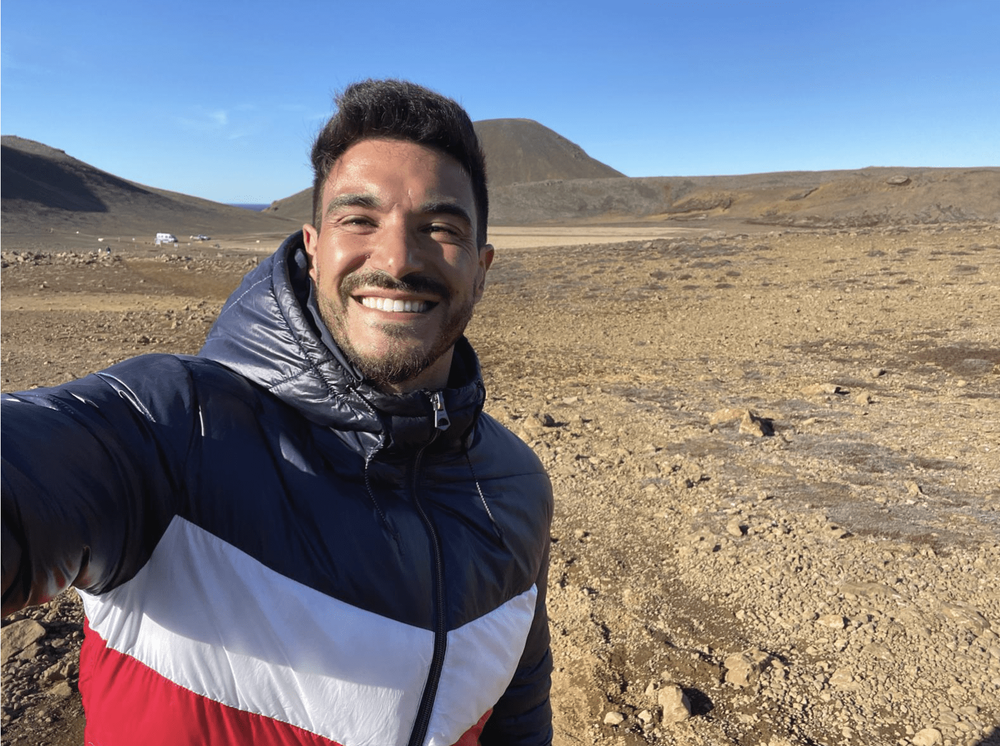

<!doctype html>
<html lang="en">
<head>
<meta charset="UTF-8" />
<meta name="viewport" content="width=device-width, initial-scale=1.0" />
<title>Waypoint — a country explorer</title>
<meta name="description" content="Explore the world one country at a time: real itineraries, budgets, food, and practical tips for 72 countries, all in one place." />
<link rel="canonical" href="https://hellowaypoint.com/" />

<meta property="og:type" content="website" />
<meta property="og:title" content="Waypoint — a country explorer" />
<meta property="og:description" content="Explore the world one country at a time: real itineraries, budgets, food, and practical tips for 72 countries, all in one place." />
<meta property="og:url" content="https://hellowaypoint.com/" />
<meta property="og:image" content="https://hellowaypoint.com/assets/og-default.png" />
<meta property="og:site_name" content="Waypoint" />
<meta name="twitter:card" content="summary_large_image" />
<meta name="twitter:title" content="Waypoint — a country explorer" />
<meta name="twitter:description" content="Explore the world one country at a time: real itineraries, budgets, food, and practical tips for 72 countries, all in one place." />
<meta name="twitter:image" content="https://hellowaypoint.com/assets/og-default.png" />

<meta name="google-site-verification" content="4JmgfcnBBGRxPqEDnHy6j5GsvcYFCPaOFdpOCEea1os" />
<link rel="icon" href="assets/favicon.svg" type="image/svg+xml" />
<link rel="icon" href="assets/favicon-32.png" sizes="32x32" type="image/png" />
<link rel="apple-touch-icon" href="assets/apple-touch-icon.png" />

<!-- Cookie consent + gated Google Analytics loading -->
<script>
(function() {
  var GA_ID = 'G-PZ12RZ4RMF';
  function loadGA() {
    if (window.__wpGALoaded) return;
    window.__wpGALoaded = true;
    var s = document.createElement('script');
    s.async = true;
    s.src = 'https://www.googletagmanager.com/gtag/js?id=' + GA_ID;
    document.head.appendChild(s);
    window.dataLayer = window.dataLayer || [];
    window.gtag = function(){ dataLayer.push(arguments); };
    gtag('js', new Date());
    gtag('config', GA_ID);
  }
  var consent = localStorage.getItem('wp_cookie_consent');
  if (consent === 'granted') { loadGA(); return; }
  if (consent === 'denied') { return; }
  document.addEventListener('DOMContentLoaded', function() {
    var isCountryPage = location.pathname.indexOf('/countries/') !== -1;
    var privacyHref = isCountryPage ? '../privacy-policy.html' : 'privacy-policy.html';
    var banner = document.createElement('div');
    banner.id = 'wp-cookie-banner';
    banner.innerHTML =
      '<div class="wp-cookie-inner">' +
        '<p>We use cookies to understand how visitors use Waypoint. See our <a href="' + privacyHref + '">Privacy Policy</a>.</p>' +
        '<div class="wp-cookie-actions">' +
          '<button id="wp-cookie-reject" type="button">Decline</button>' +
          '<button id="wp-cookie-accept" type="button">Accept</button>' +
        '</div>' +
      '</div>';
    document.body.appendChild(banner);
    document.getElementById('wp-cookie-accept').addEventListener('click', function() {
      localStorage.setItem('wp_cookie_consent', 'granted');
      loadGA();
      banner.remove();
    });
    document.getElementById('wp-cookie-reject').addEventListener('click', function() {
      localStorage.setItem('wp_cookie_consent', 'denied');
      banner.remove();
    });
  });
})();
</script>
<style>
  #wp-cookie-banner { position: fixed; left: 0; right: 0; bottom: 0; z-index: 9999; background: #16233B; }
  .wp-cookie-inner { max-width: 900px; margin: 0 auto; padding: 1rem 1.25rem; display: flex; flex-wrap: wrap; align-items: center; justify-content: space-between; gap: 1rem; font-family: 'Work Sans', sans-serif; }
  .wp-cookie-inner p { margin: 0; font-size: 0.85rem; line-height: 1.5; flex: 1; min-width: 220px; color: #F3EDE0; }
  .wp-cookie-inner a { color: #F3EDE0; text-decoration: underline; }
  .wp-cookie-actions { display: flex; gap: 0.6rem; flex-shrink: 0; }
  .wp-cookie-actions button { font-family: 'Work Sans', sans-serif; font-size: 0.85rem; padding: 0.5rem 1rem; border-radius: 999px; cursor: pointer; border: 1px solid #F3EDE0; }
  #wp-cookie-accept { background: #F3EDE0; color: #16233B; }
  #wp-cookie-reject { background: transparent; color: #F3EDE0; }
</style>

<script crossorigin src="https://unpkg.com/react@18/umd/react.production.min.js"></script>
<script crossorigin src="https://unpkg.com/react-dom@18/umd/react-dom.production.min.js"></script>
<script src="https://unpkg.com/@babel/standalone@7/babel.min.js"></script>
<link rel="stylesheet" href="https://unpkg.com/leaflet@1.9.4/dist/leaflet.css" />
<script src="https://unpkg.com/leaflet@1.9.4/dist/leaflet.js"></script>
<style>
  html, body { margin: 0; padding: 0; }
  #root { min-height: 100vh; }
</style>
</head>
<body>
<div id="root"></div>

<script type="text/babel" data-presets="react">
const CONTINENTS = [{"id": "africa", "name": "Africa", "tagline": "Desert light, savanna dust, ocean coast", "color": "#B0552E", "pt": {"name": "África", "tagline": "Luz do deserto, poeira da savana, costa oceânica"}, "countries": [{"id": "botswana", "name": "Botswana", "flag": "🇧🇼", "capital": "Gaborone", "population": "2.7 million", "language": "English, Setswana", "currency": "Botswana pula", "bestTime": "May–September", "blurb": "Botswana built its tourism around low-impact, high-value safaris, with the Okavango Delta's flooded channels offering a completely different kind of wildlife viewing than the dry savanna elsewhere.", "attractions": [{"name": "Okavango Delta", "wiki": "Okavango_Delta", "desc": "An inland river delta that floods seasonally, creating a maze of channels, lagoons, and islands rich with wildlife. Game viewing here often happens by mokoro, a traditional dugout canoe, moving silently past elephants, hippos, and abundant birdlife. It's one of the few places where safari and wetland exploration combine directly."}, {"name": "Chobe National Park", "wiki": "Chobe_National_Park", "desc": "Home to one of Africa's largest elephant populations, with herds gathering along the Chobe River especially in the dry season. River cruises offer close, calm wildlife viewing as animals come down to drink, often alongside game drives on land. It's frequently combined with a stop at nearby Victoria Falls."}, {"name": "Moremi Game Reserve", "wiki": "Moremi_Game_Reserve", "desc": "Sitting within the Okavango Delta, this reserve mixes floodplain and dry woodland, giving it a strong reputation for predator sightings alongside classic delta scenery. Wild dog sightings are a particular draw for repeat safari-goers. Access is mostly via light aircraft to remote bush camps."}, {"name": "Makgadikgadi Pans", "wiki": "Makgadikgadi_Pan", "desc": "One of the largest salt pan systems in the world, so flat and empty it can feel like standing on another planet. In the dry season, quad bike trips cross the cracked white surface; in the wet season, the pans briefly host large numbers of migrating zebra and flamingos. Meerkat encounters are a well-known highlight nearby."}, {"name": "Central Kalahari Game Reserve", "wiki": "Central_Kalahari_Game_Reserve", "desc": "A vast, remote reserve of open grassland and scrub, home to San communities and wildlife adapted to genuinely arid conditions, including black-maned Kalahari lions. It sees far fewer visitors than the Delta, making it a draw for travelers seeking true wilderness. Distances between camps are considerable, so most visits involve fly-in transfers."}, {"name": "Victoria Falls border crossing", "wiki": "Victoria_Falls", "desc": "While the falls themselves sit on the Zambia-Zimbabwe border, Botswana's Chobe region is close enough that many itineraries combine both in a single trip. The thundering curtain of water on the Zambezi River is one of the most powerful waterfalls on Earth, viewable from either country's side."}], "itineraryDays": 8, "itinerary": [{"label": "Days 1–3", "title": "Okavango Delta", "desc": "Fly into a bush camp for mokoro trips and game walks through the floodplain.", "lat": -19.2833, "lng": 22.9833, "logistics": "~30min flight from Maun", "bookAhead": true, "cost": "Bundled into all-inclusive camp rates, typically $400–1,000+/night depending on the camp's exclusivity.", "food": "Meals are included at virtually every Delta camp, often featuring fresh, flown-in ingredients despite the remote setting."}, {"label": "Days 4–5", "title": "Moremi Game Reserve", "desc": "Game drives through mixed floodplain and woodland known for predator sightings.", "lat": -19.1833, "lng": 23.4, "logistics": "~30min flight from the Delta", "cost": "Similarly all-inclusive, given the fly-in model.", "food": "Same as the Delta — full board is standard at every camp here."}, {"label": "Days 6–7", "title": "Chobe National Park", "desc": "River cruises and game drives among some of Africa's largest elephant herds.", "lat": -18.6, "lng": 24.7, "logistics": "~1h flight from Moremi", "cost": "A Chobe River sunset cruise, if not already included in your package, costs about $50–80.", "food": "A riverside lunch overlooking elephant herds is a highlight many Chobe lodges build into the day."}, {"label": "Day 8", "title": "Victoria Falls", "desc": "A short border crossing to see the falls before departure.", "lat": -17.9243, "lng": 25.8572, "logistics": "~1.5h drive from Kasane", "cost": "The Zimbabwean or Zambian side park entry costs $20–30 depending on which side you visit.", "food": "A final celebratory dinner at a falls-view restaurant is a fitting way to end a Botswana safari."}], "tagline": "A flooded desert delta that rewrites what a safari can look like.", "highlights": ["🛶 Okavango Delta", "🐘 Chobe's elephant herds", "🐆 Predator sightings", "✈️ Fly-in bush camps"], "budget": "Budget: hard to do cheaply · Mid-range: €300–500/day · Luxury: €700+/day (low-volume, high-cost tourism model)", "visa": "Not required for EU, UK, US, and most Commonwealth passport holders for short stays — always confirm current rules before booking.", "daysReason": "8 days covers the Okavango Delta, Moremi, Chobe, and a Victoria Falls add-on at the pace this fly-in safari style rewards. 5–6 works with two camps instead of three; 10+ lets you slow down further, which suits Botswana's low-volume model.", "goodToKnow": {"plug": "Type D/M/G, 230V", "tipping": "USD 15–20/day for safari guides and camp staff is standard", "safety": "Very safe; most travel is guided fly-in safari, so logistics are handled for you", "gettingAround": "Light aircraft connect remote bush camps; few roads reach the Delta's interior", "gettingThere": "Maun's airport (MUN) is the main gateway for fly-in safaris to the Delta and Moremi; Kasane (BBK) serves Chobe and the Victoria Falls border crossing"}, "faq": [{"q": "Do I need a visa for Botswana?", "a": "Not for most Western passport holders (EU, UK, US, and most Commonwealth countries) for short stays."}, {"q": "Which airport should I fly into?", "a": "Maun (MUN) for the Delta and Moremi legs; Kasane (BBK) for Chobe and the Victoria Falls crossing."}, {"q": "Why is Botswana so much more expensive than neighboring safari countries?", "a": "Botswana deliberately runs a low-volume, high-cost tourism model to limit environmental impact — camps are small, exclusive, and priced accordingly."}, {"q": "Do I need to book everything in advance?", "a": "Yes, essential — most camps are small (10–20 beds) and fill up months ahead in peak season (roughly May–October)."}], "food": [{"name": "Seswaa", "desc": "Slow-cooked, pounded beef or goat, traditionally served at celebrations and gatherings."}, {"name": "Pap", "desc": "A maize porridge similar to South Africa's pap, served as the everyday starch."}, {"name": "Morogo", "desc": "Wild leafy greens cooked as a nutritious, commonly eaten side dish."}, {"name": "Bogobe", "desc": "A sorghum porridge often eaten for breakfast, sometimes sweetened with milk."}], "pairsWith": ["zimbabwe"], "pt": {"name": "Botswana", "capital": "Gaborone", "population": "2,7 milhões", "language": "Inglês, Setswana", "currency": "Pula botswanês", "bestTime": "Maio–Setembro", "tagline": "Um delta desértico inundado que reescreve o que um safári pode ser.", "highlights": ["🛶 Delta do Okavango", "🐘 Manadas de elefantes do Chobe", "🐆 Avistamentos de predadores", "✈️ Acampamentos remotos acessíveis por ar"], "blurb": "Botswana construiu o seu turismo à volta de safaris de baixo impacto e alto valor, com os canais inundados do Delta do Okavango a oferecer um tipo de observação de vida selvagem completamente diferente da savana seca do resto do país.", "budget": "Económico: difícil de fazer em conta · Intermédio: 300–500€/dia · Luxo: 700€+/dia (modelo de turismo de baixo volume e alto custo)", "visa": "Não é necessário visto para cidadãos da UE, Reino Unido, EUA e da maioria da Commonwealth em estadias curtas — confirma sempre as regras atuais antes de reservar.", "goodToKnow": {"plug": "Tipo D/M/G, 230V", "tipping": "15–20 USD/dia para guias de safári e staff dos acampamentos é habitual", "safety": "Muito seguro; a maioria das viagens é feita em safári guiado com avioneta, por isso a logística já vem tratada", "gettingAround": "Aviões ligeiros ligam os acampamentos remotos; poucas estradas chegam ao interior do Delta"}, "food": [{"name": "Seswaa", "desc": "Carne de vaca ou cabra cozinhada lentamente e desfiada, tradicionalmente servida em celebrações."}, {"name": "Pap", "desc": "Uma papa de milho semelhante ao pap sul-africano, servida como base diária."}, {"name": "Morogo", "desc": "Vegetais de folha selvagens cozinhados como acompanhamento nutritivo e habitual."}, {"name": "Bogobe", "desc": "Uma papa de sorgo muitas vezes comida ao pequeno-almoço, por vezes adoçada com leite."}], "attractions": [{"name": "Delta do Okavango", "desc": "Um delta fluvial interior que inunda sazonalmente, criando um labirinto de canais, lagoas e ilhas ricas em vida selvagem. A observação aqui acontece muitas vezes de mokoro, uma canoa tradicional escavada, deslizando silenciosamente por elefantes, hipopótamos e uma abundante avifauna. É um dos poucos lugares onde safári e exploração de zonas húmidas se combinam diretamente."}, {"name": "Parque Nacional do Chobe", "desc": "Casa de uma das maiores populações de elefantes de África, com manadas a reunirem-se ao longo do Rio Chobe especialmente na época seca. Cruzeiros fluviais oferecem uma observação próxima e calma à medida que os animais descem para beber, muitas vezes ao lado de safaris terrestres. É frequentemente combinado com uma paragem nas Cataratas Vitória próximas."}, {"name": "Reserva de Caça de Moremi", "desc": "Situada dentro do Delta do Okavango, esta reserva mistura planície inundável e mata seca, dando-lhe uma forte reputação de avistamentos de predadores ao lado da paisagem clássica do delta. Os avistamentos de cães-selvagens são um atrativo particular para quem já fez vários safaris. O acesso é maioritariamente por avioneta até acampamentos remotos."}, {"name": "Panelas de Makgadikgadi", "desc": "Um dos maiores sistemas de panelas de sal do mundo, tão plano e vazio que pode parecer estar noutro planeta. Na época seca, passeios de moto-quatro atravessam a superfície branca e rachada; na época húmida, as panelas acolhem brevemente grandes números de zebras migradoras e flamingos. Os encontros com suricatas são um atrativo bem conhecido nas proximidades."}, {"name": "Reserva de Caça Central do Kalahari", "desc": "Uma reserva vasta e remota de savana aberta e mato, casa de comunidades San e de vida selvagem adaptada a condições genuinamente áridas, incluindo leões do Kalahari de juba escura. Recebe muito menos visitantes do que o Delta, tornando-a atrativa para quem procura verdadeira natureza selvagem. As distâncias entre acampamentos são consideráveis, por isso a maioria das visitas envolve transferências por avioneta."}, {"name": "Travessia de fronteira para as Cataratas Vitória", "desc": "Embora as cataratas em si fiquem na fronteira entre Zâmbia e Zimbabué, a região do Chobe em Botswana fica suficientemente perto para que muitos itinerários combinem ambos numa única viagem. A cortina de água trovejante no Rio Zambeze é uma das cataratas mais poderosas da Terra, visível de qualquer um dos lados."}], "itinerary": [{"label": "Dias 1–3", "title": "Delta do Okavango", "desc": "Voa até um acampamento no mato para passeios de mokoro e caminhadas de safári pela planície inundável.", "logistics": "~30min de voo desde Maun"}, {"label": "Dias 4–5", "title": "Reserva de Moremi", "desc": "Safaris por planície inundável e mata mista, conhecida por avistamentos de predadores.", "logistics": "~30min de voo desde o Delta"}, {"label": "Dias 6–7", "title": "Parque Nacional do Chobe", "desc": "Cruzeiros fluviais e safaris entre algumas das maiores manadas de elefantes de África.", "logistics": "~1h de voo desde Moremi"}, {"label": "Dia 8", "title": "Cataratas Vitória", "desc": "Uma pequena travessia de fronteira para ver as cataratas antes da partida.", "logistics": "~1,5h de carro desde Kasane"}]}}, {"id": "cabo-verde", "name": "Cabo Verde", "flag": "🇨🇻", "capital": "Praia", "population": "590,000", "language": "Portuguese, Cape Verdean Creole", "currency": "Cape Verdean escudo", "bestTime": "November–June", "blurb": "Cabo Verde's ten volcanic islands off West Africa range from wind-battered dune beaches to green mountain villages, tied together by a slow-paced Creole culture and morna music.", "attractions": [{"name": "Santa Maria beach, Sal", "wiki": "Sal,_Cape_Verde", "desc": "A long stretch of white sand and steady trade winds that made Sal one of the world's best-known kitesurfing destinations. The town behind it stays low-key, with a working pier and a relaxed strip of cafes. It's the easiest island to reach and the most set up for a straightforward beach holiday."}, {"name": "Fogo volcano", "wiki": "Pico_do_Fogo", "desc": "An active volcano rising to nearly 2,829 meters, with a village, Chã das Caldeiras, sitting inside its outer crater and growing grapes in volcanic soil for a distinctive local wine. Guided hikes climb to the rim, with the option to continue to the true summit. The 2014 eruption reshaped part of the crater floor within living memory."}, {"name": "Santo Antão's hiking trails", "wiki": "Santo_Antão,_Cape_Verde", "desc": "A dramatically green, mountainous island cut by deep ribeiras (valleys) and terraced with sugarcane and coffee. Old cobbled paths, once the only routes between villages, now serve as some of West Africa's best hiking trails, winding along cliff edges and through cloud forest. It's a sharp contrast to the desert islands nearby."}, {"name": "Cidade Velha", "wiki": "Cidade_Velha", "desc": "The first European colonial settlement in the tropics, founded by the Portuguese in the 15th century on Santiago island. Its ruined fortress, colonial church, and old pillory square tell the darker history of the transatlantic slave trade that passed through here. It's a UNESCO World Heritage Site and an easy day trip from Praia."}, {"name": "São Vicente's Mindelo", "wiki": "Mindelo", "desc": "A colorful port town considered the cultural capital of Cabo Verde, birthplace of singer Cesária Évora and the spiritual home of morna music. Its lively Carnival, waterfront cafes, and pastel colonial buildings give it a distinct character from the quieter islands. Live music spills out of small bars most evenings."}, {"name": "Buracona blue eye, Sal", "wiki": "Sal,_Cape_Verde", "desc": "A natural rock pool near Sal's northern tip where sunlight filtering through an underwater cave creates a glowing blue effect, best seen around midday. Nearby, the Pedra de Lume salt crater offers a swim in mineral-dense, buoyant water inside an old volcanic caldera. Both make for an easy, scenic half-day loop."}], "itineraryDays": 9, "itinerary": [{"label": "Days 1–3", "title": "Sal", "desc": "Beach time at Santa Maria, plus the Buracona blue eye and Pedra de Lume.", "lat": 16.75, "lng": -22.9333, "cost": "A boat trip to Buracona costs about €20–30; most beach time itself is free.", "food": "Try cachupa at a local restaurant in Santa Maria — Cabo Verde's essential dish, worth having at least once properly."}, {"label": "Days 4–6", "title": "Santo Antão", "desc": "Ferry via São Vicente to hike the island's green ribeiras and coastal trails.", "lat": 17.0667, "lng": -25.1, "logistics": "~1h flight to São Vicente, then a short ferry crossing", "cost": "A guided hike through the ribeiras costs about €25–40 for a half-day.", "food": "Try fresh, simple grilled fish at a small village restaurant along the coastal trail."}, {"label": "Day 6 (evening)", "title": "Mindelo", "desc": "An evening in São Vicente's lively port town before flying on.", "lat": 16.8892, "lng": -24.9814, "cost": "An evening out in Mindelo's live music scene costs little beyond drinks.", "food": "Mindelo is known for its morna music scene — pair a live show with fresh seafood at a harborside spot."}, {"label": "Days 7–9", "title": "Fogo & Santiago", "desc": "Hike the volcano, then visit Cidade Velha near Praia before departure.", "lat": 14.8961, "lng": -24.4956, "logistics": "~1h flight from São Vicente", "bookAhead": true, "cost": "The Fogo volcano hike with a mandatory local guide costs about €25–35 per person.", "food": "Try wine grown on Fogo's volcanic slopes — a genuine curiosity worth tasting at the source."}], "tagline": "Ten volcanic islands, ten completely different moods.", "highlights": ["🏄 Kitesurfing coasts", "🌋 Active volcano hike", "🥾 Green mountain trails", "🎶 Morna music"], "budget": "Budget: €35–50/day · Mid-range: €70–120/day · Luxury: €180+/day", "visa": "An e-Visa is required for most nationalities and should be applied for online in advance — always confirm current rules before booking.", "daysReason": "9 days covers Sal, Santo Antão, and Fogo/Santiago — three genuinely different islands. 5–6 works for just two islands; 12+ lets you add São Vicente properly or slow the ferry-dependent legs down.", "goodToKnow": {"plug": "Type C/F, 230V", "tipping": "10% in restaurants is appreciated but not obligatory", "safety": "Generally safe and relaxed; inter-island ferries can be affected by weather, so build in buffer days", "gettingAround": "Inter-island flights or ferries are needed to move between islands; each island is small enough to explore by car", "gettingThere": "Sal's Amílcar Cabral International Airport (SID) is the main international gateway, with the best direct flight connections from Europe"}, "faq": [{"q": "Do I need a visa for Cabo Verde?", "a": "Yes, an e-visa is required for most nationalities, applied for online in advance."}, {"q": "Which airport should I fly into?", "a": "Sal (SID), the main international gateway with the best direct connections from Europe."}, {"q": "Do I need to build in buffer days?", "a": "Yes, genuinely important — inter-island ferries are weather-dependent and can be delayed or cancelled, especially between São Vicente and Santo Antão."}, {"q": "Which island should I prioritize if short on time?", "a": "Sal for beaches and kitesurfing, or Santo Antão for hiking — they offer very different experiences, so pick based on your priorities rather than trying to rush both."}], "food": [{"name": "Cachupa", "desc": "The national dish: a slow-cooked stew of corn, beans, and whatever meat or fish is on hand."}, {"name": "Grogue", "desc": "A strong sugarcane spirit distilled locally, especially on Santo Antão and Fogo."}, {"name": "Pastel com diabo dentro", "desc": "A fried pastry filled with spiced tuna or fish, a popular savory snack."}, {"name": "Fogo wine", "desc": "Wine grown in volcanic soil on the slopes of Fogo's crater, unusual for a West African archipelago."}], "pairsWith": [], "pt": {"name": "Cabo Verde", "capital": "Praia", "population": "590 mil", "language": "Português, Crioulo Cabo-verdiano", "currency": "Escudo cabo-verdiano", "bestTime": "Novembro–Junho", "tagline": "Dez ilhas vulcânicas, dez estados de espírito completamente diferentes.", "highlights": ["🏄 Costas para kitesurf", "🌋 Caminhada a vulcão ativo", "🥾 Trilhos na montanha verde", "🎶 Música morna"], "blurb": "As dez ilhas vulcânicas de Cabo Verde, ao largo da África Ocidental, vão de praias de dunas batidas pelo vento a vilas de montanha verdes, ligadas por uma cultura crioula tranquila e pela música morna.", "budget": "Económico: 35–50€/dia · Intermédio: 70–120€/dia · Luxo: 180€+/dia", "visa": "É necessário e-Visa para a maioria das nacionalidades, a pedir online com antecedência — confirma sempre as regras atuais antes de reservar.", "goodToKnow": {"plug": "Tipo C/F, 230V", "tipping": "10% em restaurantes é apreciado mas não obrigatório", "safety": "Geralmente seguro e tranquilo; os ferries entre ilhas podem ser afetados pelo tempo, por isso vale a pena ter dias de folga extra", "gettingAround": "São necessários voos ou ferries entre ilhas para se deslocar; cada ilha é pequena o suficiente para explorar de carro"}, "food": [{"name": "Cachupa", "desc": "O prato nacional: um guisado cozinhado lentamente de milho, feijão e o que houver de carne ou peixe."}, {"name": "Grogue", "desc": "Uma aguardente forte de cana-de-açúcar destilada localmente, especialmente em Santo Antão e no Fogo."}, {"name": "Pastel com diabo dentro", "desc": "Um pastel frito recheado com atum ou peixe especiado, um snack salgado popular."}, {"name": "Vinho do Fogo", "desc": "Vinho cultivado em solo vulcânico nas encostas da cratera do Fogo, invulgar para um arquipélago da África Ocidental."}], "attractions": [{"name": "Sal", "desc": "Uma longa faixa de areia branca e ventos constantes fizeram do Sal um dos destinos de kitesurf mais conhecidos do mundo. A vila por trás mantém-se descontraída, com um cais em funcionamento e uma faixa relaxada de cafés. É a ilha mais fácil de alcançar e a mais preparada para umas férias de praia sem complicações."}, {"name": "Vulcão do Fogo", "desc": "Um vulcão ativo que se eleva a quase 2.829 metros, com uma vila, Chã das Caldeiras, situada dentro da sua cratera exterior, cultivando uvas em solo vulcânico para um vinho local distinto. Caminhadas guiadas sobem até à borda da cratera, com opção de continuar até ao verdadeiro cume. A erupção de 2014 remodelou parte do fundo da cratera dentro da memória viva."}, {"name": "Trilhos de caminhada de Santo Antão", "desc": "Uma ilha dramaticamente verde e montanhosa, cortada por profundas ribeiras e aterraçada com cana-de-açúcar e café. Antigos caminhos empedrados, outrora as únicas rotas entre aldeias, servem hoje como alguns dos melhores trilhos de caminhada da África Ocidental, serpenteando ao longo de arribas e por floresta de nuvens. É um contraste marcante com as ilhas desérticas próximas."}, {"name": "Cidade Velha", "desc": "O primeiro assentamento colonial europeu nos trópicos, fundado pelos portugueses no século XV na ilha de Santiago. A sua fortaleza em ruínas, igreja colonial e antiga praça do pelourinho contam a história mais sombria do comércio transatlântico de escravos que por ali passou. É Património Mundial da UNESCO e uma excursão fácil de um dia a partir da Praia."}, {"name": "Mindelo, São Vicente", "desc": "Uma vila portuária colorida considerada a capital cultural de Cabo Verde, terra natal da cantora Cesária Évora e coração espiritual da música morna. O seu Carnaval animado, cafés à beira-mar e edifícios coloniais em tons pastel dão-lhe um carácter distinto das ilhas mais tranquilas. A música ao vivo espalha-se por pequenos bares na maioria das noites."}, {"name": "Buracona, Sal", "desc": "Uma piscina natural na rocha perto da ponta norte do Sal, onde a luz solar filtrada através de uma gruta subaquática cria um efeito azul brilhante, visto melhor por volta do meio-dia. Perto dali, a cratera de sal de Pedra de Lume oferece um mergulho em água mineral densa e flutuante dentro de uma antiga caldeira vulcânica. Ambos formam um roteiro fácil e cénico de meio dia."}], "itinerary": [{"label": "Dias 1–3", "title": "Sal", "desc": "Praia em Santa Maria, mais a Buracona e a Pedra de Lume."}, {"label": "Dias 4–6", "title": "Santo Antão", "desc": "Ferry via São Vicente para caminhar pelas ribeiras verdes e trilhos costeiros da ilha.", "logistics": "~1h de voo até São Vicente, seguido de uma pequena travessia de ferry"}, {"label": "Dia 6 (noite)", "title": "Mindelo", "desc": "Uma noite na animada vila portuária de São Vicente antes de continuar voo."}, {"label": "Dias 7–9", "title": "Fogo e Santiago", "desc": "Sobe ao vulcão, depois visita Cidade Velha, perto da Praia, antes da partida.", "logistics": "~1h de voo desde São Vicente"}]}}, {"id": "egypt", "name": "Egypt", "flag": "🇪🇬", "capital": "Cairo", "population": "112 million", "language": "Arabic", "currency": "Egyptian pound", "bestTime": "October–April", "blurb": "Most of Egypt's essential sights sit along one river, which makes a Nile itinerary the natural spine for a first visit.", "attractions": [{"name": "Pyramids of Giza", "wiki": "Great_Pyramid_of_Giza", "desc": "The last standing wonder of the ancient world, its precisely aligned limestone blocks still prompting debate over the exact construction methods used over 4,500 years ago. The Great Sphinx sits just beside it, its origins and original appearance still partly mysterious. Camel rides and sound-and-light shows are popular add-ons, though the monuments themselves need no embellishment."}, {"name": "Egyptian Museum, Cairo", "wiki": "Egyptian_Museum", "desc": "Home to Tutankhamun's treasures, including his iconic gold burial mask, alongside a dense collection spanning three millennia of ancient Egyptian civilization. The sheer volume of artifacts, many displayed with minimal modern presentation, gives it a distinctly old-fashioned but genuinely thrilling character. A new, more spacious museum near the pyramids is gradually taking over much of the collection."}, {"name": "Karnak & the Valley of the Kings, Luxor", "wiki": "Karnak", "desc": "Karnak's temple complex, built and expanded over 2,000 years, remains the largest religious building ever constructed, its forest of massive columns dwarfing visitors below. Across the river, the Valley of the Kings holds the rock-cut tombs of pharaohs including Tutankhamun, their painted interiors remarkably vivid despite their age. Luxor is sometimes called the world's largest open-air museum for good reason."}, {"name": "Nile felucca sail, Aswan", "wiki": "Felucca", "desc": "A slow sail past riverside villages and palm groves on a traditional wooden boat, offering a quieter, more contemplative pace than the larger cruise ships. Aswan's position near the Nubian border gives it a distinct culture and architecture from northern Egypt. Sunset sails around Elephantine Island are a particularly popular choice."}, {"name": "Abu Simbel", "wiki": "Abu_Simbel_temples", "desc": "Two massive rock-cut temples built by Ramses II, their facade of four colossal seated statues among the most recognizable images of ancient Egypt. The entire complex was relocated in the 1960s to save it from flooding after the construction of the Aswan High Dam, a major feat of modern engineering in its own right. Twice a year, sunlight aligns to illuminate the inner sanctuary, a detail believed to be intentional."}, {"name": "Islamic Cairo & Khan el-Khalili", "wiki": "Khan_el-Khalili", "desc": "A historic bazaar district dating to the 14th century, its narrow lanes packed with spice sellers, goldsmiths, and coffee houses that have hosted generations of traders and, more recently, travelers. Surrounding mosques and madrasas showcase centuries of Islamic architectural development largely undisturbed by modern Cairo's sprawl. Bargaining is expected and part of the experience."}], "itineraryDays": 8, "itinerary": [{"label": "Days 1–2", "title": "Cairo & Giza", "desc": "The pyramids, the Sphinx, and the Egyptian Museum's collection.", "lat": 30.0444, "lng": 31.2357, "cost": "Pyramids of Giza entry costs about 700 EGP (~$15); the Egyptian Museum runs about 450 EGP.", "food": "Try koshari from a no-frills local spot — Cairo's ultimate comfort food, and it costs almost nothing."}, {"label": "Days 3–5", "title": "Nile cruise", "desc": "Sail from Luxor to Aswan, stopping at Karnak, the Valley of the Kings, and Edfu.", "lat": 25.6872, "lng": 32.6396, "logistics": "~1h flight from Cairo to Luxor to start the cruise", "bookAhead": true, "cost": "Multi-day Nile cruises range widely, roughly $50–150+/night depending on the boat's class.", "food": "Meals are included on board, but stop for fresh-pressed sugarcane juice at any dock town along the way."}, {"label": "Day 6", "title": "Abu Simbel", "desc": "An early flight or drive to see Ramses II's temple carved into the cliffside.", "lat": 22.3372, "lng": 31.6258, "logistics": "~40min flight or 3h drive from Aswan", "bookAhead": true, "cost": "Entry costs about 1,000 EGP (~$21); the early flight from Aswan adds cost but saves half a day of driving.", "food": "Grab a quick breakfast to go — most visitors do this as a very early day trip."}, {"label": "Days 7–8", "title": "Red Sea or Cairo", "desc": "Either a coastal stop in Hurghada, or a return to Cairo for departure.", "lat": 27.2579, "lng": 33.8116, "logistics": "~1h flight from Aswan", "cost": "A snorkeling boat trip in Hurghada costs roughly $25–40.", "food": "Fresh grilled Red Sea fish at a harbor-side restaurant in Hurghada is the highlight of this stop."}], "tagline": "Millennia of history, all strung along a single river.", "highlights": ["🐫 Pyramids of Giza", "🛥️ Nile cruising", "🏛️ Ancient temples", "🤿 Red Sea reefs"], "budget": "Budget: €20–35/day · Mid-range: €50–90/day · Luxury: €150+/day", "visa": "A visa on arrival or e-Visa is available for most nationalities — always confirm current rules before booking.", "daysReason": "8 days covers Cairo, a Nile cruise, and either Abu Simbel or the Red Sea without rushing. 5–6 works if you skip Abu Simbel; 10–12 lets you add both Abu Simbel and real beach time.", "goodToKnow": {"plug": "Type C/F, 220V", "tipping": "Baksheesh (small tips) is expected widely, including for minor services", "safety": "Tourist areas are well policed; agree taxi fares before the ride and avoid unlicensed guides", "gettingAround": "Domestic flights save time between Cairo, Luxor, and Aswan; Nile cruises handle the middle leg", "gettingThere": "Cairo International Airport (CAI) is the main gateway for this route; Luxor (LXR) has its own airport if you'd rather start the Nile cruise directly"}, "faq": [{"q": "Do I need a visa for Egypt?", "a": "Yes, most Western passport holders need either an e-visa (apply at the official visa2egypt.gov.eg, around $25) or a visa on arrival (cash only, around $25–30) — both valid for a 30-day single-entry stay."}, {"q": "Which airport should I fly into?", "a": "Cairo International (CAI) for this route; Luxor (LXR) works if you'd rather start the Nile cruise directly instead of beginning in Cairo."}, {"q": "Do I need to tip a lot in Egypt?", "a": "Yes — baksheesh (small tips) is expected widely and for more services than in most countries. Carry small bills throughout your trip."}, {"q": "Is tap water safe to drink in Egypt?", "a": "No — stick to bottled water throughout, including for brushing teeth."}], "food": [{"name": "Koshari", "desc": "A hearty street-food staple of rice, lentils, pasta, and crispy onions topped with a tangy tomato sauce."}, {"name": "Ful medames", "desc": "Slow-cooked fava beans, typically eaten for breakfast with bread, oil, and lemon."}, {"name": "Molokhia", "desc": "A green, slightly mucilaginous soup made from jute leaves, usually served with rice or bread."}, {"name": "Hibiscus tea (karkade)", "desc": "A tart, deep-red iced or hot tea, often served as a refreshing welcome drink."}], "pairsWith": ["morocco"], "pt": {"name": "Egito", "capital": "Cairo", "population": "112 milhões", "language": "Árabe", "currency": "Libra egípcia", "bestTime": "Outubro–Abril", "tagline": "Milénios de história, enfiados ao longo de um único rio.", "highlights": ["🐫 Pirâmides de Gizé", "🛥️ Cruzeiro no Nilo", "🏛️ Templos antigos", "🤿 Recifes do Mar Vermelho"], "blurb": "A maioria dos pontos essenciais do Egito situa-se ao longo de um rio, o que torna um itinerário pelo Nilo a espinha natural de uma primeira visita.", "budget": "Económico: 20–35€/dia · Intermédio: 50–90€/dia · Luxo: 150€+/dia", "visa": "Visto à chegada ou e-Visa disponível para a maioria das nacionalidades — confirma sempre as regras atuais antes de reservar.", "goodToKnow": {"plug": "Tipo C/F, 220V", "tipping": "O baksheesh (pequenas gorjetas) é amplamente esperado, incluindo para serviços menores", "safety": "As zonas turísticas são bem policiadas; combina o preço do táxi antes da viagem e evita guias não licenciados", "gettingAround": "Voos domésticos poupam tempo entre Cairo, Luxor e Assuão; os cruzeiros no Nilo tratam do troço intermédio"}, "food": [{"name": "Koshari", "desc": "Um prato de rua substancial de arroz, lentilhas, massa e cebola estaladiça, coberto com um molho de tomate ácido."}, {"name": "Ful medames", "desc": "Favas cozinhadas lentamente, normalmente comidas ao pequeno-almoço com pão, azeite e limão."}, {"name": "Molokhia", "desc": "Uma sopa verde, ligeiramente gelatinosa, feita de folhas de junta, normalmente servida com arroz ou pão."}, {"name": "Chá de hibisco (karkade)", "desc": "Um chá ácido, vermelho intenso, servido frio ou quente, muitas vezes como bebida de boas-vindas."}], "attractions": [{"name": "Pirâmides de Gizé", "desc": "A última maravilha de pé do mundo antigo, com os seus blocos de calcário precisamente alinhados a suscitar ainda hoje debate sobre os métodos exatos de construção usados há mais de 4.500 anos. A Grande Esfinge situa-se mesmo ao lado, com origens e aparência original ainda parcialmente misteriosas. Passeios de camelo e espetáculos de som e luz são acrescentos populares, embora os monumentos por si só não precisem de enfeites."}, {"name": "Museu Egípcio, Cairo", "desc": "Casa dos tesouros de Tutankhamon, incluindo a icónica máscara funerária de ouro, ao lado de uma densa coleção que abrange três milénios de civilização egípcia antiga. O grande volume de artefactos, muitos exibidos com apresentação moderna mínima, dá-lhe um carácter genuinamente antiquado mas verdadeiramente emocionante. Um novo museu, maior, perto das pirâmides, está gradualmente a assumir grande parte da coleção."}, {"name": "Carnaque e o Vale dos Reis, Luxor", "desc": "O complexo de templos de Carnaque, construído e expandido ao longo de 2.000 anos, continua a ser o maior edifício religioso alguma vez construído, com uma floresta de colunas imponentes que fazem parecer pequenos os visitantes. Do outro lado do rio, o Vale dos Reis guarda os túmulos escavados na rocha de faraós, incluindo Tutankhamon, com interiores pintados surpreendentemente vívidos apesar da idade. Luxor é por vezes chamado o maior museu ao ar livre do mundo, e com razão."}, {"name": "Passeio de felucca no Nilo, Assuão", "desc": "Um passeio de vela lento por vilas ribeirinhas e palmeirais num barco de madeira tradicional, oferecendo um ritmo mais calmo e contemplativo do que os grandes barcos de cruzeiro. A posição de Assuão perto da fronteira núbia dá-lhe uma cultura e arquitetura distintas do norte do Egito. Os passeios ao pôr do sol à volta da Ilha Elephantine são particularmente populares."}, {"name": "Abu Simbel", "desc": "Dois enormes templos escavados na rocha construídos por Ramsés II, com a fachada de quatro estátuas sentadas colossais entre as imagens mais reconhecíveis do Egito antigo. Todo o complexo foi realocado nos anos 1960 para o salvar da inundação após a construção da Barragem de Assuão, um grande feito de engenharia moderna por si só. Duas vezes por ano, a luz solar alinha-se para iluminar o santuário interior, um detalhe que se acredita ser intencional."}, {"name": "Cairo Islâmico e Khan el-Khalili", "desc": "Um bazar histórico que remonta ao século XIV, com becos estreitos cheios de especiarias, ourives e casas de café que acolheram gerações de comerciantes e, mais recentemente, viajantes. As mesquitas e madraças circundantes mostram séculos de desenvolvimento arquitetónico islâmico, largamente intocados pela expansão do Cairo moderno. Regatear é esperado e faz parte da experiência."}], "itinerary": [{"label": "Dias 1–2", "title": "Cairo e Gizé", "desc": "As pirâmides, a Esfinge, e a coleção do Museu Egípcio."}, {"label": "Dias 3–5", "title": "Cruzeiro no Nilo", "desc": "Navega de Luxor até Assuão, com paragens em Carnaque, no Vale dos Reis e em Edfu.", "logistics": "~1h de voo desde o Cairo até Luxor para iniciar o cruzeiro"}, {"label": "Dia 6", "title": "Abu Simbel", "desc": "Um voo ou condução matinal para ver o templo de Ramsés II esculpido na falésia.", "logistics": "~40min de voo ou 3h de carro desde Assuão"}, {"label": "Dias 7–8", "title": "Mar Vermelho ou Cairo", "desc": "Uma paragem costeira em Hurghada, ou um regresso ao Cairo para a partida.", "logistics": "~1h de voo desde Assuão"}]}}, {"id": "kenya", "name": "Kenya", "flag": "🇰🇪", "capital": "Nairobi", "population": "55 million", "language": "Swahili, English", "currency": "Kenyan shilling", "bestTime": "June–October", "blurb": "Kenya's Rift Valley parks hold some of the most reliable wildlife viewing on the continent, from the Mara's migration to flamingo-lined lakes.", "attractions": [{"name": "Maasai Mara", "wiki": "Maasai_Mara", "desc": "Home to the wildebeest migration between July and September, when over a million animals cross crocodile-filled rivers in one of nature's most dramatic annual events. Dense predator populations, including lions, cheetahs, and leopards, make game drives here productive year-round, not just during migration season. Maasai-guided village visits add cultural context alongside the wildlife."}, {"name": "Amboseli National Park", "wiki": "Amboseli_National_Park", "desc": "Famous for large elephant herds photographed against the towering backdrop of Mount Kilimanjaro just across the border in Tanzania. The park's swampy wetlands, fed by underground rivers from the mountain, sustain wildlife even through the driest months. Clear morning light before clouds gather around the peak offers the best photography conditions."}, {"name": "Lake Nakuru", "wiki": "Lake_Nakuru_National_Park", "desc": "A soda lake once famous for enormous flocks of flamingos, whose numbers now fluctuate with changing water chemistry, alongside a well-protected rhino sanctuary within the park boundaries. Acacia woodland surrounding the lake supports leopards and a healthy giraffe population. Its relatively compact size makes for efficient game drives compared to larger parks."}, {"name": "Diani Beach", "wiki": "Diani_Beach", "desc": "White sand and a protected coral reef on the Indian Ocean coast, a natural and relaxing add-on after the intensity of a safari itinerary. Kitesurfing conditions here are considered among the best in East Africa. A nearby forest reserve protects rare Angolan colobus monkeys, offering a wildlife encounter distinct from the inland parks."}, {"name": "Hell's Gate National Park", "wiki": "Hell%27s_Gate_National_Park", "desc": "One of the few Kenyan parks where visitors can walk, cycle, or rock climb among wildlife without a vehicle, its dramatic gorge and towering cliffs partly inspiring scenes in Disney's The Lion King. Geothermal activity, including steam vents and hot springs, adds an unusual volcanic backdrop. It's a favorite for a more active, hands-on safari experience."}, {"name": "Nairobi National Park", "wiki": "Nairobi_National_Park", "desc": "An unusual park sitting directly against the edge of a capital city, its lions and rhinos visible with the Nairobi skyline as an incongruous backdrop. It offers a convenient way to see wildlife on a tight schedule or as an introduction before heading further afield. The adjoining Giraffe Centre and elephant orphanage are popular add-ons."}], "itineraryDays": 7, "itinerary": [{"label": "Days 1–3", "title": "Maasai Mara", "desc": "Morning and evening game drives, with a full day near the Mara River during migration season.", "lat": -1.4061, "lng": 35.0058, "logistics": "~1h flight or 5-6h drive from Nairobi", "bookAhead": true, "cost": "Park entry fees run about $80–100/day for non-residents, often bundled into lodge or camp packages.", "food": "Most camps include full board; a bush breakfast set up mid-game-drive is a common, memorable touch."}, {"label": "Days 4–5", "title": "Amboseli", "desc": "Transfer south for elephant sightings with Kilimanjaro views.", "lat": -2.6529, "lng": 37.2606, "logistics": "~1h flight from the Mara", "cost": "Park entry costs about $60–80/day for non-residents.", "food": "Same as the Mara — meals are typically included with your lodge stay here."}, {"label": "Day 6", "title": "Lake Nakuru", "desc": "A stop for flamingos and a chance at rhino before heading back north.", "lat": -0.3667, "lng": 36.0833, "logistics": "~4h drive from Amboseli via Nairobi", "cost": "Park entry costs about $50–60/day for non-residents.", "food": "A packed lunch from your previous lodge is the practical choice, since this is often a transit-day stop."}, {"label": "Day 7", "title": "Nairobi", "desc": "Visit the Giraffe Centre or Sheldrick elephant orphanage before departure.", "lat": -1.2921, "lng": 36.8219, "logistics": "~2h drive from Lake Nakuru", "cost": "The Sheldrick Wildlife Trust suggests a small entry donation (~$7); the Giraffe Centre costs about $12.", "food": "Try a Nairobi restaurant specializing in nyama choma for a proper send-off meal before departure."}], "tagline": "The plains that defined the word safari.", "highlights": ["🦁 Big Five", "🐾 Great Migration", "🌋 Rift Valley lakes", "🏖️ Indian Ocean coast"], "budget": "Budget: €70–100/day · Mid-range: €150–300/day · Luxury: €400+/day (safari-heavy costs)", "visa": "An Electronic Travel Authorisation (eTA) — not a traditional visa — is required in advance for most nationalities, about $32.50, applied for at least 3 days before travel — always confirm current rules before booking.", "daysReason": "7 days covers Maasai Mara, Amboseli, and Lake Nakuru at a good safari pace. 4–5 works for just the Mara; 10+ lets you add the Kenyan coast or slow the parks down.", "goodToKnow": {"plug": "Type G, 240V", "tipping": "USD 10–20/day for safari guides is standard practice", "safety": "Safaris are well organized; use reputable operators and avoid walking alone at night in cities", "gettingAround": "Domestic flights link parks quickly; road transfers between parks can take most of a day", "gettingThere": "Nairobi's Jomo Kenyatta International Airport (NBO) is the main gateway for this route, with onward domestic flights or road transfers to each park"}, "faq": [{"q": "Do I need a visa for Kenya?", "a": "Technically an eTA rather than a traditional visa — apply online at least 3 days before travel (about $32.50), valid for a single entry."}, {"q": "Which airport should I fly into?", "a": "Nairobi's Jomo Kenyatta International (NBO), the main gateway with onward domestic flights or road transfers to each park."}, {"q": "Do I need a yellow fever vaccination?", "a": "Only if arriving from a country where yellow fever is endemic — otherwise not required, but check current guidance based on your specific travel history."}, {"q": "How much should I tip safari guides?", "a": "USD 10–20 per day per guide is standard practice, generally handed directly at the end of your stay."}], "food": [{"name": "Nyama choma", "desc": "Grilled meat, usually goat or beef, slow-cooked over charcoal and a centerpiece of Kenyan social gatherings."}, {"name": "Ugali", "desc": "A firm maize-flour porridge served as the starchy base for most Kenyan meals."}, {"name": "Sukuma wiki", "desc": "Sautéed collard greens, a everyday side dish whose name translates roughly to 'stretch the week'."}, {"name": "Chai", "desc": "Spiced milk tea, brewed strong and sweet, drunk throughout the day."}], "pairsWith": ["tanzania"], "pt": {"name": "Quénia", "capital": "Nairobi", "population": "55 milhões", "language": "Suaíli, Inglês", "currency": "Xelim queniano", "bestTime": "Junho–Outubro", "tagline": "As planícies que definiram a palavra safari.", "highlights": ["🦁 Big Five", "🐾 Grande Migração", "🌋 Lagos do Vale do Rift", "🏖️ Costa do Índico"], "blurb": "Os parques do Vale do Rift do Quénia oferecem uma das observações de vida selvagem mais fiáveis do continente, da migração no Mara aos lagos cheios de flamingos.", "budget": "Económico: 70–100€/dia · Intermédio: 150–300€/dia · Luxo: 400€+/dia (custos elevados devido aos safaris)", "visa": "É necessário e-Visa para a maioria das nacionalidades, a pedir online com antecedência — confirma sempre as regras atuais antes de reservar.", "goodToKnow": {"plug": "Tipo G, 240V", "tipping": "10–20 USD/dia para guias de safari é habitual", "safety": "Os safaris são bem organizados; usa operadores de confiança e evita andar sozinho à noite nas cidades", "gettingAround": "Voos domésticos ligam rapidamente os parques; as transferências por estrada podem demorar quase um dia inteiro"}, "food": [{"name": "Nyama choma", "desc": "Carne grelhada, normalmente cabra ou vaca, cozinhada lentamente sobre carvão — o centro de qualquer convívio queniano."}, {"name": "Ugali", "desc": "Uma papa firme de farinha de milho, servida como base da maioria das refeições quenianas."}, {"name": "Sukuma wiki", "desc": "Couve salteada, um acompanhamento diário cujo nome se traduz aproximadamente como 'esticar a semana'."}, {"name": "Chai", "desc": "Chá de leite especiado, forte e doce, bebido ao longo do dia."}], "attractions": [{"name": "Maasai Mara", "desc": "Casa da migração dos gnus entre julho e setembro, quando mais de um milhão de animais atravessam rios cheios de crocodilos num dos eventos mais dramáticos da natureza. As densas populações de predadores, incluindo leões, chitas e leopardos, tornam os safaris produtivos durante todo o ano, não só na época da migração. Visitas a aldeias Maasai guiadas acrescentam contexto cultural à vida selvagem."}, {"name": "Amboseli", "desc": "Famoso pelas grandes manadas de elefantes fotografadas com o imponente Monte Kilimanjaro ao fundo, do outro lado da fronteira na Tanzânia. As zonas húmidas do parque, alimentadas por rios subterrâneos vindos da montanha, sustentam a vida selvagem mesmo nos meses mais secos. A luz suave da manhã, antes de as nuvens se juntarem à volta do pico, oferece as melhores condições fotográficas."}, {"name": "Lago Nakuru", "desc": "Um lago de soda outrora famoso por enormes bandos de flamingos, cujo número agora varia com a química da água, ao lado de um santuário de rinocerontes bem protegido dentro do parque. A floresta de acácias que rodeia o lago sustenta leopardos e uma saudável população de girafas. O tamanho relativamente compacto permite safaris eficientes comparado com parques maiores."}, {"name": "Praia de Diani", "desc": "Areia branca e um recife de coral protegido na costa do Índico, um complemento natural e relaxante depois da intensidade de um safari. As condições para kitesurf aqui contam-se entre as melhores da África Oriental. Uma reserva florestal próxima protege colobos-pretos angolanos, um encontro com vida selvagem distinto dos parques do interior."}, {"name": "Parque Nacional de Hell's Gate", "desc": "Um dos poucos parques quenianos onde se pode caminhar, pedalar ou fazer escalada entre vida selvagem sem veículo, com o seu desfiladeiro dramático e falésias imponentes a inspirar parcialmente cenas de O Rei Leão da Disney. A atividade geotérmica, incluindo fontes de vapor e termas, acrescenta um pano de fundo vulcânico invulgar. É uma escolha preferida para um safari mais ativo e prático."}, {"name": "Parque Nacional de Nairobi", "desc": "Um parque invulgar situado mesmo junto aos limites de uma capital, com leões e rinocerontes visíveis tendo o horizonte de Nairobi como pano de fundo incongruente. Oferece uma forma conveniente de ver vida selvagem com pouco tempo disponível ou como introdução antes de seguir mais para o interior. O Centro das Girafas e o orfanato de elefantes adjacentes são acrescentos populares."}], "itinerary": [{"label": "Dias 1–3", "title": "Maasai Mara", "desc": "Safaris de manhã e à tarde, com um dia inteiro perto do Rio Mara durante a época da migração.", "logistics": "~1h de voo ou 5-6h de carro desde Nairobi"}, {"label": "Dias 4–5", "title": "Amboseli", "desc": "Transferência para sul para avistamentos de elefantes com vista para o Kilimanjaro.", "logistics": "~1h de voo desde o Mara"}, {"label": "Dia 6", "title": "Lago Nakuru", "desc": "Uma paragem para flamingos e uma possível oportunidade de ver rinocerontes antes de seguir para norte.", "logistics": "~4h de carro desde Amboseli via Nairobi"}, {"label": "Dia 7", "title": "Nairobi", "desc": "Visita ao Centro das Girafas ou ao orfanato de elefantes Sheldrick antes da partida.", "logistics": "~2h de carro desde o Lago Nakuru"}]}}, {"id": "mauritius", "name": "Mauritius", "flag": "🇲🇺", "capital": "Port Louis", "population": "1.3 million", "language": "English, French, Mauritian Creole", "currency": "Mauritian rupee", "bestTime": "May–December", "blurb": "Mauritius pairs postcard beaches with a genuinely mixed culture, its Indian, African, Chinese, and French influences showing up as much in the food as in the temples and churches sitting side by side.", "attractions": [{"name": "Le Morne Brabant", "wiki": "Le_Morne_Brabant", "desc": "A dramatic basalt mountain rising sharply from the island's southwest coast, listed by UNESCO for its history as a refuge for escaped slaves. The surrounding lagoon is also home to a famous optical illusion, an underwater 'waterfall' visible from the air where sand slopes drop off the shelf. It's one of the most photographed views in the country."}, {"name": "Chamarel Seven Coloured Earths", "wiki": "Chamarel", "desc": "A small geological site where volcanic soil has settled into distinct bands of red, brown, and purple that never mix, even after rain. It sits near a striking waterfall of the same name and a well-known rum distillery. The combination makes for an easy half-day trip inland from the coast."}, {"name": "Black River Gorges National Park", "wiki": "Black_River_Gorges_National_Park", "desc": "The island's largest area of native forest, laced with hiking trails through steep gorges and past several waterfalls. It's one of the few places to see Mauritius's endemic birds, several of which were brought back from the edge of extinction. Trails range from easy viewpoints to full-day hikes."}, {"name": "Île aux Cerfs", "wiki": "Île_aux_Cerfs", "desc": "A small island off the east coast reached only by boat, ringed by turquoise water and white sand beaches. It's set up for a full day of swimming, water sports, and a round of golf on its course. Boat trips there often stop at a waterfall on the way."}, {"name": "Port Louis Central Market", "wiki": "Port_Louis", "desc": "The capital's covered market is the best place to see the island's cultural mix up close, from spice stalls to Creole street food. Nearby, the Caudan Waterfront adds a more polished harborside shopping and dining area. It's a useful stop for a sense of daily life beyond the resorts."}, {"name": "Grand Bassin", "wiki": "Ganga_Talao", "desc": "A crater lake considered one of the holiest Hindu sites outside India, ringed by temples and a towering statue of Shiva visible from the road below. It draws large pilgrimage crowds during the Maha Shivaratri festival but is quiet and contemplative most other days. The setting, in the island's forested highlands, adds to its atmosphere."}], "itineraryDays": 7, "itinerary": [{"label": "Days 1–2", "title": "South coast & Le Morne", "desc": "Settle in near Le Morne, with time for the lagoon and coastal views.", "lat": -20.4487, "lng": 57.3144, "cost": "Beach access is generally free; kitesurfing lessons run €40–60/hour given the area's strong winds.", "food": "Try a fresh fish curry at a beachfront restaurant — a genuine reflection of the island's Creole cooking."}, {"label": "Day 3", "title": "Chamarel & Black River Gorges", "desc": "The coloured earths, a waterfall, and a hike through native forest.", "lat": -20.4189, "lng": 57.3833, "logistics": "~30min drive from Le Morne", "cost": "The Seven Coloured Earths site costs about MUR 150; the waterfall viewpoint is free nearby.", "food": "Try rougaille at a local restaurant near Chamarel, often made with fresh-caught fish."}, {"label": "Day 4", "title": "Grand Bassin", "desc": "A cultural detour inland to the sacred crater lake.", "lat": -20.4167, "lng": 57.4833, "logistics": "~30min drive from Chamarel", "cost": "Entry to the site is free, though a small donation is customary.", "food": "Street food stalls near the lake sell dholl puri, a good, cheap on-the-go option."}, {"label": "Days 5–6", "title": "East coast & Île aux Cerfs", "desc": "Beach time and a boat trip out to the small offshore island.", "lat": -20.25, "lng": 57.7833, "logistics": "~1h drive from Grand Bassin", "cost": "A boat trip to Île aux Cerfs costs about €25–40 round trip, sometimes including a barbecue lunch.", "food": "A beach barbecue lunch on Île aux Cerfs, often bundled with the boat trip, is a genuine highlight of this stop."}, {"label": "Day 7", "title": "Port Louis", "desc": "The capital's market and waterfront before departure.", "lat": -20.1609, "lng": 57.5012, "logistics": "~45min drive from the east coast", "cost": "The Central Market is free to wander; a few souvenirs and spices make reasonably priced take-home options.", "food": "Try mine frite from a stall in the market, reflecting the island's Chinese-Mauritian influence."}], "tagline": "Lagoon-blue water wrapped around a mountain of mixed cultures.", "highlights": ["🏝️ Lagoon beaches", "🌋 Coloured earths", "🥾 Native forest hikes", "🛕 Sacred crater lake"], "budget": "Budget: €50–70/day · Mid-range: €120–220/day · Luxury: €350+/day", "visa": "Not required for most nationalities for stays up to 60–90 days — always confirm current rules before booking.", "daysReason": "7 days covers the south coast, Chamarel, Grand Bassin, and the east coast at an easy island pace. 4–5 works for a shorter beach-focused trip; 9–10 lets you add the north coast or slow down considerably.", "goodToKnow": {"plug": "Type C/G, 230V", "tipping": "10% is appreciated but not obligatory; many resorts add a service charge already", "safety": "Very safe for visitors, including for solo travelers and families", "gettingAround": "Rental cars and taxis both work well; the island is small enough to circle in a day", "gettingThere": "Sir Seewoosagur Ramgoolam International Airport (MRU), Mauritius's only international airport"}, "faq": [{"q": "Do I need a visa for Mauritius?", "a": "Not for most nationalities for stays up to 60–90 days, depending on your passport."}, {"q": "Which airport should I fly into?", "a": "Sir Seewoosagur Ramgoolam International (MRU), the island's only international airport."}, {"q": "Do I need to rent a car?", "a": "Helpful but not essential — taxis are widely available and many resorts also arrange excursions directly."}, {"q": "Is Mauritius good for a honeymoon or just families?", "a": "Both, genuinely — the island has everything from adults-only luxury resorts to family-friendly lagoons, so it comes down to which resort area you choose."}], "food": [{"name": "Dholl puri", "desc": "A thin flatbread stuffed with ground split peas, a beloved everyday street-food staple."}, {"name": "Rougaille", "desc": "A tomato-based Creole sauce, often cooked with fish, sausage, or eggs and served over rice."}, {"name": "Mine frite", "desc": "Stir-fried noodles reflecting the island's Chinese-Mauritian culinary influence."}, {"name": "Alouda", "desc": "A sweet, colorful drink made with milk, basil seeds, and agar jelly."}], "pairsWith": ["south-africa"], "pt": {"name": "Maurícias", "capital": "Port Louis", "population": "1,3 milhões", "language": "Inglês, Francês, Crioulo Mauriciano", "currency": "Rupia mauriciana", "bestTime": "Maio–Dezembro", "tagline": "Praias de postal a par de uma cultura genuinamente mista.", "highlights": ["🏝️ Praias de lagoa", "🌋 Terras coloridas", "🥾 Caminhadas em floresta nativa", "🛕 Lago sagrado na cratera"], "blurb": "As Maurícias juntam praias de postal a uma cultura genuinamente mista, com influências indianas, africanas, chinesas e francesas visíveis tanto na comida como nos templos e igrejas lado a lado.", "budget": "Económico: 50–70€/dia · Intermédio: 120–220€/dia · Luxo: 350€+/dia", "visa": "Não é necessário visto para a maioria das nacionalidades em estadias até 60–90 dias — confirma sempre as regras atuais antes de reservar.", "goodToKnow": {"plug": "Tipo C/G, 230V", "tipping": "10% é apreciado mas não obrigatório; muitos resorts já incluem taxa de serviço", "safety": "Muito seguro para visitantes, incluindo viajantes sozinhos e famílias", "gettingAround": "Carros alugados e táxis funcionam bem; a ilha é pequena o suficiente para dar a volta num dia"}, "food": [{"name": "Dholl puri", "desc": "Um pão fino recheado com ervilha partida moída, um clássico de rua muito apreciado."}, {"name": "Rougaille", "desc": "Um molho crioulo à base de tomate, muitas vezes cozinhado com peixe, salsicha ou ovos e servido com arroz."}, {"name": "Mine frite", "desc": "Noodles salteados que refletem a influência culinária sino-mauriciana da ilha."}, {"name": "Alouda", "desc": "Uma bebida doce e colorida feita com leite, sementes de manjericão e gelatina de ágar."}], "attractions": [{"name": "Le Morne Brabant", "desc": "Uma montanha basáltica dramática erguendo-se abruptamente na costa sudoeste da ilha, classificada pela UNESCO pela sua história como refúgio para escravos fugidos. A lagoa circundante é também lar de uma famosa ilusão ótica, uma 'cascata' subaquática visível do ar onde a areia desce da plataforma. É uma das vistas mais fotografadas do país."}, {"name": "Chamarel, Terras das Sete Cores", "desc": "Um pequeno local geológico onde o solo vulcânico assentou em faixas distintas de vermelho, castanho e roxo que nunca se misturam, mesmo depois da chuva. Situa-se perto de uma cascata marcante do mesmo nome e de uma destilaria de rum conhecida. A combinação torna-a uma excursão fácil de meio dia a partir da costa."}, {"name": "Parque Nacional das Gargantas do Rio Negro", "desc": "A maior área de floresta nativa da ilha, cortada por trilhos que atravessam gargantas íngremes e passam por várias cascatas. É um dos poucos lugares para ver as aves endémicas das Maurícias, várias das quais foram salvas do limiar da extinção. Os trilhos vão desde miradouros fáceis a caminhadas de dia inteiro."}, {"name": "Île aux Cerfs", "desc": "Uma pequena ilha na costa leste, alcançável apenas de barco, rodeada de água turquesa e areia branca. Está preparada para um dia inteiro de natação, desportos aquáticos e uma ronda de golfe no seu campo. Os passeios de barco até lá param muitas vezes numa cascata pelo caminho."}, {"name": "Mercado Central de Port Louis", "desc": "O mercado coberto da capital é o melhor lugar para ver de perto a mistura cultural da ilha, das bancas de especiarias à comida de rua crioula. Perto dali, o Caudan Waterfront acrescenta uma zona de compras e restauração à beira-mar mais sofisticada. É uma paragem útil para sentir a vida quotidiana para lá dos resorts."}, {"name": "Grand Bassin", "desc": "Um lago de cratera considerado um dos locais hindus mais sagrados fora da Índia, rodeado de templos e uma imponente estátua de Shiva visível da estrada abaixo. Atrai grandes multidões de peregrinação durante o festival Maha Shivaratri, mas é tranquilo e contemplativo na maioria dos outros dias. O cenário, nas terras altas arborizadas da ilha, acrescenta ao ambiente."}], "itinerary": [{"label": "Dias 1–2", "title": "Costa sul e Le Morne", "desc": "Instala-te perto de Le Morne, com tempo para a lagoa e vistas costeiras."}, {"label": "Dia 3", "title": "Chamarel e Gargantas do Rio Negro", "desc": "As terras coloridas, uma cascata, e uma caminhada por floresta nativa.", "logistics": "~30min de carro desde Le Morne"}, {"label": "Dia 4", "title": "Grand Bassin", "desc": "Um desvio cultural para o interior, até ao lago sagrado da cratera.", "logistics": "~30min de carro desde Chamarel"}, {"label": "Dias 5–6", "title": "Costa leste e Île aux Cerfs", "desc": "Praia e um passeio de barco até à pequena ilha ao largo.", "logistics": "~1h de carro desde Grand Bassin"}, {"label": "Dia 7", "title": "Port Louis", "desc": "O mercado e o waterfront da capital antes da partida.", "logistics": "~45min de carro desde a costa leste"}]}}, {"id": "morocco", "name": "Morocco", "flag": "🇲🇦", "capital": "Rabat", "population": "37 million", "language": "Arabic, French", "currency": "Moroccan dirham", "bestTime": "March–May, Sept–Nov", "blurb": "Morocco stacks a lot into a short drive: walled medinas built for getting lost in, the High Atlas rising behind them, and Sahara dunes a day further south.", "attractions": [{"name": "Jemaa el-Fnaa, Marrakech", "wiki": "Jemaa_el-Fnaa", "desc": "Marrakech's main square shifts character completely between day and night, filled with orange-juice stalls and snake charmers by afternoon before transforming into a dense open-air food market after dark. Storytellers, musicians, and henna artists compete for space among the smoke of dozens of grills. It's been a gathering place for locals and travelers for nearly a thousand years."}, {"name": "Chefchaouen", "wiki": "Chefchaouen", "desc": "A hill town in the Rif Mountains painted almost entirely in shades of blue, a tradition with disputed origins ranging from Jewish refugee communities to simple insect-repelling practicality. Its steep, narrow lanes make for aimless, photogenic wandering rather than a checklist of sights. The surrounding mountains offer day hikes for those staying more than a night."}, {"name": "Erg Chebbi dunes, Merzouga", "wiki": "Erg_Chebbi", "desc": "Towering Sahara dunes reached by camel trek, with desert camps offering a night under some of the clearest skies in the country. Sunrise and sunset both transform the dune colors dramatically, from soft pink to deep orange. Sandboarding down the steepest faces is a popular addition for those staying overnight."}, {"name": "Fes el-Bali", "wiki": "Fes_el_Bali", "desc": "The old medina's leather tanneries and souks form one of the world's largest car-free urban areas, its narrow lanes barely wide enough for the donkeys still used to move goods. The Chouara Tannery, with its ancient stone vats of dye, remains one of the most striking and pungent sights in the city. Getting lost here is less a risk than an expectation."}, {"name": "Aït Benhaddou", "wiki": "Aït_Benhaddou", "desc": "A fortified ksar of earthen clay buildings rising from the desert on the old caravan route between the Sahara and Marrakech, its dramatic silhouette used as a filming location for Gladiator and Game of Thrones. A handful of families still live within its walls, though most residents have moved to the newer village across the river. Climbing to the top offers wide views over the valley."}, {"name": "Majorelle Garden, Marrakech", "wiki": "Jardin_Majorelle", "desc": "A small but densely planted botanical garden built by French painter Jacques Majorelle, later restored by fashion designer Yves Saint Laurent, its cobalt blue buildings offset by cacti and bamboo. It offers a cool, quiet retreat from Marrakech's busier streets. A small museum on-site covers Saint Laurent's connection to Morocco."}], "itineraryDays": 8, "itinerary": [{"label": "Days 1–2", "title": "Marrakech", "desc": "Settle into the medina, visit the Bahia Palace, and get lost in the souks around Jemaa el-Fnaa.", "lat": 31.6295, "lng": -7.9811, "cost": "Bahia Palace entry costs about 70 MAD (~€6.50); a hammam spa experience runs 150–400 MAD.", "food": "Eat at least one dinner at the food stalls in Jemaa el-Fnaa — chaotic, cheap, and genuinely good."}, {"label": "Day 3", "title": "High Atlas day trip", "desc": "Drive into the mountains to Berber villages and the Ourika Valley.", "lat": 31.3167, "lng": -7.6667, "logistics": "~1h drive from Marrakech", "cost": "A private driver for the day costs roughly €40–60; lunch in a Berber village home runs about 100–150 MAD.", "food": "Try tagine cooked the traditional way in a mountain village — often slower and richer than the city version."}, {"label": "Days 4–5", "title": "Into the Sahara", "desc": "Cross the Atlas via Ouarzazate and Todra Gorge to a camp at Erg Chebbi for sunrise on the dunes.", "lat": 31.1, "lng": -4.0088, "logistics": "~8h drive from Marrakech, best split over the day", "bookAhead": true, "cost": "Multi-day desert tours with a camel trek and camp run €80–150 per person, meals included.", "food": "A camp dinner under the stars, usually tagine or couscous, is part of nearly every desert tour package."}, {"label": "Days 6–7", "title": "Fes", "desc": "Explore the tanneries, madrasas, and the maze of the old medina.", "lat": 34.0181, "lng": -5.0078, "logistics": "~6h drive from Merzouga", "cost": "A guided medina tour costs about €20–30 and is genuinely useful for navigating the maze; tannery viewing is often free with a small tip expected.", "food": "Try pastilla, the sweet-savory pigeon or chicken pie that's a Fes specialty."}, {"label": "Day 8", "title": "Chefchaouen or Casablanca", "desc": "A short detour to the blue city, or head straight to Casablanca for departure.", "lat": 35.1688, "lng": -5.2636, "logistics": "~3h drive from Fes", "cost": "Chefchaouen has no major entry fees — it's mostly about wandering and photos.", "food": "Try a simple bowl of harira soup at a local spot, a Moroccan staple year-round."}], "tagline": "Desert dunes, mountain passes, and cities built for getting lost in.", "highlights": ["🏜️ Sahara dunes", "🕌 Historic medinas", "🏔️ Atlas mountains", "🎨 Blue city"], "budget": "Budget: €25–40/day · Mid-range: €60–100/day · Luxury: €150+/day", "visa": "Not required for EU, UK, US, and Canadian passport holders for stays up to 90 days — always confirm current rules before booking.", "daysReason": "8 days covers Marrakech, the High Atlas, the Sahara, and Fes without rushing, though the driving days are long. 5–6 works if you skip the Sahara detour; 10–12 makes the driving much more relaxed.", "goodToKnow": {"plug": "Type C/E, 220V", "tipping": "10% in restaurants; round up for taxis and guides", "safety": "Generally safe; stay firm but polite with persistent guides in medinas", "gettingAround": "Trains link major cities well; a private driver or rental car is best for the Sahara route", "gettingThere": "Marrakech Menara Airport (RAK) is the main gateway for this route; Casablanca's Mohammed V (CMN) is Morocco's largest hub if starting or ending there instead"}, "faq": [{"q": "Do I need a visa for Morocco?", "a": "Not for most Western passport holders (EU, UK, US, Canada, Australia) for stays up to 90 days."}, {"q": "Which airport should I fly into?", "a": "Marrakech Menara (RAK) for this route; Casablanca's Mohammed V (CMN) is Morocco's largest hub if starting or ending there instead."}, {"q": "Do I need a guide for the Sahara desert trip?", "a": "Effectively yes — this leg is normally booked as a multi-day tour with a driver and desert camp included, rather than self-driven."}, {"q": "How should I handle persistent vendors in the medinas?", "a": "A firm, polite 'no thank you' and continuing to walk works best; engaging further tends to prolong the interaction."}], "food": [{"name": "Tagine", "desc": "A slow-cooked stew of meat, vegetables, and warm spices, named after the cone-shaped clay pot it's cooked in."}, {"name": "Couscous", "desc": "Steamed semolina traditionally served on Fridays with a rich vegetable and meat broth."}, {"name": "Mint tea", "desc": "Sweet green tea poured from a height into small glasses, offered everywhere as a gesture of hospitality."}, {"name": "Pastilla", "desc": "A savory-sweet pastry pie, traditionally filled with pigeon or chicken, dusted with sugar and cinnamon."}], "pairsWith": ["egypt"], "pt": {"name": "Marrocos", "capital": "Rabat", "population": "37 milhões", "language": "Árabe, Francês", "currency": "Dirham marroquino", "bestTime": "Março–Maio, Set–Nov", "tagline": "Dunas do deserto, passagens de montanha e cidades feitas para nos perdermos.", "highlights": ["🏜️ Dunas do Saara", "🕌 Medinas históricas", "🏔️ Montanhas do Atlas", "🎨 Cidade azul"], "blurb": "Marrocos junta muito num percurso curto: medinas amuralhadas feitas para nos perdermos, o Alto Atlas erguendo-se atrás delas, e dunas do Saara a um dia de distância mais a sul.", "budget": "Económico: 25–40€/dia · Intermédio: 60–100€/dia · Luxo: 150€+/dia", "visa": "Não é necessário visto para cidadãos da UE, Reino Unido, EUA e Canadá em estadias até 90 dias — confirma sempre as regras atuais antes de reservar.", "goodToKnow": {"plug": "Tipo C/E, 220V", "tipping": "10% em restaurantes é habitual; arredonda para cima em táxis e guias", "safety": "Geralmente seguro; mantém-te firme mas educado com guias insistentes nas medinas", "gettingAround": "Os comboios ligam bem as principais cidades; um motorista privado ou carro alugado é melhor para a rota do Saara"}, "food": [{"name": "Tagine", "desc": "Um guisado cozinhado lentamente com carne, legumes e especiarias quentes, com o nome do recipiente de barro em forma de cone onde é feito."}, {"name": "Cuscuz", "desc": "Sêmola cozida a vapor, tradicionalmente servida à sexta-feira com um caldo rico de legumes e carne."}, {"name": "Chá de menta", "desc": "Chá verde doce servido de uma certa altura para pequenos copos, oferecido em todo o lado como gesto de hospitalidade."}, {"name": "Pastilla", "desc": "Uma torta salgada e doce, tradicionalmente recheada com pombo ou frango, polvilhada com açúcar e canela."}], "attractions": [{"name": "Jemaa el-Fnaa, Marraquexe", "desc": "A praça principal de Marraquexe muda completamente de carácter entre o dia e a noite, cheia de bancas de sumo de laranja e encantadores de serpentes à tarde, antes de se transformar num denso mercado de comida ao ar livre depois de escurecer. Contadores de histórias, músicos e artistas de hena disputam espaço entre o fumo de dezenas de grelhadores. É um local de encontro para locais e viajantes há quase mil anos."}, {"name": "Chefchaouen", "desc": "Uma vila nas montanhas do Rife pintada quase inteiramente em tons de azul, uma tradição com origens disputadas, desde comunidades de refugiados judeus até uma simples utilidade prática contra insetos. As suas ruas estreitas e íngremes convidam a um passeio sem destino em vez de uma lista de pontos a visitar. As montanhas circundantes oferecem caminhadas de um dia para quem fica mais do que uma noite."}, {"name": "Dunas de Erg Chebbi, Merzouga", "desc": "Dunas imponentes do Saara alcançadas de camelo, com acampamentos no deserto a oferecer uma noite sob alguns dos céus mais límpidos do país. O nascer e o pôr do sol transformam dramaticamente as cores das dunas, de rosa suave a laranja intenso. Descer as faces mais íngremes de sandboard é um acrescento popular para quem pernoita."}, {"name": "Fes el-Bali", "desc": "As curtumes e sucos do velho medina formam uma das maiores áreas urbanas sem carros do mundo, com ruas estreitas mal dando espaço aos burros ainda usados para transportar mercadorias. A Curtume Chouara, com as suas antigas tinas de pedra e tinta, continua a ser um dos locais mais marcantes e pungentes da cidade. Perder-se aqui é menos um risco do que uma expectativa."}, {"name": "Aït Benhaddou", "desc": "Um ksar fortificado de construções de barro erguendo-se do deserto na antiga rota de caravanas entre o Saara e Marraquexe, com a sua silhueta dramática usada como cenário de filmagens para Gladiador e Guerra dos Tronos. Um punhado de famílias ainda vive dentro das suas muralhas, embora a maioria dos residentes se tenha mudado para a vila nova do outro lado do rio. Subir até ao topo oferece vistas amplas sobre o vale."}, {"name": "Jardim Majorelle, Marraquexe", "desc": "Um jardim botânico pequeno mas densamente plantado, construído pelo pintor francês Jacques Majorelle e mais tarde restaurado pelo estilista Yves Saint Laurent, com os seus edifícios azul-cobalto contrastando com cactos e bambu. Oferece um refúgio fresco e tranquilo das ruas mais movimentadas de Marraquexe. Um pequeno museu no local aborda a ligação de Saint Laurent a Marrocos."}], "itinerary": [{"label": "Dias 1–2", "title": "Marraquexe", "desc": "Instala-te na medina, visita o Palácio da Bahia e perde-te nos sucos à volta da Jemaa el-Fnaa."}, {"label": "Dia 3", "title": "Excursão ao Alto Atlas", "desc": "Conduz até às montanhas para visitar vilas berberes e o Vale de Ourika.", "logistics": "~1h de carro desde Marraquexe"}, {"label": "Dias 4–5", "title": "Rumo ao Saara", "desc": "Atravessa o Atlas via Ouarzazate e o Desfiladeiro de Todra até um acampamento em Erg Chebbi para ver o nascer do sol nas dunas.", "logistics": "~8h de carro desde Marraquexe, melhor dividido ao longo do dia"}, {"label": "Dias 6–7", "title": "Fez", "desc": "Explora as curtumes, madrassas e o labirinto do velho medina.", "logistics": "~6h de carro desde Merzouga"}, {"label": "Dia 8", "title": "Chefchaouen ou Casablanca", "desc": "Um pequeno desvio até à cidade azul, ou seguir direto para Casablanca para o regresso.", "logistics": "~3h de carro desde Fez"}]}}, {"id": "namibia", "name": "Namibia", "flag": "🇳🇦", "capital": "Windhoek", "population": "2.6 million", "language": "English", "currency": "Namibian dollar", "bestTime": "May–October", "blurb": "Namibia is a self-drive country almost by design: vast, empty roads connect towering red dunes, a skeleton-strewn coastline, and some of Africa's darkest night skies.", "attractions": [{"name": "Sossusvlei dunes", "wiki": "Sossusvlei", "desc": "Some of the tallest sand dunes on Earth rise in shades of deep red and orange within the Namib-Naukluft park. Climbing Dune 45 or Big Daddy for sunrise is a rite of passage, with the stark white clay pan of Deadvlei nearby adding a surreal contrast of dead trees against orange sand. Photographers plan entire trips around the light here."}, {"name": "Etosha National Park", "wiki": "Etosha_National_Park", "desc": "A vast salt pan anchors this park, with waterholes drawing elephants, lions, rhinos, and giraffes into close, predictable viewing during the dry season. Self-drive safaris are straightforward thanks to good roads and well-placed camps with floodlit waterholes for night viewing. It's considered one of Africa's most accessible parks for independent travelers."}, {"name": "Skeleton Coast", "wiki": "Skeleton_Coast", "desc": "A remote, fog-bound stretch of Atlantic coastline named for the shipwrecks and whale bones that once littered its shore. Cold currents meeting hot desert air create an eerie, sparsely populated landscape of dunes meeting surf. Access is limited and often requires a fly-in safari or guided permit."}, {"name": "Fish River Canyon", "wiki": "Fish_River_Canyon", "desc": "One of the largest canyons in the world, carved over millions of years into the southern Namibian plateau. A multi-day hike along its floor is a serious undertaking, but the main viewpoint alone rewards a shorter visit with dramatic layered rock views. It's often paired with a stop at nearby hot springs."}, {"name": "Damaraland", "wiki": "Damaraland", "desc": "A rugged, sparsely populated region known for desert-adapted elephants that have learned to survive on minimal water, along with ancient rock engravings at Twyfelfontein. The open terrain and dramatic rock formations make it a favorite for slower, off-the-grid exploration. Community-run camps offer a way to see the region responsibly."}, {"name": "Swakopmund", "wiki": "Swakopmund", "desc": "A coastal town with a distinctly German architectural feel, sitting where the Namib Desert meets the cold Atlantic. It functions as an adventure hub, offering sandboarding, quad biking, and dolphin cruises alongside a relaxed, walkable town center. It's a natural stop between the dunes and Damaraland."}], "itineraryDays": 10, "itinerary": [{"label": "Days 1–2", "title": "Windhoek to Sossusvlei", "desc": "Drive south into the Namib for sunrise at the dunes and Deadvlei.", "lat": -24.7333, "lng": 15.3, "logistics": "~5h drive from Windhoek", "bookAhead": true, "cost": "Sossusvlei park entry costs about NAD 150 (~€8) per person plus a vehicle fee; a 4x4 rental with rooftop tent runs €60–120/day.", "food": "Stock up on groceries in Windhoek before heading south — options become limited once you're in the desert."}, {"label": "Days 3–4", "title": "Swakopmund", "desc": "Coastal adventure activities and a change of scenery on the Atlantic.", "lat": -22.6784, "lng": 14.5257, "logistics": "~4h drive from Sossusvlei", "cost": "Desert adventure activities (sandboarding, quad biking) run €40–80; a Sandwich Harbour day tour costs about €90–120.", "food": "Try fresh oysters at a Swakopmund restaurant — a surprisingly good, affordable local specialty given the cold Atlantic waters."}, {"label": "Days 5–6", "title": "Damaraland", "desc": "Desert-adapted elephants and ancient rock art in open, rugged terrain.", "lat": -20.5833, "lng": 14.3667, "logistics": "~4h drive from Swakopmund", "cost": "A guided desert-adapted elephant tracking trip costs €80–150; Twyfelfontein rock art entry costs a small fee with a mandatory local guide.", "food": "Meals are typically included at Damaraland's remote lodges, given the lack of independent restaurants."}, {"label": "Days 7–9", "title": "Etosha", "desc": "Self-drive game viewing around the pan's floodlit waterholes.", "lat": -19.1667, "lng": 15.9167, "logistics": "~4h drive from Damaraland", "cost": "Park entry costs about NAD 150 (~€8) per person per day plus a vehicle fee.", "food": "Pack a picnic for game-drive days — most camps' restaurants are geared toward breakfast and dinner around drive schedules."}, {"label": "Day 10", "title": "Windhoek", "desc": "Return to the capital for departure.", "lat": -22.5609, "lng": 17.0658, "logistics": "~5h drive from Etosha", "food": "A final Namibian meal — try kapana at a Katutura street stall if you have time before your flight, for something genuinely local."}], "tagline": "Some of the tallest dunes and darkest skies on the planet.", "highlights": ["🏜️ Towering red dunes", "🐘 Desert-adapted wildlife", "🌌 Dark-sky stargazing", "🚗 Self-drive country"], "budget": "Budget: €40–60/day · Mid-range: €90–160/day · Luxury: €250+/day", "visa": "Not required for EU, UK, US, and most Commonwealth passport holders for short stays — always confirm current rules before booking.", "daysReason": "10 days covers Sossusvlei, Swakopmund, Damaraland, and Etosha — the classic self-drive loop. 7 works if you drop Damaraland; 12–14 lets you slow down considerably, which suits Namibia's vast distances well.", "goodToKnow": {"plug": "Type D/M, 230V", "tipping": "10% in restaurants; small tips for fuel attendants and guides", "safety": "Very safe for self-driving; carry extra water and fuel on remote desert routes", "gettingAround": "A 4x4 rental is the standard way to see the country; distances between sights are large", "gettingThere": "Windhoek's Hosea Kutako International Airport (WDH) is the main gateway for this route"}, "faq": [{"q": "Do I need a visa for Namibia?", "a": "Not for most Western passport holders (EU, UK, US, and most Commonwealth countries) for short stays."}, {"q": "Which airport should I fly into?", "a": "Windhoek's Hosea Kutako International (WDH), the country's main gateway."}, {"q": "Do I really need a 4x4?", "a": "Yes, for this full loop — many of the best stops sit on gravel roads where a standard car isn't practical, and most rental companies won't permit it anyway."}, {"q": "How much fuel and water should I carry?", "a": "More than feels necessary — distances between fuel stops are large, and some stretches go 150km+ without a station."}], "food": [{"name": "Braaivleis", "desc": "Namibia's own barbecue tradition, often featuring game meats like springbok or oryx."}, {"name": "Potjiekos", "desc": "A slow-cooked stew made in a round cast-iron pot over an open fire."}, {"name": "Biltong", "desc": "Air-dried cured meat, a popular snack shared across southern Africa."}, {"name": "Kapana", "desc": "Grilled street-food meat sold at informal markets, especially in Windhoek's Katutura township."}], "pairsWith": ["botswana"], "pt": {"name": "Namíbia", "capital": "Windhoek", "population": "2,6 milhões", "language": "Inglês", "currency": "Dólar namibiano", "bestTime": "Maio–Outubro", "tagline": "Algumas das dunas mais altas e dos céus mais escuros do planeta.", "highlights": ["🏜️ Dunas vermelhas imponentes", "🐘 Vida selvagem adaptada ao deserto", "🌌 Céus escuros para observação de estrelas", "🚗 País para autocondução"], "blurb": "A Namíbia é praticamente um país feito para autocondução: estradas vastas e vazias ligam dunas vermelhas imponentes, uma costa cheia de destroços e alguns dos céus noturnos mais escuros de África.", "budget": "Económico: 40–60€/dia · Intermédio: 90–160€/dia · Luxo: 250€+/dia", "visa": "Não é necessário visto para cidadãos da UE, Reino Unido, EUA e da maioria da Commonwealth em estadias curtas — confirma sempre as regras atuais antes de reservar.", "goodToKnow": {"plug": "Tipo D/M, 230V", "tipping": "10% em restaurantes; pequenas gorjetas para funcionários de bomba de gasolina e guias", "safety": "Muito seguro para autocondução; leva água e combustível extra em rotas remotas do deserto", "gettingAround": "Um 4x4 alugado é a forma habitual de ver o país; as distâncias entre pontos de interesse são grandes"}, "food": [{"name": "Braaivleis", "desc": "A tradição de churrasco própria da Namíbia, muitas vezes com carne de caça como springbok ou órix."}, {"name": "Potjiekos", "desc": "Um guisado cozinhado lentamente numa panela de ferro redonda sobre lume aberto."}, {"name": "Biltong", "desc": "Carne curada e seca ao ar, um snack popular partilhado por toda a África Austral."}, {"name": "Kapana", "desc": "Carne grelhada de rua vendida em mercados informais, especialmente no township de Katutura, em Windhoek."}], "attractions": [{"name": "Dunas de Sossusvlei", "desc": "Algumas das dunas de areia mais altas da Terra erguem-se em tons de vermelho profundo e laranja dentro do parque Namib-Naukluft. Subir a Duna 45 ou a Big Daddy para ver o nascer do sol é quase um rito de passagem, com a superfície branca e árida de Deadvlei por perto, criando um contraste surreal de árvores mortas contra areia laranja. Os fotógrafos planeiam viagens inteiras à volta da luz aqui."}, {"name": "Parque Nacional de Etosha", "desc": "Uma vasta panela de sal ancora este parque, com fontes de água a atrair elefantes, leões, rinocerontes e girafas para uma observação próxima e previsível durante a época seca. Os safaris de autocondução são simples graças a boas estradas e acampamentos bem posicionados com fontes iluminadas para observação noturna. É considerado um dos parques mais acessíveis de África para viajantes independentes."}, {"name": "Costa dos Esqueletos", "desc": "Um trecho remoto e envolto em nevoeiro da costa Atlântica, batizado pelos destroços de navios e ossos de baleias que outrora cobriam a sua margem. Correntes frias encontrando ar quente do deserto criam uma paisagem estranha e pouco povoada de dunas encontrando ondas. O acesso é limitado e muitas vezes requer um safári de avioneta ou uma autorização guiada."}, {"name": "Desfiladeiro do Rio Fish", "desc": "Um dos maiores desfiladeiros do mundo, esculpido ao longo de milhões de anos no planalto sul da Namíbia. Uma caminhada de vários dias pelo fundo do desfiladeiro é um empreendimento sério, mas o principal miradouro por si só recompensa uma visita mais curta com vistas dramáticas de rocha em camadas. É frequentemente combinado com uma paragem em termas próximas."}, {"name": "Damaraland", "desc": "Uma região acidentada e pouco povoada conhecida por elefantes adaptados ao deserto que aprenderam a sobreviver com água mínima, ao lado de antigas gravuras rupestres em Twyfelfontein. O terreno aberto e as formações rochosas dramáticas tornam-na uma preferida para uma exploração mais lenta e afastada de tudo. Acampamentos geridos pela comunidade oferecem uma forma responsável de visitar a região."}, {"name": "Swakopmund", "desc": "Uma cidade costeira com um carácter arquitetónico distintamente alemão, situada onde o Deserto do Namib encontra o Atlântico frio. Funciona como polo de aventura, oferecendo sandboarding, passeios de moto-quatro e cruzeiros de golfinhos ao lado de um centro urbano relaxado e caminhável. É uma paragem natural entre as dunas e Damaraland."}], "itinerary": [{"label": "Dias 1–2", "title": "Windhoek até Sossusvlei", "desc": "Conduz para sul, para o Namib, para ver o nascer do sol nas dunas e em Deadvlei.", "logistics": "~5h de carro desde Windhoek"}, {"label": "Dias 3–4", "title": "Swakopmund", "desc": "Atividades de aventura costeiras e uma mudança de paisagem junto ao Atlântico.", "logistics": "~4h de carro desde Sossusvlei"}, {"label": "Dias 5–6", "title": "Damaraland", "desc": "Elefantes adaptados ao deserto e arte rupestre antiga em terreno aberto e acidentado.", "logistics": "~4h de carro desde Swakopmund"}, {"label": "Dias 7–9", "title": "Etosha", "desc": "Observação de vida selvagem em autocondução à volta das fontes iluminadas da panela.", "logistics": "~4h de carro desde Damaraland"}, {"label": "Dia 10", "title": "Windhoek", "desc": "Regresso à capital para a partida.", "logistics": "~5h de carro desde Etosha"}]}}, {"id": "south-africa", "name": "South Africa", "flag": "🇿🇦", "capital": "Pretoria", "population": "60 million", "language": "11 official languages", "currency": "South African rand", "bestTime": "May–Sept for safari", "blurb": "From Table Mountain to Kruger's bushveld, South Africa covers coastline, wine country, and safari in a single, well-paved trip.", "attractions": [{"name": "Table Mountain, Cape Town", "wiki": "Table_Mountain", "desc": "A flat-topped mountain overlooking Cape Town, reachable by a rotating cable car or a strenuous multi-hour hike up Platteklip Gorge. Its summit plateau offers sweeping views over the city, the Atlantic, and Robben Island in the bay below. Cloud cover, known locally as the 'tablecloth', can close the cableway with little notice, so flexibility helps."}, {"name": "Kruger National Park", "wiki": "Kruger_National_Park", "desc": "One of Africa's largest and most established reserves, with a strong chance of seeing all of the Big Five within a few days of game drives. Both self-drive and guided lodge-based safaris are well developed here, offering flexibility for different budgets and travel styles. Night drives reveal a different set of nocturnal species than daytime viewing."}, {"name": "Stellenbosch & the Winelands", "wiki": "Stellenbosch", "desc": "Cape Dutch estates and tastings less than an hour from Cape Town, set among some of the oldest vineyards in the Southern Hemisphere. Stellenbosch's oak-lined streets and university town atmosphere make it pleasant to explore on foot between tastings. Franschhoek nearby adds a French Huguenot history and a strong culinary reputation."}, {"name": "Robben Island", "wiki": "Robben_Island", "desc": "A former prison island in Table Bay where Nelson Mandela was held for 18 of his 27 years in prison, now preserved as a museum and UNESCO World Heritage Site. Tours are often led by former political prisoners, adding a firsthand account to the history. The ferry crossing itself offers unusual views back toward Cape Town and Table Mountain."}, {"name": "Cape of Good Hope", "wiki": "Cape_of_Good_Hope", "desc": "A rugged, wind-battered peninsula at the southwestern tip of Africa, long mythologized as a maritime turning point though not technically the continent's southernmost point. Chacma baboons and ostriches roam freely near the parking areas, so caution with food is advised. A steep climb or funicular ride leads to the old lighthouse for sweeping ocean views."}, {"name": "Boulders Beach penguins", "wiki": "Boulders_Beach", "desc": "A protected beach near Simon's Town home to a colony of African penguins that established itself here in the late 1980s and has grown steadily since. Boardwalks allow close, safe viewing without disturbing the nesting birds. It's an easy, family-friendly stop on the way to or from the Cape Peninsula."}], "itineraryDays": 9, "itinerary": [{"label": "Days 1–4", "title": "Cape Town & the Winelands", "desc": "Table Mountain, the Cape of Good Hope, and a day in Stellenbosch or Franschhoek.", "lat": -33.9249, "lng": 18.4241, "cost": "Table Mountain cableway costs about ZAR 425 round trip; wine tastings in Stellenbosch run ZAR 100–250 per venue.", "food": "A proper Cape Malay bobotie is worth seeking out at a dedicated local restaurant rather than a hotel buffet."}, {"label": "Day 5", "title": "Garden Route", "desc": "Drive or fly toward the coast, stopping in Hermanus for whale watching in season.", "lat": -34.4187, "lng": 19.2345, "logistics": "~2h drive from Cape Town", "cost": "Whale watching boat trips from Hermanus run ZAR 1,000–1,800 in season (roughly June–November).", "food": "Fresh linefish at a harborside restaurant in Hermanus is a reliable, simple choice."}, {"label": "Days 6–8", "title": "Kruger safari", "desc": "Game drives from a lodge on the western edge of the park.", "lat": -24.9855, "lng": 31.5547, "logistics": "~2h flight from Cape Town to Nelspruit", "bookAhead": true, "cost": "Lodge-based safari packages vary hugely, roughly ZAR 3,000–15,000+/night depending on comfort level, usually including game drives and meals.", "food": "A traditional braai dinner is a common evening feature at most safari lodges — a genuine South African social tradition, not just a tourist show."}, {"label": "Day 9", "title": "Johannesburg", "desc": "Departure, with time for the Apartheid Museum if your flight allows.", "lat": -26.2041, "lng": 28.0473, "logistics": "~1h flight from Kruger", "cost": "The Apartheid Museum costs about ZAR 150 to enter.", "food": "Grab a quick bunny chow (a curry served in hollowed bread) before your flight — a genuine South African street food classic."}], "tagline": "One coastline, one mountain, and a bushveld full of the Big Five.", "highlights": ["🍷 Cape Winelands", "🦁 Kruger safari", "🏔️ Table Mountain", "🐧 Penguin colonies"], "budget": "Budget: €35–55/day · Mid-range: €80–150/day · Luxury: €250+/day", "visa": "Not required for EU, UK, US, and most Commonwealth passport holders for short stays — always confirm current rules before booking.", "daysReason": "9 days covers Cape Town, the Garden Route, and a Kruger safari without rushing. 6–7 works if you drop the Garden Route detour; 12–14 lets you slow the safari down or add the Winelands properly.", "goodToKnow": {"plug": "Type M, 230V", "tipping": "10–15% in restaurants; small tips for petrol attendants and car guards", "safety": "Take normal city precautions in Johannesburg and Cape Town; rural and safari areas are low-risk", "gettingAround": "Self-driving is easy and common outside the Winelands and Kruger's western gate", "gettingThere": "Cape Town International (CPT) is the natural start for this route; Johannesburg's OR Tambo International (JNB) is the country's largest hub and the exit point at the end"}, "faq": [{"q": "Do I need a visa for South Africa?", "a": "Not for most Western passport holders (EU, UK, US, Canada, Australia) for stays up to 90 days."}, {"q": "Do I need to complete a travel declaration?", "a": "Yes — from 1 July 2026, all travelers entering or leaving South Africa must complete a mandatory digital Traveler Declaration with SARS before their trip."}, {"q": "Which airport should I fly into?", "a": "Cape Town International (CPT) for this route; Johannesburg's OR Tambo (JNB) is the exit point and the country's largest hub."}, {"q": "Is South Africa safe to visit?", "a": "Tourist areas, the Winelands, and safari lodges are well set up and generally safe. Take normal city precautions in Johannesburg and Cape Town specifically, as with any major city."}], "food": [{"name": "Braai", "desc": "A social barbecue tradition, central to South African gatherings across every culture in the country."}, {"name": "Bobotie", "desc": "A spiced, baked minced-meat dish topped with an egg custard, reflecting Cape Malay culinary influence."}, {"name": "Biltong", "desc": "Air-dried, cured meat, similar to jerky but with its own distinct seasoning and texture."}, {"name": "Cape wine", "desc": "World-class Pinotage and Chenin Blanc from vineyards in the Winelands around Stellenbosch and Franschhoek."}], "pairsWith": ["namibia"], "pt": {"name": "África do Sul", "capital": "Pretória", "population": "60 milhões", "language": "11 línguas oficiais", "currency": "Rand sul-africano", "bestTime": "Maio–Setembro para safari", "tagline": "Uma montanha, uma costa, e um bushveld cheio dos Big Five.", "highlights": ["🍷 Vinhas do Cabo", "🦁 Safári no Kruger", "🏔️ Table Mountain", "🐧 Colónias de pinguins"], "blurb": "Da Table Mountain ao bushveld do Kruger, a África do Sul junta costa, região vinícola e safari numa única viagem, bem servida de estradas.", "budget": "Económico: 35–55€/dia · Intermédio: 80–150€/dia · Luxo: 250€+/dia", "visa": "Não é necessário visto para cidadãos da UE, Reino Unido, EUA e da maioria da Commonwealth em estadias curtas — confirma sempre as regras atuais antes de reservar.", "goodToKnow": {"plug": "Tipo M, 230V", "tipping": "10–15% em restaurantes; pequenas gorjetas para funcionários de bomba de gasolina e guardas de carros", "safety": "Precauções normais de cidade em Joanesburgo e Cidade do Cabo; zonas rurais e de safari são de baixo risco", "gettingAround": "Conduzir por conta própria é fácil fora da região vinícola e da entrada oeste do Kruger"}, "food": [{"name": "Braai", "desc": "Uma tradição social de churrasco, central em qualquer convívio sul-africano, em todas as culturas do país."}, {"name": "Bobotie", "desc": "Um prato de carne picada especiada e assada, coberto com um creme de ovo, refletindo a influência culinária cabo-malaia."}, {"name": "Biltong", "desc": "Carne curada e seca ao ar, semelhante ao jerky mas com tempero e textura próprios."}, {"name": "Vinho do Cabo", "desc": "Pinotage e Chenin Blanc de classe mundial, de vinhas na região vinícola à volta de Stellenbosch e Franschhoek."}], "attractions": [{"name": "Table Mountain, Cidade do Cabo", "desc": "Uma montanha de topo plano com vista sobre a Cidade do Cabo, alcançável por um teleférico rotativo ou por uma caminhada exigente pela Garganta Platteklip. O planalto do cume oferece vistas amplas sobre a cidade, o Atlântico e a Ilha Robben na baía abaixo. A cobertura de nuvens, conhecida localmente como a 'toalha de mesa', pode fechar o teleférico com pouco aviso, por isso vale a pena ter flexibilidade."}, {"name": "Parque Nacional Kruger", "desc": "Uma das maiores e mais estabelecidas reservas de África, com uma forte probabilidade de ver todos os Big Five ao longo de alguns dias de safári. Tanto os safaris por conta própria como os guiados a partir de lodges estão bem desenvolvidos aqui, oferecendo flexibilidade para diferentes orçamentos e estilos de viagem. Os passeios noturnos revelam um conjunto diferente de espécies noturnas."}, {"name": "Stellenbosch e a Região Vinícola", "desc": "Quintas de estilo holandês do Cabo e provas a menos de uma hora da Cidade do Cabo, em algumas das vinhas mais antigas do Hemisfério Sul. As ruas arborizadas de Stellenbosch e o ambiente de cidade universitária tornam agradável explorar a pé entre provas. Franschhoek, perto dali, acrescenta uma história huguenote francesa e uma forte reputação gastronómica."}, {"name": "Ilha Robben", "desc": "Uma antiga prisão numa ilha na Baía da Table, onde Nelson Mandela esteve detido durante 18 dos seus 27 anos de prisão, hoje preservada como museu e Património Mundial da UNESCO. As visitas são frequentemente guiadas por antigos presos políticos, acrescentando um testemunho pessoal à história. A travessia de ferry oferece vistas invulgares de volta para a Cidade do Cabo e a Table Mountain."}, {"name": "Cabo da Boa Esperança", "desc": "Uma península acidentada e batida pelo vento na ponta sudoeste de África, há muito mitificada como um marco de navegação, embora tecnicamente não seja o ponto mais a sul do continente. Babuínos-chacma e avestruzes andam livremente perto das zonas de estacionamento, por isso recomenda-se cuidado com comida. Uma subida íngreme ou um funicular leva ao antigo farol, com vistas amplas sobre o oceano."}, {"name": "Praia de Boulders", "desc": "Uma praia protegida perto de Simon's Town, casa de uma colónia de pinguins africanos estabelecida no final dos anos 1980 e que tem crescido desde então. Passadiços permitem uma observação próxima e segura sem perturbar as aves a nidificar. É uma paragem fácil e familiar a caminho ou de regresso da Península do Cabo."}], "itinerary": [{"label": "Dias 1–4", "title": "Cidade do Cabo e Região Vinícola", "desc": "Table Mountain, o Cabo da Boa Esperança, e um dia em Stellenbosch ou Franschhoek."}, {"label": "Dia 5", "title": "Garden Route", "desc": "Conduz ou voa rumo à costa, com paragem em Hermanus para observação de baleias na época.", "logistics": "~2h de carro desde a Cidade do Cabo"}, {"label": "Dias 6–8", "title": "Safári no Kruger", "desc": "Safaris a partir de um lodge na extremidade oeste do parque.", "logistics": "~2h de voo desde a Cidade do Cabo até Nelspruit"}, {"label": "Dia 9", "title": "Joanesburgo", "desc": "Partida, com tempo para o Museu do Apartheid se o voo permitir.", "logistics": "~1h de voo desde o Kruger"}]}}, {"id": "tanzania", "name": "Tanzania", "flag": "🇹🇿", "capital": "Dodoma", "population": "67 million", "language": "Swahili, English", "currency": "Tanzanian shilling", "bestTime": "June–October", "blurb": "Tanzania pairs two of Africa's biggest draws in one country: the Serengeti's endless plains and Kilimanjaro's snow-capped summit, with Zanzibar's beaches as an easy add-on.", "attractions": [{"name": "Serengeti National Park", "wiki": "Serengeti_National_Park", "desc": "The Serengeti's open grasslands host the largest overland mammal migration on Earth, with over a million wildebeest and zebra moving in a constant circuit between Tanzania and Kenya. Game drives here rank among the most reliable anywhere for spotting lions, cheetahs, and leopards. The scale of the landscape, flat and horizon-wide, is part of the experience itself."}, {"name": "Mount Kilimanjaro", "wiki": "Mount_Kilimanjaro", "desc": "Africa's tallest peak rises alone from the surrounding plains, its snowy summit visible from great distances despite sitting almost on the equator. Several multi-day routes climb through five distinct ecological zones before reaching Uhuru Peak. No technical climbing skill is required, but altitude makes the final push genuinely demanding."}, {"name": "Ngorongoro Crater", "wiki": "Ngorongoro_Conservation_Area", "desc": "A collapsed volcanic caldera forms a natural enclosure packed with wildlife, including one of the region's few remaining black rhino populations. The crater floor stays green even in dry season, drawing animals down from the highlands. Descending the crater walls by vehicle feels like entering a self-contained ecosystem."}, {"name": "Zanzibar's Stone Town", "wiki": "Stone_Town", "desc": "This old trading port on Zanzibar island mixes Arab, Persian, Indian, and European architecture along narrow, shaded lanes. Carved wooden doors and spice markets recall its centuries as a hub of the Indian Ocean trade. It pairs naturally with the white sand beaches found elsewhere on the island."}, {"name": "Tarangire National Park", "wiki": "Tarangire_National_Park", "desc": "Known for its baobab-studded landscape and large elephant herds that gather along the Tarangire River during the dry season. It's quieter than the Serengeti but still delivers dense wildlife viewing, particularly for elephants and birdlife. Many visitors add it as a shorter stop before or after the bigger parks."}, {"name": "Lake Manyara", "wiki": "Lake_Manyara_National_Park", "desc": "A compact park set beneath the Rift Valley escarpment, known for tree-climbing lions and large flocks of flamingos along the alkaline lake shore. The dense groundwater forest gives way quickly to open lakeshore, packing varied scenery into a small area. It's often visited as a warm-up before the Serengeti."}], "itineraryDays": 9, "itinerary": [{"label": "Days 1–2", "title": "Arusha & Tarangire", "desc": "Acclimatize in Arusha before a first game drive among Tarangire's baobabs and elephant herds.", "lat": -3.3869, "lng": 36.683, "cost": "Tarangire National Park entry costs about $60/day for non-residents, typically bundled into safari packages.", "food": "Most safari camps include full board; expect hearty, simple meals designed around early game-drive schedules."}, {"label": "Day 3", "title": "Lake Manyara", "desc": "A shorter park visit known for tree-climbing lions and flamingo flocks.", "lat": -3.3833, "lng": 35.8167, "logistics": "~2h drive from Tarangire", "cost": "Park entry costs about $50/day for non-residents.", "food": "Same as elsewhere on safari — meals are typically included with your lodge or camp."}, {"label": "Days 4–5", "title": "Ngorongoro Crater", "desc": "Descend into the crater for dense wildlife viewing across a self-contained ecosystem.", "lat": -3.2175, "lng": 35.5877, "logistics": "~1.5h drive from Lake Manyara", "bookAhead": true, "cost": "Crater entry and conservation fees run about $70–80/day for non-residents, among the highest in the region.", "food": "A packed lunch inside the crater is standard, since most lodges sit on the rim."}, {"label": "Days 6–7", "title": "Serengeti", "desc": "Extended game drives across the plains, timed to the migration if possible.", "lat": -2.3333, "lng": 34.8333, "logistics": "~3h drive from Ngorongoro", "cost": "Park entry costs about $70/day for non-residents.", "food": "Timing meals around game drives is normal here — many camps offer flexible bush breakfasts and lunches."}, {"label": "Days 8–9", "title": "Zanzibar", "desc": "Fly out to the coast for Stone Town and beach time to close the trip.", "lat": -6.1659, "lng": 39.2026, "logistics": "~1.5h flight from the Serengeti", "cost": "Stone Town's guided walking tours cost about $15–20; spice farm tours run $15–25.", "food": "Try Zanzibar pizza from a Stone Town street stall in the evening — a genuine only-here specialty."}], "tagline": "Endless plains, one impossibly tall mountain, and an island to unwind on after.", "highlights": ["🐘 Serengeti migration", "🌋 Ngorongoro Crater", "🏔️ Kilimanjaro", "🏝️ Zanzibar"], "budget": "Budget: €80–120/day · Mid-range: €180–350/day · Luxury: €450+/day (safari-heavy costs)", "visa": "An e-Visa or visa on arrival is available for most nationalities — always confirm current rules before booking.", "daysReason": "9 days covers the northern safari circuit (Tarangire, Lake Manyara, Ngorongoro, Serengeti) plus Zanzibar to unwind. 6 works if you skip Zanzibar; 12+ lets you slow the safari pace down or add the southern circuit.", "goodToKnow": {"plug": "Type D/G, 230V", "tipping": "USD 15–20/day for safari guides and drivers is standard", "safety": "Safaris are well organized through established operators; Zanzibar's Stone Town is safe to walk by day", "gettingAround": "Small-plane transfers connect the northern circuit parks quickly; roads between them are long and rough", "gettingThere": "Kilimanjaro International Airport (JRO) is the main gateway for the northern safari circuit; Zanzibar has its own airport (ZNZ) for the coastal leg"}, "faq": [{"q": "Do I need a visa for Tanzania?", "a": "Yes, most nationalities need a visa, best arranged as an e-visa in advance (about $50 for most nationalities; US citizens specifically need the $100 multiple-entry visa)."}, {"q": "Which airport should I fly into?", "a": "Kilimanjaro International (JRO) for the safari circuit; Zanzibar (ZNZ) has its own airport for the coastal leg."}, {"q": "Does the e-visa cover Zanzibar too?", "a": "Yes, a single Tanzania e-visa covers both the mainland and Zanzibar — no separate permit needed."}, {"q": "Do I need a yellow fever vaccination?", "a": "Only if arriving from a country where yellow fever is endemic, or transiting more than 12 hours through one — otherwise not required."}], "food": [{"name": "Ugali", "desc": "A firm maize porridge that forms the starchy base of most everyday Tanzanian meals."}, {"name": "Nyama choma", "desc": "Charcoal-grilled meat, usually goat or beef, a staple of casual social eating."}, {"name": "Zanzibar pizza", "desc": "A street-food specialty from Stone Town: a thin dough stuffed with meat, egg, and vegetables, then fried."}, {"name": "Pilau", "desc": "Spiced rice cooked with meat and warming spices, showing Zanzibar's Swahili-Arab culinary heritage."}], "pairsWith": ["kenya"], "pt": {"name": "Tanzânia", "capital": "Dodoma", "population": "67 milhões", "language": "Suaíli, Inglês", "currency": "Xelim tanzaniano", "bestTime": "Junho–Outubro", "tagline": "Planícies infinitas, uma montanha impossivelmente alta, e uma ilha para relaxar depois.", "highlights": ["🐘 Migração no Serengeti", "🌋 Cratera do Ngorongoro", "🏔️ Kilimanjaro", "🏝️ Zanzibar"], "blurb": "A Tanzânia junta dois dos maiores atrativos do continente num só país: as planícies infinitas do Serengeti e o cume nevado do Kilimanjaro, com as praias de Zanzibar como complemento fácil.", "budget": "Económico: 80–120€/dia · Intermédio: 180–350€/dia · Luxo: 450€+/dia (custos elevados devido aos safaris)", "visa": "e-Visa ou visto à chegada disponível para a maioria das nacionalidades — confirma sempre as regras atuais antes de reservar.", "goodToKnow": {"plug": "Tipo D/G, 230V", "tipping": "15–20 USD/dia para guias e motoristas de safari é habitual", "safety": "Os safaris são bem organizados através de operadores estabelecidos; a Stone Town de Zanzibar é segura para andar de dia", "gettingAround": "Transferências de avioneta ligam rapidamente os parques do circuito norte; as estradas entre eles são longas e difíceis"}, "food": [{"name": "Ugali", "desc": "Uma papa firme de milho que forma a base amilácea da maioria das refeições diárias tanzanianas."}, {"name": "Nyama choma", "desc": "Carne grelhada no carvão, normalmente cabra ou vaca, um pilar da alimentação social casual."}, {"name": "Pizza de Zanzibar", "desc": "Uma especialidade de rua da Stone Town: uma massa fina recheada com carne, ovo e legumes, depois frita."}, {"name": "Pilau", "desc": "Arroz especiado cozinhado com carne e especiarias quentes, mostrando a herança culinária suaíli-árabe de Zanzibar."}], "attractions": [{"name": "Serengeti", "desc": "As planícies abertas do Serengeti acolhem a maior migração de mamíferos terrestres da Terra, com mais de um milhão de gnus e zebras num circuito constante entre a Tanzânia e o Quénia. Os safaris fotográficos aqui contam-se entre os mais fiáveis do mundo para avistar leões, chitas e leopardos. A escala da paisagem, plana e com um horizonte amplo, faz parte da experiência em si."}, {"name": "Monte Kilimanjaro", "desc": "O pico mais alto de África eleva-se sozinho a partir das planícies circundantes, com o seu cume nevado visível a grandes distâncias apesar de estar quase sobre o equador. Várias rotas de vários dias sobem através de cinco zonas ecológicas distintas antes de alcançar o Pico Uhuru. Não é necessária experiência de escalada técnica, mas a altitude torna a etapa final genuinamente exigente."}, {"name": "Cratera do Ngorongoro", "desc": "Uma caldeira vulcânica colapsada forma um recinto natural repleto de vida selvagem, incluindo uma das poucas populações remanescentes de rinocerontes negros na região. O chão da cratera mantém-se verde mesmo na época seca, atraindo animais das terras altas. Descer as paredes da cratera de veículo dá a sensação de entrar num ecossistema autónomo."}, {"name": "Stone Town, Zanzibar", "desc": "Este antigo porto comercial na ilha de Zanzibar mistura arquitetura árabe, persa, indiana e europeia ao longo de ruas estreitas e sombreadas. Portas de madeira esculpidas e mercados de especiarias recordam séculos como polo do comércio no Oceano Índico. Combina naturalmente com as praias de areia branca noutras zonas da ilha."}, {"name": "Parque Nacional de Tarangire", "desc": "Conhecido pela sua paisagem pontilhada de baobás e grandes manadas de elefantes que se juntam ao longo do Rio Tarangire na época seca. É mais tranquilo que o Serengeti mas continua a oferecer avistamentos densos de vida selvagem, particularmente elefantes e aves. Muitos itinerários incluem-no como paragem mais curta antes ou depois dos parques maiores."}, {"name": "Lago Manyara", "desc": "Um parque compacto situado sob a escarpa do Rift, conhecido pelos leões que sobem às árvores e por grandes bandos de flamingos junto à margem do lago alcalino. A densa floresta de água subterrânea dá lugar rapidamente à margem aberta do lago, concentrando paisagens variadas numa área pequena. É frequentemente visitado como aquecimento antes do Serengeti."}], "itinerary": [{"label": "Dias 1–2", "title": "Arusha e Tarangire", "desc": "Aclimata-te em Arusha antes de um primeiro safári entre os baobás e manadas de elefantes de Tarangire."}, {"label": "Dia 3", "title": "Lago Manyara", "desc": "Uma visita mais curta ao parque conhecido pelos leões que sobem às árvores e bandos de flamingos.", "logistics": "~2h de carro desde Tarangire"}, {"label": "Dias 4–5", "title": "Cratera do Ngorongoro", "desc": "Desce à cratera para uma observação densa de vida selvagem num ecossistema autónomo.", "logistics": "~1,5h de carro desde o Lago Manyara"}, {"label": "Dias 6–7", "title": "Serengeti", "desc": "Safaris prolongados pelas planícies, coordenados com a migração se possível.", "logistics": "~3h de carro desde o Ngorongoro"}, {"label": "Dias 8–9", "title": "Zanzibar", "desc": "Voa até à costa para a Stone Town e praia, para fechar a viagem.", "logistics": "~1,5h de voo desde o Serengeti"}]}}, {"id": "zambia", "name": "Zambia", "flag": "🇿🇲", "capital": "Lusaka", "population": "20.6 million", "language": "English", "currency": "Zambian kwacha", "bestTime": "May–October", "blurb": "Zambia offers a quieter, walking-focused safari style, with Victoria Falls' Zambian side and the wildlife-dense South Luangwa Valley as its two anchor destinations.", "attractions": [{"name": "Victoria Falls, Zambia side", "wiki": "Victoria_Falls", "desc": "The Zambian bank offers closer, wetter views of the falls, including the thrilling Knife-Edge Bridge walkway that puts visitors right beside the plunging water. In the dry season, the seasonal Devil's Pool allows swimming at the very edge of the falls. It pairs naturally with the wider views available from the Zimbabwean side."}, {"name": "South Luangwa National Park", "wiki": "South_Luangwa_National_Park", "desc": "Widely credited as the birthplace of the walking safari, this park offers close, guide-led encounters with leopards, elephants, and hippos along the Luangwa River. Its density of wildlife rivals much larger, more famous parks, but with far fewer vehicles. Night drives here are also well regarded for spotting nocturnal species."}, {"name": "Lower Zambezi National Park", "wiki": "Lower_Zambezi_National_Park", "desc": "A riverside park facing Zimbabwe's Mana Pools across the Zambezi, known for canoe safaris that glide silently past elephants and hippos at the water's edge. Its combination of river-based and land-based game viewing sets it apart from more standard drive-only parks. It's less developed than South Luangwa, appealing to travelers wanting a quieter alternative."}, {"name": "Kafue National Park", "wiki": "Kafue_National_Park", "desc": "One of the largest national parks in Africa, though still relatively undeveloped for tourism, offering a real sense of wilderness. Its size supports diverse habitats, from open plains to dense woodland, with strong populations of lion, leopard, and antelope species found nowhere else in the region. Access requires more planning than the more established parks."}, {"name": "Livingstone town", "wiki": "Livingstone,_Zambia", "desc": "The town nearest Victoria Falls, named after the explorer David Livingstone, functions as the country's adventure tourism hub. Bungee jumping, white-water rafting, and microlight flights over the falls are all organized from here. The Livingstone Museum offers useful context on the region's colonial and pre-colonial history."}, {"name": "Lake Kariba, Zambian shore", "wiki": "Lake_Kariba", "desc": "Zambia's side of this vast man-made lake offers houseboat trips and lakeside lodges with wildlife viewing along the shoreline. It's a slower-paced counterpoint to the more intense safari parks, with fishing and sunset cruises as the main activities. The lake also borders Zimbabwe, and cross-border trips are common."}], "itineraryDays": 8, "itinerary": [{"label": "Days 1–2", "title": "Livingstone & Victoria Falls", "desc": "Close-up views of the falls plus optional adventure activities in town.", "lat": -17.8419, "lng": 25.8543, "cost": "Victoria Falls National Park entry costs about $20 for foreigners; adventure activities (bungee, white-water rafting) run $100–160 each.", "food": "Try nshima with a local relish at a Livingstone restaurant for an accessible introduction to Zambian home cooking."}, {"label": "Days 3–5", "title": "South Luangwa", "desc": "Walking safaris and night drives through one of Africa's most wildlife-dense parks.", "lat": -13.09, "lng": 31.77, "logistics": "~1h flight from Livingstone via Lusaka", "bookAhead": true, "cost": "Park fees and walking safari costs are typically bundled into camp packages, roughly $400–700+/night all-inclusive.", "food": "Meals are included at almost every South Luangwa camp, often featuring fresh local produce."}, {"label": "Days 6–7", "title": "Lower Zambezi", "desc": "Canoe safaris along the river, gliding past elephants and hippos.", "lat": -15.6167, "lng": 29.3167, "logistics": "~1h flight from South Luangwa", "cost": "Similarly bundled into all-inclusive camp rates, given the park's remoteness.", "food": "A sundowner drink during an evening canoe safari is a genuine Lower Zambezi tradition."}, {"label": "Day 8", "title": "Lusaka", "desc": "A short stop in the capital before departure.", "lat": -15.3875, "lng": 28.3228, "logistics": "~4h drive or short flight from Lower Zambezi", "food": "Grab a final Zambian meal at a Lusaka restaurant before your onward flight."}], "tagline": "The quieter side of Victoria Falls, and Africa's original walking safari.", "highlights": ["💦 Victoria Falls", "🚶 Walking safaris", "🛶 Canoe safaris", "🌌 Remote, low-crowd parks"], "budget": "Budget: €50–75/day · Mid-range: €120–220/day · Luxury: €300+/day", "visa": "A visa on arrival (including the KAZA Univisa covering Zimbabwe too) is available for most nationalities — always confirm current rules before booking.", "daysReason": "8 days covers Victoria Falls, South Luangwa, and the Lower Zambezi at a good pace for walking and canoe safaris. 5–6 works if you drop one park; 10+ lets you slow the remote parks down, which suits Zambia's unhurried style.", "goodToKnow": {"plug": "Type C/D/G, 230V", "tipping": "USD 10–15/day for safari guides is standard", "safety": "Tourist areas are safe and well organized; most travel is guided", "gettingAround": "Domestic flights connect Livingstone with the safari parks; roads to remote parks can be very slow", "gettingThere": "Livingstone's Harry Mwanga Nkumbula International Airport (LVI) is the natural start for this route, right by Victoria Falls"}, "faq": [{"q": "Do I need a visa for Zambia?", "a": "Yes, a visa on arrival is available for most nationalities, including the KAZA Univisa, which also covers neighboring Zimbabwe and cross-border day trips to Botswana."}, {"q": "Which airport should I fly into?", "a": "Livingstone (LVI), right by Victoria Falls and the natural start for this route."}, {"q": "What's the KAZA Univisa?", "a": "A single visa (about $50) covering both Zambia and Zimbabwe, useful if you plan to see Victoria Falls from both sides or make a day trip to Botswana's Chobe National Park."}, {"q": "Is Zambia's safari experience different from Kenya or Tanzania?", "a": "Yes, notably — Zambia is known for pioneering walking safaris and canoe safaris, a more intimate, slower style than the vehicle-based game drives common elsewhere."}], "food": [{"name": "Nshima", "desc": "A thick maize porridge and Zambia's staple food, eaten with a meat or vegetable relish."}, {"name": "Kapenta", "desc": "Small dried or fresh fish from Lake Kariba, a common protein source."}, {"name": "Ifisashi", "desc": "Vegetables cooked in a rich groundnut (peanut) sauce."}, {"name": "Munkoyo", "desc": "A fermented, slightly sweet traditional drink made from maize and munkoyo root."}], "pairsWith": ["zimbabwe"], "pt": {"name": "Zâmbia", "capital": "Lusaka", "population": "20,6 milhões", "language": "Inglês", "currency": "Kwacha zambiano", "bestTime": "Maio–Outubro", "tagline": "O lado mais tranquilo das Cataratas Vitória, e o safári a pé original de África.", "highlights": ["💦 Cataratas Vitória", "🚶 Safaris a pé", "🛶 Safaris de canoa", "🌌 Parques remotos e sem multidões"], "blurb": "A Zâmbia oferece um estilo de safári mais tranquilo, focado em caminhadas, com o lado zambiano das Cataratas Vitória e o vale densamente selvagem do Sul de Luangwa como os seus dois destinos-âncora.", "budget": "Económico: 50–75€/dia · Intermédio: 120–220€/dia · Luxo: 300€+/dia", "visa": "Visto à chegada disponível para a maioria das nacionalidades (incluindo o Univisto KAZA que também cobre o Zimbabué) — confirma sempre as regras atuais antes de reservar.", "goodToKnow": {"plug": "Tipo C/D/G, 230V", "tipping": "10–15 USD/dia para guias de safári é habitual", "safety": "As zonas turísticas são seguras e bem organizadas; a maioria das viagens é guiada", "gettingAround": "Voos domésticos ligam Livingstone aos parques de safári; as estradas para parques remotos podem ser muito lentas"}, "food": [{"name": "Nshima", "desc": "Uma papa espessa de milho e o alimento base da Zâmbia, comida com um acompanhamento de carne ou legumes."}, {"name": "Kapenta", "desc": "Pequenos peixes secos ou frescos do Lago Kariba, uma fonte comum de proteína."}, {"name": "Ifisashi", "desc": "Legumes cozinhados num molho rico de amendoim."}, {"name": "Munkoyo", "desc": "Uma bebida tradicional fermentada e ligeiramente doce, feita de milho e raiz de munkoyo."}], "attractions": [{"name": "Cataratas Vitória, lado da Zâmbia", "desc": "A margem zambiana oferece vistas mais próximas e molhadas das cataratas, incluindo o emocionante passadiço Knife-Edge Bridge, que coloca os visitantes mesmo junto à água a cair. Na época seca, a sazonal Piscina do Diabo permite nadar mesmo na borda das cataratas. Combina naturalmente com as vistas mais amplas disponíveis do lado do Zimbabué."}, {"name": "Parque Nacional do Sul de Luangwa", "desc": "Amplamente reconhecido como o berço do safári a pé, este parque oferece encontros próximos e guiados com leopardos, elefantes e hipopótamos ao longo do Rio Luangwa. A sua densidade de vida selvagem rivaliza com parques muito maiores e mais famosos, mas com muito menos veículos. Os passeios noturnos aqui também são bem considerados para avistar espécies noturnas."}, {"name": "Parque Nacional do Baixo Zambeze", "desc": "Um parque ribeirinho de frente para o Mana Pools do Zimbabué do outro lado do Zambeze, conhecido por safaris de canoa que deslizam silenciosamente por elefantes e hipopótamos junto à margem da água. A combinação de observação de vida selvagem fluvial e terrestre distingue-o de parques apenas com safaris de carro. É menos desenvolvido do que o Sul de Luangwa, atraindo viajantes que procuram uma alternativa mais tranquila."}, {"name": "Parque Nacional do Kafue", "desc": "Um dos maiores parques nacionais de África, ainda relativamente pouco desenvolvido para turismo, oferecendo uma verdadeira sensação de natureza selvagem. A sua dimensão sustenta habitats diversos, de planícies abertas a mata densa, com fortes populações de leões, leopardos e espécies de antílopes não encontradas em mais lado nenhum na região. O acesso requer mais planeamento do que os parques mais estabelecidos."}, {"name": "Livingstone", "desc": "A cidade mais próxima das Cataratas Vitória, batizada em homenagem ao explorador David Livingstone, funciona como polo de turismo de aventura do país. Bungee jumping, rafting em águas bravas e voos de microleve sobre as cataratas são todos organizados a partir daqui. O Museu de Livingstone oferece um contexto útil sobre a história colonial e pré-colonial da região."}, {"name": "Lago Kariba, margem zambiana", "desc": "O lado zambiano deste vasto lago artificial oferece passeios de casa-barco e lodges à beira-lago com observação de vida selvagem junto à margem. É um contraponto mais lento aos parques de safári mais intensos, com pesca e cruzeiros ao pôr do sol como atividades principais. O lago faz também fronteira com o Zimbabué, e viagens transfronteiriças são comuns."}], "itinerary": [{"label": "Dias 1–2", "title": "Livingstone e Cataratas Vitória", "desc": "Vistas próximas das cataratas mais atividades de aventura opcionais na vila."}, {"label": "Dias 3–5", "title": "Sul de Luangwa", "desc": "Safaris a pé e passeios noturnos por um dos parques mais densos de vida selvagem de África.", "logistics": "~1h de voo desde Livingstone via Lusaka"}, {"label": "Dias 6–7", "title": "Baixo Zambeze", "desc": "Safaris de canoa ao longo do rio, deslizando por elefantes e hipopótamos.", "logistics": "~1h de voo desde o Sul de Luangwa"}, {"label": "Dia 8", "title": "Lusaka", "desc": "Uma pequena paragem na capital antes da partida.", "logistics": "~4h de carro ou um pequeno voo desde o Baixo Zambeze"}]}}, {"id": "zimbabwe", "name": "Zimbabwe", "flag": "🇿🇼", "capital": "Harare", "population": "16.7 million", "language": "English, Shona, Ndebele", "currency": "US dollar (widely used)", "bestTime": "May–October", "blurb": "Zimbabwe holds the best full view of Victoria Falls and pairs it with some of the region's least-visited but most rewarding wildlife parks.", "attractions": [{"name": "Victoria Falls", "wiki": "Victoria_Falls", "desc": "Known locally as Mosi-oa-Tunya, 'the smoke that thunders', this is one of the largest waterfalls in the world by combined width and height. The Zimbabwean side offers the widest, most direct views of the main falls, especially in high water season when spray can be seen for kilometers. Bridge walks and adventure activities like bungee jumping add to the appeal."}, {"name": "Hwange National Park", "wiki": "Hwange_National_Park", "desc": "Zimbabwe's largest park holds one of Africa's biggest elephant populations, along with strong lion and wild dog numbers. Waterhole-based game viewing is particularly good in the dry season, when animals concentrate around a limited number of pumped water points. It sees far fewer visitors than comparable parks elsewhere in the region."}, {"name": "Mana Pools National Park", "wiki": "Mana_Pools_National_Park", "desc": "A UNESCO-listed floodplain along the Zambezi River, known for allowing walking safaris in the presence of large game, a rarity in African parks. Elephants, buffalo, and predators gather along the river's pools during the dry season. Its remoteness and strict visitor limits keep it feeling genuinely wild."}, {"name": "Great Zimbabwe ruins", "wiki": "Great_Zimbabwe", "desc": "The stone remains of a medieval city that once anchored a major trading empire, built entirely without mortar from carefully cut granite blocks. It's the largest ancient stone structure in sub-Saharan Africa and gave the country its name. The site includes a hilltop complex and a lower enclosure with massive curved walls."}, {"name": "Lake Kariba", "wiki": "Lake_Kariba", "desc": "One of the largest man-made lakes in the world, formed by damming the Zambezi River, now ringed by wildlife-rich shoreline and houseboats. Sunset cruises here are known for close elephant and buffalo sightings as animals come down to drink. It's a relaxed contrast to the more intense game drives elsewhere."}, {"name": "Matobo Hills", "wiki": "Matobo_Hills", "desc": "A landscape of huge balancing granite boulders scattered across rolling hills, sacred to local Ndebele and Shona communities and home to ancient rock art. It also holds one of the country's best rhino tracking experiences, done on foot with a guide. Cecil Rhodes chose to be buried here, at a site called World's View."}], "itineraryDays": 8, "itinerary": [{"label": "Days 1–2", "title": "Victoria Falls", "desc": "The falls themselves, plus optional adventure activities like the bridge walk or a sunset cruise.", "lat": -17.9243, "lng": 25.8572, "cost": "Zimbabwean-side park entry costs about $30 for foreigners; the bridge walk or bungee adds $50–160.", "food": "Try a proper Zimbabwean sadza dinner at a local restaurant in Victoria Falls town, away from the resort strip."}, {"label": "Days 3–5", "title": "Hwange National Park", "desc": "Waterhole-based game drives through Zimbabwe's largest wildlife reserve.", "lat": -18.63, "lng": 26.97, "logistics": "~1.5h drive from Victoria Falls", "cost": "Bundled into lodge packages, roughly $300–600+/night all-inclusive.", "food": "Meals are included at nearly every Hwange lodge, often built around the day's game-drive schedule."}, {"label": "Days 6–7", "title": "Matobo Hills", "desc": "Rhino tracking on foot and rock art among giant granite boulders.", "lat": -20.55, "lng": 28.4667, "logistics": "~4h drive from Hwange, via Bulawayo", "cost": "A guided rhino tracking walk costs about $50–70 per person.", "food": "Pack a picnic for the day — options inside Matobo itself are minimal."}, {"label": "Day 8", "title": "Great Zimbabwe", "desc": "A stop at the ancient stone ruins before departure from Harare.", "lat": -20.2667, "lng": 30.9333, "logistics": "~3h drive from Matobo Hills", "cost": "Site entry costs about $10–15 for foreigners.", "food": "A simple meal in nearby Masvingo is the practical choice before continuing to Harare."}], "tagline": "The widest view of Victoria Falls, and wildlife parks few tourists find.", "highlights": ["💦 Victoria Falls", "🐘 Hwange's elephants", "🦏 Rhino tracking", "🏛️ Ancient stone ruins"], "budget": "Budget: €35–55/day · Mid-range: €90–160/day · Luxury: €250+/day", "visa": "A visa on arrival (including the KAZA Univisa covering Zambia too) is available for most nationalities — always confirm current rules before booking.", "daysReason": "8 days covers Victoria Falls, Hwange, Matobo Hills, and Great Zimbabwe at a solid pace. 5–6 works if you drop one park; 10+ lets you slow the safari legs down.", "goodToKnow": {"plug": "Type D/G, 230V", "tipping": "USD 10–15/day for safari guides is standard", "safety": "Tourist areas around Victoria Falls and the main parks are safe and well set up for visitors", "gettingAround": "Domestic flights connect Victoria Falls, Hwange, and Harare; roads elsewhere can be rough", "gettingThere": "Victoria Falls Airport (VFA) is the natural start for this route, right by the falls themselves"}, "faq": [{"q": "Do I need a visa for Zimbabwe?", "a": "Yes, a visa on arrival is available for most nationalities, including the KAZA Univisa, which also covers Zambia."}, {"q": "Which airport should I fly into?", "a": "Victoria Falls Airport (VFA), right by the falls and the natural start for this route."}, {"q": "Which side of Victoria Falls is better, Zimbabwe or Zambia?", "a": "Zimbabwe generally offers more expansive, dramatic views of the main falls face; Zambia gets you closer to the water, including swimming at Devil's Pool in the dry season. The KAZA Univisa lets you see both."}, {"q": "Is Zimbabwe safe to visit?", "a": "Yes, tourist areas around Victoria Falls and the main parks are well set up and safe for visitors; normal precautions apply as anywhere."}], "food": [{"name": "Sadza", "desc": "A stiff maize porridge and the country's staple food, usually eaten with a meat or vegetable relish."}, {"name": "Mopane worms", "desc": "Dried, protein-rich caterpillars, a traditional delicacy across the region."}, {"name": "Bota", "desc": "A smooth, sweetened maize porridge typically eaten for breakfast."}, {"name": "Chibuku", "desc": "A traditional fermented sorghum or maize beer, sold and enjoyed widely across the country."}], "pairsWith": ["zambia"], "pt": {"name": "Zimbabué", "capital": "Harare", "population": "16,7 milhões", "language": "Inglês, Shona, Ndebele", "currency": "Dólar americano (muito utilizado)", "bestTime": "Maio–Outubro", "tagline": "A vista mais ampla das Cataratas Vitória, e parques de vida selvagem que quase ninguém visita.", "highlights": ["💦 Cataratas Vitória", "🐘 Elefantes do Hwange", "🦏 Rastreio de rinocerontes", "🏛️ Ruínas de pedra antigas"], "blurb": "O Zimbabué tem a melhor vista completa das Cataratas Vitória, e junta-a a alguns dos parques de vida selvagem mais gratificantes e menos visitados da região.", "budget": "Económico: 35–55€/dia · Intermédio: 90–160€/dia · Luxo: 250€+/dia", "visa": "Visto à chegada disponível para a maioria das nacionalidades — confirma sempre as regras atuais antes de reservar.", "goodToKnow": {"plug": "Tipo D/G, 230V", "tipping": "10–15 USD/dia para guias de safári é habitual", "safety": "As zonas turísticas à volta das Cataratas Vitória e dos principais parques são seguras e bem preparadas para visitantes", "gettingAround": "Voos domésticos ligam Cataratas Vitória, Hwange e Harare; as estradas noutros locais podem ser difíceis"}, "food": [{"name": "Sadza", "desc": "Uma papa firme de milho e o alimento base do país, normalmente comida com um acompanhamento de carne ou legumes."}, {"name": "Vermes de mopane", "desc": "Lagartas secas e ricas em proteína, uma iguaria tradicional em toda a região."}, {"name": "Bota", "desc": "Uma papa de milho suave e adoçada, tipicamente comida ao pequeno-almoço."}, {"name": "Chibuku", "desc": "Uma cerveja tradicional fermentada de sorgo ou milho, vendida e apreciada em todo o país."}], "attractions": [{"name": "Cataratas Vitória, lado do Zimbabué", "desc": "A margem do Zimbabué oferece vistas mais próximas e molhadas das cataratas, incluindo a emocionante ponte pedonal Knife-Edge, que coloca os visitantes mesmo ao lado da água a cair. Na época seca, a Piscina do Diabo permite nadar mesmo na borda das cataratas. Combina naturalmente com as vistas mais amplas disponíveis do lado zambiano."}, {"name": "Parque Nacional de Hwange", "desc": "Considerado o maior parque do Zimbabué, alberga uma das maiores populações de elefantes de África, junto com fortes números de leões e cães-selvagens. A observação junto a fontes de água é particularmente boa na época seca, quando os animais se concentram à volta de um número limitado de pontos de água bombeada. Recebe muito menos visitantes do que parques comparáveis noutros locais da região."}, {"name": "Colinas de Matobo", "desc": "Uma paisagem de enormes rochas de granito em equilíbrio espalhadas por colinas onduladas, sagradas para as comunidades locais Ndebele e Shona e casa de arte rupestre antiga. Também alberga um dos melhores locais de rastreio de rinocerontes do país, feito a pé com um guia. Cecil Rhodes escolheu ser enterrado aqui, num local chamado World's View."}, {"name": "Ruínas do Grande Zimbabué", "desc": "Os restos de pedra de uma cidade medieval que outrora ancorou um importante império comercial, construída inteiramente sem argamassa a partir de blocos de granito cuidadosamente cortados. É a maior estrutura antiga de pedra da África subsariana e deu ao país o seu nome. O local inclui um complexo no topo de uma colina e um recinto inferior com muralhas curvas maciças."}, {"name": "Lago Kariba", "desc": "Um dos maiores lagos artificiais do mundo, formado pela barragem do Rio Zambeze, hoje rodeado por margens ricas em vida selvagem e casas-barco. Os cruzeiros ao pôr do sol aqui são conhecidos por avistamentos próximos de elefantes e búfalos que descem para beber água. É um contraste relaxante face aos safaris mais intensos noutros locais."}, {"name": "Parque Nacional de Mana Pools", "desc": "Uma planície inundável classificada pela UNESCO ao longo do Rio Zambeze, conhecida por permitir safaris a pé na presença de animais de grande porte, uma raridade em parques africanos. Elefantes, búfalos e predadores reúnem-se junto aos seus poços de água na época seca. A sua condição remota e limites estritos de visitantes mantêm uma sensação de natureza genuinamente selvagem."}], "itinerary": [{"label": "Dias 1–2", "title": "Cataratas Vitória", "desc": "As próprias cataratas, mais atividades de aventura opcionais como a caminhada na ponte ou um cruzeiro ao pôr do sol."}, {"label": "Dias 3–5", "title": "Parque Nacional de Hwange", "desc": "Safaris junto a fontes de água pelo maior parque de vida selvagem do Zimbabué.", "logistics": "~1,5h de carro desde as Cataratas Vitória"}, {"label": "Dias 6–7", "title": "Colinas de Matobo", "desc": "Rastreio de rinocerontes a pé e arte rupestre entre enormes rochas de granito.", "logistics": "~4h de carro desde Hwange, via Bulawayo"}, {"label": "Dia 8", "title": "Grande Zimbabué", "desc": "Uma paragem nas antigas ruínas de pedra antes da partida a partir de Harare.", "logistics": "~3h de carro desde Matobo"}]}}]}, {"id": "asia", "name": "Asia", "tagline": "Temples, coastlines, and cities that never fully sleep", "color": "#C9A24B", "pt": {"name": "Ásia", "tagline": "Templos, costas, e cidades que nunca dormem de vez"}, "countries": [{"id": "cambodia", "name": "Cambodia", "flag": "🇰🇭", "capital": "Phnom Penh", "population": "17 million", "language": "Khmer", "currency": "Cambodian riel", "bestTime": "November–March", "blurb": "Cambodia's temples at Angkor are the reason most people come, but Phnom Penh's more recent history adds a sobering, important second half to any trip.", "attractions": [{"name": "Angkor Wat", "wiki": "Angkor_Wat", "desc": "The largest religious monument in the world, built in the 12th century as a Hindu temple before later becoming Buddhist. Its five central towers, representing the peaks of Mount Meru, are among the most recognizable silhouettes in Southeast Asia, especially at sunrise. A single visit barely scratches the surface of its carved galleries and reflecting pools."}, {"name": "Angkor Thom & the Bayon", "wiki": "Bayon", "desc": "The last great capital of the Khmer Empire, its central Bayon temple famous for over 200 massive serene stone faces gazing out in every direction. The South Gate approach, lined with rows of carved figures, sets the tone before reaching the temple itself. It sits within walking or biking distance of Angkor Wat."}, {"name": "Ta Prohm", "wiki": "Ta_Prohm", "desc": "Left largely as it was found, this temple has been partly reclaimed by the jungle, with massive silk-cotton and strangler fig tree roots wrapping over its stone walls and towers. It gained wider fame as a filming location for Tomb Raider. The combination of ruin and living forest makes it one of the most photographed sites at Angkor."}, {"name": "Tonlé Sap Lake", "wiki": "Tonlé_Sap", "desc": "Southeast Asia's largest freshwater lake, which dramatically expands and contracts with the seasons, supporting floating villages that rise and fall with the water level. Boat trips from Siem Reap pass stilted houses, floating markets, and fishing communities adapted to this unusual rhythm. It offers a different, more everyday view of Cambodian life than the temples."}, {"name": "Tuol Sleng Genocide Museum", "wiki": "Tuol_Sleng_Genocide_Museum", "desc": "A former high school converted into a prison and interrogation center during the Khmer Rouge regime, now preserved as a memorial and museum. Rooms of photographs of victims and preserved cells offer a direct, unflinching account of a period that killed roughly a quarter of the population. It's a difficult but widely considered essential visit."}, {"name": "Royal Palace, Phnom Penh", "wiki": "Royal_Palace,_Phnom_Penh", "desc": "The official residence of the King of Cambodia, its golden spires and manicured grounds sit beside the Silver Pagoda, named for its floor of solid silver tiles. It offers a lighter counterpoint to the capital's more sobering historical sites. Modest dress is required to enter the grounds."}], "itineraryDays": 8, "itinerary": [{"label": "Days 1–4", "title": "Siem Reap & Angkor", "desc": "Sunrise at Angkor Wat, the Bayon's faces, Ta Prohm's tree roots, and a Tonlé Sap boat trip.", "lat": 13.3633, "lng": 103.8564, "cost": "A 3-day Angkor Archaeological Park pass costs $62; a sunrise tuk-tuk transfer runs $15–20.", "food": "Try amok at a local restaurant in Siem Reap — the steamed version in a banana leaf is the traditional presentation."}, {"label": "Days 5–7", "title": "Phnom Penh", "desc": "The Royal Palace, riverside promenade, and the Tuol Sleng Genocide Museum.", "lat": 11.5564, "lng": 104.9282, "logistics": "~40min flight or 6h bus from Siem Reap", "cost": "The Tuol Sleng Genocide Museum costs $5–6 to enter; the Royal Palace costs about $10.", "food": "Try num banh chok for breakfast, a genuine local morning tradition rather than a tourist dish."}, {"label": "Day 8", "title": "Departure", "desc": "Fly out of Phnom Penh."}], "tagline": "Temples reclaimed by jungle, and a capital still finding its voice.", "highlights": ["🛕 Angkor Wat at sunrise", "🌳 Jungle-wrapped ruins", "🚣 Tonlé Sap floating villages", "🕯️ Living history"], "budget": "Budget: €20–30/day · Mid-range: €35–60/day · Luxury: €100+/day", "visa": "An e-Visa or visa on arrival is available for most nationalities — always confirm current rules before booking.", "daysReason": "8 days covers Siem Reap/Angkor and Phnom Penh at a comfortable pace. 4–5 works for just Angkor; 10+ lets you add the coast around Sihanoukville.", "goodToKnow": {"plug": "Type A/C/G, 230V", "tipping": "Small tips appreciated for guides and drivers; USD is widely used alongside riel", "safety": "Generally safe; stick to marked paths around temple ruins", "gettingAround": "Buses connect main towns; tuk-tuks and bikes work well for exploring Angkor", "gettingThere": "Siem Reap International Airport (REP) or Phnom Penh International (PNH) both work as gateways, depending on which city you'd rather start in"}, "faq": [{"q": "Do I need a visa for Cambodia?", "a": "Yes, most nationalities need either an e-visa, applied for online in advance, or a visa on arrival — both straightforward and inexpensive."}, {"q": "Which airport should I fly into?", "a": "Siem Reap (REP) or Phnom Penh (PNH), depending on which city you'd rather start in."}, {"q": "How many days do I need at Angkor?", "a": "At least 2–3 full days to see the main temples (Angkor Wat, Bayon, Ta Prohm) without rushing; a multi-day pass is worth it over a single-day ticket."}, {"q": "Can I pay in US dollars in Cambodia?", "a": "Yes, USD is used interchangeably with Cambodian riel almost everywhere — riel is typically only used for small change."}], "food": [{"name": "Amok", "desc": "A creamy coconut curry, traditionally made with fish, steamed in a banana-leaf cup."}, {"name": "Khmer red curry", "desc": "A milder coconut curry with lemongrass, potatoes, and a choice of protein."}, {"name": "Num banh chok", "desc": "Rice noodles served cold with a green fish-based curry sauce, a popular breakfast dish."}, {"name": "Kampot pepper dishes", "desc": "Dishes built around Kampot's famous peppercorns, prized for their bright, floral heat."}], "pairsWith": ["thailand"], "pt": {"name": "Camboja", "capital": "Phnom Penh", "population": "17 milhões", "language": "Khmer", "currency": "Riel cambojano", "bestTime": "Novembro–Março", "tagline": "Templos reconquistados pela selva, e uma capital ainda a encontrar a sua voz.", "highlights": ["🛕 Angkor Wat ao amanhecer", "🌳 Ruínas envoltas em selva", "🚣 Aldeias flutuantes do Tonlé Sap", "🕯️ História viva"], "blurb": "Os templos de Angkor são a razão pela qual a maioria das pessoas vem ao Camboja, mas a história mais recente de Phnom Penh acrescenta uma segunda metade importante e comovente a qualquer viagem.", "budget": "Económico: 20–30€/dia · Intermédio: 35–60€/dia · Luxo: 100€+/dia", "visa": "e-Visa ou visto à chegada disponível para a maioria das nacionalidades — confirma sempre as regras atuais antes de reservar.", "goodToKnow": {"plug": "Tipo A/C/G, 230V", "tipping": "Pequenas gorjetas são apreciadas para guias e motoristas; o dólar americano é amplamente usado ao lado do riel", "safety": "Geralmente seguro; mantém-te nos caminhos marcados à volta das ruínas dos templos", "gettingAround": "Autocarros ligam as principais cidades; tuk-tuks e bicicletas funcionam bem para explorar Angkor"}, "food": [{"name": "Amok", "desc": "Um caril cremoso de coco, tradicionalmente feito com peixe, cozinhado a vapor numa taça de folha de bananeira."}, {"name": "Caril vermelho khmer", "desc": "Um caril de coco mais suave com erva-príncipe, batatas e a proteína à escolha."}, {"name": "Num banh chok", "desc": "Noodles de arroz servidos frios com um molho de caril verde à base de peixe, um prato popular ao pequeno-almoço."}, {"name": "Pratos com pimenta de Kampot", "desc": "Pratos construídos à volta da famosa pimenta de Kampot, apreciada pelo seu picante brilhante e floral."}], "attractions": [{"name": "Angkor Wat", "desc": "O maior monumento religioso do mundo, construído no século XII como templo hindu antes de mais tarde se tornar budista. As suas cinco torres centrais, representando os picos do Monte Meru, contam-se entre as silhuetas mais reconhecíveis do Sudeste Asiático, especialmente ao amanhecer. Uma única visita mal arranha a superfície das suas galerias esculpidas e piscinas refletoras."}, {"name": "Angkor Thom e o Bayon", "desc": "A última grande capital do Império Khmer, com o seu templo central Bayon famoso por mais de 200 enormes rostos de pedra serenos a olhar em todas as direções. A abordagem pelo Portão Sul, ladeada de fileiras de figuras esculpidas, dá o tom antes de chegar ao próprio templo. Situa-se a uma curta distância a pé ou de bicicleta de Angkor Wat."}, {"name": "Ta Prohm", "desc": "Deixado em grande parte como foi encontrado, este templo foi parcialmente reconquistado pela selva, com enormes raízes de figueira estranguladora e sedeiro a envolverem as suas paredes e torres de pedra. Ganhou fama mais ampla como local de filmagem de Tomb Raider. A combinação de ruína e floresta viva torna-o um dos locais mais fotografados em Angkor."}, {"name": "Lago Tonlé Sap", "desc": "O maior lago de água doce do Sudeste Asiático, que se expande e contrai dramaticamente com as estações, sustentando aldeias flutuantes que sobem e descem com o nível da água. Passeios de barco desde Siem Reap passam por casas sobre estacas, mercados flutuantes e comunidades piscatórias adaptadas a este ritmo invulgar. Oferece uma visão diferente e mais quotidiana da vida cambojana do que os templos."}, {"name": "Museu do Genocídio de Tuol Sleng", "desc": "Uma antiga escola secundária convertida em prisão e centro de interrogatório durante o regime do Khmer Vermelho, agora preservada como memorial e museu. Salas com fotografias de vítimas e celas preservadas oferecem um relato direto e sem rodeios de um período que matou cerca de um quarto da população. É amplamente considerado uma visita difícil mas essencial."}, {"name": "Palácio Real, Phnom Penh", "desc": "A residência oficial do Rei do Camboja, com os seus pináculos dourados e jardins bem cuidados junto à Pagode de Prata, batizada pelo seu chão de telhas de prata maciça. Oferece um contraponto mais leve aos locais históricos mais pesados da capital. É exigido vestuário modesto para entrar nos terrenos."}], "itinerary": [{"label": "Dias 1–4", "title": "Siem Reap e Angkor", "desc": "Nascer do sol em Angkor Wat, os rostos do Bayon, as raízes de árvore de Ta Prohm, e um passeio de barco no Tonlé Sap."}, {"label": "Dias 5–7", "title": "Phnom Penh", "desc": "O Palácio Real, o passeio à beira-rio, e o Museu do Genocídio de Tuol Sleng.", "logistics": "~40min de voo ou 6h de autocarro desde Siem Reap"}, {"label": "Dia 8", "title": "Partida", "desc": "Voa a partir de Phnom Penh."}]}}, {"id": "china", "name": "China", "flag": "🇨🇳", "capital": "Beijing", "population": "1.41 billion", "language": "Mandarin Chinese", "currency": "Renminbi (yuan)", "bestTime": "March–May, September–November", "blurb": "China's scale means most first trips focus on a single region; Beijing and Xi'an together cover the imperial capital, the Great Wall, and the Terracotta Army in one efficient loop.", "attractions": [{"name": "The Great Wall of China", "wiki": "Great_Wall_of_China", "desc": "This defensive wall stretches thousands of kilometers across northern China, built and rebuilt over centuries by successive dynasties. The Mutianyu and Jinshanling sections near Beijing offer dramatic mountain scenery with far fewer crowds than the more famous Badaling stretch. Walking even a short restored section gives a real sense of its scale."}, {"name": "The Forbidden City", "wiki": "Forbidden_City", "desc": "The imperial palace complex at the heart of Beijing housed Chinese emperors for nearly 500 years and remains the best-preserved cluster of ancient wooden architecture in the world. Nearly a thousand buildings and courtyards sit inside its walls, arranged with strict symbolic symmetry. A full visit easily takes half a day."}, {"name": "Terracotta Army, Xi'an", "wiki": "Terracotta_Army", "desc": "Thousands of life-sized clay soldiers, each with individually sculpted faces, were buried to guard the tomb of China's first emperor over 2,200 years ago. Discovered by farmers in 1974, the excavation site is now covered by museum hangars that let visitors look down on the ranks as archaeologists still work. It's one of the most significant archaeological finds of the 20th century."}, {"name": "The Bund, Shanghai", "wiki": "The_Bund", "desc": "A riverside promenade lined with colonial-era European buildings on one side and Shanghai's futuristic skyline, including the Oriental Pearl Tower, directly across the water. The contrast between old and new is most striking at night, when both banks light up. It's the natural starting point for exploring the city."}, {"name": "Li River & Guilin's karst hills", "wiki": "Li_River", "desc": "Limestone karst peaks rise dramatically along the Li River between Guilin and Yangshuo, a landscape that has appeared on Chinese ink paintings for centuries. A slow river cruise or bamboo raft trip is the classic way to see it, with cycling around Yangshuo's countryside as a popular add-on. It's considered one of the most scenic river journeys in the country."}, {"name": "Zhangjiajie National Forest Park", "wiki": "Zhangjiajie_National_Forest_Park", "desc": "Thousands of narrow sandstone pillars rise out of dense forest, an otherworldly landscape that inspired the floating mountains in the film Avatar. A glass-bottomed skywalk and a spectacular glass bridge span some of the deepest gorges. It's more remote than China's other major sites, requiring a flight to reach comfortably."}], "itineraryDays": 12, "itinerary": [{"label": "Days 1–4", "title": "Beijing", "desc": "The Forbidden City, Tiananmen Square, and a day trip to the Great Wall at Mutianyu.", "lat": 39.9042, "lng": 116.4074, "cost": "The Forbidden City costs about ¥60 (book online in advance); a full-day Great Wall tour to Mutianyu runs ¥400–600 including transport.", "food": "Try Peking duck at a proper duck restaurant at least once — genuinely different from the export version."}, {"label": "Days 5–6", "title": "Xi'an", "desc": "The Terracotta Army and the ancient city walls.", "lat": 34.3416, "lng": 108.9398, "logistics": "~2h by high-speed train from Beijing", "cost": "The Terracotta Army site costs about ¥120 for entry.", "food": "Try biang biang noodles, a Xi'an specialty named for the sound of the dough being slapped on the counter."}, {"label": "Days 7–9", "title": "Guilin & Yangshuo", "desc": "A river cruise through the karst hills and cycling through the countryside.", "lat": 25.2736, "lng": 110.2907, "logistics": "~2h flight from Xi'an", "cost": "The Li River cruise from Guilin to Yangshuo costs ¥400–500 depending on the boat class.", "food": "Try beer fish, a Yangshuo specialty cooked with local Liquan beer, best at a riverside restaurant."}, {"label": "Days 10–12", "title": "Shanghai", "desc": "The Bund, the former French Concession, and departure.", "lat": 31.2304, "lng": 121.4737, "logistics": "~2h flight from Guilin", "cost": "The Bund itself is free to walk; the Shanghai Tower observation deck costs about ¥180.", "food": "Try xiaolongbao at a proper Shanghai soup dumpling restaurant, ideally one with an open kitchen."}], "tagline": "From the Great Wall's ridgelines to Shanghai's neon-lit skyline.", "highlights": ["🧱 The Great Wall", "🏺 Terracotta Army", "🏙️ Shanghai skyline", "⛰️ Karst river scenery"], "budget": "Budget: €30–45/day · Mid-range: €60–110/day · Luxury: €180+/day", "visa": "Most European passport holders, plus the UK, Canada, and Australia, can now enter visa-free for up to 30 days (extended through 2026) — but US citizens are notably not included and still need a standard visa arranged in advance. Always confirm current rules before booking.", "daysReason": "12 days covers Beijing, Xi'an, Guilin/Yangshuo, and Shanghai without rushing, given China's size. 7–8 works if you drop one region; 15+ lets you slow the pace or add Chengdu for pandas.", "goodToKnow": {"plug": "Type A/C/I, 220V", "tipping": "Not customary and can sometimes be refused", "safety": "Very safe for travelers; note that some Western apps and sites require a VPN to access", "gettingAround": "High-speed trains connect major cities quickly and comfortably", "gettingThere": "Beijing Capital International (PEK) or Beijing Daxing (PKX) are the main gateways for this route; Shanghai Pudong (PVG) works if you'd rather begin in the east and travel it in reverse"}, "faq": [{"q": "Do I need a visa for China?", "a": "Most European passport holders, along with the UK, Canada, and Australia, can now enter visa-free for up to 30 days, a policy extended through the end of 2026. US citizens are a notable exception and still need a standard visa arranged in advance."}, {"q": "Which airport should I fly into?", "a": "Beijing Capital (PEK) or Beijing Daxing (PKX) for this route; Shanghai Pudong (PVG) if starting in the east instead."}, {"q": "Do I need a VPN in China?", "a": "Yes, if you want access to Western apps and sites like Google, WhatsApp, or Instagram — set this up before you arrive, since VPN provider websites themselves are often blocked once you're there."}, {"q": "Do I need cash in China?", "a": "Less than you'd think — mobile payment apps (Alipay, WeChat Pay) dominate almost everywhere, and setting one up with a foreign card before your trip makes daily life much easier."}], "food": [{"name": "Peking duck", "desc": "Crispy roasted duck served with thin pancakes, scallions, and sweet bean sauce."}, {"name": "Xiaolongbao", "desc": "Delicate soup dumplings from Shanghai, filled with pork and a burst of hot broth."}, {"name": "Hotpot", "desc": "A simmering communal pot of broth for cooking meat, vegetables, and noodles at the table."}, {"name": "Dim sum", "desc": "An array of small steamed and fried dishes, traditionally served with tea."}], "pairsWith": [], "pt": {"name": "China", "capital": "Pequim", "population": "1,41 mil milhões", "language": "Mandarim", "currency": "Renminbi (yuan)", "bestTime": "Março–Maio, Setembro–Novembro", "tagline": "Da crista da Grande Muralha ao horizonte iluminado a néon de Xangai.", "highlights": ["🧱 A Grande Muralha", "🏺 Exército de Terracota", "🏙️ Horizonte de Xangai", "⛰️ Paisagem cársica do rio"], "blurb": "A escala da China significa que a maioria das primeiras viagens se foca numa única região; Pequim e Xi'an juntas cobrem a capital imperial, a Grande Muralha e o Exército de Terracota num percurso eficiente.", "budget": "Económico: 30–45€/dia · Intermédio: 60–110€/dia · Luxo: 180€+/dia", "visa": "É necessário visto para a maioria das nacionalidades e deve ser tratado com antecedência — confirma sempre as regras atuais antes de reservar.", "goodToKnow": {"plug": "Tipo A/C/I, 220V", "tipping": "Não é habitual e pode até ser recusado", "safety": "Muito seguro para viajantes; nota que algumas aplicações e sites ocidentais requerem VPN para aceder", "gettingAround": "Comboios de alta velocidade ligam as principais cidades de forma rápida e confortável"}, "food": [{"name": "Pato de Pequim", "desc": "Pato assado estaladiço servido com panquecas finas, cebolinho e molho de feijão doce."}, {"name": "Xiaolongbao", "desc": "Delicados dumplings de sopa de Xangai, recheados de porco e um jorro de caldo quente."}, {"name": "Hotpot", "desc": "Um caldo comunitário a ferver para cozinhar carne, legumes e noodles à mesa."}, {"name": "Dim sum", "desc": "Uma variedade de pequenos pratos cozidos a vapor e fritos, tradicionalmente servidos com chá."}], "attractions": [{"name": "A Grande Muralha da China", "desc": "Esta muralha defensiva estende-se por milhares de quilómetros pelo norte da China, construída e reconstruída ao longo de séculos por dinastias sucessivas. As secções de Mutianyu e Jinshanling perto de Pequim oferecem uma paisagem de montanha dramática com muito menos multidões do que a mais famosa secção de Badaling. Caminhar até por uma pequena secção restaurada dá uma verdadeira noção da sua escala."}, {"name": "A Cidade Proibida", "desc": "O complexo do palácio imperial no coração de Pequim albergou imperadores chineses durante quase 500 anos e continua a ser o melhor conjunto preservado de arquitetura de madeira antiga do mundo. Quase mil edifícios e pátios situam-se dentro das suas muralhas, dispostos com estrita simetria simbólica. Uma visita completa demora facilmente meio dia."}, {"name": "Exército de Terracota, Xi'an", "desc": "Milhares de soldados de argila em tamanho real, cada um com um rosto esculpido individualmente, foram enterrados para guardar o túmulo do primeiro imperador da China há mais de 2.200 anos. Descoberto por agricultores em 1974, o local de escavação está agora coberto por hangares de museu que permitem aos visitantes observar as fileiras enquanto os arqueólogos ainda trabalham. É uma das descobertas arqueológicas mais significativas do século XX."}, {"name": "The Bund, Xangai", "desc": "Um passeio à beira-rio ladeado de edifícios europeus da era colonial de um lado, e o horizonte futurista de Xangai, incluindo a Torre da Pérola Oriental, mesmo do outro lado da água. O contraste entre o antigo e o novo é mais marcante à noite, quando ambas as margens se iluminam. É o ponto de partida natural para explorar a cidade."}, {"name": "Rio Li e as colinas cársicas de Guilin", "desc": "Picos cársicos calcários erguem-se dramaticamente ao longo do Rio Li entre Guilin e Yangshuo, uma paisagem que aparece em pinturas chinesas a tinta há séculos. Um cruzeiro lento pelo rio ou um passeio de jangada de bambu é a forma clássica de a ver, com o ciclismo pela zona rural de Yangshuo como acrescento popular. É considerado um dos percursos fluviais mais cénicos do país."}, {"name": "Parque Florestal Nacional de Zhangjiajie", "desc": "Milhares de pilares estreitos de arenito erguem-se de floresta densa, uma paisagem de outro mundo que inspirou as montanhas flutuantes do filme Avatar. Um passadiço com fundo de vidro e uma ponte de vidro espetacular atravessam algumas das gargantas mais profundas. É mais remoto do que os outros grandes locais da China, exigindo um voo para lá chegar confortavelmente."}], "itinerary": [{"label": "Dias 1–4", "title": "Pequim", "desc": "A Cidade Proibida, a Praça de Tiananmen, e uma excursão de um dia à Grande Muralha em Mutianyu."}, {"label": "Dias 5–6", "title": "Xi'an", "desc": "O Exército de Terracota e as antigas muralhas da cidade.", "logistics": "~2h de comboio de alta velocidade desde Pequim"}, {"label": "Dias 7–9", "title": "Guilin e Yangshuo", "desc": "Um cruzeiro pelo rio entre as colinas cársicas e ciclismo pela zona rural.", "logistics": "~2h de voo desde Xi'an"}, {"label": "Dias 10–12", "title": "Xangai", "desc": "The Bund, a antiga Concessão Francesa, e a partida.", "logistics": "~2h de voo desde Guilin"}]}}, {"id": "india", "name": "India", "flag": "🇮🇳", "capital": "New Delhi", "population": "1.44 billion", "language": "Hindi, English, and 20+ regional languages", "currency": "Indian rupee", "bestTime": "October–March", "blurb": "India's Golden Triangle covers a lot of ground in a short loop, and a further trip south or east shows how much the country changes region to region.", "attractions": [{"name": "Taj Mahal, Agra", "wiki": "Taj_Mahal", "desc": "A white marble mausoleum built by Mughal emperor Shah Jahan for his wife Mumtaz Mahal, its perfectly symmetrical form shifting in color from pink at dawn to golden at sunset. Intricate inlaid semi-precious stones cover nearly every surface, a technique called pietra dura. It remains one of the most recognized buildings in the world and is best visited at sunrise to avoid both heat and crowds."}, {"name": "Amber Fort, Jaipur", "wiki": "Amer_Fort", "desc": "A hilltop fort overlooking Maota Lake, its Sheesh Mahal mirror palace designed so a single candle could illuminate the entire room through thousands of reflective glass fragments. Elephant or jeep rides once carried visitors up the fort's ramp, though jeep transport is now more common. It forms the centerpiece of Jaipur's Pink City circuit."}, {"name": "Varanasi's ghats", "wiki": "Ghats_in_Varanasi", "desc": "Riverside stone steps along the Ganges where cremation rites, morning bathing, and evening prayer ceremonies happen side by side, offering an unfiltered view into one of Hinduism's holiest cities. A dawn boat ride along the river reveals the ghats waking up, while the evening Ganga Aarti ceremony fills the main ghat with fire, chanting, and music. It's considered one of the oldest continuously inhabited cities in the world."}, {"name": "Kerala backwaters", "wiki": "Kerala_backwaters", "desc": "A slow houseboat trip through palm-lined canals, lagoons, and lakes in South India, offering a markedly different pace and landscape from the north. Traditional kettuvallam houseboats, once used to transport rice, now serve as floating accommodations with onboard meals. Village life along the banks continues much as it has for generations, visible from the water."}, {"name": "Jaisalmer Fort", "wiki": "Jaisalmer_Fort", "desc": "A living fort in the Thar Desert, still home to around a quarter of the old city's population within its sandstone walls, unusual among India's major forts. Its honey-colored stone glows especially warm at sunset, giving Jaisalmer its nickname, the Golden City. Camel safaris into the surrounding dunes are a common addition for visitors."}, {"name": "Hawa Mahal, Jaipur", "wiki": "Hawa_Mahal", "desc": "A five-story palace facade of pink sandstone, its 953 small windows designed to let royal women observe street life below without being seen themselves, in keeping with purdah customs of the time. Built in 1799, it remains one of Jaipur's most photographed buildings despite having little depth behind its ornate front. Morning light gives the sandstone its most vivid color."}], "itineraryDays": 12, "itinerary": [{"label": "Days 1–3", "title": "Delhi", "desc": "Old and New Delhi, from Humayun's Tomb to Chandni Chowk's food lanes.", "lat": 28.6139, "lng": 77.209, "cost": "Humayun's Tomb entry costs about ₹600 for foreigners; street food meals in Chandni Chowk cost ₹50–150.", "food": "Try parathas stuffed with potato or paneer at a Chandni Chowk stall — a genuine Delhi breakfast institution."}, {"label": "Days 4–5", "title": "Agra", "desc": "The Taj Mahal at sunrise and Agra Fort.", "lat": 27.1767, "lng": 78.0081, "logistics": "~3h by train from Delhi", "cost": "Taj Mahal entry costs about ₹1,300 for foreigners; Agra Fort runs about ₹650.", "food": "Petha, a translucent candied pumpkin sweet, is Agra's signature treat, sold throughout the city."}, {"label": "Days 6–7", "title": "Jaipur", "desc": "Amber Fort, the City Palace, and the Pink City's bazaars.", "lat": 26.9124, "lng": 75.7873, "logistics": "~5h drive from Agra", "cost": "Amber Fort entry costs about ₹550; the City Palace runs ₹700–3,000 depending on the ticket tier.", "food": "Try a thali at a local restaurant — a full spread of small dishes, a good way to sample Rajasthani cuisine in one sitting."}, {"label": "Days 8–9", "title": "Varanasi", "desc": "Dawn boat ride along the ghats and an evening aarti ceremony.", "lat": 25.3176, "lng": 82.9739, "logistics": "~1h flight from Jaipur via Delhi", "cost": "A dawn boat ride along the ghats costs ₹500–1,000 depending on the boat and duration.", "food": "Try a kachori-sabzi breakfast from a ghat-side stall, a Varanasi morning tradition."}, {"label": "Days 10–12", "title": "Kerala backwaters", "desc": "A houseboat stay near Alleppey to close the trip at a slower pace.", "lat": 9.4981, "lng": 76.3388, "logistics": "~2.5h flight from Varanasi", "cost": "A one-night houseboat stay near Alleppey ranges roughly ₹6,000–15,000 depending on the boat's class, usually including meals.", "food": "A traditional Kerala sadya, a vegetarian feast served on a banana leaf, is worth timing your visit around if available."}], "tagline": "A country so vast it changes completely every few hundred kilometers.", "highlights": ["🕌 Taj Mahal", "🏰 Rajasthani forts", "🛶 Kerala backwaters", "🙏 Ganges rituals"], "budget": "Budget: €20–30/day · Mid-range: €45–80/day · Luxury: €150+/day", "visa": "An e-Visa is required for most nationalities and should be applied for online in advance — always confirm current rules before booking.", "daysReason": "12 days covers Delhi, Agra, Jaipur, Varanasi, and the Kerala backwaters — a genuinely broad north-to-south route. 7–8 works for just the Golden Triangle (Delhi–Agra–Jaipur); 15+ lets you slow down considerably given India's size.", "goodToKnow": {"plug": "Type C/D/M, 230V", "tipping": "10% in restaurants where no service charge is added; small tips for drivers and guides", "safety": "Use registered taxis, dress modestly at religious sites, and stay alert in crowded areas", "gettingAround": "Domestic flights and trains (book ahead) cover long distances efficiently", "gettingThere": "Delhi's Indira Gandhi International (DEL) is the main gateway for this route; Kochi (COK) works if you'd rather start or end directly in Kerala"}, "faq": [{"q": "Do I need a visa for India?", "a": "Yes, an e-visa is required for most nationalities — apply online in advance at the official indianvisaonline.gov.in and avoid third-party sites that charge a markup."}, {"q": "Which airport should I fly into?", "a": "Delhi (DEL) for this route; Kochi (COK) if you'd rather start or end directly in Kerala."}, {"q": "Is tap water safe to drink in India?", "a": "No — stick to bottled or filtered water throughout, including for brushing teeth."}, {"q": "Is India safe for solo travelers?", "a": "Millions travel safely every year, but take standard precautions: use registered taxis or ride apps, dress modestly at religious sites, and stay alert in crowded areas, especially as a solo woman traveler."}], "food": [{"name": "Butter chicken", "desc": "Tandoori chicken simmered in a rich, buttery tomato sauce, a north Indian classic."}, {"name": "Dosa", "desc": "A thin, crispy fermented rice-and-lentil crepe, popular across South India."}, {"name": "Biryani", "desc": "Fragrant spiced rice layered with meat or vegetables, cooked slowly in a sealed pot."}, {"name": "Chai", "desc": "Strong black tea brewed with milk and warming spices, sold on nearly every street corner."}], "pairsWith": [], "pt": {"name": "Índia", "capital": "Nova Deli", "population": "1,44 mil milhões", "language": "Hindi, Inglês, e mais de 20 línguas regionais", "currency": "Rupia indiana", "bestTime": "Outubro–Março", "tagline": "Um país tão vasto que muda completamente a cada poucas centenas de quilómetros.", "highlights": ["🕌 Taj Mahal", "🏰 Fortes do Rajastão", "🛶 Águas paradas de Kerala", "🙏 Rituais no Ganges"], "blurb": "O Triângulo Dourado da Índia cobre bastante terreno num percurso curto, e uma viagem mais longa a sul ou a leste mostra como o país muda de região para região.", "budget": "Económico: 20–30€/dia · Intermédio: 45–80€/dia · Luxo: 150€+/dia", "visa": "É necessário e-Visa para a maioria das nacionalidades, a pedir online com antecedência — confirma sempre as regras atuais antes de reservar.", "goodToKnow": {"plug": "Tipo C/D/M, 230V", "tipping": "10% em restaurantes onde não há taxa de serviço incluída; pequenas gorjetas para motoristas e guias", "safety": "Usa táxis registados, veste-te de forma modesta em locais religiosos, e mantém-te atento em zonas com muita gente", "gettingAround": "Voos domésticos e comboios (reserva com antecedência) cobrem eficientemente longas distâncias"}, "food": [{"name": "Frango à manteiga", "desc": "Frango tandoori cozinhado numa rica e amanteigada molho de tomate, um clássico do norte da Índia."}, {"name": "Dosa", "desc": "Uma crepe fina e estaladiça de arroz e lentilhas fermentadas, popular em todo o sul da Índia."}, {"name": "Biryani", "desc": "Arroz especiado e perfumado em camadas com carne ou legumes, cozinhado lentamente num recipiente selado."}, {"name": "Chai", "desc": "Chá preto forte fervido com leite e especiarias quentes, vendido em quase todas as esquinas."}], "attractions": [{"name": "Taj Mahal, Agra", "desc": "Um mausoléu de mármore branco construído pelo imperador mogol Shah Jahan para a sua esposa Mumtaz Mahal, com a sua forma perfeitamente simétrica a mudar de cor, de rosa ao amanhecer a dourado ao pôr do sol. Pedras semipreciosas intrincadamente embutidas cobrem quase todas as superfícies, uma técnica chamada pietra dura. Continua a ser um dos edifícios mais reconhecidos do mundo e é melhor visitado ao amanhecer para evitar tanto o calor como as multidões."}, {"name": "Forte de Amber, Jaipur", "desc": "Um forte no topo de uma colina com vista para o Lago Maota, com o seu palácio de espelhos Sheesh Mahal desenhado de forma que uma única vela pudesse iluminar toda a sala através de milhares de fragmentos de vidro refletor. Passeios de elefante ou jipe outrora transportavam os visitantes até ao forte, embora o transporte de jipe seja agora mais comum. Forma o centro do circuito da Cidade Rosa de Jaipur."}, {"name": "Ghats de Varanasi", "desc": "Degraus de pedra à beira do Ganges onde rituais de cremação, banhos matinais e orações vespertinas acontecem lado a lado, oferecendo uma visão sem filtros de uma das cidades mais sagradas do hinduísmo. Um passeio de barco ao amanhecer ao longo do rio revela os ghats a despertar, enquanto a cerimónia noturna Ganga Aarti enche o ghat principal de fogo, cânticos e música. É considerada uma das cidades continuamente habitadas mais antigas do mundo."}, {"name": "Águas paradas de Kerala", "desc": "Um passeio lento de casa-barco por canais, lagoas e lagos ladeados de palmeiras no sul da Índia, oferecendo um ritmo e paisagem marcadamente diferentes do norte. Casas-barco kettuvallam tradicionais, outrora usadas para transportar arroz, servem agora como alojamento flutuante com refeições a bordo. A vida das aldeias ao longo das margens continua muito como há gerações, visível a partir da água."}, {"name": "Forte de Jaisalmer", "desc": "Um forte vivo no Deserto de Thar, ainda casa de cerca de um quarto da população da cidade velha dentro das suas muralhas de arenito, algo invulgar entre os grandes fortes da Índia. A sua pedra cor de mel brilha especialmente quente ao pôr do sol, dando a Jaisalmer a alcunha de Cidade Dourada. Safaris de camelo pelas dunas circundantes são um acrescento comum para os visitantes."}, {"name": "Hawa Mahal, Jaipur", "desc": "Uma fachada de palácio de cinco andares em arenito rosa, com as suas 953 pequenas janelas desenhadas para permitir que as mulheres da realeza observassem a vida na rua sem serem vistas, de acordo com os costumes de purdah da época. Construído em 1799, continua a ser um dos edifícios mais fotografados de Jaipur apesar de ter pouca profundidade atrás da sua fachada ornamentada. A luz da manhã dá à pedra arenito a sua cor mais vívida."}], "itinerary": [{"label": "Dias 1–3", "title": "Deli", "desc": "Velha e Nova Deli, do Túmulo de Humayun às ruas de comida de Chandni Chowk."}, {"label": "Dias 4–5", "title": "Agra", "desc": "O Taj Mahal ao amanhecer e o Forte de Agra.", "logistics": "~3h de comboio desde Deli"}, {"label": "Dias 6–7", "title": "Jaipur", "desc": "Forte de Amber, o Palácio da Cidade, e os bazares da Cidade Rosa.", "logistics": "~5h de carro desde Agra"}, {"label": "Dias 8–9", "title": "Varanasi", "desc": "Passeio de barco ao amanhecer pelos ghats e uma cerimónia aarti à noite.", "logistics": "~1h de voo desde Jaipur via Deli"}, {"label": "Dias 10–12", "title": "Águas paradas de Kerala", "desc": "Uma estadia em casa-barco perto de Alleppey para fechar a viagem a um ritmo mais lento.", "logistics": "~2,5h de voo desde Varanasi"}]}}, {"id": "indonesia", "name": "Indonesia", "flag": "🇮🇩", "capital": "Jakarta", "population": "280 million", "language": "Indonesian", "currency": "Indonesian rupiah", "bestTime": "April–October", "blurb": "Indonesia's thousands of islands mean most trips pick one region; Bali's temples and rice terraces make it the natural starting point, with volcanoes and coral reefs a short flight away.", "attractions": [{"name": "Tanah Lot & Uluwatu temples, Bali", "wiki": "Tanah_Lot", "desc": "Tanah Lot sits on a rock formation just offshore, accessible on foot only at low tide, and is one of Bali's most photographed sunset spots. Uluwatu, perched on a clifftop further south, adds dramatic ocean views and an evening Kecak fire dance performance. Both are relatively easy to combine with a day of temple-hopping."}, {"name": "Tegallalang Rice Terraces", "wiki": "Tegallalang", "desc": "Steep, stepped rice paddies near Ubud built using a centuries-old subak irrigation system still managed communally today. Walking paths wind between the terraces, offering views that shift with the light throughout the day. It's a short drive from Ubud's art markets and yoga studios."}, {"name": "Mount Bromo", "wiki": "Mount_Bromo", "desc": "An active volcano in East Java, its smoking crater rising from a vast sea of volcanic sand inside an older, larger caldera. Most visitors arrive before dawn to a nearby viewpoint for sunrise over the surrounding peaks, then descend on foot or horseback to the crater rim. The otherworldly landscape feels far removed from Bali's beaches."}, {"name": "Komodo National Park", "wiki": "Komodo_National_Park", "desc": "Home to the Komodo dragon, the world's largest living lizard, found in the wild only on a handful of islands in this park. Multi-day boat trips combine dragon-tracking with snorkeling over some of Indonesia's healthiest coral reefs and stops at pink sand beaches. It's a serious undertaking to reach but widely considered worth it."}, {"name": "Borobudur", "wiki": "Borobudur", "desc": "The world's largest Buddhist temple, built in the 9th century on the island of Java as a massive stepped pyramid decorated with thousands of relief panels. Climbing to the top, past rows of bell-shaped stupas each containing a Buddha statue, is meant to mirror the path to enlightenment. Sunrise visits are especially popular, with mist often settling over the surrounding volcanoes."}, {"name": "Gili Islands", "wiki": "Gili_Islands", "desc": "Three small, car-free islands off Lombok known for turtle snorkeling, white sand, and a relaxed pace built around bicycles and horse-drawn carts. Gili Trawangan is the liveliest of the three, while Gili Meno and Gili Air stay quieter. They're a common add-on after Bali for travelers wanting fewer crowds."}], "itineraryDays": 11, "itinerary": [{"label": "Days 1–4", "title": "Bali", "desc": "Ubud's rice terraces, Tanah Lot and Uluwatu temples, and the Gili Islands as a side trip.", "lat": -8.5069, "lng": 115.2625, "cost": "Ubud's rice terrace entry fees run IDR 15,000–25,000; a day trip to the Gili Islands by fast boat costs about $40–60 round trip.", "food": "Try babi guling (Balinese roast suckling pig), best from a local warung rather than a tourist restaurant."}, {"label": "Days 5–6", "title": "Mount Bromo", "desc": "Fly to Java for a sunrise volcano trek and crater visit.", "lat": -7.9425, "lng": 112.953, "logistics": "~1h flight to Surabaya, then a drive", "cost": "Park entry plus jeep tour for the sunrise trek runs about $30–50 per person.", "food": "Grab a hot bowl of bakso (meatball soup) at the base before the early sunrise trek — it's cold up there."}, {"label": "Day 7", "title": "Borobudur & Yogyakarta", "desc": "The great Buddhist temple and the nearby royal city.", "lat": -7.6079, "lng": 110.2038, "logistics": "~5h drive from Bromo, or fly via Surabaya", "cost": "Borobudur entry costs about $25 for foreigners (sunrise tickets cost more).", "food": "Try gudeg, Yogyakarta's signature sweet jackfruit stew, a genuine regional specialty."}, {"label": "Days 8–11", "title": "Komodo National Park", "desc": "A multi-day boat trip combining dragon-tracking with snorkeling and beach stops.", "lat": -8.5455, "lng": 119.4894, "logistics": "~1h flight from Yogyakarta to Labuan Bajo", "bookAhead": true, "cost": "Multi-day boat tours with dragon-tracking and snorkeling run $150–300+ depending on the boat class.", "food": "Fresh-grilled fish on the boat, caught the same day, is a highlight of most Komodo tours."}], "tagline": "Volcanoes, rice terraces, and reefs spread across seventeen thousand islands.", "highlights": ["🌋 Active volcanoes", "🌾 Rice terraces", "🐉 Komodo dragons", "🏄 World-class surf"], "budget": "Budget: €20–30/day · Mid-range: €45–80/day · Luxury: €150+/day", "visa": "Visa on arrival is available for most nationalities for short stays — always confirm current rules before booking.", "daysReason": "11 days covers Bali, Mount Bromo, Borobudur, and Komodo National Park without rushing. 4–5 works for just Bali; 14+ lets you slow down or add Lombok.", "goodToKnow": {"plug": "Type C/F, 230V", "tipping": "Not obligatory; rounding up or 10% at nicer restaurants is appreciated", "safety": "Generally safe; take normal precautions with rental scooters and ocean currents", "gettingAround": "Domestic flights are essential for island-hopping given the country's size", "gettingThere": "Bali's Ngurah Rai International Airport (DPS) is the main gateway for this route; Jakarta's Soekarno-Hatta (CGK) is Indonesia's largest hub if arriving via the capital first"}, "faq": [{"q": "Do I need a visa for Bali?", "a": "Most Western passport holders get a Visa on Arrival (30 days, extendable once for another 30, about $35/IDR 500,000) or can apply for the same online in advance as an e-VOA."}, {"q": "Which airport should I fly into?", "a": "Bali's Ngurah Rai (DPS) for this route; Jakarta's Soekarno-Hatta (CGK) if arriving via the capital first."}, {"q": "Is there a Bali tourist tax?", "a": "Yes, a one-time IDR 150,000 (about $10) tourist levy applies specifically to Bali, payable online before arrival or at the airport."}, {"q": "Is tap water safe to drink in Indonesia?", "a": "No — stick to bottled or filtered water throughout, including for brushing teeth."}], "food": [{"name": "Nasi goreng", "desc": "Indonesia's beloved fried rice, typically topped with a fried egg and crispy shallots."}, {"name": "Satay", "desc": "Grilled skewered meat served with a rich peanut sauce."}, {"name": "Rendang", "desc": "A slow-cooked beef dish simmered in coconut milk and spices until deeply tender."}, {"name": "Gado-gado", "desc": "A vegetable salad with hard-boiled egg, tofu, and peanut sauce dressing."}], "pairsWith": ["singapore"], "pt": {"name": "Indonésia", "capital": "Jacarta", "population": "280 milhões", "language": "Indonésio", "currency": "Rupia indonésia", "bestTime": "Abril–Outubro", "tagline": "Vulcões, socalcos de arroz, e recifes espalhados por dezassete mil ilhas.", "highlights": ["🌋 Vulcões ativos", "🌾 Socalcos de arroz", "🐉 Dragões de Komodo", "🏄 Surf de classe mundial"], "blurb": "As milhares de ilhas da Indonésia significam que a maioria das viagens escolhe uma região; os templos e socalcos de arroz de Bali tornam-na o ponto de partida natural, com vulcões e recifes de coral a um curto voo de distância.", "budget": "Económico: 20–30€/dia · Intermédio: 45–80€/dia · Luxo: 150€+/dia", "visa": "Visto à chegada disponível para a maioria das nacionalidades em estadias curtas — confirma sempre as regras atuais antes de reservar.", "goodToKnow": {"plug": "Tipo C/F, 230V", "tipping": "Não é obrigatório; arredondar para cima ou 10% em restaurantes melhores é apreciado", "safety": "Geralmente seguro; precauções normais com scooters alugadas e correntes oceânicas", "gettingAround": "Voos domésticos são essenciais para saltar entre ilhas dado o tamanho do país"}, "food": [{"name": "Nasi goreng", "desc": "O amado arroz frito da Indonésia, tipicamente coberto com um ovo estrelado e chalotas estaladiças."}, {"name": "Satay", "desc": "Carne grelhada em espetos servida com um rico molho de amendoim."}, {"name": "Rendang", "desc": "Um prato de vaca cozinhado lentamente em leite de coco e especiarias até ficar profundamente tenro."}, {"name": "Gado-gado", "desc": "Uma salada de legumes com ovo cozido, tofu e molho de amendoim."}], "attractions": [{"name": "Templos de Tanah Lot e Uluwatu", "desc": "Tanah Lot situa-se numa formação rochosa ao largo, acessível a pé apenas na maré baixa, e é um dos pontos de pôr do sol mais fotografados de Bali. Uluwatu, empoleirado num penhasco mais a sul, acrescenta vistas dramáticas sobre o oceano e uma performance noturna de dança de fogo Kecak. Ambos são relativamente fáceis de combinar com um dia a visitar templos."}, {"name": "Socalcos de Arroz de Tegallalang", "desc": "Arrozais íngremes e em socalcos perto de Ubud, construídos usando um sistema de irrigação subak centenário ainda gerido comunitariamente hoje. Caminhos serpenteiam entre os socalcos, oferecendo vistas que mudam com a luz ao longo do dia. Fica a uma curta distância de carro dos mercados de arte e estúdios de yoga de Ubud."}, {"name": "Monte Bromo", "desc": "Um vulcão ativo em Java Oriental, com a sua cratera fumegante a erguer-se de um vasto mar de areia vulcânica dentro de uma caldeira maior e mais antiga. A maioria dos visitantes chega antes do amanhecer a um miradouro próximo para ver o nascer do sol sobre os picos circundantes, depois desce a pé ou a cavalo até à borda da cratera. A paisagem de outro mundo sente-se muito distante das praias de Bali."}, {"name": "Parque Nacional de Komodo", "desc": "Casa do dragão de Komodo, o maior lagarto vivo do mundo, encontrado na natureza apenas numa mão-cheia de ilhas dentro deste parque. Viagens de barco de vários dias combinam o rastreio de dragões com mergulho com snorkel sobre alguns dos recifes de coral mais saudáveis da Indonésia e paragens em praias de areia rosa. É um empreendimento sério de alcançar mas amplamente considerado que vale a pena."}, {"name": "Borobudur", "desc": "O maior templo budista do mundo, construído no século IX na ilha de Java como uma pirâmide escalonada maciça decorada com milhares de painéis de relevo. Subir até ao topo, passando por fileiras de stupas em forma de sino contendo cada uma uma estátua de Buda, pretende espelhar o caminho para a iluminação. Visitas ao amanhecer são especialmente populares, muitas vezes com neblina a assentar sobre os vulcões circundantes."}, {"name": "Ilhas Gili", "desc": "Três pequenas ilhas sem carros ao largo de Lombok, conhecidas pelo mergulho com tartarugas, areia branca, e um ritmo relaxado construído à volta de bicicletas e carroças puxadas a cavalo. Gili Trawangan é a mais animada das três, enquanto Gili Meno e Gili Air permanecem mais tranquilas. São um acrescento comum depois de Bali para viajantes que querem menos multidões."}], "itinerary": [{"label": "Dias 1–4", "title": "Bali", "desc": "Os socalcos de arroz de Ubud, os templos de Tanah Lot e Uluwatu, e as Ilhas Gili como excursão."}, {"label": "Dias 5–6", "title": "Monte Bromo", "desc": "Voa até Java para um trekking ao vulcão ao amanhecer e visita à cratera.", "logistics": "~1h de voo até Surabaya, depois uma condução"}, {"label": "Dia 7", "title": "Borobudur e Yogyakarta", "desc": "O grande templo budista e a cidade real próxima.", "logistics": "~5h de carro desde Bromo, ou voo via Surabaya"}, {"label": "Dias 8–11", "title": "Parque Nacional de Komodo", "desc": "Uma viagem de barco de vários dias que combina rastreio de dragões com mergulho e paragens de praia.", "logistics": "~1h de voo desde Yogyakarta até Labuan Bajo"}]}}, {"id": "japan", "name": "Japan", "flag": "🇯🇵", "capital": "Tokyo", "population": "124 million", "language": "Japanese", "currency": "Japanese yen", "bestTime": "March–May, October–November", "blurb": "Japan runs on trains that make a wide loop feel effortless, from Tokyo's density to Kyoto's temples and Osaka's food streets.", "attractions": [{"name": "Senso-ji, Asakusa", "wiki": "Sensō-ji", "desc": "Tokyo's oldest temple, approached through Nakamise-dori, a market street selling traditional snacks and souvenirs beneath a giant red lantern gate. Founded in the 7th century, it survived wartime bombing largely through postwar reconstruction and remains an active place of worship. Evening visits, once the crowds thin, offer a quieter view of the illuminated pagoda."}, {"name": "Fushimi Inari, Kyoto", "wiki": "Fushimi_Inari-taisha", "desc": "Thousands of vermilion torii gates climb the mountainside behind the shrine, donated over centuries by individuals and businesses seeking good fortune. A full hike to the summit takes two to three hours, though most visitors walk only the first, most densely gated section. The shrine is dedicated to Inari, the Shinto deity of rice and prosperity."}, {"name": "Mount Fuji & Hakone", "wiki": "Mount_Fuji", "desc": "Japan's tallest and most iconic peak, its near-perfect symmetrical cone visible on clear days from Hakone's lake and hot spring resorts. The Hakone Ropeway offers views over volcanic valleys and, weather permitting, Fuji itself without needing to climb. Traditional ryokan inns in the area pair mountain views with onsen hot spring bathing."}, {"name": "Dotonbori, Osaka", "wiki": "Dōtonbori", "desc": "A canal-side strip of oversized neon signs, including the famous running Glico Man, and some of the city's densest concentration of street food stalls. Osaka's reputation as Japan's food capital is on full display here, from takoyaki octopus balls to okonomiyaki savory pancakes. It's especially vivid after dark when the signs and crowds are at their peak."}, {"name": "Himeji Castle", "wiki": "Himeji_Castle", "desc": "Japan's best-preserved original feudal castle, its brilliant white plastered exterior earning it the nickname 'White Heron Castle'. Unlike many Japanese castles rebuilt after wartime destruction, Himeji's main keep survives largely intact from the 17th century. Its labyrinthine defensive layout, designed to confuse attackers, remains apparent to visitors walking through today."}, {"name": "Arashiyama Bamboo Grove, Kyoto", "wiki": "Arashiyama", "desc": "A dense grove of towering bamboo stalks creating a naturally filtered green light along a well-worn walking path. It sits within a wider district that includes a monkey park, riverside restaurants, and several notable temples. Early morning visits, before tour groups arrive, offer the closest thing to solitude in what is otherwise a popular stop."}], "itineraryDays": 10, "itinerary": [{"label": "Days 1–3", "title": "Tokyo", "desc": "Asakusa, Shibuya, and a day trip out to Kamakura or Nikko.", "lat": 35.6762, "lng": 139.6503, "cost": "Most temples and parks are free; budget ¥3,000–5,000/day for food and local transport.", "food": "Conveyor-belt sushi in Shibuya for lunch, a proper bowl of ramen in Shinjuku at night."}, {"label": "Day 4", "title": "Hakone", "desc": "Hot springs and views of Mount Fuji on the way toward Kyoto.", "lat": 35.2323, "lng": 139.1069, "logistics": "~1.5h by train from Tokyo", "cost": "Hakone Free Pass ¥6,100 covers transport plus the Ropeway; onsen ryokan stays run ¥15,000–40,000/night.", "food": "Try a kuro-tamago (black egg), boiled in Owakudani's volcanic hot springs — local lore says it adds seven years to your life."}, {"label": "Days 5–7", "title": "Kyoto & Nara", "desc": "Temples, bamboo groves, and the deer park in Nara as a day trip.", "lat": 35.0116, "lng": 135.7681, "logistics": "~2h by bullet train from Hakone", "cost": "Most temples charge ¥300–600 entry; deer crackers in Nara cost ¥200 a pack.", "food": "Budget at least ¥8,000 for one proper kaiseki dinner in Kyoto — it's a splurge worth making once."}, {"label": "Days 8–9", "title": "Osaka", "desc": "Dotonbori's food scene and a possible detour to Himeji Castle.", "lat": 34.6937, "lng": 135.5023, "logistics": "~45min by train from Kyoto", "cost": "Street food in Dotonbori runs ¥500–1,000 per dish; Himeji Castle entry is ¥1,000.", "food": "Takoyaki and okonomiyaki are the two dishes to prioritize — both sold throughout Dotonbori."}, {"label": "Day 10", "title": "Departure", "desc": "Return to Tokyo or fly out of Osaka's Kansai airport."}], "tagline": "Bullet trains link neon cities to quiet mountain temples.", "highlights": ["🗼 Neon-lit Tokyo", "⛩️ Ancient temples", "🗻 Mount Fuji views", "🍣 World-class food"], "budget": "Budget: €60–90/day · Mid-range: €120–200/day · Luxury: €300+/day", "visa": "Not required for most Western passport holders for short tourist stays — always confirm current rules before booking.", "daysReason": "10 days covers the classic Tokyo–Hakone–Kyoto–Osaka route without rushing. 7 works if you drop Hakone; 14+ lets you add Hiroshima or slow the pace down.", "goodToKnow": {"plug": "Type A/B, 100V", "tipping": "Not customary and can even cause confusion — it isn't expected anywhere", "safety": "Among the safest countries in the world for travelers, day or night", "gettingAround": "Trains are the easiest way to move between cities — but check the FAQ before assuming the JR Pass saves you money", "gettingThere": "Most international flights land at Tokyo's Narita (NRT) or Haneda (HND); Osaka's Kansai (KIX) is a good alternative if starting from the west"}, "faq": [{"q": "Is the Japan Rail Pass worth it?", "a": "Usually not for a standard Tokyo–Kyoto–Osaka trip. Since a 2023 price hike, a 7-day pass costs ¥50,000, while point-to-point tickets for that same route run around ¥30,000. It only pays off if you're adding long-haul legs like Hiroshima or Fukuoka."}, {"q": "What's the nearest airport?", "a": "Tokyo's Narita (NRT) or Haneda (HND) for most itineraries; Osaka's Kansai (KIX) if you're starting from the west of the country."}, {"q": "Do I need cash in Japan?", "a": "Yes, more than you'd expect. Many smaller restaurants, temples, and rural shops are cash-only, even though IC cards and contactless work well in big cities."}, {"q": "Is Japan expensive to visit?", "a": "Less than its reputation suggests, especially with the yen currently weak against the euro and dollar — accommodation and food can be surprisingly reasonable outside peak-season Tokyo."}], "food": [{"name": "Sushi", "desc": "Vinegared rice paired with raw fish or other toppings, ranging from casual conveyor-belt spots to high-end counters."}, {"name": "Ramen", "desc": "Wheat noodles in a rich broth, with regional styles ranging from Tokyo's soy-based bowls to Hakata's creamy tonkotsu."}, {"name": "Okonomiyaki", "desc": "A savory grilled pancake mixing cabbage, batter, and toppings of your choice, especially popular in Osaka."}, {"name": "Matcha", "desc": "Finely ground green tea, whisked into a frothy drink or used to flavor sweets and desserts."}], "pairsWith": [], "pt": {"name": "Japão", "capital": "Tóquio", "population": "124 milhões", "language": "Japonês", "currency": "Iene japonês", "bestTime": "Março–Maio, Outubro–Novembro", "tagline": "Comboios-bala ligam cidades de néon a templos de montanha silenciosos.", "highlights": ["🗼 Tóquio iluminada a néon", "⛩️ Templos antigos", "🗻 Vistas do Monte Fuji", "🍣 Gastronomia de classe mundial"], "blurb": "O Japão funciona com comboios que tornam um percurso amplo fácil, da densidade de Tóquio aos templos de Quioto e às ruas de comida de Osaka.", "budget": "Económico: 60–90€/dia · Intermédio: 120–200€/dia · Luxo: 300€+/dia", "visa": "Não é necessário visto para a maioria dos titulares de passaportes ocidentais em estadias turísticas curtas — confirma sempre as regras atuais antes de reservar.", "goodToKnow": {"plug": "Tipo A/B, 100V", "tipping": "Não é habitual e pode até causar confusão — não se espera em lado nenhum", "safety": "Um dos países mais seguros do mundo para viajantes, de dia ou de noite", "gettingAround": "A rede ferroviária (JR Pass) torna o comboio a forma mais fácil de circular entre cidades"}, "food": [{"name": "Sushi", "desc": "Arroz avinagrado combinado com peixe cru ou outros ingredientes, de locais de tapete rolante a balcões de alta qualidade."}, {"name": "Ramen", "desc": "Noodles de trigo num caldo rico, com estilos regionais desde as tigelas à base de soja de Tóquio até ao cremoso tonkotsu de Hakata."}, {"name": "Okonomiyaki", "desc": "Uma panqueca grelhada salgada que mistura couve, massa e os ingredientes à escolha, especialmente popular em Osaka."}, {"name": "Matcha", "desc": "Chá verde finamente moído, batido numa bebida espumosa ou usado para dar sabor a doces e sobremesas."}], "attractions": [{"name": "Sensō-ji, Asakusa", "desc": "O templo mais antigo de Tóquio, acessível pela Nakamise-dori, uma rua de mercado que vende petiscos tradicionais e lembranças sob um enorme portão de lanterna vermelha. Fundado no século VII, sobreviveu aos bombardeamentos da guerra graças à reconstrução do pós-guerra e continua a ser um local ativo de culto. Visitas ao fim do dia, quando a multidão diminui, oferecem uma vista mais tranquila do pagode iluminado."}, {"name": "Fushimi Inari, Quioto", "desc": "Milhares de portões torii vermelho-vermelhão sobem pela montanha atrás do santuário, doados ao longo de séculos por indivíduos e empresas em busca de boa sorte. Uma caminhada completa até ao cume demora duas a três horas, embora a maioria dos visitantes percorra apenas a secção inicial, mais densamente coberta de portões. O santuário é dedicado a Inari, a divindade xintoísta do arroz e da prosperidade."}, {"name": "Monte Fuji e Hakone", "desc": "O pico mais alto e icónico do Japão, com o seu cone quase simétrico visível em dias claros a partir do lago e das termas de Hakone. O teleférico de Hakone oferece vistas sobre vales vulcânicos e, se o tempo ajudar, sobre o próprio Fuji, sem necessidade de o escalar. As pousadas ryokan tradicionais na zona juntam vistas de montanha a banhos termais onsen."}, {"name": "Dotonbori, Osaka", "desc": "Uma faixa junto ao canal cheia de enormes letreiros de néon, incluindo o famoso Glico Man em corrida, e uma das maiores concentrações de bancas de comida de rua da cidade. A reputação de Osaka como capital gastronómica do Japão está bem à vista aqui, de bolinhas de polvo takoyaki a panquecas okonomiyaki. É especialmente vívida depois de escurecer, quando os letreiros e a multidão atingem o auge."}, {"name": "Castelo de Himeji", "desc": "O melhor castelo feudal original preservado do Japão, com o seu exterior branco brilhante a valer-lhe a alcunha de 'Castelo da Garça Branca'. Ao contrário de muitos castelos japoneses reconstruídos após a destruição da guerra, a torre principal de Himeji sobrevive largamente intacta desde o século XVII. O seu labirinto defensivo, desenhado para confundir atacantes, continua visível para os visitantes de hoje."}, {"name": "Bosque de Bambu de Arashiyama, Quioto", "desc": "Um denso bosque de bambu imponente que cria uma luz verde naturalmente filtrada ao longo de um caminho bem percorrido. Situa-se numa zona mais ampla que inclui um parque de macacos, restaurantes à beira-rio e vários templos notáveis. Visitas de manhã cedo, antes de chegarem os grupos turísticos, oferecem o que mais se aproxima de solidão neste local popular."}], "itinerary": [{"label": "Dias 1–3", "title": "Tóquio", "desc": "Asakusa, Shibuya, e uma excursão de um dia a Kamakura ou Nikko."}, {"label": "Dia 4", "title": "Hakone", "desc": "Termas e vistas do Monte Fuji a caminho de Quioto.", "logistics": "~1,5h de comboio desde Tóquio"}, {"label": "Dias 5–7", "title": "Quioto e Nara", "desc": "Templos, bosques de bambu, e o parque de veados em Nara como excursão de um dia.", "logistics": "~2h de comboio-bala desde Hakone"}, {"label": "Dias 8–9", "title": "Osaka", "desc": "A cena gastronómica de Dotonbori e um possível desvio ao Castelo de Himeji.", "logistics": "~45min de comboio desde Quioto"}, {"label": "Dia 10", "title": "Partida", "desc": "Regressa a Tóquio ou voa a partir do aeroporto de Kansai, em Osaka."}]}}, {"id": "kuwait", "name": "Kuwait", "flag": "🇰🇼", "capital": "Kuwait City", "population": "4.3 million", "language": "Arabic", "currency": "Kuwaiti dinar", "bestTime": "November–March", "blurb": "Kuwait City is a compact, walkable stop built around its waterfront towers, old souq, and a strong museum scene reflecting its role in early Gulf trade and, more recently, its resilience after 1990.", "attractions": [{"name": "Kuwait Towers", "wiki": "Kuwait_Towers", "desc": "Three distinctive water towers along the Gulf coast, the tallest topped by a rotating observation deck and restaurant offering panoramic views of the city and sea. Completed in 1979, they've become the country's most recognizable symbol, appearing on currency and countless postcards. They're best visited in late afternoon as the light softens over the water."}, {"name": "Grand Mosque, Kuwait City", "wiki": "Grand_Mosque_(Kuwait)", "desc": "The largest mosque in the country, capable of holding tens of thousands of worshippers, with a prayer hall lit by a series of domed skylights. Guided tours are available for non-Muslim visitors outside prayer times, offering context on Islamic architecture and practice. Its scale and restrained, elegant design set it apart from more ornate mosques elsewhere in the Gulf."}, {"name": "Souq Al-Mubarakiya", "wiki": "Souk_Al-Mubarakiya", "desc": "One of the oldest markets in Kuwait, predating the discovery of oil, still trading spices, dates, textiles, and fresh produce much as it has for generations. Traditional restaurants tucked into its lanes serve some of the city's most authentic Kuwaiti food. It offers a direct contrast to the modern towers just blocks away."}, {"name": "Tareq Rajab Museum", "wiki": "Tareq_Rajab_Museum", "desc": "A private museum holding an extensive collection of Islamic art, including ceramics, jewelry, and calligraphy gathered over decades. Its manuscripts and metalwork collection is considered one of the finest in the region. The museum's more intimate, curated scale makes it an easy stop compared to larger national institutions."}, {"name": "Al Shaheed Park", "wiki": "Al_Shaheed_Park", "desc": "A large green space built along the old city wall line, combining gardens, walking paths, and a museum dedicated to Kuwait's history and the 1990 Gulf War. It offers a rare stretch of shaded, landscaped public space in the city center. Evening visits are popular once the desert heat has eased."}, {"name": "Failaka Island", "wiki": "Failaka_Island", "desc": "An island in Kuwait Bay with a layered history stretching back to ancient Mesopotamian trade routes, later scarred by its role as a front line during the 1990 Iraqi invasion. Abandoned villages and war-damaged buildings sit alongside archaeological remains from earlier civilizations. It's reached by ferry and makes for an unusual, reflective day trip from the capital."}], "itineraryDays": 4, "itinerary": [{"label": "Day 1", "title": "Kuwait Towers & the Corniche", "desc": "The waterfront towers and a walk along the Gulf-facing promenade.", "lat": 29.3897, "lng": 47.9903, "cost": "Kuwait Towers observation deck entry costs a few Kuwaiti dinars; the Corniche walk is free.", "food": "Try machboos at a local restaurant — the Kuwaiti take on the wider Gulf spiced rice tradition."}, {"label": "Day 2", "title": "Old city & museums", "desc": "The Grand Mosque, Souq Al-Mubarakiya, and the Tareq Rajab Museum.", "lat": 29.3759, "lng": 47.9774, "logistics": "Short taxi ride across Kuwait City", "cost": "The Tareq Rajab Museum entry is typically free or a small nominal fee.", "food": "Grab a karak chai from a stall near Souq Al-Mubarakiya — a small, cheap daily ritual worth joining."}, {"label": "Day 3", "title": "Al Shaheed Park", "desc": "Gardens and the war history museum along the old city wall line.", "lat": 29.3697, "lng": 47.9783, "logistics": "Short taxi ride from the old city", "cost": "Entry to the park and its museum is free or very low cost.", "food": "The park has casual cafes suited to a relaxed afternoon break."}, {"label": "Day 4", "title": "Failaka Island", "desc": "A ferry trip to see the island's layered ancient and modern history.", "lat": 29.4444, "lng": 48.3208, "logistics": "~1h ferry from Kuwait City", "cost": "The ferry crossing costs a modest fee; guided tours of the ancient sites add a bit more.", "food": "Bring your own snacks and water — options on Failaka itself are limited."}], "tagline": "A small Gulf capital with old souks, oil wealth, and a wartime memory.", "highlights": ["🗼 Kuwait Towers", "🕌 Grand Mosque", "🛍️ Historic souq", "🏝️ Failaka Island"], "budget": "Budget: €45–65/day · Mid-range: €90–160/day · Luxury: €250+/day", "visa": "An e-Visa is available for most nationalities and can be applied for online — always confirm current rules before booking.", "daysReason": "4 days covers Kuwait City's main sights at a relaxed pace, including a day trip to Failaka Island. This compact itinerary doesn't really benefit from more time unless combining with a nearby Gulf country.", "goodToKnow": {"plug": "Type G, 240V", "tipping": "10% is appreciated in restaurants, though alcohol is not available anywhere in the country", "safety": "Very safe; conservative dress is appreciated, especially outside malls and hotels", "gettingAround": "Taxis and ride-hailing apps are the easiest way to get around; public transport is limited", "gettingThere": "Kuwait International Airport (KWI), the country's only major airport"}, "faq": [{"q": "Do I need a visa for Kuwait?", "a": "Most nationalities can apply for an e-visa online in advance."}, {"q": "Which airport should I fly into?", "a": "Kuwait International (KWI), the country's only major airport."}, {"q": "Can I drink alcohol in Kuwait?", "a": "No, alcohol is not available anywhere in the country, including hotels — one of the stricter Gulf states in that regard."}, {"q": "What should I wear in Kuwait?", "a": "Conservative, modest dress is appreciated, especially outside malls and hotels — covering shoulders and knees is a safe default for both men and women."}], "food": [{"name": "Machboos", "desc": "Spiced rice with meat or fish, Kuwait's version of the wider Gulf rice tradition."}, {"name": "Mutabbaq samak", "desc": "A layered fish and rice dish flavored with tamarind and spices."}, {"name": "Gers ogaily", "desc": "A dense, saffron-spiced cardamom cake, traditionally served with tea."}, {"name": "Karak chai", "desc": "Strong, sweet spiced tea, a daily ritual across the Gulf."}], "pairsWith": ["qatar"], "pt": {"name": "Kuwait", "capital": "Cidade do Kuwait", "population": "4,3 milhões", "language": "Árabe", "currency": "Dinar kuwaitiano", "bestTime": "Novembro–Março", "tagline": "Uma pequena capital do Golfo com souqs antigos, riqueza petrolífera, e uma memória de guerra.", "highlights": ["🗼 Torres do Kuwait", "🕌 Grande Mesquita", "🛍️ Souq histórico", "🏝️ Ilha de Failaka"], "blurb": "A Cidade do Kuwait é uma paragem compacta e caminhável construída à volta das suas torres à beira-mar, do souq antigo, e de uma forte cena de museus refletindo o seu papel no comércio inicial do Golfo e, mais recentemente, na sua resiliência após 1990.", "budget": "Económico: 45–65€/dia · Intermédio: 90–160€/dia · Luxo: 250€+/dia", "visa": "e-Visa disponível para a maioria das nacionalidades, a pedir online — confirma sempre as regras atuais antes de reservar.", "goodToKnow": {"plug": "Tipo G, 240V", "tipping": "10% é apreciado em restaurantes, embora o álcool não esteja disponível em lado nenhum do país", "safety": "Muito seguro; vestuário conservador é apreciado, especialmente fora de centros comerciais e hotéis", "gettingAround": "Táxis e aplicações de transporte são a forma mais fácil de circular; o transporte público é limitado"}, "food": [{"name": "Machboos", "desc": "Arroz especiado com carne ou peixe, a versão kuwaitiana da tradição de arroz mais ampla do Golfo."}, {"name": "Mutabbaq samak", "desc": "Um prato de peixe e arroz em camadas aromatizado com tamarindo e especiarias."}, {"name": "Gers ogaily", "desc": "Um denso bolo de cardamomo aromatizado com açafrão, tradicionalmente servido com chá."}, {"name": "Chá karak", "desc": "Chá forte e doce especiado, um ritual diário em todo o Golfo."}], "attractions": [{"name": "Torres do Kuwait", "desc": "Três torres de água distintas ao longo da costa do Golfo, a mais alta encimada por um miradouro e restaurante rotativos oferecendo vistas panorâmicas da cidade e do mar. Concluídas em 1979, tornaram-se o símbolo mais reconhecível do país, aparecendo em moeda e inúmeros postais. São melhor visitadas ao final da tarde, quando a luz suaviza sobre a água."}, {"name": "Grande Mesquita, Cidade do Kuwait", "desc": "A maior mesquita do país, capaz de acolher dezenas de milhares de fiéis, com uma sala de oração iluminada por uma série de claraboias em cúpula. Visitas guiadas estão disponíveis para visitantes não-muçulmanos fora dos horários de oração, oferecendo contexto sobre arquitetura e prática islâmica. A sua escala e desenho contido e elegante distinguem-na de mesquitas mais ornamentadas noutros pontos do Golfo."}, {"name": "Souq Al-Mubarakiya", "desc": "Um dos mercados mais antigos do Kuwait, anterior à descoberta de petróleo, ainda a comercializar especiarias, tâmaras, têxteis e produtos frescos muito como o fez durante gerações. Restaurantes tradicionais escondidos nas suas vielas servem alguma da comida kuwaitiana mais autêntica da cidade. Oferece um contraste direto face às torres modernas a poucos quarteirões de distância."}, {"name": "Museu Tareq Rajab", "desc": "Um museu privado com uma vasta coleção de arte islâmica, incluindo cerâmica, joalharia e caligrafia reunidas ao longo de décadas. A sua coleção de manuscritos e trabalhos em metal é considerada uma das melhores da região. A escala mais íntima e cuidada do museu torna-o uma paragem fácil comparado com instituições nacionais maiores."}, {"name": "Parque Al Shaheed", "desc": "Um grande espaço verde construído ao longo da linha da antiga muralha da cidade, combinando jardins, caminhos pedestres, e um museu dedicado à história do Kuwait e à Guerra do Golfo de 1990. Oferece uma rara extensão de espaço público sombreado e ajardinado no centro da cidade. Visitas ao entardecer são populares assim que o calor do deserto se atenua."}, {"name": "Ilha de Failaka", "desc": "Uma ilha na Baía do Kuwait com uma história em camadas que remonta às antigas rotas comerciais mesopotâmicas, mais tarde marcada pelo seu papel como linha da frente durante a invasão iraquiana de 1990. Aldeias abandonadas e edifícios danificados pela guerra situam-se ao lado de vestígios arqueológicos de civilizações anteriores. É alcançada por ferry e constitui uma excursão de um dia invulgar e reflexiva a partir da capital."}], "itinerary": [{"label": "Dia 1", "title": "Torres do Kuwait e a Corniche", "desc": "As torres à beira-mar e um passeio pelo passeio marítimo virado para o Golfo."}, {"label": "Dia 2", "title": "Cidade antiga e museus", "desc": "A Grande Mesquita, o Souq Al-Mubarakiya, e o Museu Tareq Rajab."}, {"label": "Dia 3", "title": "Parque Al Shaheed", "desc": "Jardins e o museu de história da guerra ao longo da linha da antiga muralha da cidade."}, {"label": "Dia 4", "title": "Ilha de Failaka", "desc": "Uma viagem de ferry para ver a história antiga e moderna em camadas da ilha.", "logistics": "~1h de ferry desde a Cidade do Kuwait"}]}}, {"id": "laos", "name": "Laos", "flag": "🇱🇦", "capital": "Vientiane", "population": "7.7 million", "language": "Lao", "currency": "Lao kip", "bestTime": "November–February", "blurb": "Laos moves at a noticeably slower pace than its neighbors, with a Mekong-side capital, misty mountain towns, and a French colonial legacy still visible in its cafes and architecture.", "attractions": [{"name": "Luang Prabang's old town", "wiki": "Luang_Prabang", "desc": "A UNESCO-listed town at the confluence of the Mekong and Nam Khan rivers, its streets lined with gilded temples and French colonial buildings. Each morning before dawn, rows of saffron-robed monks walk the streets collecting alms, a ritual visitors can watch respectfully from a distance. The town's night market and riverside cafes make evenings just as appealing."}, {"name": "Kuang Si Falls", "wiki": "Kuang_Si_Falls", "desc": "A multi-tiered waterfall outside Luang Prabang, its turquoise pools formed by limestone deposits and ideal for swimming between cascades. A steep trail climbs beside the falls to the main drop at the top. A bear rescue center at the entrance adds an easy stop before or after the hike."}, {"name": "Pak Ou Caves", "wiki": "Pak_Ou_Caves", "desc": "Two caves set into a limestone cliff above the Mekong, filled with thousands of Buddha statues left by pilgrims over centuries. The journey there by slow boat along the river is as much a part of the experience as the caves themselves. It's typically combined with a stop at a village known for producing lao-lao rice whisky."}, {"name": "Plain of Jars", "wiki": "Plain_of_Jars", "desc": "Thousands of massive stone jars, some over 2,000 years old, scattered across a plateau in northern Laos, their original purpose still debated by archaeologists. The area also carries a heavier history as one of the most heavily bombed regions during the Vietnam War, with ongoing unexploded ordnance clearance. Only cleared sites, marked by white and red stones, are safe to walk."}, {"name": "Vang Vieng's karst landscape", "wiki": "Vang_Vieng", "desc": "A small town surrounded by dramatic limestone karsts and the Nam Song River, once known primarily for a wilder party scene that has since calmed considerably. Hot air balloon rides at sunrise, cave exploring, and tubing down the river are now the main draws. The scenery here rivals better-known karst regions elsewhere in Southeast Asia."}, {"name": "That Luang, Vientiane", "wiki": "Pha_That_Luang", "desc": "A gold-covered Buddhist stupa considered the most important national monument in Laos, believed to enshrine a relic of the Buddha. Its stepped design carries deep religious symbolism, and it appears on the national emblem. The surrounding plaza hosts a major festival each November."}], "itineraryDays": 9, "itinerary": [{"label": "Days 1–3", "title": "Luang Prabang", "desc": "Alms-giving ceremony, Kuang Si Falls, and a slow boat to the Pak Ou Caves.", "lat": 19.8845, "lng": 102.1348, "cost": "Kuang Si Falls entry costs about 25,000 LAK (~$1.50); a slow boat to Pak Ou Caves runs 200,000–300,000 LAK for a private arrangement.", "food": "Try laab at a local restaurant, ideally the Lao version rather than the milder export style found elsewhere."}, {"label": "Day 4", "title": "Plain of Jars", "desc": "A short flight to see the ancient jar sites on cleared, marked paths.", "lat": 19.4167, "lng": 103.15, "logistics": "~30min flight from Luang Prabang", "cost": "Site entry to the main cleared jar sites costs a small fee, typically a few dollars.", "food": "Bring snacks — food options directly at the sites are minimal."}, {"label": "Days 5–6", "title": "Vang Vieng", "desc": "Karst scenery, cave exploring, and a hot air balloon sunrise.", "lat": 18.9333, "lng": 102.45, "logistics": "~4h drive from the Plain of Jars", "cost": "A sunrise hot air balloon flight costs about $80–100 per person.", "food": "Try khao soi at a riverside restaurant while taking in the karst scenery."}, {"label": "Days 7–9", "title": "Vientiane", "desc": "That Luang, the riverside promenade, and departure from the capital.", "lat": 17.9757, "lng": 102.6331, "logistics": "~4h drive from Vang Vieng", "cost": "That Luang entry costs a small fee, a few dollars.", "food": "A relaxed dinner along the Mekong riverside promenade is a fitting way to close the trip."}], "tagline": "The slowest pace in Southeast Asia, and a river that shapes everything.", "highlights": ["🛕 Alms-giving monks", "💦 Turquoise waterfalls", "🏔️ Karst river scenery", "🎈 Sunrise balloon rides"], "budget": "Budget: €20–30/day · Mid-range: €35–60/day · Luxury: €100+/day", "visa": "A visa on arrival is available for most nationalities — always confirm current rules before booking.", "daysReason": "9 days covers Luang Prabang, the Plain of Jars, Vang Vieng, and Vientiane at Laos's characteristically unhurried pace. 6 works if you drop the Plain of Jars; 12+ suits the slow, riverside rhythm this country rewards.", "goodToKnow": {"plug": "Type A/C/E, 230V", "tipping": "Not obligatory but appreciated for guides and drivers", "safety": "Generally safe; stick to marked paths in areas with historical unexploded ordnance", "gettingAround": "Buses and slow boats connect towns; roads can be slow and winding", "gettingThere": "Luang Prabang International Airport (LPQ) is the natural start for this route; Vientiane's Wattay International (VTE) works if beginning in the capital instead"}, "faq": [{"q": "Do I need a visa for Laos?", "a": "Yes, a visa on arrival is available for most nationalities at major border crossings and the international airports."}, {"q": "Which airport should I fly into?", "a": "Luang Prabang (LPQ) for this route; Vientiane's Wattay (VTE) if starting in the capital instead."}, {"q": "Is it okay to photograph the alms-giving ceremony in Luang Prabang?", "a": "Photography is allowed but should be respectful and from a distance — avoid flash, blocking the monks' path, or getting too close, and never participate unless you understand the ritual's significance."}, {"q": "Are the unexploded ordnance warnings still relevant?", "a": "Yes, in some rural areas, particularly around the Plain of Jars — always stick to marked and cleared paths, which is standard practice at all visitor sites."}], "food": [{"name": "Larb", "desc": "A minced meat salad tossed with lime, herbs, chili, and toasted rice powder."}, {"name": "Sticky rice", "desc": "The everyday starch, traditionally eaten by hand from a small woven basket."}, {"name": "Khao soi", "desc": "A noodle soup with a rich, slightly spicy broth, shared with neighboring northern Thailand."}, {"name": "Lao-lao", "desc": "A strong, homemade rice whisky often shared as a gesture of hospitality."}], "pairsWith": ["vietnam"], "pt": {"name": "Laos", "capital": "Vientiane", "population": "7,7 milhões", "language": "Laociano", "currency": "Kip laociano", "bestTime": "Novembro–Fevereiro", "tagline": "O ritmo mais lento do Sudeste Asiático, e um rio que molda tudo.", "highlights": ["🛕 Monges a receber esmolas", "💦 Cascatas turquesa", "🏔️ Paisagem cársica do rio", "🎈 Voos de balão ao amanhecer"], "blurb": "O Laos move-se a um ritmo notavelmente mais lento do que os seus vizinhos, com uma capital à beira do Mekong, cidades de montanha enevoadas, e um legado colonial francês ainda visível nos seus cafés e arquitetura.", "budget": "Económico: 20–30€/dia · Intermédio: 35–60€/dia · Luxo: 100€+/dia", "visa": "Visto à chegada disponível para a maioria das nacionalidades — confirma sempre as regras atuais antes de reservar.", "goodToKnow": {"plug": "Tipo A/C/E, 230V", "tipping": "Não é obrigatório mas apreciado para guias e motoristas", "safety": "Geralmente seguro; mantém-te em caminhos marcados em áreas com histórico de munições não explodidas", "gettingAround": "Autocarros e barcos lentos ligam as cidades; as estradas podem ser lentas e sinuosas"}, "food": [{"name": "Larb", "desc": "Uma salada de carne picada com lima, ervas, malagueta e arroz torrado em pó."}, {"name": "Arroz glutinoso", "desc": "O amido do dia a dia, tradicionalmente comido à mão a partir de um pequeno cesto tecido."}, {"name": "Khao soi", "desc": "Uma sopa de noodles com um caldo rico e ligeiramente picante, partilhada com o norte da Tailândia vizinha."}, {"name": "Lao-lao", "desc": "Uma forte aguardente de arroz caseira, muitas vezes partilhada como gesto de hospitalidade."}], "attractions": [{"name": "Luang Prabang", "desc": "Uma cidade antiga classificada pela UNESCO na confluência dos rios Mekong e Nam Khan, com as suas ruas ladeadas de templos dourados e edifícios coloniais franceses. Todas as manhãs antes do amanhecer, filas de monges vestidos de açafrão caminham pelas ruas a recolher esmolas, um ritual que os visitantes podem observar respeitosamente à distância. O mercado noturno da cidade e os cafés à beira-rio tornam as noites igualmente atrativas."}, {"name": "Cascatas de Kuang Si", "desc": "Uma cascata em vários níveis fora de Luang Prabang, com as suas piscinas turquesa formadas por depósitos de calcário e ideais para nadar entre as quedas. Um trilho íngreme sobe ao lado das cascatas até à queda principal no topo. Um centro de resgate de ursos na entrada acrescenta uma paragem fácil antes ou depois da caminhada."}, {"name": "Grutas de Pak Ou", "desc": "Duas grutas escavadas numa falésia calcária acima do Mekong, cheias de milhares de estátuas de Buda deixadas por peregrinos ao longo de séculos. A viagem até lá de barco lento pelo rio faz parte da experiência tanto quanto as próprias grutas. É tipicamente combinada com uma paragem numa aldeia conhecida por produzir aguardente de arroz lao-lao."}, {"name": "Planície das Jarras", "desc": "Milhares de jarras de pedra maciças, algumas com mais de 2.000 anos, espalhadas por um planalto no norte do Laos, cujo propósito original ainda é debatido pelos arqueólogos. A área carrega também uma história mais pesada como uma das regiões mais bombardeadas durante a Guerra do Vietname, com uma remoção contínua de munições não explodidas. Só os locais limpos, marcados com pedras brancas e vermelhas, são seguros para caminhar."}, {"name": "Paisagem cársica de Vang Vieng", "desc": "Uma pequena cidade rodeada de karsts calcários dramáticos e o Rio Nam Song, outrora conhecida principalmente por uma cena de festa mais desenfreada que entretanto acalmou consideravelmente. Voos de balão de ar quente ao amanhecer, exploração de grutas, e boiar pelo rio são agora os principais atrativos. A paisagem aqui rivaliza com regiões cársicas mais famosas noutros pontos do Sudeste Asiático."}, {"name": "That Luang, Vientiane", "desc": "Uma stupa budista coberta a ouro considerada o monumento nacional mais importante do Laos, acreditando-se que guarda uma relíquia de Buda. O seu desenho escalonado carrega um profundo simbolismo religioso, e aparece no emblema nacional. A praça circundante acolhe um grande festival todos os anos em novembro."}], "itinerary": [{"label": "Dias 1–3", "title": "Luang Prabang", "desc": "A cerimónia de esmolas, as Cascatas de Kuang Si, e um barco lento até às Grutas de Pak Ou."}, {"label": "Dia 4", "title": "Planície das Jarras", "desc": "Um curto voo para ver os locais de jarras antigas em caminhos limpos e marcados.", "logistics": "~30min de voo desde Luang Prabang"}, {"label": "Dias 5–6", "title": "Vang Vieng", "desc": "Paisagem cársica, exploração de grutas, e um voo de balão ao amanhecer.", "logistics": "~4h de carro desde a Planície das Jarras"}, {"label": "Dias 7–9", "title": "Vientiane", "desc": "That Luang, o passeio à beira-rio, e a partida a partir da capital.", "logistics": "~4h de carro desde Vang Vieng"}]}}, {"id": "malaysia", "name": "Malaysia", "flag": "🇲🇾", "capital": "Kuala Lumpur", "population": "34 million", "language": "Malay", "currency": "Malaysian ringgit", "bestTime": "December–February", "blurb": "Malaysia splits naturally between Kuala Lumpur's modern skyline, the colonial streets and food of Penang, and the rainforest and reefs of Borneo further afield.", "attractions": [{"name": "Petronas Towers", "wiki": "Petronas_Towers", "desc": "Once the tallest buildings in the world, these twin towers remain Kuala Lumpur's defining landmark, connected by a skybridge on the 41st and 42nd floors. An observation deck near the top offers wide city views, best booked in advance given limited daily tickets. The surrounding KLCC park and mall make it easy to spend a full afternoon in the area."}, {"name": "Batu Caves", "wiki": "Batu_Caves", "desc": "A limestone hill riddled with cave temples dedicated to the Hindu god Murugan, reached by climbing 272 brightly painted steps guarded by a towering golden statue at the base. The main cave functions as an active place of worship, especially during the Thaipusam festival. It's a short trip from central Kuala Lumpur."}, {"name": "George Town, Penang", "wiki": "George_Town,_Penang", "desc": "A UNESCO-listed old port city known for its mix of Chinese, Malay, Indian, and colonial British architecture within a compact, walkable core. Street art, working clan jetties, and some of the country's best hawker food make it a favorite stop for a slower few days. Its food scene alone draws repeat visitors."}, {"name": "Cameron Highlands", "wiki": "Cameron_Highlands", "desc": "A cool mountain plateau covered in rolling tea plantations, strawberry farms, and patches of mossy forest, a sharp contrast to the tropical heat elsewhere in the country. Guided jungle walks pass through the Mossy Forest's stunted, lichen-draped trees. Tea estate tours and tastings are the main draw for most visitors."}, {"name": "Kinabalu National Park, Borneo", "wiki": "Kinabalu_National_Park", "desc": "Home to Mount Kinabalu, Southeast Asia's tallest peak outside the Himalayas, climbable over two days by most reasonably fit hikers with a permit and guide. The surrounding park also protects extraordinary biodiversity, including carnivorous pitcher plants found nowhere else. It's usually paired with a trip to see orangutans elsewhere in Sabah."}, {"name": "Semenggoh Wildlife Centre", "wiki": "Semenggoh_Wildlife_Centre", "desc": "A rehabilitation center in Sarawak, Borneo, where semi-wild orangutans that were once orphaned or injured return during scheduled feeding times. Sightings aren't guaranteed since the orangutans forage freely in surrounding forest, which adds to the appeal of seeing them in a genuinely wild-adjacent setting. It's one of the more accessible ways to see orangutans in Malaysian Borneo."}], "itineraryDays": 10, "itinerary": [{"label": "Days 1–3", "title": "Kuala Lumpur", "desc": "The Petronas Towers, Batu Caves, and the city's varied food scene.", "lat": 3.139, "lng": 101.6869, "cost": "Petronas Towers Skybridge and observation deck tickets cost about MYR 98; Batu Caves entry is free.", "food": "Try nasi lemak from a street stall for breakfast — genuinely eaten that way by locals."}, {"label": "Day 4", "title": "Cameron Highlands", "desc": "Tea plantations and a cool-climate break from the tropical lowlands.", "lat": 4.4712, "lng": 101.3792, "logistics": "~3.5h drive from Kuala Lumpur", "cost": "Tea plantation tours cost about MYR 5–15 for basic entry.", "food": "Try a pot of fresh Cameron Highlands tea with scones — a colonial-era holdover that's become a genuine local specialty."}, {"label": "Days 5–6", "title": "Penang", "desc": "George Town's old streets, street art, and hawker food.", "lat": 5.4141, "lng": 100.3288, "logistics": "~3h drive from Cameron Highlands", "cost": "Most of George Town's street art and old streets are free; a hawker meal costs MYR 8–15.", "food": "Char kway teow from a well-reviewed hawker stall is the Penang dish to prioritize."}, {"label": "Days 7–10", "title": "Borneo (Sabah/Sarawak)", "desc": "Orangutan sightings and, for the more ambitious, a climb of Mount Kinabalu.", "lat": 5.9804, "lng": 116.0735, "logistics": "~2.5h flight from Penang", "cost": "A guided orangutan sanctuary visit costs about MYR 30–50; a river cruise for wildlife spotting runs MYR 150–300.", "food": "Try Sarawak laksa, distinct from the Peninsula versions, if visiting that side of Borneo."}], "tagline": "Skyscrapers, tea-covered highlands, and rainforest just a flight away.", "highlights": ["🏙️ Petronas Towers", "🍜 Penang street food", "🦧 Bornean orangutans", "🍵 Cameron Highlands tea"], "budget": "Budget: €20–30/day · Mid-range: €40–75/day · Luxury: €130+/day", "visa": "Not required for most Western passport holders for short stays — always confirm current rules before booking.", "daysReason": "10 days covers Kuala Lumpur, the Cameron Highlands, Penang, and Borneo without rushing. 5–6 works for just the peninsula; 12–14 lets you slow the Borneo leg down considerably.", "goodToKnow": {"plug": "Type G, 240V", "tipping": "Not obligatory; service charge is often already included", "safety": "Very safe; normal precautions apply in busy city areas", "gettingAround": "Domestic flights are the easiest way to reach Borneo from the peninsula", "gettingThere": "Kuala Lumpur International Airport (KUL) is the main gateway for this route"}, "faq": [{"q": "Do I need a visa for Malaysia?", "a": "Not for most Western passport holders for short tourist stays."}, {"q": "Which airport should I fly into?", "a": "Kuala Lumpur International (KUL), the country's main gateway."}, {"q": "Do I need to book orangutan viewing in Borneo in advance?", "a": "Recommended for the better-known sanctuaries and river cruises, especially in peak season, though some centers accept walk-ins."}, {"q": "Is Malaysia expensive to visit?", "a": "No, genuinely affordable — one of the better values in Southeast Asia for food, transport, and accommodation."}], "food": [{"name": "Nasi lemak", "desc": "Coconut rice served with sambal, fried anchovies, peanuts, and egg — considered the national dish."}, {"name": "Char kway teow", "desc": "Stir-fried flat rice noodles with prawns, egg, and bean sprouts, a Penang specialty."}, {"name": "Laksa", "desc": "A spicy noodle soup with regional variations ranging from curry-based to tangy tamarind broths."}, {"name": "Roti canai", "desc": "A flaky flatbread served with curry sauce for dipping, popular any time of day."}], "pairsWith": ["singapore"], "pt": {"name": "Malásia", "capital": "Kuala Lumpur", "population": "34 milhões", "language": "Malaio", "currency": "Ringgit malaio", "bestTime": "Dezembro–Fevereiro", "tagline": "Arranha-céus, terras altas cobertas de chá, e selva a um curto voo.", "highlights": ["🏙️ Torres Petronas", "🍜 Comida de rua de Penang", "🦧 Orangotangos de Bornéu", "🍵 Chá das Terras Altas Cameron"], "blurb": "A Malásia divide-se naturalmente entre o horizonte moderno de Kuala Lumpur, as ruas coloniais e a comida de Penang, e a selva e recifes de Bornéu mais afastados.", "budget": "Económico: 20–30€/dia · Intermédio: 40–75€/dia · Luxo: 130€+/dia", "visa": "Não é necessário visto para a maioria dos titulares de passaportes ocidentais em estadias curtas — confirma sempre as regras atuais antes de reservar.", "goodToKnow": {"plug": "Tipo G, 240V", "tipping": "Não é obrigatório; a taxa de serviço já está muitas vezes incluída", "safety": "Muito seguro; precauções normais em zonas movimentadas da cidade", "gettingAround": "Voos domésticos são a forma mais fácil de chegar a Bornéu a partir da península"}, "food": [{"name": "Nasi lemak", "desc": "Arroz de coco servido com sambal, anchovas fritas, amendoins e ovo — considerado o prato nacional."}, {"name": "Char kway teow", "desc": "Noodles de arroz achatados salteados com camarão, ovo e rebentos de feijão, uma especialidade de Penang."}, {"name": "Laksa", "desc": "Uma sopa de noodles picante com variações regionais, desde à base de caril até caldos ácidos de tamarindo."}, {"name": "Roti canai", "desc": "Um pão achatado e estaladiço servido com molho de caril para molhar, popular a qualquer hora do dia."}], "attractions": [{"name": "Torres Petronas", "desc": "Outrora os edifícios mais altos do mundo, estas torres gémeas continuam a ser o marco definidor de Kuala Lumpur, ligadas por uma ponte no 41º e 42º andar. Um miradouro perto do topo oferece vistas amplas da cidade, embora seja melhor reservar com antecedência dado o número limitado de bilhetes diários. O parque e centro comercial KLCC circundante tornam fácil passar uma tarde inteira na zona."}, {"name": "Grutas de Batu", "desc": "Uma colina calcária cheia de templos em grutas dedicados ao deus hindu Murugan, alcançável subindo 272 degraus pintados de cores vivas guardados por uma imponente estátua dourada na base. A gruta principal funciona como local ativo de culto, especialmente durante o festival Thaipusam. Fica a uma curta distância do centro de Kuala Lumpur."}, {"name": "George Town, Penang", "desc": "Uma antiga cidade portuária classificada pela UNESCO, conhecida pela sua mistura de arquitetura chinesa, malaia, indiana e colonial britânica dentro de um centro compacto e caminhável. Arte de rua, cais de clãs em funcionamento, e alguma da melhor comida de rua hawker do país tornam-na uma escolha preferida para uns dias mais lentos. A sua cena gastronómica por si só atrai visitantes repetidos."}, {"name": "Terras Altas Cameron", "desc": "Um planalto fresco de montanha coberto de plantações de chá em socalcos, quintas de morango e pedaços de floresta musgosa, um contraste marcado com o calor tropical no resto do país. Caminhadas guiadas pela selva atravessam a Floresta Musgosa, com árvores atrofiadas e cobertas de líquenes. Excursões e provas em quintas de chá são o principal atrativo para a maioria dos visitantes."}, {"name": "Parque Nacional de Kinabalu, Bornéu", "desc": "Casa do Monte Kinabalu, o pico mais alto do Sudeste Asiático fora dos Himalaias, escalável em dois dias pela maioria dos caminhantes razoavelmente em forma com uma autorização e guia. O parque circundante também protege uma biodiversidade extraordinária, incluindo plantas carnívoras encontradas em mais lado nenhum. É normalmente combinado com uma viagem para ver orangotangos noutro local de Sabah."}, {"name": "Centro de Vida Selvagem de Semenggoh", "desc": "Um centro de reabilitação em Sarawak, Bornéu, onde orangotangos semi-selvagens outrora órfãos ou feridos regressam durante horários de alimentação programados. Os avistamentos não são garantidos já que os orangotangos procuram comida livremente na floresta circundante, o que acrescenta ao atrativo de os ver num ambiente genuinamente próximo do selvagem. É uma das formas mais acessíveis de ver orangotangos na Malásia."}], "itinerary": [{"label": "Dias 1–3", "title": "Kuala Lumpur", "desc": "As Torres Petronas, as Grutas de Batu, e a variada cena gastronómica da cidade."}, {"label": "Dia 4", "title": "Terras Altas Cameron", "desc": "Plantações de chá e uma pausa de clima fresco face às terras baixas tropicais.", "logistics": "~3,5h de carro desde Kuala Lumpur"}, {"label": "Dias 5–6", "title": "Penang", "desc": "As ruas antigas de George Town, arte de rua e comida hawker.", "logistics": "~3h de carro desde as Terras Altas Cameron"}, {"label": "Dias 7–10", "title": "Bornéu (Sabah/Sarawak)", "desc": "Avistamentos de orangotangos e, para os mais ambiciosos, uma subida ao Monte Kinabalu.", "logistics": "~2,5h de voo desde Penang"}]}}, {"id": "oman", "name": "Oman", "flag": "🇴🇲", "capital": "Muscat", "population": "4.6 million", "language": "Arabic", "currency": "Omani rial", "bestTime": "October–April", "blurb": "Oman offers a calmer, more traditional alternative to its Gulf neighbors, with mountain wadis, a real desert, and a coastline still relatively undeveloped for tourism.", "attractions": [{"name": "Sultan Qaboos Grand Mosque, Muscat", "wiki": "Sultan_Qaboos_Grand_Mosque", "desc": "One of the few mosques in the Gulf region open to non-Muslim visitors, notable for a prayer hall carpet that was, at the time of its installation, the largest single piece in the world. Its main dome and minarets combine Islamic architectural styles from across the region. Modest dress, including a headscarf for women, is required."}, {"name": "Wahiba Sands", "wiki": "Wahiba_Sands", "desc": "A sea of orange dunes stretching toward the coast, home to Bedouin communities who still herd camels and goats across the desert. Overnight camps offer dune driving, camel treks, and clear night skies far from city light. It's a manageable day trip from Muscat or an overnight stop en route south."}, {"name": "Wadi Shab", "wiki": "Wadi_Shab", "desc": "A canyon of turquoise pools fed by mountain springs, reached by a walk and a short boat crossing before hiking between rock walls to a hidden cave with a waterfall. Swimming through narrow sections of the canyon is part of the appeal. It's one of the most popular wadis for a reason, so early arrival helps avoid crowds."}, {"name": "Jebel Akhdar", "wiki": "Jabal_Akhdar_(Oman)", "desc": "The 'Green Mountain', a high plateau in the Hajar range known for terraced rose and pomegranate farms clinging to the cliffs. Its elevation makes it noticeably cooler than the coast, a welcome break in summer months. Hiking trails wind along old village terraces with sweeping canyon views."}, {"name": "Nizwa Fort & Souq", "wiki": "Nizwa_Fort", "desc": "A 17th-century circular fort with a commanding tower, once a key defensive point for the interior region. Its Friday goat market and adjoining souq selling silver, dates, and pottery give a strong sense of traditional Omani trade life. It's a common stop en route to Jebel Akhdar."}, {"name": "Musandam Peninsula", "wiki": "Musandam_Governorate", "desc": "A dramatic exclave separated from the rest of Oman by UAE territory, where steep mountains plunge directly into the fjord-like waters of the Strait of Hormuz. Dhow cruises through the channels here are often compared to Norwegian fjords, complete with dolphin sightings. It requires a separate trip from the main Omani circuit."}], "itineraryDays": 8, "itinerary": [{"label": "Days 1–2", "title": "Muscat", "desc": "The Grand Mosque, old town corniche, and the Mutrah souq.", "lat": 23.5859, "lng": 58.4059, "cost": "The Grand Mosque is free to visit (modest dress required); the Mutrah souq itself is free to wander.", "food": "Try shuwa if visiting during a local celebration, or a simpler majboos at a casual restaurant any other time."}, {"label": "Day 3", "title": "Wadi Shab & the coast", "desc": "A canyon hike and swim en route toward the desert.", "lat": 22.85, "lng": 59.2833, "logistics": "~1.5h drive from Muscat", "cost": "Wadi Shab access is largely free; a small boat ferry across the initial water crossing costs a nominal fee.", "food": "Pack your own snacks and water — this is a hiking day with limited food options along the way."}, {"label": "Days 4–5", "title": "Wahiba Sands", "desc": "An overnight desert camp with dune driving and camel treks.", "lat": 22.0333, "lng": 58.1333, "logistics": "~2h drive from Wadi Shab", "bookAhead": true, "cost": "Desert camp packages with dune driving and camel treks run $80–150 per person, usually including meals.", "food": "A traditional Bedouin-style dinner under the stars is typically included with desert camp stays."}, {"label": "Days 6–7", "title": "Nizwa & Jebel Akhdar", "desc": "The fort and souq, then up into the cool mountain terraces.", "lat": 22.9333, "lng": 57.5333, "logistics": "~2.5h drive from Wahiba Sands", "cost": "Nizwa Fort entry costs a modest fee, a few Omani rial.", "food": "Try Omani halwa at a shop in Nizwa's souq — a genuine local specialty worth bringing home."}, {"label": "Day 8", "title": "Return to Muscat", "desc": "Drive back to the capital for departure.", "lat": 23.5859, "lng": 58.4059, "logistics": "~1.5h drive from Nizwa"}], "tagline": "Fjord-like coastlines, canyon pools, and dunes without the Gulf crowds.", "highlights": ["🏜️ Desert camps", "🏔️ Mountain wadis", "🕌 Grand Mosque", "🐪 Bedouin culture"], "budget": "Budget: €40–60/day · Mid-range: €90–150/day · Luxury: €220+/day", "visa": "An e-Visa is required for most nationalities and should be applied for online in advance — always confirm current rules before booking.", "daysReason": "8 days covers Muscat, Wadi Shab, Wahiba Sands, and Nizwa/Jebel Akhdar without rushing. 5–6 works if you drop one region; 10+ lets you add Salalah in the south, a very different Oman.", "goodToKnow": {"plug": "Type G, 240V", "tipping": "10% is appreciated in restaurants but not obligatory", "safety": "One of the safest countries in the Middle East for travelers", "gettingAround": "A rental car is the best way to see wadis and the desert independently", "gettingThere": "Muscat International Airport (MCT), the country's main gateway"}, "faq": [{"q": "Do I need a visa for Oman?", "a": "Yes, an e-visa is required for most nationalities, applied for online in advance."}, {"q": "Which airport should I fly into?", "a": "Muscat International (MCT), the country's main gateway."}, {"q": "Do I need a 4x4 for this itinerary?", "a": "Yes, essential for Wahiba Sands and recommended for some wadi approaches — a standard car won't handle the sand or rougher tracks."}, {"q": "Is Oman safe to visit?", "a": "Yes, consistently rated one of the safest countries in the Middle East for travelers, with a strong tourism infrastructure."}], "food": [{"name": "Shuwa", "desc": "Slow-cooked, spiced lamb or goat traditionally cooked underground for up to two days."}, {"name": "Omani halwa", "desc": "A dense, sweet dessert made from sugar, ghee, and spices like cardamom and saffron."}, {"name": "Majboos", "desc": "Spiced rice cooked with meat, similar to biryani, a staple across the Gulf."}, {"name": "Omani coffee (kahwa)", "desc": "Lightly roasted coffee flavored with cardamom, traditionally served with dates."}], "pairsWith": ["uae"], "pt": {"name": "Omã", "capital": "Mascate", "population": "4,6 milhões", "language": "Árabe", "currency": "Rial omanense", "bestTime": "Outubro–Abril", "tagline": "Costas em forma de fiorde, piscinas de canyon, e dunas sem as multidões do Golfo.", "highlights": ["🏜️ Acampamentos no deserto", "🏔️ Wadis de montanha", "🕌 Grande Mesquita", "🐪 Cultura beduína"], "blurb": "O Omã oferece uma alternativa mais calma e tradicional aos seus vizinhos do Golfo, com wadis de montanha, um deserto genuíno, e uma costa ainda relativamente pouco desenvolvida para o turismo.", "budget": "Económico: 40–60€/dia · Intermédio: 90–150€/dia · Luxo: 220€+/dia", "visa": "É necessário e-Visa para a maioria das nacionalidades, a pedir online com antecedência — confirma sempre as regras atuais antes de reservar.", "goodToKnow": {"plug": "Tipo G, 240V", "tipping": "10% é apreciado em restaurantes mas não obrigatório", "safety": "Um dos países mais seguros do Médio Oriente para viajantes", "gettingAround": "Um carro alugado é a melhor forma de ver wadis e o deserto de forma independente"}, "food": [{"name": "Shuwa", "desc": "Cordeiro ou cabra especiados e cozinhados lentamente, tradicionalmente debaixo da terra durante até dois dias."}, {"name": "Halwa omanense", "desc": "Uma sobremesa densa e doce feita de açúcar, ghee e especiarias como cardamomo e açafrão."}, {"name": "Majboos", "desc": "Arroz especiado cozinhado com carne, semelhante ao biryani, um prato base em todo o Golfo."}, {"name": "Café omanense (kahwa)", "desc": "Café ligeiramente torrado aromatizado com cardamomo, tradicionalmente servido com tâmaras."}], "attractions": [{"name": "Grande Mesquita do Sultão Qaboos, Mascate", "desc": "Uma das poucas mesquitas do Golfo abertas a visitantes não-muçulmanos, notável por um tapete da sala de oração que, na altura da instalação, era a maior peça única do mundo. A sua cúpula principal e minaretes combinam estilos arquitetónicos islâmicos de toda a região. É exigido vestuário modesto, incluindo lenço de cabeça para mulheres."}, {"name": "Dunas de Wahiba", "desc": "Um mar de dunas cor de laranja estendendo-se em direção à costa, lar de comunidades beduínas que ainda pastoreiam camelos e cabras pelo deserto. Acampamentos durante a noite oferecem condução em dunas, passeios de camelo, e céus noturnos límpidos longe da luz da cidade. É uma excursão de um dia razoável desde Mascate ou uma paragem durante a noite a caminho do sul."}, {"name": "Wadi Shab", "desc": "Um canyon de piscinas turquesa alimentadas por nascentes de montanha, alcançado por uma caminhada e uma curta travessia de barco antes de percorrer entre paredes rochosas até uma gruta escondida com uma cascata. Nadar através de secções estreitas do canyon faz parte do atrativo. É um dos wadis mais populares por uma razão, por isso chegar cedo ajuda a evitar as multidões."}, {"name": "Jebel Akhdar", "desc": "A 'Montanha Verde', um planalto elevado na cordilheira Hajar conhecido pelos terraços de rosas e romãs agarrados às falésias. A sua altitude torna-a notavelmente mais fresca do que a costa, uma pausa bem-vinda nos meses de verão. Trilhos de caminhada serpenteiam ao longo de socalcos de aldeias antigas com vistas amplas sobre o canyon."}, {"name": "Forte e Souq de Nizwa", "desc": "Um forte circular do século XVII com uma torre imponente, outrora um ponto defensivo chave para a região interior. O seu mercado de cabras à sexta-feira e o souq adjacente, vendendo prata, tâmaras e cerâmica, dão uma forte noção da vida comercial tradicional omanense. É uma paragem comum a caminho de Jebel Akhdar."}, {"name": "Península de Musandam", "desc": "Um enclave dramático separado do resto do Omã por território dos Emirados, onde montanhas íngremes mergulham diretamente nas águas do Estreito de Hormuz. Cruzeiros de dhow pelos canais aqui são muitas vezes comparados aos fiordes noruegueses, completos com avistamentos de golfinhos. Requer uma viagem separada do circuito omanense principal."}], "itinerary": [{"label": "Dias 1–2", "title": "Mascate", "desc": "A Grande Mesquita, o corniche da cidade velha, e o souq de Mutrah."}, {"label": "Dia 3", "title": "Wadi Shab e a costa", "desc": "Uma caminhada e mergulho num canyon a caminho do deserto.", "logistics": "~1,5h de carro desde Mascate"}, {"label": "Dias 4–5", "title": "Dunas de Wahiba", "desc": "Um acampamento no deserto durante a noite com condução em dunas e passeios de camelo.", "logistics": "~2h de carro desde Wadi Shab"}, {"label": "Dias 6–7", "title": "Nizwa e Jebel Akhdar", "desc": "O forte e o souq, depois às frescas montanhas em socalco.", "logistics": "~2,5h de carro desde as Dunas de Wahiba"}, {"label": "Dia 8", "title": "Regresso a Mascate", "desc": "Condução de volta à capital para a partida.", "logistics": "~1,5h de carro desde Nizwa"}]}}, {"id": "qatar", "name": "Qatar", "flag": "🇶🇦", "capital": "Doha", "population": "2.9 million", "language": "Arabic", "currency": "Qatari riyal", "bestTime": "November–March", "blurb": "Doha works well as a short stopover or a focused city trip, pairing striking modern architecture with a restored old souq and an easy desert day trip.", "attractions": [{"name": "Museum of Islamic Art", "wiki": "Museum_of_Islamic_Art,_Doha", "desc": "Designed by architect I. M. Pei, this museum sits on its own reclaimed island along Doha's waterfront, its geometric limestone form deliberately evoking traditional Islamic architecture. Inside, the collection spans over a thousand years of Islamic art from three continents. The surrounding park is a popular spot for evening walks with skyline views."}, {"name": "Souq Waqif", "wiki": "Souq_Waqif", "desc": "A restored traditional market of narrow lanes selling spices, textiles, and falcons, alongside restaurants serving Qatari and regional Gulf cuisine. In the evening it becomes one of the liveliest parts of the city, with outdoor seating filling the alleys. It sits within easy walking distance of the Corniche waterfront."}, {"name": "The Pearl-Qatar", "wiki": "The_Pearl-Qatar", "desc": "An artificial island development of marinas, yacht-lined promenades, and Mediterranean-style architecture, built as a showcase of Qatar's rapid modernization. It offers a different, more polished contrast to the older Souq Waqif across town. Waterfront dining here is a popular evening activity."}, {"name": "Katara Cultural Village", "wiki": "Katara_Cultural_Village", "desc": "A purpose-built cultural district combining an amphitheater, art galleries, and a public beach along Doha's coast. It regularly hosts festivals and exhibitions showcasing both Qatari and international culture. The traditional architectural style throughout gives it a distinct identity from the glass towers nearby."}, {"name": "Inland Sea (Khor Al Adaid)", "wiki": "Khor_Al_Adaid", "desc": "A rare natural inlet where the sea cuts directly into the desert, reachable only by a dune-bashing 4x4 drive through Qatar's southern sand sea. The stark meeting of turquoise water and towering orange dunes makes it one of the country's most striking landscapes. Most visits combine it with a desert safari and overnight camp."}, {"name": "National Museum of Qatar", "wiki": "National_Museum_of_Qatar", "desc": "Designed to resemble a desert rose crystal formation, this museum traces Qatar's history from its Bedouin and pearl-diving past to its modern transformation. Interactive galleries and immersive films fill its interlocking discs. The building itself, wrapping around the historic Amiri Palace, is as much a draw as the exhibits."}], "itineraryDays": 5, "itinerary": [{"label": "Day 1", "title": "Doha waterfront", "desc": "The Museum of Islamic Art and a Corniche walk into Souq Waqif for dinner.", "lat": 25.2854, "lng": 51.531, "cost": "The Museum of Islamic Art is free to enter; the Corniche walk itself is free.", "food": "Have dinner at Souq Waqif — a mix of Qatari and regional restaurants in a genuinely atmospheric old-style setting."}, {"label": "Day 2", "title": "National Museum & Katara", "desc": "The desert rose museum, then Katara Cultural Village along the coast.", "lat": 25.3167, "lng": 51.5333, "logistics": "Short taxi ride across Doha", "cost": "The National Museum of Qatar costs about QAR 50; Katara Cultural Village is largely free to explore.", "food": "Try balaleet for breakfast at a local spot — a distinctly Qatari sweet-and-savory combination."}, {"label": "Day 3", "title": "Inland Sea desert safari", "desc": "A dune-bashing 4x4 trip to the Inland Sea, with an overnight desert camp.", "lat": 24.75, "lng": 51.3167, "logistics": "~1.5h drive from Doha", "bookAhead": true, "cost": "A dune-bashing tour with an overnight desert camp runs $100–200 per person, usually including meals.", "food": "Desert camp dinners typically include a traditional Qatari spread, often with machboos as the centerpiece."}, {"label": "Day 4", "title": "The Pearl-Qatar", "desc": "A relaxed final day around the marina before departure.", "lat": 25.37, "lng": 51.55, "logistics": "~30min drive from the Inland Sea", "cost": "Mostly free to wander; a marina-view meal runs on the higher end.", "food": "A relaxed final meal at one of the Pearl's marina restaurants is a pleasant way to close the trip."}], "tagline": "A pearl-diving port turned architectural showcase in the Gulf.", "highlights": ["🏛️ Modern Islamic art", "🏜️ Desert dunes", "🛍️ Restored old souq", "🌊 Inland Sea"], "budget": "Budget: €50–70/day · Mid-range: €100–180/day · Luxury: €300+/day", "visa": "Not required for most nationalities for short tourist stays — always confirm current rules before booking.", "daysReason": "5 days covers Doha's waterfront, museums, and a desert safari at a relaxed pace. 3 works for just the city; 7+ lets you add a day trip north to Zubarah's ruins.", "goodToKnow": {"plug": "Type D/G, 240V", "tipping": "10% is appreciated in restaurants, often already added as a service charge", "safety": "Very safe; strict laws apply, especially around alcohol and public conduct", "gettingAround": "Taxis and ride-hailing apps are the easiest way to get around Doha", "gettingThere": "Hamad International Airport (DOH), Doha's main gateway and one of the region's best-connected hubs"}, "faq": [{"q": "Do I need a visa for Qatar?", "a": "Not for most nationalities for short tourist stays."}, {"q": "Which airport should I fly into?", "a": "Hamad International (DOH), Doha's main gateway and one of the region's best-connected hubs."}, {"q": "What should I know about alcohol and dress in Qatar?", "a": "Alcohol is available in licensed hotel bars and restaurants but not sold generally; modest dress is expected in public, especially at cultural sites and Souq Waqif."}, {"q": "Is Qatar expensive to visit?", "a": "Comparable to Dubai — hotels and dining can run high, but free attractions like the Corniche and museums help balance a trip."}], "food": [{"name": "Machboos", "desc": "Spiced rice cooked with meat or fish, Qatar's take on the wider Gulf biryani tradition."}, {"name": "Karak tea", "desc": "Strong, sweet spiced milk tea, a daily ritual sold from small local stalls."}, {"name": "Balaleet", "desc": "Sweet vermicelli noodles topped with a savory omelet, traditionally eaten for breakfast."}, {"name": "Luqaimat", "desc": "Small deep-fried dumplings drizzled with date syrup, a popular dessert."}], "pairsWith": ["uae"], "pt": {"name": "Catar", "capital": "Doha", "population": "2,9 milhões", "language": "Árabe", "currency": "Rial catariano", "bestTime": "Novembro–Março", "tagline": "Um porto de pesca de pérolas transformado em vitrine arquitetónica no Golfo.", "highlights": ["🏛️ Arte islâmica moderna", "🏜️ Dunas do deserto", "🛍️ Souq restaurado", "🌊 Mar Interior"], "blurb": "Doha funciona bem como escala curta ou viagem focada na cidade, juntando arquitetura moderna marcante a um souq antigo restaurado e uma excursão fácil ao deserto.", "budget": "Económico: 50–70€/dia · Intermédio: 100–180€/dia · Luxo: 300€+/dia", "visa": "Não é necessário visto para a maioria das nacionalidades em estadias turísticas curtas — confirma sempre as regras atuais antes de reservar.", "goodToKnow": {"plug": "Tipo D/G, 240V", "tipping": "10% é apreciado em restaurantes, muitas vezes já incluído como taxa de serviço", "safety": "Muito seguro; aplicam-se leis rígidas, especialmente sobre álcool e conduta pública", "gettingAround": "Táxis e aplicações de transporte são a forma mais fácil de circular em Doha"}, "food": [{"name": "Machboos", "desc": "Arroz especiado cozinhado com carne ou peixe, a versão catariana da tradição de biryani do Golfo."}, {"name": "Chá karak", "desc": "Chá de leite especiado, forte e doce, um ritual diário vendido em pequenas bancas locais."}, {"name": "Balaleet", "desc": "Noodles de vermicelli doces cobertos com uma omeleta salgada, tradicionalmente comidos ao pequeno-almoço."}, {"name": "Luqaimat", "desc": "Pequenas bolas de massa fritas regadas com xarope de tâmara, uma sobremesa popular."}], "attractions": [{"name": "Museu de Arte Islâmica, Doha", "desc": "Desenhado pelo arquiteto I. M. Pei, este museu situa-se na sua própria ilha reclamada ao longo da frente marítima de Doha, com a sua forma geométrica de calcário a evocar deliberadamente a arquitetura islâmica tradicional. Dentro, a coleção abrange mais de mil anos de arte islâmica de três continentes. O parque circundante é um local popular para passeios ao entardecer com vista para o horizonte."}, {"name": "Souq Waqif", "desc": "Um mercado tradicional restaurado de vielas estreitas vendendo especiarias, têxteis e falcões, ao lado de restaurantes servindo cozinha catariana e do Golfo em geral. Ao entardecer torna-se uma das partes mais animadas da cidade, com lugares ao ar livre a encher as vielas. Situa-se a uma curta distância a pé do passeio marítimo da Corniche."}, {"name": "The Pearl-Qatar", "desc": "Um desenvolvimento em ilha artificial de marinas e passeios ladeados de iates e arquitetura de estilo mediterrânico, construído como vitrine da rápida modernização do Catar. Oferece um contraste diferente e mais polido face ao antigo Souq Waqif do outro lado da cidade. Jantar à beira-água aqui é uma atividade noturna popular."}, {"name": "Vila Cultural Katara", "desc": "Um distrito cultural construído propositadamente, combinando um anfiteatro, galerias de arte, e uma praia pública ao longo da costa de Doha. Acolhe regularmente festivais e exposições que mostram tanto a cultura catariana como internacional. O estilo arquitetónico tradicional por todo o espaço dá-lhe uma identidade distinta das torres de vidro próximas."}, {"name": "Mar Interior (Khor Al Adaid)", "desc": "Uma rara enseada natural onde o mar corta diretamente para o deserto, alcançável apenas por uma condução em dunas de 4x4 pelo mar de areia sul do Catar. O encontro marcante entre água turquesa e dunas laranja imponentes torna-a uma das paisagens mais impressionantes do país. A maioria das visitas combina-o com um safári no deserto e acampamento durante a noite."}, {"name": "Museu Nacional do Catar", "desc": "Desenhado para se assemelhar a uma formação cristalina de rosa do deserto, este museu traça a história do Catar desde o seu passado beduíno e de pesca de pérolas até à sua transformação moderna. Galerias interativas e filmes imersivos preenchem os seus discos entrelaçados. O próprio edifício, envolvendo o histórico Palácio do Emir, é tão atrativo quanto as exposições."}], "itinerary": [{"label": "Dia 1", "title": "Frente marítima de Doha", "desc": "O Museu de Arte Islâmica e um passeio pela Corniche até ao Souq Waqif para jantar."}, {"label": "Dia 2", "title": "Museu Nacional e Katara", "desc": "O museu em forma de rosa do deserto, depois a Vila Cultural Katara junto à costa.", "logistics": "Curto trajeto de táxi por Doha"}, {"label": "Dia 3", "title": "Safári no deserto ao Mar Interior", "desc": "Uma viagem de 4x4 em dunas até ao Mar Interior, com acampamento no deserto durante a noite.", "logistics": "~1,5h de carro desde Doha"}, {"label": "Dia 4", "title": "The Pearl-Qatar", "desc": "Um último dia relaxado à volta da marina antes da partida.", "logistics": "~30min de carro desde o Mar Interior"}]}}, {"id": "singapore", "name": "Singapore", "flag": "🇸🇬", "capital": "Singapore", "population": "5.9 million", "language": "English, Malay, Mandarin, Tamil", "currency": "Singapore dollar", "bestTime": "February–April", "blurb": "Singapore packs an efficient, walkable mix of colonial architecture, ethnic neighborhoods, and futuristic gardens into a city small enough to properly cover in a few days.", "attractions": [{"name": "Gardens by the Bay", "wiki": "Gardens_by_the_Bay", "desc": "A futuristic park dominated by Supertrees, towering vertical gardens that light up after dark in a choreographed show visible for free from the surrounding walkways. Two climate-controlled domes recreate cooler, Mediterranean and cloud-forest environments, home to plants that couldn't otherwise survive the tropical heat. It sits directly beside Marina Bay Sands, making both an easy combined visit."}, {"name": "Marina Bay Sands SkyPark", "wiki": "Marina_Bay_Sands", "desc": "Three towers topped by a single, ship-shaped platform holding an infinity pool and observation deck with sweeping views over the city and harbor. Even without a hotel stay, the observation deck is open to the public for a fee. The building's silhouette has become as recognizable a symbol of Singapore as the Merlion."}, {"name": "Chinatown & Sri Mariamman Temple", "wiki": "Chinatown,_Singapore", "desc": "A dense historic district of shophouses, incense-filled temples, and street food stalls, anchored by the colorful Sri Mariamman Temple, Singapore's oldest Hindu temple. The nearby Buddha Tooth Relic Temple adds a very different architectural style just streets away. Evening food markets here are a good introduction to Singaporean hawker culture."}, {"name": "Little India", "wiki": "Little_India,_Singapore", "desc": "A vibrant district of spice shops, garland stalls, and the ornate Sri Veeramakaliamman Temple, offering a sensory contrast to Singapore's more polished districts. It's especially lively during Hindu festivals like Deepavali, when the streets are strung with lights. Tekka Centre nearby is a well-regarded spot for South Indian food."}, {"name": "Singapore Zoo & Night Safari", "wiki": "Singapore_Zoo", "desc": "Consistently rated among the world's best zoos for its open, naturalistic enclosures that minimize visible barriers between visitors and animals. The adjoining Night Safari, the world's first nocturnal wildlife park, lets visitors walk or ride past active nocturnal animals after dark. Both are set within the same forested reserve outside the city center."}, {"name": "Sentosa Island", "wiki": "Sentosa", "desc": "A resort island connected to the mainland by cable car, monorail, or a short causeway, home to beaches, Universal Studios Singapore, and a large aquarium. It functions as Singapore's main leisure and theme park hub, distinct from the more culturally focused city center. A cable car ride over the harbor is worthwhile even without visiting the attractions below."}], "itineraryDays": 5, "itinerary": [{"label": "Day 1", "title": "Marina Bay", "desc": "Gardens by the Bay, the Supertree light show, and the Marina Bay Sands SkyPark.", "lat": 1.2836, "lng": 103.8607, "cost": "Gardens by the Bay's Cloud Forest and Flower Dome combined ticket costs about SGD 32; the Supertree light show itself is free.", "food": "Try chilli crab at a hawker center rather than a tourist restaurant — same quality, a fraction of the price."}, {"label": "Day 2", "title": "Chinatown & Little India", "desc": "Temples, shophouses, and hawker food across two of the city's most distinct districts.", "lat": 1.2833, "lng": 103.844, "logistics": "Short metro ride across the city", "cost": "Most temples are free to enter; a hawker meal in either district costs SGD 4–8.", "food": "Hainanese chicken rice from a well-reviewed hawker stall is Singapore's essential dish, best eaten exactly where it's cheapest."}, {"label": "Day 3", "title": "Singapore Zoo & Night Safari", "desc": "A full day and evening among naturalistic enclosures and nocturnal wildlife.", "lat": 1.4043, "lng": 103.793, "logistics": "~30min drive from the city center", "cost": "Combined zoo and Night Safari tickets cost about SGD 88.", "food": "Grab dinner before the Night Safari — food options inside are limited once it gets dark."}, {"label": "Days 4–5", "title": "Sentosa Island", "desc": "Beaches and theme parks to close the trip on a lighter note.", "lat": 1.2494, "lng": 103.8303, "logistics": "~20min by cable car or monorail", "cost": "Universal Studios Singapore costs about SGD 82; the beaches themselves are free.", "food": "Try kaya toast with soft-boiled eggs at a Sentosa cafe for a lighter, local-style breakfast before a beach day."}], "tagline": "A city-state where futuristic gardens meet centuries-old shophouses.", "highlights": ["🌳 Gardens by the Bay", "🍜 Hawker centers", "🏙️ Marina Bay skyline", "🦁 Multicultural neighborhoods"], "budget": "Budget: €50–70/day · Mid-range: €100–180/day · Luxury: €300+/day", "visa": "Not required for most Western passport holders for short stays — always confirm current rules before booking.", "daysReason": "5 days covers Marina Bay, Chinatown/Little India, the zoo, and Sentosa at a relaxed pace, since Singapore is compact and efficient to move around. 3 works for just the city highlights; 6–7 lets you add a day trip to Malaysia's Johor Bahru.", "goodToKnow": {"plug": "Type G, 230V", "tipping": "Not customary and service charge is usually already included", "safety": "One of the safest cities in the world, day or night", "gettingAround": "An excellent, easy-to-use metro (MRT) covers nearly the whole city", "gettingThere": "Singapore Changi Airport (SIN), consistently rated among the world's best airports and a short MRT or taxi ride from the city center"}, "faq": [{"q": "Do I need a visa for Singapore?", "a": "Not for most Western passport holders for short tourist stays."}, {"q": "Which airport should I fly into?", "a": "Singapore Changi (SIN), consistently rated among the world's best airports and a short ride from the city."}, {"q": "Is chewing gum really banned in Singapore?", "a": "Importing and selling gum is restricted, yes, though bringing a small personal amount for your own use is generally tolerated — it's the sale and littering that's actually targeted."}, {"q": "Is Singapore expensive to visit?", "a": "Hotels and alcohol run high, but hawker center meals are genuinely affordable — a full meal for a few dollars is completely normal."}], "food": [{"name": "Chicken rice", "desc": "Poached or roasted chicken served with fragrant rice cooked in chicken stock — a national obsession."}, {"name": "Laksa", "desc": "A spicy coconut noodle soup, Singapore's own take on this Southeast Asian classic."}, {"name": "Chilli crab", "desc": "Whole crab cooked in a sweet, spicy, and tangy tomato-chili sauce."}, {"name": "Kaya toast", "desc": "Toast spread with coconut jam, traditionally eaten with soft-boiled eggs for breakfast."}], "pairsWith": ["malaysia"], "pt": {"name": "Singapura", "capital": "Singapura", "population": "5,9 milhões", "language": "Inglês, Malaio, Mandarim, Tâmil", "currency": "Dólar de Singapura", "bestTime": "Fevereiro–Abril", "tagline": "Uma cidade-estado onde jardins futuristas encontram casas-loja centenárias.", "highlights": ["🌳 Gardens by the Bay", "🍜 Centros hawker", "🏙️ Horizonte de Marina Bay", "🦁 Bairros multiculturais"], "blurb": "Singapura junta de forma eficiente e caminhável arquitetura colonial, bairros étnicos e jardins futuristas numa cidade pequena o suficiente para cobrir bem em poucos dias.", "budget": "Económico: 50–70€/dia · Intermédio: 100–180€/dia · Luxo: 300€+/dia", "visa": "Não é necessário visto para a maioria dos titulares de passaportes ocidentais em estadias curtas — confirma sempre as regras atuais antes de reservar.", "goodToKnow": {"plug": "Tipo G, 230V", "tipping": "Não é habitual e a taxa de serviço já está normalmente incluída", "safety": "Uma das cidades mais seguras do mundo, de dia ou de noite", "gettingAround": "Um excelente e fácil de usar metro (MRT) cobre quase toda a cidade"}, "food": [{"name": "Arroz de frango", "desc": "Frango escalfado ou assado servido com arroz aromático cozinhado em caldo de frango — uma obsessão nacional."}, {"name": "Laksa", "desc": "Uma sopa de noodles de coco picante, a versão de Singapura deste clássico do Sudeste Asiático."}, {"name": "Caranguejo com malagueta", "desc": "Caranguejo inteiro cozinhado num molho de tomate e malagueta doce, picante e ácido."}, {"name": "Torrada kaya", "desc": "Torrada barrada com doce de coco, tradicionalmente comida com ovos meio cozidos ao pequeno-almoço."}], "attractions": [{"name": "Gardens by the Bay", "desc": "Um parque futurista dominado pelos Supertrees, jardins verticais imponentes que se iluminam depois de escurecer num espetáculo coreografado visível gratuitamente a partir dos passadiços circundantes. Duas cúpulas climatizadas recriam ambientes mediterrânicos e de floresta de nuvens mais frescos, casa de plantas que de outra forma não sobreviveriam ao calor tropical. Fica mesmo junto ao Marina Bay Sands, tornando ambos fáceis de visitar juntos."}, {"name": "SkyPark do Marina Bay Sands", "desc": "Três torres encimadas por uma única plataforma em forma de navio com uma piscina infinita e miradouro com vistas amplas sobre a cidade e o porto. Mesmo sem estadia no hotel, o miradouro está aberto ao público mediante pagamento. A silhueta do edifício tornou-se um símbolo tão reconhecível de Singapura quanto o Merlion."}, {"name": "Chinatown e Templo Sri Mariamman", "desc": "Um denso bairro histórico de casas-loja, templos cheios de incenso, e bancas de comida de rua, ancorado pelo colorido Templo Sri Mariamman, o templo hindu mais antigo de Singapura. O próximo Templo da Relíquia do Dente de Buda acrescenta um estilo arquitetónico muito diferente a poucas ruas de distância. Os mercados de comida noturnos aqui são uma boa introdução à cultura hawker de Singapura."}, {"name": "Little India", "desc": "Um bairro vibrante de lojas de especiarias, bancas de grinaldas, e o ornamentado Templo Sri Veeramakaliamman, oferecendo um contraste sensorial face aos distritos mais polidos de Singapura. É especialmente animado durante festivais hindus como o Deepavali, quando as ruas se enchem de luzes. O Tekka Centre próximo é um local bem considerado para comida do sul da Índia."}, {"name": "Zoo de Singapura e Night Safari", "desc": "Consistentemente classificado entre os melhores zoos do mundo pelos seus recintos abertos e naturalistas que minimizam barreiras visíveis entre visitantes e animais. O adjacente Night Safari, o primeiro parque de vida selvagem noturno do mundo, permite caminhar ou andar de carrinho por animais noturnos ativos depois de escurecer. Ambos situam-se dentro da mesma reserva florestal fora da cidade."}, {"name": "Ilha Sentosa", "desc": "Uma ilha de resort ligada ao continente por teleférico, monocarril, ou uma curta ligação por estrada, casa de praias, do Universal Studios Singapore, e de um grande aquário. Funciona como o principal polo de lazer e parques temáticos de Singapura, distinto do centro da cidade mais focado em cultura. Um passeio de teleférico sobre o porto vale a pena mesmo sem visitar as atrações abaixo."}], "itinerary": [{"label": "Dia 1", "title": "Marina Bay", "desc": "Gardens by the Bay, o espetáculo de luzes dos Supertrees, e o SkyPark do Marina Bay Sands."}, {"label": "Dia 2", "title": "Chinatown e Little India", "desc": "Templos, casas-loja, e comida hawker em dois dos bairros mais distintos da cidade."}, {"label": "Dia 3", "title": "Zoo de Singapura e Night Safari", "desc": "Um dia e noite inteiros entre recintos naturalistas e vida selvagem noturna."}, {"label": "Dias 4–5", "title": "Ilha Sentosa", "desc": "Praias e parques temáticos para fechar a viagem numa nota mais leve."}]}}, {"id": "thailand", "name": "Thailand", "flag": "🇹🇭", "capital": "Bangkok", "population": "72 million", "language": "Thai", "currency": "Thai baht", "bestTime": "November–February", "blurb": "Thailand splits cleanly into three trips in one: Bangkok's energy, the north's temples and mountains, and the south's islands.", "attractions": [{"name": "Grand Palace, Bangkok", "wiki": "Grand_Palace", "desc": "The former royal residence, its ornate spires and gilded surfaces still used for state ceremonies despite the king no longer living there. Wat Phra Kaew within the complex houses the revered Emerald Buddha, actually carved from jade, dressed in seasonal robes changed by the king three times a year. Modest dress covering shoulders and knees is strictly enforced."}, {"name": "Old City temples, Chiang Mai", "wiki": "Chiang_Mai", "desc": "Wat Phra Singh and Wat Chedi Luang sit within the moated old town, their weathered brick chedis and gold-leafed Buddha images reflecting centuries as the capital of the former Lanna kingdom. A generally slower, more relaxed pace than Bangkok makes it a favorite base for longer stays. The surrounding mountains add cooler air and hiking options rarely found in the south."}, {"name": "Phi Phi Islands", "wiki": "Phi_Phi_Islands", "desc": "Limestone cliffs rising dramatically from turquoise water, best reached by longtail boat from Krabi or Phuket for day trips or overnight stays. Maya Bay, made famous by the film The Beach, now enforces visitor limits and closed hours to allow coral recovery. Snorkeling and diving here rank among the most scenic in Thailand."}, {"name": "Ayutthaya", "wiki": "Ayutthaya_Historical_Park", "desc": "Ruins of the former Siamese capital, destroyed by Burmese invasion in the 18th century, its brick chedis and Buddha statues, including one famously entwined in tree roots, scattered across a well-preserved historical park. It served as one of the most important trading cities in Southeast Asia before its fall. It's an easy day trip from Bangkok by train or boat."}, {"name": "Railay Beach", "wiki": "Railay_Beach", "desc": "A peninsula accessible only by boat due to surrounding limestone cliffs, making it feel like an island despite being connected to the mainland. It's become a major destination for rock climbers, with hundreds of bolted routes directly above the beach. Several distinct beaches here range from lively to nearly deserted, all within a short walk."}, {"name": "Wat Arun, Bangkok", "wiki": "Wat_Arun", "desc": "The Temple of Dawn sits directly on the Chao Phraya River, its central spire decorated with thousands of pieces of colorful Chinese porcelain that catch the light distinctively at sunset. Steep steps allow a partial climb for river views. A short ferry crossing from the older side of the river makes it an easy addition to a day exploring the Grand Palace area."}], "itineraryDays": 9, "itinerary": [{"label": "Days 1–3", "title": "Bangkok & Ayutthaya", "desc": "The Grand Palace, riverside temples, and a day trip to the ruined former capital.", "lat": 13.7563, "lng": 100.5018, "cost": "Grand Palace entry ~500 THB; a day-trip minivan to Ayutthaya runs 200–400 THB.", "food": "Eat at least one meal at a street-food stall in Chinatown (Yaowarat) — some of the best pad thai in the city."}, {"label": "Days 4–5", "title": "Chiang Mai", "desc": "Old city temples and an ethical elephant sanctuary in the surrounding hills.", "lat": 18.7883, "lng": 98.9853, "logistics": "~1h flight from Bangkok", "cost": "Ethical elephant sanctuary day trips run 2,000–3,000 THB; temple entries are mostly free or under 50 THB.", "food": "Try khao soi, the region's signature coconut curry noodle soup — best found at small local shops, not tourist restaurants."}, {"label": "Days 6–9", "title": "Krabi & Phi Phi", "desc": "Island-hopping by longtail boat, with time to dive or just swim.", "lat": 8.0863, "lng": 98.9063, "logistics": "~1.5h flight from Chiang Mai", "cost": "A full-day longtail island-hopping tour runs 800–1,500 THB including snorkel gear.", "food": "Grilled seafood by the kilo at any beachfront stall in Ao Nang is hard to beat for the price."}], "tagline": "Golden temples, jungle mountains, and islands that live up to the postcards.", "highlights": ["🛕 Ornate temples", "🏝️ Island-hopping", "🐘 Ethical elephant sanctuaries", "🍜 Street food capital"], "budget": "Budget: €25–35/day · Mid-range: €50–90/day · Luxury: €150+/day", "visa": "Visa-free entry was cut from 60 to 30 days as of 15 September 2026 for most Western passport holders, extendable once by 30 days. A digital arrival card (TDAC) must also be completed within 72 hours of arrival — always confirm current rules before booking.", "daysReason": "9 days covers Bangkok, Chiang Mai, and one island group at a comfortable pace — this is the range most first-time visitors land on. 7 works if you drop one stop; 12–14 lets you add Chiang Rai or a second island.", "goodToKnow": {"plug": "Type A/B/C, 220V", "tipping": "Not obligatory but small tips are appreciated in restaurants", "safety": "Very safe overall; usual caution with beach parties and scooter rentals", "gettingAround": "Domestic flights, overnight trains, and ferries cover the country well", "gettingThere": "Most international flights land at Bangkok's Suvarnabhumi (BKK); budget carriers often use Don Mueang (DMK) instead — check which one before booking onward transport"}, "faq": [{"q": "How long can I stay in Thailand without a visa?", "a": "30 days for most Western passport holders as of September 2026 (reduced from 60), extendable once for a further 30 days. You'll also need to complete a Thailand Digital Arrival Card (TDAC) online within 72 hours of arrival."}, {"q": "Which Bangkok airport should I fly into?", "a": "Suvarnabhumi (BKK) handles most international full-service airlines; Don Mueang (DMK) is used mainly by budget carriers. They're about 45 minutes apart by taxi, so check your onward connections before booking."}, {"q": "Is Thailand safe to visit?", "a": "Yes, overall very safe — petty scams around tourist sites and caution with scooter rentals and beach parties are the main things to watch, not serious crime."}, {"q": "Do I need to tip in Thailand?", "a": "Not obligatory anywhere, but rounding up or leaving small change in restaurants is appreciated and increasingly common in tourist areas."}], "food": [{"name": "Pad thai", "desc": "Stir-fried rice noodles with egg, tofu or shrimp, peanuts, and tamarind sauce."}, {"name": "Tom yum", "desc": "A hot and sour soup built on lemongrass, lime, chili, and usually shrimp."}, {"name": "Green curry", "desc": "A coconut-based curry made with green chilies, Thai basil, and your choice of protein."}, {"name": "Mango sticky rice", "desc": "Sweet coconut-soaked sticky rice served with fresh mango slices."}], "pairsWith": ["laos"], "pt": {"name": "Tailândia", "capital": "Banguecoque", "population": "72 milhões", "language": "Tailandês", "currency": "Baht tailandês", "bestTime": "Novembro–Fevereiro", "tagline": "Templos dourados, montanhas de selva, e ilhas à altura dos postais.", "highlights": ["🛕 Templos ornamentados", "🏝️ Saltos entre ilhas", "🐘 Santuários éticos de elefantes", "🍜 Capital da comida de rua"], "blurb": "A Tailândia divide-se claramente em três viagens numa só: a energia de Banguecoque, os templos e montanhas do norte, e as ilhas do sul.", "budget": "Económico: 25–35€/dia · Intermédio: 50–90€/dia · Luxo: 150€+/dia", "visa": "Não é necessário visto para a maioria dos titulares de passaportes ocidentais em estadias até 30–60 dias — confirma sempre as regras atuais antes de reservar.", "goodToKnow": {"plug": "Tipo A/B/C, 220V", "tipping": "Não é obrigatório mas pequenas gorjetas são apreciadas em restaurantes", "safety": "Muito seguro no geral; cuidado habitual com festas de praia e aluguer de scooters", "gettingAround": "Voos domésticos, comboios noturnos e ferries cobrem bem o país"}, "food": [{"name": "Pad thai", "desc": "Noodles de arroz salteados com ovo, tofu ou camarão, amendoim e molho de tamarindo."}, {"name": "Tom yum", "desc": "Uma sopa picante e ácida à base de erva-príncipe, lima, malagueta e normalmente camarão."}, {"name": "Caril verde", "desc": "Um caril à base de leite de coco feito com malaguetas verdes, manjericão tailandês e a proteína à escolha."}, {"name": "Arroz glutinoso com manga", "desc": "Arroz glutinoso doce cozido em coco, servido com fatias de manga fresca."}], "attractions": [{"name": "Grande Palácio, Banguecoque", "desc": "A antiga residência real, com os seus pináculos ornamentados e superfícies douradas ainda usadas em cerimónias de estado apesar de o rei já não viver lá. O Wat Phra Kaew dentro do complexo alberga o venerado Buda de Esmeralda, na verdade esculpido em jade, vestido com túnicas sazonais trocadas pelo rei três vezes por ano. É estritamente exigido vestuário que cubra ombros e joelhos."}, {"name": "Templos da Cidade Velha, Chiang Mai", "desc": "Wat Phra Singh e Wat Chedi Luang situam-se dentro da cidade velha rodeada de fosso, com os seus chedis de tijolo desgastados e imagens de Buda douradas a refletir séculos como capital do antigo reino de Lanna. Um ritmo geralmente mais lento e relaxado do que Banguecoque torna-a uma base preferida para estadias mais longas. As montanhas circundantes acrescentam ar mais fresco e opções de caminhada raramente encontradas no sul."}, {"name": "Ilhas Phi Phi", "desc": "Falésias calcárias erguendo-se dramaticamente de água turquesa, alcançáveis por barco longtail a partir de Krabi ou Phuket para excursões de um dia ou estadias durante a noite. A Maya Bay, famosa pelo filme A Praia, aplica agora limites de visitantes e horários de encerramento para permitir a recuperação do coral. O mergulho e o mergulho com snorkel aqui contam-se entre os mais cénicos da Tailândia."}, {"name": "Ayutthaya", "desc": "Ruínas da antiga capital do Sião, destruída pela invasão birmanesa no século XVIII, com os seus chedis de tijolo e estátuas de Buda, incluindo uma famosamente envolvida em raízes de árvore, espalhados por um parque histórico bem preservado. Foi outrora uma das cidades comerciais mais importantes do Sudeste Asiático antes da sua queda. É uma excursão fácil de um dia a partir de Banguecoque, de comboio ou barco."}, {"name": "Praia de Railay", "desc": "Uma península acessível apenas por barco devido às falésias calcárias circundantes, fazendo-a sentir como uma ilha apesar de estar ligada ao continente. Tornou-se um importante destino de escalada, com centenas de rotas equipadas mesmo acima da praia. Várias praias distintas aqui vão de animadas a quase desertas, todas a curta distância a pé."}, {"name": "Wat Arun, Banguecoque", "desc": "O Templo do Amanhecer situa-se mesmo junto ao Rio Chao Phraya, com o seu pináculo central decorado com milhares de peças de porcelana chinesa colorida que captam a luz de forma distinta ao pôr do sol. Escadas íngremes permitem uma subida parcial para vistas sobre o rio. Uma curta travessia de ferry desde o lado mais antigo do rio torna-o um acrescento fácil a um dia a explorar a zona do Grande Palácio."}], "itinerary": [{"label": "Dias 1–3", "title": "Banguecoque e Ayutthaya", "desc": "O Grande Palácio, templos à beira-rio, e uma excursão de um dia à antiga capital em ruínas."}, {"label": "Dias 4–5", "title": "Chiang Mai", "desc": "Templos da cidade velha e um santuário ético de elefantes nas colinas circundantes.", "logistics": "~1h de voo desde Banguecoque"}, {"label": "Dias 6–9", "title": "Krabi e Phi Phi", "desc": "Saltos entre ilhas de barco longtail, com tempo para mergulhar ou simplesmente nadar.", "logistics": "~1,5h de voo desde Chiang Mai"}]}}, {"id": "uae", "name": "United Arab Emirates", "flag": "🇦🇪", "capital": "Abu Dhabi", "population": "9.9 million", "language": "Arabic", "currency": "UAE dirham", "bestTime": "November–March", "blurb": "Dubai and Abu Dhabi cover very different sides of the same country: one built around record-breaking modern spectacle, the other around cultural institutions and a calmer pace.", "attractions": [{"name": "Burj Khalifa, Dubai", "wiki": "Burj_Khalifa", "desc": "The tallest building in the world, its observation decks on the 124th, 125th, and 148th floors offering views that stretch to the desert on clear days. The surrounding Dubai Mall and choreographed fountain show add a full evening's worth of activity at its base. Booking sunset or evening slots in advance is strongly recommended."}, {"name": "Sheikh Zayed Grand Mosque, Abu Dhabi", "wiki": "Sheikh_Zayed_Mosque", "desc": "One of the largest mosques in the world, its white marble domes and minarets, gold-detailed chandeliers, and the world's largest single hand-knotted carpet make it a genuine architectural landmark. It's open to visitors of all faiths, with modest dress provided if needed. Visiting near sunset, when the marble catches the light, is especially striking."}, {"name": "Dubai's Old Town & Al Fahidi", "wiki": "Al_Fahidi_Historical_Neighbourhood", "desc": "A restored historic quarter of wind-tower architecture along Dubai Creek, offering a rare glimpse of the city before its modern transformation. Abra boat crossings, gold and spice souks, and small museums fill the surrounding lanes. It's a useful counterpoint to the city's newer, taller districts."}, {"name": "Louvre Abu Dhabi", "wiki": "Louvre_Abu_Dhabi", "desc": "A museum built under an agreement with the French Louvre, its most striking feature a vast dome of interlaced geometric patterns that casts a 'rain of light' effect onto the galleries below. The collection deliberately places art and artifacts from different civilizations side by side to highlight shared human themes. Its waterfront setting on Saadiyat Island adds to the atmosphere."}, {"name": "Dubai Desert Conservation Reserve", "wiki": "Dubai_Desert_Conservation_Reserve", "desc": "A protected area of red dunes just outside the city, offering dune drives, camel treks, and falconry displays alongside desert wildlife like the Arabian oryx. Overnight camps here mix Bedouin-style dining with stargazing far from city light. It's a common and easy half-day or overnight escape from Dubai's density."}, {"name": "Jumeirah Beach & Burj Al Arab", "wiki": "Burj_Al_Arab", "desc": "Dubai's sail-shaped hotel, one of the most recognizable buildings in the world, sits just offshore from the public beaches along Jumeirah. While the hotel itself is largely reserved for guests, its silhouette along the coastline is a defining part of any Dubai beach day. Sunset views from the public beach are free and reliably good."}], "itineraryDays": 8, "itinerary": [{"label": "Days 1–4", "title": "Dubai", "desc": "Burj Khalifa, Al Fahidi's old town, Jumeirah Beach, and a desert safari.", "lat": 25.2048, "lng": 55.2708, "cost": "Burj Khalifa 'At the Top' access costs about AED 169–379 depending on the level and time; a desert safari with dinner runs AED 150–300.", "food": "Try shawarma from a no-frills local spot in Al Fahidi rather than a tourist restaurant — genuinely better and far cheaper."}, {"label": "Days 5–7", "title": "Abu Dhabi", "desc": "The Sheikh Zayed Grand Mosque and the Louvre Abu Dhabi.", "lat": 24.4539, "lng": 54.3773, "logistics": "~1.5h drive from Dubai", "cost": "The Sheikh Zayed Grand Mosque is free to visit; the Louvre Abu Dhabi costs about AED 63.", "food": "Try machboos at a local Emirati restaurant — less common in tourist areas than Lebanese or Indian food, but worth seeking out."}, {"label": "Day 8", "title": "Departure", "desc": "Fly out of Abu Dhabi or Dubai."}], "tagline": "Record-breaking towers next to centuries-old wind-tower courtyards.", "highlights": ["🏙️ Burj Khalifa", "🕌 Grand Mosque", "🏜️ Dune safaris", "🛍️ Old creek souks"], "budget": "Budget: €50–70/day · Mid-range: €110–190/day · Luxury: €350+/day", "visa": "Not required for most Western passport holders for short tourist stays — always confirm current rules before booking.", "daysReason": "8 days covers Dubai and Abu Dhabi comfortably. 4–5 works for just Dubai; 10+ lets you add a desert resort stay or Ras Al Khaimah.", "goodToKnow": {"plug": "Type G, 230V", "tipping": "10% in restaurants where not already included as a service charge", "safety": "Very safe; strict laws apply around alcohol, public behavior, and dress at religious sites", "gettingAround": "Modern metro in Dubai; taxis and ride-hailing apps elsewhere", "gettingThere": "Dubai International Airport (DXB), one of the world's busiest hubs, is the natural gateway for this route"}, "faq": [{"q": "Do I need a visa for the UAE?", "a": "No — most Western passport holders (EU, UK, US, Canada, Australia) get a free 30-day visa stamped on arrival, with no advance application needed."}, {"q": "Which airport should I fly into?", "a": "Dubai International (DXB), one of the world's busiest hubs and the natural gateway for this route."}, {"q": "What should I know about local laws and dress?", "a": "The UAE is generally welcoming to tourists, but modest dress is expected at religious sites and in more traditional areas, and public behavior laws, including around alcohol, are stricter than in much of the West."}, {"q": "Is the UAE expensive to visit?", "a": "Dubai runs high for hotels and dining, especially at well-known landmarks, but budget options and free attractions (beaches, souks, older neighborhoods) keep costs manageable if you mix it up."}], "food": [{"name": "Machboos", "desc": "Spiced rice with meat or fish, a Gulf staple shared with Qatar and other neighbors."}, {"name": "Shawarma", "desc": "Spit-roasted meat wrapped in flatbread with garlic sauce and pickles, a ubiquitous street food."}, {"name": "Luqaimat", "desc": "Sweet, deep-fried dough balls drizzled with date syrup."}, {"name": "Karak tea", "desc": "Strong spiced milk tea, sold at inexpensive stalls across the city."}], "pairsWith": ["oman"], "pt": {"name": "Emirados Árabes Unidos", "capital": "Abu Dhabi", "population": "9,9 milhões", "language": "Árabe", "currency": "Dirham dos EAU", "bestTime": "Novembro–Março", "tagline": "Torres recorde ao lado de pátios de torres de vento centenárias.", "highlights": ["🏙️ Burj Khalifa", "🕌 Grande Mesquita", "🏜️ Safaris no deserto", "🛍️ Souqs da antiga enseada"], "blurb": "Dubai e Abu Dhabi cobrem lados muito diferentes do mesmo país: um construído à volta de espetáculo moderno recorde, o outro à volta de instituições culturais e um ritmo mais calmo.", "budget": "Económico: 50–70€/dia · Intermédio: 110–190€/dia · Luxo: 350€+/dia", "visa": "Não é necessário visto para a maioria dos titulares de passaportes ocidentais em estadias turísticas curtas — confirma sempre as regras atuais antes de reservar.", "goodToKnow": {"plug": "Tipo G, 230V", "tipping": "10% em restaurantes onde não já incluído como taxa de serviço", "safety": "Muito seguro; aplicam-se leis rígidas sobre álcool, comportamento público e vestuário em locais religiosos", "gettingAround": "Metro moderno em Dubai; táxis e aplicações de transporte noutros lugares"}, "food": [{"name": "Machboos", "desc": "Arroz especiado com carne ou peixe, um prato base do Golfo partilhado com o Catar e outros vizinhos."}, {"name": "Shawarma", "desc": "Carne assada no espeto envolvida em pão achatado com molho de alho e picles, uma comida de rua omnipresente."}, {"name": "Luqaimat", "desc": "Bolas de massa doces e fritas regadas com xarope de tâmara."}, {"name": "Chá karak", "desc": "Chá de leite especiado forte, vendido em bancas económicas pela cidade."}], "attractions": [{"name": "Burj Khalifa, Dubai", "desc": "O edifício mais alto do mundo, com os seus miradouros no 124º, 125º e 148º andar a oferecer vistas que se estendem até ao deserto em dias claros. O Dubai Mall circundante e o espetáculo coreografado das fontes acrescentam uma noite inteira de atividade na sua base. É fortemente recomendado reservar horários ao pôr do sol ou à noite com antecedência."}, {"name": "Mesquita Sheikh Zayed, Abu Dhabi", "desc": "Uma das maiores mesquitas do mundo, com as suas cúpulas de mármore branco, minaretes e lustres dourados detalhados, e o maior tapete único do mundo, feito à mão, a torná-la um verdadeiro marco arquitetónico. Está aberta a visitantes de todas as religiões, com vestuário modesto fornecido se necessário. Visitá-la perto do pôr do sol, quando o mármore capta a luz, é especialmente marcante."}, {"name": "Cidade Antiga de Dubai e Al Fahidi", "desc": "Um bairro histórico restaurado de arquitetura com torres de vento ao longo da Enseada de Dubai, oferecendo um raro vislumbre da cidade antes da sua transformação moderna. Travessias de barco abra, souqs de ouro e especiarias, e pequenos museus preenchem as vielas circundantes. É um contraponto útil aos distritos mais novos e altos da cidade."}, {"name": "Louvre Abu Dhabi", "desc": "Um museu construído sob um acordo com o Louvre francês, com a sua característica mais marcante uma vasta cúpula de padrões geométricos entrelaçados que cria um efeito de 'chuva de luz' sobre as galerias abaixo. A coleção coloca deliberadamente arte e artefactos de diferentes civilizações lado a lado para destacar temas humanos partilhados. O seu cenário à beira-mar na Ilha Saadiyat acrescenta ao ambiente."}, {"name": "Reserva de Conservação do Deserto de Dubai", "desc": "Uma área protegida de dunas vermelhas mesmo fora da cidade, oferecendo condução em dunas, passeios de camelo, e demonstrações de falcoaria ao lado de vida selvagem do deserto como o órix arábico. Acampamentos durante a noite aqui misturam jantar ao estilo beduíno com observação de estrelas longe da luz da cidade. É uma escapadela comum e fácil de meio dia ou noite a partir de Dubai."}, {"name": "Praia de Jumeirah e Burj Al Arab", "desc": "O hotel em forma de vela de Dubai, um dos edifícios mais reconhecíveis do mundo, situa-se mesmo ao largo das praias públicas ao longo de Jumeirah. Embora o próprio hotel seja largamente reservado a hóspedes, a sua silhueta ao longo da costa é uma parte definidora de qualquer dia de praia em Dubai. Vistas do pôr do sol da praia pública são gratuitas e fiavelmente boas."}], "itinerary": [{"label": "Dias 1–4", "title": "Dubai", "desc": "Burj Khalifa, a cidade antiga de Al Fahidi, a Praia de Jumeirah, e um safári no deserto."}, {"label": "Dias 5–7", "title": "Abu Dhabi", "desc": "A Mesquita Sheikh Zayed e o Louvre Abu Dhabi.", "logistics": "~1,5h de carro desde Dubai"}, {"label": "Dia 8", "title": "Partida", "desc": "Voa a partir de Abu Dhabi ou Dubai."}]}}, {"id": "vietnam", "name": "Vietnam", "flag": "🇻🇳", "capital": "Hanoi", "population": "99 million", "language": "Vietnamese", "currency": "Vietnamese dong", "bestTime": "February–April", "blurb": "A north-to-south route down Vietnam moves from limestone bays to lantern-lit old towns to the Mekong Delta's canals.", "attractions": [{"name": "Ha Long Bay", "wiki": "Ha_Long_Bay", "desc": "An overnight boat cruise among thousands of limestone karsts rising from the emerald water, many riddled with caves large enough to explore by kayak. The bay's formations, shaped over 500 million years, have inspired countless local legends involving descending dragons. Cruises typically include kayaking, cave visits, and a night anchored among the karsts."}, {"name": "Hoi An Ancient Town", "wiki": "Hội_An", "desc": "A lantern-lit old town best visited on foot, its Japanese covered bridge and merchant houses reflecting centuries as an international trading port. On the 14th day of each lunar month, the town switches off electric lighting entirely in favor of lanterns for a citywide festival. It's also renowned for same-day tailored clothing, a local specialty for visitors."}, {"name": "Cu Chi Tunnels", "wiki": "Củ_Chi_tunnels", "desc": "A vast underground tunnel network near Ho Chi Minh City used by Viet Cong fighters during the Vietnam War, complete with living quarters, hospitals, and kitchens designed to vent smoke undetected. Sections have been widened for tourists to crawl through, giving a visceral sense of the cramped conditions. Guides, often with personal or family connections to the war, add firsthand context."}, {"name": "Sapa rice terraces", "wiki": "Sa_Pa", "desc": "Terraced hillsides in the northern highlands, farmed for generations by ethnic minority communities including the Hmong and Dao. Trekking routes wind between villages and rice paddies, with homestays offering a closer look at local life. The town is reachable by overnight train followed by a scenic mountain drive."}, {"name": "Mekong Delta", "wiki": "Mekong_Delta", "desc": "A vast network of rivers, canals, and floating markets in southern Vietnam, where boats piled high with produce trade directly with each other on the water at dawn. Cycling and boat tours pass through fruit orchards and villages built along the waterways. It offers a markedly different, water-based rhythm of life from the rest of the country."}, {"name": "Imperial City, Hue", "wiki": "Imperial_City,_Huế", "desc": "The walled former capital of the Nguyen Dynasty, its citadel modeled partly on Beijing's Forbidden City, though considerably damaged during the Vietnam War. Restoration work continues on many of its palaces, temples, and gates. The nearby royal tombs, set in landscaped grounds outside the city, are considered some of the country's finest examples of traditional Vietnamese architecture."}], "itineraryDays": 10, "itinerary": [{"label": "Days 1–3", "title": "Hanoi & Ha Long Bay", "desc": "The old quarter, then an overnight boat cruise through the bay.", "lat": 21.0278, "lng": 105.8342, "cost": "Ha Long Bay overnight cruises run $80–150 depending on boat class; Hanoi street food meals cost $1–3.", "food": "Try bún chả at a small Hanoi eatery — the dish Anthony Bourdain famously shared with President Obama."}, {"label": "Day 4", "title": "Sapa", "desc": "A trek through rice terraces and hill-tribe villages.", "lat": 22.3364, "lng": 103.8438, "logistics": "~5h overnight train from Hanoi", "cost": "A guided trek with a local homestay costs around $30–50 including meals.", "food": "If you're adventurous, thắng cố (a Hmong specialty stew) is worth trying at Sapa's Sunday market."}, {"label": "Days 5–6", "title": "Hoi An & Hue", "desc": "The lantern town's tailors and food, plus Hue's imperial citadel.", "lat": 15.8801, "lng": 108.338, "logistics": "~1h flight from Hanoi to Da Nang", "cost": "Hoi An's Ancient Town ticket (covers 5 attractions) costs about $6; a custom tailored outfit runs $30–100.", "food": "Cao lầu noodles are a Hoi An specialty found nowhere quite the same elsewhere."}, {"label": "Days 7–9", "title": "Ho Chi Minh City & Mekong Delta", "desc": "City sights, the Cu Chi Tunnels, and a boat trip through the delta.", "lat": 10.8231, "lng": 106.6297, "logistics": "~1.3h flight from Da Nang", "cost": "A Mekong Delta day tour by boat costs $15–25; the War Remnants Museum costs under $1 to enter.", "food": "Try bánh xèo (savory Vietnamese crepes) at a local stop in the Delta."}, {"label": "Day 10", "title": "Departure", "desc": "Fly out of Ho Chi Minh City."}], "tagline": "A north-to-south journey through karst bays, imperial cities, and river deltas.", "highlights": ["⛵ Ha Long Bay", "🏮 Lantern-lit Hoi An", "🍜 Street food everywhere", "🌾 Mekong Delta"], "budget": "Budget: €20–30/day · Mid-range: €40–70/day · Luxury: €120+/day", "visa": "An e-Visa is required for most nationalities (about $25, valid up to 90 days) — apply only through the official evisa.gov.vn portal, since third-party sites charge a markup. Always confirm current rules before booking.", "daysReason": "10 days covers a north-to-south route from Hanoi to Ho Chi Minh City without rushing. 7 works if you drop Sapa; 14+ lets you slow down or add Phong Nha's caves.", "goodToKnow": {"plug": "Type A/C, 220V", "tipping": "Not traditionally expected but increasingly appreciated in tourist areas", "safety": "Very safe; usual caution crossing busy streets and with traffic in general", "gettingAround": "Overnight trains and domestic flights link the long, narrow country efficiently", "gettingThere": "Fly into Hanoi's Noi Bai (HAN) or Ho Chi Minh City's Tan Son Nhat (SGN) — an open-jaw ticket into one and out of the other avoids backtracking on this route"}, "faq": [{"q": "Do I need a visa for Vietnam?", "a": "Yes, an e-Visa is required for almost all nationalities. Apply online at the official evisa.gov.vn portal (around $25, valid up to 90 days) — avoid third-party sites that charge extra. From July 2026, many travelers also need to complete a health declaration before arrival."}, {"q": "Which airport should I fly into?", "a": "Hanoi's Noi Bai (HAN) or Ho Chi Minh City's Tan Son Nhat (SGN), depending on which end of the country you start from. An open-jaw ticket into one and out of the other suits this north-to-south route well."}, {"q": "Is tap water safe to drink in Vietnam?", "a": "No — stick to bottled or filtered water. Ice in most tourist restaurants is made from filtered water and is generally fine."}, {"q": "Is Vietnam expensive to visit?", "a": "No, it's one of the most affordable countries in Southeast Asia for food, transport, and accommodation."}], "food": [{"name": "Phở", "desc": "A fragrant beef or chicken noodle soup, traditionally eaten for breakfast."}, {"name": "Bánh mì", "desc": "A French-influenced baguette sandwich filled with pork, pâté, herbs, and pickled vegetables."}, {"name": "Bún chả", "desc": "Grilled pork served with rice noodles and a tangy dipping sauce, a Hanoi specialty."}, {"name": "Egg coffee", "desc": "A Hanoi original: strong coffee topped with a whipped egg-yolk and condensed-milk cream."}], "pairsWith": ["cambodia"], "pt": {"name": "Vietname", "capital": "Hanói", "population": "99 milhões", "language": "Vietnamita", "currency": "Dong vietnamita", "bestTime": "Fevereiro–Abril", "tagline": "Uma viagem de norte a sul por baías cársicas, cidades imperiais e deltas fluviais.", "highlights": ["⛵ Baía de Ha Long", "🏮 Hoi An iluminada por lanternas", "🍜 Comida de rua em todo o lado", "🌾 Delta do Mekong"], "blurb": "Uma rota de norte a sul pelo Vietname passa de baías cársicas a cidades antigas iluminadas por lanternas até aos canais do Delta do Mekong.", "budget": "Económico: 20–30€/dia · Intermédio: 40–70€/dia · Luxo: 120€+/dia", "visa": "É necessário e-Visa para a maioria das nacionalidades, a pedir online com antecedência — confirma sempre as regras atuais antes de reservar.", "goodToKnow": {"plug": "Tipo A/C, 220V", "tipping": "Não é tradicionalmente esperado mas cada vez mais apreciado em zonas turísticas", "safety": "Muito seguro; cuidado habitual ao atravessar ruas movimentadas e com o trânsito em geral", "gettingAround": "Comboios noturnos e voos domésticos ligam eficientemente o país longo e estreito"}, "food": [{"name": "Phở", "desc": "Uma sopa de noodles aromática de vaca ou frango, tradicionalmente comida ao pequeno-almoço."}, {"name": "Bánh mì", "desc": "Uma sandes de baguete com influência francesa, recheada com porco, patê, ervas e legumes em conserva."}, {"name": "Bún chả", "desc": "Porco grelhado servido com noodles de arroz e um molho de imersão picante, uma especialidade de Hanói."}, {"name": "Café com ovo", "desc": "Uma criação original de Hanói: café forte coberto com um creme batido de gema de ovo e leite condensado."}], "attractions": [{"name": "Baía de Ha Long", "desc": "Um cruzeiro de barco durante a noite entre milhares de formações cársicas erguendo-se da água esmeralda, muitas cheias de grutas grandes o suficiente para explorar de caiaque. As formações da baía, moldadas ao longo de 500 milhões de anos, inspiraram inúmeras lendas locais sobre dragões descendentes. Os cruzeiros incluem tipicamente caiaque, visitas a grutas, e uma noite ancorados entre os cársicos."}, {"name": "Cidade Antiga de Hoi An", "desc": "Uma cidade antiga iluminada por lanternas, melhor visitada a pé, com a sua ponte coberta japonesa e casas de mercadores a refletir séculos como porto comercial internacional. No 14º dia de cada mês lunar, a cidade desliga toda a iluminação elétrica a favor de lanternas para um festival à escala da cidade. É também conhecida pela alfaiataria feita no mesmo dia, uma especialidade local para visitantes."}, {"name": "Túneis de Cu Chi", "desc": "Uma vasta rede de túneis subterrâneos perto da Cidade Ho Chi Minh usada por combatentes Viet Cong durante a Guerra do Vietname, completa com alojamentos, hospitais e cozinhas desenhadas para libertar fumo sem serem detetadas. Secções foram alargadas para os turistas gatinharem, dando uma sensação visceral das condições apertadas. Os guias, muitas vezes com ligações pessoais ou familiares à guerra, acrescentam contexto em primeira mão."}, {"name": "Terraços de arroz de Sapa", "desc": "Encostas em socalcos nas terras altas do norte, cultivadas há gerações por comunidades de minorias étnicas, incluindo os Hmong e os Dao. Rotas de trekking serpenteiam entre aldeias e arrozais, com estadias em casas de família a oferecer um olhar mais próximo sobre a vida local. A cidade é acessível por comboio noturno seguido de uma condução panorâmica de montanha."}, {"name": "Delta do Mekong", "desc": "Uma vasta rede de rios, canais e mercados flutuantes no sul do Vietname, onde barcos carregados de produtos comercializam diretamente uns com os outros na água ao amanhecer. Passeios de bicicleta e barco atravessam pomares de fruta e aldeias construídas ao longo das vias navegáveis. Oferece um ritmo marcadamente diferente e baseado na água, comparado com o resto do país."}, {"name": "Cidade Imperial, Hue", "desc": "A antiga capital amuralhada da Dinastia Nguyen, com a sua cidadela modelada em parte na Cidade Proibida de Pequim, embora consideravelmente danificada durante a Guerra do Vietname. Os trabalhos de restauro continuam em muitos dos seus palácios, templos e portões. Os túmulos reais próximos, situados em terrenos paisagísticos fora da cidade, são considerados alguns dos melhores exemplos de arquitetura tradicional vietnamita."}], "itinerary": [{"label": "Dias 1–3", "title": "Hanói e Baía de Ha Long", "desc": "O bairro antigo, depois um cruzeiro de barco durante a noite pela baía."}, {"label": "Dia 4", "title": "Sapa", "desc": "Uma caminhada por terraços de arroz e aldeias de tribos das colinas.", "logistics": "~5h de comboio noturno desde Hanói"}, {"label": "Dias 5–6", "title": "Hoi An e Hue", "desc": "Os alfaiates e a comida da cidade das lanternas, mais a cidadela imperial de Hue.", "logistics": "~1h de voo desde Hanói até Da Nang"}, {"label": "Dias 7–9", "title": "Cidade Ho Chi Minh e Delta do Mekong", "desc": "Pontos da cidade, os Túneis de Cu Chi, e um passeio de barco pelo delta.", "logistics": "~1,3h de voo desde Da Nang"}, {"label": "Dia 10", "title": "Partida", "desc": "Voa a partir da Cidade Ho Chi Minh."}]}}]}, {"id": "europe", "name": "Europe", "tagline": "Old cities, close borders, easy trains", "color": "#2F5D62", "pt": {"name": "Europa", "tagline": "Cidades antigas, fronteiras próximas, comboios fáceis"}, "countries": [{"id": "austria", "name": "Austria", "flag": "🇦🇹", "capital": "Vienna", "population": "9.1 million", "language": "German", "currency": "Euro", "bestTime": "May–September, December for Christmas markets", "blurb": "Austria pairs Vienna's imperial grandeur with alpine towns and lakes just a short train ride away, all tied together by a strong classical music tradition still very much alive.", "attractions": [{"name": "Schönbrunn Palace, Vienna", "wiki": "Schönbrunn_Palace", "desc": "The former summer residence of the Habsburg emperors, its 1,441 rooms set within extensive formal gardens featuring a hilltop gloriette with sweeping city views. Highlights include the Great Gallery, used for state receptions, and the world's oldest zoo, founded in the palace grounds in 1752. A full visit easily fills half a day."}, {"name": "Hallstatt", "wiki": "Hallstatt", "desc": "A lakeside village so picturesque it has been reproduced as a full-scale replica in China, with pastel houses stacked against a steep mountainside above the Hallstättersee lake. Beneath the town, one of the world's oldest salt mines is open for tours, complete with a slide used by miners for centuries. Its popularity means visiting early or late in the day helps avoid the crowds."}, {"name": "Vienna State Opera", "wiki": "Vienna_State_Opera", "desc": "One of the most important opera houses in the world, hosting a different production most nights of its packed season. Standing-room tickets are famously cheap and offer a way to experience world-class performances on a budget. Guided daytime tours cover the building's ornate interior even without attending a show."}, {"name": "Hofburg Palace, Vienna", "wiki": "Hofburg", "desc": "The former principal imperial palace, now housing the Austrian president's office alongside museums covering the Habsburg treasury, the Spanish Riding School's Lipizzaner horses, and Sisi's personal apartments. Its scale reflects six centuries of continuous expansion by successive rulers. It sits at the heart of Vienna's compact historic center."}, {"name": "Salzburg's Old Town", "wiki": "Salzburg", "desc": "Mozart's birthplace and the setting for much of The Sound of Music, its baroque old town sits below the hilltop Hohensalzburg Fortress. Narrow lanes lead past the composer's childhood home and numerous churches, with the fortress offering panoramic Alpine views. It's an easy day trip or overnight stop between Vienna and the mountains."}, {"name": "Wachau Valley", "wiki": "Wachau", "desc": "A UNESCO-listed stretch of the Danube lined with vineyard terraces, medieval castle ruins, and small wine towns like Dürnstein and Melk. A river cruise or bike path along the valley floor is the classic way to see it, with Melk Abbey's baroque library as a highlight. Apricot orchards add a distinct local specialty to the wine."}], "itineraryDays": 9, "itinerary": [{"label": "Days 1–3", "title": "Vienna", "desc": "Schönbrunn Palace, the Hofburg, and an evening at the State Opera.", "lat": 48.2082, "lng": 16.3738, "cost": "Schönbrunn Palace entry costs about €26 for the Grand Tour; standing-room opera tickets can be as little as €10–15.", "food": "A proper Wiener schnitzel at a traditional Beisl (Viennese tavern) is worth the modest splurge over a tourist-menu version."}, {"label": "Day 4", "title": "Wachau Valley", "desc": "A day trip along the Danube's vineyard terraces and Melk Abbey.", "lat": 48.3705, "lng": 15.5171, "logistics": "~1h drive from Vienna", "cost": "Melk Abbey entry costs about €14; a Danube river cruise segment runs €20–30.", "food": "Try apricot specialties (jam, schnapps, strudel) — the Wachau Valley is Austria's apricot-growing region."}, {"label": "Days 5–6", "title": "Salzburg", "desc": "Mozart's old town and the hilltop Hohensalzburg Fortress.", "lat": 47.8095, "lng": 13.055, "logistics": "~2.5h by train from Vienna", "cost": "Hohensalzburg Fortress entry with the funicular costs about €16.", "food": "A Mozartkugel chocolate from a traditional confectioner is the classic Salzburg souvenir and snack in one."}, {"label": "Days 7–9", "title": "Hallstatt & the Salzkammergut", "desc": "The lakeside village, its ancient salt mine, and the surrounding alpine lake district.", "lat": 47.5622, "lng": 13.6493, "logistics": "~1.5h drive from Salzburg", "cost": "The Hallstatt salt mine tour costs about €36; the skywalk viewpoint adds a few more euros.", "food": "Try fresh lake fish (reinanke or char) at a lakeside restaurant in Hallstatt — a genuine regional specialty."}], "tagline": "Imperial grandeur in Vienna, alpine calm just a train ride away.", "highlights": ["🎻 Classical music", "🏰 Imperial palaces", "⛰️ Alpine lakes", "🎄 Christmas markets"], "budget": "Budget: €45–65/day · Mid-range: €90–150/day · Luxury: €220+/day", "visa": "Not required for EU, UK, US, and Canadian citizens for stays up to 90 days — always confirm current rules before booking.", "daysReason": "9 days covers Vienna, the Wachau Valley, Salzburg, and the Salzkammergut lakes without rushing. 6 works if you drop one region; 12+ lets you add Innsbruck and the western Alps.", "goodToKnow": {"plug": "Type C/F, 230V", "tipping": "Round up or add roughly 10% in restaurants, handed directly to the server", "safety": "Very safe; normal city precautions in central Vienna", "gettingAround": "Trains link cities efficiently; a car helps for the Salzkammergut lakes", "gettingThere": "Vienna International Airport (VIE) is the natural start for this route; Salzburg Airport (SZG) works if you'd rather begin in the west and travel it in reverse"}, "faq": [{"q": "How long can I stay in Austria without a visa?", "a": "90 days within any 180-day period for US, UK, Canadian, and Australian passport holders — the standard Schengen rule. The EU's EES biometric border system is now active, so budget extra time at your first entry."}, {"q": "Which airport should I fly into?", "a": "Vienna International (VIE) for this route; Salzburg Airport (SZG) if you'd rather begin in the west and travel it in reverse."}, {"q": "Do I need to book Schönbrunn Palace in advance?", "a": "Recommended in peak season — timed-entry slots can sell out on busy summer days, though it's less essential than, say, Neuschwanstein in neighboring Germany."}, {"q": "Is Austria expensive to visit?", "a": "Comparable to Germany — moderate by Western European standards, with Vienna running a bit higher than Salzburg or the lake district."}], "food": [{"name": "Wiener schnitzel", "desc": "A thin, breaded and fried veal cutlet, one of Austria's most iconic dishes."}, {"name": "Sachertorte", "desc": "A dense chocolate cake with a thin apricot jam layer, invented in Vienna in 1832."}, {"name": "Apfelstrudel", "desc": "Thin pastry wrapped around spiced apples, usually served warm with cream."}, {"name": "Melange coffee", "desc": "Vienna's classic coffeehouse drink, similar to a cappuccino, best enjoyed slowly."}], "pairsWith": ["switzerland"], "pt": {"name": "Áustria", "capital": "Viena", "population": "9,1 milhões", "language": "Alemão", "currency": "Euro", "bestTime": "Maio–Setembro, Dezembro para mercados de Natal", "tagline": "Grandiosidade imperial em Viena, calma alpina a um comboio de distância.", "highlights": ["🎻 Música clássica", "🏰 Palácios imperiais", "⛰️ Lagos alpinos", "🎄 Mercados de Natal"], "blurb": "A Áustria junta a grandiosidade imperial de Viena a vilas alpinas e lagos a um curto comboio de distância, tudo ligado por uma forte tradição de música clássica ainda muito viva.", "budget": "Económico: 45–65€/dia · Intermédio: 90–150€/dia · Luxo: 220€+/dia", "visa": "Não é necessário visto para cidadãos da UE, Reino Unido, EUA e Canadá em estadias até 90 dias — confirma sempre as regras atuais antes de reservar.", "goodToKnow": {"plug": "Tipo C/F, 230V", "tipping": "Arredonda para cima ou acrescenta cerca de 10% em restaurantes, entregue diretamente ao empregado", "safety": "Muito seguro; precauções normais de cidade no centro de Viena", "gettingAround": "Os comboios ligam bem as cidades; um carro ajuda para os lagos do Salzkammergut"}, "food": [{"name": "Wiener schnitzel", "desc": "Um escalope de vitela fino, panado e frito, um dos pratos mais icónicos da Áustria."}, {"name": "Sachertorte", "desc": "Um denso bolo de chocolate com uma fina camada de compota de alperce, inventado em Viena em 1832."}, {"name": "Apfelstrudel", "desc": "Massa fina enrolada à volta de maçãs especiadas, normalmente servida quente com natas."}, {"name": "Café melange", "desc": "A bebida clássica dos cafés vienenses, semelhante a um cappuccino, melhor apreciada devagar."}], "attractions": [{"name": "Palácio de Schönbrunn, Viena", "desc": "A antiga residência de verão dos imperadores Habsburgo, com as suas 1.441 divisões situadas dentro de jardins formais extensos com um mirante no topo de uma colina com vistas amplas sobre a cidade. Os destaques incluem a Grande Galeria, usada para receções de estado, e o jardim zoológico mais antigo do mundo, fundado nos terrenos do palácio em 1752. Uma visita completa ocupa facilmente meio dia."}, {"name": "Hallstatt", "desc": "Uma vila à beira-lago tão pitoresca que foi reproduzida à escala real na China, com casas em tons pastel empilhadas contra uma encosta íngreme acima do lago Hallstättersee. Debaixo da vila, uma das minas de sal mais antigas do mundo está aberta a visitas, completa com um escorrega usado pelos mineiros durante séculos. A sua popularidade significa que visitar de manhã cedo ou ao fim do dia ajuda a evitar as multidões."}, {"name": "Ópera Estatal de Viena", "desc": "Uma das casas de ópera mais importantes do mundo, acolhendo uma produção diferente na maioria das noites da sua temporada carregada. Os bilhetes de pé são famosamente baratos e oferecem uma forma de assistir a espetáculos de classe mundial com orçamento limitado. Visitas guiadas diurnas cobrem o interior ornamentado do edifício mesmo sem assistir a um espetáculo."}, {"name": "Palácio de Hofburg, Viena", "desc": "O antigo palácio imperial principal, hoje albergando o gabinete do presidente austríaco ao lado de museus que cobrem o tesouro Habsburgo, os cavalos Lipizzano da Escola de Equitação Espanhola, e os aposentos pessoais de Sisi. A sua escala reflete seis séculos de expansão contínua por sucessivos governantes. Situa-se no coração do centro histórico compacto de Viena."}, {"name": "Cidade Velha de Salzburgo", "desc": "Local de nascimento de Mozart e cenário de grande parte de A Noviça Rebelde, a sua cidade velha barroca situa-se abaixo da Fortaleza Hohensalzburg no topo de uma colina. Ruas estreitas passam pela casa de infância do compositor e por numerosas igrejas, com a fortaleza a oferecer vistas alpinas panorâmicas. É uma excursão de um dia fácil ou paragem noturna entre Viena e as montanhas."}, {"name": "Vale de Wachau", "desc": "Um trecho classificado pela UNESCO do Danúbio ladeado de socalcos de vinha, ruínas de castelos medievais, e pequenas cidades vinícolas como Dürnstein e Melk. Um cruzeiro fluvial ou ciclovia ao longo do vale é a forma clássica de o ver, com a biblioteca barroca da Abadia de Melk como destaque. Pomares de alperce acrescentam uma especialidade local distinta ao vinho."}], "itinerary": [{"label": "Dias 1–3", "title": "Viena", "desc": "O Palácio de Schönbrunn, o Hofburg, e uma noite na Ópera Estatal."}, {"label": "Dia 4", "title": "Vale de Wachau", "desc": "Uma excursão de um dia ao longo dos socalcos de vinha do Danúbio e a Abadia de Melk.", "logistics": "~1h de carro desde Viena"}, {"label": "Dias 5–6", "title": "Salzburgo", "desc": "A cidade velha de Mozart e a Fortaleza Hohensalzburg no topo da colina.", "logistics": "~2,5h de comboio desde Viena"}, {"label": "Dias 7–9", "title": "Hallstatt e o Salzkammergut", "desc": "A vila à beira-lago, a sua antiga mina de sal, e a região de lagos alpinos circundante.", "logistics": "~1,5h de carro desde Salzburgo"}]}}, {"id": "belgium", "name": "Belgium", "flag": "🇧🇪", "capital": "Brussels", "population": "11.7 million", "language": "Dutch, French, German", "currency": "Euro", "bestTime": "April–September", "blurb": "Belgium's small size hides an outsized concentration of medieval old towns, world-class beer, and chocolate, with Bruges and Ghent often considered even more atmospheric than the capital.", "attractions": [{"name": "Grand Place, Brussels", "wiki": "Grand_Place", "desc": "A UNESCO-listed central square ringed by ornate guildhalls, the Gothic Town Hall, and the King's House, all illuminated after dark in a way that makes it one of the most striking squares in Europe. It hosts a biennial flower carpet event, when the entire square is covered in fresh blooms. Chocolate and waffle shops line the surrounding streets."}, {"name": "Bruges' canals and old town", "wiki": "Bruges", "desc": "Often called the 'Venice of the North', Bruges' medieval canal network and largely preserved old town make it one of the best-kept examples of a Flemish city from the period. Canal boat tours pass beneath old stone bridges and beside gabled merchant houses. Climbing the Belfry tower rewards visitors with wide views over the red-tiled rooftops below."}, {"name": "Atomium, Brussels", "wiki": "Atomium", "desc": "A striking structure built for the 1958 World's Fair, its nine steel spheres representing an iron crystal magnified 165 billion times, connected by escalators and stairs. An observation deck at the top offers wide views over Brussels. It remains one of the city's most recognizable modern landmarks alongside its older architecture."}, {"name": "Ghent's medieval center", "wiki": "Ghent", "desc": "A university city with a dense, well-preserved medieval core, its Gravensteen castle, Graslei waterfront guildhalls, and towering St. Bavo's Cathedral all within easy walking distance of each other. It's often considered less touristy than Bruges while offering similarly striking architecture. The cathedral's Ghent Altarpiece is regarded as one of the most important works of early Flemish painting."}, {"name": "Belgian beer culture", "wiki": "Beer_in_Belgium", "desc": "Belgium's brewing tradition, recognized by UNESCO, spans everything from Trappist ales brewed by monks to fruit lambics fermented with wild yeast. Brussels and Bruges both have dedicated beer museums and bars stocking hundreds of varieties, often served in glassware specific to each brand. A guided tasting is a common and enjoyable way to make sense of the sheer variety."}, {"name": "Flanders Fields", "wiki": "Flanders_Fields", "desc": "The site of some of the First World War's most devastating battles, now marked by cemeteries, memorials, and museums around the town of Ypres. The In Flanders Fields Museum and the nightly Last Post ceremony at the Menin Gate offer a solemn counterpoint to Belgium's lighter attractions elsewhere. It remains an important pilgrimage site for visitors from Commonwealth nations."}], "itineraryDays": 7, "itinerary": [{"label": "Days 1–2", "title": "Brussels", "desc": "The Grand Place, the Atomium, and a beer tasting to get oriented.", "lat": 50.8503, "lng": 4.3517, "cost": "The Atomium costs about €18; most beer tastings run €15–25 for a flight of several styles.", "food": "Try moules-frites at a proper Brussels brasserie — the city's signature dish for a reason."}, {"label": "Days 3–4", "title": "Bruges", "desc": "Canal boat tours and the Belfry tower over the old town.", "lat": 51.2093, "lng": 3.2247, "logistics": "~1h by train from Brussels", "cost": "A canal boat tour costs about €12–15; the Belfry tower climb costs about €14.", "food": "Belgian waffles here are noticeably better fresh from a local stand than a chain — go where there's a line of locals."}, {"label": "Day 5", "title": "Ghent", "desc": "The medieval center and the Ghent Altarpiece in St. Bavo's Cathedral.", "lat": 51.0543, "lng": 3.7174, "logistics": "~30min by train from Bruges", "cost": "The Ghent Altarpiece viewing costs about €12 at St. Bavo's Cathedral.", "food": "Try Ghent-style waterzooi, a creamy chicken or fish stew, at a traditional restaurant in the old center."}, {"label": "Days 6–7", "title": "Flanders Fields", "desc": "A more reflective day around Ypres before returning to Brussels for departure.", "lat": 50.85, "lng": 2.8853, "logistics": "~1h drive from Ghent", "cost": "The In Flanders Fields Museum costs about €12; the nightly Menin Gate ceremony is free.", "food": "A quiet lunch in Ypres before or after the memorial sites gives space to reflect."}], "tagline": "Medieval canals, world-class chocolate, and beer taken very seriously.", "highlights": ["🏰 Medieval old towns", "🍫 Chocolate & waffles", "🍺 World-class beer", "🎨 Flemish art"], "budget": "Budget: €50–70/day · Mid-range: €100–160/day · Luxury: €220+/day", "visa": "Not required for EU, UK, US, and Canadian citizens for stays up to 90 days — always confirm current rules before booking.", "daysReason": "7 days covers Brussels, Bruges, Ghent, and Flanders Fields without rushing. 4 works for just Brussels and Bruges; 9–10 lets you add Antwerp properly.", "goodToKnow": {"plug": "Type C/E, 230V", "tipping": "Not obligatory; service is included, rounding up is common", "safety": "Very safe; normal city precautions", "gettingAround": "An excellent, affordable train network connects all major cities", "gettingThere": "Brussels Airport (BRU) is the main gateway for this route"}, "faq": [{"q": "How long can I stay in Belgium without a visa?", "a": "90 days within any 180-day period for US, UK, Canadian, and Australian passport holders — the standard Schengen rule. EES biometric registration is now active at the border."}, {"q": "Which airport should I fly into?", "a": "Brussels Airport (BRU), the country's main international gateway."}, {"q": "Is Bruges too touristy to bother with?", "a": "It gets crowded midday in peak season, but arriving early morning or staying overnight lets you see the canals genuinely quiet — worth doing despite the crowds."}, {"q": "Is Belgium expensive to visit?", "a": "Moderate by Western European standards — a notch below France or the Netherlands for food and accommodation."}], "food": [{"name": "Belgian waffles", "desc": "Light, crisp waffles served plain or piled with toppings, sold on nearly every corner."}, {"name": "Moules-frites", "desc": "Steamed mussels served with a generous side of fries, a national favorite."}, {"name": "Belgian chocolate", "desc": "World-renowned pralines and truffles from centuries-old chocolatiers."}, {"name": "Trappist beer", "desc": "Beer brewed by monks according to strict traditional methods, some of the world's most prized."}], "pairsWith": ["netherlands"], "pt": {"name": "Bélgica", "capital": "Bruxelas", "population": "11,7 milhões", "language": "Neerlandês, Francês, Alemão", "currency": "Euro", "bestTime": "Abril–Setembro", "tagline": "Canais medievais, chocolate de classe mundial, e cerveja levada muito a sério.", "highlights": ["🏰 Cidades antigas medievais", "🍫 Chocolate e waffles", "🍺 Cerveja de classe mundial", "🎨 Arte flamenga"], "blurb": "O pequeno tamanho da Bélgica esconde uma concentração desproporcional de cidades antigas medievais, cerveja de classe mundial e chocolate, com Bruges e Ghent muitas vezes consideradas ainda mais atmosféricas do que a capital.", "budget": "Económico: 50–70€/dia · Intermédio: 100–160€/dia · Luxo: 220€+/dia", "visa": "Não é necessário visto para cidadãos da UE, Reino Unido, EUA e Canadá em estadias até 90 dias — confirma sempre as regras atuais antes de reservar.", "goodToKnow": {"plug": "Tipo C/E, 230V", "tipping": "Não é obrigatório; o serviço está incluído, arredondar para cima é comum", "safety": "Muito seguro; precauções normais de cidade", "gettingAround": "Uma excelente e acessível rede ferroviária liga todas as principais cidades"}, "food": [{"name": "Waffles belgas", "desc": "Waffles leves e estaladiços servidos simples ou empilhados com coberturas."}, {"name": "Moules-frites", "desc": "Mexilhões cozidos a vapor servidos com uma generosa dose de batatas fritas, um favorito nacional."}, {"name": "Chocolate belga", "desc": "Pralinés e trufas de renome mundial de chocolateiros centenários."}, {"name": "Cerveja Trapista", "desc": "Cerveja cervejada por monges segundo métodos tradicionais rigorosos, algumas das mais apreciadas do mundo."}], "attractions": [{"name": "Grand Place, Bruxelas", "desc": "Uma praça central classificada pela UNESCO rodeada de ornamentadas casas de corporações, a Câmara Municipal gótica, e a Casa do Rei, todas iluminadas depois de escurecer de uma forma que a torna uma das praças mais marcantes da Europa. Acolhe um evento bienal de tapete de flores, quando toda a praça é coberta de flores frescas. Lojas de chocolate e waffles ladeiam as ruas circundantes."}, {"name": "Canais e cidade velha de Bruges", "desc": "Muitas vezes chamada a 'Veneza do Norte', a rede de canais medieval e a largamente preservada cidade velha de Bruges tornam-na um dos melhores exemplos preservados de uma cidade flamenga da época. Passeios de barco pelo canal passam por baixo de pontes de pedra antigas e junto a casas de mercadores com empenas. Subir a torre Belfry recompensa os visitantes com vistas amplas sobre os telhados de telha vermelha abaixo."}, {"name": "Atomium, Bruxelas", "desc": "Uma estrutura marcante construída para a Exposição Mundial de 1958, com as suas nove esferas de aço a representar um cristal de ferro ampliado 165 mil milhões de vezes, ligadas por escadas rolantes e escadas. Um miradouro no topo oferece vistas amplas sobre Bruxelas. Continua a ser um dos marcos modernos mais reconhecíveis da cidade ao lado da sua arquitetura mais antiga."}, {"name": "Centro medieval de Ghent", "desc": "Uma cidade universitária com um denso e bem preservado núcleo medieval, com o seu castelo Gravensteen, as casas de corporações à beira-água de Graslei, e a imponente Catedral de São Bavo tudo a uma curta distância a pé uma da outra. É muitas vezes considerada menos turística do que Bruges, oferecendo arquitetura igualmente marcante. O Retábulo de Ghent da catedral é considerado uma das obras mais importantes da pintura flamenga primitiva."}, {"name": "Cultura cervejeira belga", "desc": "A tradição cervejeira da Bélgica, reconhecida pela UNESCO, abrange desde cervejas trapistas cervejadas por monges até lambics de fruta fermentados com levedura selvagem. Bruxelas e Bruges têm ambas museus dedicados à cerveja e bares com centenas de variedades, muitas vezes servidas em copos específicos para cada marca. Uma prova guiada é uma forma comum e agradável de compreender a enorme variedade."}, {"name": "Flanders Fields", "desc": "O local de algumas das batalhas mais devastadoras da Primeira Guerra Mundial, hoje marcado por cemitérios, memoriais e museus à volta da cidade de Ypres. O Museu In Flanders Fields e a cerimónia noturna do Último Poste no Portão de Menin oferecem um contraponto solene aos atrativos mais leves da Bélgica noutros locais. Continua a ser um importante local de peregrinação para visitantes de nações da Commonwealth."}], "itinerary": [{"label": "Dias 1–2", "title": "Bruxelas", "desc": "A Grand Place, o Atomium, e uma prova de cerveja para te orientares."}, {"label": "Dias 3–4", "title": "Bruges", "desc": "Passeios de barco pelo canal e a torre Belfry sobre a cidade velha.", "logistics": "~1h de comboio desde Bruxelas"}, {"label": "Dia 5", "title": "Ghent", "desc": "O centro medieval e o Retábulo de Ghent na Catedral de São Bavo.", "logistics": "~30min de comboio desde Bruges"}, {"label": "Dias 6–7", "title": "Flanders Fields", "desc": "Um dia mais reflexivo à volta de Ypres antes de regressar a Bruxelas para a partida.", "logistics": "~1h de carro desde Ghent"}]}}, {"id": "bosnia", "name": "Bosnia and Herzegovina", "flag": "🇧🇦", "capital": "Sarajevo", "population": "3.2 million", "language": "Bosnian, Croatian, Serbian", "currency": "Convertible mark", "bestTime": "May–September", "blurb": "Bosnia and Herzegovina's layered history, Ottoman, Austro-Hungarian, and the more recent 1990s war, shows up directly in Sarajevo's streets and Mostar's rebuilt bridge.", "attractions": [{"name": "Stari Most, Mostar", "wiki": "Stari_Most", "desc": "An arched Ottoman-era bridge over the Neretva River, destroyed during the 1990s war and rebuilt using original construction techniques and reopened in 2004. Local divers still jump from its highest point into the cold river below, a tradition dating back centuries. The old town's cobbled streets and river views make it one of the most photographed spots in the Balkans."}, {"name": "Baščaršija, Sarajevo", "wiki": "Baščaršija", "desc": "Sarajevo's old Ottoman bazaar quarter, its narrow lanes filled with copper workshops, mosques, and cafes serving traditional Bosnian coffee. It sits at a point in the city sometimes described as where East meets West, with Ottoman and Austro-Hungarian architecture visible within a short walk of each other. Evening is a particularly lively time to explore."}, {"name": "Sarajevo War Tunnel", "wiki": "Sarajevo_Tunnel", "desc": "A hand-dug tunnel beneath the airport runway that served as Sarajevo's only lifeline during the nearly four-year siege of the city in the 1990s. A preserved section is now a small museum, offering a direct, sobering account of how the besieged city survived. It's widely considered an essential stop for understanding recent Bosnian history."}, {"name": "Kravice Waterfalls", "wiki": "Kravice_waterfalls", "desc": "A wide, tiered waterfall on the Trebižat River near Mostar, its curtain of cascades dropping into a large natural pool popular for swimming in summer. The setting, ringed by forest, feels remote despite being an easy day trip from the coast or Mostar. It's often compared favorably to more famous waterfalls elsewhere in the Balkans."}, {"name": "Latin Bridge, Sarajevo", "wiki": "Latin_Bridge", "desc": "A modest Ottoman-era bridge over the Miljacka River, notable as the site of the 1914 assassination of Archduke Franz Ferdinand, the event that triggered the First World War. A small museum on the corner covers the assassination and its context in detail. It's an easy stop within Sarajevo's compact historic center."}, {"name": "Blagaj Tekke", "wiki": "Blagaj_Tekke", "desc": "A 16th-century Dervish monastery built directly into a cliff face at the source of the Buna River, one of the strongest natural springs in Europe. The combination of turquoise spring water, a dramatic rock overhang, and the monastery's traditional architecture makes it a striking, peaceful stop. It's a short drive from Mostar."}], "itineraryDays": 6, "itinerary": [{"label": "Days 1–3", "title": "Sarajevo", "desc": "Baščaršija's old bazaar, the Latin Bridge, and the War Tunnel Museum.", "lat": 43.8563, "lng": 18.4131, "cost": "The War Tunnel Museum costs about BAM 10; a Bosnian coffee at a Baščaršija cafe costs a couple of marks.", "food": "Try ćevapi at a traditional Baščaršija grill — it's the essential Sarajevo meal, best eaten simply."}, {"label": "Days 4–5", "title": "Mostar", "desc": "Stari Most and its old town, plus a side trip to Blagaj Tekke.", "lat": 43.3438, "lng": 17.8078, "logistics": "~2.5h drive from Sarajevo", "cost": "Climbing the Stari Most bridge tower costs a small fee; Blagaj Tekke entry is similarly modest.", "food": "Try dolma at a riverside restaurant with a view of the famous bridge."}, {"label": "Day 6", "title": "Kravice Waterfalls", "desc": "A swim at the waterfalls before returning to the coast or capital for departure.", "lat": 43.1075, "lng": 17.6122, "logistics": "~40min drive from Mostar", "cost": "Entry costs a few marks; swimming in the pools is included.", "food": "Pack a picnic — food options directly at the falls are limited."}], "tagline": "A rebuilt bridge and a city where East and West sit side by side.", "highlights": ["🌉 Ottoman bridges", "☕ Bosnian coffee culture", "🕌 Layered history", "💦 Waterfalls near Mostar"], "budget": "Budget: €25–35/day · Mid-range: €45–75/day · Luxury: €120+/day", "visa": "Not required for EU, UK, US, and Canadian citizens for short stays — always confirm current rules before booking.", "daysReason": "6 days covers Sarajevo, Mostar, and the Kravice Waterfalls without rushing. 3–4 works for just Sarajevo and Mostar; 8+ lets you add Trebinje or the Neretva Valley properly.", "goodToKnow": {"plug": "Type C/F, 230V", "tipping": "10% is appreciated in restaurants but not obligatory", "safety": "Very safe for travelers; stick to marked paths in a small number of former conflict zones", "gettingAround": "Buses connect Sarajevo and Mostar well; a car helps for smaller sights", "gettingThere": "Sarajevo International Airport (SJJ) is the main gateway for this route"}, "faq": [{"q": "Do I need a visa for Bosnia and Herzegovina?", "a": "Not for most Western passport holders (EU, UK, US, Canada) for short stays."}, {"q": "Which airport should I fly into?", "a": "Sarajevo International (SJJ), the country's main gateway."}, {"q": "Is Bosnia safe to visit given its history?", "a": "Yes, very safe for travelers today — tourist areas are well established, though it's worth sticking to marked paths in a small number of former conflict zones as a general precaution."}, {"q": "How does Bosnia compare to Croatia for value?", "a": "Noticeably cheaper — a genuine value alternative just inland from the pricier Croatian coast."}], "food": [{"name": "Ćevapi", "desc": "Small grilled minced-meat sausages served in flatbread with onions."}, {"name": "Burek", "desc": "A flaky pastry filled with meat, cheese, or spinach, eaten any time of day."}, {"name": "Bosnian coffee", "desc": "Strong, unfiltered coffee brewed in a small copper pot, served with sugar cubes."}, {"name": "Dolma", "desc": "Vegetables stuffed with rice and minced meat, reflecting the region's Ottoman influence."}], "pairsWith": ["croatia"], "pt": {"name": "Bósnia e Herzegovina", "capital": "Sarajevo", "population": "3,2 milhões", "language": "Bósnio, Croata, Sérvio", "currency": "Marco convertível", "bestTime": "Maio–Setembro", "tagline": "Uma ponte reconstruída, e uma cidade onde Oriente e Ocidente se sentam lado a lado.", "highlights": ["🌉 Pontes otomanas", "☕ Cultura do café bósnio", "🕌 História em camadas", "💦 Cascatas perto de Mostar"], "blurb": "A história em camadas da Bósnia e Herzegovina, otomana, austro-húngara, e a mais recente guerra dos anos 1990, mostra-se diretamente nas ruas de Sarajevo e na ponte reconstruída de Mostar.", "budget": "Económico: 25–35€/dia · Intermédio: 45–75€/dia · Luxo: 120€+/dia", "visa": "Não é necessário visto para cidadãos da UE, Reino Unido, EUA e Canadá em estadias curtas — confirma sempre as regras atuais antes de reservar.", "goodToKnow": {"plug": "Tipo C/F, 230V", "tipping": "10% é apreciado em restaurantes mas não obrigatório", "safety": "Muito seguro para viajantes; mantém-te em caminhos marcados num pequeno número de antigas zonas de conflito", "gettingAround": "Autocarros ligam bem Sarajevo e Mostar; um carro ajuda para pontos mais pequenos"}, "food": [{"name": "Ćevapi", "desc": "Pequenas salsichas grelhadas de carne picada servidas em pão achatado com cebola."}, {"name": "Burek", "desc": "Uma massa folhada recheada com carne, queijo ou espinafres, comida a qualquer hora do dia."}, {"name": "Café bósnio", "desc": "Café forte e não filtrado fervido num pequeno bule de cobre, servido com cubos de açúcar."}, {"name": "Dolma", "desc": "Legumes recheados com arroz e carne picada, refletindo a influência otomana da região."}], "attractions": [{"name": "Baščaršija, Sarajevo", "desc": "O antigo bazar otomano de Sarajevo, com as suas vielas estreitas cheias de oficinas de cobre, mesquitas e cafés a servir café bósnio tradicional. Situa-se num ponto da cidade por vezes descrito como onde o Oriente encontra o Ocidente, com arquitetura otomana e austro-húngara visível a uma curta distância uma da outra. A noite é uma altura particularmente animada para explorar."}, {"name": "Ponte Latina, Sarajevo", "desc": "Uma modesta ponte da era otomana sobre o Rio Miljacka, notável por ser o local do assassinato em 1914 do Arquiduque Franz Ferdinand, o evento que desencadeou a Primeira Guerra Mundial. Um pequeno museu na esquina cobre o assassinato e o seu contexto em detalhe. É uma paragem fácil dentro do centro histórico compacto de Sarajevo."}, {"name": "Túnel da Guerra de Sarajevo", "desc": "Um túnel escavado à mão por baixo da pista do aeroporto que serviu de única linha de vida de Sarajevo durante o cerco de quase quatro anos à cidade nos anos 1990. Uma secção preservada é agora um pequeno museu, oferecendo um relato direto e comovente de como a cidade sitiada sobreviveu. É amplamente considerada uma visita essencial para compreender a história recente da Bósnia."}, {"name": "Stari Most, Mostar", "desc": "Uma ponte otomana em arco sobre o Rio Neretva, destruída durante a guerra dos anos 1990 e reconstruída usando técnicas de construção originais, reaberta em 2004. Mergulhadores locais ainda saltam do seu ponto mais alto para o rio frio abaixo, uma tradição que remonta a séculos. As ruas de calçada da cidade velha e as vistas do rio tornam-na um dos locais mais fotografados dos Balcãs."}, {"name": "Tekke de Blagaj", "desc": "Um mosteiro Derviche do século XVI construído diretamente numa face rochosa na nascente do Rio Buna, uma das nascentes naturais mais fortes da Europa. A combinação de água turquesa da nascente, um saliente rochoso dramático, e a arquitetura tradicional do mosteiro torna-a uma paragem marcante e serena. Fica a uma curta distância de carro de Mostar."}, {"name": "Cascatas de Kravice", "desc": "Uma cascata larga e em vários níveis no Rio Trebižat perto de Mostar, com a sua cortina de quedas a cair para uma grande piscina natural popular para nadar no verão. O cenário, rodeado de floresta, sente-se remoto apesar de ser uma excursão fácil de um dia a partir da costa ou de Mostar. É muitas vezes comparada favoravelmente a cascatas mais famosas noutros pontos dos Balcãs."}], "itinerary": [{"label": "Dias 1–3", "title": "Sarajevo", "desc": "O antigo bazar de Baščaršija, a Ponte Latina, e o Museu do Túnel da Guerra."}, {"label": "Dias 4–5", "title": "Mostar", "desc": "Stari Most e a sua cidade velha, mais uma excursão ao Tekke de Blagaj.", "logistics": "~2,5h de carro desde Sarajevo"}, {"label": "Dia 6", "title": "Cascatas de Kravice", "desc": "Um mergulho nas cascatas antes de regressar à costa ou à capital.", "logistics": "~40min de carro desde Mostar"}]}}, {"id": "croatia", "name": "Croatia", "flag": "🇭🇷", "capital": "Zagreb", "population": "3.9 million", "language": "Croatian", "currency": "Euro", "bestTime": "May–June, September", "blurb": "Croatia's Adriatic coast strings together walled medieval towns, island-hopping ferries, and waterfalls, with Dubrovnik's fortifications as the natural centerpiece.", "attractions": [{"name": "Dubrovnik's Old Town walls", "wiki": "Walls_of_Dubrovnik", "desc": "Nearly two kilometers of medieval fortifications encircle Dubrovnik's old town, walkable in full for sweeping views over the terracotta rooftops and the Adriatic beyond. The city gained wider fame as a filming location for King's Landing in Game of Thrones. Visiting early morning or off-season helps avoid the cruise ship crowds that can otherwise fill the narrow streets."}, {"name": "Plitvice Lakes National Park", "wiki": "Plitvice_Lakes_National_Park", "desc": "A series of sixteen terraced lakes connected by waterfalls, their water an intense turquoise from dissolved minerals, all linked by wooden boardwalks that wind directly over and beside the water. It's Croatia's oldest and largest national park and a UNESCO World Heritage Site. The site is popular enough that arriving early makes a real difference to the experience."}, {"name": "Split's Diocletian's Palace", "wiki": "Diocletian%27s_Palace", "desc": "A Roman emperor's retirement palace that gradually became the living heart of the city of Split, with shops, homes, and cafes now occupying its ancient walls and courtyards. The basement halls, once used for storage, are remarkably well preserved and open to visitors. It's one of the most complete Roman structures still in daily use anywhere in the world."}, {"name": "Hvar Island", "wiki": "Hvar", "desc": "A lavender-scented island known for its lively harbor town, a hilltop fortress overlooking the Pakleni Islands, and some of the sunniest weather in Europe. It's a popular stop on Adriatic sailing routes, with a livelier nightlife scene than most other Croatian islands. Quieter villages further inland offer a slower pace away from the main harbor."}, {"name": "Krka National Park", "wiki": "Krka_National_Park", "desc": "Centered on a series of waterfalls along the Krka River, with the Skradinski Buk cascade historically open for swimming beneath the falls, though rules on this have changed in recent years. Boardwalk trails wind through the surrounding forest, and boat trips connect to the medieval Visovac monastery island. It's often visited as a quieter alternative to the more crowded Plitvice Lakes."}, {"name": "Rovinj, Istria", "wiki": "Rovinj", "desc": "A former fishing town on the Istrian peninsula, its pastel houses stacked toward a hilltop church in a layout often compared to an Italian coastal village. Cobbled lanes lead down to a harbor still used by local fishing boats. The wider Istria region is also known for truffles and olive oil, worth exploring beyond the town itself."}], "itineraryDays": 9, "itinerary": [{"label": "Days 1–3", "title": "Dubrovnik", "desc": "The old town walls, day trips, and time on nearby beaches or islands.", "lat": 42.6507, "lng": 18.0944, "cost": "The old town wall walk costs about €35; a cable car ride up Mount Srđ costs about €27 round trip.", "food": "Try fresh oysters if visiting from nearby Ston, a short day trip famous for its oyster beds."}, {"label": "Day 4", "title": "Split", "desc": "Diocletian's Palace and the city's lively waterfront promenade.", "lat": 43.5081, "lng": 16.4402, "logistics": "~3h drive or ferry from Dubrovnik", "cost": "Diocletian's Palace itself is free to wander; climbing the Cathedral bell tower costs about €7.", "food": "Try black risotto (crni rižot) at a waterfront konoba along the Riva promenade."}, {"label": "Day 5", "title": "Krka National Park", "desc": "A day trip to the waterfalls, quieter than Plitvice but similarly striking.", "lat": 43.8033, "lng": 15.9767, "logistics": "~1h drive from Split", "cost": "Entry costs about €20–40 depending on season.", "food": "Pack a picnic — dining options inside the park are limited, though pleasant lakeside spots exist near the entrance."}, {"label": "Days 6–7", "title": "Hvar", "desc": "Ferry to the island for its harbor town, fortress, and lavender countryside.", "lat": 43.1729, "lng": 16.4413, "logistics": "~1h ferry from Split", "cost": "The Fortica fortress above town costs about €7 to enter; lavender products from local farms make an easy souvenir.", "food": "Try gregada, a Hvar fish stew, at a konoba away from the main harbor promenade for a better price."}, {"label": "Days 8–9", "title": "Zagreb or Plitvice", "desc": "Either the capital's museums or a detour inland to the terraced lakes before departure.", "lat": 44.8654, "lng": 15.582, "logistics": "~2.5h drive from Split", "cost": "Plitvice Lakes entry costs about €40 in peak season; Zagreb's museums are mostly under €10 each.", "food": "Try štrukli, a baked cheese pastry that's Zagreb's most iconic dish."}], "tagline": "Medieval walls, a thousand islands, and water the color of glass.", "highlights": ["🏰 Walled old towns", "🏝️ Island-hopping", "💦 Waterfall parks", "🍷 Adriatic wine"], "budget": "Budget: €35–50/day · Mid-range: €70–120/day · Luxury: €180+/day", "visa": "Not required for EU, UK, US, and Canadian citizens for stays up to 90 days — always confirm current rules before booking.", "daysReason": "9 days covers Dubrovnik, Split, Krka, and Hvar without rushing. 6 works if you drop the island stop; 12+ lets you add Zagreb and Plitvice properly instead of choosing one.", "goodToKnow": {"plug": "Type C/F, 230V", "tipping": "10% in restaurants is appreciated but not obligatory", "safety": "Very safe; normal caution around cliffside paths and boat trips", "gettingAround": "Ferries connect the islands; a car is useful along the coast", "gettingThere": "Dubrovnik Airport (DBV) is the natural start for this south-to-north route; Zagreb (ZAG) works if you'd rather begin inland instead"}, "faq": [{"q": "How long can I stay in Croatia without a visa?", "a": "90 days within any 180-day period for US, UK, Canadian, and Australian passport holders — the standard Schengen rule, since Croatia joined the Schengen Area in January 2023. EES biometric registration is now active at the border."}, {"q": "Which airport should I fly into?", "a": "Dubrovnik (DBV) for this south-to-north route; Zagreb (ZAG) if you'd rather begin inland instead."}, {"q": "Do I need to book ferries to Hvar in advance?", "a": "Yes, especially in July and August, when routes from Split fill up — book at least a few days ahead in peak season."}, {"q": "Is Croatia expensive now that it uses the euro?", "a": "Prices have risen since euro adoption in 2023, but Croatia remains better value than Italy or France for similar Adriatic coastline."}], "food": [{"name": "Peka", "desc": "Meat and vegetables slow-roasted under a domed lid buried in hot coals."}, {"name": "Crni rižot", "desc": "A black risotto colored and flavored with cuttlefish ink."}, {"name": "Pašticada", "desc": "A slow-braised beef stew in a rich wine and spice sauce, often served with gnocchi."}, {"name": "Fritule", "desc": "Small fried dough balls, similar to doughnut holes, dusted with sugar or rum."}], "pairsWith": ["bosnia"], "pt": {"name": "Croácia", "capital": "Zagrebe", "population": "3,9 milhões", "language": "Croata", "currency": "Euro", "bestTime": "Maio–Junho, Setembro", "tagline": "Muralhas medievais, mil ilhas, e água da cor do vidro.", "highlights": ["🏰 Cidades antigas amuralhadas", "🏝️ Saltos entre ilhas", "💦 Parques de cascatas", "🍷 Vinho do Adriático"], "blurb": "A costa croata do Adriático encadeia cidades medievais amuralhadas, ferries entre ilhas, e cascatas, com as muralhas de Dubrovnik como centro natural.", "budget": "Económico: 35–50€/dia · Intermédio: 70–120€/dia · Luxo: 180€+/dia", "visa": "Não é necessário visto para cidadãos da UE, Reino Unido, EUA e Canadá em estadias até 90 dias — confirma sempre as regras atuais antes de reservar.", "goodToKnow": {"plug": "Tipo C/F, 230V", "tipping": "10% em restaurantes é apreciado mas não obrigatório", "safety": "Muito seguro; cuidado normal em caminhos junto a falésias e passeios de barco", "gettingAround": "Ferries ligam as ilhas; um carro é útil ao longo da costa"}, "food": [{"name": "Peka", "desc": "Carne e legumes assados lentamente sob uma tampa em forma de cúpula enterrada em brasas quentes."}, {"name": "Crni rižot", "desc": "Um risoto negro colorido e aromatizado com tinta de choco."}, {"name": "Pašticada", "desc": "Um guisado de carne cozinhado lentamente num molho rico de vinho e especiarias, muitas vezes servido com nhoques."}, {"name": "Fritule", "desc": "Pequenas bolas de massa fritas, semelhantes a mini-donuts, polvilhadas com açúcar ou rum."}], "attractions": [{"name": "Muralhas da Cidade Velha de Dubrovnik", "desc": "Quase dois quilómetros de fortificações medievais rodeiam a cidade velha de Dubrovnik, percorríveis na totalidade para vistas amplas sobre os telhados de terracota e o Adriático além. A cidade ganhou fama mais ampla como local de filmagem para Porto Real em Guerra dos Tronos. Visitar de manhã cedo ou fora de época ajuda a evitar as multidões dos cruzeiros que de outra forma podem encher as ruas estreitas."}, {"name": "Parque Nacional dos Lagos de Plitvice", "desc": "Uma série de dezasseis lagos em socalcos ligados por cascatas, a sua água de um turquesa intenso devido a minerais dissolvidos, tudo ligado por passadiços de madeira que serpenteiam sobre e ao lado da água. É o parque nacional mais antigo e maior da Croácia e um Património Mundial da UNESCO. O local é popular o suficiente para que chegar cedo faça uma verdadeira diferença na experiência."}, {"name": "Palácio de Diocleciano, Split", "desc": "O palácio de reforma de um imperador romano que gradualmente se tornou o coração vivo da cidade de Split, com lojas, casas e cafés a ocupar hoje as suas muralhas e pátios antigos. As salas do porão, outrora usadas para armazenamento, estão notavelmente bem preservadas e abertas a visitantes. É uma das estruturas romanas mais completas ainda em uso diário em qualquer lugar do mundo."}, {"name": "Ilha de Hvar", "desc": "Uma ilha perfumada de lavanda conhecida pela sua animada vila portuária, uma fortaleza no topo de uma colina com vista para as Ilhas Pakleni, e algum do clima mais soalheiro da Europa. É uma paragem popular em rotas de vela do Adriático, com uma vida noturna mais animada do que a maioria das outras ilhas croatas. Aldeias mais tranquilas mais para o interior oferecem um ritmo mais lento longe do porto principal."}, {"name": "Parque Nacional de Krka", "desc": "Centrado numa série de cascatas ao longo do Rio Krka, com a cascata Skradinski Buk historicamente aberta para nadar por baixo das quedas, embora as regras sobre isto tenham mudado nos últimos anos. Trilhos de passadiço serpenteiam pela floresta circundante, e passeios de barco ligam à ilha do mosteiro medieval de Visovac. É muitas vezes visitado como alternativa mais tranquila aos mais concorridos Lagos de Plitvice."}, {"name": "Rovinj, Ístria", "desc": "Uma antiga vila piscatória na península da Ístria, com as suas casas em tons pastel empilhadas em direção a uma igreja no topo da colina, num traçado muitas vezes comparado a uma vila costeira italiana. Ruas de calçada descem até um porto ainda usado por barcos de pesca locais. A região mais ampla da Ístria é também conhecida por trufas e azeite, que vale a pena explorar para lá da vila."}], "itinerary": [{"label": "Dias 1–3", "title": "Dubrovnik", "desc": "As muralhas da cidade velha, excursões, e tempo em praias ou ilhas próximas."}, {"label": "Dia 4", "title": "Split", "desc": "O Palácio de Diocleciano e o animado passeio marítimo da cidade.", "logistics": "~3h de carro ou ferry desde Dubrovnik"}, {"label": "Dia 5", "title": "Parque Nacional de Krka", "desc": "Uma excursão de um dia às cascatas, mais tranquilas do que Plitvice mas igualmente marcantes.", "logistics": "~1h de carro desde Split"}, {"label": "Dias 6–7", "title": "Hvar", "desc": "Ferry até à ilha para a sua vila portuária, fortaleza, e zona rural de lavanda.", "logistics": "~1h de ferry desde Split"}, {"label": "Dias 8–9", "title": "Zagrebe ou Plitvice", "desc": "Ou os museus da capital, ou um desvio para o interior até aos lagos em socalcos antes da partida.", "logistics": "~2,5h de carro desde Split"}]}}, {"id": "czech-republic", "name": "Czech Republic", "flag": "🇨🇿", "capital": "Prague", "population": "10.9 million", "language": "Czech", "currency": "Czech koruna", "bestTime": "April–May, September–October", "blurb": "Prague's largely intact medieval and baroque center makes it one of the best-preserved capitals in Europe, easily paired with smaller historic towns and spa resorts further afield.", "attractions": [{"name": "Prague Castle", "wiki": "Prague_Castle", "desc": "According to Guinness World Records, the largest ancient castle complex in the world, its grounds including the towering Gothic St. Vitus Cathedral and the colorful Golden Lane of tiny former craftsmen's houses. It has served as the seat of Czech rulers for over a thousand years and remains the official residence of the president today. A full visit can easily take most of a day."}, {"name": "Charles Bridge", "wiki": "Charles_Bridge", "desc": "A 14th-century stone bridge lined with thirty baroque statues, connecting Prague's Old Town to the castle district across the Vltava River. It's pedestrian-only and lively with street artists and musicians throughout the day, though sunrise offers a rare quiet crossing. The bridge towers at either end can be climbed for views along its length."}, {"name": "Astronomical Clock, Old Town Square", "wiki": "Prague_astronomical_clock", "desc": "The oldest astronomical clock still operating anywhere in the world, installed in 1410 and mounted on the Old Town Hall tower. Every hour, a small mechanical show of moving apostle figures draws crowds below, followed by a crowing rooster and chiming bells. The tower itself can be climbed for panoramic views over the Old Town's red rooftops."}, {"name": "Český Krumlov", "wiki": "Český_Krumlov", "desc": "A small medieval town built around a dramatic bend in the Vltava River, its castle and pastel old town largely unchanged since the Renaissance. It's compact enough to explore fully in a day, though its atmosphere makes an overnight stay worthwhile. Kayaking or rafting the river loop around the town is a popular addition."}, {"name": "Karlovy Vary", "wiki": "Karlovy_Vary", "desc": "A spa town built around naturally hot mineral springs, its colonnades and pastel townhouses drawing visitors since the 14th century, including composers and royalty over the centuries. Drinking the mineral water from small spouted cups, sold at souvenir stalls throughout town, is a local tradition. It also hosts a well-regarded international film festival each summer."}, {"name": "Kutná Hora & the Bone Church", "wiki": "Sedlec_Ossuary", "desc": "A small town once wealthy from silver mining, its most unusual attraction a small chapel decorated entirely with the bones of an estimated 40,000 to 70,000 people, arranged into chandeliers, garlands, and a coat of arms. The nearby Cathedral of St. Barbara adds a more conventional but equally striking Gothic counterpoint. It's an easy day trip from Prague."}], "itineraryDays": 8, "itinerary": [{"label": "Days 1–3", "title": "Prague", "desc": "Prague Castle, Charles Bridge, and the Old Town's astronomical clock.", "lat": 50.0755, "lng": 14.4378, "cost": "Prague Castle complex entry costs about CZK 250–350 depending on the circuit; climbing the Astronomical Clock tower costs about CZK 250.", "food": "A proper svíčková at a traditional hospoda (pub) costs a fraction of restaurants near the main square, for better food."}, {"label": "Day 4", "title": "Kutná Hora", "desc": "A day trip to the Bone Church and St. Barbara's Cathedral.", "lat": 49.9481, "lng": 15.2681, "logistics": "~1h by train from Prague", "cost": "The Sedlec Ossuary (Bone Church) costs about CZK 200 to enter.", "food": "Grab a trdelník fresh and warm from a stall — best eaten immediately, not saved for later."}, {"label": "Days 5–6", "title": "Český Krumlov", "desc": "The riverside medieval town, with time for kayaking the loop.", "lat": 48.8127, "lng": 14.3175, "logistics": "~2.5h drive from Kutná Hora", "cost": "Castle entry costs about CZK 150–350 depending on the tour; kayak rental for the river loop runs about CZK 300–500.", "food": "Try Czech beer at a riverside pub terrace — a genuinely pleasant place to slow down for a pint."}, {"label": "Days 7–8", "title": "Karlovy Vary", "desc": "The spa town's colonnades and mineral springs before returning to Prague.", "lat": 50.2306, "lng": 12.8722, "logistics": "~2h drive from Český Krumlov", "cost": "The colonnades and mineral springs themselves are free to visit; a proper spa treatment runs CZK 1,000+.", "food": "Try a spa wafer (lázeňské oplatky), a local sweet specialty sold throughout the town."}], "tagline": "A fairy-tale capital, and the birthplace of pilsner beer.", "highlights": ["🏰 Fairy-tale castle", "🍺 World-famous beer", "⏰ Medieval astronomical clock", "♨️ Historic spa towns"], "budget": "Budget: €30–45/day · Mid-range: €55–95/day · Luxury: €150+/day", "visa": "Not required for EU, UK, US, and Canadian citizens for stays up to 90 days — always confirm current rules before booking.", "daysReason": "8 days covers Prague, Kutná Hora, Český Krumlov, and Karlovy Vary without rushing. 5 works for just Prague and one day trip; 10+ lets you add Brno or Moravian wine country.", "goodToKnow": {"plug": "Type C/E, 230V", "tipping": "10% is customary in restaurants", "safety": "Very safe; normal caution with pickpockets in central Prague", "gettingAround": "Trains connect Prague with other towns easily", "gettingThere": "Prague's Václav Havel Airport (PRG) is the country's main international gateway"}, "faq": [{"q": "How long can I stay in the Czech Republic without a visa?", "a": "90 days within any 180-day period for US, UK, Canadian, and Australian passport holders — the standard Schengen rule. EES biometric registration is now active at the border."}, {"q": "Which airport should I fly into?", "a": "Prague's Václav Havel Airport (PRG), the country's main international gateway."}, {"q": "Is Prague overrun with tourists?", "a": "The Old Town and Charles Bridge get genuinely crowded in peak season. Visiting early morning or exploring Prague Castle's grounds later in the day helps avoid the worst of it."}, {"q": "Is the Czech Republic expensive to visit?", "a": "Noticeably better value than Western Europe, especially for food and beer, though Prague's most central tourist areas run higher than the rest of the country."}], "food": [{"name": "Svíčková", "desc": "Braised beef in a creamy vegetable sauce, served with bread dumplings."}, {"name": "Trdelník", "desc": "A rolled, grilled pastry dusted with sugar and cinnamon, sold on nearly every corner."}, {"name": "Czech beer", "desc": "Home of pilsner-style lager, with some of the highest beer consumption per capita in the world."}, {"name": "Goulash", "desc": "A rich, paprika-spiced meat stew, usually served with bread dumplings."}], "pairsWith": ["poland"], "pt": {"name": "República Checa", "capital": "Praga", "population": "10,9 milhões", "language": "Checo", "currency": "Coroa checa", "bestTime": "Abril–Maio, Setembro–Outubro", "tagline": "Uma capital de conto de fadas, e o local de nascimento da cerveja pilsner.", "highlights": ["🏰 Castelo de conto de fadas", "🍺 Cerveja mundialmente famosa", "⏰ Relógio astronómico medieval", "♨️ Cidades termais históricas"], "blurb": "Praga preserva um dos centros medievais e barrocos mais intactos da Europa, facilmente combinada com cidades históricas mais pequenas e estâncias termais mais afastadas.", "budget": "Económico: 30–45€/dia · Intermédio: 55–95€/dia · Luxo: 150€+/dia", "visa": "Não é necessário visto para cidadãos da UE, Reino Unido, EUA e Canadá em estadias até 90 dias — confirma sempre as regras atuais antes de reservar.", "goodToKnow": {"plug": "Tipo C/E, 230V", "tipping": "10% é habitual em restaurantes", "safety": "Muito seguro; cuidado normal com carteiristas no centro de Praga", "gettingAround": "Comboios ligam Praga facilmente a outras cidades"}, "food": [{"name": "Svíčková", "desc": "Carne de vaca estufada num molho cremoso de legumes, servida com bolinhos de pão."}, {"name": "Trdelník", "desc": "Uma massa enrolada e grelhada polvilhada com açúcar e canela, vendida em quase todas as esquinas."}, {"name": "Cerveja checa", "desc": "Casa do estilo pilsner, com um dos maiores consumos de cerveja per capita do mundo."}, {"name": "Goulash", "desc": "Um rico guisado de carne com pimentão, normalmente servido com bolinhos de pão."}], "attractions": [{"name": "Castelo de Praga", "desc": "Segundo o Guinness World Records, o maior complexo de castelo antigo do mundo, com os seus terrenos a incluir a imponente Catedral gótica de São Vito e a colorida Ruela de Ouro de pequenas antigas casas de artesãos. Serviu de sede de governantes checos durante mais de mil anos e continua a ser a residência oficial do presidente hoje. Uma visita completa pode facilmente ocupar a maior parte de um dia."}, {"name": "Ponte Carlos", "desc": "Uma ponte de pedra do século XIV ladeada de trinta estátuas barrocas, ligando a Cidade Velha de Praga ao distrito do castelo do outro lado do Rio Vltava. É apenas pedonal e animada com artistas de rua e músicos durante o dia, embora o amanhecer ofereça uma rara travessia tranquila. As torres da ponte em ambas as extremidades podem ser escaladas para vistas ao longo do seu comprimento."}, {"name": "Relógio Astronómico, Praça da Cidade Velha", "desc": "O relógio astronómico mais antigo ainda em funcionamento no mundo, instalado em 1410 e montado na torre da Antiga Câmara Municipal. A cada hora, um pequeno espetáculo mecânico de figuras de apóstolos em movimento atrai multidões abaixo, seguido de um galo a cantar e sinos a tocar. A torre pode ser escalada para vistas panorâmicas sobre os telhados vermelhos da Cidade Velha."}, {"name": "Český Krumlov", "desc": "Uma pequena cidade medieval construída à volta de uma curva dramática do Vltava, com o seu castelo e cidade velha em tons pastel largamente inalterados desde o Renascimento. É compacta o suficiente para explorar totalmente num dia, embora o seu ambiente torne uma estadia noturna que valha a pena. Caiaque ou rafting no circuito do rio à volta da cidade é um acrescento popular."}, {"name": "Karlovy Vary", "desc": "Uma cidade termal construída à volta de nascentes minerais quentes naturais, com as suas colunatas e casas em tons pastel a atrair visitantes desde o século XIV, incluindo compositores e realeza ao longo dos séculos. Beber a água mineral de pequenos copos com bico, vendidos em bancas de lembranças por toda a cidade, é uma tradição local. Também acolhe um bem considerado festival internacional de cinema todos os verões."}, {"name": "Kutná Hora e a Capela dos Ossos", "desc": "Uma pequena cidade outrora rica com a mineração de prata, a sua atração mais invulgar uma pequena capela decorada inteiramente com os ossos de um número estimado entre 40.000 e 70.000 pessoas, dispostos em candelabros, grinaldas, e um brasão. A próxima Catedral de Santa Bárbara acrescenta um contraponto gótico mais convencional mas igualmente marcante. É uma excursão fácil de um dia a partir de Praga."}], "itinerary": [{"label": "Dias 1–3", "title": "Praga", "desc": "O Castelo de Praga, a Ponte Carlos, e o relógio astronómico da Cidade Velha."}, {"label": "Dia 4", "title": "Kutná Hora", "desc": "Uma excursão de um dia à Capela dos Ossos e à Catedral de Santa Bárbara.", "logistics": "~1h de comboio desde Praga"}, {"label": "Dias 5–6", "title": "Český Krumlov", "desc": "A cidade medieval à beira-rio, com tempo para caiaque no circuito.", "logistics": "~2,5h de carro desde Kutná Hora"}, {"label": "Dias 7–8", "title": "Karlovy Vary", "desc": "As colunatas e nascentes minerais da cidade termal antes de regressar a Praga.", "logistics": "~2h de carro desde Český Krumlov"}]}}, {"id": "denmark", "name": "Denmark", "flag": "🇩🇰", "capital": "Copenhagen", "population": "5.9 million", "language": "Danish", "currency": "Danish krone", "bestTime": "May–September", "blurb": "Copenhagen's easy bike culture, waterfront design, and nearby castles make Denmark one of the most relaxed and walkable Scandinavian city trips.", "attractions": [{"name": "Nyhavn, Copenhagen", "wiki": "Nyhavn", "desc": "A 17th-century harbor lined with brightly colored townhouses, now filled with outdoor cafes and moored wooden boats. It's Copenhagen's most photographed spot and a popular starting point for canal tours around the city's waterways. Hans Christian Andersen once lived at several addresses along this same stretch."}, {"name": "Tivoli Gardens", "wiki": "Tivoli_Gardens", "desc": "One of the oldest amusement parks in the world, opened in 1843, its landscaped gardens, historic wooden roller coaster, and nightly illuminations helped inspire Walt Disney's vision for Disneyland. It sits right in the city center, within walking distance of the main train station. Seasonal festivals, including an elaborate Christmas market, keep it lively year-round."}, {"name": "Kronborg Castle, Helsingør", "wiki": "Kronborg", "desc": "A Renaissance castle on the narrowest point of the Øresund strait, better known to literature fans as the setting for Shakespeare's Hamlet. Its fortified walls once controlled a toll on all ships passing between Denmark and Sweden. The town of Helsingør around it makes for an easy half-day trip from Copenhagen."}, {"name": "The Little Mermaid statue", "wiki": "The_Little_Mermaid_(statue)", "desc": "A small bronze statue perched on a rock along Copenhagen's harbor, inspired by Hans Christian Andersen's fairy tale and unveiled in 1913. Its modest size often surprises first-time visitors expecting something grander, but it remains one of the city's most visited landmarks. The surrounding Langelinie promenade makes for a pleasant waterfront walk."}, {"name": "Rosenborg Castle", "wiki": "Rosenborg_Castle", "desc": "A Renaissance castle built by King Christian IV, now housing the Danish crown jewels and royal regalia in a heavily guarded treasury. Its surrounding King's Garden is one of the oldest and most visited parks in Copenhagen. The castle's turrets and moat give it a distinctly fairy-tale appearance in the middle of the city."}, {"name": "Aarhus's Den Gamle By", "wiki": "Den_Gamle_By", "desc": "An open-air museum in Denmark's second city, recreating a historic Danish town using over 75 original relocated buildings spanning several centuries. Costumed staff and period-accurate shops give a lived-in sense of daily life through different eras. It's a worthwhile stop on a longer trip beyond Copenhagen."}], "itineraryDays": 6, "itinerary": [{"label": "Days 1–2", "title": "Copenhagen city center", "desc": "Nyhavn, Tivoli Gardens, and the Little Mermaid statue along the harbor.", "lat": 55.6761, "lng": 12.5683, "cost": "Tivoli Gardens entry costs about DKK 145, plus separate ride tickets or a wristband.", "food": "Try a proper smørrebrød lunch at a traditional spot — it's meant to be an assortment, not just one slice."}, {"label": "Day 3", "title": "Rosenborg & the palaces", "desc": "The crown jewels and a walk through the King's Garden.", "lat": 55.6867, "lng": 12.5787, "logistics": "Short walk within Copenhagen", "cost": "Rosenborg Castle entry, with the crown jewels, costs about DKK 130.", "food": "Grab a hot dog from a classic pølsevogn street cart — a genuine Copenhagen institution."}, {"label": "Day 4", "title": "Kronborg Castle", "desc": "A day trip north to Hamlet's castle and the town of Helsingør.", "lat": 56.036, "lng": 12.6136, "logistics": "~45min by train from Copenhagen", "cost": "Entry costs about DKK 145.", "food": "Helsingør's harbor has casual seafood spots worth a stop before heading back."}, {"label": "Days 5–6", "title": "Aarhus", "desc": "A train to Denmark's second city for its open-air history museum.", "lat": 56.1629, "lng": 10.2039, "logistics": "~3h by train from Copenhagen", "cost": "The ARoS Art Museum, with its rainbow rooftop walkway, costs about DKK 160.", "food": "Try a modern take on smørrebrød at one of Aarhus's food halls, reflecting the city's growing culinary scene."}], "tagline": "Fairy-tale harbors and a genuinely happy relationship with bicycles.", "highlights": ["🚲 Bike-friendly cities", "🏰 Fairy-tale castles", "🎡 Historic amusement park", "🥐 Danish pastries"], "budget": "Budget: €55–75/day · Mid-range: €110–180/day · Luxury: €250+/day", "visa": "Not required for EU, UK, US, and Canadian citizens for stays up to 90 days — always confirm current rules before booking.", "daysReason": "6 days covers Copenhagen and easy day trips to Kronborg and Aarhus without rushing. 3 works for just Copenhagen; 8–9 lets you add Odense or slow the pace down.", "goodToKnow": {"plug": "Type C/K, 230V", "tipping": "Not customary; service is always included", "safety": "Extremely safe; among the most bike-friendly and orderly cities in the world", "gettingAround": "Cycling and an efficient public transport network cover Copenhagen well", "gettingThere": "Copenhagen Airport (CPH), one of the best-connected hubs in Scandinavia"}, "faq": [{"q": "How long can I stay in Denmark without a visa?", "a": "90 days within any 180-day period for US, UK, Canadian, and Australian passport holders — the standard Schengen rule. EES biometric registration is now active at the border."}, {"q": "Which airport should I fly into?", "a": "Copenhagen Airport (CPH), one of the best-connected hubs in Scandinavia."}, {"q": "Do I need to book Tivoli Gardens in advance?", "a": "Not usually necessary, though buying tickets online ahead of a summer evening visit saves time at the gate."}, {"q": "Is Denmark expensive to visit?", "a": "Yes, similar to Sweden and Norway — Copenhagen in particular runs high for dining and accommodation."}], "food": [{"name": "Smørrebrød", "desc": "Open-faced rye bread topped with combinations like herring, egg, or roast beef."}, {"name": "Danish pastry", "desc": "Flaky, buttery pastries that inspired the international idea of a 'Danish'."}, {"name": "Frikadeller", "desc": "Pan-fried pork or veal meatballs, a staple of home cooking across the country."}, {"name": "Rugbrød", "desc": "A dense, dark rye bread that forms the base of most smørrebrød."}], "pairsWith": ["sweden"], "pt": {"name": "Dinamarca", "capital": "Copenhaga", "population": "5,9 milhões", "language": "Dinamarquês", "currency": "Coroa dinamarquesa", "bestTime": "Maio–Setembro", "tagline": "Portos de conto de fadas e uma relação genuinamente feliz com bicicletas.", "highlights": ["🚲 Cidades adaptadas a bicicletas", "🏰 Castelos de conto de fadas", "🎡 Parque de diversões histórico", "🥐 Pastelaria dinamarquesa"], "blurb": "A cultura ciclável de Copenhaga, o design à beira-mar, e castelos próximos tornam a Dinamarca uma das viagens escandinavas mais relaxadas e caminháveis.", "budget": "Económico: 55–75€/dia · Intermédio: 110–180€/dia · Luxo: 250€+/dia", "visa": "Não é necessário visto para cidadãos da UE, Reino Unido, EUA e Canadá em estadias até 90 dias — confirma sempre as regras atuais antes de reservar.", "goodToKnow": {"plug": "Tipo C/K, 230V", "tipping": "Não é habitual; o serviço está sempre incluído", "safety": "Extremamente seguro; entre as cidades mais adaptadas a bicicletas e organizadas do mundo", "gettingAround": "Ciclismo e uma rede de transporte público eficiente cobrem bem Copenhaga"}, "food": [{"name": "Smørrebrød", "desc": "Pão de centeio aberto coberto com combinações como arenque, ovo ou rosbife."}, {"name": "Pastelaria dinamarquesa", "desc": "Massas amanteigadas e folhadas que inspiraram a ideia internacional de uma 'dinamarquesa'."}, {"name": "Frikadeller", "desc": "Almôndegas fritas de porco ou vitela, um pilar da cozinha caseira em todo o país."}, {"name": "Rugbrød", "desc": "Um pão de centeio denso e escuro que forma a base da maioria dos smørrebrød."}], "attractions": [{"name": "Nyhavn, Copenhaga", "desc": "Um porto do século XVII ladeado de casas em tons vivos, hoje cheio de cafés ao ar livre e barcos de madeira ancorados. É o local mais fotografado de Copenhaga e um ponto de partida popular para passeios de barco pelos canais da cidade. Hans Christian Andersen viveu outrora em vários endereços ao longo deste mesmo trecho."}, {"name": "Jardins de Tivoli", "desc": "Um dos parques de diversões mais antigos do mundo, aberto em 1843, com os seus jardins paisagísticos, a histórica montanha-russa de madeira, e iluminação noturna a ajudar a inspirar a visão de Walt Disney para a Disneylândia. Situa-se mesmo no centro da cidade, a uma curta distância da estação de comboios principal. Festivais sazonais, incluindo um elaborado mercado de Natal, mantêm-no animado durante todo o ano."}, {"name": "Castelo de Kronborg, Helsingør", "desc": "Um castelo renascentista no ponto mais estreito do estreito de Øresund, mais conhecido pelos amantes de literatura como o cenário de Hamlet de Shakespeare. As suas muralhas fortificadas controlavam outrora uma taxa sobre todos os navios que passavam entre a Dinamarca e a Suécia. A cidade de Helsingør à sua volta torna-a uma excursão fácil de meio dia a partir de Copenhaga."}, {"name": "Estátua da Pequena Sereia", "desc": "Uma pequena estátua de bronze empoleirada numa rocha ao longo do porto de Copenhaga, inspirada no conto de fadas de Hans Christian Andersen e inaugurada em 1913. O seu tamanho modesto muitas vezes surpreende os visitantes de primeira viagem que esperam algo mais grandioso, mas continua a ser um dos marcos mais visitados da cidade. O passeio marítimo de Langelinie à volta dela é agradável para uma caminhada."}, {"name": "Castelo de Rosenborg", "desc": "Um castelo renascentista construído pelo rei Christian IV, hoje albergando as joias da coroa dinamarquesa e as insígnias reais num tesouro fortemente guardado. O seu Jardim do Rei circundante é um dos parques mais antigos e visitados de Copenhaga. As torres e o fosso do castelo dão-lhe uma aparência distintamente de conto de fadas no meio da cidade."}, {"name": "Den Gamle By, Aarhus", "desc": "Um museu ao ar livre na segunda cidade da Dinamarca, recriando uma cidade dinamarquesa histórica usando mais de 75 edifícios originais realocados abrangendo vários séculos. Funcionários em trajes de época e lojas fiéis ao período dão uma noção vivida da vida quotidiana através de diferentes eras. É uma paragem que vale a pena numa viagem mais longa para lá de Copenhaga."}], "itinerary": [{"label": "Dias 1–2", "title": "Centro de Copenhaga", "desc": "Nyhavn, os Jardins de Tivoli, e a estátua da Pequena Sereia ao longo do porto."}, {"label": "Dia 3", "title": "Rosenborg e os palácios", "desc": "As joias da coroa e um passeio pelo Jardim do Rei."}, {"label": "Dia 4", "title": "Castelo de Kronborg", "desc": "Uma excursão de um dia para norte ao castelo de Hamlet e à cidade de Helsingør.", "logistics": "~45min de comboio desde Copenhaga"}, {"label": "Dias 5–6", "title": "Aarhus", "desc": "Um comboio até à segunda cidade da Dinamarca para o seu museu de história ao ar livre.", "logistics": "~3h de comboio desde Copenhaga"}]}}, {"id": "france", "name": "France", "flag": "🇫🇷", "capital": "Paris", "population": "68 million", "language": "French", "currency": "Euro", "bestTime": "April–June, September–October", "blurb": "France rewards a route that leaves Paris for at least a few days, since the Loire's châteaux, Provence's lavender, and the Riviera's coastline are as central to the country's identity as the capital itself.", "attractions": [{"name": "Eiffel Tower, Paris", "wiki": "Eiffel_Tower", "desc": "Built for the 1889 World's Fair and originally intended as a temporary structure, this iron lattice tower became the enduring symbol of Paris. Three observation levels offer increasingly wide views over the city, with the top reachable by a combination of stairs and elevator. It sparkles for five minutes every hour after dark, a detail added decades after its original construction."}, {"name": "Louvre Museum, Paris", "wiki": "Louvre", "desc": "The world's most-visited museum, its glass pyramid entrance leading to a collection spanning ancient Egyptian artifacts, Greek sculpture, and the Mona Lisa, viewed daily by dense crowds despite its modest size. The building itself was originally a medieval fortress before becoming a royal palace. A single visit can only realistically cover a fraction of its roughly 35,000 displayed works."}, {"name": "Palace of Versailles", "wiki": "Palace_of_Versailles", "desc": "Louis XIV's vast royal palace outside Paris, its Hall of Mirrors and formal gardens designed explicitly to project the absolute power of the French monarchy. The gardens alone cover hundreds of hectares, with fountains that still perform choreographed shows on select days. It's an easy half-day train trip from central Paris."}, {"name": "Mont Saint-Michel", "wiki": "Mont-Saint-Michel", "desc": "A medieval abbey perched on a rocky tidal island off Normandy's coast, its silhouette rising dramatically above the surrounding bay at high tide. A causeway now allows access regardless of tide level, though the changing water remains one of the most extreme in Europe. The abbey's Gothic architecture and steep, narrow village streets reward a slow exploration."}, {"name": "Loire Valley châteaux", "wiki": "Château_de_Chambord", "desc": "A region dotted with hundreds of Renaissance châteaux, with Chambord's distinctive double-helix staircase and elaborate rooftop terraces standing as the most architecturally ambitious. Chenonceau, built directly over the River Cher, offers a very different, more graceful counterpoint. Cycling or driving between several châteaux is the classic way to experience the valley."}, {"name": "Provence's lavender fields", "wiki": "Valensole", "desc": "The plateau around Valensole turns a striking purple each July as lavender fields bloom in neat, endless rows, a scene that has become an unofficial symbol of the French countryside. Nearby hilltop villages like Gordes and Roussillon add ochre cliffs and stone architecture to the landscape. Timing a visit to peak bloom requires checking conditions, since the season shifts slightly year to year."}], "itineraryDays": 12, "itinerary": [{"label": "Days 1–4", "title": "Paris", "desc": "The Eiffel Tower, the Louvre, and a day trip to Versailles.", "lat": 48.8566, "lng": 2.3522, "cost": "The Louvre costs about €22 (book a timed slot ahead); Eiffel Tower summit access runs €29–35.", "food": "A proper sit-down croissant and coffee at a neighborhood boulangerie beats anything near the main tourist sights."}, {"label": "Days 5–6", "title": "Mont Saint-Michel & Normandy", "desc": "The tidal abbey, with time for the D-Day beaches if the route allows.", "lat": 48.6361, "lng": -1.5115, "logistics": "~4h drive from Paris", "cost": "Mont Saint-Michel abbey entry costs about €13; parking near the site runs about €15/day.", "food": "Try a galette (savory buckwheat crepe) with local Normandy cider — the region's signature pairing."}, {"label": "Days 7–8", "title": "Loire Valley", "desc": "A drive between Chambord, Chenonceau, and other Renaissance châteaux.", "lat": 47.6161, "lng": 1.517, "logistics": "~3h drive from Mont Saint-Michel", "cost": "Château entry fees run €13–19 each; a day covering 2–3 châteaux is the usual pace.", "food": "Pair dinner with a local Sancerre or Vouvray wine, both produced right in the region."}, {"label": "Days 9–12", "title": "Provence", "desc": "Lavender fields near Valensole and the hilltop villages of the Luberon.", "lat": 43.8374, "lng": 5.9852, "logistics": "~5h drive or train via Paris", "cost": "Lavender season (mid-June to early August) is worth timing your visit around; most hilltop villages are free to wander.", "food": "A market-bought picnic of local cheese, bread, and rosé is the quintessential Provence lunch."}], "tagline": "A capital of art and food, with châteaux and coastline just a train away.", "highlights": ["🗼 Iconic landmarks", "🏰 Loire châteaux", "🍷 World-class wine", "🥐 Café culture"], "budget": "Budget: €50–70/day · Mid-range: €100–170/day · Luxury: €250+/day", "visa": "Not required for EU, UK, US, and Canadian citizens for stays up to 90 days — always confirm current rules before booking.", "daysReason": "12 days covers Paris, Normandy, the Loire Valley, and Provence at a relaxed pace. 7–8 works for just Paris and one region; 15+ lets you add the French Riviera or slow the driving legs down.", "goodToKnow": {"plug": "Type C/E, 230V", "tipping": "Not obligatory; service is included, though rounding up is common", "safety": "Very safe; usual caution with pickpockets around major landmarks", "gettingAround": "High-speed TGV trains connect regions quickly and comfortably", "gettingThere": "Paris Charles de Gaulle (CDG) is the main gateway for this route; Paris Orly (ORY) is a secondary option, mainly used by budget and domestic carriers"}, "faq": [{"q": "How long can I stay in France without a visa?", "a": "90 days within any 180-day period for US, UK, Canadian, and Australian passport holders — the standard Schengen rule. The EU's EES biometric border system is now active, so budget extra time at your first entry; ETIAS hasn't launched yet."}, {"q": "Which airport should I fly into?", "a": "Paris Charles de Gaulle (CDG) for this itinerary; Orly (ORY) is a secondary option mainly served by budget and domestic carriers."}, {"q": "Do I need a car for this itinerary?", "a": "Yes, beyond Paris. Normandy, the Loire Valley, and Provence are all far easier to explore by car than by train."}, {"q": "Do I need to book the Louvre in advance?", "a": "Yes, timed-entry tickets are required, and popular slots sell out days ahead in peak season."}], "food": [{"name": "Croissant", "desc": "A buttery, flaky pastry and the quintessential French breakfast."}, {"name": "Coq au vin", "desc": "Chicken braised slowly in red wine with mushrooms and lardons."}, {"name": "Cheese & wine", "desc": "Hundreds of regional cheeses, each traditionally paired with a local wine."}, {"name": "Crème brûlée", "desc": "A rich custard dessert topped with a layer of hard caramelized sugar."}], "pairsWith": ["monaco"], "pt": {"name": "França", "capital": "Paris", "population": "68 milhões", "language": "Francês", "currency": "Euro", "bestTime": "Abril–Junho, Setembro–Outubro", "tagline": "Uma capital de arte e comida, com castelos e costa a um comboio de distância.", "highlights": ["🗼 Marcos icónicos", "🏰 Castelos do Loire", "🍷 Vinho de classe mundial", "🥐 Cultura de café"], "blurb": "Paris compensa uma rota que a deixa por pelo menos alguns dias, já que os castelos do Loire, a lavanda da Provença, e a costa da Riviera são tão centrais à identidade da França quanto a própria capital.", "budget": "Económico: 50–70€/dia · Intermédio: 100–170€/dia · Luxo: 250€+/dia", "visa": "Não é necessário visto para cidadãos da UE, Reino Unido, EUA e Canadá em estadias até 90 dias — confirma sempre as regras atuais antes de reservar.", "goodToKnow": {"plug": "Tipo C/E, 230V", "tipping": "Não é obrigatório; o serviço está incluído, embora arredondar para cima seja comum", "safety": "Muito seguro; cuidado habitual com carteiristas à volta de marcos importantes", "gettingAround": "Os comboios TGV de alta velocidade ligam regiões rápida e confortavelmente"}, "food": [{"name": "Croissant", "desc": "Uma massa amanteigada e folhada, o pequeno-almoço francês por excelência."}, {"name": "Coq au vin", "desc": "Frango cozinhado lentamente em vinho tinto com cogumelos e toucinho."}, {"name": "Queijo e vinho", "desc": "Centenas de queijos regionais, cada um tradicionalmente combinado com um vinho local."}, {"name": "Crème brûlée", "desc": "Uma rica sobremesa de creme coberta com uma camada de açúcar caramelizado estaladiço."}], "attractions": [{"name": "Torre Eiffel, Paris", "desc": "Construída para a Exposição Universal de 1889 e originalmente pensada como estrutura temporária, esta torre de treliça de ferro tornou-se o símbolo duradouro de Paris. Três níveis de observação oferecem vistas cada vez mais amplas sobre a cidade, com o topo alcançável por uma combinação de escadas e elevador. Cintila durante cinco minutos a cada hora depois de escurecer, um detalhe acrescentado décadas após a construção original."}, {"name": "Museu do Louvre, Paris", "desc": "O museu mais visitado do mundo, com a sua entrada em pirâmide de vidro a levar a uma coleção que abrange artefactos egípcios antigos, escultura grega, e a Mona Lisa, vista diariamente por densas multidões apesar do seu tamanho modesto. O edifício em si foi originalmente uma fortaleza medieval antes de se tornar palácio real. Uma única visita só pode cobrir realisticamente uma fração das suas cerca de 35.000 obras expostas."}, {"name": "Palácio de Versalhes", "desc": "O vasto palácio real de Luís XIV fora de Paris, com a sua Galeria dos Espelhos e jardins formais desenhados explicitamente para projetar o poder absoluto da monarquia francesa. Os jardins por si só cobrem centenas de hectares, com fontes que ainda hoje realizam espetáculos coreografados em dias selecionados. É uma fácil viagem de comboio de meio dia a partir do centro de Paris."}, {"name": "Monte Saint-Michel", "desc": "Uma abadia medieval empoleirada numa ilha rochosa de maré na costa da Normandia, com a sua silhueta erguendo-se dramaticamente acima da baía circundante na maré alta. Uma calçada permite hoje acesso independente do nível da maré, embora a mudança das águas continue a ser uma das mais extremas da Europa. A arquitetura gótica da abadia e as ruas estreitas e íngremes da vila recompensam uma exploração lenta."}, {"name": "Castelos do Vale do Loire", "desc": "Uma região pontilhada de centenas de castelos renascentistas, com a escadaria dupla-hélice distintiva de Chambord e os elaborados terraços de telhado a destacar-se como o mais arquitetonicamente ambicioso. Chenonceau, construído diretamente sobre o Rio Cher, oferece um contraponto muito diferente e mais gracioso. Andar de bicicleta ou de carro entre vários castelos é a forma clássica de experienciar o vale."}, {"name": "Campos de lavanda da Provença", "desc": "O planalto à volta de Valensole fica com um roxo marcante todos os julhos à medida que os campos de lavanda florescem em fileiras ordenadas e infinitas, uma cena que se tornou um símbolo não oficial do campo francês. Vilas próximas no topo de colinas como Gordes e Roussillon acrescentam falésias ocres e arquitetura em pedra à paisagem. Programar uma visita ao pico da floração requer verificar as condições, já que a época muda ligeiramente de ano para ano."}], "itinerary": [{"label": "Dias 1–4", "title": "Paris", "desc": "A Torre Eiffel, o Louvre, e uma excursão de um dia a Versalhes."}, {"label": "Dias 5–6", "title": "Monte Saint-Michel e Normandia", "desc": "A abadia de maré, com tempo para as praias do Dia D se a rota permitir.", "logistics": "~4h de carro desde Paris"}, {"label": "Dias 7–8", "title": "Vale do Loire", "desc": "Uma condução entre Chambord, Chenonceau, e outros castelos renascentistas.", "logistics": "~3h de carro desde o Monte Saint-Michel"}, {"label": "Dias 9–12", "title": "Provença", "desc": "Campos de lavanda perto de Valensole e as vilas do Luberon no topo de colinas.", "logistics": "~5h de carro ou comboio via Paris"}]}}, {"id": "georgia", "name": "Georgia", "flag": "🇬🇪", "capital": "Tbilisi", "population": "3.7 million", "language": "Georgian", "currency": "Georgian lari", "bestTime": "May–June, September–October", "blurb": "Georgia sits at the crossroads of Europe and Asia, its capital Tbilisi mixing sulfur bathhouses and hillside churches with a wine-growing tradition claimed to be the oldest in the world.", "attractions": [{"name": "Old Tbilisi", "wiki": "Old_Tbilisi", "desc": "A district of balconied wooden houses, sulfur bathhouses, and narrow cobbled lanes climbing toward the hilltop Narikala Fortress. A cable car connects the old town directly to the fortress for sweeping views over the city and the Kura River below. The area's natural hot springs have drawn bathers for centuries and remain in use today."}, {"name": "Kazbegi & Gergeti Trinity Church", "wiki": "Gergeti_Trinity_Church", "desc": "A 14th-century church perched dramatically on a hilltop below the snow-capped Mount Kazbek, reached by a scenic drive along the Georgian Military Highway followed by a hike or 4x4 ride up. On clear days, the mountain backdrop makes it one of the most photographed churches in the Caucasus. The surrounding Kazbegi region offers extensive hiking beyond the church itself."}, {"name": "Kakheti wine region", "wiki": "Kakheti", "desc": "Georgia's main wine-producing region, where winemaking using large buried clay vessels called qvevri has continued for an estimated 8,000 years, recognized by UNESCO as an intangible cultural heritage. Family-run wineries throughout the region offer tastings alongside traditional supra feasts. The walled town of Sighnaghi adds hilltop views over the Alazani Valley's vineyards."}, {"name": "Uplistsikhe cave town", "wiki": "Uplistsikhe", "desc": "An ancient rock-hewn settlement carved into a cliffside, inhabited from around the early Iron Age through the medieval period and once an important stop on Silk Road trade routes. Visitors can climb through excavated chambers, including a large hall believed to have served ceremonial functions. It offers a quieter, less crowded alternative to Cappadocia's more famous rock-cut settlements."}, {"name": "Svaneti's medieval towers", "wiki": "Svaneti", "desc": "A remote highland region in the Caucasus, its villages dotted with medieval defensive stone towers built by local families for protection during clan conflicts. The village of Mestia, now more accessible by paved road, serves as the main base for hiking trails with views of some of Georgia's highest peaks. Its isolation has helped preserve distinct local traditions found nowhere else in the country."}, {"name": "Tbilisi's sulfur bathhouses", "wiki": "Abanotubani", "desc": "A district of brick-domed bathhouses fed by natural underground hot springs, a tradition that gave Tbilisi its name, meaning roughly 'warm place'. Private rooms and communal halls both offer hot mineral soaking, often followed by a vigorous scrub treatment. It remains a genuinely local experience rather than one built solely for tourists."}], "itineraryDays": 9, "itinerary": [{"label": "Days 1–2", "title": "Tbilisi", "desc": "Old town, the sulfur bathhouses, and the Narikala Fortress cable car.", "lat": 41.7151, "lng": 44.8271, "cost": "The Narikala Fortress cable car costs about GEL 2–3 each way; sulfur bathhouse entry runs GEL 15–50 depending on the room.", "food": "Try khinkali at a local cellar restaurant — order by the dozen and eat them by hand, no fork."}, {"label": "Days 3–4", "title": "Kazbegi", "desc": "The Georgian Military Highway and a hike up to Gergeti Trinity Church.", "lat": 42.6572, "lng": 44.6431, "logistics": "~3h drive from Tbilisi", "cost": "A 4x4 transfer up to Gergeti Trinity Church costs about GEL 20–30 per person if you'd rather not hike.", "food": "Try khachapuri at a mountain guesthouse, ideally the Imeretian style here in the north."}, {"label": "Days 5–6", "title": "Kakheti", "desc": "Wine tastings and a stop at the ancient qvevri wineries and Sighnaghi.", "lat": 41.6194, "lng": 45.9186, "logistics": "~2.5h drive from Kazbegi via Tbilisi", "cost": "Wine tastings at qvevri wineries typically cost GEL 20–40, often including a light meal.", "food": "A full Georgian supra (feast) with multiple wine pairings is worth experiencing at least once in Kakheti, the wine region itself."}, {"label": "Days 7–9", "title": "Svaneti", "desc": "A longer drive into the highlands for Mestia's medieval defensive towers.", "lat": 43.045, "lng": 42.722, "logistics": "~8h drive or 1h flight from Tbilisi", "cost": "Entry to Mestia's towers and museum costs a modest fee.", "food": "Try kubdari, a Svan meat-filled bread distinct from lowland Georgian dishes."}], "tagline": "Where Europe and Asia meet over a very old glass of wine.", "highlights": ["🍷 8,000-year wine tradition", "⛪ Clifftop churches", "🏔️ Caucasus peaks", "♨️ Sulfur bathhouses"], "budget": "Budget: €20–30/day · Mid-range: €35–60/day · Luxury: €100+/day", "visa": "Not required for EU, UK, US, and Canadian citizens for stays up to a year — always confirm current rules before booking.", "daysReason": "9 days covers Tbilisi, Kazbegi, Kakheti wine country, and Svaneti without rushing. 6 works if you drop Svaneti; 12+ lets you slow the mountain regions down considerably, which rewards patience.", "goodToKnow": {"plug": "Type C/F, 230V", "tipping": "10% is appreciated in restaurants", "safety": "Very safe for travelers", "gettingAround": "Shared minivans (marshrutkas) and a rental car both work well", "gettingThere": "Tbilisi International Airport (TBS), the country's main gateway"}, "faq": [{"q": "Do I need a visa for Georgia?", "a": "Not for most Western passport holders (EU, UK, US, Canada) for stays up to a year, an unusually generous allowance."}, {"q": "Which airport should I fly into?", "a": "Tbilisi International (TBS), the country's main gateway."}, {"q": "Is the road to Svaneti difficult?", "a": "It's a long, winding mountain drive (or a short flight) — doable in a rental car but many visitors prefer a hired driver given the terrain."}, {"q": "Is Georgian wine really that different?", "a": "Yes, genuinely distinctive — the traditional qvevri method (fermenting in buried clay vessels) produces amber and orange wines unlike almost anywhere else, recognized by UNESCO as intangible cultural heritage."}], "food": [{"name": "Khachapuri", "desc": "Cheese-filled bread, with the Adjarian version topped with an open egg and butter."}, {"name": "Khinkali", "desc": "Twisted dumplings filled with spiced meat broth, eaten by hand."}, {"name": "Georgian wine", "desc": "Made using an 8,000-year-old method of fermenting in buried clay qvevri vessels."}, {"name": "Churchkhela", "desc": "A candle-shaped snack of nuts dipped repeatedly in grape juice and dried."}], "pairsWith": ["turkey"], "pt": {"name": "Geórgia", "capital": "Tbilisi", "population": "3,7 milhões", "language": "Georgiano", "currency": "Lari georgiano", "bestTime": "Maio–Junho, Setembro–Outubro", "tagline": "Onde a Europa e a Ásia se encontram sobre um copo de vinho muito antigo.", "highlights": ["🍷 Tradição vinícola de 8.000 anos", "⛪ Igrejas no topo de falésias", "🏔️ Picos do Cáucaso", "♨️ Casas de banho de enxofre"], "blurb": "A Geórgia situa-se no cruzamento da Europa e da Ásia, com a sua capital Tbilisi a misturar casas de banho sulfurosas e igrejas de colina a uma tradição vinícola reivindicada como a mais antiga do mundo.", "budget": "Económico: 20–30€/dia · Intermédio: 35–60€/dia · Luxo: 100€+/dia", "visa": "Não é necessário visto para cidadãos da UE, Reino Unido, EUA e Canadá em estadias até um ano — confirma sempre as regras atuais antes de reservar.", "goodToKnow": {"plug": "Tipo C/F, 230V", "tipping": "10% é apreciado em restaurantes", "safety": "Muito seguro para viajantes", "gettingAround": "Carrinhas partilhadas (marshrutkas) e um carro alugado funcionam ambos bem"}, "food": [{"name": "Khachapuri", "desc": "Pão recheado de queijo, com a versão adjariana coberta com um ovo aberto e manteiga."}, {"name": "Khinkali", "desc": "Dumplings torcidos recheados com caldo de carne especiado, comidos à mão."}, {"name": "Vinho georgiano", "desc": "Feito usando um método com 8.000 anos de fermentação em recipientes de barro qvevri enterrados."}, {"name": "Churchkhela", "desc": "Um snack em forma de vela de nozes mergulhadas repetidamente em sumo de uva e secas."}], "attractions": [{"name": "Velha Tbilisi", "desc": "Um bairro de casas de madeira com varandas, casas de banho de enxofre, e vielas de calçada estreitas subindo em direção à Fortaleza de Narikala no topo da colina. Um teleférico liga a cidade velha diretamente à fortaleza para vistas amplas sobre a cidade e o Rio Kura abaixo. As nascentes termais naturais da zona atraem banhistas há séculos e continuam em uso hoje."}, {"name": "Kazbegi e a Igreja da Trindade de Gergeti", "desc": "Uma igreja do século XIV empoleirada dramaticamente numa colina abaixo do Monte Kazbek coberto de neve, alcançada por uma condução cénica ao longo da Estrada Militar Georgiana seguida de uma caminhada ou uma viagem de 4x4 até ao topo. Em dias claros, o pano de fundo da montanha torna-a uma das igrejas mais fotografadas do Cáucaso. A região circundante de Kazbegi oferece extensas caminhadas para além da própria igreja."}, {"name": "Região vinícola de Kakheti", "desc": "A principal região vinícola da Geórgia, onde a produção de vinho usando grandes recipientes de barro enterrados chamados qvevri continua há uns estimados 8.000 anos, reconhecida pela UNESCO como património cultural imaterial. Vinhas familiares por toda a região oferecem provas ao lado de banquetes tradicionais supra. A cidade amuralhada de Sighnaghi acrescenta vistas no topo de uma colina sobre as vinhas do Vale de Alazani."}, {"name": "Cidade rupestre de Uplistsikhe", "desc": "Um antigo assentamento escavado na rocha talhado numa encosta, habitado desde o início da Idade do Ferro até ao período medieval e outrora uma paragem importante nas rotas comerciais da Rota da Seda. Os visitantes podem subir por câmaras escavadas, incluindo um grande salão que se acredita ter servido funções cerimoniais. Oferece uma alternativa mais tranquila e menos concorrida aos assentamentos rupestres mais famosos da Capadócia."}, {"name": "Torres medievais de Svaneti", "desc": "Uma remota região montanhosa no Cáucaso, com as suas aldeias pontilhadas de torres defensivas medievais de pedra construídas por famílias locais para proteção durante conflitos de clãs. A vila de Mestia, agora mais acessível por estrada pavimentada, serve de base principal para trilhos de caminhada com vistas de alguns dos picos mais altos da Geórgia. O seu isolamento ajudou a preservar tradições locais distintas não encontradas em mais lado nenhum do país."}, {"name": "Casas de banho de enxofre de Tbilisi", "desc": "Um bairro de casas de banho de cúpula de tijolo alimentadas por nascentes termais subterrâneas naturais, uma tradição que deu a Tbilisi o seu nome, significando aproximadamente 'lugar quente'. Quartos privados e salas comuns oferecem ambos imersão mineral quente, muitas vezes seguida de um vigoroso tratamento de esfoliação. Continua a ser uma experiência genuinamente local em vez de uma criada apenas para turistas."}], "itinerary": [{"label": "Dias 1–2", "title": "Tbilisi", "desc": "Cidade velha, as casas de banho de enxofre, e o teleférico da Fortaleza de Narikala."}, {"label": "Dias 3–4", "title": "Kazbegi", "desc": "A Estrada Militar Georgiana e uma caminhada até à Igreja da Trindade de Gergeti.", "logistics": "~3h de carro desde Tbilisi"}, {"label": "Dias 5–6", "title": "Kakheti", "desc": "Provas de vinho e uma paragem nas antigas vinícolas qvevri e em Sighnaghi.", "logistics": "~2,5h de carro desde Kazbegi via Tbilisi"}, {"label": "Dias 7–9", "title": "Svaneti", "desc": "Uma condução mais longa até às terras altas para as torres defensivas medievais de Mestia.", "logistics": "~8h de carro ou 1h de voo desde Tbilisi"}]}}, {"id": "germany", "name": "Germany", "flag": "🇩🇪", "capital": "Berlin", "population": "84 million", "language": "German", "currency": "Euro", "bestTime": "May–September, December for Christmas markets", "blurb": "Germany's mix of Cold War history in Berlin, fairy-tale castles in Bavaria, and its excellent rail network make it a country that rewards moving between very different regions.", "attractions": [{"name": "Brandenburg Gate, Berlin", "wiki": "Brandenburg_Gate", "desc": "An 18th-century neoclassical gate that came to symbolize a divided Germany during the Cold War, standing just behind the line of the former Berlin Wall. It's now a focal point for national celebrations and remains the city's most recognizable landmark. Nearby, sections of the wall and the Holocaust Memorial add further historical weight to the area."}, {"name": "Neuschwanstein Castle", "wiki": "Neuschwanstein_Castle", "desc": "A 19th-century fairy-tale castle built by the reclusive King Ludwig II of Bavaria, its turrets and mountain backdrop reportedly inspiring Disney's Sleeping Beauty Castle. Set against the Alps in southern Bavaria, it's reached by a walk or horse-drawn carriage up from the valley below. The nearby Marienbrücke bridge offers the classic postcard view of the castle itself."}, {"name": "Cologne Cathedral", "wiki": "Cologne_Cathedral", "desc": "A Gothic cathedral that took over 600 years to complete, its twin spires dominating the Cologne skyline and once making it the tallest building in the world upon completion in 1880. It survived Allied bombing in World War II largely intact while much of the surrounding city was destroyed. Climbing the south tower's 533 steps rewards visitors with wide views over the Rhine."}, {"name": "Berlin Wall Memorial", "wiki": "Berlin_Wall_Memorial", "desc": "A preserved stretch of the wall that divided East and West Berlin for 28 years, complemented by an outdoor exhibition and a documentation center explaining the personal and political impact of the division. Watchtowers and a reconstructed death strip give a visceral sense of the wall's scale. It's a sobering but essential stop for understanding modern German history."}, {"name": "Rothenburg ob der Tauber", "wiki": "Rothenburg_ob_der_Tauber", "desc": "A remarkably well-preserved medieval walled town along the Romantic Road, its half-timbered houses and towers largely spared from wartime destruction. A full walk of the town walls offers views over the red-roofed old town below. It's especially atmospheric during its Christmas market season."}, {"name": "Black Forest", "wiki": "Black_Forest", "desc": "A densely forested mountain region in southwest Germany, its dark fir-covered hills giving the region its name and its cuckoo clocks their reputation. Small spa towns like Baden-Baden sit alongside hiking trails and waterfalls throughout the region. It's also the origin of Black Forest cake, a local specialty worth trying at its source."}], "itineraryDays": 11, "itinerary": [{"label": "Days 1–3", "title": "Berlin", "desc": "The Brandenburg Gate, Berlin Wall Memorial, and the city's museum island.", "lat": 52.52, "lng": 13.405, "cost": "The Berlin Wall Memorial is free; Museum Island's combined ticket costs about €19.", "food": "A currywurst from a street stand is the essential quick Berlin meal — cheap, fast, everywhere."}, {"label": "Days 4–5", "title": "Cologne", "desc": "The cathedral and a walk along the Rhine.", "lat": 50.9375, "lng": 6.9603, "logistics": "~4.5h by train from Berlin", "cost": "Cologne Cathedral is free to enter, though climbing the tower costs about €6.", "food": "Try a Kölsch beer, served only in small 200ml glasses at Cologne's traditional breweries — it's a whole ritual."}, {"label": "Days 6–7", "title": "Black Forest", "desc": "Hiking trails and spa towns in southwest Germany's dense forest region.", "lat": 48.0, "lng": 8.2, "logistics": "~3.5h drive from Cologne", "cost": "Most hiking trails are free; a spa day in Baden-Baden runs €25–40 for basic thermal bath entry.", "food": "Real Black Forest cake tastes noticeably different here than the export version — worth trying at a local konditorei."}, {"label": "Days 8–9", "title": "Rothenburg ob der Tauber", "desc": "A stop along the Romantic Road's best-preserved medieval town.", "lat": 49.3762, "lng": 10.1787, "logistics": "~2h drive from the Black Forest", "cost": "Walking the town walls is free; the Night Watchman's tour costs about €9.", "food": "Try Schneeballen, a local pastry specialty sold throughout the old town — best fresh rather than the decorated tourist versions."}, {"label": "Days 10–11", "title": "Neuschwanstein & Bavaria", "desc": "The fairy-tale castle and Munich before departure.", "lat": 47.5576, "lng": 10.7498, "logistics": "~2.5h drive from Rothenburg", "bookAhead": true, "cost": "Castle entry costs about €21 and must be booked ahead.", "food": "A proper Bavarian beer hall dinner in Munich — pretzel, schnitzel, and a stein — is the fitting way to close the trip."}], "tagline": "Cold War history, fairy-tale castles, and beer gardens in between.", "highlights": ["🏰 Fairy-tale castles", "🍺 Beer gardens", "🕍 Layered history", "🎄 Christmas markets"], "budget": "Budget: €40–60/day · Mid-range: €85–140/day · Luxury: €200+/day", "visa": "Not required for EU, UK, US, and Canadian citizens for stays up to 90 days — always confirm current rules before booking.", "daysReason": "11 days covers Berlin, Cologne, the Black Forest, the Romantic Road, and Bavaria without rushing. 7–8 works if you drop one region; 14+ lets you slow down or add Hamburg.", "goodToKnow": {"plug": "Type C/F, 230V", "tipping": "5–10% in restaurants, rounded up and handed directly to the server", "safety": "Very safe; efficient and orderly public transport", "gettingAround": "High-speed ICE trains connect cities quickly; the autobahn is famous for good reason", "gettingThere": "Berlin Brandenburg Airport (BER) is the natural start for this route; Munich Airport (MUC) works well if you'd rather begin in Bavaria and travel it in reverse"}, "faq": [{"q": "How long can I stay in Germany without a visa?", "a": "90 days within any 180-day period for US, UK, Canadian, and Australian passport holders — the standard Schengen rule. The EU's EES biometric border system is now active, so budget extra time at your first entry."}, {"q": "Which airport should I fly into?", "a": "Berlin Brandenburg (BER) for this route; Munich (MUC) if you'd rather start in Bavaria and travel it in reverse."}, {"q": "Do I need a car for this itinerary?", "a": "Helpful for the Black Forest and Romantic Road legs, but Berlin and Cologne are well covered by train — renting only for the middle portion is a common approach."}, {"q": "Do I need to book Neuschwanstein Castle in advance?", "a": "Yes, tickets are timed-entry and sell out days ahead in peak season — book online before you arrive."}], "food": [{"name": "Bratwurst", "desc": "Grilled German sausage, served countless regional ways, often with mustard."}, {"name": "Pretzel", "desc": "A chewy, salted bread twist, a staple of beer gardens and bakeries alike."}, {"name": "Schnitzel", "desc": "A thin, breaded and fried cutlet, usually pork, served with lemon."}, {"name": "Black Forest cake", "desc": "Layered chocolate sponge with cherries and whipped cream, named after the region."}], "pairsWith": ["czech-republic"], "pt": {"name": "Alemanha", "capital": "Berlim", "population": "84 milhões", "language": "Alemão", "currency": "Euro", "bestTime": "Maio–Setembro, Dezembro para mercados de Natal", "tagline": "História da Guerra Fria, castelos de conto de fadas, e jardins de cerveja pelo meio.", "highlights": ["🏰 Castelos de conto de fadas", "🍺 Jardins de cerveja", "🕍 História em camadas", "🎄 Mercados de Natal"], "blurb": "A mistura da Alemanha de história da Guerra Fria em Berlim, castelos de conto de fadas na Baviera, e a sua excelente rede ferroviária tornam-na um país que compensa mover-se entre regiões muito diferentes.", "budget": "Económico: 40–60€/dia · Intermédio: 85–140€/dia · Luxo: 200€+/dia", "visa": "Não é necessário visto para cidadãos da UE, Reino Unido, EUA e Canadá em estadias até 90 dias — confirma sempre as regras atuais antes de reservar.", "goodToKnow": {"plug": "Tipo C/F, 230V", "tipping": "5–10% em restaurantes, arredondado para cima e entregue diretamente ao empregado", "safety": "Muito seguro; transporte público eficiente e organizado", "gettingAround": "Comboios ICE de alta velocidade ligam as cidades rapidamente; a autobahn é famosa por uma razão"}, "food": [{"name": "Bratwurst", "desc": "Salsicha alemã grelhada, servida de inúmeras formas regionais, muitas vezes com mostarda."}, {"name": "Pretzel", "desc": "Um pão salgado e macio em forma de laço, um pilar de jardins de cerveja e padarias."}, {"name": "Schnitzel", "desc": "Um escalope fino, panado e frito, normalmente de porco, servido com limão."}, {"name": "Bolo da Floresta Negra", "desc": "Bolo de chocolate em camadas com cerejas e chantilly, batizado pela região."}], "attractions": [{"name": "Portão de Brandeburgo, Berlim", "desc": "Um portão neoclássico do século XVIII que veio a simbolizar uma Alemanha dividida durante a Guerra Fria, situado mesmo atrás da antiga linha do Muro de Berlim. É agora um ponto focal para celebrações nacionais e continua a ser o marco mais reconhecível da cidade. Secções do muro e o Memorial do Holocausto próximos acrescentam mais peso histórico à área."}, {"name": "Castelo de Neuschwanstein", "desc": "Um castelo de conto de fadas do século XIX construído pelo recluso Rei Ludwig II da Baviera, com as suas torres e cenário de montanha a ter alegadamente inspirado o Castelo da Bela Adormecida da Disney. Situado contra os Alpes no sul da Baviera, é alcançado por uma caminhada ou carruagem puxada a cavalo desde o vale abaixo. A próxima ponte Marienbrücke oferece a vista clássica de postal do próprio castelo."}, {"name": "Catedral de Colónia", "desc": "Uma catedral gótica que demorou mais de 600 anos a concluir, com as suas torres gémeas a dominar o horizonte de Colónia e outrora a torná-la o edifício mais alto do mundo aquando da sua conclusão em 1880. Sobreviveu largamente intacta aos bombardeamentos aliados na Segunda Guerra Mundial enquanto grande parte da cidade circundante foi destruída. Subir os 533 degraus da torre sul recompensa os visitantes com vistas amplas sobre o Reno."}, {"name": "Memorial do Muro de Berlim", "desc": "Um trecho preservado do muro que dividiu Berlim Leste e Oeste durante 28 anos, complementado por uma exposição ao ar livre e um centro de documentação a explicar o impacto pessoal e político da divisão. Torres de vigia e uma faixa da morte reconstruída dão uma noção visceral da escala do muro. É uma paragem comovente mas essencial para compreender a história alemã moderna."}, {"name": "Rothenburg ob der Tauber", "desc": "Uma cidade medieval amuralhada notavelmente bem preservada ao longo da Estrada Romântica, com as suas casas de tramoços e torres largamente poupadas da destruição da guerra. Um passeio completo pelas muralhas da cidade oferece vistas sobre a cidade velha de telhados vermelhos abaixo. É especialmente atmosférica durante a época do seu mercado de Natal."}, {"name": "Floresta Negra", "desc": "Uma região montanhosa densamente florestada no sudoeste da Alemanha, com as suas colinas escuras cobertas de pinheiros a dar à região o seu nome e aos seus relógios de cuco a sua reputação. Pequenas cidades termais como Baden-Baden situam-se ao lado de trilhos de caminhada e cascatas por toda a região. É também a origem do bolo Floresta Negra, uma especialidade local que vale a pena experimentar na fonte."}], "itinerary": [{"label": "Dias 1–3", "title": "Berlim", "desc": "O Portão de Brandeburgo, o Memorial do Muro de Berlim, e a Ilha dos Museus da cidade."}, {"label": "Dias 4–5", "title": "Colónia", "desc": "A catedral e um passeio ao longo do Reno.", "logistics": "~4,5h de comboio desde Berlim"}, {"label": "Dias 6–7", "title": "Floresta Negra", "desc": "Trilhos de caminhada e cidades termais na densa região florestal do sudoeste da Alemanha.", "logistics": "~3,5h de carro desde Colónia"}, {"label": "Dias 8–9", "title": "Rothenburg ob der Tauber", "desc": "Uma paragem na cidade medieval mais bem preservada da Estrada Romântica.", "logistics": "~2h de carro desde a Floresta Negra"}, {"label": "Dias 10–11", "title": "Neuschwanstein e a Baviera", "desc": "O castelo de conto de fadas e Munique antes da partida.", "logistics": "~2,5h de carro desde Rothenburg"}]}}, {"id": "greece", "name": "Greece", "flag": "🇬🇷", "capital": "Athens", "population": "10.4 million", "language": "Greek", "currency": "Euro", "bestTime": "May–June, September", "blurb": "A Greek itinerary usually pairs Athens' ancient core with a ferry hop to the islands, where the pace slows considerably.", "attractions": [{"name": "The Acropolis, Athens", "wiki": "Acropolis_of_Athens", "desc": "The Parthenon and its surrounding site sit atop a rocky outcrop overlooking Athens, built in the 5th century BC as a tribute to the goddess Athena. Centuries of use as a fortress, church, and mosque have left visible layers of history across the site. Visiting at opening time helps avoid both the summer heat and the largest crowds."}, {"name": "Santorini's caldera", "wiki": "Santorini", "desc": "Whitewashed towns along the cliff edge of a collapsed volcanic caldera, their blue-domed churches among the most photographed scenes in Greece. The island's dramatic geology, shaped by a massive eruption around 1600 BC, is on full display from the cliffside walking path between Fira and Oia. Sunset in Oia draws large crowds nightly, though quieter viewpoints exist nearby."}, {"name": "Mykonos", "wiki": "Mykonos", "desc": "Windmills and narrow whitewashed lanes give the main town, Chora, a distinctly Cycladic character, while the island's beach clubs have made it one of the liveliest nightlife destinations in the Aegean. Little Venice, a row of colorful buildings built right at the water's edge, is a popular spot for sunset drinks. Quieter beaches exist away from the main party scene for those seeking a calmer stay."}, {"name": "Meteora", "wiki": "Meteora", "desc": "Monasteries built atop dramatic sandstone rock pillars in central Greece, originally reached only by removable ladders or nets to protect monks from invasion. Several of the six remaining active monasteries are open to visitors, with modest dress required. The rock formations themselves, shaped by erosion over millions of years, are striking even without the monasteries."}, {"name": "Delphi", "wiki": "Delphi", "desc": "Considered by ancient Greeks to be the center of the world, this sanctuary once housed the Oracle of Delphi, whose cryptic prophecies were sought by rulers across the ancient Mediterranean. The site's dramatic setting on the slopes of Mount Parnassus adds to its mystique. A well-preserved amphitheater and stadium sit above the main temple ruins."}, {"name": "Ancient Agora & Plaka, Athens", "wiki": "Ancient_Agora_of_Athens", "desc": "The Agora once served as ancient Athens' central marketplace and civic gathering space, where philosophers including Socrates debated in public. The well-preserved Temple of Hephaestus stands at one edge of the site. The adjoining Plaka neighborhood offers a livelier, more modern counterpoint of tavernas and shops beneath the Acropolis."}], "itineraryDays": 9, "itinerary": [{"label": "Days 1–2", "title": "Athens", "desc": "The Acropolis, the Ancient Agora, and the museum below the hill.", "lat": 37.9838, "lng": 23.7275, "cost": "The Acropolis combo ticket (covers multiple sites) costs €30.", "food": "A souvlaki wrap from a no-frills stand in Monastiraki beats most sit-down tavernas nearby, for a fraction of the price."}, {"label": "Days 3–5", "title": "Santorini", "desc": "Fira and Oia, a boat trip to the volcano, and sunset watching.", "lat": 36.3932, "lng": 25.4615, "logistics": "~30min flight or 5h ferry from Athens", "cost": "A sunset catamaran cruise runs €80–120; caldera-view accommodation carries a real premium.", "food": "Try fava, Santorini's own yellow split pea puree, at a local taverna in Oia."}, {"label": "Days 6–7", "title": "Mykonos", "desc": "Old town lanes and beach time before heading back to the mainland.", "lat": 37.4467, "lng": 25.3289, "logistics": "~3h ferry from Santorini", "cost": "Beach club sunbeds run €30–60/day in peak season; free public beaches are also plentiful.", "food": "Seek out kopanisti, a spicy whipped local cheese, as a starter."}, {"label": "Days 8–9", "title": "Meteora or Delphi", "desc": "A land-based detour on the way back to Athens for departure.", "lat": 39.7217, "lng": 21.6304, "logistics": "~1h flight from Mykonos to Athens, then a drive", "cost": "Meteora's monastery entry fees run around €3 each; a rental car for this leg costs roughly €35–50/day.", "food": "Try local pites (savory pies) and mountain tea in the villages below Meteora's rock towers."}], "tagline": "Whitewashed islands, ancient ruins, and some of the bluest water anywhere.", "highlights": ["🏛️ Ancient ruins", "🏝️ Whitewashed islands", "🌊 Aegean sunsets", "🫒 Mediterranean cuisine"], "budget": "Budget: €40–55/day · Mid-range: €75–130/day · Luxury: €200+/day", "visa": "Not required for EU, UK, US, and Canadian citizens for stays up to 90 days — always confirm current rules before booking.", "daysReason": "9 days covers Athens plus two islands and a mainland detour at a relaxed pace. 6–7 works with one island only; 12+ lets you add a third island or slow the ferry-hopping down.", "goodToKnow": {"plug": "Type C/F, 230V", "tipping": "Rounding up or roughly 10% is appreciated but not obligatory", "safety": "Very safe; normal caution on ferries and boat trips", "gettingAround": "Ferries connect the islands; domestic flights save time on longer hops", "gettingThere": "Athens International Airport (ATH) is the main gateway; Santorini (JTR) and Mykonos (JMK) also have direct seasonal flights from several European cities in summer"}, "faq": [{"q": "How long can I stay in Greece without a visa?", "a": "90 days within any 180-day period for US, UK, Canadian, and Australian passport holders — the standard Schengen rule. The EU's EES biometric border system is now active, so budget extra time at your first entry; ETIAS hasn't launched yet and may slip to 2027."}, {"q": "Which airport should I fly into?", "a": "Athens International (ATH) for this itinerary. Santorini and Mykonos both have their own airports with direct seasonal flights from Europe in summer, if you want to skip Athens entirely."}, {"q": "Do I need to book island ferries in advance?", "a": "Yes, especially in July and August, when popular routes between Athens, Santorini, and Mykonos sell out. Book at least a few weeks ahead in peak season."}, {"q": "Is Greece expensive to visit?", "a": "Athens and the mainland are good value; the popular islands, especially Santorini and Mykonos in peak season, can rival Western Europe's pricier destinations for accommodation."}], "food": [{"name": "Souvlaki", "desc": "Grilled skewered meat, often wrapped in pita with tomato, onion, and tzatziki."}, {"name": "Greek salad", "desc": "Tomatoes, cucumber, olives, and feta, dressed simply with olive oil."}, {"name": "Moussaka", "desc": "Layered eggplant, spiced minced meat, and béchamel sauce, baked until golden."}, {"name": "Baklava", "desc": "Layers of thin pastry with nuts and honey syrup, shared across the wider region."}], "pairsWith": ["turkey"], "pt": {"name": "Grécia", "capital": "Atenas", "population": "10,4 milhões", "language": "Grego", "currency": "Euro", "bestTime": "Maio–Junho, Setembro", "tagline": "Ilhas caiadas de branco, ruínas antigas, e algumas das águas mais azuis que há.", "highlights": ["🏛️ Ruínas antigas", "🏝️ Ilhas caiadas de branco", "🌊 Pôr do sol no Egeu", "🫒 Cozinha mediterrânica"], "blurb": "Um itinerário grego geralmente junta o núcleo antigo de Atenas a um salto de ferry até às ilhas, onde o ritmo abranda consideravelmente.", "budget": "Económico: 40–55€/dia · Intermédio: 75–130€/dia · Luxo: 200€+/dia", "visa": "Não é necessário visto para cidadãos da UE, Reino Unido, EUA e Canadá em estadias até 90 dias — confirma sempre as regras atuais antes de reservar.", "goodToKnow": {"plug": "Tipo C/F, 230V", "tipping": "Arredondar para cima ou cerca de 10% é apreciado mas não obrigatório", "safety": "Muito seguro; cuidado normal em ferries e passeios de barco", "gettingAround": "Ferries ligam as ilhas; voos domésticos poupam tempo em saltos mais longos"}, "food": [{"name": "Souvlaki", "desc": "Carne grelhada em espeto, muitas vezes envolvida em pão pita com tomate, cebola e tzatziki."}, {"name": "Salada grega", "desc": "Tomate, pepino, azeitonas e feta, temperada simplesmente com azeite."}, {"name": "Moussaka", "desc": "Beringela em camadas, carne picada especiada, e molho bechamel, assada até dourar."}, {"name": "Baklava", "desc": "Camadas de massa fina com nozes e xarope de mel, partilhada em toda a região mais ampla."}], "attractions": [{"name": "A Acrópole, Atenas", "desc": "O Partenon e o local circundante situam-se no topo de uma saliência rochosa com vista para Atenas, construído no século V a.C. como tributo à deusa Atena. Séculos de uso como fortaleza, igreja e mesquita deixaram camadas visíveis de história por todo o local. Visitar na hora de abertura ajuda a evitar tanto o calor de verão como as maiores multidões."}, {"name": "Caldeira de Santorini", "desc": "Cidades caiadas de branco ao longo da borda de uma caldeira vulcânica colapsada, com as suas igrejas de cúpula azul entre as cenas mais fotografadas da Grécia. A dramática geologia da ilha, moldada por uma erupção maciça por volta de 1600 a.C., está em plena exibição no caminho pedestre junto à falésia entre Fira e Oia. O pôr do sol em Oia atrai grandes multidões todas as noites, embora existam miradouros mais tranquilos perto dali."}, {"name": "Mykonos", "desc": "Moinhos de vento e ruas estreitas caiadas de branco dão à cidade principal, Chora, um carácter distintamente cicládico, enquanto os clubes de praia da ilha a tornaram um dos destinos de vida noturna mais animados do Egeu. Little Venice, uma fileira de edifícios coloridos construídos mesmo à beira da água, é um local popular para bebidas ao pôr do sol. Praias mais tranquilas existem longe da cena de festa principal para quem procura uma estadia mais calma."}, {"name": "Meteora", "desc": "Mosteiros construídos no topo de dramáticos pilares de arenito no centro da Grécia, originalmente alcançados apenas por escadas ou redes removíveis para proteger os monges de invasões. Vários dos seis mosteiros ativos remanescentes estão abertos a visitantes, com vestuário modesto exigido. As próprias formações rochosas, moldadas pela erosão ao longo de milhões de anos, são marcantes mesmo sem os mosteiros."}, {"name": "Delfos", "desc": "Considerado pelos antigos gregos o centro do mundo, este santuário albergou outrora o Oráculo de Delfos, cujas profecias enigmáticas eram procuradas por governantes de todo o Mediterrâneo antigo. O cenário dramático do local nas encostas do Monte Parnaso acrescenta ao seu mistério. Um anfiteatro e estádio bem preservados situam-se acima das ruínas do templo principal."}, {"name": "Ágora Antiga e Plaka, Atenas", "desc": "A Ágora serviu outrora de mercado central e espaço cívico da Atenas antiga, onde filósofos incluindo Sócrates debatiam em público. O bem preservado Templo de Hefesto ergue-se numa extremidade do local. O adjacente bairro de Plaka oferece um contraponto mais animado e moderno de tavernas e lojas por baixo da Acrópole."}], "itinerary": [{"label": "Dias 1–2", "title": "Atenas", "desc": "A Acrópole, a Ágora Antiga, e o museu abaixo da colina."}, {"label": "Dias 3–5", "title": "Santorini", "desc": "Fira e Oia, um passeio de barco ao vulcão, e observação do pôr do sol.", "logistics": "~30min de voo ou 5h de ferry desde Atenas"}, {"label": "Dias 6–7", "title": "Mykonos", "desc": "Ruas da cidade antiga e tempo de praia antes de regressar ao continente.", "logistics": "~3h de ferry desde Santorini"}, {"label": "Dias 8–9", "title": "Meteora ou Delfos", "desc": "Um desvio por terra no regresso a Atenas para a partida.", "logistics": "~1h de voo desde Mykonos até Atenas, depois uma condução"}]}}, {"id": "iceland", "name": "Iceland", "flag": "🇮🇸", "capital": "Reykjavik", "population": "380,000", "language": "Icelandic", "currency": "Icelandic krona", "bestTime": "June–August, or Sept–March for the northern lights", "blurb": "Iceland's Ring Road puts waterfalls, glaciers, and volcanic landscapes within a manageable drive of Reykjavik.", "attractions": [{"name": "The Golden Circle", "wiki": "Golden_Circle_(Iceland)", "desc": "A popular driving loop covering Þingvellir National Park, where the North American and Eurasian tectonic plates visibly pull apart, alongside the Geysir hot spring area and the thundering two-tiered Gullfoss waterfall. It's Iceland's most accessible introduction to the country's dramatic geology, doable as a day trip from Reykjavik. Þingvellir also holds historical significance as the site of Iceland's original parliament, founded in 930 AD."}, {"name": "Blue Lagoon", "wiki": "Blue_Lagoon_(geothermal_spa)", "desc": "A geothermal spa near Keflavik, its milky blue water rich in silica and minerals, heated by nearby volcanic activity and kept at a consistently warm temperature year-round. Originally formed as runoff from a nearby power plant, it has since become one of Iceland's most visited attractions. Its proximity to the airport makes it an easy stop before a flight."}, {"name": "South Coast waterfalls", "wiki": "Seljalandsfoss", "desc": "Seljalandsfoss allows visitors to walk behind its curtain of falling water, while nearby Skógafoss offers a more powerful, direct drop framed by dramatic mist. The nearby black sand beach at Reynisfjara adds striking basalt column formations and dangerous but photogenic waves. This stretch of coast concentrates several of Iceland's most iconic sights within a relatively short drive."}, {"name": "Jökulsárlón glacier lagoon", "wiki": "Jökulsárlón", "desc": "Icebergs calve from the retreating Breiðamerkurjökull glacier and drift slowly toward the sea, some washing up on the nearby Diamond Beach in stark contrast against the black sand. Boat tours navigate between the floating ice for a closer view, sometimes spotting seals resting on the smaller bergs. The lagoon has grown considerably over recent decades as the glacier continues to retreat."}, {"name": "Skaftafell & Vatnajökull", "wiki": "Vatnajökull_National_Park", "desc": "Home to Europe's largest glacier by volume, this national park offers guided glacier hikes and ice cave tours during the colder months when the ice is stable enough for safe exploration. Hiking trails through the surrounding highlands pass waterfalls and volcanic terrain shaped by the glacier's slow movement. It anchors much of southeastern Iceland's dramatic scenery."}, {"name": "Snæfellsnes Peninsula", "wiki": "Snæfellsnes", "desc": "Often called 'Iceland in miniature' for packing craters, glaciers, black sand beaches, and fishing villages into a single peninsula. Snæfellsjökull, the glacier-capped volcano at its tip, was famously the entry point to the underworld in Jules Verne's Journey to the Center of the Earth. It's a shorter loop than the full Ring Road, making it manageable in just a day or two."}], "itineraryDays": 7, "itinerary": [{"label": "Days 1–2", "title": "Reykjavik & Golden Circle", "desc": "The capital's harbor and design shops, then a loop through the Golden Circle.", "lat": 64.1466, "lng": -21.9426, "cost": "Golden Circle self-drive costs only fuel (~€40–60/day rental).", "food": "A hot dog from Bæjarins Beztu Pylsur in Reykjavik is a genuine local institution, not just a tourist stop."}, {"label": "Days 3–4", "title": "South Coast", "desc": "Waterfalls, the black sand beach, and on to Jökulsárlón's glacier lagoon.", "lat": 64.0784, "lng": -16.23, "logistics": "~5h drive from Reykjavik", "cost": "Glacier lagoon boat tours at Jökulsárlón run about €70–90.", "food": "Try kjötsúpa (Icelandic lamb soup) at a farm cafe along the route."}, {"label": "Day 5", "title": "Blue Lagoon", "desc": "Return west with a stop at the geothermal spa.", "lat": 63.8804, "lng": -22.4495, "logistics": "~5h drive back toward Reykjavik", "bookAhead": true, "cost": "Entry starts around €70 for the basic package, more for premium packages — book well ahead.", "food": "The in-lagoon swim-up bar includes a smoothie with most ticket types."}, {"label": "Days 6–7", "title": "Snæfellsnes Peninsula", "desc": "A shorter loop covering craters, cliffs, and a glacier-capped volcano.", "lat": 64.8907, "lng": -23.7373, "logistics": "~2h drive from Reykjavik", "cost": "Mostly free to explore by car; a guided glacier walk on Snæfellsjökull runs about €90–120.", "food": "Fresh langoustine soup at a harbor-side spot in Stykkishólmur is worth the detour."}], "tagline": "Waterfalls, glaciers, and volcanic landscapes on one ring-shaped road.", "highlights": ["💦 Powerful waterfalls", "🧊 Glacier lagoons", "♨️ Geothermal spas", "🌌 Northern lights"], "budget": "Budget: €70–100/day · Mid-range: €140–220/day · Luxury: €300+/day (one of Europe's most expensive countries)", "visa": "Not required for EU, UK, US, and Canadian citizens for stays up to 90 days — always confirm current rules before booking.", "daysReason": "7 days covers a partial Ring Road loop from Reykjavik through the south coast and Snæfellsnes without rushing. 4–5 works for just Reykjavik and the south coast; 10–12 lets you complete the full Ring Road.", "goodToKnow": {"plug": "Type C/F, 230V", "tipping": "Not customary; service is always included", "safety": "Extremely safe; weather and driving conditions are the main practical risks", "gettingAround": "Renting a car is the standard way to drive the Ring Road", "gettingThere": "Keflavík International Airport (KEF) is Iceland's only real gateway, about 45 minutes from Reykjavik"}, "faq": [{"q": "How long can I stay in Iceland without a visa?", "a": "90 days within any 180-day period for US, UK, Canadian, and Australian passport holders — the standard Schengen rule, since Iceland is part of the Schengen Area despite not being in the EU."}, {"q": "Which airport should I fly into?", "a": "Keflavík International (KEF) — it's Iceland's only real international gateway, about 45 minutes from Reykjavik by road."}, {"q": "Do I need a 4x4 to drive the Ring Road?", "a": "Not for this itinerary. A standard car handles the main Ring Road and every stop here fine; 4x4s only become necessary for the F-road highland routes in summer."}, {"q": "Is Iceland really as expensive as people say?", "a": "Yes — consistently one of the most expensive countries in Europe, especially for food and alcohol. Self-catering from a supermarket like Bónus saves considerably over restaurant meals."}], "food": [{"name": "Icelandic lamb", "desc": "Free-range lamb, prized for its flavor from grazing on wild herbs and grasses."}, {"name": "Skyr", "desc": "A thick, protein-rich dairy product similar to yogurt, eaten daily by most Icelanders."}, {"name": "Rye bread", "desc": "Traditionally baked slowly using geothermal heat buried underground."}, {"name": "Fish stew (plokkfiskur)", "desc": "A comforting mashed fish and potato dish, often topped with rye bread."}], "pairsWith": [], "pt": {"name": "Islândia", "capital": "Reiquefavique", "population": "380 mil", "language": "Islandês", "currency": "Coroa islandesa", "bestTime": "Junho–Agosto, ou Set–Março para as auroras boreais", "tagline": "Cascatas, glaciares, e paisagens vulcânicas numa única estrada em forma de anel.", "highlights": ["💦 Cascatas poderosas", "🧊 Lagoas glaciares", "♨️ Spas geotérmicos", "🌌 Auroras boreais"], "blurb": "A Estrada Circular da Islândia coloca cascatas, glaciares, e paisagens vulcânicas ao alcance de Reiquefavique.", "budget": "Económico: 70–100€/dia · Intermédio: 140–220€/dia · Luxo: 300€+/dia (um dos países mais caros da Europa)", "visa": "Não é necessário visto para cidadãos da UE, Reino Unido, EUA e Canadá em estadias até 90 dias — confirma sempre as regras atuais antes de reservar.", "goodToKnow": {"plug": "Tipo C/F, 230V", "tipping": "Não é habitual; o serviço está sempre incluído", "safety": "Extremamente seguro; o tempo e as condições de condução são os principais riscos práticos", "gettingAround": "Alugar um carro é a forma padrão de conduzir a Estrada Circular"}, "food": [{"name": "Borrego islandês", "desc": "Borrego criado em liberdade, apreciado pelo seu sabor de pastar ervas e gramíneas selvagens."}, {"name": "Skyr", "desc": "Um produto lácteo espesso e rico em proteína semelhante a iogurte, comido diariamente pela maioria dos islandeses."}, {"name": "Pão de centeio", "desc": "Tradicionalmente cozido lentamente usando calor geotérmico enterrado no subsolo."}, {"name": "Guisado de peixe (plokkfiskur)", "desc": "Um reconfortante prato de peixe e batata em puré, muitas vezes coberto com pão de centeio."}], "attractions": [{"name": "O Círculo Dourado", "desc": "Um popular circuito de condução cobrindo o Parque Nacional de Þingvellir, onde as placas tectónicas norte-americana e euro-asiática visivelmente se afastam, ao lado da área de fontes termais de Geysir e da cascata de dois níveis Gullfoss. É a introdução mais acessível da Islândia à geologia dramática do país, possível como excursão de um dia a partir de Reiquefavique. Þingvellir também tem significado histórico como local do parlamento original da Islândia, fundado em 930 d.C."}, {"name": "Lagoa Azul", "desc": "Um spa geotérmico perto de Keflavik, com a sua água leitosa e azul rica em sílica e minerais, aquecida por atividade vulcânica próxima e mantida a uma temperatura consistentemente quente durante todo o ano. Originalmente formada como escoamento de uma central elétrica próxima, tornou-se desde então uma das atrações mais visitadas da Islândia. A sua proximidade ao aeroporto torna-a uma paragem fácil antes de um voo."}, {"name": "Cascatas da Costa Sul", "desc": "Seljalandsfoss permite aos visitantes caminhar por trás da sua cortina de água a cair, enquanto a próxima Skógafoss oferece uma queda mais poderosa e direta emoldurada por névoa dramática. A próxima praia de areia negra em Reynisfjara acrescenta formações de colunas basálticas marcantes e ondas perigosas mas fotogénicas. Este trecho de costa concentra vários dos locais mais icónicos da Islândia numa condução relativamente curta."}, {"name": "Lagoa glaciar de Jökulsárlón", "desc": "Icebergs desprendem-se do recuante glaciar Breiðamerkurjökull e derivam lentamente em direção ao mar, alguns encalhando na próxima Diamond Beach num contraste marcante contra a areia negra. Passeios de barco navegam entre o gelo flutuante para uma vista mais próxima, por vezes avistando focas descansando nos icebergs mais pequenos. A lagoa cresceu consideravelmente nas últimas décadas à medida que o glaciar continua a recuar."}, {"name": "Skaftafell e Vatnajökull", "desc": "Casa do maior glaciar da Europa em volume, este parque nacional oferece caminhadas guiadas em glaciares e visitas a grutas de gelo durante os meses mais frios, quando o gelo está estável o suficiente para exploração segura. Trilhos de caminhada pelas terras altas circundantes passam por cascatas e terreno vulcânico moldado pelo lento movimento do glaciar. Ancora grande parte da paisagem dramática do sudeste da Islândia."}, {"name": "Península de Snæfellsnes", "desc": "Muitas vezes chamada 'Islândia em miniatura' por reunir crateras, glaciares, praias de areia negra, e vilas piscatórias numa única península. Snæfellsjökull, o vulcão coberto de glaciar na sua ponta, foi famosamente o ponto de entrada para o mundo subterrâneo em Viagem ao Centro da Terra de Júlio Verne. É um circuito mais curto do que a Estrada Circular completa, tornando-se administrável em apenas um ou dois dias."}], "itinerary": [{"label": "Dias 1–2", "title": "Reiquefavique e Círculo Dourado", "desc": "O porto e as lojas de design da capital, depois um circuito pelo Círculo Dourado."}, {"label": "Dias 3–4", "title": "Costa Sul", "desc": "Cascatas, a praia de areia negra, e depois a lagoa glaciar de Jökulsárlón.", "logistics": "~5h de carro desde Reiquefavique"}, {"label": "Dia 5", "title": "Lagoa Azul", "desc": "Regressa a oeste com uma paragem no spa geotérmico.", "logistics": "~5h de carro de volta para Reiquefavique"}, {"label": "Dias 6–7", "title": "Península de Snæfellsnes", "desc": "Um circuito mais curto cobrindo crateras, falésias, e um vulcão coberto de glaciar.", "logistics": "~2h de carro desde Reiquefavique"}]}}, {"id": "ireland", "name": "Ireland", "flag": "🇮🇪", "capital": "Dublin", "population": "5.1 million", "language": "English, Irish", "currency": "Euro", "bestTime": "May–September", "blurb": "Ireland's compact size makes a full loop possible in under two weeks, from Dublin's literary pubs to the dramatic cliffs and rugged coastline of the west.", "attractions": [{"name": "Cliffs of Moher", "wiki": "Cliffs_of_Moher", "desc": "Rising up to 214 meters straight out of the Atlantic, these cliffs stretch for roughly eight kilometers along County Clare's coast. O'Brien's Tower at the highest point offers sweeping views back along the cliff line and out to the Aran Islands on clear days. They're one of the most visited natural sites in Ireland, so an early or late visit helps avoid the busiest hours."}, {"name": "Ring of Kerry", "wiki": "Ring_of_Kerry", "desc": "A scenic driving route circling the Iveragh Peninsula, passing beaches, mountains, and small fishing villages over roughly 180 kilometers. The route can easily fill a full day, with detours possible to Skellig Michael's monastic island, a filming location for recent Star Wars films. Traffic runs in one direction seasonally to accommodate the many tour buses."}, {"name": "Guinness Storehouse, Dublin", "wiki": "Guinness_Storehouse", "desc": "A seven-story visitor experience built around Dublin's most famous export, tracing the beer's history from an original 9,000-year lease signed in 1759. The top-floor Gravity Bar offers 360-degree views over the city alongside a pint included with admission. It remains one of Ireland's most visited paid attractions."}, {"name": "Giant's Causeway (Northern Ireland border trip)", "wiki": "Giant%27s_Causeway", "desc": "Though technically across the border in Northern Ireland, this basalt column coastline is often included on longer Irish itineraries starting from Dublin or Belfast. Around 40,000 interlocking hexagonal columns line the shore, wrapped in local legend involving a giant. The wider Causeway Coastal Route adds dramatic cliff scenery on the drive there."}, {"name": "Kilmainham Gaol, Dublin", "wiki": "Kilmainham_Gaol", "desc": "A former prison that held many of the leaders of Ireland's fight for independence, including those executed after the 1916 Easter Rising. Guided tours cover the building's grim conditions alongside its central role in Irish nationalist history. It's considered one of the most significant sites for understanding modern Irish identity."}, {"name": "Dingle Peninsula", "wiki": "Dingle_Peninsula", "desc": "A rugged, Irish-speaking peninsula in County Kerry, its Slea Head Drive winding past beehive huts, beaches, and dramatic ocean cliffs. The town of Dingle itself is known for traditional music sessions in small pubs most nights. It offers a quieter alternative to the more heavily trafficked Ring of Kerry nearby."}], "itineraryDays": 9, "itinerary": [{"label": "Days 1–2", "title": "Dublin", "desc": "The Guinness Storehouse, Kilmainham Gaol, and the city's literary pub scene.", "lat": 53.3498, "lng": -6.2603, "cost": "The Guinness Storehouse costs about €30; Kilmainham Gaol entry runs about €8 and often requires booking ahead.", "food": "A pint of Guinness genuinely does taste different here — worth having one at a traditional pub with live music."}, {"label": "Days 3–4", "title": "Dingle Peninsula", "desc": "The Slea Head Drive and traditional music in Dingle town.", "lat": 52.1409, "lng": -10.27, "logistics": "~4.5h drive from Dublin", "cost": "The Slea Head Drive itself is free; a small parking fee applies at some viewpoints.", "food": "Try fresh seafood chowder at a harborside pub in Dingle town — a local specialty done well almost everywhere here."}, {"label": "Days 5–6", "title": "Ring of Kerry", "desc": "A full-day scenic drive around the Iveragh Peninsula.", "lat": 51.8686, "lng": -9.8493, "logistics": "~1h drive from Dingle", "cost": "Mostly free to drive; a stop at Muckross House costs about €10 for the gardens.", "food": "Stop for a scone with local jam and cream at one of the small cafes along the route."}, {"label": "Days 7–9", "title": "Cliffs of Moher & Galway", "desc": "The dramatic Atlantic cliffs and a stop in the lively city of Galway.", "lat": 53.2707, "lng": -9.0568, "logistics": "~2.5h drive from Killarney", "cost": "Cliffs of Moher visitor center parking and entry costs about €10; Galway itself is free to wander.", "food": "Try oysters in Galway, especially if visiting in September during the city's famous oyster festival."}], "tagline": "Emerald cliffs, traditional music, and pubs that feel like living rooms.", "highlights": ["🏞️ Dramatic cliffs", "🎻 Traditional music", "🍺 Historic pubs", "🐑 Green countryside"], "budget": "Budget: €50–70/day · Mid-range: €100–170/day · Luxury: €250+/day", "visa": "Not required for EU, UK, US, and Canadian citizens for short stays — always confirm current rules before booking.", "daysReason": "9 days covers Dublin and a loop around the southwest coast without rushing. 5–6 works for just Dublin and one region; 12+ lets you add Northern Ireland or the north coast.", "goodToKnow": {"plug": "Type G, 230V", "tipping": "10–15% in restaurants for good service", "safety": "Very safe; friendly and welcoming to travelers", "gettingAround": "A rental car is the best way to see the west coast; trains link major cities", "gettingThere": "Dublin Airport (DUB) is the main international gateway for this route"}, "faq": [{"q": "Do I need a visa for Ireland?", "a": "Not for most Western passport holders (EU, UK, US, Canada, Australia) for short tourist stays. Ireland is not part of the Schengen Area, so its 90-day rule is tracked separately from mainland Europe."}, {"q": "Which airport should I fly into?", "a": "Dublin Airport (DUB), the country's main international gateway."}, {"q": "Do I need a car for this itinerary?", "a": "Yes, genuinely necessary for the Dingle Peninsula and Ring of Kerry — these scenic drives aren't practically covered by public transport."}, {"q": "Is Ireland expensive to visit?", "a": "Dublin runs comparably to other Western European capitals; rural areas and smaller towns are noticeably better value."}], "food": [{"name": "Irish stew", "desc": "A slow-cooked stew of lamb or beef with potatoes, carrots, and onions."}, {"name": "Soda bread", "desc": "A dense, quick-baked bread made with buttermilk instead of yeast."}, {"name": "Full Irish breakfast", "desc": "Eggs, sausage, bacon, black pudding, and beans, a hearty morning tradition."}, {"name": "Guinness", "desc": "Ireland's famous stout, best known and often best tasted at the source."}], "pairsWith": ["uk"], "pt": {"name": "Irlanda", "capital": "Dublin", "population": "5,1 milhões", "language": "Inglês, Irlandês", "currency": "Euro", "bestTime": "Maio–Setembro", "tagline": "Falésias esmeralda, música tradicional, e pubs que parecem salas de estar.", "highlights": ["🏞️ Falésias dramáticas", "🎻 Música tradicional", "🍺 Pubs históricos", "🐑 Campo verde"], "blurb": "O tamanho compacto da Irlanda torna possível um percurso completo em menos de duas semanas, dos pubs literários de Dublin às falésias dramáticas e ao litoral acidentado do oeste.", "budget": "Económico: 50–70€/dia · Intermédio: 100–170€/dia · Luxo: 250€+/dia", "visa": "Não é necessário visto para cidadãos da UE, Reino Unido, EUA e Canadá em estadias curtas — confirma sempre as regras atuais antes de reservar.", "goodToKnow": {"plug": "Tipo G, 230V", "tipping": "10–15% em restaurantes por bom serviço", "safety": "Muito seguro; amigável e acolhedor para viajantes", "gettingAround": "Um carro alugado é a melhor forma de ver a costa oeste; comboios ligam as principais cidades"}, "food": [{"name": "Guisado irlandês", "desc": "Um guisado de borrego ou vaca cozinhado lentamente com batatas, cenouras e cebolas."}, {"name": "Pão de soda", "desc": "Um pão denso e de cozedura rápida feito com leitelho em vez de fermento."}, {"name": "Pequeno-almoço irlandês completo", "desc": "Ovos, salsicha, bacon, morcela e feijão, uma tradição matinal substancial."}, {"name": "Guinness", "desc": "A famosa cerveja preta da Irlanda, melhor conhecida e muitas vezes melhor provada na fonte."}], "attractions": [{"name": "Falésias de Moher", "desc": "Erguendo-se até 214 metros diretamente do Atlântico, estas falésias estendem-se por cerca de oito quilómetros ao longo da costa do Condado de Clare. A Torre de O'Brien no ponto mais alto oferece vistas amplas ao longo da linha das falésias e até às Ilhas Aran em dias claros. São um dos locais naturais mais visitados da Irlanda, por isso uma visita cedo ou tarde ajuda a evitar as horas mais concorridas."}, {"name": "Anel de Kerry", "desc": "Uma rota de condução cénica que circunda a Península de Iveragh, passando por praias, montanhas e pequenas vilas piscatórias ao longo de cerca de 180 quilómetros. A rota pode facilmente preencher um dia inteiro, com desvios possíveis para a ilha monástica de Skellig Michael, um local de filmagem de filmes recentes de Star Wars. O trânsito circula numa direção sazonalmente para acomodar os muitos autocarros turísticos."}, {"name": "Guinness Storehouse, Dublin", "desc": "Uma experiência de visitante de sete andares construída à volta da exportação mais famosa de Dublin, traçando a história da cerveja desde um contrato original de arrendamento de 9.000 anos assinado em 1759. O Gravity Bar no último andar oferece vistas de 360 graus sobre a cidade ao lado de uma cerveja incluída na entrada. Continua a ser uma das atrações pagas mais visitadas da Irlanda."}, {"name": "Giant's Causeway (excursão à fronteira da Irlanda do Norte)", "desc": "Embora tecnicamente do outro lado da fronteira na Irlanda do Norte, esta costa de colunas basálticas é muitas vezes incluída em itinerários irlandeses mais longos a partir de Dublin ou Belfast. Cerca de 40.000 colunas hexagonais entrelaçadas ladeiam a costa, envoltas em lenda local envolvendo um gigante. A mais ampla Causeway Coastal Route acrescenta cenário de falésias dramático na viagem até lá."}, {"name": "Prisão de Kilmainham, Dublin", "desc": "Uma antiga prisão que albergou muitos dos líderes da luta da Irlanda pela independência, incluindo os executados após o Levante da Páscoa de 1916. Visitas guiadas cobrem as condições sombrias do edifício ao lado do seu papel central na história nacionalista irlandesa. É considerada um dos locais mais significativos para compreender a identidade irlandesa moderna."}, {"name": "Península de Dingle", "desc": "Uma península acidentada e de língua irlandesa no Condado de Kerry, com a sua Slea Head Drive serpenteando por cabanas de colmeia, praias e falésias oceânicas dramáticas. A cidade de Dingle é conhecida por sessões de música tradicional em pequenos pubs quase todas as noites. Oferece uma alternativa mais tranquila ao mais concorrido Anel de Kerry próximo."}], "itinerary": [{"label": "Dias 1–2", "title": "Dublin", "desc": "A Guinness Storehouse, a Prisão de Kilmainham, e a cena de pubs literários da cidade."}, {"label": "Dias 3–4", "title": "Península de Dingle", "desc": "A Slea Head Drive e música tradicional na vila de Dingle."}, {"label": "Dias 5–6", "title": "Anel de Kerry", "desc": "Uma condução cénica de dia inteiro à volta da Península de Iveragh.", "logistics": "~1h de carro desde Dingle"}, {"label": "Dias 7–9", "title": "Falésias de Moher e Galway", "desc": "As dramáticas falésias atlânticas e uma paragem na animada cidade de Galway.", "logistics": "~2,5h de carro desde Killarney"}]}}, {"id": "italy", "name": "Italy", "flag": "🇮🇹", "capital": "Rome", "population": "59 million", "language": "Italian", "currency": "Euro", "bestTime": "April–June, September–October", "blurb": "Italy rewards a route that moves slowly: ancient Rome, Renaissance Florence, Venice's canals, and the Amalfi coastline.", "attractions": [{"name": "Colosseum & Roman Forum", "wiki": "Colosseum", "desc": "The largest amphitheater ever built, once holding up to 80,000 spectators for gladiatorial contests and public spectacles nearly 2,000 years ago. The adjoining Roman Forum, once the political and commercial heart of the ancient city, is now a sprawling field of columns, arches, and temple ruins. Early morning visits help beat both the heat and the dense crowds."}, {"name": "Uffizi Gallery, Florence", "wiki": "Uffizi_Gallery", "desc": "One of the world's great Renaissance art collections, housing Botticelli's Birth of Venus and works by Michelangelo, Raphael, and Leonardo da Vinci within a former administrative building. Its long, U-shaped corridor overlooking the Arno adds architectural interest beyond the paintings themselves. Advance booking is essential given the museum's popularity and limited capacity."}, {"name": "Venice's canals", "wiki": "Venice", "desc": "Best explored on foot away from the crowded San Marco area, or by vaporetto down the Grand Canal past centuries-old palazzos. The city's unique construction on wooden piles driven into a lagoon has sustained it for over a thousand years, though rising water levels remain an ongoing concern. Getting deliberately lost in the quieter sestieri, away from the main routes, reveals a calmer side of the city."}, {"name": "Amalfi Coast", "wiki": "Amalfi_Coast", "desc": "Cliffside towns like Positano and Ravello connect along a dramatic, winding coastal road carved into the mountainside above the Tyrrhenian Sea. Lemon groves terrace the steep hills, supplying the region's famous limoncello liqueur. Boat trips between towns often prove faster and less stressful than the narrow, traffic-heavy coastal drive."}, {"name": "Pompeii", "wiki": "Pompeii", "desc": "A Roman city preserved almost intact under volcanic ash after Mount Vesuvius erupted in 79 AD, its streets, houses, and even bread loaves left frozen at the moment of disaster. Plaster casts of victims, made by pouring material into voids left in the ash, offer a haunting human dimension to the ruins. It's an easy day trip from Naples or the Amalfi Coast."}, {"name": "Vatican Museums & Sistine Chapel", "wiki": "Vatican_Museums", "desc": "Technically in its own sovereign city-state but reached directly from Rome, this vast museum complex culminates in Michelangelo's frescoed Sistine Chapel ceiling. The route passes classical sculpture, tapestries, and Raphael's frescoed rooms before reaching the famous chapel. Booking tickets well ahead significantly reduces the otherwise considerable wait times."}], "itineraryDays": 10, "itinerary": [{"label": "Days 1–3", "title": "Rome", "desc": "The Colosseum, the Vatican, and neighborhoods like Trastevere.", "lat": 41.9028, "lng": 12.4964, "cost": "Colosseum + Roman Forum combo ticket costs about €18; skip-the-line options add €5–10.", "food": "Eat cacio e pepe at a trattoria in Trastevere, away from the tourist-priced spots near major sights."}, {"label": "Days 4–5", "title": "Florence & Tuscany", "desc": "The Uffizi and Duomo, with a day trip into the Tuscan countryside.", "lat": 43.7696, "lng": 11.2558, "logistics": "~1.5h by train from Rome", "cost": "Uffizi Gallery entry costs about €25 (book ahead); a Tuscan wine-tasting day trip runs €60–100.", "food": "Bistecca alla fiorentina (Florentine steak) is the regional specialty, sold by weight and meant to be shared."}, {"label": "Days 6–7", "title": "Venice", "desc": "The Grand Canal, Murano, and getting lost in the quieter sestieri.", "lat": 45.4408, "lng": 12.3155, "logistics": "~2h by train from Florence", "cost": "St Mark's Basilica is free, but the Doge's Palace costs about €30; vaporetto day passes run about €25.", "food": "Cicchetti (Venetian small plates) at a no-frills bacaro bar are a cheaper, more local alternative to sit-down restaurants."}, {"label": "Days 8–10", "title": "Amalfi Coast", "desc": "Base in Positano or Sorrento, with a day trip to Capri.", "lat": 40.628, "lng": 14.4849, "logistics": "~5h by train and ferry from Venice", "cost": "The SITA bus along the coast costs a few euros per ride; a day-trip boat to Capri runs €40–70.", "food": "Try fresh lemon everything — limoncello, lemon granita, and pasta al limone are all at their best here."}], "tagline": "Ancient ruins, Renaissance art, and a coastline that photographs itself.", "highlights": ["🏛️ Ancient ruins", "🎨 Renaissance art", "🍝 World-famous cuisine", "🌊 Dramatic coastline"], "budget": "Budget: €45–65/day · Mid-range: €90–150/day · Luxury: €220+/day", "visa": "Not required for EU, UK, US, and Canadian citizens for stays up to 90 days — always confirm current rules before booking.", "daysReason": "10 days covers Rome, Florence, Venice, and the Amalfi Coast without rushing. 7 works if you drop one region; 14+ lets you add Cinque Terre or slow down in Tuscany.", "goodToKnow": {"plug": "Type C/F/L, 230V", "tipping": "Not obligatory; service is often included, rounding up is common", "safety": "Very safe; usual caution with pickpockets in tourist hotspots", "gettingAround": "High-speed trains connect major cities quickly and comfortably", "gettingThere": "Rome's Fiumicino Airport (FCO) is the main gateway for this route; Venice Marco Polo (VCE) works well if you'd rather start in the north and travel the route in reverse"}, "faq": [{"q": "How long can I stay in Italy without a visa?", "a": "90 days within any 180-day period for US, UK, Canadian, and Australian passport holders — the standard Schengen rule. The EU's EES biometric border system is now active, so budget extra time at your first entry; ETIAS hasn't launched yet."}, {"q": "Which airport should I fly into?", "a": "Rome's Fiumicino (FCO) for this itinerary; Venice's Marco Polo (VCE) if you'd rather start in the north instead."}, {"q": "Do I need to book the Colosseum and Uffizi in advance?", "a": "Yes, both regularly sell out same-day tickets in peak season — book online at least a few days ahead, ideally weeks for summer visits."}, {"q": "Is Italy expensive to visit?", "a": "Rome and Florence are moderately priced by Western European standards. Venice and the Amalfi Coast run noticeably higher, especially for accommodation."}], "food": [{"name": "Pizza", "desc": "Naples' original creation, still best eaten there straight from a wood-fired oven."}, {"name": "Fresh pasta", "desc": "Handmade regional shapes and sauces that vary dramatically from north to south."}, {"name": "Gelato", "desc": "Dense, intensely flavored Italian ice cream, sold at gelaterias on nearly every street."}, {"name": "Espresso", "desc": "A short, strong coffee, typically taken standing at the bar in seconds."}], "pairsWith": ["vatican", "san-marino"], "pt": {"name": "Itália", "capital": "Roma", "population": "59 milhões", "language": "Italiano", "currency": "Euro", "bestTime": "Abril–Junho, Setembro–Outubro", "tagline": "Ruínas antigas, arte renascentista, e uma costa que se fotografa sozinha.", "highlights": ["🏛️ Ruínas antigas", "🎨 Arte renascentista", "🍝 Gastronomia mundialmente famosa", "🌊 Costa dramática"], "blurb": "A Itália recompensa uma rota que se move devagar: a Roma antiga, a Florença renascentista, os canais de Veneza, e a costa amalfitana.", "budget": "Económico: 45–65€/dia · Intermédio: 90–150€/dia · Luxo: 220€+/dia", "visa": "Não é necessário visto para cidadãos da UE, Reino Unido, EUA e Canadá em estadias até 90 dias — confirma sempre as regras atuais antes de reservar.", "goodToKnow": {"plug": "Tipo C/F/L, 230V", "tipping": "Não é obrigatório; o serviço está muitas vezes incluído, arredondar para cima é comum", "safety": "Muito seguro; cuidado habitual com carteiristas em zonas turísticas concorridas", "gettingAround": "Comboios de alta velocidade ligam as principais cidades rápida e confortavelmente"}, "food": [{"name": "Pizza", "desc": "A criação original de Nápoles, ainda melhor comida ali mesmo, saída de um forno a lenha."}, {"name": "Massa fresca", "desc": "Formas e molhos regionais feitos à mão que variam dramaticamente de norte a sul."}, {"name": "Gelado", "desc": "Gelado italiano denso e intensamente aromatizado, vendido em gelaterias em quase todas as ruas."}, {"name": "Espresso", "desc": "Um café curto e forte, tipicamente tomado de pé ao balcão em segundos."}], "attractions": [{"name": "Coliseu e Fórum Romano", "desc": "O maior anfiteatro alguma vez construído, outrora capaz de acolher até 80.000 espectadores para combates de gladiadores e espetáculos públicos há quase 2.000 anos. O adjacente Fórum Romano, outrora o coração político e comercial da cidade antiga, é hoje um vasto campo de colunas, arcos e ruínas de templos. Visitas de manhã cedo ajudam a evitar tanto o calor como as densas multidões."}, {"name": "Galeria Uffizi, Florença", "desc": "Uma das grandes coleções de arte renascentista do mundo, albergando O Nascimento de Vénus de Botticelli e obras de Miguel Ângelo, Rafael e Leonardo da Vinci num antigo edifício administrativo. O seu longo corredor em forma de U com vista sobre o Arno acrescenta interesse arquitetónico para além das pinturas em si. A reserva antecipada é essencial dada a popularidade e capacidade limitada do museu."}, {"name": "Canais de Veneza", "desc": "Melhor explorados a pé longe da concorrida zona de São Marco, ou de vaporetto pelo Grande Canal passando por palazzos centenários. A construção única da cidade sobre pilares de madeira cravados numa lagoa sustentou-a durante mais de mil anos, embora a subida do nível da água continue a ser uma preocupação constante. Perder-se deliberadamente nos sestieri mais tranquilos, longe das rotas principais, revela um lado mais calmo da cidade."}, {"name": "Costa Amalfitana", "desc": "Cidades no penhasco como Positano e Ravello ligam-se ao longo de uma estrada costeira dramática e sinuosa esculpida na montanha acima do Mar Tirreno. Bosques de limoeiros ocupam as encostas íngremes em socalcos, fornecendo o famoso limoncello da região. Passeios de barco entre cidades revelam-se muitas vezes mais rápidos e menos stressantes do que a estreita e movimentada estrada costeira."}, {"name": "Pompeia", "desc": "Uma cidade romana preservada quase intacta sob cinzas vulcânicas depois de o Monte Vesúvio entrar em erupção em 79 d.C., com as suas ruas, casas e até pães deixados congelados no momento do desastre. Moldes de gesso de vítimas, feitos ao verter material em vazios deixados na cinza, oferecem uma dimensão humana assombrosa às ruínas. É uma excursão fácil de um dia a partir de Nápoles ou da Costa Amalfitana."}, {"name": "Museus do Vaticano e Capela Sistina", "desc": "Tecnicamente na sua própria cidade-estado soberana mas alcançados diretamente a partir de Roma, este vasto complexo de museus culmina no teto afrescado por Miguel Ângelo na Capela Sistina. A rota passa por escultura clássica, tapeçarias, e as salas afrescadas de Rafael antes de chegar à famosa capela. Reservar bilhetes com bastante antecedência reduz significativamente os tempos de espera, de outra forma consideráveis."}], "itinerary": [{"label": "Dias 1–3", "title": "Roma", "desc": "O Coliseu, o Vaticano, e bairros como Trastevere."}, {"label": "Dias 4–5", "title": "Florença e a Toscânia", "desc": "Os Uffizi e o Duomo, com uma excursão de um dia pelo campo toscano.", "logistics": "~1,5h de comboio desde Roma"}, {"label": "Dias 6–7", "title": "Veneza", "desc": "O Grande Canal, Murano, e perder-se pelos sestieri mais tranquilos.", "logistics": "~2h de comboio desde Florença"}, {"label": "Dias 8–10", "title": "Costa Amalfitana", "desc": "Base em Positano ou Sorrento, com uma excursão de um dia a Capri.", "logistics": "~5h de comboio e ferry desde Veneza"}]}}, {"id": "liechtenstein", "name": "Liechtenstein", "flag": "🇱🇮", "capital": "Vaduz", "population": "40,000", "language": "German", "currency": "Swiss franc", "bestTime": "June–September", "blurb": "Wedged between Switzerland and Austria, Liechtenstein is small enough to see the highlights in a day, built around a princely castle, alpine hiking trails, and a capital that feels more like a large village.", "attractions": [{"name": "Vaduz Castle", "wiki": "Vaduz_Castle", "desc": "The private residence of Liechtenstein's ruling prince, perched on a hill directly above the capital and closed to public entry but visible clearly from the town below or up close via a walking trail. Its medieval origins have been expanded over centuries into the prince's current home. A viewpoint near the castle offers wide views over the Rhine Valley."}, {"name": "Vaduz's city center", "wiki": "Vaduz", "desc": "A compact capital that functions more like a small town, its pedestrian center holding the national art museum, postage stamp museum, and government buildings within a short walk of each other. Liechtenstein's stamps have long been a notable source of national revenue and pride, reflected in a dedicated museum. It's easy to see the entire center in a couple of hours."}, {"name": "Malbun ski resort", "wiki": "Malbun", "desc": "Liechtenstein's only ski resort, a small alpine village offering skiing in winter and hiking trails in summer, set within a valley of the Rätikon mountain range. It stays notably quieter and less developed than larger resorts in neighboring Switzerland or Austria. Chairlifts operating in summer provide easy access to high-altitude trails."}, {"name": "Liechtenstein Trail", "wiki": "Liechtenstein_Trail", "desc": "A long-distance hiking route covering roughly 75 kilometers, designed to pass through all eleven municipalities of the country and completable over several days. It offers a structured way to see the full range of Liechtenstein's landscape, from the Rhine Valley floor to alpine terrain. Most sections can also be walked individually as shorter day hikes."}, {"name": "Gutenberg Castle, Balzers", "wiki": "Gutenberg_Castle_(Liechtenstein)", "desc": "A well-preserved medieval castle in the southern town of Balzers, its grounds now used partly as public gardens and event space rather than a private residence. Its hilltop position offers views across the border into Switzerland. It's a quieter alternative to the more famous Vaduz Castle, with fewer restrictions on close access."}, {"name": "Rhine Valley cycling path", "wiki": "Rhine", "desc": "A flat, well-marked cycling route running the length of the country along the Rhine River, connecting Liechtenstein's towns with easy river views and mountain backdrops on both sides. It's a relaxed way to see more of the country beyond Vaduz without a car. The path also connects onward into both Switzerland and Austria for a longer ride."}], "itineraryDays": 2, "itinerary": [{"label": "Day 1", "title": "Vaduz", "desc": "The castle viewpoint, national museum, and a walk through the compact capital.", "lat": 47.141, "lng": 9.5209, "cost": "The national museum costs a modest entry fee, a few francs; the castle viewpoint is free.", "food": "Try käsknöpfle at a traditional restaurant in central Vaduz."}, {"label": "Day 2", "title": "Malbun & the Rhine Valley", "desc": "Alpine hiking in Malbun or a flat cycling ride along the Rhine before departure.", "lat": 47.1, "lng": 9.6167, "logistics": "~20min drive from Vaduz", "cost": "A day of alpine hiking is largely free; cycling rentals along the Rhine cost a modest daily fee.", "food": "A simple alpine hut meal in Malbun is a fitting way to close a short but genuine Liechtenstein visit."}], "tagline": "A postage-stamp country wedged between two much bigger neighbors.", "highlights": ["🏰 Private royal castle", "⛷️ Alpine village skiing", "🥾 Cross-country hiking trail", "🚲 Rhine Valley cycling"], "budget": "Budget: €50–70/day · Mid-range: €100–170/day · Luxury: €250+/day", "visa": "Not required if you can enter Switzerland/Schengen — Liechtenstein follows the same rules — always confirm current requirements before booking.", "daysReason": "2 days is genuinely enough for Liechtenstein's small scale — Vaduz itself takes half a day, with the second for Malbun or the Rhine Valley. Best paired with a longer Switzerland or Austria trip.", "goodToKnow": {"plug": "Type C/J, 230V", "tipping": "Not obligatory; service is included, as in Switzerland", "safety": "Extremely safe", "gettingAround": "Buses connect Vaduz with the rest of the country; hiking trails are well marked", "gettingThere": "There's no airport in Liechtenstein — most visitors fly into Zurich (ZRH) and take a train and bus, or drive in from Switzerland or Austria"}, "faq": [{"q": "Do I need a visa for Liechtenstein?", "a": "Not for most Western passport holders — it follows the same Schengen rules as Switzerland and Austria."}, {"q": "How do I get to Liechtenstein?", "a": "There's no airport — fly into Zurich (ZRH) and take a train to Sargans or Buchs, then a short bus into Vaduz."}, {"q": "Is Liechtenstein worth a dedicated trip?", "a": "It's better as an add-on to a Switzerland or Austria itinerary — genuinely charming, but small enough that most visitors see it in a day or two."}, {"q": "Is Liechtenstein expensive?", "a": "Yes, comparable to Switzerland — one of the pricier corners of Europe."}], "food": [{"name": "Käsknöpfle", "desc": "A cheese-topped spätzle dish similar to Swiss and Austrian alpine cooking."}, {"name": "Liechtenstein wine", "desc": "A small but genuine wine industry, mostly grown on the slopes near Vaduz."}, {"name": "Ribel", "desc": "A traditional cornmeal dish, often served with milk or coffee."}, {"name": "Swiss-Austrian influenced cuisine", "desc": "Hearty alpine dishes shared culturally with both larger neighbors."}], "pairsWith": ["switzerland"], "pt": {"name": "Listenstaine", "capital": "Vaduz", "population": "40 mil", "language": "Alemão", "currency": "Franco suíço", "bestTime": "Junho–Setembro", "tagline": "Um país do tamanho de um selo, encaixado entre dois vizinhos muito maiores.", "highlights": ["🏰 Castelo real privado", "⛷️ Esqui na vila alpina", "🥾 Trilho de caminhada nacional", "🚲 Ciclismo no Vale do Reno"], "blurb": "Encaixado entre a Suíça e a Áustria, o Listenstaine é pequeno o suficiente para ver os pontos principais num dia, construído à volta de um castelo principesco, trilhos alpinos, e uma capital que parece mais uma grande vila.", "budget": "Económico: 50–70€/dia · Intermédio: 100–170€/dia · Luxo: 250€+/dia", "visa": "Não é necessário visto se conseguires entrar na Suíça/Schengen — o Listenstaine segue as mesmas regras — confirma sempre os requisitos atuais antes de reservar.", "goodToKnow": {"plug": "Tipo C/J, 230V", "tipping": "Não é obrigatório; o serviço está incluído, como na Suíça", "safety": "Extremamente seguro", "gettingAround": "Autocarros ligam Vaduz ao resto do país; os trilhos de caminhada estão bem marcados"}, "food": [{"name": "Käsknöpfle", "desc": "Um prato de spätzle coberto de queijo semelhante à cozinha alpina suíça e austríaca."}, {"name": "Vinho do Listenstaine", "desc": "Uma pequena mas genuína indústria vinícola, maioritariamente cultivada nas encostas perto de Vaduz."}, {"name": "Ribel", "desc": "Um prato tradicional de farinha de milho, muitas vezes servido com leite ou café."}, {"name": "Cozinha de influência suíço-austríaca", "desc": "Pratos alpinos substanciais partilhados culturalmente com ambos os vizinhos maiores."}], "attractions": [{"name": "Castelo de Vaduz", "desc": "A residência privada do príncipe reinante do Listenstaine, empoleirada numa colina mesmo acima da capital e fechada a entrada pública mas visível claramente da cidade abaixo ou de perto através de um trilho pedestre. As suas origens medievais foram expandidas ao longo dos séculos até à atual casa do príncipe. Um miradouro perto do castelo oferece vistas amplas sobre o Vale do Reno."}, {"name": "Centro da cidade de Vaduz", "desc": "Uma capital compacta que funciona mais como uma pequena cidade, com o seu centro pedonal a albergar o museu nacional de arte, o museu de selos postais, e edifícios governamentais a uma curta distância uns dos outros. Os selos do Listenstaine têm sido há muito uma fonte notável de receita e orgulho nacional, refletida num museu dedicado. É fácil ver todo o centro em algumas horas."}, {"name": "Estância de esqui de Malbun", "desc": "A única estância de esqui do Listenstaine, uma pequena vila alpina a oferecer esqui no inverno e trilhos de caminhada no verão, situada num vale da cordilheira do Rätikon. Mantém-se notavelmente mais tranquila e menos desenvolvida do que estâncias maiores na vizinha Suíça ou Áustria. Teleféricos em funcionamento no verão dão acesso fácil a trilhos de alta altitude."}, {"name": "Trilho do Listenstaine", "desc": "Uma rota de caminhada de longa distância cobrindo cerca de 75 quilómetros, desenhada para passar por todos os onze municípios do país e completável ao longo de vários dias. Oferece uma forma estruturada de ver a gama completa da paisagem do Listenstaine, do fundo do Vale do Reno ao terreno alpino. A maioria das secções também pode ser percorrida individualmente como caminhadas de um dia mais curtas."}, {"name": "Castelo de Gutenberg, Balzers", "desc": "Um castelo medieval bem preservado na cidade sul de Balzers, com os seus terrenos hoje usados em parte como jardins públicos e espaço para eventos em vez de residência privada. A sua posição no topo de uma colina oferece vistas através da fronteira até à Suíça. É uma alternativa mais tranquila ao mais famoso Castelo de Vaduz, com menos restrições ao acesso próximo."}, {"name": "Ciclovia do Vale do Reno", "desc": "Uma rota de ciclismo plana e bem marcada percorrendo todo o comprimento do país ao longo do Rio Reno, ligando as cidades do Listenstaine com fáceis vistas do rio e panos de fundo de montanha em ambos os lados. É uma forma relaxada de ver mais do país para além de Vaduz sem carro. O caminho liga-se também à Suíça e à Áustria para um passeio mais longo."}], "itinerary": [{"label": "Dia 1", "title": "Vaduz", "desc": "O miradouro do castelo, o museu nacional, e um passeio pela compacta capital."}, {"label": "Dia 2", "title": "Malbun e o Vale do Reno", "desc": "Caminhada alpina em Malbun ou um passeio de bicicleta plano ao longo do Reno antes da partida.", "logistics": "~20min de carro desde Vaduz"}]}}, {"id": "luxembourg", "name": "Luxembourg", "flag": "🇱🇺", "capital": "Luxembourg City", "population": "660,000", "language": "Luxembourgish, French, German", "currency": "Euro", "bestTime": "May–September", "blurb": "One of Europe's smallest countries, Luxembourg makes up for its size with a dramatically fortified capital built across deep river gorges, and a wine-growing valley along its border with Germany.", "attractions": [{"name": "Luxembourg City's Old Quarters and Fortifications", "wiki": "City_of_Luxembourg", "desc": "A UNESCO-listed old town built dramatically across a river gorge, its casemates, a network of underground defensive tunnels, once able to shelter thousands of soldiers and their equipment. Walking paths along the fortified Chemin de la Corniche offer views often compared to a smaller version of Prague's riverside setting. The contrast between the deep gorge and the modern city above makes it visually distinct from most European capitals."}, {"name": "Bock Casemates", "wiki": "Bock_(Luxembourg)", "desc": "A network of rock-hewn tunnels first carved in the 17th century, expanded over centuries into a maze of galleries capable of housing thousands of soldiers, horses, and workshops. Sections open to visitors wind deep into the cliff below the old town, with openings offering unexpected views over the valley. It marks the original site of the fortress that gave the city its start."}, {"name": "Vianden Castle", "wiki": "Vianden_Castle", "desc": "A large medieval and Renaissance castle perched above the small town of Vianden, its restored halls and towers among the most impressive in the Ardennes region. A chairlift climbs the opposite valley wall for a classic photo of the castle against the town below. Victor Hugo lived nearby and wrote admiringly of the area during his exile."}, {"name": "Mullerthal Trail", "wiki": "Mullerthal", "desc": "Known as 'Little Switzerland' for its unexpectedly rugged sandstone terrain, this region offers hiking trails through narrow rock corridors, moss-covered gorges, and small waterfalls. It's a notable contrast to Luxembourg's otherwise gentle, rolling countryside. Trails range from easy loops to more demanding multi-day routes."}, {"name": "Moselle Valley wine route", "wiki": "Luxembourg_Moselle", "desc": "A gentle river valley along Luxembourg's border with Germany, its terraced vineyards producing crisp white wines, particularly Riesling and crémant sparkling wine. Small towns along the route offer tastings directly from family-run producers. A cycling or driving route follows the river closely, making for an easy, relaxed day trip."}, {"name": "Grand Ducal Palace", "wiki": "Grand_Ducal_Palace", "desc": "The official residence of the Grand Duke of Luxembourg, its Renaissance facade sitting in the heart of the old town beside the parliament building. A changing of the guard takes place at set times, though the building itself is open to the public only during a limited summer window. It remains a working seat of government most of the year."}], "itineraryDays": 4, "itinerary": [{"label": "Day 1", "title": "Luxembourg City", "desc": "The old fortifications, Bock Casemates, and the Grand Ducal Palace.", "lat": 49.6116, "lng": 6.1319, "cost": "The Bock Casemates cost about €10 to enter; the Grand Ducal Palace exterior is free to view.", "food": "Try judd mat gaardebounen at a traditional restaurant in the old town."}, {"label": "Day 2", "title": "Vianden", "desc": "The hilltop castle and a chairlift ride for the classic valley view.", "lat": 49.9347, "lng": 6.2058, "logistics": "~40min drive from Luxembourg City", "cost": "Castle entry costs about €12; the chairlift ride adds a similar amount.", "food": "A simple cafe lunch with valley views near the chairlift makes for a pleasant break."}, {"label": "Day 3", "title": "Mullerthal Trail", "desc": "A hike through 'Little Switzerland's' sandstone gorges.", "lat": 49.7833, "lng": 6.3667, "logistics": "~30min drive from Vianden", "cost": "Free to hike — no entry fees for the trail itself.", "food": "Pack a picnic — this is a nature-focused day with limited dining directly on the trail."}, {"label": "Day 4", "title": "Moselle Valley", "desc": "A relaxed wine route along the river before departure.", "lat": 49.6833, "lng": 6.3667, "logistics": "~30min drive from the Mullerthal Trail", "cost": "Wine tastings along the route cost about €10–20 per stop.", "food": "Pair a Moselle Valley meal with a local Riesling or crémant, produced right along the river."}], "tagline": "A capital built across a dramatic gorge, small enough to walk in a day.", "highlights": ["🏰 Fortified old town", "🍇 Moselle wine route", "🥾 'Little Switzerland' hikes", "🏰 Hilltop castles"], "budget": "Budget: €55–75/day · Mid-range: €110–180/day · Luxury: €250+/day", "visa": "Not required for EU, UK, US, and Canadian citizens for stays up to 90 days — always confirm current rules before booking.", "daysReason": "4 days covers Luxembourg City, Vianden, the Mullerthal Trail, and the Moselle Valley at an easy pace, well suited to this compact country. 2 works for just the city; 5–6 lets you add more hiking or wine time.", "goodToKnow": {"plug": "Type C/F, 230V", "tipping": "Not obligatory; rounding up is common", "safety": "Extremely safe", "gettingAround": "Public transport, including trains and buses, is free throughout the country", "gettingThere": "Luxembourg Airport (LUX), a short taxi ride from the city center"}, "faq": [{"q": "How long can I stay in Luxembourg without a visa?", "a": "90 days within any 180-day period for US, UK, Canadian, and Australian passport holders — the standard Schengen rule."}, {"q": "Which airport should I fly into?", "a": "Luxembourg Airport (LUX), a short taxi ride from the city center."}, {"q": "Is public transport really free in Luxembourg?", "a": "Yes, genuinely — Luxembourg made all public transport (trains, trams, buses) free nationwide, a rare and useful perk for visitors."}, {"q": "Is Luxembourg expensive to visit?", "a": "Yes, comparable to Switzerland or Norway — one of the pricier countries in Europe."}], "food": [{"name": "Judd mat Gaardebounen", "desc": "Smoked pork collar served with broad beans, considered the national dish."}, {"name": "Luxembourgish wine", "desc": "Crisp white wines from the Moselle Valley, especially Riesling and crémant."}, {"name": "Gromperekichelcher", "desc": "Fried potato pancakes, a popular street-food snack at markets."}, {"name": "Quetschentaart", "desc": "A plum tart traditionally baked in early autumn."}], "pairsWith": ["belgium"], "pt": {"name": "Luxemburgo", "capital": "Cidade do Luxemburgo", "population": "660 mil", "language": "Luxemburguês, Francês, Alemão", "currency": "Euro", "bestTime": "Maio–Setembro", "tagline": "Uma capital construída sobre uma garganta dramática, pequena o suficiente para percorrer num dia.", "highlights": ["🏰 Cidade antiga fortificada", "🍇 Rota do vinho do Mosela", "🥾 Caminhadas na 'pequena Suíça'", "🏰 Castelos no topo de colinas"], "blurb": "Um dos países mais pequenos da Europa, o Luxemburgo compensa o seu tamanho com uma capital dramaticamente fortificada construída sobre profundas gargantas fluviais, e um vale vinícola ao longo da sua fronteira com a Alemanha.", "budget": "Económico: 55–75€/dia · Intermédio: 110–180€/dia · Luxo: 250€+/dia", "visa": "Não é necessário visto para cidadãos da UE, Reino Unido, EUA e Canadá em estadias até 90 dias — confirma sempre as regras atuais antes de reservar.", "goodToKnow": {"plug": "Tipo C/F, 230V", "tipping": "Não é obrigatório; arredondar para cima é comum", "safety": "Extremamente seguro", "gettingAround": "O transporte público, incluindo comboios e autocarros, é gratuito em todo o país"}, "food": [{"name": "Judd mat Gaardebounen", "desc": "Colar de porco fumado servido com favas, considerado o prato nacional."}, {"name": "Vinho luxemburguês", "desc": "Vinhos brancos estaladiços do Vale do Mosela, especialmente Riesling e crémant."}, {"name": "Gromperekichelcher", "desc": "Panquecas de batata fritas, um snack popular de mercado."}, {"name": "Quetschentaart", "desc": "Uma tarte de ameixa tradicionalmente cozida no início do outono."}], "attractions": [{"name": "Cidade Antiga do Luxemburgo e Fortificações", "desc": "Uma cidade antiga classificada pela UNESCO construída dramaticamente através de uma garganta fluvial, com os seus casamatas, um sistema fortificado de túneis defensivos subterrâneos, e caminhos junto ao rio a evocar uma versão menor do cenário ribeirinho de Praga. O contraste entre a garganta profunda e a cidade moderna acima torna-a visualmente distinta da maioria das capitais europeias."}, {"name": "Casamatas do Bock", "desc": "Uma rede de túneis escavados na rocha, primeiro talhados no século XVII, expandidos ao longo dos séculos até um labirinto de galerias capazes de alojar milhares de soldados, cavalos e oficinas. Secções abertas aos visitantes serpenteiam profundamente na falésia abaixo da cidade velha, com aberturas a oferecer vistas inesperadas sobre o vale. Marca o local original da fortaleza que deu início à cidade."}, {"name": "Castelo de Vianden", "desc": "Um grande castelo medieval e renascentista empoleirado acima da pequena cidade de Vianden, com os seus salões e torres restaurados entre os mais impressionantes da região das Ardenas. Um teleférico sobe pela parede do vale oposta para uma fotografia clássica do castelo contra a cidade abaixo. Victor Hugo viveu perto e escreveu com admiração sobre a área durante o seu exílio."}, {"name": "Trilho de Mullerthal", "desc": "Conhecida como a 'Pequena Suíça' pelo seu terreno de arenito inesperadamente acidentado, esta região oferece trilhos de caminhada por corredores de rocha estreitos, gargantas cobertas de musgo, e pequenas cascatas. É um contraste notável com o campo suave e ondulante do resto do Luxemburgo. Os trilhos vão de circuitos fáceis a rotas de vários dias mais exigentes."}, {"name": "Rota do vinho do Vale do Mosela", "desc": "Um vale fluvial suave ao longo da fronteira do Luxemburgo com a Alemanha, com as suas vinhas em socalcos a produzir vinhos brancos estaladiços, particularmente Riesling e espumante crémant. Pequenas cidades ao longo da rota oferecem provas diretamente de produtores familiares. Uma rota de ciclismo ou condução segue o rio de perto, tornando-a uma excursão fácil e relaxada de um dia."}, {"name": "Palácio Grão-Ducal", "desc": "A residência oficial do Grão-Duque do Luxemburgo, com a sua fachada renascentista situada no coração da cidade velha ao lado do edifício do parlamento. Uma troca da guarda acontece em horários marcados, embora o próprio edifício esteja aberto ao público apenas durante uma janela limitada de verão. Continua a ser uma sede de governo em funcionamento na maior parte do ano."}], "itinerary": [{"label": "Dia 1", "title": "Cidade do Luxemburgo", "desc": "As antigas fortificações, as Casamatas do Bock, e o Palácio Grão-Ducal."}, {"label": "Dia 2", "title": "Vianden", "desc": "O castelo no topo da colina e um passeio de teleférico para a vista clássica do vale.", "logistics": "~40min de carro desde a Cidade do Luxemburgo"}, {"label": "Dia 3", "title": "Trilho de Mullerthal", "desc": "Uma caminhada pelas gargantas de arenito da 'Pequena Suíça'.", "logistics": "~30min de carro desde Vianden"}, {"label": "Dia 4", "title": "Vale do Mosela", "desc": "Uma relaxada rota de vinho ao longo do rio antes da partida.", "logistics": "~30min de carro desde o Trilho de Mullerthal"}]}}, {"id": "monaco", "name": "Monaco", "flag": "🇲🇨", "capital": "Monaco", "population": "39,000", "language": "French", "currency": "Euro", "bestTime": "April–June, September–October", "blurb": "The world's second-smallest country packs a Grand Prix circuit, a hilltop old town, and one of the most famous casinos on Earth into barely two square kilometers on the French Riviera.", "attractions": [{"name": "Monte Carlo Casino", "wiki": "Monte_Carlo_Casino", "desc": "An ornate Belle Époque casino that has appeared in numerous films, including several James Bond installments, its opulent gaming rooms and marble facade making it as much a sightseeing stop as a gambling venue. Visitors can tour parts of the building for a fee even without playing. The surrounding Casino Square adds luxury car-spotting as an unofficial local pastime."}, {"name": "Prince's Palace", "wiki": "Prince%27s_Palace_of_Monaco", "desc": "The official residence of Monaco's ruling Grimaldi family, perched on a rocky promontory known as the Rock with sweeping views over the harbor. A changing of the guard ceremony takes place daily at 11:55am, drawing a small crowd each morning. Select state apartments are open to the public during summer months."}, {"name": "Oceanographic Museum", "wiki": "Oceanographic_Museum", "desc": "Founded by Prince Albert I in 1910, this museum sits dramatically on a cliff edge above the Mediterranean, its collection ranging from historic marine specimens to a large modern aquarium. Jacques Cousteau served as its director for three decades, shaping much of its scientific reputation. The rooftop terrace offers one of the best sea views in Monaco."}, {"name": "Monaco Grand Prix circuit", "wiki": "Circuit_de_Monaco", "desc": "The narrow public streets of Monaco transform each May into one of Formula 1's most prestigious and challenging circuits, winding past the harbor, through a tunnel, and around tight hairpin turns. Outside race weekend, visitors can walk or drive the same streets, spotting landmarks familiar from television broadcasts. The tight, glamorous setting has made it one of the sport's most iconic venues."}, {"name": "Jardin Exotique", "wiki": "Jardin_Exotique_de_Monaco", "desc": "A garden of succulents and cacti clinging to a steep cliffside, offering some of the best panoramic views over the principality and coastline below. Beneath the garden, a cave system with stalactites and stalagmites adds an underground counterpoint to the desert-plant displays above. It's a quieter, less crowded stop than the harbor area."}, {"name": "Port Hercules", "wiki": "Port_Hercules", "desc": "Monaco's main harbor, lined with some of the largest and most luxurious yachts in the world, especially during major events like the Grand Prix or the Yacht Show. A walk along the harborfront offers a direct sense of the principality's wealth and its long relationship with the sea. It sits within easy walking distance of both the casino and the old town."}], "itineraryDays": 2, "itinerary": [{"label": "Day 1", "title": "Monte Carlo & the harbor", "desc": "The casino, Port Hercules, and a walk through Casino Square.", "lat": 43.7396, "lng": 7.4269, "cost": "Casino entry costs about €17 for the main gaming rooms; walking Port Hercules and Casino Square is free.", "food": "A coffee at a Casino Square terrace, while pricey, is a classic way to watch Monaco's scene unfold."}, {"label": "Day 2", "title": "The Rock & Jardin Exotique", "desc": "The Prince's Palace, Oceanographic Museum, and cliffside gardens above the city.", "lat": 43.7314, "lng": 7.4197, "logistics": "Short walk from Monte Carlo", "cost": "The Oceanographic Museum costs about €18; Jardin Exotique entry runs about €8.", "food": "Try socca, a casual Riviera street food, at a small stand near the old town."}], "tagline": "A glamorous sliver of the Riviera, walkable in a single afternoon.", "highlights": ["🎰 Grand Casino", "🏎️ Historic F1 circuit", "⛵ Superyacht harbor", "🌵 Cliffside gardens"], "budget": "Budget: hard to do cheaply · Mid-range: €200–350/day · Luxury: €600+/day (one of the world's most expensive destinations)", "visa": "Not required if you can enter France/Schengen — Monaco follows the same rules — always confirm current requirements before booking.", "daysReason": "2 days covers Monte Carlo and the Rock at an easy pace — Monaco is genuinely small enough to see thoroughly in this time. It works best as an add-on to a French Riviera or Nice-based trip.", "goodToKnow": {"plug": "Type C/E, 230V", "tipping": "Round up or roughly 10% in restaurants", "safety": "Extremely safe; one of the most heavily monitored places in the world", "gettingAround": "Everything is walkable; a lift system helps with the steep terrain", "gettingThere": "There's no airport in Monaco — most visitors fly into Nice Côte d'Azur (NCE) and take a short train or helicopter transfer"}, "faq": [{"q": "Do I need a visa for Monaco?", "a": "Not if you can enter France or the Schengen Area — Monaco follows the same rules."}, {"q": "How do I get to Monaco?", "a": "Fly into Nice Côte d'Azur (NCE), then take a 30–40 minute train along the coast, or a scenic helicopter transfer."}, {"q": "Can I actually get into the Casino?", "a": "Yes, with an entry fee and appropriate dress (jacket required in the private gaming rooms in the evening) — the main gaming rooms are open to visitors, not just members."}, {"q": "Is Monaco worth visiting if I'm not gambling or yacht-watching?", "a": "Yes — the Oceanographic Museum, the cliffside Jardin Exotique, and simply walking the old town (Le Rocher) are worthwhile regardless."}], "food": [{"name": "French-Mediterranean cuisine", "desc": "A refined blend of French technique and Mediterranean ingredients found across Monaco's restaurants."}, {"name": "Socca", "desc": "A thin chickpea-flour pancake, a casual street-food specialty from the Riviera."}, {"name": "Barbagiuan", "desc": "Small fried pastries filled with pumpkin, ricotta, and herbs, a Monégasque specialty."}, {"name": "Champagne bars", "desc": "A fixture of Monaco's harbor scene, especially around the marina and casino."}], "pairsWith": ["france"], "pt": {"name": "Mónaco", "capital": "Mónaco", "population": "39 mil", "language": "Francês", "currency": "Euro", "bestTime": "Abril–Junho, Setembro–Outubro", "tagline": "Uma fatia glamorosa da Riviera, percorrível numa única tarde.", "highlights": ["🎰 Grande Casino", "🏎️ Circuito histórico de F1", "⛵ Porto de superiates", "🌵 Jardins no penhasco"], "blurb": "O segundo país mais pequeno do mundo junta um circuito de Grande Prémio, uma cidade antiga no topo de uma colina, e um dos casinos mais famosos da Terra em pouco mais de dois quilómetros quadrados na Riviera Francesa.", "budget": "Económico: difícil de fazer em conta · Intermédio: 200–350€/dia · Luxo: 600€+/dia (um dos destinos mais caros do mundo)", "visa": "Não é necessário visto se conseguires entrar em França/Schengen — o Mónaco segue as mesmas regras — confirma sempre os requisitos atuais antes de reservar.", "goodToKnow": {"plug": "Tipo C/E, 230V", "tipping": "Arredonda para cima ou cerca de 10% em restaurantes", "safety": "Extremamente seguro; um dos lugares mais vigiados do mundo", "gettingAround": "Tudo é caminhável; um sistema de elevadores ajuda com o terreno íngreme"}, "food": [{"name": "Cozinha franco-mediterrânica", "desc": "Uma mistura refinada de técnica francesa e ingredientes mediterrânicos encontrada nos restaurantes do Mónaco."}, {"name": "Socca", "desc": "Uma panqueca fina de farinha de grão-de-bico, uma especialidade casual de comida de rua da Riviera."}, {"name": "Barbagiuan", "desc": "Pequenos pastéis fritos recheados com abóbora, ricotta e ervas, uma especialidade monegasca."}, {"name": "Bares de champanhe", "desc": "Um elemento fixo da cena portuária do Mónaco, especialmente à volta da marina e do casino."}], "attractions": [{"name": "Casino de Monte Carlo", "desc": "Um casino Belle Époque ornamentado que já apareceu em numerosos filmes, incluindo várias instalações de James Bond, com as suas opulentas salas de jogo e fachada em mármore a torná-lo tanto um ponto turístico quanto um local de jogo. Os visitantes podem visitar partes do edifício mediante pagamento mesmo sem jogar. A Praça do Casino circundante acrescenta observação de carros de luxo como passatempo local não oficial."}, {"name": "Palácio do Príncipe", "desc": "A residência oficial da família Grimaldi governante do Mónaco, empoleirada num promontório rochoso conhecido como o Rochedo com vistas amplas sobre o porto. Uma cerimónia de troca da guarda acontece diariamente às 11h55, atraindo uma pequena multidão todas as manhãs. Certos aposentos de estado estão abertos ao público durante os meses de verão."}, {"name": "Museu Oceanográfico", "desc": "Fundado pelo Príncipe Alberto I em 1910, este museu situa-se dramaticamente numa borda de falésia acima do Mediterrâneo, com a sua coleção a variar de espécimes marinhos históricos a um grande aquário moderno. Jacques Cousteau serviu como diretor durante três décadas, moldando grande parte da sua reputação científica. O terraço no topo oferece uma das melhores vistas sobre o mar no Mónaco."}, {"name": "Circuito de Mónaco do Grande Prémio", "desc": "As ruas públicas estreitas do Mónaco transformam-se todos os maios num dos circuitos mais prestigiados e desafiantes da Fórmula 1, serpenteando junto ao porto, através de um túnel, e à volta de curvas apertadas em cotovelo. Fora do fim de semana da corrida, os visitantes podem caminhar ou conduzir pelas mesmas ruas, identificando marcos familiares das transmissões televisivas. O cenário apertado e glamoroso tornou-o um dos locais mais icónicos do desporto."}, {"name": "Jardim Exótico", "desc": "Um jardim de suculentas e cactos agarrado a uma encosta íngreme de falésia, oferecendo algumas das melhores vistas panorâmicas sobre o principado e a costa abaixo. Por baixo do jardim, um sistema de grutas com estalactites e estalagmites acrescenta um contraponto subterrâneo às exposições de plantas do deserto acima. É uma paragem mais tranquila e menos concorrida do que a zona do porto."}, {"name": "Port Hercules", "desc": "O principal porto do Mónaco, ladeado de alguns dos maiores e mais luxuosos iates do mundo, especialmente durante grandes eventos como o Grande Prémio ou o Salão Náutico. Um passeio ao longo da frente marítima oferece uma noção direta da riqueza do principado e da sua longa relação com o mar. Situa-se a uma curta distância a pé tanto do casino como da cidade antiga."}], "itinerary": [{"label": "Dia 1", "title": "Monte Carlo e o porto", "desc": "O casino, Port Hercules, e um passeio pela Praça do Casino."}, {"label": "Dia 2", "title": "O Rochedo e o Jardim Exótico", "desc": "O Palácio do Príncipe, o Museu Oceanográfico, e jardins no penhasco acima da cidade.", "logistics": "Curto passeio a partir de Monte Carlo"}]}}, {"id": "netherlands", "name": "Netherlands", "flag": "🇳🇱", "capital": "Amsterdam", "population": "18 million", "language": "Dutch", "currency": "Euro", "bestTime": "April for tulips, May–September generally", "blurb": "Amsterdam's canal-ringed old center, combined with the country's flat, easy cycling terrain, makes the Netherlands one of the simplest countries in Europe to explore slowly and on two wheels.", "attractions": [{"name": "Amsterdam's canal ring", "wiki": "Grachtengordel", "desc": "A UNESCO-listed network of concentric canals lined with narrow, gabled 17th-century townhouses, best seen either on foot or from a canal boat gliding beneath the arched bridges. The canal houses' distinctive lean and hooks above the top windows, once used for hoisting furniture, are a small architectural quirk worth noticing. Cycling along the canal paths remains one of the most authentic ways to experience the city."}, {"name": "Rijksmuseum, Amsterdam", "wiki": "Rijksmuseum", "desc": "The Netherlands' national museum, holding an extensive collection of Dutch Golden Age painting including Rembrandt's The Night Watch and Vermeer's The Milkmaid. Its restored 19th-century building is itself a work of art, with elaborate ceiling paintings throughout the galleries. A single visit typically requires several hours to see the highlights properly."}, {"name": "Keukenhof Gardens", "wiki": "Keukenhof", "desc": "One of the largest flower gardens in the world, open only during a roughly eight-week window each spring when millions of tulips, daffodils, and hyacinths bloom in elaborate designed beds. The surrounding countryside is also lined with commercial tulip fields worth a separate detour by bike or car. Its short opening season means planning ahead is essential."}, {"name": "Anne Frank House", "wiki": "Anne_Frank_House", "desc": "The canal house where Anne Frank and her family hid for two years during the Nazi occupation, now preserved largely as it was, including the movable bookcase that concealed the entrance to their hiding place. Anne's original diary pages are displayed alongside photographs and family artifacts. Tickets sell out well in advance and must be booked online."}, {"name": "Zaanse Schans windmills", "wiki": "Zaanse_Schans", "desc": "A collection of historic Dutch windmills and green wooden houses relocated to form an open-air preservation of traditional Dutch village life. Several windmills remain functional, still grinding spices, oil, or pigments as demonstrations for visitors. It's an easy half-day trip from Amsterdam for the classic windmill image many associate with the country."}, {"name": "Kinderdijk", "wiki": "Kinderdijk", "desc": "Nineteen well-preserved 18th-century windmills line the waterways of this UNESCO World Heritage Site, built as part of an elaborate water management system to keep the low-lying land dry. Cycling or walking the paths between the windmills offers an uncluttered view rarely seen at more commercialized sites. It's a quieter alternative to Zaanse Schans, especially outside peak hours."}], "itineraryDays": 6, "itinerary": [{"label": "Days 1–3", "title": "Amsterdam", "desc": "The canal ring, Rijksmuseum, and the Anne Frank House.", "lat": 52.3676, "lng": 4.9041, "bookAhead": true, "cost": "The Anne Frank House costs about €16 and must be booked online in advance; canal cruises run €18–20.", "food": "Try a fresh stroopwafel from a market stall — best eaten warm, right off the griddle."}, {"label": "Day 4", "title": "Keukenhof (spring only) or Zaanse Schans", "desc": "Either the seasonal tulip gardens or the windmill village, depending on timing.", "lat": 52.475, "lng": 4.8177, "logistics": "~20min drive from Amsterdam", "cost": "Keukenhof entry costs about €21 (seasonal, spring only); Zaanse Schans is free to walk, with individual windmill tours costing a few euros each.", "food": "Try poffertjes, small fluffy Dutch pancakes, sold at stalls in both locations."}, {"label": "Days 5–6", "title": "Kinderdijk & departure", "desc": "A quieter windmill site before returning to Amsterdam for departure.", "lat": 51.8825, "lng": 4.6321, "logistics": "~1h drive from Amsterdam", "cost": "Kinderdijk entry to the windmill area costs about €12.", "food": "A final stroopwafel or bitterballen at Schiphol's food hall is a fitting last Dutch bite before departure."}], "tagline": "Canal houses, tulip fields, and a country built partly below sea level.", "highlights": ["🚲 Canal-side cycling", "🌷 Tulip fields", "🎨 World-class museums", "🌬️ Historic windmills"], "budget": "Budget: €55–75/day · Mid-range: €110–180/day · Luxury: €250+/day", "visa": "Not required for EU, UK, US, and Canadian citizens for stays up to 90 days — always confirm current rules before booking.", "daysReason": "6 days covers Amsterdam and easy day trips to the windmills and tulip fields without rushing. 3–4 works for just Amsterdam; 8–9 lets you add Rotterdam or The Hague.", "goodToKnow": {"plug": "Type C/F, 230V", "tipping": "Not obligatory; rounding up is common", "safety": "Very safe; watch for bike lanes when walking", "gettingAround": "Cycling and trains are the easiest ways to get around", "gettingThere": "Amsterdam Schiphol (AMS) is the main gateway, one of Europe's best-connected airports and a short train ride from the city center"}, "faq": [{"q": "How long can I stay in the Netherlands without a visa?", "a": "90 days within any 180-day period for US, UK, Canadian, and Australian passport holders — the standard Schengen rule. EES biometric registration is now active at the border."}, {"q": "Which airport should I fly into?", "a": "Amsterdam Schiphol (AMS), one of Europe's best-connected airports and a short train ride from the city center."}, {"q": "Do I need to book the Anne Frank House in advance?", "a": "Yes, essential — tickets are released online weeks ahead and sell out quickly. Don't expect to walk up."}, {"q": "When's the best time to see the tulip fields?", "a": "Roughly mid-March to mid-May, with peak bloom usually in April. Keukenhof's opening dates shift slightly each year based on the season."}], "food": [{"name": "Stroopwafel", "desc": "Two thin waffles pressed together with a caramel syrup filling."}, {"name": "Bitterballen", "desc": "Small deep-fried meat croquettes, a classic bar snack."}, {"name": "Dutch cheese", "desc": "Gouda and Edam among the country's best-known exports, sold at markets everywhere."}, {"name": "Herring", "desc": "Raw or lightly cured herring, traditionally eaten by holding it by the tail."}], "pairsWith": ["belgium"], "pt": {"name": "Países Baixos", "capital": "Amesterdão", "population": "18 milhões", "language": "Neerlandês", "currency": "Euro", "bestTime": "Abril para tulipas, Maio–Setembro em geral", "tagline": "Casas de canal, campos de tulipas, e um país construído em parte abaixo do nível do mar.", "highlights": ["🚲 Ciclismo junto ao canal", "🌷 Campos de tulipas", "🎨 Museus de classe mundial", "🌬️ Moinhos de vento históricos"], "blurb": "O centro antigo de Amesterdão rodeado de canais, combinado com o terreno plano e fácil de pedalar do país, tornam os Países Baixos um dos países mais simples da Europa para explorar devagar e de duas rodas.", "budget": "Económico: 55–75€/dia · Intermédio: 110–180€/dia · Luxo: 250€+/dia", "visa": "Não é necessário visto para cidadãos da UE, Reino Unido, EUA e Canadá em estadias até 90 dias — confirma sempre as regras atuais antes de reservar.", "goodToKnow": {"plug": "Tipo C/F, 230V", "tipping": "Não é obrigatório; arredondar para cima é comum", "safety": "Muito seguro; presta atenção às ciclovias ao caminhar", "gettingAround": "Ciclismo e comboios são as formas mais fáceis de circular"}, "food": [{"name": "Stroopwafel", "desc": "Dois waffles finos prensados juntos com um recheio de xarope de caramelo."}, {"name": "Bitterballen", "desc": "Pequenas croquetes fritas de carne, um clássico petisco de bar."}, {"name": "Queijo holandês", "desc": "Gouda e Edam entre as exportações mais conhecidas do país, vendidas em mercados por todo o lado."}, {"name": "Arenque", "desc": "Arenque cru ou levemente curado, tradicionalmente comido segurando-o pela cauda."}], "attractions": [{"name": "Anel de canais de Amesterdão", "desc": "Uma rede de canais concêntricos classificada pela UNESCO ladeada de estreitas casas com empena do século XVII, melhor vista a pé ou de barco a deslizar por baixo das pontes em arco. A inclinação distintiva das casas dos canais e os ganchos acima das janelas superiores, outrora usados para içar móveis, são uma pequena peculiaridade arquitetónica que vale a pena notar. Pedalar pelos caminhos junto ao canal continua a ser uma das formas mais autênticas de vivenciar a cidade."}, {"name": "Rijksmuseum, Amesterdão", "desc": "O museu nacional dos Países Baixos, com uma extensa coleção de pintura holandesa do Século de Ouro, incluindo A Ronda da Noite de Rembrandt e A Leiteira de Vermeer. O seu edifício restaurado do século XIX é por si só uma obra de arte, com pinturas de teto elaboradas por toda a galeria. Uma única visita requer tipicamente várias horas para ver bem os destaques."}, {"name": "Jardins de Keukenhof", "desc": "Um dos maiores jardins de flores do mundo, aberto apenas durante uma janela de cerca de oito semanas todas as primaveras, quando milhões de tulipas, narcisos e jacintos florescem em canteiros elaboradamente desenhados. O campo circundante está também ladeado de campos comerciais de tulipas que valem um desvio separado de bicicleta ou carro. A sua curta época de abertura significa que planear com antecedência é essencial."}, {"name": "Casa de Anne Frank", "desc": "A casa junto ao canal onde Anne Frank e a sua família se esconderam durante dois anos durante a ocupação nazi, hoje preservada largamente como estava, incluindo a estante móvel que escondia a entrada para o seu esconderijo. As páginas originais do diário de Anne são exibidas ao lado de fotografias e artefactos familiares. Os bilhetes esgotam com grande antecedência e devem ser reservados online."}, {"name": "Moinhos de vento de Zaanse Schans", "desc": "Uma coleção de moinhos de vento holandeses históricos e casas de madeira verdes realocados para formar uma preservação ao ar livre da vida tradicional de aldeia holandesa. Vários moinhos permanecem funcionais, ainda a moer especiarias, óleo ou pigmentos como demonstração para os visitantes. É uma fácil excursão de meio dia a partir de Amesterdão para a clássica imagem de moinho de vento que muitos associam ao país."}, {"name": "Kinderdijk", "desc": "Dezanove bem preservados moinhos de vento do século XVIII ladeiam as vias navegáveis deste Património Mundial da UNESCO, construídos como parte de um elaborado sistema de gestão de água para manter seca a terra baixa. Andar de bicicleta ou caminhar pelos caminhos entre os moinhos oferece uma vista menos comercializada do que a raramente vista noutros locais mais concorridos. É uma alternativa mais tranquila a Zaanse Schans, especialmente fora das horas de pico."}], "itinerary": [{"label": "Dias 1–3", "title": "Amesterdão", "desc": "O anel de canais, o Rijksmuseum, e a Casa de Anne Frank."}, {"label": "Dia 4", "title": "Keukenhof (só na primavera) ou Zaanse Schans", "desc": "Ou os jardins sazonais de tulipas, ou a vila de moinhos de vento, consoante a época.", "logistics": "~20min de carro desde Amesterdão"}, {"label": "Dias 5–6", "title": "Kinderdijk e partida", "desc": "Um local de moinhos de vento mais tranquilo antes de regressar a Amesterdão para a partida.", "logistics": "~1h de carro desde Amesterdão"}]}}, {"id": "north-macedonia", "name": "North Macedonia", "flag": "🇲🇰", "capital": "Skopje", "population": "1.8 million", "language": "Macedonian", "currency": "Macedonian denar", "bestTime": "May–September", "blurb": "North Macedonia remains one of the least-visited corners of the Balkans, built around a lakeside old town, Ottoman-era Skopje, and mountain monasteries.", "attractions": [{"name": "Lake Ohrid & Ohrid's old town", "wiki": "Ohrid", "desc": "One of Europe's oldest and deepest lakes, its shores lined with the ancient town of Ohrid, a UNESCO World Heritage Site known for its Byzantine churches and old stone streets. The Church of St. John at Kaneo, perched on a clifftop above the water, is among the most photographed spots in the country. Boat trips and lakeside swimming add a relaxed pace to the historical sightseeing."}, {"name": "Skopje's Old Bazaar", "wiki": "Old_Bazaar,_Skopje", "desc": "One of the largest and oldest surviving bazaars in the Balkans, its Ottoman-era mosques, caravanserais, and craft workshops sitting just across the Stone Bridge from the capital's more modern, statue-heavy center. It survived Skopje's devastating 1963 earthquake largely intact. Traditional coppersmiths and jewelers still work from small shops within its lanes."}, {"name": "Matka Canyon", "wiki": "Matka_Canyon", "desc": "A steep river canyon just outside Skopje, home to several medieval monasteries and one of the largest artificial lakes in the country. Kayaking, hiking, and cave exploring, including one of the deepest underwater caves in Europe, are all possible within a short drive of the capital. It's a popular half-day or full-day escape from the city."}, {"name": "Bitola & Heraclea Lyncestis", "wiki": "Heraclea_Lyncestis", "desc": "Bitola's elegant 19th-century consular architecture reflects its former role as an important Ottoman diplomatic city, while the nearby ruins of Heraclea Lyncestis reveal a well-preserved ancient Macedonian and later Roman settlement, complete with detailed floor mosaics. The combination of eras within a short walk of each other is a distinctive draw. It's a quieter alternative to the busier capital."}, {"name": "Mavrovo National Park", "wiki": "Mavrovo_National_Park", "desc": "The country's largest national park, home to a mix of alpine lakes, forested mountains, and a well-known ski resort in winter. A partially submerged church visible when the reservoir's water level drops has become one of the park's most striking sights. Hiking trails here range from easy lakeside walks to more demanding mountain routes."}, {"name": "Millennium Cross, Skopje", "wiki": "Millennium_Cross", "desc": "A large steel cross standing atop Vodno mountain overlooking Skopje, built to mark 2,000 years of Christianity in the region. A cable car climbs most of the way up, with the final stretch on foot, rewarding visitors with wide views over the entire city and surrounding valley. It's a straightforward half-day addition to a Skopje visit."}], "itineraryDays": 6, "itinerary": [{"label": "Days 1–2", "title": "Skopje", "desc": "The Old Bazaar, Stone Bridge, and a cable car up to the Millennium Cross.", "lat": 41.9981, "lng": 21.4254, "cost": "The cable car up to the Millennium Cross costs a few euros; the Old Bazaar itself is free to wander.", "food": "Try tavče gravče at a traditional restaurant in the Old Bazaar."}, {"label": "Day 3", "title": "Matka Canyon", "desc": "Kayaking and monastery visits on a day trip from the capital.", "lat": 42.0117, "lng": 21.2775, "logistics": "~30min drive from Skopje", "cost": "Kayak rental costs about €10–15/hour; boat trips to the caves run a similar range.", "food": "A lakeside restaurant near the canyon entrance serves simple, fresh trout dishes."}, {"label": "Days 4–5", "title": "Lake Ohrid", "desc": "The old town's churches, lakeside walks, and a boat trip on the water.", "lat": 41.1231, "lng": 20.8016, "logistics": "~2.5h drive from Skopje", "cost": "A boat trip on the lake costs about €10–15; church entries around the old town cost a few euros each.", "food": "Try Ohrid trout, a local specialty from the lake itself, at a waterfront restaurant."}, {"label": "Day 6", "title": "Bitola", "desc": "The consular old town and the nearby Heraclea Lyncestis ruins before departure.", "lat": 41.0297, "lng": 21.3347, "logistics": "~1h drive from Lake Ohrid", "cost": "Heraclea Lyncestis entry costs a small fee, a few euros.", "food": "Shopska salad at a café on Bitola's pedestrian Širok Sokak street is a simple, fresh way to close the trip."}], "tagline": "One of Europe's oldest lakes, and a capital still writing its story.", "highlights": ["🏞️ Ancient lake town", "🕌 Ottoman old bazaar", "⛰️ Canyon adventures", "✝️ Byzantine churches"], "budget": "Budget: €20–30/day · Mid-range: €35–60/day · Luxury: €100+/day", "visa": "Not required for EU, UK, US, and Canadian citizens for short stays — always confirm current rules before booking.", "daysReason": "6 days covers Skopje, Matka Canyon, Lake Ohrid, and Bitola without rushing. 4 works for just Skopje and Ohrid; 8+ lets you slow down considerably.", "goodToKnow": {"plug": "Type C/F, 230V", "tipping": "10% is appreciated in restaurants", "safety": "Very safe for travelers", "gettingAround": "Buses connect Skopje and Ohrid; a car helps for Matka Canyon and Mavrovo", "gettingThere": "Skopje International Airport (SKP) is the main gateway for this route"}, "faq": [{"q": "Do I need a visa for North Macedonia?", "a": "Not for most Western passport holders (EU, UK, US, Canada) for short stays."}, {"q": "Which airport should I fly into?", "a": "Skopje International (SKP), the country's main gateway."}, {"q": "Is Lake Ohrid worth the detour from Skopje?", "a": "Yes, genuinely — it's one of Europe's oldest and deepest lakes, and the old town's Byzantine churches are a highlight of the whole trip."}, {"q": "Is North Macedonia expensive to visit?", "a": "No, one of the most affordable countries in the Balkans for food, transport, and accommodation."}], "food": [{"name": "Tavče gravče", "desc": "Baked beans slow-cooked with paprika and spices, considered a national dish."}, {"name": "Ajvar", "desc": "A roasted red pepper relish, made fresh in large batches each autumn."}, {"name": "Shopska salad", "desc": "A fresh salad of tomatoes, cucumbers, peppers, and grated cheese."}, {"name": "Rakija", "desc": "A strong homemade fruit brandy, shared widely as a gesture of hospitality."}], "pairsWith": ["serbia"], "pt": {"name": "Macedónia do Norte", "capital": "Skopje", "population": "1,8 milhões", "language": "Macedónio", "currency": "Dinar macedónio", "bestTime": "Maio–Setembro", "tagline": "Um dos lagos mais antigos da Europa, e uma capital ainda a escrever a sua história.", "highlights": ["🏞️ Cidade antiga à beira do lago", "🕌 Antigo bazar otomano", "⛰️ Aventuras de canyon", "✝️ Igrejas bizantinas"], "blurb": "A Macedónia do Norte continua a ser um dos cantos menos visitados dos Balcãs, construída à volta de uma cidade antiga à beira do lago, Skopje da era otomana, e mosteiros de montanha.", "budget": "Económico: 20–30€/dia · Intermédio: 35–60€/dia · Luxo: 100€+/dia", "visa": "Não é necessário visto para cidadãos da UE, Reino Unido, EUA e Canadá em estadias curtas — confirma sempre as regras atuais antes de reservar.", "goodToKnow": {"plug": "Tipo C/F, 230V", "tipping": "10% é apreciado em restaurantes", "safety": "Muito seguro para viajantes", "gettingAround": "Autocarros ligam Skopje e Ohrid; um carro ajuda para o Canyon de Matka e Mavrovo"}, "food": [{"name": "Tavče gravče", "desc": "Feijão cozido lentamente com pimentão e especiarias, considerado um prato nacional."}, {"name": "Ajvar", "desc": "Um relish de pimento vermelho assado, feito fresco em grandes lotes todo outono."}, {"name": "Salada shopska", "desc": "Uma salada fresca de tomate, pepino, pimento e queijo ralado."}, {"name": "Rakija", "desc": "Uma forte aguardente de fruta caseira, partilhada amplamente como gesto de hospitalidade."}], "attractions": [{"name": "Lago Ohrid e a cidade antiga de Ohrid", "desc": "Um dos lagos mais antigos e profundos da Europa, com as suas margens ladeadas pela antiga cidade de Ohrid, Património Mundial da UNESCO conhecido pelas suas igrejas bizantinas e ruas de pedra antigas. A Igreja de São João em Kaneo, empoleirada num penhasco acima da água, é um dos locais mais fotografados do país. Passeios de barco e natação à beira do lago acrescentam um ritmo relaxado ao turismo histórico."}, {"name": "Antigo Bazar de Skopje", "desc": "Um dos maiores e mais antigos bazares sobreviventes dos Balcãs, com as suas mesquitas, caravançarais e oficinas de artesanato da era otomana situadas mesmo do outro lado da Ponte de Pedra do centro mais moderno e cheio de estátuas da capital. Sobreviveu largamente intacto ao devastador terramoto de Skopje de 1963. Latoeiros e joalheiros tradicionais ainda trabalham a partir de pequenas lojas dentro das suas vielas."}, {"name": "Canyon de Matka", "desc": "Um canyon fluvial íngreme mesmo fora de Skopje, casa de vários mosteiros medievais e um dos maiores lagos artificiais do país. Caiaque, caminhadas e exploração de grutas, incluindo uma das grutas subaquáticas mais profundas da Europa, são todos possíveis a uma curta distância da capital. É uma popular fuga de meio dia ou dia inteiro da cidade."}, {"name": "Bitola e Heraclea Lyncestis", "desc": "A elegante arquitetura consular do século XIX de Bitola reflete o seu antigo papel como importante cidade diplomática otomana, enquanto as próximas ruínas de Heraclea Lyncestis revelam um assentamento macedónio antigo e posteriormente romano bem preservado, completo com mosaicos de chão detalhados. A combinação de épocas a uma curta distância uma da outra é um atrativo distinto. É uma alternativa mais tranquila à capital mais movimentada."}, {"name": "Parque Nacional de Mavrovo", "desc": "O maior parque nacional do país, casa de uma mistura de lagos alpinos, montanhas florestadas, e uma conhecida estância de esqui no inverno. Uma igreja parcialmente submersa visível quando o nível de água do reservatório desce tornou-se um dos locais mais marcantes do parque. Trilhos de caminhada aqui vão de passeios fáceis à beira do lago a rotas de montanha mais exigentes."}, {"name": "Cruz do Milénio, Skopje", "desc": "Uma grande cruz de aço no topo do Monte Vodno com vista para Skopje, construída para marcar 2.000 anos de cristianismo na região. Um teleférico sobe a maior parte do caminho, com o troço final a pé, recompensando os visitantes com vistas amplas sobre toda a cidade e vale circundante. É um acrescento direto de meio dia a uma visita a Skopje."}], "itinerary": [{"label": "Dias 1–2", "title": "Skopje", "desc": "O Antigo Bazar, a Ponte de Pedra, e um teleférico até à Cruz do Milénio."}, {"label": "Dia 3", "title": "Canyon de Matka", "desc": "Caiaque e visitas a mosteiros numa excursão de um dia a partir da capital.", "logistics": "~30min de carro desde Skopje"}, {"label": "Dias 4–5", "title": "Lago Ohrid", "desc": "As igrejas da cidade antiga, passeios à beira do lago, e um passeio de barco na água.", "logistics": "~2,5h de carro desde Skopje"}, {"label": "Dia 6", "title": "Bitola", "desc": "A cidade velha consular e as próximas ruínas de Heraclea Lyncestis antes da partida.", "logistics": "~1h de carro desde o Lago Ohrid"}]}}, {"id": "norway", "name": "Norway", "flag": "🇳🇴", "capital": "Oslo", "population": "5.5 million", "language": "Norwegian", "currency": "Norwegian krone", "bestTime": "June–August for fjords, October–March for northern lights", "blurb": "Norway's coastline is defined by its fjords, deep glacial valleys now filled with sea water and framed by cliffs and waterfalls, best seen by a combination of ferry, train, and hiking.", "attractions": [{"name": "Geirangerfjord", "wiki": "Geirangerfjord", "desc": "A UNESCO-listed fjord ringed by steep cliffs and waterfalls, including the Seven Sisters, which tumble down the rock face directly into the water. A ferry cruise through the fjord is the classic way to see it, passing abandoned farms once perched precariously on the cliffsides. The Trollstigen mountain road nearby adds a dramatic approach by land."}, {"name": "Preikestolen (Pulpit Rock)", "wiki": "Preikestolen", "desc": "A flat-topped cliff rising 604 meters directly above Lysefjord, reached by a moderate but rewarding day hike from a nearby car park. The sheer drop below has made it one of Norway's most photographed viewpoints, though there's no railing at the edge. Good weather makes a significant difference to the experience, so flexible scheduling helps."}, {"name": "Bergen & the Bryggen wharf", "wiki": "Bryggen", "desc": "Norway's second city sits at the gateway to the western fjords, its old Hanseatic wharf of colorful wooden buildings now a UNESCO World Heritage Site. A funicular up Mount Fløyen offers wide views over the city and surrounding islands. The city's fish market and narrow lanes make it an easy place to spend a full day."}, {"name": "Lofoten Islands", "wiki": "Lofoten", "desc": "A dramatic archipelago of jagged peaks rising directly from the sea, dotted with traditional red fishing cabins called rorbuer. It's known for both summer's midnight sun and winter's chance at the northern lights, depending on when you visit. Hiking trails here climb steeply for outsized views relative to the effort."}, {"name": "Flåm Railway", "wiki": "Flåm_Line", "desc": "One of the steepest standard-gauge railways in the world, descending through mountains and past waterfalls between the high plateau at Myrdal and the fjord village of Flåm. The hour-long ride passes through 20 tunnels and offers a stop at the thundering Kjosfossen waterfall. It's often combined with a fjord cruise to make the popular 'Norway in a Nutshell' route."}, {"name": "Oslo's Vigeland Park", "wiki": "Vigeland_installation", "desc": "An open-air sculpture park containing over 200 bronze, granite, and iron works by Gustav Vigeland, depicting the human life cycle in often striking, emotional detail. It's part of the larger Frogner Park and remains free and open year-round. Oslo's Viking Ship Museum and waterfront Opera House make natural additions to a city day."}], "itineraryDays": 9, "itinerary": [{"label": "Days 1–2", "title": "Oslo", "desc": "Vigeland Park, the Viking Ship Museum, and the harborside Opera House.", "lat": 59.9139, "lng": 10.7522, "cost": "Vigeland Park is free; the Viking Ship Museum costs about NOK 150.", "food": "Try fresh shrimp from a stall at Oslo's harbor, eaten straight from the bag, a genuine local tradition."}, {"label": "Days 3–4", "title": "Bergen", "desc": "The Bryggen wharf, Mount Fløyen, and the city's fish market.", "lat": 60.3913, "lng": 5.3221, "logistics": "~7h scenic train from Oslo", "cost": "The Fløibanen funicular round trip costs about NOK 180.", "food": "Fresh fish soup at Bergen's historic fish market is a reliable, warming choice."}, {"label": "Days 5–6", "title": "Flåm & the fjords", "desc": "The Flåm Railway and a cruise through Geirangerfjord or Nærøyfjord.", "lat": 60.8624, "lng": 7.1147, "logistics": "~3h by train and ferry from Bergen", "cost": "The Flåm Railway costs about NOK 560 one-way; a fjord cruise adds NOK 700–900.", "food": "Pack your own lunch for the train — no dining car, and the scenery is the real point."}, {"label": "Days 7–9", "title": "Stavanger & Preikestolen", "desc": "The Pulpit Rock hike, with time to explore Stavanger's old town.", "lat": 58.97, "lng": 5.7331, "logistics": "~4h by ferry and bus from Flåm", "cost": "The Preikestolen hike itself is free; parking at the trailhead costs about NOK 250/day.", "food": "Refuel after the hike with a hearty meal in Stavanger's old town — you'll have earned it."}], "tagline": "Fjords carved by ice, framed by waterfalls at every turn.", "highlights": ["⛴️ Fjord cruises", "🏔️ Dramatic cliffs", "🚂 Scenic railways", "🌌 Northern lights"], "budget": "Budget: €70–100/day · Mid-range: €140–220/day · Luxury: €300+/day", "visa": "Not required for EU, UK, US, and Canadian citizens for stays up to 90 days — always confirm current rules before booking.", "daysReason": "9 days covers Oslo, Bergen, the Flåm/fjords region, and Stavanger without rushing. 5–6 works if you drop one region; 12+ lets you add the Lofoten Islands properly.", "goodToKnow": {"plug": "Type C/F, 230V", "tipping": "Not obligatory; rounding up is appreciated", "safety": "Extremely safe; weather is the main practical risk on hikes", "gettingAround": "Ferries, trains, and scenic drives connect the fjord regions; distances take longer than they look on a map", "gettingThere": "Oslo Gardermoen Airport (OSL) is the main gateway for this route"}, "faq": [{"q": "How long can I stay in Norway without a visa?", "a": "90 days within any 180-day period for US, UK, Canadian, and Australian passport holders — Norway follows the Schengen rule despite not being an EU member. EES biometric registration is now active at the border."}, {"q": "Which airport should I fly into?", "a": "Oslo Gardermoen (OSL), the country's main international gateway."}, {"q": "Is the Norway in a Nutshell route worth doing?", "a": "Yes — the combination of the Flåm Railway and a fjord cruise packs some of Norway's best scenery into a single, well-organized day."}, {"q": "Is Norway expensive to visit?", "a": "Yes, consistently one of the priciest countries in Europe — self-catering and buying alcohol from state-run shops (Vinmonopolet) rather than restaurants helps manage costs."}], "food": [{"name": "Fårikål", "desc": "A slow-cooked lamb and cabbage stew, considered Norway's national dish."}, {"name": "Salmon", "desc": "Fresh or cured Norwegian salmon, a staple of the country's seafood-heavy diet."}, {"name": "Brunost", "desc": "A caramel-colored, slightly sweet brown cheese, usually sliced thin over bread."}, {"name": "Cloudberries", "desc": "A golden Nordic berry, often served with cream as a traditional dessert."}], "pairsWith": ["denmark"], "pt": {"name": "Noruega", "capital": "Oslo", "population": "5,5 milhões", "language": "Norueguês", "currency": "Coroa norueguesa", "bestTime": "Junho–Agosto para os fiordes, Outubro–Março para as auroras boreais", "tagline": "Fiordes esculpidos pelo gelo, emoldurados por cascatas a cada curva.", "highlights": ["⛴️ Cruzeiros nos fiordes", "🏔️ Falésias dramáticas", "🚂 Ferrovias panorâmicas", "🌌 Auroras boreais"], "blurb": "A costa da Noruega é definida pelos seus fiordes, vales glaciares profundos agora cheios de água do mar e emoldurados por falésias e cascatas, melhor vistos com uma combinação de ferry, comboio e caminhada.", "budget": "Económico: 70–100€/dia · Intermédio: 140–220€/dia · Luxo: 300€+/dia", "visa": "Não é necessário visto para cidadãos da UE, Reino Unido, EUA e Canadá em estadias até 90 dias — confirma sempre as regras atuais antes de reservar.", "goodToKnow": {"plug": "Tipo C/F, 230V", "tipping": "Não é obrigatório; arredondar para cima é apreciado", "safety": "Extremamente seguro; o tempo é o principal risco prático nas caminhadas", "gettingAround": "Ferries, comboios e condução panorâmica ligam as regiões de fiordes; as distâncias demoram mais do que parecem no mapa"}, "food": [{"name": "Fårikål", "desc": "Um guisado de borrego e couve cozinhado lentamente, considerado o prato nacional da Noruega."}, {"name": "Salmão", "desc": "Salmão norueguês fresco ou curado, um pilar da dieta rica em marisco do país."}, {"name": "Brunost", "desc": "Um queijo castanho de cor caramelo e ligeiramente doce, normalmente fatiado fino sobre pão."}, {"name": "Amoras-árticas", "desc": "Uma baga nórdica dourada, muitas vezes servida com natas como sobremesa tradicional."}], "attractions": [{"name": "Geirangerfjord", "desc": "Um fiorde classificado pela UNESCO rodeado de falésias íngremes e cascatas, incluindo as Sete Irmãs, que caem pela face da rocha diretamente para a água. Um cruzeiro de ferry pelo fiorde é a forma clássica de o ver, passando por quintas abandonadas outrora empoleiradas precariamente nas encostas. A estrada de montanha Trollstigen próxima acrescenta uma abordagem dramática por terra."}, {"name": "Preikestolen (Púlpito)", "desc": "Uma falésia de topo plano que se ergue 604 metros diretamente acima do Lysefjord, alcançada por uma caminhada moderada mas gratificante desde um parque de estacionamento próximo. A queda a pique abaixo tornou-a um dos miradouros mais fotografados da Noruega, embora não haja corrimão na borda. O bom tempo faz uma diferença significativa na experiência, por isso vale a pena ter horários flexíveis."}, {"name": "Bergen e o cais de Bryggen", "desc": "A segunda cidade da Noruega situa-se no portal dos fiordes ocidentais, com o seu antigo cais hanseático de casas de madeira coloridas agora Património Mundial da UNESCO. Um funicular até ao Monte Fløyen oferece vistas amplas sobre a cidade e ilhas circundantes. O mercado de peixe e as ruas estreitas da cidade tornam fácil passar um dia inteiro."}, {"name": "Ilhas Lofoten", "desc": "Um arquipélago dramático de picos irregulares erguendo-se diretamente do mar, pontilhado de tradicionais cabanas de pesca vermelhas chamadas rorbuer. É conhecido tanto pelo sol da meia-noite no verão como pela possibilidade de auroras boreais no inverno, dependendo de quando se visita. Trilhos de caminhada aqui sobem de forma íngreme para vistas desproporcionadas em relação ao esforço."}, {"name": "Ferrovia de Flåm", "desc": "Uma das ferrovias de bitola normal mais íngremes do mundo, descendo através de montanhas e cascatas entre o planalto elevado em Myrdal e a vila do fiorde de Flåm. A viagem de uma hora atravessa 20 túneis e oferece uma paragem na estrondosa cascata de Kjosfossen. É muitas vezes combinada com um cruzeiro no fiorde para formar a popular rota 'Noruega em Miniatura'."}, {"name": "Parque Vigeland, Oslo", "desc": "Um parque de esculturas ao ar livre contendo mais de 200 obras de bronze, granito e ferro de Gustav Vigeland, retratando o ciclo de vida humano em detalhe muitas vezes marcante e emocional. Faz parte do maior Parque Frogner e continua gratuito e aberto todo o ano. O Museu do Navio Viking e a Casa da Ópera à beira-mar de Oslo são acrescentos naturais a um dia na cidade."}], "itinerary": [{"label": "Dias 1–2", "title": "Oslo", "desc": "O Parque Vigeland, o Museu do Navio Viking, e a Casa da Ópera à beira-mar."}, {"label": "Dias 3–4", "title": "Bergen", "desc": "O cais de Bryggen, o Monte Fløyen, e o mercado de peixe da cidade.", "logistics": "~7h de comboio panorâmico desde Oslo"}, {"label": "Dias 5–6", "title": "Flåm e os fiordes", "desc": "A Ferrovia de Flåm e um cruzeiro pelo Geirangerfjord ou Nærøyfjord.", "logistics": "~3h de comboio e ferry desde Bergen"}, {"label": "Dias 7–9", "title": "Stavanger e Preikestolen", "desc": "A caminhada ao Púlpito, com tempo para explorar a cidade velha de Stavanger.", "logistics": "~4h de ferry e autocarro desde Flåm"}]}}, {"id": "poland", "name": "Poland", "flag": "🇵🇱", "capital": "Warsaw", "population": "37 million", "language": "Polish", "currency": "Polish złoty", "bestTime": "May–September", "blurb": "Poland's cities were largely rebuilt after devastating wartime destruction, giving Warsaw and Kraków a mix of genuinely old and carefully reconstructed architecture, alongside some of Europe's most important historical sites.", "attractions": [{"name": "Kraków's Old Town & Wawel Castle", "wiki": "Wawel_Castle", "desc": "Kraków's medieval market square, one of the largest in Europe, is ringed by the Cloth Hall and St. Mary's Basilica, whose trumpet call from the tower is interrupted each hour in memory of a 13th-century watchman. Wawel Castle, seat of Polish kings for centuries, overlooks the Vistula River nearby. Unlike Warsaw, much of Kraków's old town survived the Second World War intact."}, {"name": "Auschwitz-Birkenau Memorial", "wiki": "Auschwitz_concentration_camp", "desc": "The site of the largest Nazi concentration and extermination camp, preserved as a memorial and museum to the more than a million people, mostly Jewish, who were murdered there during the Holocaust. Guided tours walk through original barracks, gas chambers, and the infamous entrance gate reading 'Arbeit macht frei'. It's widely considered a necessary, if deeply difficult, visit for understanding 20th-century history."}, {"name": "Wieliczka Salt Mine", "wiki": "Wieliczka_Salt_Mine", "desc": "A working salt mine dating back to the 13th century, its underground chapels, statues, and even a chandelier all carved directly from rock salt by generations of miners. St. Kinga's Chapel, an entire underground church, is the most striking of its excavated chambers. The mine operated continuously until relatively recently and remains a UNESCO World Heritage Site."}, {"name": "Warsaw's Old Town", "wiki": "Warsaw_Old_Town", "desc": "Nearly entirely destroyed during World War II, Warsaw's old town was meticulously rebuilt after the war using paintings and photographs as reference, an achievement recognized by UNESCO. The colorful market square and Royal Castle give little outward sign of the destruction the area once suffered. The nearby Warsaw Uprising Museum adds essential context to the city's wartime history."}, {"name": "Białowieża Forest", "wiki": "Białowieża_Forest", "desc": "One of the last remaining fragments of the primeval forest that once covered much of lowland Europe, straddling the border between Poland and Belarus. It's home to the largest population of European bison, successfully reintroduced after near-extinction in the wild. Guided walks are required in the strictly protected core zone to preserve its old-growth character."}, {"name": "Malbork Castle", "wiki": "Malbork_Castle", "desc": "The largest castle in the world by land area, built by the Teutonic Knights in the 13th century as their order's headquarters along the Nogat River. Its scale and largely intact brick Gothic architecture make it one of Europe's most impressive medieval fortresses. It's an easy day trip from Gdańsk on the Baltic coast."}], "itineraryDays": 9, "itinerary": [{"label": "Days 1–3", "title": "Warsaw", "desc": "The rebuilt Old Town, the Warsaw Uprising Museum, and the Royal Castle.", "lat": 52.2297, "lng": 21.0122, "cost": "The Warsaw Uprising Museum costs about PLN 25; the Royal Castle runs about PLN 30.", "food": "Try pierogi at a milk bar (bar mleczny) — a genuine, cheap, no-frills local institution."}, {"label": "Days 4–6", "title": "Kraków", "desc": "The medieval market square, Wawel Castle, and the Wieliczka Salt Mine.", "lat": 50.0647, "lng": 19.945, "logistics": "~2.5h by train from Warsaw", "cost": "The Wieliczka Salt Mine tour costs about PLN 110; Wawel Castle entry runs PLN 30–40.", "food": "Try żurek in a bread bowl at a restaurant on the main market square."}, {"label": "Day 7", "title": "Auschwitz-Birkenau", "desc": "A sobering day trip to the memorial and museum near Oświęcim.", "lat": 50.0359, "lng": 19.1783, "logistics": "~1.5h drive from Kraków", "bookAhead": true, "cost": "Entry is free, but a guided tour, recommended and often effectively required in peak season, costs about PLN 90.", "food": "This is a reflective day — a quiet meal afterward in nearby Oświęcim is more appropriate than a big lunch beforehand."}, {"label": "Days 8–9", "title": "Białowieża or Gdańsk", "desc": "Either the primeval forest's bison or a Baltic coast stop before departure.", "lat": 54.352, "lng": 18.6466, "logistics": "~5h drive or train from Kraków", "cost": "Białowieża National Park guided walks cost about PLN 40–60; Gdańsk's main sights are largely free to walk.", "food": "In Gdańsk, try fresh Baltic herring at a harborside restaurant."}], "tagline": "Rebuilt cities, a haunting history, and salt mines carved by hand.", "highlights": ["🏰 Rebuilt old towns", "🧂 Underground salt cathedral", "🕯️ Sobering wartime history", "🌲 Ancient bison forest"], "budget": "Budget: €30–45/day · Mid-range: €55–95/day · Luxury: €150+/day", "visa": "Not required for EU, UK, US, and Canadian citizens for stays up to 90 days — always confirm current rules before booking.", "daysReason": "9 days covers Warsaw, Kraków, Auschwitz-Birkenau, and a choice between Białowieża or Gdańsk without rushing. 6 works if you drop the final detour; 12+ lets you do both instead of choosing.", "goodToKnow": {"plug": "Type C/E, 230V", "tipping": "10% is customary in restaurants", "safety": "Very safe; normal city precautions", "gettingAround": "Trains connect major cities efficiently and cheaply", "gettingThere": "Warsaw Chopin Airport (WAW) is the main gateway for this route; Kraków's John Paul II Airport (KRK) works if you'd rather start there instead"}, "faq": [{"q": "How long can I stay in Poland without a visa?", "a": "90 days within any 180-day period for US, UK, Canadian, and Australian passport holders — the standard Schengen rule. EES biometric registration is now active at the border."}, {"q": "Which airport should I fly into?", "a": "Warsaw Chopin (WAW) for this route; Kraków's John Paul II Airport (KRK) if you'd rather start there instead."}, {"q": "Do I need to book Auschwitz-Birkenau in advance?", "a": "Yes, strongly recommended — free timed-entry slots and guided tours both fill up, especially in summer."}, {"q": "Is Poland expensive to visit?", "a": "No, one of the better values in the EU — noticeably cheaper than Germany or Western Europe for food, transport, and accommodation."}], "food": [{"name": "Pierogi", "desc": "Filled dumplings, sweet or savory, boiled or pan-fried, a Polish staple."}, {"name": "Bigos", "desc": "A hearty hunter's stew of sauerkraut, cabbage, and mixed meats."}, {"name": "Żurek", "desc": "A tangy sour rye soup, often served with sausage and boiled egg."}, {"name": "Polish pastries", "desc": "Includes pączki, jam-filled doughnuts traditionally eaten before Lent."}], "pairsWith": ["czech-republic"], "pt": {"name": "Polónia", "capital": "Varsóvia", "population": "37 milhões", "language": "Polaco", "currency": "Zloti polaco", "bestTime": "Maio–Setembro", "tagline": "Cidades reconstruídas, uma história assombrosa, e minas de sal esculpidas à mão.", "highlights": ["🏰 Cidades antigas reconstruídas", "🧂 Catedral subterrânea de sal", "🕯️ História de guerra comovente", "🌲 Floresta ancestral de bisontes"], "blurb": "As cidades da Polónia foram largamente reconstruídas após uma destruição devastadora em tempo de guerra, dando a Varsóvia e Cracóvia uma mistura de arquitetura genuinamente antiga e cuidadosamente reconstruída, ao lado de alguns dos locais históricos mais importantes da Europa.", "budget": "Económico: 30–45€/dia · Intermédio: 55–95€/dia · Luxo: 150€+/dia", "visa": "Não é necessário visto para cidadãos da UE, Reino Unido, EUA e Canadá em estadias até 90 dias — confirma sempre as regras atuais antes de reservar.", "goodToKnow": {"plug": "Tipo C/E, 230V", "tipping": "10% é habitual em restaurantes", "safety": "Muito seguro; precauções normais de cidade", "gettingAround": "Comboios ligam eficientemente e a baixo custo as principais cidades"}, "food": [{"name": "Pierogi", "desc": "Bolinhos recheados, doces ou salgados, cozidos ou fritos, um pilar polaco."}, {"name": "Bigos", "desc": "Um guisado substancial de caçador de chucrute, repolho, e carnes variadas."}, {"name": "Żurek", "desc": "Uma sopa ácida de centeio fermentado, muitas vezes servida com salsicha e ovo cozido."}, {"name": "Pastelaria polaca", "desc": "Inclui pączki, donuts recheados de compota tradicionalmente comidos antes da Quaresma."}], "attractions": [{"name": "Cidade Velha de Cracóvia e Castelo de Wawel", "desc": "A praça de mercado medieval de Cracóvia, uma das maiores da Europa, é rodeada pela Cloth Hall e a Basílica de Santa Maria, cuja chamada de trombeta da torre é interrompida a cada hora em memória de um vigia do século XIII. O Castelo de Wawel, sede dos reis polacos durante séculos, tem vista sobre o Rio Vístula perto dali. Ao contrário de Varsóvia, grande parte da cidade velha de Cracóvia sobreviveu intacta à Segunda Guerra Mundial."}, {"name": "Memorial de Auschwitz-Birkenau", "desc": "O local do maior campo de concentração e extermínio nazi, preservado como memorial e museu para o mais de um milhão de pessoas, maioritariamente judias, assassinadas ali durante o Holocausto. Visitas guiadas percorrem barracões originais, câmaras de gás, e o infame portão de entrada com a inscrição 'Arbeit macht frei'. É amplamente considerada uma visita necessária, embora profundamente difícil, para compreender a história do século XX."}, {"name": "Mina de Sal de Wieliczka", "desc": "Uma mina de sal em funcionamento que remonta ao século XIII, com as suas capelas subterrâneas, estátuas, e até um candelabro esculpidos diretamente em sal-gema por gerações de mineiros. A Capela de Santa Kinga, uma igreja subterrânea inteira, é a mais marcante das suas câmaras escavadas. A mina funcionou continuamente até relativamente recentemente e continua a ser Património Mundial da UNESCO."}, {"name": "Cidade Velha de Varsóvia", "desc": "Quase totalmente destruída durante a Segunda Guerra Mundial, a cidade velha de Varsóvia foi meticulosamente reconstruída após a guerra usando pinturas e fotografias como referência, uma conquista reconhecida pela UNESCO. A colorida praça do mercado e o Castelo Real dão pouco sinal exterior da destruição que a área outrora sofreu. O próximo Museu do Levante de Varsóvia acrescenta contexto essencial à história de guerra da cidade."}, {"name": "Floresta de Białowieża", "desc": "Um dos últimos fragmentos remanescentes da floresta primeva que outrora cobria grande parte da Europa de baixa altitude, a cavalo na fronteira entre a Polónia e a Bielorrússia. É casa da maior população de bisonte europeu, reintroduzida com sucesso após quase se extinguir na natureza. Passeios guiados são obrigatórios na zona central estritamente protegida para preservar o seu carácter de floresta antiga."}, {"name": "Castelo de Malbork", "desc": "O maior castelo do mundo em área de terreno, construído pelos Cavaleiros Teutónicos no século XIII como sede da sua ordem ao longo do Rio Nogat. A sua escala e arquitetura gótica de tijolo largamente intacta tornam-no uma das fortalezas medievais mais impressionantes da Europa. É uma fácil excursão de um dia a partir de Gdansk na costa báltica."}], "itinerary": [{"label": "Dias 1–3", "title": "Varsóvia", "desc": "A Cidade Velha reconstruída, o Museu do Levante de Varsóvia, e o Castelo Real."}, {"label": "Dias 4–6", "title": "Cracóvia", "desc": "A praça medieval do mercado, o Castelo de Wawel, e a Mina de Sal de Wieliczka.", "logistics": "~2,5h de comboio desde Varsóvia"}, {"label": "Dia 7", "title": "Auschwitz-Birkenau", "desc": "Uma excursão comovente de um dia ao memorial e museu perto de Oświęcim.", "logistics": "~1,5h de carro desde Cracóvia"}, {"label": "Dias 8–9", "title": "Białowieża ou Gdansk", "desc": "Ou os bisontes da floresta primeva, ou uma paragem na costa báltica antes da partida.", "logistics": "~5h de carro ou comboio desde Cracóvia"}]}}, {"id": "portugal", "name": "Portugal", "flag": "🇵🇹", "capital": "Lisbon", "population": "10.3 million", "language": "Portuguese", "currency": "Euro", "bestTime": "April–June, September–October", "blurb": "Portugal is compact enough to cover Lisbon, Porto, and the Algarve coast without much time lost in transit.", "attractions": [{"name": "Belém Tower & Jerónimos Monastery", "wiki": "Belém_Tower", "desc": "Lisbon's riverside monuments from the Age of Discovery, built to commemorate the era's maritime explorations. The tower's ornate Manueline stonework, a distinctly Portuguese architectural style, incorporates maritime motifs like ropes and armillary spheres. Nearby, the monastery's cloisters hold the tomb of explorer Vasco da Gama."}, {"name": "Ribeira, Porto", "wiki": "Ribeira_(Porto)", "desc": "The old riverside district's colorful, tightly packed buildings climb steeply from the Douro River, with port wine cellars, or caves, just across the Dom Luís I Bridge in Vila Nova de Gaia. Traditional rabelo boats, once used to transport port wine barrels downriver, now serve mainly for scenic cruises. The bridge itself, designed by an associate of Gustave Eiffel, offers sweeping views over both banks."}, {"name": "Sintra's palaces", "wiki": "Sintra", "desc": "Pena Palace's brightly colored, almost fantastical exterior sits atop a forested hill, one of several eccentric royal and aristocratic estates scattered through this cooler mountain town outside Lisbon. Quinta da Regaleira adds an initiatic well descending in a spiral through symbolic gardens. The combination of romantic architecture and dense forest makes Sintra feel distinctly different from coastal Portugal."}, {"name": "Algarve coastline", "wiki": "Algarve", "desc": "Cliffs, sea caves, and beach towns like Lagos line Portugal's southern coast, with the Benagil Cave among the most photographed formations, accessible by boat or kayak. Golden sandstone cliffs contrast sharply with the deep blue Atlantic below. The region draws heavy crowds in peak summer, making shoulder-season visits considerably more relaxed."}, {"name": "Douro Valley", "wiki": "Douro_Valley", "desc": "Steep terraced vineyards line the Douro River, producing the grapes used in port wine for centuries, in a landscape recognized by UNESCO for its cultural significance. A river cruise or scenic train ride offers the classic way to see the valley's dramatic terracing. Small quintas, or wine estates, throughout the region offer tastings directly from the source."}, {"name": "Óbidos", "wiki": "Óbidos", "desc": "A small, whitewashed medieval town enclosed within intact fortress walls, once given as a wedding gift from Portuguese kings to their queens. Ginjinha, a sour cherry liqueur, is traditionally served in small chocolate cups from stalls along its single main street. Walking the full loop of the town walls offers views over the surrounding countryside."}], "itineraryDays": 8, "itinerary": [{"label": "Days 1–3", "title": "Lisbon & Sintra", "desc": "The old neighborhoods, a tram ride, and a day trip to Sintra's palaces.", "lat": 38.7223, "lng": -9.1393, "cost": "Sintra's Pena Palace entry runs €14–20; a day pass for Lisbon's trams and metro costs about €6.40.", "food": "Have a pastel de nata still warm at Pastéis de Belém, then a proper bacalhau dinner in Alfama."}, {"label": "Days 4–5", "title": "Porto & the Douro Valley", "desc": "Port wine cellars and a boat trip up the Douro's terraced vineyards.", "lat": 41.1579, "lng": -8.6291, "logistics": "~3h by train from Lisbon", "cost": "Port wine cellar tours with tastings run €15–25; a half-day Douro river cruise costs around €50–80.", "food": "Try a francesinha at least once — best paired with a cold Super Bock."}, {"label": "Days 6–8", "title": "Algarve", "desc": "Base in Lagos or Faro for beaches and coastal boat trips.", "lat": 37.1021, "lng": -8.6743, "logistics": "~4h drive from Porto, or fly via Lisbon", "cost": "A guided boat trip to the Benagil sea caves costs €25–40; beach loungers run €10–15/day.", "food": "Grilled sardines at a beachfront tasca are the Algarve classic, especially in summer."}], "tagline": "Tiled façades, custard tarts, and a coastline for every mood.", "highlights": ["🎨 Painted tile façades", "🍮 Pastel de nata", "🍷 Port wine cellars", "🌊 Atlantic surf coast"], "budget": "Budget: €35–50/day · Mid-range: €65–110/day · Luxury: €160+/day", "visa": "Not required for EU, UK, US, and Canadian citizens for stays up to 90 days — always confirm current rules before booking.", "daysReason": "8 days covers Lisbon, Porto, and the Algarve without rushing. 5–6 works if you drop one region; 10–12 lets you add the Douro Valley properly or the Azores.", "goodToKnow": {"plug": "Type C/F, 230V", "tipping": "Not obligatory; rounding up or roughly 5-10% is appreciated", "safety": "Very safe; among the safest countries in Europe", "gettingAround": "Trains connect Lisbon and Porto easily; a car helps for the Algarve and Douro Valley", "gettingThere": "Lisbon's Humberto Delgado Airport (LIS) is the main gateway; Porto's Francisco Sá Carneiro (OPO) works well if starting or ending in the north"}, "faq": [{"q": "How long can I stay in Portugal without a visa?", "a": "90 days within any 180-day period for US, UK, Canadian, and Australian passport holders — the standard Schengen rule. The EU's EES biometric border system is now active, so budget extra time at your first entry; ETIAS is expected but hasn't launched yet."}, {"q": "Which airport should I fly into?", "a": "Lisbon's Humberto Delgado Airport (LIS) for this itinerary. Porto's Francisco Sá Carneiro (OPO) is a good alternative if you're starting or ending in the north instead."}, {"q": "Do I need to rent a car in Portugal?", "a": "Not for Lisbon or Porto — public transport covers both well. You'll want one for the Algarve and Douro Valley, where a car lets you reach smaller towns and beaches at your own pace."}, {"q": "Is Portugal expensive to visit?", "a": "One of Western Europe's better values — food, wine, and accommodation generally cost noticeably less than Spain, France, or Italy."}], "food": [{"name": "Pastel de nata", "desc": "A small custard tart with a flaky pastry shell, best eaten warm with cinnamon."}, {"name": "Bacalhau", "desc": "Salted cod, prepared in reportedly hundreds of different traditional ways."}, {"name": "Port wine", "desc": "A fortified sweet wine produced in the Douro Valley and aged in Porto's cellars."}, {"name": "Francesinha", "desc": "A hearty Porto sandwich of layered meats, cheese, and a spiced tomato-beer sauce."}], "pairsWith": ["spain"], "pt": {"name": "Portugal", "capital": "Lisboa", "population": "10,3 milhões", "language": "Português", "currency": "Euro", "bestTime": "Abril–Junho, Setembro–Outubro", "tagline": "Fachadas de azulejo, pastéis de nata, e uma costa para cada estado de espírito.", "highlights": ["🎨 Fachadas de azulejo pintado", "🍮 Pastel de nata", "🍷 Caves de vinho do Porto", "🌊 Costa atlântica de surf"], "blurb": "Portugal é compacto o suficiente para cobrir Lisboa, Porto, e a costa do Algarve sem perder muito tempo em trânsito.", "budget": "Económico: 35–50€/dia · Intermédio: 65–110€/dia · Luxo: 160€+/dia", "visa": "Não é necessário visto para cidadãos da UE, Reino Unido, EUA e Canadá em estadias até 90 dias — confirma sempre as regras atuais antes de reservar.", "goodToKnow": {"plug": "Tipo C/F, 230V", "tipping": "Não é obrigatório; arredondar para cima ou cerca de 5-10% é apreciado", "safety": "Muito seguro; entre os países mais seguros da Europa", "gettingAround": "Comboios ligam Lisboa e o Porto facilmente; um carro ajuda para o Algarve e o Vale do Douro"}, "food": [{"name": "Pastel de nata", "desc": "Uma pequena tarte de nata com massa folhada estaladiça, melhor comida morna com canela."}, {"name": "Bacalhau", "desc": "Bacalhau salgado, preparado de supostamente centenas de formas tradicionais diferentes."}, {"name": "Vinho do Porto", "desc": "Um vinho fortificado e doce produzido no Vale do Douro e envelhecido nas caves do Porto."}, {"name": "Francesinha", "desc": "Uma sandes substancial do Porto de carnes em camadas, queijo, e um molho especiado de tomate e cerveja."}], "attractions": [{"name": "Torre de Belém e Mosteiro dos Jerónimos", "desc": "Os monumentos ribeirinhos de Lisboa da Era dos Descobrimentos, construídos para comemorar as explorações marítimas da época. A elaborada cantaria manuelina da torre, um estilo arquitetónico distintamente português, incorpora motivos marítimos como cordas e esferas armilares. Perto dali, os claustros do mosteiro albergam o túmulo do explorador Vasco da Gama."}, {"name": "Ribeira, Porto", "desc": "O antigo bairro ribeirinho, com os seus edifícios coloridos e apertados a subir íngremes desde o Rio Douro, com caves de vinho do Porto mesmo do outro lado da Ponte D. Luís I, em Vila Nova de Gaia. Barcos rabelos tradicionais, outrora usados para transportar barris de vinho do Porto rio abaixo, servem agora principalmente para cruzeiros panorâmicos. A própria ponte, desenhada por um associado de Gustave Eiffel, oferece vistas amplas sobre ambas as margens."}, {"name": "Palácios de Sintra", "desc": "A fachada colorida e quase fantástica do Palácio da Pena situa-se no topo de uma colina florestada, uma das várias propriedades reais e aristocráticas excêntricas espalhadas por esta vila de montanha mais fresca fora de Lisboa. A Quinta da Regaleira acrescenta um poço iniciático descendo em espiral por jardins simbólicos. A combinação de arquitetura romântica e floresta densa torna Sintra distintamente diferente da Portugal costeira."}, {"name": "Costa do Algarve", "desc": "Falésias, grutas marinhas, e cidades de praia como Lagos ladeiam a costa sul de Portugal, com a Gruta de Benagil entre as formações mais fotografadas, acessível de barco ou caiaque. Falésias de arenito dourado contrastam fortemente com o Atlântico azul-profundo abaixo. A região atrai multidões intensas no pico do verão, tornando as visitas em época baixa consideravelmente mais relaxadas."}, {"name": "Vale do Douro", "desc": "Vinhas em socalcos íngremes ladeiam o Rio Douro, produzindo as uvas usadas no vinho do Porto há séculos, numa paisagem reconhecida pela UNESCO pela sua importância cultural. Um cruzeiro fluvial ou uma viagem de comboio panorâmica oferecem a forma clássica de ver os dramáticos socalcos do vale. Pequenas quintas por toda a região oferecem provas diretamente da fonte."}, {"name": "Óbidos", "desc": "Uma pequena cidade medieval caiada de branco fechada dentro de muralhas de fortaleza intactas, outrora dada como presente de casamento pelos reis portugueses às suas rainhas. A ginjinha, um licor de cereja ácida, é tradicionalmente servida em pequenos copos de chocolate em bancas ao longo da sua única rua principal. Caminhar todo o circuito das muralhas da cidade oferece vistas sobre o campo circundante."}], "itinerary": [{"label": "Dias 1–3", "title": "Lisboa e Sintra", "desc": "Os bairros antigos, um passeio de elétrico, e uma excursão de um dia aos palácios de Sintra."}, {"label": "Dias 4–5", "title": "Porto e o Vale do Douro", "desc": "Caves de vinho do Porto e um passeio de barco pelos socalcos do Douro.", "logistics": "~3h de comboio desde Lisboa"}, {"label": "Dias 6–8", "title": "Algarve", "desc": "Base em Lagos ou Faro para praias e passeios de barco costeiros.", "logistics": "~4h de carro desde o Porto, ou voo via Lisboa"}]}}, {"id": "san-marino", "name": "San Marino", "flag": "🇸🇲", "capital": "City of San Marino", "population": "34,000", "language": "Italian", "currency": "Euro", "bestTime": "April–June, September–October", "blurb": "Perched on Mount Titano and surrounded entirely by Italy, San Marino claims to be the world's oldest surviving republic, its medieval towers reachable as an easy day trip from the Adriatic coast.", "attractions": [{"name": "Three Towers of San Marino", "wiki": "Towers_of_San_Marino", "desc": "Three medieval fortresses, Guaita, Cesta, and Montale, sit along the ridge of Mount Titano, each built at a different point to defend the republic and offering increasingly dramatic views as visitors move between them. Guaita, the oldest and most visited, dates to the 11th century and remains partly used for ceremonial purposes. On a clear day, the view extends across the Adriatic coastline below."}, {"name": "Basilica di San Marino", "wiki": "Basilica_di_San_Marino", "desc": "A neoclassical basilica built in the 19th century on the site of an earlier church, said to house the remains of Saint Marinus, the stonemason credited with founding the republic in the 4th century. Its columned facade and central position in the old town make it a natural stop on any walk through the capital. The interior is more restrained than the exterior might suggest."}, {"name": "Palazzo Pubblico", "wiki": "Palazzo_Pubblico_(San_Marino)", "desc": "San Marino's town hall and seat of government, its crenellated tower and clock face overlooking the main square. A changing of the guard ceremony takes place several times a day, drawing small crowds of visitors. The building's neo-Gothic style, rebuilt in the late 19th century, deliberately evokes the republic's medieval origins."}, {"name": "State Museum of San Marino", "wiki": "Museo_di_Stato_(San_Marino)", "desc": "Housed in a former convent, this museum traces the republic's long history through archaeological finds, paintings, and artifacts spanning from prehistory to the modern era. It offers useful context for a country whose independence dates back further than most European nations. The collection is compact enough to see in under an hour."}, {"name": "Cable car to Borgo Maggiore", "wiki": "Borgo_Maggiore", "desc": "A short cable car connects the hilltop capital to Borgo Maggiore below, a market town with its own more relaxed pace and a large Thursday market. The ride itself offers sweeping views over the surrounding Italian countryside. It's a straightforward way to see more of the country beyond the walled capital."}, {"name": "City walls and gates", "wiki": "City_of_San_Marino", "desc": "The old capital remains largely enclosed by its original medieval walls, entered through a series of stone gates that have changed little in appearance for centuries. Walking the perimeter offers a strong sense of the city's defensive layout and its commanding position atop Mount Titano. The narrow lanes inside are largely pedestrian and easy to explore on foot."}], "itineraryDays": 2, "itinerary": [{"label": "Day 1", "title": "The Three Towers", "desc": "Walk the ridge of Mount Titano between Guaita, Cesta, and Montale for coastal views.", "lat": 43.9424, "lng": 12.4578, "cost": "A combined ticket for the two accessible towers (Guaita and Cesta) costs about €10.", "food": "Try piadina from a stand along the walk — a quick, satisfying regional staple."}, {"label": "Day 2", "title": "Old town & Borgo Maggiore", "desc": "The Basilica, Palazzo Pubblico, and a cable car ride down to the market town below.", "lat": 43.9333, "lng": 12.446, "logistics": "Short cable car ride within San Marino", "cost": "The cable car down to Borgo Maggiore costs about €4.50 one-way.", "food": "Try Torta Tre Monti at a local pasticceria — the layered cake named after San Marino's towers."}], "tagline": "One of the world's oldest republics, perched on a single mountain.", "highlights": ["🏰 Three medieval towers", "🚡 Cable car views", "🏛️ Ancient walls", "🇮🇹 Surrounded entirely by Italy"], "budget": "Budget: €35–50/day · Mid-range: €65–110/day · Luxury: €160+/day", "visa": "Not required if you can enter Italy/Schengen — San Marino follows similar rules — always confirm current requirements before booking.", "daysReason": "2 days covers the Three Towers and the old town comfortably — San Marino is small enough to see thoroughly in this time, best combined with a longer Italy trip through Emilia-Romagna or the Marche.", "goodToKnow": {"plug": "Type C/F/L, 230V", "tipping": "Not obligatory; rounding up is common, as in Italy", "safety": "Extremely safe", "gettingAround": "Everything is walkable within the historic center; a cable car links to Borgo Maggiore", "gettingThere": "There's no airport in San Marino — most visitors fly into Bologna (BLQ) or Rimini (RMI) and drive or bus in"}, "faq": [{"q": "Do I need a visa for San Marino?", "a": "Not if you can enter Italy or the Schengen Area — San Marino follows similar rules."}, {"q": "How do I get to San Marino?", "a": "Fly into Bologna (BLQ) or Rimini (RMI), then drive or take a bus — Rimini is closer, about 45 minutes away."}, {"q": "Is San Marino part of the EU?", "a": "No — it's an independent microstate, though closely tied to Italy and using the euro."}, {"q": "Is San Marino worth a dedicated day trip?", "a": "Yes, especially for the walk along Mount Titano's ridge between the three towers — genuinely dramatic views over the surrounding Italian countryside."}], "food": [{"name": "Italian-influenced cuisine", "desc": "Closely tied to nearby Emilia-Romagna, with fresh pasta and cured meats throughout."}, {"name": "Piadina", "desc": "A thin flatbread filled with cheese, cured meats, or vegetables."}, {"name": "Torta Tre Monti", "desc": "A layered wafer cake named after the republic's three towers."}, {"name": "Sammarinese wine", "desc": "Local wines produced on the small terraced vineyards around Mount Titano."}], "pairsWith": ["italy"], "pt": {"name": "São Marino", "capital": "Cidade de São Marino", "population": "34 mil", "language": "Italiano", "currency": "Euro", "bestTime": "Abril–Junho, Setembro–Outubro", "tagline": "Uma das repúblicas sobreviventes mais antigas do mundo, empoleirada numa única montanha.", "highlights": ["🏰 Três torres medievais", "🚡 Vistas de teleférico", "🏛️ Muralhas antigas", "🇮🇹 Totalmente rodeada por Itália"], "blurb": "Empoleirado no Monte Titano e totalmente rodeado por Itália, São Marino afirma ser a mais antiga república sobrevivente do mundo, com as suas torres medievais alcançáveis como uma fácil excursão de um dia a partir da costa do Adriático.", "budget": "Económico: 35–50€/dia · Intermédio: 65–110€/dia · Luxo: 160€+/dia", "visa": "Não é necessário visto se conseguires entrar em Itália/Schengen — São Marino segue regras semelhantes — confirma sempre os requisitos atuais antes de reservar.", "goodToKnow": {"plug": "Tipo C/F/L, 230V", "tipping": "Não é obrigatório; arredondar para cima é comum, como em Itália", "safety": "Extremamente seguro", "gettingAround": "Tudo é caminhável dentro do centro histórico; um teleférico liga a Borgo Maggiore"}, "food": [{"name": "Cozinha de influência italiana", "desc": "Fortemente ligada à próxima Emília-Romanha, com massa fresca e enchidos curados em todo o lado."}, {"name": "Piadina", "desc": "Um pão achatado fino recheado com queijo, enchidos ou legumes."}, {"name": "Torta Tre Monti", "desc": "Um bolo de wafer em camadas batizado pelas três torres da república."}, {"name": "Vinho sammarinês", "desc": "Vinhos locais produzidos nas pequenas vinhas em socalcos à volta do Monte Titano."}], "attractions": [{"name": "Três Torres de São Marino", "desc": "Três fortalezas medievais, Guaita, Cesta e Montale, situam-se ao longo da crista do Monte Titano, cada uma construída num momento diferente para defender a república e oferecendo vistas cada vez mais dramáticas à medida que os visitantes se movem entre elas. Guaita, a mais antiga e mais visitada, remonta ao século XI e continua a ser parcialmente usada para fins cerimoniais. Num dia claro, a vista estende-se pela costa do Adriático abaixo."}, {"name": "Basílica de São Marino", "desc": "Uma basílica neoclássica construída no século XIX no local de uma igreja anterior, dizendo-se que alberga os restos de São Marino, o pedreiro creditado com a fundação da república no século IV. A sua fachada com colunas e posição central na cidade velha tornam-na uma paragem natural em qualquer passeio pela capital. O interior é mais contido do que o exterior possa sugerir."}, {"name": "Palazzo Pubblico", "desc": "A câmara municipal de São Marino e sede do governo, com a sua torre ameiada e mostrador de relógio com vista sobre a praça principal. Uma cerimónia de troca da guarda acontece várias vezes ao dia, atraindo pequenas multidões de visitantes. O estilo neogótico do edifício, reconstruído no final do século XIX, evoca deliberadamente as origens medievais da república."}, {"name": "Museu de Estado de São Marino", "desc": "Alojado num antigo convento, este museu traça a longa história da república através de achados arqueológicos, pinturas, e artefactos que abrangem desde a pré-história até à era moderna. Oferece contexto útil para um país cuja independência remonta a mais tempo do que a maioria das nações europeias. A coleção é compacta o suficiente para ver em menos de uma hora."}, {"name": "Teleférico até Borgo Maggiore", "desc": "Um curto teleférico liga a capital no topo da colina a Borgo Maggiore abaixo, uma cidade mercado com o seu próprio ritmo mais relaxado e um grande mercado às quintas-feiras. O próprio passeio oferece vistas amplas sobre o campo italiano circundante. É uma forma direta de ver mais do país para além da capital amuralhada."}, {"name": "Muralhas e portões da cidade", "desc": "A antiga capital continua largamente rodeada pelas suas muralhas medievais originais, entradas através de uma série de portões de pedra que mudaram pouco de aparência ao longo dos séculos. Caminhar pelo perímetro dá uma forte noção do traçado defensivo da cidade e da sua posição dominante no topo do Monte Titano. As ruas estreitas dentro são largamente pedonais e fáceis de explorar a pé."}], "itinerary": [{"label": "Dia 1", "title": "As Três Torres", "desc": "Caminha pela crista do Monte Titano entre Guaita, Cesta e Montale para vistas costeiras."}, {"label": "Dia 2", "title": "Cidade velha e Borgo Maggiore", "desc": "A Basílica, o Palazzo Pubblico, e um passeio de teleférico até à cidade mercado abaixo.", "logistics": "Curto passeio de teleférico dentro de São Marino"}]}}, {"id": "serbia", "name": "Serbia", "flag": "🇷🇸", "capital": "Belgrade", "population": "6.6 million", "language": "Serbian", "currency": "Serbian dinar", "bestTime": "April–June, September–October", "blurb": "Belgrade's fortress overlooking two rivers and a famously loud nightlife scene anchor a country still relatively new to most travelers' itineraries, with monasteries and canyons further south.", "attractions": [{"name": "Belgrade Fortress & Kalemegdan Park", "wiki": "Belgrade_Fortress", "desc": "A fortress dating back to Roman times, sitting at the confluence of the Sava and Danube rivers, its layered ruins reflecting centuries of Ottoman, Austrian, and Serbian control. The surrounding Kalemegdan Park is one of the city's most popular gathering spots, especially at sunset over the river junction below. A military museum within the fortress walls covers the region's long military history."}, {"name": "Skadarlija, Belgrade", "wiki": "Skadarlija", "desc": "A cobbled bohemian quarter modeled loosely on Montmartre, lined with traditional restaurants serving Serbian cuisine alongside live folk music most evenings. It was once home to many of Belgrade's writers and artists in the early 20th century. It remains one of the liveliest areas of the city after dark."}, {"name": "Studenica Monastery", "wiki": "Studenica_monastery", "desc": "A UNESCO-listed medieval monastery founded in the 12th century, its white marble churches containing some of the best-preserved Byzantine fresco painting in the Balkans. It remains an active monastic community set in a quiet forested valley in central Serbia. The site holds deep significance in Serbian Orthodox religious and national identity."}, {"name": "Đavolja Varoš (Devil's Town)", "wiki": "Đavolja_Varoš", "desc": "A cluster of over 200 unusual earth pyramids, formed by erosion, each capped with a boulder that protects the softer soil beneath from washing away. Local legend attributes the eerie formations to petrified wedding guests cursed by the devil. The site is one of Serbia's more unusual natural attractions, tucked into the country's south."}, {"name": "Novi Sad & Petrovaradin Fortress", "wiki": "Petrovaradin_Fortress", "desc": "An 18th-century Austro-Hungarian fortress overlooking the Danube in Novi Sad, Serbia's second city, its clock tower famously showing the hour and minute hands reversed in size. The fortress hosts the EXIT music festival each summer, drawing large international crowds. The old town below retains a distinctly Central European feel compared to Belgrade."}, {"name": "Uvac Canyon", "wiki": "Uvac_Special_Nature_Reserve", "desc": "A dramatically winding river canyon in southwestern Serbia, its tight meanders best appreciated from a series of clifftop viewpoints. It's also an important refuge for the griffon vulture, one of Europe's largest birds of prey. Boat trips through the canyon are available for a closer view of the winding gorge."}], "itineraryDays": 6, "itinerary": [{"label": "Days 1–2", "title": "Belgrade", "desc": "The fortress, Kalemegdan Park, and an evening in the Skadarlija quarter.", "lat": 44.7866, "lng": 20.4489, "cost": "Kalemegdan Fortress and park are free to explore; a night out in Skadarlija costs the price of dinner and drinks.", "food": "Try ćevapi at a traditional kafana in Skadarlija, alongside live Balkan music."}, {"label": "Day 3", "title": "Novi Sad", "desc": "Petrovaradin Fortress and the more Central European old town.", "lat": 45.2671, "lng": 19.8335, "logistics": "~1h drive from Belgrade", "cost": "Petrovaradin Fortress is free to explore.", "food": "Try ajvar spread on fresh bread as a simple, genuine local snack."}, {"label": "Day 4", "title": "Uvac Canyon", "desc": "Clifftop viewpoints over the winding river gorge.", "lat": 43.4667, "lng": 19.95, "logistics": "~3h drive from Novi Sad", "cost": "Guided boat tours on the reservoir cost about €15–25 per person.", "food": "Pack a picnic — this is a remote, scenic stop with limited dining options."}, {"label": "Days 5–6", "title": "Studenica & the south", "desc": "The medieval monastery and, time permitting, Devil's Town's earth pyramids.", "lat": 43.4667, "lng": 20.5333, "logistics": "~1.5h drive from Uvac Canyon", "cost": "Monastery entry is typically free, though donations are welcomed.", "food": "A simple meal in a nearby village restaurant suits the reflective pace of this stop."}], "tagline": "A capital built on rivers, and monasteries hidden in quiet valleys.", "highlights": ["🏰 Riverside fortress", "🎶 Lively nightlife", "⛪ Byzantine monasteries", "☕ Balkan coffee culture"], "budget": "Budget: €25–35/day · Mid-range: €45–75/day · Luxury: €120+/day", "visa": "Not required for EU, UK, US, and Canadian citizens for short stays — always confirm current rules before booking.", "daysReason": "6 days covers Belgrade, Novi Sad, Uvac Canyon, and Studenica without rushing. 3–4 works for just Belgrade and Novi Sad; 8+ lets you add more of the south's monasteries.", "goodToKnow": {"plug": "Type C/F, 230V", "tipping": "10% is appreciated in restaurants", "safety": "Very safe for travelers", "gettingAround": "Buses connect major towns; a car is useful for remote monasteries", "gettingThere": "Belgrade Nikola Tesla Airport (BEG), the country's main gateway"}, "faq": [{"q": "Do I need a visa for Serbia?", "a": "Not for most Western passport holders (EU, UK, US, Canada) for short stays."}, {"q": "Which airport should I fly into?", "a": "Belgrade Nikola Tesla Airport (BEG), the country's main gateway."}, {"q": "Is Belgrade's nightlife really as good as people say?", "a": "Yes, genuinely — the city's river-barge clubs (splavovi) along the Sava and Danube are a distinctive, well-known part of Belgrade's social scene."}, {"q": "Is Serbia expensive to visit?", "a": "No, one of the better values in the Balkans for food, transport, and accommodation."}], "food": [{"name": "Ćevapi", "desc": "Grilled minced-meat sausages, a beloved staple shared across the Balkans."}, {"name": "Ajvar", "desc": "A roasted red pepper and eggplant relish, spread on bread or served as a side."}, {"name": "Sarma", "desc": "Cabbage rolls stuffed with meat and rice, a hearty winter classic."}, {"name": "Rakija", "desc": "A strong fruit brandy, often homemade, and central to Serbian hospitality."}], "pairsWith": ["north-macedonia"], "pt": {"name": "Sérvia", "capital": "Belgrado", "population": "6,6 milhões", "language": "Sérvio", "currency": "Dinar sérvio", "bestTime": "Abril–Junho, Setembro–Outubro", "tagline": "Uma capital construída sobre rios, e mosteiros escondidos em vales tranquilos.", "highlights": ["🏰 Fortaleza ribeirinha", "🎶 Vida noturna animada", "⛪ Mosteiros bizantinos", "☕ Cultura de café balcânico"], "blurb": "A fortaleza de Belgrado com vista sobre dois rios e uma vida noturna famosamente animada ancoram um país ainda relativamente novo na maioria dos itinerários de viagem, com mosteiros e canyons mais a sul.", "budget": "Económico: 25–35€/dia · Intermédio: 45–75€/dia · Luxo: 120€+/dia", "visa": "Não é necessário visto para cidadãos da UE, Reino Unido, EUA e Canadá em estadias curtas — confirma sempre as regras atuais antes de reservar.", "goodToKnow": {"plug": "Tipo C/F, 230V", "tipping": "10% é apreciado em restaurantes", "safety": "Muito seguro para viajantes", "gettingAround": "Autocarros ligam as principais cidades; um carro é útil para mosteiros remotos"}, "food": [{"name": "Ćevapi", "desc": "Pequenas salsichas grelhadas de carne picada, um pilar amado em todos os Balcãs."}, {"name": "Ajvar", "desc": "Um relish de pimento vermelho assado e beringela, espalhado em pão ou servido como acompanhamento."}, {"name": "Sarma", "desc": "Rolos de couve recheados com carne e arroz, um clássico substancial de inverno."}, {"name": "Rakija", "desc": "Uma forte aguardente de fruta, muitas vezes caseira, e central à hospitalidade sérvia."}], "attractions": [{"name": "Fortaleza de Belgrado e Parque Kalemegdan", "desc": "Uma fortaleza que remonta à época romana, situada na confluência dos rios Sava e Danúbio, com as suas ruínas em camadas a refletir séculos de controlo otomano, austríaco e sérvio. O Parque Kalemegdan circundante é um dos pontos de encontro mais populares da cidade, especialmente ao pôr do sol sobre a junção dos rios abaixo. Um museu militar dentro das muralhas da fortaleza cobre a longa história militar da região."}, {"name": "Skadarlija, Belgrado", "desc": "Um bairro boémio de calçada modelado vagamente na Montmartre, ladeado de restaurantes tradicionais a servir cozinha sérvia ao lado de música folk ao vivo na maioria das noites. Foi outrora casa de muitos dos escritores e artistas de Belgrado no início do século XX. Continua a ser uma das áreas mais animadas da cidade depois de escurecer."}, {"name": "Mosteiro de Studenica", "desc": "Um mosteiro medieval classificado pela UNESCO fundado no século XII, com as suas igrejas em mármore branco a conter alguns dos frescos bizantinos mais bem preservados dos Balcãs. Continua a ser uma comunidade monástica ativa situada num vale florestal tranquilo no centro da Sérvia. O local carrega profundo significado na identidade religiosa e nacional sérvia ortodoxa."}, {"name": "Đavolja Varoš (Cidade do Diabo)", "desc": "Um agrupamento de mais de 200 pirâmides de terra invulgares, formadas pela erosão, cada uma encimada por um pedregulho que protege o solo mais macio por baixo de ser lavado. A lenda local atribui as formações misteriosas a convidados de casamento petrificados amaldiçoados pelo diabo. O local é uma das atrações naturais mais invulgares da Sérvia, escondida no sul do país."}, {"name": "Novi Sad e a Fortaleza de Petrovaradin", "desc": "Uma fortaleza austro-húngara do século XVIII com vista para o Danúbio em Novi Sad, a segunda cidade da Sérvia, com a sua torre do relógio a mostrar famosamente os ponteiros das horas e minutos com tamanhos invertidos. A fortaleza acolhe o festival de música EXIT todos os verões, atraindo grandes multidões internacionais. A cidade velha abaixo mantém um ambiente distintamente centro-europeu comparado com Belgrado."}, {"name": "Canyon de Uvac", "desc": "Um canyon fluvial dramaticamente sinuoso no sudoeste da Sérvia, os seus meandros apertados melhor apreciados a partir de uma série de miradouros no topo de falésias. É também um importante refúgio para o grifo, uma das maiores aves de rapina da Europa. Passeios de barco pelo canyon estão disponíveis para uma vista mais próxima do desfiladeiro sinuoso."}], "itinerary": [{"label": "Dias 1–2", "title": "Belgrado", "desc": "A fortaleza, o Parque Kalemegdan, e uma noite no bairro de Skadarlija."}, {"label": "Dia 3", "title": "Novi Sad", "desc": "A Fortaleza de Petrovaradin e a cidade velha mais centro-europeia.", "logistics": "~1h de carro desde Belgrado"}, {"label": "Dia 4", "title": "Canyon de Uvac", "desc": "Miradouros no topo de falésias sobre o desfiladeiro sinuoso do rio.", "logistics": "~3h de carro desde Novi Sad"}, {"label": "Dias 5–6", "title": "Studenica e o sul", "desc": "O mosteiro medieval e, se o tempo permitir, as pirâmides de terra da Cidade do Diabo.", "logistics": "~1,5h de carro desde o Canyon de Uvac"}]}}, {"id": "slovakia", "name": "Slovakia", "flag": "🇸🇰", "capital": "Bratislava", "population": "5.4 million", "language": "Slovak", "currency": "Euro", "bestTime": "May–September", "blurb": "Slovakia pairs an easy, walkable capital on the Danube with the dramatic High Tatras mountains and a dense concentration of medieval castles further inland.", "attractions": [{"name": "Bratislava Castle", "wiki": "Bratislava_Castle", "desc": "A large white castle overlooking the Danube and the city below, its current form largely a 20th-century reconstruction after a long period as a ruin following an 18th-century fire. Its hilltop terrace offers views across the river into neighboring Austria on clear days. The compact old town beneath it is easily explored on foot in half a day."}, {"name": "High Tatras", "wiki": "Tatra_Mountains", "desc": "Slovakia's highest mountain range, its jagged granite peaks and glacial lakes offering some of the most dramatic alpine scenery in Central Europe within a relatively compact area. The resort town of Štrbské Pleso serves as a base for hiking trails ranging from easy lakeside walks to demanding high-altitude routes. Cable cars provide access to high viewpoints for those not hiking the full routes."}, {"name": "Spiš Castle", "wiki": "Spiš_Castle", "desc": "One of the largest castle complexes in Central Europe, its ruined but extensive walls sprawling across a hilltop visible for miles around. Though partly destroyed by fire in the 18th century, enough remains to give a strong sense of its former scale and defensive importance. It's a UNESCO World Heritage Site and a common stop between Bratislava and the High Tatras."}, {"name": "Slovak Paradise National Park", "wiki": "Slovak_Paradise_National_Park", "desc": "A national park known for narrow gorges fitted with ladders, chains, and walkways that let hikers climb directly alongside waterfalls and through tight rock passages. It's a more adventurous style of hiking than typical mountain trails, requiring a reasonable level of fitness and comfort with heights. The park's dense forest and numerous cascades reward the effort."}, {"name": "Devín Castle", "wiki": "Devín_Castle", "desc": "Ruins of a castle perched where the Danube and Morava rivers meet, marking the border between Slovakia and Austria. Its strategic position made it a significant fortress for over a thousand years, though it was largely destroyed by Napoleon's troops in the early 19th century. It's an easy day trip from Bratislava, reachable by bus or boat along the river."}, {"name": "Bardejov's Old Town", "wiki": "Bardejov", "desc": "A remarkably well-preserved medieval town square in eastern Slovakia, its Gothic town hall and surrounding merchant houses earning it UNESCO World Heritage status. The nearby open-air museum of wooden folk architecture adds a rural counterpoint to the town's more formal square. It sees far fewer visitors than Bratislava or the Tatras, offering a quieter pace."}], "itineraryDays": 8, "itinerary": [{"label": "Days 1–2", "title": "Bratislava", "desc": "Bratislava Castle, the old town, and a day trip to Devín Castle.", "lat": 48.1486, "lng": 17.1077, "cost": "Bratislava Castle grounds are free; the museum inside costs a small fee.", "food": "Try bryndzové halušky at a traditional restaurant in the old town."}, {"label": "Day 3", "title": "Spiš Castle", "desc": "A stop at one of Central Europe's largest castle complexes en route east.", "lat": 48.993, "lng": 20.771, "logistics": "~4h drive from Bratislava", "cost": "Entry costs about €8–10.", "food": "A simple lunch at a nearby village restaurant fits this transit-day stop."}, {"label": "Days 4–6", "title": "High Tatras", "desc": "Hiking among glacial lakes and granite peaks based out of Štrbské Pleso.", "lat": 49.1225, "lng": 20.0619, "logistics": "~1h drive from Spiš Castle", "cost": "Cable cars and chairlifts in the Tatras cost €15–25 depending on the route.", "food": "A hearty mountain hut meal after a day of hiking is a genuine Tatras tradition."}, {"label": "Days 7–8", "title": "Slovak Paradise", "desc": "Gorge hiking with ladders and chains through the national park's waterfalls.", "lat": 48.9333, "lng": 20.4167, "logistics": "~1h drive from the High Tatras", "cost": "Park entry costs a small fee, a few euros.", "food": "Pack snacks for the trail — the ladder-and-chain gorge routes take real time and focus."}], "tagline": "A hilltop castle capital, minutes from Vienna by train.", "highlights": ["🏰 Hilltop castle", "⛰️ High Tatras peaks", "🥾 Ladder-and-chain gorges", "🍷 Underrated wine country"], "budget": "Budget: €30–45/day · Mid-range: €55–90/day · Luxury: €140+/day", "visa": "Not required for EU, UK, US, and Canadian citizens for stays up to 90 days — always confirm current rules before booking.", "daysReason": "8 days covers Bratislava, Spiš Castle, the High Tatras, and Slovak Paradise without rushing. 5 works if you drop one region; 10+ lets you slow the Tatras hiking down considerably.", "goodToKnow": {"plug": "Type C/E, 230V", "tipping": "10% is appreciated in restaurants", "safety": "Very safe", "gettingAround": "Trains connect Bratislava with the rest of the country; a car helps for the High Tatras", "gettingThere": "Bratislava Airport (BTS), though many visitors also fly into Vienna (VIE), just an hour away by bus"}, "faq": [{"q": "How long can I stay in Slovakia without a visa?", "a": "90 days within any 180-day period for US, UK, Canadian, and Australian passport holders — the standard Schengen rule."}, {"q": "Which airport should I fly into?", "a": "Bratislava Airport (BTS), though many visitors fly into Vienna (VIE) instead, just an hour away by bus."}, {"q": "Do I need hiking experience for the High Tatras?", "a": "Not for the main lake trails around Štrbské Pleso, which are accessible to most fitness levels; the higher peak routes are more demanding."}, {"q": "Is Slovakia expensive to visit?", "a": "No, one of the better values in Central Europe for food, transport, and accommodation."}], "food": [{"name": "Bryndzové halušky", "desc": "Small potato dumplings mixed with a soft, tangy sheep's cheese and bacon."}, {"name": "Kapustnica", "desc": "A sour cabbage soup with sausage, traditionally eaten around Christmas."}, {"name": "Slovak wine", "desc": "Lesser-known but well-regarded wines from the country's southern regions."}, {"name": "Trdelník", "desc": "A rolled, grilled pastry dusted with sugar, shared with the Czech tradition."}], "pairsWith": ["austria"], "pt": {"name": "Eslováquia", "capital": "Bratislava", "population": "5,4 milhões", "language": "Eslovaco", "currency": "Euro", "bestTime": "Maio–Setembro", "tagline": "Uma capital-castelo no topo de uma colina, a minutos de Viena de comboio.", "highlights": ["🏰 Castelo no topo de colina", "⛰️ Picos dos Altos Tatras", "🥾 Gargantas de escadas e correntes", "🍷 País vinícola subestimado"], "blurb": "A Eslováquia junta uma capital caminhável e fácil no Danúbio às dramáticas montanhas dos Altos Tatras e a uma densa concentração de castelos medievais mais para o interior.", "budget": "Económico: 30–45€/dia · Intermédio: 55–90€/dia · Luxo: 140€+/dia", "visa": "Não é necessário visto para cidadãos da UE, Reino Unido, EUA e Canadá em estadias até 90 dias — confirma sempre as regras atuais antes de reservar.", "goodToKnow": {"plug": "Tipo C/E, 230V", "tipping": "10% é apreciado em restaurantes", "safety": "Muito seguro", "gettingAround": "Comboios ligam Bratislava ao resto do país; um carro ajuda para os Altos Tatras"}, "food": [{"name": "Bryndzové halušky", "desc": "Pequenos bolinhos de batata misturados com um queijo de ovelha suave e ácido e bacon."}, {"name": "Kapustnica", "desc": "Uma sopa ácida de couve com salsicha, tradicionalmente comida pelo Natal."}, {"name": "Vinho eslovaco", "desc": "Vinhos menos conhecidos mas bem considerados das regiões do sul do país."}, {"name": "Trdelník", "desc": "Uma massa enrolada e grelhada polvilhada com açúcar, partilhada com a tradição checa."}], "attractions": [{"name": "Castelo de Bratislava", "desc": "Um grande castelo branco com vista sobre o Danúbio e a cidade abaixo, a sua forma atual largamente uma reconstrução do século XX após um longo período em ruínas na sequência de um incêndio no século XVIII. O seu terraço no topo da colina oferece vistas através do rio até à vizinha Áustria em dias claros. A compacta cidade velha por baixo é facilmente explorada a pé em meio dia."}, {"name": "Altos Tatras", "desc": "A cordilheira mais alta da Eslováquia, com os seus picos de granito irregulares e lagos glaciares a oferecer alguns dos cenários alpinos mais dramáticos da Europa Central numa área relativamente compacta. A cidade turística de Štrbské Pleso serve de base para trilhos de caminhada que vão de passeios fáceis à beira do lago a rotas exigentes de alta altitude. Teleféricos dão acesso a miradouros elevados para quem não faz a rota completa a pé."}, {"name": "Castelo de Spiš", "desc": "Um dos maiores complexos de castelo da Europa Central, as suas extensas muralhas em ruína a espalhar-se por uma colina visível a quilómetros de distância. Embora parcialmente destruído por um incêndio no século XVIII, resta o suficiente para dar uma forte noção da sua antiga escala e importância defensiva. É Património Mundial da UNESCO e uma paragem comum entre Bratislava e os Altos Tatras."}, {"name": "Parque Nacional do Paraíso Eslovaco", "desc": "Um parque nacional conhecido pelas suas gargantas estreitas equipadas com escadas, correntes e passadiços que permitem aos caminhantes subir diretamente ao lado de cascatas e por passagens rochosas apertadas. É um estilo de caminhada mais aventureiro do que os trilhos de montanha típicos, exigindo um nível razoável de forma física e conforto com alturas. A densa floresta e as numerosas cascatas do parque recompensam o esforço."}, {"name": "Castelo de Devín", "desc": "Ruínas de um castelo empoleirado onde os rios Danúbio e Morava se encontram, marcando a fronteira entre a Eslováquia e a Áustria. A sua posição estratégica tornou-o uma fortaleza significativa durante mais de mil anos, embora tenha sido largamente destruído pelas tropas de Napoleão no início do século XIX. É uma fácil excursão de um dia a partir de Bratislava, alcançável de autocarro ou barco pelo rio."}, {"name": "Cidade Velha de Bardejov", "desc": "Uma praça de cidade medieval notavelmente bem preservada no leste da Eslováquia, com a sua câmara municipal gótica e casas de mercadores circundantes a valer-lhe o estatuto de Património Mundial da UNESCO. O próximo museu ao ar livre de arquitetura popular de madeira acrescenta um contraponto rural à praça mais formal da cidade. Recebe muito menos visitantes do que Bratislava ou os Tatras, oferecendo um ritmo mais tranquilo."}], "itinerary": [{"label": "Dias 1–2", "title": "Bratislava", "desc": "O Castelo de Bratislava, a cidade velha, e uma excursão de um dia ao Castelo de Devín."}, {"label": "Dia 3", "title": "Castelo de Spiš", "desc": "Uma paragem num dos maiores complexos de castelo da Europa Central a caminho do leste.", "logistics": "~4h de carro desde Bratislava"}, {"label": "Dias 4–6", "title": "Altos Tatras", "desc": "Caminhadas entre lagos glaciares e picos de granito com base em Štrbské Pleso.", "logistics": "~1h de carro desde o Castelo de Spiš"}, {"label": "Dias 7–8", "title": "Paraíso Eslovaco", "desc": "Caminhada em gargantas com escadas e correntes pelas cascatas do parque nacional.", "logistics": "~1h de carro desde os Altos Tatras"}]}}, {"id": "spain", "name": "Spain", "flag": "🇪🇸", "capital": "Madrid", "population": "48 million", "language": "Spanish", "currency": "Euro", "bestTime": "April–June, September–October", "blurb": "Spain's regions feel distinct enough to be different countries: Madrid's grand boulevards, Andalusia's Moorish palaces, and Barcelona's unmistakable Gaudí architecture all sit within a single well-connected rail network.", "attractions": [{"name": "Sagrada Família, Barcelona", "wiki": "Sagrada_Família", "desc": "Antoni Gaudí's still-unfinished basilica has been under construction since 1882, its facades combining organic, nature-inspired forms with dense religious symbolism. Inside, columns branch like trees to support a ceiling filled with color from stained glass windows. Completion is now targeted for the coming years, making a visit feel genuinely part of an ongoing story."}, {"name": "Alhambra, Granada", "wiki": "Alhambra", "desc": "A Moorish palace and fortress complex overlooking Granada, its intricate stucco work, tiled courtyards, and reflecting pools represent the high point of Islamic architecture in Spain. The Generalife gardens beside it add terraced fountains and manicured hedges. Tickets sell out well in advance and should be booked long before arrival."}, {"name": "Park Güell, Barcelona", "wiki": "Park_Güell", "desc": "Another Gaudí creation, this public park combines mosaic-tiled benches, whimsical gingerbread-style gatehouses, and a terrace offering panoramic views over Barcelona to the sea. It was originally designed as a failed housing development before being converted into a park. The main monumental area requires a timed ticket, though much of the surrounding park is free to enter."}, {"name": "Plaza Mayor & the Royal Palace, Madrid", "wiki": "Royal_Palace_of_Madrid", "desc": "Madrid's grand central square dates to the 17th century and remains a hub for cafes and street performers, while the nearby Royal Palace, Europe's largest by floor area, still hosts state ceremonies despite the royal family living elsewhere. Its opulent throne room and armory collection are highlights of a visit. The Prado Museum, one of the world's great art collections, sits within easy walking distance."}, {"name": "Mezquita of Córdoba", "wiki": "Mosque–Cathedral_of_Córdoba", "desc": "A former mosque, its forest of over 850 red-and-white striped arches among the most distinctive interiors in Islamic architecture, later converted into a Catholic cathedral with a Renaissance nave inserted directly into its center. The building's layered history, spanning Roman, Visigothic, Islamic, and Christian periods, is visible in its very structure. It anchors Córdoba's well-preserved old Jewish quarter."}, {"name": "Camino de Santiago", "wiki": "Camino_de_Santiago", "desc": "A network of ancient pilgrimage routes across northern Spain, all converging on the cathedral of Santiago de Compostela, where tradition holds the remains of the apostle James are buried. Walking even a short final stretch, common among modern pilgrims, offers a slower way to see rural Galicia. The cathedral's Botafumeiro incense burner, swung dramatically during certain masses, is a memorable sight for those who catch it."}], "itineraryDays": 12, "itinerary": [{"label": "Days 1–4", "title": "Barcelona", "desc": "The Sagrada Família, Park Güell, and the Gothic Quarter's old lanes.", "lat": 41.3874, "lng": 2.1686, "cost": "Sagrada Família entry costs about €26–40 depending on access level; Park Güell's monumental zone is about €10.", "food": "A pintxos crawl in the Gothic Quarter is an affordable way to sample a lot of small bites in one evening."}, {"label": "Days 5–7", "title": "Madrid", "desc": "The Royal Palace, Plaza Mayor, and the Prado's collection.", "lat": 40.4168, "lng": -3.7038, "logistics": "~2.5h by high-speed train from Barcelona", "cost": "The Prado Museum costs about €15; entry is free for the last two hours most evenings.", "food": "Try a bocadillo de calamares (fried squid sandwich), a genuine Madrid classic sold near Plaza Mayor."}, {"label": "Days 8–9", "title": "Córdoba", "desc": "The Mezquita's striped arches and the old Jewish quarter.", "lat": 37.8882, "lng": -4.7794, "logistics": "~1.5h by train from Madrid", "cost": "The Mezquita entry costs about €13.", "food": "Salmorejo, a thicker cousin of gazpacho, originated in Córdoba and is worth trying here specifically."}, {"label": "Days 10–12", "title": "Granada & the Alhambra", "desc": "The Moorish palace complex and the Albaicín's winding streets before departure.", "lat": 37.1773, "lng": -3.5986, "logistics": "~1h drive from Córdoba", "bookAhead": true, "cost": "Alhambra tickets cost about €19 and must be booked well ahead, often weeks in high season.", "food": "Granada is one of the last Spanish cities with the old tradition of free tapas with every drink ordered."}], "tagline": "Moorish palaces, Gaudí's imagination, and dinner that starts at ten.", "highlights": ["🏛️ Moorish architecture", "🎨 Gaudí landmarks", "🍷 Tapas culture", "💃 Flamenco"], "budget": "Budget: €35–50/day · Mid-range: €70–130/day · Luxury: €200+/day", "visa": "Not required for EU, UK, US, and Canadian citizens for stays up to 90 days — always confirm current rules before booking.", "daysReason": "12 days covers Barcelona, Madrid, Córdoba, and Granada at a relaxed pace. 8 works if you drop one southern stop; 15+ lets you add Seville or the coast.", "goodToKnow": {"plug": "Type C/F, 230V", "tipping": "Not obligatory; rounding up or a small tip for good service is common", "safety": "Very safe; usual caution with pickpockets in busy tourist areas", "gettingAround": "High-speed trains (AVE) connect major cities quickly", "gettingThere": "Barcelona-El Prat (BCN) or Madrid-Barajas (MAD) both work well as your entry point, depending on which end of this route you'd rather start from"}, "faq": [{"q": "How long can I stay in Spain without a visa?", "a": "90 days within any 180-day period for US, UK, Canadian, and Australian passport holders — the standard Schengen rule. The EU's EES biometric border system is now active, so budget extra time at your first entry."}, {"q": "Which airport should I fly into?", "a": "Either Barcelona (BCN) or Madrid (MAD) work well as a starting point for this route, in either direction."}, {"q": "Do I need to book the Sagrada Família and Alhambra in advance?", "a": "Yes, both regularly sell out. The Alhambra especially should be booked weeks ahead, since daily visitor numbers are capped."}, {"q": "What time do Spaniards actually eat dinner?", "a": "Genuinely late by Western European standards, often 9–10pm — most restaurants don't fill up until then."}], "food": [{"name": "Paella", "desc": "A saffron-tinted rice dish, traditionally cooked with rabbit and beans or seafood."}, {"name": "Jamón ibérico", "desc": "Cured ham from free-range Iberian pigs, sliced thin and eaten on its own."}, {"name": "Tortilla española", "desc": "A thick omelet of eggs, potatoes, and onion, served warm or at room temperature."}, {"name": "Churros con chocolate", "desc": "Fried dough sticks dipped into thick, rich hot chocolate."}], "pairsWith": ["portugal"], "pt": {"name": "Espanha", "capital": "Madrid", "population": "48 milhões", "language": "Espanhol", "currency": "Euro", "bestTime": "Abril–Junho, Setembro–Outubro", "tagline": "Palácios mouriscos, a imaginação de Gaudí, e jantar que só começa às dez.", "highlights": ["🏛️ Arquitetura moirisca", "🎨 Marcos de Gaudí", "🍷 Cultura de tapas", "💃 Flamenco"], "blurb": "As regiões de Espanha sentem-se distintas o suficiente para serem países diferentes: as grandes avenidas de Madrid, os palácios mouriscos da Andaluzia, e a inconfundível arquitetura de Gaudí em Barcelona situam-se todas dentro de uma única e bem ligada rede ferroviária.", "budget": "Económico: 35–50€/dia · Intermédio: 70–130€/dia · Luxo: 200€+/dia", "visa": "Não é necessário visto para cidadãos da UE, Reino Unido, EUA e Canadá em estadias até 90 dias — confirma sempre as regras atuais antes de reservar.", "goodToKnow": {"plug": "Tipo C/F, 230V", "tipping": "Não é obrigatório; arredondar para cima ou uma pequena gorjeta por bom serviço é comum", "safety": "Muito seguro; cuidado habitual com carteiristas em zonas turísticas movimentadas", "gettingAround": "Comboios de alta velocidade (AVE) ligam as principais cidades rapidamente"}, "food": [{"name": "Paella", "desc": "Um prato de arroz com açafrão, tradicionalmente cozinhado com coelho e feijão ou marisco."}, {"name": "Presunto ibérico", "desc": "Presunto curado de porcos ibéricos criados em liberdade, cortado fino e comido sozinho."}, {"name": "Tortilha espanhola", "desc": "Uma omeleta espessa de ovos, batata e cebola, servida quente ou à temperatura ambiente."}, {"name": "Churros com chocolate", "desc": "Palitos de massa frita mergulhados em chocolate quente espesso e rico."}], "attractions": [{"name": "Sagrada Família, Barcelona", "desc": "A basílica ainda por terminar de Antoni Gaudí está em construção desde 1882, com as suas fachadas a combinar formas orgânicas inspiradas na natureza com denso simbolismo religioso. Dentro, as colunas ramificam-se como árvores para sustentar um teto cheio de cor através de vitrais. A conclusão está agora prevista para os próximos anos, o que faz uma visita sentir-se genuinamente parte de uma história em curso."}, {"name": "Alhambra, Granada", "desc": "Um complexo de palácio e fortaleza mourisco com vista para Granada, com o seu trabalho de estuque intrincado, pátios ladrilhados e piscinas refletoras a representar o ponto alto da arquitetura islâmica em Espanha. Os jardins do Generalife ao lado acrescentam terraços com fontes e sebes bem cuidadas. Os bilhetes esgotam com grande antecedência e devem ser reservados muito antes da chegada."}, {"name": "Park Güell, Barcelona", "desc": "Outra criação de Gaudí, este parque público combina bancos com mosaicos, casas de guarda em estilo pão-de-mel caprichoso, e um terraço com vistas panorâmicas sobre Barcelona até ao mar. Foi originalmente desenhado como um empreendimento imobiliário falhado antes de ser convertido em parque. A área monumental principal requer bilhete com horário marcado, embora grande parte do parque circundante seja de entrada gratuita."}, {"name": "Plaza Mayor e o Palácio Real, Madrid", "desc": "A grande praça central de Madrid remonta ao século XVII e continua a ser um polo de cafés e artistas de rua, enquanto o próximo Palácio Real, o maior da Europa em área, ainda acolhe cerimónias de estado apesar de a família real viver noutro lugar. A sua opulenta sala do trono e coleção de armaria são destaques de uma visita. O Museu do Prado, uma das grandes coleções de arte do mundo, situa-se a uma curta distância a pé."}, {"name": "Mesquita-Catedral de Córdoba", "desc": "Uma antiga mesquita, com a sua floresta de mais de 850 arcos às riscas vermelhas e brancas entre os interiores mais distintos da arquitetura islâmica, mais tarde convertida em catedral católica com uma nave renascentista inserida diretamente no seu centro. A história em camadas do edifício, abrangendo períodos romano, visigótico, islâmico e cristão, é visível na própria estrutura. Ancora o bem preservado antigo bairro judeu de Córdoba."}, {"name": "Caminho de Santiago", "desc": "Uma rede de antigas rotas de peregrinação pelo norte de Espanha, todas convergindo na catedral de Santiago de Compostela, onde a tradição diz estarem sepultados os restos do apóstolo Tiago. Caminhar mesmo apenas o último troço, comum entre peregrinos modernos, oferece uma forma mais lenta de ver a Galiza rural. O incensário Botafumeiro da catedral, balançado dramaticamente durante certas missas, é uma visão memorável para quem o apanha."}], "itinerary": [{"label": "Dias 1–4", "title": "Barcelona", "desc": "A Sagrada Família, o Park Güell, e as ruas antigas do Bairro Gótico."}, {"label": "Dias 5–7", "title": "Madrid", "desc": "O Palácio Real, a Plaza Mayor, e a coleção do Prado.", "logistics": "~2,5h de comboio de alta velocidade desde Barcelona"}, {"label": "Dias 8–9", "title": "Córdoba", "desc": "Os arcos às riscas da Mesquita e o antigo bairro judeu.", "logistics": "~1,5h de comboio desde Madrid"}, {"label": "Dias 10–12", "title": "Granada e a Alhambra", "desc": "O complexo do palácio mourisco e as ruas sinuosas do Albaicín antes da partida.", "logistics": "~1h de carro desde Córdoba"}]}}, {"id": "sweden", "name": "Sweden", "flag": "🇸🇪", "capital": "Stockholm", "population": "10.5 million", "language": "Swedish", "currency": "Swedish krona", "bestTime": "May–August", "blurb": "Stockholm's spread across fourteen islands gives it one of the most attractive waterfront settings of any European capital, with easy access further north to Lapland's wilderness.", "attractions": [{"name": "Gamla Stan, Stockholm", "wiki": "Gamla_stan", "desc": "Stockholm's medieval old town, its narrow cobbled lanes and colorful buildings sitting on a small island at the city's historic core. The Royal Palace, still used for official functions, anchors one end, while cafes and craft shops fill the streets radiating outward. It's compact enough to explore thoroughly on foot in a day."}, {"name": "Vasa Museum", "wiki": "Vasa_Museum", "desc": "Home to a nearly fully intact 17th-century warship that sank on its maiden voyage in Stockholm harbor and was recovered largely intact after 333 years underwater. The scale of the preserved ship, viewable from several levels, is genuinely striking in person. It remains one of the most visited museums in Scandinavia."}, {"name": "Stockholm Archipelago", "wiki": "Stockholm_archipelago", "desc": "Around 30,000 islands and skerries spread east of the city into the Baltic Sea, ranging from developed towns to bare rock outcrops. Ferries make it easy to island-hop for a day or stay overnight in a lakeside-style cabin. It's a defining part of Stockholm life for locals looking to escape the city in summer."}, {"name": "Icehotel, Jukkasjärvi", "wiki": "Icehotel", "desc": "Rebuilt each winter from ice and snow harvested from the nearby Torne River, this hotel above the Arctic Circle features rooms carved by different artists each season, no two ever quite the same. Guests can sleep on ice beds under reindeer skins, or opt for a warmer room nearby. It's often combined with a chance at seeing the northern lights."}, {"name": "ABBA Museum, Stockholm", "wiki": "ABBA_The_Museum", "desc": "An interactive museum dedicated to Sweden's most famous pop export, letting visitors sing along on a virtual stage or try on stage costumes from the band's height. It leans firmly into fun rather than formal history, with genuine artifacts alongside more playful exhibits. It's a lighter counterpoint to the city's more historical museums."}, {"name": "Kiruna & the Northern Lights", "wiki": "Kiruna", "desc": "Sweden's northernmost town, built around an enormous underground iron mine that has required the gradual relocation of parts of the town itself. Its location well above the Arctic Circle makes it one of the more reliable places in the country to see the aurora borealis on clear winter nights. Dog sledding and snowmobile tours are common ways to explore the surrounding wilderness."}], "itineraryDays": 8, "itinerary": [{"label": "Days 1–3", "title": "Stockholm", "desc": "Gamla Stan, the Vasa Museum, and the ABBA Museum.", "lat": 59.3293, "lng": 18.0686, "cost": "The Vasa Museum costs about SEK 190; a fika (coffee and pastry) runs SEK 80–120.", "food": "Have a proper fika with a cinnamon bun — a genuine daily ritual here, not just a tourist thing."}, {"label": "Day 4", "title": "Stockholm Archipelago", "desc": "A ferry day trip out among the thousands of islands east of the city.", "lat": 59.45, "lng": 18.7, "logistics": "~1h ferry from Stockholm", "cost": "A day-trip ferry pass costs about SEK 350–450 depending on the route and islands visited.", "food": "Pack a picnic — many smaller islands have limited or seasonal food options."}, {"label": "Days 5–6", "title": "Kiruna", "desc": "Fly north for a chance at the northern lights and Arctic wilderness activities.", "lat": 67.8558, "lng": 20.2253, "logistics": "~1.5h flight from Stockholm", "cost": "Northern lights tours run SEK 800–1,500 per person depending on the operator.", "food": "Try reindeer, a genuine Sámi and northern Swedish specialty, at a local restaurant."}, {"label": "Days 7–8", "title": "Icehotel", "desc": "A night at the seasonal ice hotel before returning south for departure.", "lat": 67.8557, "lng": 20.5929, "logistics": "~20min drive from Kiruna", "bookAhead": true, "cost": "A night in the ice rooms starts around SEK 3,000–5,000+, considerably more for art suites — book well ahead.", "food": "The Icehotel's own restaurant serves a set menu built around local Lappish ingredients."}], "tagline": "Design-forward cities and an archipelago of thirty thousand islands.", "highlights": ["🏙️ Stylish Stockholm", "🏝️ Archipelago islands", "🎵 Music history", "❄️ Arctic north"], "budget": "Budget: €55–75/day · Mid-range: €110–180/day · Luxury: €250+/day", "visa": "Not required for EU, UK, US, and Canadian citizens for stays up to 90 days — always confirm current rules before booking.", "daysReason": "8 days covers Stockholm, its archipelago, and a northern detour to Kiruna and the Icehotel. 4 works for just Stockholm; 10–12 lets you add Gothenburg or slow the north down.", "goodToKnow": {"plug": "Type C/F, 230V", "tipping": "Not customary; service is included", "safety": "Extremely safe; very orderly public transport and streets", "gettingAround": "Trains and domestic flights cover the country's length well", "gettingThere": "Stockholm Arlanda Airport (ARN) is the main gateway; Kiruna Airport (KRN) has direct seasonal flights if focusing mainly on the north"}, "faq": [{"q": "How long can I stay in Sweden without a visa?", "a": "90 days within any 180-day period for US, UK, Canadian, and Australian passport holders — the standard Schengen rule. EES biometric registration is now active at the border."}, {"q": "Which airport should I fly into?", "a": "Stockholm Arlanda (ARN) for this route; Kiruna (KRN) has direct seasonal flights if focusing mainly on the north."}, {"q": "Do I need to book the Icehotel in advance?", "a": "Yes, essential — rooms, especially the art suites, sell out months ahead in peak winter season."}, {"q": "Is Sweden expensive to visit?", "a": "Yes, comparable to Norway and Denmark — one of the pricier parts of Europe, especially for alcohol and dining out."}], "food": [{"name": "Meatballs", "desc": "Swedish köttbullar, usually served with lingonberry jam and creamy gravy."}, {"name": "Gravlax", "desc": "Cured salmon, typically flavored with dill, sugar, and salt."}, {"name": "Cinnamon buns", "desc": "A soft, spiced sweet roll central to the Swedish 'fika' coffee-break tradition."}, {"name": "Surströmming", "desc": "Fermented herring with an infamously strong smell, an acquired local specialty."}], "pairsWith": ["norway"], "pt": {"name": "Suécia", "capital": "Estocolmo", "population": "10,5 milhões", "language": "Sueco", "currency": "Coroa sueca", "bestTime": "Maio–Agosto", "tagline": "Cidades de design marcante e um arquipélago de trinta mil ilhas.", "highlights": ["🏙️ Estocolmo elegante", "🏝️ Ilhas do arquipélago", "🎵 História musical", "❄️ Norte ártico"], "blurb": "A dispersão de Estocolmo por catorze ilhas dá-lhe um dos cenários costeiros mais atrativos de qualquer capital europeia, com acesso fácil ao norte para a natureza selvagem da Lapónia.", "budget": "Económico: 55–75€/dia · Intermédio: 110–180€/dia · Luxo: 250€+/dia", "visa": "Não é necessário visto para cidadãos da UE, Reino Unido, EUA e Canadá em estadias até 90 dias — confirma sempre as regras atuais antes de reservar.", "goodToKnow": {"plug": "Tipo C/F, 230V", "tipping": "Não é habitual; o serviço está incluído", "safety": "Extremamente seguro; transporte público e ruas muito organizados", "gettingAround": "Comboios e voos domésticos cobrem bem o comprimento do país"}, "food": [{"name": "Almôndegas", "desc": "Köttbullar suecas, normalmente servidas com compota de arando-vermelho e molho cremoso."}, {"name": "Gravlax", "desc": "Salmão curado, tipicamente aromatizado com endro, açúcar e sal."}, {"name": "Pãezinhos de canela", "desc": "Um doce macio e especiado central à tradição sueca de pausa para café 'fika'."}, {"name": "Surströmming", "desc": "Arenque fermentado com um cheiro infamemente forte, uma especialidade local para os mais aventureiros."}], "attractions": [{"name": "Gamla Stan, Estocolmo", "desc": "A cidade velha medieval de Estocolmo, com as suas ruas de calçada estreitas e edifícios coloridos numa pequena ilha no coração histórico da cidade. O Palácio Real, ainda usado para funções oficiais, ancora uma extremidade, enquanto cafés e lojas de artesanato preenchem as ruas que se estendem para fora. É compacto o suficiente para explorar bem a pé num dia."}, {"name": "Museu Vasa", "desc": "Casa de um navio de guerra do século XVII quase totalmente intacto que afundou na sua viagem inaugural no porto de Estocolmo e foi recuperado largamente intacto após 333 anos debaixo de água. A escala do navio preservado, visível de vários níveis, é genuinamente marcante pessoalmente. Continua a ser um dos museus mais visitados da Escandinávia."}, {"name": "Arquipélago de Estocolmo", "desc": "Cerca de 30.000 ilhas e ilhéus estendendo-se a leste da cidade para o Báltico, desde vilas desenvolvidas a rochedos nus. Ferries tornam fácil saltar entre ilhas por um dia ou pernoitar numa cabana à beira do lago. É uma parte definidora da vida em Estocolmo para os locais que procuram escapar da cidade no verão."}, {"name": "Icehotel, Jukkasjärvi", "desc": "Reconstruído todos os invernos a partir de gelo e neve colhidos do próximo Rio Torne, este hotel acima do Círculo Ártico apresenta quartos esculpidos por artistas diferentes a cada época, nunca exatamente iguais. Os hóspedes podem dormir em camas de gelo sob peles de rena, ou optar por um quarto mais quente próximo. É muitas vezes combinado com uma oportunidade de ver as auroras boreais."}, {"name": "Museu ABBA, Estocolmo", "desc": "Um museu interativo dedicado à mais famosa exportação pop da Suécia, permitindo aos visitantes cantar num palco virtual ou experimentar figurinos de palco do auge da banda. Inclina-se firmemente para a diversão em vez de história formal, com artefactos genuínos ao lado de exposições mais lúdicas. É um contraponto mais leve aos museus mais históricos da cidade."}, {"name": "Kiruna e as Auroras Boreais", "desc": "A cidade mais a norte da Suécia, construída à volta de uma enorme mina de ferro subterrânea que tem exigido a realocação gradual de partes da própria cidade. A sua localização bem acima do Círculo Ártico torna-a um dos locais mais fiáveis do país para ver a aurora boreal em noites de inverno claras. Passeios de trenó de cães e mota de neve são formas comuns de explorar a natureza selvagem circundante."}], "itinerary": [{"label": "Dias 1–3", "title": "Estocolmo", "desc": "Gamla Stan, o Museu Vasa, e o Museu ABBA."}, {"label": "Dia 4", "title": "Arquipélago de Estocolmo", "desc": "Uma excursão de ferry de um dia entre as milhares de ilhas a leste da cidade.", "logistics": "~1h de ferry desde Estocolmo"}, {"label": "Dias 5–6", "title": "Kiruna", "desc": "Voa para norte para uma oportunidade de ver as auroras boreais e atividades na natureza selvagem ártica.", "logistics": "~1,5h de voo desde Estocolmo"}, {"label": "Dias 7–8", "title": "Icehotel", "desc": "Uma noite no hotel de gelo sazonal antes de regressar a sul para a partida.", "logistics": "~20min de carro desde Kiruna"}]}}, {"id": "switzerland", "name": "Switzerland", "flag": "🇨🇭", "capital": "Bern", "population": "8.9 million", "language": "German, French, Italian, Romansh", "currency": "Swiss franc", "bestTime": "June–September, December–March for skiing", "blurb": "Switzerland's train network makes it one of the easiest countries in the world to see by public transport, linking glacier peaks, lakeside cities, and mountain villages without ever needing a car.", "attractions": [{"name": "Matterhorn & Zermatt", "wiki": "Matterhorn", "desc": "One of the most recognizable mountains in the world, its near-perfect pyramid shape rising above the car-free village of Zermatt. Cable cars and cogwheel trains climb to viewpoints like Gornergrat for close-up views without technical climbing. In winter it anchors one of the Alps' best-known ski areas."}, {"name": "Jungfraujoch", "wiki": "Jungfraujoch", "desc": "Known as the 'Top of Europe', this is the highest railway station on the continent, reached by a scenic train that tunnels through the Eiger and Mönch mountains. An observation deck and ice palace sit at over 3,400 meters, with views over the Aletsch Glacier, the largest in the Alps. The journey up is as much the attraction as the summit itself."}, {"name": "Lake Lucerne & Mount Pilatus", "wiki": "Lake_Lucerne", "desc": "A lake ringed by mountains and old towns, with Lucerne's wooden Chapel Bridge as its best-known landmark. A steep cogwheel railway climbs nearby Mount Pilatus, the world's steepest, to a summit with panoramic Alpine views. Boat cruises across the lake connect several charming villages along its shores."}, {"name": "Rhine Falls", "wiki": "Rhine_Falls", "desc": "The largest waterfall in Europe by volume, formed where the Rhine drops over a wide limestone ledge near the town of Schaffhausen. Boat trips can take visitors right up to the rock in the middle of the falls, or even to a viewing platform on top of it. It's an easy day trip from Zurich."}, {"name": "Lavaux vineyard terraces", "wiki": "Lavaux", "desc": "UNESCO-listed terraced vineyards climbing steeply above Lake Geneva, cultivated since medieval times and still producing wine today. Walking trails wind between the stone-walled terraces, with views across the lake to the French Alps beyond. Small villages along the route offer wine tastings directly from the producers."}, {"name": "Bern's Old Town", "wiki": "Old_City_of_Bern", "desc": "Switzerland's capital preserves one of Europe's best-kept medieval town centers, its arcaded sandstone streets earning it UNESCO World Heritage status. A famous astronomical clock tower and a bear park along the river add character beyond the architecture. It's compact enough to explore fully in a day."}], "itineraryDays": 9, "itinerary": [{"label": "Days 1–2", "title": "Zurich & Rhine Falls", "desc": "Settle in the largest city, with a day trip to Europe's biggest waterfall.", "lat": 47.3769, "lng": 8.5417, "cost": "A Rhine Falls boat trip to the rock viewpoint costs about CHF 8–25 depending on the route.", "food": "Try Zürcher Geschnetzeltes (veal in cream sauce), a Zurich specialty, best paired with rösti."}, {"label": "Days 3–4", "title": "Lucerne & Mount Pilatus", "desc": "Lake cruises and the world's steepest cogwheel railway to a mountain summit.", "lat": 47.0502, "lng": 8.3093, "logistics": "~1h by train from Zurich", "cost": "The Pilatus cogwheel railway round trip costs about CHF 90–120.", "food": "A lakeside chocolate shop in Lucerne is worth a stop before or after the mountain trip."}, {"label": "Days 5–7", "title": "Zermatt & the Matterhorn", "desc": "Cable car viewpoints of the iconic peak and a scenic train to Jungfraujoch.", "lat": 46.0207, "lng": 7.7491, "logistics": "~2.5h by train from Lucerne", "bookAhead": true, "cost": "The Gornergrat railway to the Matterhorn viewpoint costs about CHF 100–130 round trip; Jungfraujoch adds a similarly steep fee.", "food": "Try raclette in a mountain hut restaurant — it tastes noticeably different at altitude, in a good way."}, {"label": "Days 8–9", "title": "Lake Geneva & Lavaux", "desc": "Terraced vineyards above the lake and a stop in Bern's medieval old town on the way.", "lat": 46.4312, "lng": 6.8496, "logistics": "~2h by train from Zermatt", "cost": "A short Lavaux vineyard train or boat tour runs CHF 20–40.", "food": "Pair a Lavaux terrace lunch with a local Chasselas white wine, grown right on the slopes above the lake."}], "tagline": "Trains climb glaciers, and every view looks staged.", "highlights": ["🚞 Scenic trains", "🏔️ Alpine peaks", "🍫 Chocolate & cheese", "🏞️ Turquoise lakes"], "budget": "Budget: €70–100/day · Mid-range: €150–250/day · Luxury: €350+/day (one of Europe's most expensive countries)", "visa": "Not required for EU, UK, US, and Canadian citizens for stays up to 90 days — always confirm current rules before booking.", "daysReason": "9 days covers Zurich, Lucerne, Zermatt, and Lake Geneva at a relaxed pace by train. 6 works if you drop one region; 12+ lets you add Interlaken or the Bernese Oberland properly.", "goodToKnow": {"plug": "Type C/J, 230V", "tipping": "Not obligatory; service is included by law, though rounding up is common", "safety": "Extremely safe; petty crime is rare even in cities", "gettingAround": "The train network is exceptional and arguably the best way to see the country", "gettingThere": "Zurich Airport (ZRH) is the main gateway for this route; Geneva Airport (GVA) works well if you'd rather start at the Lake Geneva end instead"}, "faq": [{"q": "How long can I stay in Switzerland without a visa?", "a": "90 days within any 180-day period for US, UK, Canadian, and Australian passport holders — Switzerland follows the Schengen rule despite not being an EU member. EES biometric registration is now active at the border."}, {"q": "Which airport should I fly into?", "a": "Zurich (ZRH) for this itinerary; Geneva (GVA) if you'd rather start at the Lake Geneva end instead."}, {"q": "Is the Swiss Travel Pass worth it?", "a": "Usually yes for this route, since it covers most trains, buses, and boats plus free museum entry. Add up your specific train legs first if you're only making 2–3 journeys."}, {"q": "Is Switzerland really as expensive as people say?", "a": "Yes — consistently one of the most expensive countries in the world. Groceries and self-catering meals help manage the cost."}], "food": [{"name": "Fondue", "desc": "Melted cheese shared from a communal pot, eaten by dipping bread on long forks."}, {"name": "Raclette", "desc": "Cheese melted tableside and scraped over potatoes, pickles, and cured meats."}, {"name": "Rösti", "desc": "A crisp, pan-fried grated potato cake, often served as a hearty side dish."}, {"name": "Swiss chocolate", "desc": "Some of the world's most renowned chocolate, from mass brands to small artisan makers."}], "pairsWith": ["austria"], "pt": {"name": "Suíça", "capital": "Berna", "population": "8,9 milhões", "language": "Alemão, Francês, Italiano, Romanche", "currency": "Franco suíço", "bestTime": "Junho–Setembro, Dezembro–Março para esqui", "tagline": "Comboios sobem glaciares, e cada vista parece encenada.", "highlights": ["🚞 Comboios panorâmicos", "🏔️ Picos alpinos", "🍫 Chocolate e queijo", "🏞️ Lagos turquesa"], "blurb": "A rede ferroviária da Suíça torna-a um dos países mais fáceis do mundo para ver de transporte público, ligando picos glaciares, cidades à beira-lago e vilas de montanha sem nunca precisar de carro.", "budget": "Económico: 70–100€/dia · Intermédio: 150–250€/dia · Luxo: 350€+/dia (um dos países mais caros da Europa)", "visa": "Não é necessário visto para cidadãos da UE, Reino Unido, EUA e Canadá em estadias até 90 dias — confirma sempre as regras atuais antes de reservar.", "goodToKnow": {"plug": "Tipo C/J, 230V", "tipping": "Não é obrigatório; o serviço já está incluído por lei, embora arredondar para cima seja comum", "safety": "Extremamente seguro; a criminalidade menor é rara mesmo nas cidades", "gettingAround": "A rede ferroviária é excecional e possivelmente a melhor forma de ver o país"}, "food": [{"name": "Fondue", "desc": "Queijo derretido partilhado a partir de um recipiente comum, comido mergulhando pão em garfos longos."}, {"name": "Raclette", "desc": "Queijo derretido à mesa e raspado sobre batatas, pickles e carnes curadas."}, {"name": "Rösti", "desc": "Um bolo de batata ralada estaladiço e frito na frigideira, muitas vezes servido como acompanhamento substancial."}, {"name": "Chocolate suíço", "desc": "Alguns dos chocolates mais reconhecidos do mundo, de marcas de grande escala a pequenos produtores artesanais."}], "attractions": [{"name": "Matterhorn e Zermatt", "desc": "Uma das montanhas mais reconhecíveis do mundo, com a sua forma piramidal quase perfeita erguendo-se acima da vila sem carros de Zermatt. Teleféricos e comboios de cremalheira sobem até miradouros como Gornergrat para vistas próximas sem necessidade de escalada técnica. No inverno, ancora uma das áreas de esqui mais conhecidas dos Alpes."}, {"name": "Jungfraujoch", "desc": "Conhecida como o 'Topo da Europa', esta é a estação ferroviária mais alta do continente, alcançada por um comboio panorâmico que atravessa em túnel o Eiger e o Mönch. Um miradouro e palácio de gelo situam-se a mais de 3.400 metros, com vistas sobre o Glaciar de Aletsch, o maior dos Alpes. A viagem até lá é tanto atração quanto o próprio cume."}, {"name": "Lago de Lucerna e Monte Pilatus", "desc": "Um lago rodeado de montanhas e cidades antigas, com a ponte de madeira da Capela de Lucerna como o seu marco mais conhecido. Um íngreme comboio de cremalheira sobe ao próximo Monte Pilatus, o mais íngreme do mundo, até um cume com vistas alpinas panorâmicas. Cruzeiros de barco pelo lago ligam várias vilas encantadoras ao longo das suas margens."}, {"name": "Cataratas do Reno", "desc": "A maior cascata da Europa em volume, formada onde o Reno cai sobre uma larga cornija de calcário perto da cidade de Schaffhausen. Passeios de barco podem levar os visitantes mesmo até à rocha no meio das cataratas, ou até a uma plataforma de observação no topo. É uma excursão fácil de um dia a partir de Zurique."}, {"name": "Socalcos de vinha de Lavaux", "desc": "Socalcos de vinha classificados pela UNESCO subindo íngremes acima do Lago Genebra, cultivados desde a época medieval e ainda hoje a produzir vinho. Trilhos pedestres serpenteiam entre os terraços de pedra, com vistas sobre o lago até aos Alpes franceses ao fundo. Pequenas vilas ao longo da rota oferecem provas diretamente dos produtores."}, {"name": "Cidade Velha de Berna", "desc": "A capital da Suíça preserva um dos centros medievais mais bem conservados da Europa, com as suas ruas em arenito e arcadas a valer-lhe o estatuto de Património Mundial da UNESCO. Uma famosa torre de relógio astronómico e um parque de ursos junto ao rio acrescentam carácter para lá da arquitetura. É compacta o suficiente para explorar totalmente num dia."}], "itinerary": [{"label": "Dias 1–2", "title": "Zurique e Cataratas do Reno", "desc": "Instala-te na maior cidade, com uma excursão de um dia à maior cascata da Europa."}, {"label": "Dias 3–4", "title": "Lucerna e Monte Pilatus", "desc": "Cruzeiros no lago e o comboio de cremalheira mais íngreme do mundo até um cume de montanha.", "logistics": "~1h de comboio desde Zurique"}, {"label": "Dias 5–7", "title": "Zermatt e o Matterhorn", "desc": "Miradouros de teleférico do pico icónico e um comboio panorâmico até Jungfraujoch.", "logistics": "~2,5h de comboio desde Lucerna"}, {"label": "Dias 8–9", "title": "Lago Genebra e Lavaux", "desc": "Socalcos de vinha acima do lago e uma paragem na cidade velha medieval de Berna a caminho.", "logistics": "~2h de comboio desde Zermatt"}]}}, {"id": "turkey", "name": "Turkey", "flag": "🇹🇷", "capital": "Ankara", "population": "85 million", "language": "Turkish", "currency": "Turkish lira", "bestTime": "April–May, September–October", "blurb": "Turkey bridges Europe and Asia both geographically and culturally, with Istanbul's layered empires, Cappadocia's surreal landscape, and the Aegean coast covering very different sides of the country.", "attractions": [{"name": "Hagia Sophia, Istanbul", "wiki": "Hagia_Sophia", "desc": "Built as a Byzantine cathedral in the 6th century, later converted to a mosque, then a museum, and again a mosque, its massive dome and shifting religious history make it one of the most significant buildings in the world. Faded Christian mosaics still sit alongside Islamic calligraphy inside. It anchors Istanbul's historic Sultanahmet district."}, {"name": "Cappadocia's fairy chimneys", "wiki": "Cappadocia", "desc": "A landscape of cone-shaped rock formations carved by erosion, riddled with ancient cave dwellings and underground cities once used for shelter. Hot air balloon flights at dawn, drifting silently over the valleys as the sun rises, have become one of Turkey's most iconic experiences. Many hotels here are built directly into the rock formations themselves."}, {"name": "Pamukkale's travertine terraces", "wiki": "Pamukkale", "desc": "Bright white calcium terraces cascade down a hillside, formed by mineral-rich hot springs that have been used for bathing since Roman times. The ruins of the ancient spa city of Hierapolis sit directly above the terraces, including a well-preserved theater. Walking barefoot across the terraces, as required to protect them, adds a distinctly tactile experience."}, {"name": "Blue Mosque, Istanbul", "wiki": "Sultan_Ahmed_Mosque", "desc": "Named for the blue İznik tiles lining its interior, this active mosque sits directly across a plaza from the Hagia Sophia, allowing an easy comparison between Byzantine and Ottoman architectural approaches. Its six minarets were, at the time of construction, a bold and controversial choice matching Mecca's Grand Mosque. It remains open to visitors outside prayer times."}, {"name": "Ephesus", "wiki": "Ephesus", "desc": "One of the best-preserved ancient cities in the Mediterranean, its marble-paved streets leading to the towering facade of the Library of Celsus and a large amphitheater still used for events today. It was once a major Roman port city before the harbor silted up and the sea receded. A visit here gives an unusually complete sense of daily Roman urban life."}, {"name": "Grand Bazaar, Istanbul", "wiki": "Grand_Bazaar,_Istanbul", "desc": "One of the largest and oldest covered markets in the world, its 4,000-plus shops spread across 61 covered streets selling carpets, ceramics, jewelry, and spices. It has operated continuously since the 15th century, making it a living link to the city's Ottoman trading past. Getting pleasantly lost in its lanes is part of the experience."}], "itineraryDays": 10, "itinerary": [{"label": "Days 1–4", "title": "Istanbul", "desc": "The Hagia Sophia, Blue Mosque, and the Grand Bazaar's covered lanes.", "lat": 41.0082, "lng": 28.9784, "cost": "The Hagia Sophia is free to enter as a working mosque (donations welcome); the Basilica Cistern costs about €25.", "food": "A proper Turkish breakfast spread at a local kahvaltı restaurant is worth doing at least once — it's a meal in itself."}, {"label": "Days 5–6", "title": "Cappadocia", "desc": "A sunrise hot air balloon flight and exploring the region's cave dwellings and valleys.", "lat": 38.6431, "lng": 34.8289, "logistics": "~1.5h flight from Istanbul", "bookAhead": true, "cost": "A sunrise balloon flight costs €150–220 per person — worth booking well ahead.", "food": "Try testi kebab, meat and vegetables slow-cooked in a sealed clay pot, cracked open at your table."}, {"label": "Days 7–8", "title": "Pamukkale & Ephesus", "desc": "The white travertine terraces and one of the best-preserved ancient cities in the Mediterranean.", "lat": 37.9143, "lng": 29.1187, "logistics": "~1h flight to Denizli from Cappadocia", "cost": "Pamukkale entry (combined with Hierapolis) costs about €20; Ephesus entry runs about €18.", "food": "Gözleme, a thin savory stuffed flatbread, makes an easy lunch near either site."}, {"label": "Days 9–10", "title": "Return to Istanbul", "desc": "A final day for anything missed before departure.", "lat": 41.0082, "lng": 28.9784, "logistics": "~1h flight from Denizli", "cost": "Budget for one more nice dinner — a rooftop restaurant with a Bosphorus view runs €25–40 per person.", "food": "Revisit the Spice Bazaar for last-minute Turkish delight and saffron to take home."}], "tagline": "A country that bridges continents, cuisines, and centuries.", "highlights": ["🕌 Byzantine & Ottoman sites", "🎈 Cappadocia balloons", "♨️ Thermal terraces", "🛍️ Grand Bazaar"], "budget": "Budget: €25–35/day · Mid-range: €45–80/day · Luxury: €120+/day", "visa": "An e-Visa is required for many nationalities and should be applied for online in advance — always confirm current rules before booking.", "daysReason": "10 days covers Istanbul, Cappadocia, and the Pamukkale/Ephesus region without rushing. 6–7 works if you drop one region; 12–14 lets you add the Turquoise Coast.", "goodToKnow": {"plug": "Type C/F, 230V", "tipping": "5–10% in restaurants is customary", "safety": "Very safe in tourist areas; normal precautions in large cities", "gettingAround": "Domestic flights and buses connect regions efficiently", "gettingThere": "Istanbul Airport (IST) is the main international gateway and closer to most sights; Sabiha Gökçen (SAW) is used mainly by budget carriers and sits further out on the Asian side"}, "faq": [{"q": "Do I need a visa for Turkey?", "a": "Many nationalities need an e-visa, applied for online in advance at the official evisa.gov.tr — avoid third-party sites that charge extra. Some nationalities, including most EU countries, are visa-exempt for short stays instead."}, {"q": "Which Istanbul airport should I fly into?", "a": "Istanbul Airport (IST) is the main hub and closer to most sights. Sabiha Gökçen (SAW) is used mainly by budget carriers and sits further from the historic center, on the Asian side."}, {"q": "Do I need to book the Cappadocia balloon ride in advance?", "a": "Yes, definitely — popular operators sell out days or weeks ahead in peak season (April–June, September–November), and flights are weather-dependent, so build in flexibility."}, {"q": "Is Turkey safe to visit?", "a": "Tourist areas and this itinerary's route are very safe, with normal city precautions. It's worth checking current advisories for southeastern border regions, which are outside this route entirely."}], "food": [{"name": "Kebab", "desc": "Grilled or roasted meat served countless ways, from skewers to döner."}, {"name": "Baklava", "desc": "Layers of thin pastry filled with chopped nuts and soaked in sweet syrup."}, {"name": "Turkish tea", "desc": "Strong black tea served in small tulip-shaped glasses throughout the day."}, {"name": "Meze", "desc": "A spread of small shared dishes served before the main course."}], "pairsWith": ["greece"], "pt": {"name": "Turquia", "capital": "Ancara", "population": "85 milhões", "language": "Turco", "currency": "Lira turca", "bestTime": "Abril–Maio, Setembro–Outubro", "tagline": "Um país que liga continentes, cozinhas e séculos.", "highlights": ["🕌 Locais bizantinos e otomanos", "🎈 Balões da Capadócia", "♨️ Terraços termais", "🛍️ Grande Bazar"], "blurb": "A Turquia liga a Europa e a Ásia tanto geográfica como culturalmente, com a história em camadas de Istambul, a paisagem surreal da Capadócia, e a costa do Egeu a cobrirem lados muito diferentes do país.", "budget": "Económico: 25–35€/dia · Intermédio: 45–80€/dia · Luxo: 120€+/dia", "visa": "É necessário e-Visa para muitas nacionalidades e deve ser pedido online com antecedência — confirma sempre as regras atuais antes de reservar.", "goodToKnow": {"plug": "Tipo C/F, 230V", "tipping": "5–10% em restaurantes é habitual", "safety": "Muito seguro em zonas turísticas; precauções normais nas grandes cidades", "gettingAround": "Voos domésticos e autocarros ligam eficientemente as regiões"}, "food": [{"name": "Kebab", "desc": "Carne grelhada ou assada servida de inúmeras formas, de espetos a döner."}, {"name": "Baklava", "desc": "Camadas de massa fina recheadas com nozes picadas e embebidas em xarope doce."}, {"name": "Chá turco", "desc": "Chá preto forte servido em pequenos copos em forma de tulipa ao longo do dia."}, {"name": "Meze", "desc": "Uma variedade de pequenos pratos partilhados servidos antes do prato principal."}], "attractions": [{"name": "Hagia Sophia, Istambul", "desc": "Construída como catedral bizantina no século VI, mais tarde convertida em mesquita, depois museu, e novamente mesquita, a sua cúpula maciça e história religiosa mutável tornam-na um dos edifícios mais significativos do mundo. Mosaicos cristãos desbotados situam-se ainda lado a lado com caligrafia islâmica no interior. Ancora o histórico distrito de Sultanahmet de Istambul."}, {"name": "Chaminés de fada da Capadócia", "desc": "Uma paisagem de formações rochosas em cone esculpidas pela erosão, cheia de antigas habitações em gruta e cidades subterrâneas outrora usadas como abrigo. Voos de balão de ar quente ao amanhecer, deslizando silenciosamente sobre os vales enquanto o sol nasce, tornaram-se uma das experiências mais icónicas da Turquia. Muitos hotéis aqui estão construídos diretamente nas próprias formações rochosas."}, {"name": "Terraços de travertino de Pamukkale", "desc": "Terraços brancos brilhantes de cálcio descem por uma colina abaixo, formados por nascentes termais ricas em minerais usadas para banhos desde a época romana. As ruínas da antiga cidade termal de Hierápolis situam-se mesmo acima dos terraços, incluindo um teatro bem preservado. Caminhar descalço pelos terraços, como é exigido para os proteger, acrescenta uma experiência distintamente tátil."}, {"name": "Mesquita Azul, Istambul", "desc": "Batizada pelos azulejos azuis de İznik que revestem o seu interior, esta mesquita ativa situa-se mesmo em frente à Hagia Sophia, permitindo uma comparação fácil entre as abordagens arquitetónicas bizantina e otomana. Os seus seis minaretes foram, na altura da construção, uma escolha ousada e controversa à altura da Grande Mesquita de Meca. Continua aberta a visitantes fora dos horários de oração."}, {"name": "Éfeso", "desc": "Uma das cidades antigas mais bem preservadas do Mediterrâneo, com as suas ruas pavimentadas a mármore a levar até à imponente fachada da Biblioteca de Celso e a um grande anfiteatro ainda usado para eventos hoje. Foi outrora uma importante cidade portuária romana antes de o porto assorear e o mar recuar. Uma visita aqui dá uma noção invulgarmente completa da vida urbana romana quotidiana."}, {"name": "Grande Bazar, Istambul", "desc": "Um dos maiores e mais antigos mercados cobertos do mundo, com as suas mais de 4.000 lojas espalhadas por 61 ruas cobertas vendendo tapetes, cerâmica, joias e especiarias. Funciona continuamente desde o século XV, tornando-o uma ligação viva ao passado comercial otomano da cidade. Perder-se agradavelmente nas suas ruelas faz parte da experiência."}], "itinerary": [{"label": "Dias 1–4", "title": "Istambul", "desc": "A Hagia Sophia, a Mesquita Azul, e as ruas cobertas do Grande Bazar."}, {"label": "Dias 5–6", "title": "Capadócia", "desc": "Um voo de balão ao amanhecer e a exploração das habitações em gruta e vales da região.", "logistics": "~1,5h de voo desde Istambul"}, {"label": "Dias 7–8", "title": "Pamukkale e Éfeso", "desc": "Os terraços de travertino brancos e uma das cidades antigas mais bem preservadas do Mediterrâneo.", "logistics": "~1h de voo até Denizli desde a Capadócia"}, {"label": "Dias 9–10", "title": "Regresso a Istambul", "desc": "Um último dia para o que faltar antes da partida.", "logistics": "~1h de voo desde Denizli"}]}}, {"id": "uk", "name": "United Kingdom", "flag": "🇬🇧", "capital": "London", "population": "68 million", "language": "English", "currency": "Pound sterling", "bestTime": "May–September", "blurb": "The UK's mix of world cities, castles, and dramatic coastline means most first trips focus on London before branching out to Edinburgh or the countryside for a fuller picture.", "attractions": [{"name": "Tower of London", "wiki": "Tower_of_London", "desc": "A nearly thousand-year-old fortress on the Thames that has served as a royal palace, prison, and treasury, now home to the Crown Jewels. Yeoman Warders, known as Beefeaters, lead tours covering centuries of executions, escapes, and royal history within its walls. Its ravens, protected by legend and tradition, are as much a fixture as the stonework."}, {"name": "Stonehenge", "wiki": "Stonehenge", "desc": "A prehistoric circle of massive standing stones on Salisbury Plain, erected in stages over thousands of years for purposes still debated by archaeologists. Its alignment with the summer and winter solstices suggests some astronomical or ceremonial function, though certainty remains elusive. A visitor center and surrounding barrows add context to the stones themselves."}, {"name": "Edinburgh Castle", "wiki": "Edinburgh_Castle", "desc": "Perched on an extinct volcanic crag above Edinburgh's old town, this castle has anchored Scottish history for centuries, housing the Scottish crown jewels and the Stone of Destiny used in royal coronations. A cannon still fires each day at one o'clock, a tradition dating back to give ships an accurate time signal. The Royal Mile leads directly from its gates through the heart of the old city."}, {"name": "British Museum, London", "wiki": "British_Museum", "desc": "A vast, free museum holding artifacts spanning human history from nearly every continent, including the Rosetta Stone and the Parthenon Marbles. Its glass-roofed Great Court, one of the largest covered public squares in Europe, sits at the heart of the building. A single visit can only meaningfully cover a small selection of its eight million objects."}, {"name": "Lake District", "wiki": "Lake_District", "desc": "A national park of glacial lakes and fell walking trails in northwest England, home to England's highest peak, Scafell Pike, and long associated with the Romantic poets, including William Wordsworth. Small stone villages like Ambleside and Grasmere serve as bases for hiking and lakeside walks. It's a favorite for a slower, greener contrast to the country's cities."}, {"name": "Giant's Causeway", "wiki": "Giant%27s_Causeway", "desc": "Around 40,000 interlocking hexagonal basalt columns line the coast of Northern Ireland, formed by an ancient volcanic eruption but wrapped in local legend involving a giant named Finn McCool. A coastal path leads directly among the columns, with dramatic cliff scenery along the wider Causeway Coast. It's a UNESCO World Heritage Site and Northern Ireland's most visited natural attraction."}], "itineraryDays": 11, "itinerary": [{"label": "Days 1–4", "title": "London", "desc": "The Tower of London, the British Museum, and a day trip to Stonehenge.", "lat": 51.5072, "lng": -0.1276, "cost": "The Tower of London costs about £34.80; the British Museum is free (donations welcome).", "food": "A pub Sunday roast, even at a mid-range gastropub, is a genuinely worthwhile London meal."}, {"label": "Days 5–6", "title": "Lake District", "desc": "Fell walking and lakeside villages in England's northwest.", "lat": 54.4609, "lng": -3.0886, "logistics": "~4h by train from London", "cost": "Fell walking itself is free; a Windermere lake cruise costs about £15–20.", "food": "Try a Cumberland sausage at a village pub — a distinctive regional specialty, coiled and peppery."}, {"label": "Days 7–8", "title": "Edinburgh", "desc": "Edinburgh Castle and the Royal Mile through Scotland's old town.", "lat": 55.9533, "lng": -3.1883, "logistics": "~3h drive from the Lake District", "cost": "Edinburgh Castle entry costs about £19.50; the Royal Mile itself is free to walk.", "food": "A proper haggis, neeps, and tatties dinner is worth trying at least once, ideally at a traditional pub."}, {"label": "Days 9–11", "title": "Northern Ireland", "desc": "The Giant's Causeway and the Causeway Coast before departure.", "lat": 55.2408, "lng": -6.5116, "logistics": "~1h flight from Edinburgh to Belfast", "cost": "The Giant's Causeway visitor center costs about £13.50, though the causeway itself is free to walk.", "food": "Try an Ulster fry, Northern Ireland's heartier take on the full breakfast, including soda and potato bread."}], "tagline": "Castles, coastlines, and a capital that never runs out of things to see.", "highlights": ["🏰 Historic castles", "🎭 World-class theatre", "🌾 Rolling countryside", "🍺 Pub culture"], "budget": "Budget: €55–75/day · Mid-range: €110–190/day · Luxury: €280+/day", "visa": "No visa needed for EU, US, Canadian, and Australian citizens for short tourist stays, but as of 25 February 2026 a UK ETA (£20, applied for online in advance) is mandatory for all of them — always confirm current rules before booking.", "daysReason": "11 days covers London, the Lake District, Edinburgh, and Northern Ireland at a relaxed pace. 5–6 works for just London and one region; 14+ lets you add Wales or the Cotswolds.", "goodToKnow": {"plug": "Type G, 230V", "tipping": "10–12.5% in restaurants where not already added", "safety": "Very safe; normal city precautions in central London", "gettingAround": "An extensive rail network connects the country; London's Underground covers the capital", "gettingThere": "London Heathrow (LHR) is the main international gateway; Gatwick (LGW) is a common alternative with slightly different transport links into the city"}, "faq": [{"q": "Do I need a visa for the UK?", "a": "Not a visa for most Western passport holders, but as of 25 February 2026 you do need a UK ETA (£20, applied for online before travel) — this now applies to EU, US, Canadian, and Australian citizens alike, a recent change many older guides don't mention."}, {"q": "Which airport should I fly into?", "a": "London Heathrow (LHR) is the main gateway for this itinerary; Gatwick (LGW) is a common alternative with slightly different transport links."}, {"q": "Do I need a car for this itinerary?", "a": "Helpful for the Lake District, but London, Edinburgh, and the inter-city legs are all well covered by train — a car isn't necessary for the whole trip."}, {"q": "Is the UK expensive to visit?", "a": "London runs high, especially accommodation. The Lake District, Edinburgh, and Northern Ireland are comparatively better value."}], "food": [{"name": "Fish and chips", "desc": "Battered, deep-fried fish served with thick-cut fries and mushy peas."}, {"name": "Sunday roast", "desc": "Roasted meat with potatoes, vegetables, and Yorkshire pudding, traditionally eaten on Sundays."}, {"name": "Full English breakfast", "desc": "A hearty plate of eggs, bacon, sausage, beans, and toast."}, {"name": "Afternoon tea", "desc": "A tradition of tea served with finger sandwiches, scones, and small cakes."}], "pairsWith": ["ireland"], "pt": {"name": "Reino Unido", "capital": "Londres", "population": "68 milhões", "language": "Inglês", "currency": "Libra esterlina", "bestTime": "Maio–Setembro", "tagline": "Castelos, litoral, e uma capital que nunca fica sem coisas para ver.", "highlights": ["🏰 Castelos históricos", "🎭 Teatro de classe mundial", "🌾 Campos ondulantes", "🍺 Cultura de pub"], "blurb": "A mistura do Reino Unido de cidades mundiais, castelos e litoral dramático significa que a maioria das primeiras viagens se foca em Londres antes de se expandir para Edimburgo ou o campo para uma imagem mais completa.", "budget": "Económico: 55–75€/dia · Intermédio: 110–190€/dia · Luxo: 280€+/dia", "visa": "Não é necessário visto para cidadãos da UE, EUA e Canadá em estadias turísticas curtas — confirma sempre as regras atuais antes de reservar.", "goodToKnow": {"plug": "Tipo G, 230V", "tipping": "10–12,5% em restaurantes onde não já acrescentado", "safety": "Muito seguro; precauções normais de cidade no centro de Londres", "gettingAround": "Uma extensa rede ferroviária liga o país; o Metro de Londres cobre a capital"}, "food": [{"name": "Fish and chips", "desc": "Peixe panado e frito servido com batatas fritas grossas e puré de ervilha."}, {"name": "Almoço de domingo", "desc": "Carne assada com batatas, legumes e Yorkshire pudding, tradicionalmente comido ao domingo."}, {"name": "Pequeno-almoço inglês completo", "desc": "Um prato substancial de ovos, bacon, salsicha, feijão e torradas."}, {"name": "Chá da tarde", "desc": "Uma tradição de chá servido com sandes finas, scones e pequenos bolos."}], "attractions": [{"name": "Torre de Londres", "desc": "Uma fortaleza com quase mil anos junto ao Tamisa que já serviu de palácio real, prisão e tesouro, hoje casa das Joias da Coroa. Os Beefeaters, guardas da Torre, lideram visitas que cobrem séculos de execuções, fugas e história real dentro das suas muralhas. Os seus corvos, protegidos por lenda e tradição, são tão parte do local quanto a pedra."}, {"name": "Stonehenge", "desc": "Um círculo pré-histórico de enormes pedras erguidas na Planície de Salisbury, erigido em fases ao longo de milhares de anos para propósitos ainda debatidos pelos arqueólogos. O seu alinhamento com os solstícios de verão e inverno sugere alguma função astronómica ou cerimonial, embora a certeza continue esquiva. Um centro de visitantes e túmulos circundantes acrescentam contexto às próprias pedras."}, {"name": "Castelo de Edimburgo", "desc": "Empoleirado num promontório vulcânico extinto acima da cidade velha de Edimburgo, este castelo ancora há séculos a história escocesa, albergando as joias da coroa escocesa e a Pedra do Destino usada em coroações reais. Um canhão ainda dispara todos os dias ao meio-dia, uma tradição que remonta a dar aos navios um sinal horário exato. A Royal Mile leva diretamente dos seus portões pelo coração da cidade velha."}, {"name": "Museu Britânico, Londres", "desc": "Um vasto museu gratuito que alberga artefactos abrangendo a história humana de quase todos os continentes, incluindo a Pedra de Roseta e os Mármores do Partenon. O seu Grande Pátio com teto de vidro, um dos maiores espaços públicos cobertos da Europa, situa-se no coração do edifício. Uma única visita só pode significativamente cobrir uma pequena seleção dos seus oito milhões de objetos."}, {"name": "Distrito dos Lagos", "desc": "Um parque nacional de lagos glaciares e trilhos de caminhada em Fells no noroeste de Inglaterra, casa do pico mais alto de Inglaterra, Scafell Pike, e há muito associado aos poetas românticos, incluindo William Wordsworth. Pequenas vilas de pedra como Ambleside e Grasmere servem de bases para caminhadas e passeios à beira do lago. É uma preferida para um contraste mais lento e verde face às cidades do país."}, {"name": "Giant's Causeway", "desc": "Cerca de 40.000 colunas basálticas hexagonais entrelaçadas ladeiam a costa da Irlanda do Norte, formadas por uma antiga erupção vulcânica mas envolvidas em lendas locais envolvendo um gigante chamado Finn McCool. Um caminho costeiro leva diretamente entre as colunas, com cenário de falésias dramático ao longo da mais ampla Causeway Coast. É Património Mundial da UNESCO e a atração natural mais visitada da Irlanda do Norte."}], "itinerary": [{"label": "Dias 1–4", "title": "Londres", "desc": "A Torre de Londres, o Museu Britânico, e uma excursão de um dia a Stonehenge."}, {"label": "Dias 5–6", "title": "Distrito dos Lagos", "desc": "Caminhadas em fells e vilas à beira do lago no noroeste de Inglaterra.", "logistics": "~4h de comboio desde Londres"}, {"label": "Dias 7–8", "title": "Edimburgo", "desc": "O Castelo de Edimburgo e a Royal Mile pela cidade velha da Escócia.", "logistics": "~3h de carro desde o Distrito dos Lagos"}, {"label": "Dias 9–11", "title": "Irlanda do Norte", "desc": "A Giant's Causeway e a Causeway Coast antes da partida.", "logistics": "~1h de voo desde Edimburgo até Belfast"}]}}, {"id": "vatican", "name": "Vatican City", "flag": "🇻🇦", "capital": "Vatican City", "population": "800", "language": "Italian, Latin", "currency": "Euro", "bestTime": "April–May, September–October", "blurb": "The world's smallest sovereign state sits entirely within Rome, its dense concentration of Renaissance art and the seat of the Catholic Church drawing visitors on a scale wildly out of proportion to its size.", "attractions": [{"name": "St. Peter's Basilica", "wiki": "St._Peter%27s_Basilica", "desc": "The largest church in the world by interior volume, built over what is believed to be the burial site of St. Peter, with Michelangelo's dome dominating Rome's skyline from miles away. Bernini's massive bronze baldachin sits directly beneath the dome, marking the high altar. Climbing to the top of the dome, partly by stairs and partly by elevator, offers one of the best views over Rome."}, {"name": "Sistine Chapel", "wiki": "Sistine_Chapel", "desc": "The chapel where papal conclaves elect new popes, its ceiling covered by Michelangelo's famous frescoes, including the Creation of Adam, painted over four years while lying on scaffolding. The Last Judgment covers the entire altar wall, added by the artist decades later. Strict silence is enforced inside despite the often considerable crowds."}, {"name": "Vatican Museums", "wiki": "Vatican_Museums", "desc": "A vast museum complex housing centuries of papal art collections, including classical sculpture, Raphael's frescoed rooms, and an Egyptian collection, all leading eventually to the Sistine Chapel. The sheer scale means most visitors follow a set route rather than attempting to see everything. Booking tickets online in advance significantly reduces wait times."}, {"name": "St. Peter's Square", "wiki": "St._Peter%27s_Square", "desc": "Bernini's grand elliptical plaza, framed by colonnades of over 280 columns, designed to embrace visitors arriving to the basilica. The Pope delivers a blessing from a window overlooking the square most Sundays, and larger audiences are held here on Wednesdays. An Egyptian obelisk, brought to Rome in antiquity, stands at its center."}, {"name": "Vatican Gardens", "wiki": "Vatican_Gardens", "desc": "Formal and wooded gardens covering roughly half of Vatican City's small territory, accessible only by guided tour booked in advance. Fountains, grottoes, and a replica of the Lourdes shrine sit among manicured lawns rarely seen by the general public. The tour offers a quieter, greener contrast to the crowded museums and basilica."}, {"name": "Vatican Necropolis", "wiki": "Vatican_Necropolis", "desc": "An excavated ancient Roman burial ground beneath St. Peter's Basilica, believed to include the tomb of St. Peter himself. Access requires a separate, limited-capacity guided tour booked well in advance due to the site's fragility and confined spaces. It offers a rare, direct link to the earliest history of the Christian church on this site."}], "itineraryDays": 1, "itinerary": [{"label": "Morning", "title": "Vatican Museums & Sistine Chapel", "desc": "An early, pre-booked entry to move through the museums ahead of the busiest crowds.", "lat": 41.9065, "lng": 12.4536, "bookAhead": true, "cost": "Standard entry costs about €20–25; early-access or guided tickets cost more but save significant time.", "food": "No food inside the museums themselves — plan breakfast beforehand."}, {"label": "Midday", "title": "St. Peter's Basilica", "desc": "The basilica's interior and, for those willing to climb, the dome's rooftop views.", "lat": 41.9022, "lng": 12.4539, "logistics": "Short walk from the museums", "cost": "The basilica itself is free; climbing the dome costs about €10 (stairs only) or €13 (partial elevator).", "food": "Grab supplì from a stand just outside Vatican walls for a quick, authentic Roman snack."}, {"label": "Afternoon", "title": "St. Peter's Square", "desc": "A slower walk through Bernini's colonnaded square before returning into Rome.", "lat": 41.9022, "lng": 12.4571, "logistics": "Directly outside the basilica", "food": "A proper sit-down Roman lunch just outside the Vatican walls is the natural way to close the visit."}], "tagline": "The world's smallest country, and one of its densest concentrations of art.", "highlights": ["⛪ St. Peter's Basilica", "🎨 Sistine Chapel", "🏛️ Vatican Museums", "👮 Swiss Guard"], "budget": "Entry to St. Peter's Basilica is free; Vatican Museums tickets run roughly €20–35/person", "visa": "No separate visa needed — entry follows the same rules as Italy/Schengen — always confirm current requirements before booking.", "daysReason": "A single, well-planned day covers St. Peter's Basilica, the Vatican Museums, and the Sistine Chapel — this is always visited as a day trip within a longer Rome stay, not a standalone destination.", "goodToKnow": {"plug": "Type C/F/L, 230V", "tipping": "Not expected; tour guides may appreciate a small tip", "safety": "Extremely safe", "gettingAround": "Entirely walkable, reached on foot from central Rome", "gettingThere": "The Vatican has no airport of its own — visitors arrive via Rome's Fiumicino (FCO) or Ciampino (CIA) airports, then take a short taxi or metro ride into the city"}, "faq": [{"q": "Do I need a visa for the Vatican?", "a": "No separate visa — entry follows the same rules as Italy and the Schengen Area, since you're simply walking in from Rome."}, {"q": "Do I need to book tickets in advance?", "a": "Yes, essential for the Vatican Museums and Sistine Chapel — lines without a pre-booked, timed entry can take hours in peak season."}, {"q": "Is there a dress code?", "a": "Yes, strictly enforced at St. Peter's Basilica — shoulders and knees must be covered for both men and women, with no exceptions."}, {"q": "How early should I arrive?", "a": "As early as your ticket allows — the museums are dramatically less crowded in the first hour after opening than by midday."}], "food": [{"name": "Roman cuisine nearby", "desc": "The Vatican has no dedicated cuisine of its own — step just outside its walls for classic Roman trattorias."}, {"name": "Espresso", "desc": "A quick, strong coffee taken standing at the counter, as is custom across Italy."}, {"name": "Gelato", "desc": "Italian-style ice cream, denser and more intensely flavored than typical ice cream."}, {"name": "Supplì", "desc": "Fried rice croquettes filled with mozzarella, a popular Roman street snack nearby."}], "pairsWith": ["italy"], "pt": {"name": "Cidade do Vaticano", "capital": "Cidade do Vaticano", "population": "800", "language": "Italiano, Latim", "currency": "Euro", "bestTime": "Abril–Maio, Setembro–Outubro", "tagline": "O país soberano mais pequeno do mundo, e uma das concentrações mais densas de arte.", "highlights": ["⛪ Basílica de São Pedro", "🎨 Capela Sistina", "🏛️ Museus do Vaticano", "👮 Guarda Suíça"], "blurb": "O país soberano mais pequeno do mundo situa-se inteiramente dentro de Roma, com a sua densa concentração de arte renascentista e a sede da Igreja Católica a atrair visitantes numa escala completamente desproporcional ao seu tamanho.", "budget": "A entrada na Basílica de São Pedro é gratuita; os bilhetes dos Museus do Vaticano custam cerca de 20–35€/pessoa", "visa": "Não é necessário visto separado — a entrada segue as mesmas regras que Itália/Schengen — confirma sempre os requisitos atuais antes de reservar.", "goodToKnow": {"plug": "Tipo C/F/L, 230V", "tipping": "Não é esperado; os guias turísticos podem apreciar uma pequena gorjeta", "safety": "Extremamente seguro", "gettingAround": "Totalmente caminhável, alcançado a pé a partir do centro de Roma"}, "food": [{"name": "Cozinha romana ali perto", "desc": "O Vaticano não tem cozinha própria — sai mesmo das suas muralhas para trattorias romanas clássicas."}, {"name": "Espresso", "desc": "Um café curto e forte, tomado de pé ao balcão, como é costume em toda a Itália."}, {"name": "Gelado", "desc": "Gelado à italiana, mais denso e intensamente aromatizado do que o gelado normal."}, {"name": "Supplì", "desc": "Croquetes de arroz fritos recheados com mozzarella, um snack de rua popular romano ali perto."}], "attractions": [{"name": "Basílica de São Pedro", "desc": "A maior igreja do mundo em volume interior, construída sobre o que se acredita ser o local de sepultamento de São Pedro, com a cúpula de Miguel Ângelo a dominar o horizonte de Roma a quilómetros de distância. O maciço baldaquino de bronze de Bernini situa-se mesmo abaixo da cúpula, marcando o altar principal. Subir ao topo da cúpula, em parte por escadas e em parte por elevador, oferece uma das melhores vistas sobre Roma."}, {"name": "Capela Sistina", "desc": "A capela onde os conclaves papais elegem novos papas, com o seu teto coberto pelos famosos afrescos de Miguel Ângelo, incluindo a Criação de Adão, pintada ao longo de quatro anos deitado num andaime. O Juízo Final cobre toda a parede do altar, acrescentado pelo artista décadas depois. Silêncio estrito é imposto lá dentro apesar das multidões muitas vezes consideráveis."}, {"name": "Museus do Vaticano", "desc": "Um vasto complexo de museus que alberga séculos de coleções de arte papal, incluindo escultura clássica, as salas afrescadas de Rafael, e uma coleção egípcia, tudo levando eventualmente à Capela Sistina. A pura escala significa que a maioria dos visitantes segue uma rota definida em vez de tentar ver tudo. Reservar bilhetes online com antecedência reduz significativamente os tempos de espera."}, {"name": "Praça de São Pedro", "desc": "A grande praça elíptica de Bernini, emoldurada por colunatas de mais de 280 colunas, desenhada para abraçar os visitantes que chegam à basílica. O Papa dá uma bênção de uma janela com vista para a praça na maioria dos domingos, e audiências maiores são realizadas aqui às quartas-feiras. Um obelisco egípcio, trazido para Roma na antiguidade, ergue-se no seu centro."}, {"name": "Jardins do Vaticano", "desc": "Jardins formais e arborizados cobrindo aproximadamente metade do pequeno território da Cidade do Vaticano, acessíveis apenas por visita guiada reservada com antecedência. Fontes, grutas, e uma réplica do santuário de Lourdes situam-se entre relvados bem cuidados raramente vistos pelo público em geral. A visita oferece um contraponto mais tranquilo e verde aos museus e à basílica concorridos."}, {"name": "Necrópole do Vaticano", "desc": "Um cemitério romano antigo escavado por baixo da Basílica de São Pedro, acreditando-se que inclui o túmulo do próprio São Pedro. O acesso requer uma visita guiada separada e de capacidade limitada, reservada com muita antecedência devido à fragilidade e aos espaços apertados do local. Oferece uma rara ligação direta à história mais antiga da igreja cristã neste local."}], "itinerary": [{"label": "Manhã", "title": "Museus do Vaticano e Capela Sistina", "desc": "Uma entrada antecipada e pré-reservada para atravessar os museus antes das multidões mais concorridas."}, {"label": "Meio-dia", "title": "Basílica de São Pedro", "desc": "O interior da basílica e, para quem estiver disposto a subir, as vistas do terraço da cúpula.", "logistics": "Curto passeio a partir dos museus"}, {"label": "Tarde", "title": "Praça de São Pedro", "desc": "Um passeio mais lento pela praça colunada de Bernini antes de regressar a Roma.", "logistics": "Mesmo em frente à basílica"}]}}]}, {"id": "north-america", "name": "North America", "tagline": "National parks, road trips, and coasts on both sides", "color": "#445C8C", "pt": {"name": "América do Norte", "tagline": "Parques nacionais, road trips, e costas de ambos os lados"}, "countries": [{"id": "belize", "name": "Belize", "flag": "🇧🇿", "capital": "Belmopan", "population": "410,000", "language": "English", "currency": "Belize dollar", "bestTime": "December–April", "blurb": "Belize's barrier reef, the second largest in the world, and its Maya ruins tucked into jungle make it an easy country to split between diving and inland exploring.", "attractions": [{"name": "Great Blue Hole", "wiki": "Great_Blue_Hole", "desc": "A massive marine sinkhole nearly 300 meters across and over 124 meters deep, its perfectly circular shape visible clearly from the air and famously explored by Jacques Cousteau in the 1970s. Divers descend past ancient stalactites formed when the cave system was above sea level. It sits within Lighthouse Reef, reachable by boat from the mainland or the cayes."}, {"name": "Belize Barrier Reef", "wiki": "Belize_Barrier_Reef", "desc": "The largest barrier reef in the Western Hemisphere, stretching along nearly the entire coast and supporting an exceptional diversity of coral, fish, and marine life. Snorkeling and diving trips from Caye Caulker or Ambergris Caye offer close encounters with nurse sharks and stingrays at well-known sites like Shark Ray Alley. Its UNESCO World Heritage status reflects its ecological importance."}, {"name": "Caracol", "wiki": "Caracol", "desc": "The largest known Maya archaeological site in Belize, once home to a population estimated to have rivaled that of contemporary Tikal across the border in Guatemala. Its central pyramid, Caana or 'sky place', remains the tallest man-made structure in the country. The site's remote jungle setting, deep within the Chiquibul Forest, keeps visitor numbers relatively low."}, {"name": "Actun Tunichil Muknal cave", "wiki": "Actun_Tunichil_Muknal", "desc": "A cave system requiring a river crossing and a swim to enter, leading to chambers containing ancient Maya ceremonial artifacts and skeletal remains left largely undisturbed since they were placed there over a thousand years ago. The most striking find, a fully calcified skeleton nicknamed the 'Crystal Maiden', remains in its original position. It's considered one of the most significant and atmospheric cave sites in Central America."}, {"name": "Caye Caulker", "wiki": "Caye_Caulker", "desc": "A small, car-free island known for its relaxed 'go slow' motto, golf carts and bicycles the main modes of transport along its sandy streets. It serves as a quieter, more budget-friendly base for reef trips than the more developed Ambergris Caye nearby. The Split, a narrow channel through the island, is a popular swimming spot."}, {"name": "Xunantunich", "wiki": "Xunantunich", "desc": "A Maya ceremonial site reached by a small hand-cranked ferry across the Mopan River, its main pyramid, El Castillo, offering views into neighboring Guatemala from the summit. Unlike more remote sites, it's easily combined with a day trip from San Ignacio in western Belize. Distinct stucco friezes remain visible on parts of the structure."}], "itineraryDays": 7, "itinerary": [{"label": "Days 1–3", "title": "Caye Caulker or Ambergris Caye", "desc": "Reef snorkeling, a boat trip to the Great Blue Hole, and island time.", "lat": 17.7414, "lng": -88.0279, "bookAhead": true, "cost": "A full-day Great Blue Hole snorkeling or diving trip costs $150–250 depending on the operator.", "food": "Try ceviche at a beachfront shack on Caye Caulker — a simple, fresh local specialty."}, {"label": "Days 4–5", "title": "San Ignacio & Xunantunich", "desc": "A short river crossing to a Maya ceremonial site with views into Guatemala.", "lat": 17.156, "lng": -89.071, "logistics": "~2h boat and drive from the cayes", "cost": "Xunantunich entry costs about BZD 10, plus a small hand-cranked ferry crossing.", "food": "Try stewed chicken at a local restaurant in San Ignacio for an accessible taste of everyday Belizean cooking."}, {"label": "Day 6", "title": "Actun Tunichil Muknal", "desc": "A river and cave adventure to see ancient Maya ceremonial remains.", "lat": 17.1667, "lng": -88.8833, "logistics": "~30min drive from San Ignacio", "cost": "Guided tours, mandatory for this site, cost about $95–120 including equipment.", "food": "Bring energy for the day — this is a physically demanding cave and river adventure, not a casual visit."}, {"label": "Day 7", "title": "Caracol", "desc": "A longer trip into the Chiquibul Forest to Belize's largest Maya site.", "lat": 16.7642, "lng": -89.1214, "logistics": "~2h drive from San Ignacio", "cost": "Site entry costs about BZD 15; a guide is recommended given the remote location.", "food": "Pack a picnic lunch — Caracol sits deep in the Chiquibul Forest with no dining nearby."}], "tagline": "The Caribbean's biggest reef, with Maya ruins hidden just inland.", "highlights": ["🤿 World's second-largest reef", "🕳️ The Great Blue Hole", "🛕 Jungle-wrapped Maya ruins", "🏝️ Laid-back cayes"], "budget": "Budget: €35–50/day · Mid-range: €70–120/day · Luxury: €180+/day", "visa": "Not required for EU, UK, US, and Canadian citizens for short stays — always confirm current rules before booking.", "daysReason": "7 days covers the cayes, San Ignacio's Maya sites, and Caracol without rushing. 4–5 works for just the reef and one inland site; 9+ lets you slow down or add southern Belize's Placencia.", "goodToKnow": {"plug": "Type A/B/G, 110V", "tipping": "10–15% in restaurants is standard", "safety": "Very safe on the cayes and main tourist routes; normal caution in Belize City", "gettingAround": "Small domestic flights and water taxis connect the cayes; buses cover the mainland", "gettingThere": "Philip S. W. Goldson International Airport (BZE) near Belize City is the country's main gateway"}, "faq": [{"q": "Do I need a visa for Belize?", "a": "Not for most Western passport holders (EU, UK, US, Canada) for short stays."}, {"q": "Which airport should I fly into?", "a": "Philip S. W. Goldson International (BZE) near Belize City, the country's main gateway."}, {"q": "Do I need to book the Great Blue Hole in advance?", "a": "Yes, recommended — dive and snorkel trips to the Blue Hole are popular and fill up, especially in peak season."}, {"q": "Is English really the official language?", "a": "Yes, uniquely in Central America — a legacy of British colonial history, which makes Belize an easy entry point for English-speaking first-time visitors to the region."}], "food": [{"name": "Rice and beans", "desc": "Cooked together in coconut milk, the everyday base of most Belizean meals."}, {"name": "Stewed chicken", "desc": "Chicken braised in a rich, deeply seasoned brown sauce, a Sunday classic."}, {"name": "Ceviche", "desc": "Fresh conch or fish cured in citrus, a popular coastal specialty."}, {"name": "Fry jacks", "desc": "Fried dough served for breakfast with eggs, beans, or jam."}], "pairsWith": ["mexico"], "pt": {"name": "Belize", "capital": "Belmopan", "population": "410 mil", "language": "Inglês", "currency": "Dólar de Belize", "bestTime": "Dezembro–Abril", "tagline": "O maior recife das Caraíbas, com ruínas maias escondidas mesmo ali para o interior.", "highlights": ["🤿 Segundo maior recife do mundo", "🕳️ O Grande Buraco Azul", "🛕 Ruínas maias envoltas em selva", "🏝️ Cayes tranquilos"], "blurb": "Belize junta o maior recife das Caraíbas a ruínas maias escondidas mesmo para o interior.", "budget": "Económico: 35–50€/dia · Intermédio: 70–120€/dia · Luxo: 180€+/dia", "visa": "Não é necessário visto para cidadãos da UE, Reino Unido, EUA e Canadá em estadias curtas — confirma sempre as regras atuais antes de reservar.", "goodToKnow": {"plug": "Tipo A/B/G, 110V", "tipping": "10–15% em restaurantes é padrão", "safety": "Muito seguro nos cayes e nas rotas turísticas principais; cuidado normal na Cidade de Belize", "gettingAround": "Pequenos voos domésticos e táxis aquáticos ligam os cayes; autocarros cobrem o continente"}, "food": [{"name": "Arroz e feijão", "desc": "Cozinhados juntos em leite de coco, a base quotidiana da maioria das refeições de Belize."}, {"name": "Frango estufado", "desc": "Frango estufado num molho castanho rico e profundamente temperado, um clássico de domingo."}, {"name": "Ceviche", "desc": "Búzio ou peixe fresco curado em citrinos, uma especialidade costeira popular."}, {"name": "Fry jacks", "desc": "Massa frita servida ao pequeno-almoço com ovos, feijão, ou compota."}], "attractions": [{"name": "Grande Buraco Azul", "desc": "Um enorme sumidouro marinho com quase 300 metros de diâmetro e mais de 124 metros de profundidade, com a sua forma perfeitamente circular visível claramente do ar e famosamente explorada por Jacques Cousteau nos anos 1970. Os mergulhadores descem por estalactites antigas formadas quando o sistema de grutas estava acima do nível do mar. Situa-se dentro do Recife Lighthouse, alcançável de barco a partir do continente ou dos cayes."}, {"name": "Recife de Barreira de Belize", "desc": "O maior recife de barreira do Hemisfério Ocidental, estendendo-se ao longo de quase toda a costa e sustentando uma diversidade excecional de coral, peixe, e vida marinha. Passeios de mergulho e snorkel a partir de Caye Caulker ou Ambergris Caye oferecem encontros próximos com tubarões-lima e arraias em locais conhecidos como Shark Ray Alley. O seu estatuto de Património Mundial da UNESCO reflete a sua importância ecológica."}, {"name": "Caracol", "desc": "O maior local arqueológico maia conhecido em Belize, outrora casa de uma população estimada em rivalizar com a da contemporânea Tikal do outro lado da fronteira na Guatemala. A sua pirâmide central, Caana ou 'lugar celestial', continua a ser a estrutura mais alta feita pelo homem no país. O cenário remoto de selva do local, no fundo da Floresta de Chiquibul, mantém os números de visitantes relativamente baixos."}, {"name": "Gruta Actun Tunichil Muknal", "desc": "Um sistema de grutas que requer uma travessia de rio e uma nadada para entrar, levando a câmaras contendo antigos artefactos cerimoniais maias e restos esqueléticos deixados largamente intocados desde que ali foram colocados há mais de mil anos. O achado mais marcante, um esqueleto totalmente calcificado apelidado de 'Donzela de Cristal', permanece na sua posição original. É considerada um dos locais de gruta mais significativos e atmosféricos da América Central."}, {"name": "Caye Caulker", "desc": "Uma pequena ilha sem carros conhecida pelo seu relaxado lema 'go slow', com carrinhos de golfe e bicicletas como principais meios de transporte pelas suas ruas arenosas. Serve de base mais tranquila e económica para excursões ao recife do que a mais desenvolvida Ambergris Caye perto dali. O Split, um canal estreito através da ilha, é um popular local de natação."}, {"name": "Xunantunich", "desc": "Um local cerimonial maia alcançado por um pequeno ferry manual através do Rio Mopan, com a sua pirâmide principal, El Castillo, a oferecer vistas para a vizinha Guatemala a partir do cume. Ao contrário de locais mais remotos, é facilmente combinado com uma excursão de um dia a partir de San Ignacio, no oeste de Belize. Frisos de estuque distintos continuam visíveis em partes da estrutura."}], "itinerary": [{"label": "Dias 1–3", "title": "Caye Caulker ou Ambergris Caye", "desc": "Snorkel no recife, um passeio de barco ao Grande Buraco Azul, e tempo de ilha."}, {"label": "Dias 4–5", "title": "San Ignacio e Xunantunich", "desc": "Uma curta travessia de rio até um local cerimonial maia com vistas para a Guatemala.", "logistics": "~2h de barco e condução desde os cayes"}, {"label": "Dia 6", "title": "Actun Tunichil Muknal", "desc": "Uma aventura de rio e gruta para ver antigos vestígios cerimoniais maias.", "logistics": "~30min de carro desde San Ignacio"}, {"label": "Dia 7", "title": "Caracol", "desc": "Uma viagem mais longa à Floresta de Chiquibul até ao maior local maia de Belize.", "logistics": "~2h de carro desde San Ignacio"}]}}, {"id": "canada", "name": "Canada", "flag": "🇨🇦", "capital": "Ottawa", "population": "40 million", "language": "English, French", "currency": "Canadian dollar", "bestTime": "June–September", "blurb": "Canada's coast-to-coast distances mean most trips pick a region; a Vancouver-to-Banff loop covers mountains, lakes, and one major city well.", "attractions": [{"name": "Banff & Lake Louise", "wiki": "Banff_National_Park", "desc": "Turquoise glacial lakes set against the Canadian Rockies, their striking color caused by fine rock flour suspended in the meltwater. Canoeing on Lake Louise or Moraine Lake in early morning, before winds create ripples, offers the classic mirror-like photograph. Extensive hiking trails climb from both lakes into higher alpine terrain with fewer crowds."}, {"name": "Niagara Falls", "wiki": "Niagara_Falls", "desc": "Best seen from the Canadian side, which offers a more direct, panoramic view of both the Horseshoe and American Falls than the U.S. side across the border. A boat tour up to the base of the falls, or a walk through tunnels behind the cascading water, offers a closer, wetter perspective. Nighttime illumination and seasonal fireworks add another dimension after dark."}, {"name": "Old Québec", "wiki": "Old_Quebec", "desc": "A walled city with a distinctly European feel unusual in North America, its cobblestone streets and Château Frontenac hotel dominating views from the St. Lawrence River below. It's the only fortified city north of Mexico with walls still standing. Winter Carnival and a lively food scene keep the old town active well beyond the summer tourist season."}, {"name": "Stanley Park & Whistler", "wiki": "Stanley_Park", "desc": "Vancouver's waterfront park offers a seawall path circling dense rainforest within the city limits, popular for walking and cycling with mountain and ocean views. Whistler, under two hours away, adds one of North America's largest ski resorts, with mountain biking and hiking taking over the slopes in summer. Together they capture much of the province's outdoor culture in a compact area."}, {"name": "Icefields Parkway", "wiki": "Icefields_Parkway", "desc": "A scenic highway connecting Banff and Jasper National Parks, widely considered one of the most spectacular drives in the world, passing glaciers, waterfalls, and turquoise lakes at nearly every turn. The Athabasca Glacier allows visitors to walk onto the ice itself via a specialized vehicle tour. Wildlife including bears, elk, and bighorn sheep are commonly spotted along the route."}, {"name": "CN Tower, Toronto", "wiki": "CN_Tower", "desc": "Once the tallest freestanding structure in the world, this tower offers a glass floor observation deck and, for the more daring, an EdgeWalk allowing visitors to walk around the tower's outer rim harnessed at over 350 meters. Views extend across Lake Ontario and, on clear days, into the United States. It remains one of Toronto's most recognizable landmarks."}], "itineraryDays": 10, "itinerary": [{"label": "Days 1–3", "title": "Vancouver & Whistler", "desc": "Stanley Park and Granville Island, then a drive up the Sea-to-Sky Highway.", "lat": 49.2827, "lng": -123.1207, "cost": "Stanley Park is free to explore; the Sea-to-Sky Gondola near Squamish costs about CAD 65.", "food": "Try fresh Pacific salmon, ideally at a casual spot on Granville Island's public market."}, {"label": "Days 4–6", "title": "Banff & Lake Louise", "desc": "Hiking and canoeing around the Rockies' best-known lakes.", "lat": 51.4968, "lng": -115.9281, "logistics": "~1h flight from Vancouver to Calgary, then a drive", "cost": "Banff National Park entry costs about CAD 11/day per adult; canoe rental at Lake Louise runs about CAD 150/hour in peak season.", "food": "A hearty bowl of Alberta beef chili after a day of hiking is the practical, satisfying choice here."}, {"label": "Days 7–8", "title": "Toronto & Niagara Falls", "desc": "City time followed by a day trip to the falls.", "lat": 43.6532, "lng": -79.3832, "logistics": "~4h flight from Calgary", "cost": "CN Tower admission costs about CAD 55; boat tours at Niagara Falls run about CAD 35.", "food": "Try a peameal bacon sandwich at Toronto's St. Lawrence Market, a genuine local classic."}, {"label": "Days 9–10", "title": "Québec City", "desc": "The old walled town, closing the trip on its oldest streets.", "lat": 46.8139, "lng": -71.208, "logistics": "~1h flight from Toronto", "cost": "Walking the old walled town is free; the Citadelle guided tour costs about CAD 20.", "food": "Poutine tastes noticeably more authentic here than almost anywhere else — worth trying at a proper Québécois casse-croûte."}], "tagline": "Turquoise lakes, snow-capped peaks, and a European-feeling old town.", "highlights": ["🏔️ Rocky Mountain lakes", "💦 Niagara Falls", "🏰 Historic Québec", "🐻 Wildlife-rich parks"], "budget": "Budget: €60–85/day · Mid-range: €110–180/day · Luxury: €250+/day", "visa": "An eTA is required in advance for visa-exempt travelers arriving by air — always confirm current rules before booking.", "daysReason": "10 days covers Vancouver, Banff, Toronto, and Québec City — a genuinely broad coast-to-coast sampler. 6–7 works for just the Rockies and one city; 14+ lets you slow the pace considerably given the distances.", "goodToKnow": {"plug": "Type A/B, 120V", "tipping": "15–18% in restaurants is standard and expected", "safety": "Very safe; normal precautions in wilderness areas around wildlife", "gettingAround": "Distances are vast; flying or a long road trip both work depending on the route", "gettingThere": "Vancouver International (YVR) is the natural start for this west-to-east route; Toronto Pearson (YYZ) works if you'd rather begin in the east and travel in reverse"}, "faq": [{"q": "Do I need an eTA for Canada?", "a": "Most visa-exempt visitors (EU, UK, Australia) need an eTA — a lightweight online authorization, not a full visa — before flying in. US citizens and permanent residents are exempt and just need a valid passport."}, {"q": "Which airport should I fly into?", "a": "Vancouver (YVR) for this route; Toronto (YYZ) if you'd rather start in the east and travel it in reverse."}, {"q": "Do I need a car for this itinerary?", "a": "Yes for the Banff/Rockies leg specifically; the city stops (Vancouver, Toronto, Québec City) are each walkable or well served by transit on their own."}, {"q": "How far apart are these stops really?", "a": "Very — this is a country where domestic flights between regions are normal, not optional. Budget for them rather than assuming a single road trip covers everything."}], "food": [{"name": "Poutine", "desc": "Fries topped with cheese curds and gravy, originally from Québec."}, {"name": "Maple syrup", "desc": "Harvested from maple trees each spring, used in everything from breakfast to desserts."}, {"name": "Butter tarts", "desc": "A small, gooey pastry filled with a buttery, sweet syrup filling."}, {"name": "Tourtière", "desc": "A savory meat pie, traditionally served during the winter holidays in Québec."}], "pairsWith": ["usa"], "pt": {"name": "Canadá", "capital": "Otava", "population": "40 milhões", "language": "Inglês, Francês", "currency": "Dólar canadiano", "bestTime": "Junho–Setembro", "tagline": "Lagos turquesa, picos nevados, e uma cidade antiga com ares europeus.", "highlights": ["🏔️ Lagos das Montanhas Rochosas", "💦 Cataratas do Niágara", "🏰 Québec histórica", "🐻 Parques ricos em vida selvagem"], "blurb": "As distâncias de costa a costa do Canadá significam que a maioria das viagens escolhe uma região; um circuito Vancouver-Banff cobre bem montanhas, lagos, e uma grande cidade.", "budget": "Económico: 60–85€/dia · Intermédio: 110–180€/dia · Luxo: 250€+/dia", "visa": "É necessário um eTA com antecedência para viajantes isentos de visto que chegam por via aérea — confirma sempre as regras atuais antes de reservar.", "goodToKnow": {"plug": "Tipo A/B, 120V", "tipping": "15–18% em restaurantes é padrão e esperado", "safety": "Muito seguro; precauções normais em áreas selvagens junto a vida selvagem", "gettingAround": "As distâncias são vastas; tanto voar como uma longa road trip funcionam consoante a rota"}, "food": [{"name": "Poutine", "desc": "Batatas fritas cobertas com queijo em grão e molho, originária do Québec."}, {"name": "Xarope de ácer", "desc": "Colhido de ácers todas as primaveras, usado em tudo desde o pequeno-almoço a sobremesas."}, {"name": "Butter tarts", "desc": "Uma pequena tarte pegajosa com um recheio amanteigado e doce em xarope."}, {"name": "Tourtière", "desc": "Uma torta salgada de carne, tradicionalmente servida durante as festas de inverno no Québec."}], "attractions": [{"name": "Banff e Lake Louise", "desc": "Lagos glaciares turquesa contra as Montanhas Rochosas Canadianas, a sua cor marcante causada por sedimentos finos de rocha suspensos na água de degelo. Andar de canoa em Lake Louise ou Moraine Lake de manhã cedo, antes de o vento criar ondulações, oferece a clássica fotografia tipo espelho. Extensos trilhos de caminhada sobem de ambos os lagos até terreno alpino mais elevado com menos multidões."}, {"name": "Cataratas do Niágara", "desc": "Melhor vistas do lado canadiano, que oferece uma vista mais direta e panorâmica tanto das Cataratas Horseshoe como das Americanas do que o lado dos EUA do outro lado da fronteira. Um passeio de barco até à base das cataratas, ou uma caminhada por túneis atrás da água a cair, oferece uma perspetiva mais próxima e mais molhada. Iluminação noturna e fogo de artifício sazonal acrescentam outra dimensão depois de escurecer."}, {"name": "Québec Antiga", "desc": "Uma cidade amuralhada com um carácter distintamente europeu invulgar na América do Norte, com as suas ruas de calçada e o hotel Château Frontenac a dominar vistas do Rio São Lourenço abaixo. É a única cidade fortificada a norte do México com muralhas ainda de pé. O Carnaval de Inverno e uma animada cena gastronómica mantêm a cidade antiga ativa bem para além da época turística de verão."}, {"name": "Stanley Park e Whistler", "desc": "O parque à beira-mar de Vancouver oferece um caminho de muralha que circunda densa floresta tropical dentro dos limites da cidade, popular para caminhar e pedalar com vistas de montanha e oceano. Whistler, a menos de duas horas, acrescenta uma das maiores estâncias de esqui da América do Norte, com mountain bike e caminhadas a tomar conta das encostas no verão. Juntas, capturam grande parte da cultura outdoor da província numa área compacta."}, {"name": "Icefields Parkway", "desc": "Uma autoestrada panorâmica ligando os Parques Nacionais de Banff e Jasper, amplamente considerada uma das condução mais espetaculares do mundo, passando por glaciares, cascatas, e lagos turquesa a quase todas as curvas. O Glaciar Athabasca permite aos visitantes caminhar sobre o próprio gelo via um passeio de veículo especializado. Vida selvagem incluindo ursos, alces, e carneiros-selvagens são comumente avistados ao longo da rota."}, {"name": "Torre CN, Toronto", "desc": "Outrora a estrutura autoportante mais alta do mundo, esta torre oferece um miradouro com chão de vidro e, para os mais audazes, um EdgeWalk permitindo aos visitantes caminhar à volta da borda exterior da torre presos por arnês a mais de 350 metros. As vistas estendem-se pelo Lago Ontário e, em dias claros, até aos Estados Unidos. Continua a ser um dos marcos mais reconhecíveis de Toronto."}], "itinerary": [{"label": "Dias 1–3", "title": "Vancouver e Whistler", "desc": "Stanley Park e Granville Island, depois uma condução pela Sea-to-Sky Highway."}, {"label": "Dias 4–6", "title": "Banff e Lake Louise", "desc": "Caminhadas e canoagem à volta dos lagos mais conhecidos das Rochosas.", "logistics": "~1h de voo desde Vancouver até Calgary, depois uma condução"}, {"label": "Dias 7–8", "title": "Toronto e Cataratas do Niágara", "desc": "Tempo na cidade seguido de uma excursão de um dia às cataratas.", "logistics": "~4h de voo desde Calgary"}, {"label": "Dias 9–10", "title": "Cidade de Québec", "desc": "A antiga cidade amuralhada, fechando a viagem nas suas ruas mais antigas.", "logistics": "~1h de voo desde Toronto"}]}}, {"id": "costa-rica", "name": "Costa Rica", "flag": "🇨🇷", "capital": "San José", "population": "5.2 million", "language": "Spanish", "currency": "Costa Rican colón", "bestTime": "December–April", "blurb": "Costa Rica packs volcanoes, cloud forest, and two coastlines into a country small enough to cross by car in a day.", "attractions": [{"name": "Arenal Volcano", "wiki": "Arenal_Volcano", "desc": "A near-perfect volcanic cone that was actively erupting for decades until activity quieted around 2010, though it remains one of Costa Rica's most recognizable landmarks. Natural hot springs heated by the volcano's activity dot the surrounding area, some developed into resorts and others free and undeveloped. Hanging bridge trails through the surrounding rainforest offer canopy-level views of the volcano and forest below."}, {"name": "Monteverde Cloud Forest", "wiki": "Monteverde_Cloud_Forest_Reserve", "desc": "A misty, high-altitude reserve where clouds regularly settle into the forest canopy, supporting an extraordinary density of plant and animal species including the resplendent quetzal. Suspension bridges strung between towering trees let visitors walk at canopy level rather than only from the forest floor. Zip lines through the reserve offer a faster, more adrenaline-driven way to experience the same terrain."}, {"name": "Manuel Antonio National Park", "wiki": "Manuel_Antonio_National_Park", "desc": "One of Costa Rica's smallest national parks but among its most biodiverse, combining pristine beaches with rainforest trails where sloths, monkeys, and iguanas are routinely spotted close to the paths. A visitor limit helps keep crowds manageable despite its popularity. Its combination of easy beach access and reliable wildlife sightings makes it a favorite even for visitors on a short trip."}, {"name": "Tortuguero", "wiki": "Tortuguero_National_Park", "desc": "A remote national park on the Caribbean coast, reachable only by boat or small plane through a network of jungle canals sometimes called Costa Rica's 'Amazon'. It's one of the most important nesting sites in the Western Hemisphere for green sea turtles, with guided night walks during nesting season a major draw. Wildlife-spotting by boat along the canals rivals the park's turtle nesting as a highlight."}, {"name": "Corcovado National Park", "wiki": "Corcovado_National_Park", "desc": "Described by National Geographic as one of the most biologically intense places on Earth, this remote park on the Osa Peninsula protects one of the last significant stretches of Pacific rainforest in Central America. Tapirs, scarlet macaws, and all four of Costa Rica's monkey species can be found here, along with a healthy population of big cats rarely seen elsewhere. Access requires a licensed guide and considerable logistical planning given its remoteness."}, {"name": "Poás Volcano", "wiki": "Poás_Volcano", "desc": "An active volcano with one of the largest crater lakes in the world, its turquoise, highly acidic water occasionally producing geyser-like eruptions. A short, paved path from the visitor center leads to a viewing platform overlooking the crater, making it one of the more accessible volcanoes in the country. Visits are sometimes restricted due to volcanic gas activity, so checking conditions ahead helps."}], "itineraryDays": 8, "itinerary": [{"label": "Days 1–2", "title": "Arenal", "desc": "Hot springs and a hike around the volcano's base.", "lat": 10.463, "lng": -84.7037, "cost": "Hot springs resort day passes run $40–85 depending on the venue; the volcano hike itself is often included with your lodge stay.", "food": "Try a proper casado at a local soda (small family restaurant) rather than a hotel restaurant."}, {"label": "Days 3–4", "title": "Monteverde", "desc": "Cloud forest walks and canopy zip lines.", "lat": 10.301, "lng": -84.8007, "logistics": "~3h drive from Arenal", "cost": "Cloud forest reserve entry costs about $25–30; canopy zip line tours run $50–75.", "food": "Costa Rican coffee grown right in the surrounding hills is worth buying directly from a local cooperative or small farm tour."}, {"label": "Days 5–6", "title": "Manuel Antonio", "desc": "Beach time combined with wildlife-spotting on the park trails.", "lat": 9.3925, "lng": -84.142, "logistics": "~3.5h drive from Monteverde", "cost": "National park entry costs about $18; a local guide, recommended for spotting wildlife, adds $20–25 per person.", "food": "Fresh ceviche at a beachfront spot is the natural choice after a day in the park."}, {"label": "Days 7–8", "title": "Tortuguero", "desc": "A boat-in stay to close the trip in the canals, with turtle nesting in season.", "lat": 10.5433, "lng": -83.5036, "logistics": "~4h drive and boat transfer from Manuel Antonio", "cost": "A guided turtle-nesting night walk (in season, roughly July–October) costs about $20–30 per person, through a licensed local guide.", "food": "Meals here are typically included in your lodge package, since there's no independent restaurant scene in the village."}], "tagline": "Volcanoes, cloud forest, and two coastlines packed into one small country.", "highlights": ["🌋 Active volcanoes", "🦥 Sloth spotting", "🌿 Cloud forest canopy", "🐢 Nesting sea turtles"], "budget": "Budget: €35–50/day · Mid-range: €70–120/day · Luxury: €180+/day", "visa": "Not required for EU, UK, US, and Canadian citizens for short stays — always confirm current rules before booking.", "daysReason": "8 days covers Arenal, Monteverde, Manuel Antonio, and Tortuguero — a broad sampler of volcano, cloud forest, and both coasts. 5–6 works if you drop one region; 10–12 lets you slow the driving down considerably.", "goodToKnow": {"plug": "Type A/B, 120V", "tipping": "A 10% service charge is often already included; extra tipping is appreciated but optional", "safety": "Very safe; among the most stable countries in Central America", "gettingAround": "Domestic flights save time; a 4x4 rental helps on rougher rural roads", "gettingThere": "San José's Juan Santamaría International (SJO) is the main gateway for this route; Liberia's Guanacaste Airport (LIR) is a good alternative if focusing mainly on the northern Pacific side"}, "faq": [{"q": "Do I need a visa for Costa Rica?", "a": "Not for most Western passport holders (EU, UK, US, Canada) for short tourist stays."}, {"q": "Which airport should I fly into?", "a": "San José (SJO) for this route; Liberia (LIR) is a good alternative if focusing mainly on the northern Pacific side instead."}, {"q": "Do I need a 4x4 to get around?", "a": "Helpful, and sometimes necessary — some rural roads, especially near Monteverde and Tortuguero, are unpaved or require higher clearance, particularly in the rainy season (roughly May–November)."}, {"q": "How do I get to Tortuguero?", "a": "By boat only — there are no roads to the village, so the final leg of the journey is always a river or canal transfer from a nearby dock."}], "food": [{"name": "Gallo pinto", "desc": "Rice and beans cooked together with onions and peppers, the everyday breakfast staple."}, {"name": "Casado", "desc": "A balanced plate of rice, beans, plantain, salad, and a choice of protein."}, {"name": "Ceviche", "desc": "Fresh fish cured in citrus, popular along both coasts."}, {"name": "Costa Rican coffee", "desc": "High-altitude, carefully processed coffee, among the best regarded in Latin America."}], "pairsWith": ["panama"], "pt": {"name": "Costa Rica", "capital": "São José", "population": "5,2 milhões", "language": "Espanhol", "currency": "Colón costa-riquenho", "bestTime": "Dezembro–Abril", "tagline": "Vulcões, floresta de nuvens, e duas costas num só país pequeno.", "highlights": ["🌋 Vulcões ativos", "🦥 Avistamento de preguiças", "🌿 Copa da floresta de nuvens", "🐢 Tartarugas marinhas a nidificar"], "blurb": "A Costa Rica junta vulcões, floresta de nuvens, e duas costas num país pequeno o suficiente para atravessar de carro num dia.", "budget": "Económico: 35–50€/dia · Intermédio: 70–120€/dia · Luxo: 180€+/dia", "visa": "Não é necessário visto para cidadãos da UE, Reino Unido, EUA e Canadá em estadias curtas — confirma sempre as regras atuais antes de reservar.", "goodToKnow": {"plug": "Tipo A/B, 120V", "tipping": "Uma taxa de serviço de 10% está muitas vezes já incluída; gorjetas extra são apreciadas mas opcionais", "safety": "Muito seguro; entre os países mais estáveis da América Central", "gettingAround": "Voos domésticos poupam tempo; um 4x4 alugado ajuda em estradas rurais mais difíceis"}, "food": [{"name": "Gallo pinto", "desc": "Arroz e feijão cozinhados juntos com cebola e pimento, o pequeno-almoço quotidiano por excelência."}, {"name": "Casado", "desc": "Um prato equilibrado de arroz, feijão, banana, salada, e uma proteína à escolha."}, {"name": "Ceviche", "desc": "Peixe fresco curado em citrinos, popular em ambas as costas."}, {"name": "Café costa-riquenho", "desc": "Café de alta altitude, cuidadosamente processado, entre os mais bem considerados da América Latina."}], "attractions": [{"name": "Vulcão Arenal", "desc": "Um cone vulcânico quase perfeito que esteve ativamente em erupção durante décadas até a atividade acalmar por volta de 2010, embora continue a ser um dos marcos mais reconhecíveis da Costa Rica. Termas naturais aquecidas pela atividade do vulcão pontilham a área circundante, algumas desenvolvidas em resorts e outras livres e sem infraestrutura. Trilhos de pontes suspensas pela floresta circundante oferecem vistas ao nível da copa do vulcão e da floresta abaixo."}, {"name": "Floresta de Nuvens de Monteverde", "desc": "Uma reserva húmida e de alta altitude onde as nuvens assentam regularmente na copa da floresta, sustentando uma densidade extraordinária de espécies de plantas e animais, incluindo o resplandecente quetzal. Pontes suspensas amarradas entre árvores imponentes permitem aos visitantes caminhar ao nível da copa em vez de apenas a partir do chão da floresta. Tirolesas pela reserva oferecem uma forma mais rápida e cheia de adrenalina de experienciar o mesmo terreno."}, {"name": "Parque Nacional Manuel Antonio", "desc": "Um dos parques nacionais mais pequenos da Costa Rica mas entre os mais biodiversos, combinando praias imaculadas com trilhos de floresta tropical onde preguiças, macacos, e iguanas são rotineiramente avistados perto dos caminhos. Um limite de visitantes ajuda a manter as multidões geríveis apesar da sua popularidade. A combinação de fácil acesso à praia e avistamentos fiáveis de vida selvagem torna-o uma preferida mesmo para visitantes com uma viagem curta."}, {"name": "Tortuguero", "desc": "Um remoto parque nacional na costa das Caraíbas, alcançável apenas de barco ou pequeno avião através de uma rede de canais de selva por vezes chamada a 'Amazónia' da Costa Rica. É um dos locais de nidificação mais importantes do Hemisfério Ocidental para tartarugas verdes marinhas, com caminhadas noturnas guiadas durante a época de nidificação como grande atrativo. A observação de vida selvagem de barco pelos canais rivaliza com a nidificação de tartarugas como destaque do parque."}, {"name": "Parque Nacional Corcovado", "desc": "Descrito pela National Geographic como um dos locais mais biologicamente intensos da Terra, este remoto parque na Península de Osa protege um dos últimos trechos significativos de floresta tropical do Pacífico na América Central. Antas, araras-vermelhas, e todas as quatro espécies de macacos da Costa Rica podem ser encontradas aqui, ao lado de uma saudável população de grandes felinos raramente vistos noutro lugar. O acesso requer um guia licenciado e considerável planeamento logístico dada a sua condição remota."}, {"name": "Vulcão Poás", "desc": "Um vulcão ativo com um dos maiores lagos de cratera do mundo, a sua água turquesa e altamente ácida a produzir ocasionalmente erupções tipo géiser. Um caminho curto e pavimentado desde o centro de visitantes leva a uma plataforma de observação com vista para a cratera, tornando-o um dos vulcões mais acessíveis do país. As visitas são por vezes restringidas devido à atividade de gases vulcânicos, por isso vale a pena verificar as condições antecipadamente."}], "itinerary": [{"label": "Dias 1–2", "title": "Arenal", "desc": "Termas e uma caminhada à volta da base do vulcão."}, {"label": "Dias 3–4", "title": "Monteverde", "desc": "Caminhadas pela floresta de nuvens e tirolesas pela copa.", "logistics": "~3h de carro desde Arenal"}, {"label": "Dias 5–6", "title": "Manuel Antonio", "desc": "Tempo de praia combinado com avistamento de vida selvagem nos trilhos do parque.", "logistics": "~3,5h de carro desde Monteverde"}, {"label": "Dias 7–8", "title": "Tortuguero", "desc": "Uma estadia acessível só de barco para fechar a viagem nos canais, com nidificação de tartarugas na época.", "logistics": "~4h de carro e transferência de barco desde Manuel Antonio"}]}}, {"id": "mexico", "name": "Mexico", "flag": "🇲🇽", "capital": "Mexico City", "population": "128 million", "language": "Spanish", "currency": "Mexican peso", "bestTime": "November–April", "blurb": "Mexico City's museums and food scene pair naturally with a second stop in the Yucatán, where ruins sit a short drive from cenotes and beaches.", "attractions": [{"name": "Chichén Itzá", "wiki": "Chichen_Itza", "desc": "The best-known Maya ruin, its stepped pyramid, El Castillo, aligned so that during the spring and autumn equinoxes, shadows create the illusion of a serpent descending its staircase. The site also includes the largest ball court in ancient Mesoamerica and an observatory used for tracking celestial events. It's one of the New Seven Wonders of the World and among the most visited archaeological sites in the Americas."}, {"name": "Tulum", "wiki": "Tulum,_Quintana_Roo", "desc": "Clifftop Maya ruins overlooking the Caribbean, unusual among major sites for their direct coastal setting, once serving as a fortified trading port. The beach below the ruins remains one of the most photographed in Mexico. Numerous cenotes, natural limestone sinkholes filled with clear freshwater, dot the surrounding jungle for swimming and diving."}, {"name": "Historic center, Mexico City", "wiki": "Historic_center_of_Mexico_City", "desc": "The Zócalo, one of the largest public squares in the world, is flanked by the Metropolitan Cathedral and the National Palace, home to Diego Rivera's sweeping murals depicting Mexican history. Frida Kahlo's Casa Azul in nearby Coyoacán preserves her home much as she left it. The historic center sits atop the ruins of the Aztec capital Tenochtitlan, parts of which remain excavated and visible."}, {"name": "Oaxaca", "wiki": "Oaxaca_City", "desc": "Markets, mezcal producers, and some of the country's strongest regional cooking define this southern city, considered by many to be Mexico's culinary capital. Its well-preserved colonial architecture earned it UNESCO World Heritage status alongside the nearby archaeological site of Monte Albán. The region's Day of the Dead celebrations are among the most elaborate and widely photographed in the country."}, {"name": "Copper Canyon", "wiki": "Copper_Canyon", "desc": "A network of canyons in northern Mexico larger and, in places, deeper than the Grand Canyon, home to the indigenous Rarámuri people known for their long-distance running traditions. The Chepe railway crosses the region via dramatic bridges and tunnels, offering views inaccessible by road. It remains one of Mexico's least-visited major natural attractions despite its scale."}, {"name": "Guanajuato", "wiki": "Guanajuato_City", "desc": "A colorful colonial mining city built into a steep ravine, its brightly painted houses stacked along narrow alleyways too tight for cars, including the famously narrow Callejón del Beso. Underground tunnels, originally built for flood control, now carry much of the city's traffic beneath the surface streets. Its historic center and nearby mines together form a UNESCO World Heritage Site."}], "itineraryDays": 9, "itinerary": [{"label": "Days 1–3", "title": "Mexico City & Teotihuacan", "desc": "The historic center, Coyoacán, and a day trip to the pyramids.", "lat": 19.4326, "lng": -99.1332, "cost": "Teotihuacan entry costs about 90 MXN (~$5); most Mexico City museums run 50–90 MXN.", "food": "Eat tacos al pastor from a taquería with a trompo (vertical spit) — Mexico City invented the dish."}, {"label": "Days 4–5", "title": "Oaxaca", "desc": "Markets, mezcal tastings, and nearby archaeological sites.", "lat": 17.0732, "lng": -96.7266, "logistics": "~1h flight from Mexico City", "cost": "A mezcal tasting flight at a local palenque runs 100–200 MXN; market meals cost 50–100 MXN.", "food": "Try mole negro, Oaxaca's most famous and complex sauce, ideally at a family-run comedor."}, {"label": "Days 6–9", "title": "Yucatán", "desc": "Tulum, Chichén Itzá, and cenote swimming based out of Tulum or Valladolid.", "lat": 20.2114, "lng": -87.4654, "logistics": "~2h flight from Oaxaca to Cancún", "cost": "Chichén Itzá entry costs about 614 MXN (~$35); cenote entry fees run 100–250 MXN each.", "food": "Cochinita pibil, slow-roasted achiote pork, is the Yucatán's signature — best from a market stall in Valladolid."}], "tagline": "Ancient pyramids, colorful colonial towns, and a coastline made for cenote swims.", "highlights": ["🏛️ Maya & Aztec ruins", "🌮 Iconic street food", "🏝️ Cenote swimming", "🎨 Colonial towns"], "budget": "Budget: €30–45/day · Mid-range: €55–100/day · Luxury: €160+/day", "visa": "Not required for EU, UK, US, and Canadian citizens for short stays — always confirm current rules before booking.", "daysReason": "9 days covers Mexico City, Oaxaca, and the Yucatán at a comfortable pace. 5–6 works with just two of these regions; 12–14 lets you add Chiapas or slow down in the Yucatán.", "goodToKnow": {"plug": "Type A/B, 127V", "tipping": "10–15% in restaurants is standard", "safety": "Tourist areas and the Yucatán are very safe; use normal precautions and stick to well-traveled routes", "gettingAround": "Domestic flights save time; buses are comfortable for shorter regional hops", "gettingThere": "Mexico City International (MEX) is the main gateway for this route; Cancún International (CUN) works well if you'd rather start directly in the Yucatán"}, "faq": [{"q": "Do I need a visa for Mexico?", "a": "Most Western passport holders don't need a visa, but everyone needs an FMM (a tourist entry permit, not a visa) — now processed digitally at most airports and usually included in your airfare, valid for up to 180 days."}, {"q": "Which airport should I fly into?", "a": "Mexico City (MEX) for this route; Cancún (CUN) if you'd rather start directly in the Yucatán instead."}, {"q": "Is tap water safe to drink in Mexico?", "a": "No — stick to bottled or purified water throughout, including for brushing teeth in more remote areas."}, {"q": "Should I carry pesos or dollars?", "a": "Pesos are standard everywhere. Some tourist zones accept dollars, but at poor exchange rates — withdraw pesos from ATMs for the best rate."}], "food": [{"name": "Tacos al pastor", "desc": "Spit-roasted marinated pork, sliced thin and served on small corn tortillas."}, {"name": "Mole", "desc": "A rich, complex sauce blending chilies, spices, and often chocolate, served over meat."}, {"name": "Tamales", "desc": "Corn dough filled with meat or vegetables, steamed inside a corn husk or banana leaf."}, {"name": "Mezcal", "desc": "A smoky agave spirit, Oaxaca's signature answer to tequila."}], "pairsWith": ["belize"], "pt": {"name": "México", "capital": "Cidade do México", "population": "128 milhões", "language": "Espanhol", "currency": "Peso mexicano", "bestTime": "Novembro–Abril", "tagline": "Pirâmides antigas, vilas coloniais coloridas, e uma costa feita para nadar em cenotes.", "highlights": ["🏛️ Ruínas maias e astecas", "🌮 Comida de rua icónica", "🏝️ Natação em cenotes", "🎨 Vilas coloniais"], "blurb": "Os museus e a cena gastronómica da Cidade do México combinam-se naturalmente com uma segunda paragem na Yucatán, onde as ruínas ficam a uma curta distância de cenotes e praias.", "budget": "Económico: 30–45€/dia · Intermédio: 55–100€/dia · Luxo: 160€+/dia", "visa": "Não é necessário visto para cidadãos da UE, Reino Unido, EUA e Canadá em estadias curtas — confirma sempre as regras atuais antes de reservar.", "goodToKnow": {"plug": "Tipo A/B, 127V", "tipping": "10–15% em restaurantes é padrão", "safety": "Zonas turísticas e a Yucatán são muito seguras; usa precauções normais e mantém-te em rotas bem percorridas", "gettingAround": "Voos domésticos poupam tempo; autocarros são confortáveis para deslocações regionais mais curtas"}, "food": [{"name": "Tacos al pastor", "desc": "Porco marinado assado no espeto, cortado fino e servido em pequenas tortilhas de milho."}, {"name": "Mole", "desc": "Um molho rico e complexo que mistura malaguetas, especiarias, e muitas vezes chocolate, servido sobre carne."}, {"name": "Tamales", "desc": "Massa de milho recheada com carne ou legumes, cozida a vapor dentro de uma folha de milho ou banana."}, {"name": "Mezcal", "desc": "Um espírito fumado de agave, a resposta de Oaxaca à tequila."}], "attractions": [{"name": "Chichén Itzá", "desc": "A ruína maia mais conhecida, com a sua pirâmide escalonada, El Castillo, alinhada de forma que durante os equinócios de primavera e outono, sombras criam a ilusão de uma serpente a descer as suas escadas. O local também inclui o maior campo de bola da Mesoamérica antiga e um observatório usado para acompanhar eventos celestes. É uma das Novas Sete Maravilhas do Mundo e entre os locais arqueológicos mais visitados das Américas."}, {"name": "Tulum", "desc": "Ruínas maias no topo de um penhasco com vista para o Mar das Caraíbas, invulgares entre os principais locais pelo seu cenário costeiro direto, outrora servindo de porto comercial fortificado. A praia abaixo das ruínas continua a ser uma das mais fotografadas do México. Numerosos cenotes, buracos naturais de calcário cheios de água doce clara, pontilham a selva circundante para natação e mergulho."}, {"name": "Centro histórico, Cidade do México", "desc": "O Zócalo, uma das maiores praças públicas do mundo, é ladeado pela Catedral Metropolitana e o Palácio Nacional, casa dos murais abrangentes de Diego Rivera retratando a história mexicana. A Casa Azul de Frida Kahlo na próxima Coyoacán preserva a sua casa muito como a deixou. O centro histórico situa-se sobre as ruínas da capital asteca Tenochtitlan, partes das quais continuam escavadas e visíveis."}, {"name": "Oaxaca", "desc": "Mercados, produtores de mezcal, e algumas das cozinhas regionais mais fortes do país definem esta cidade sulista, considerada por muitos a capital culinária do México. A sua bem preservada arquitetura colonial valeu-lhe estatuto de Património Mundial da UNESCO ao lado do próximo local arqueológico de Monte Albán. As celebrações do Dia dos Mortos da região estão entre as mais elaboradas e fotografadas do país."}, {"name": "Copper Canyon", "desc": "Uma rede de canyons no norte do México, maior e, em alguns pontos, mais profunda do que o Grand Canyon, casa do povo indígena Rarámuri conhecido pelas suas tradições de corrida de longa distância. O comboio Chepe atravessa a região via pontes e túneis dramáticos, oferecendo vistas inacessíveis por estrada. Continua a ser uma das principais atrações naturais menos visitadas do México, apesar da sua escala."}, {"name": "Guanajuato", "desc": "Uma colorida cidade mineira colonial construída num barranco íngreme, com as suas casas vivamente pintadas empilhadas ao longo de vielas demasiado estreitas para carros, incluindo o famoso e apertado Callejão do Beijo. Túneis subterrâneos, originalmente construídos para controlo de cheias, transportam hoje grande parte do trânsito da cidade por baixo das ruas de superfície. O seu centro histórico e as próximas minas formam juntos um Património Mundial da UNESCO."}], "itinerary": [{"label": "Dias 1–3", "title": "Cidade do México e Teotihuacan", "desc": "O centro histórico, Coyoacán, e uma excursão de um dia às pirâmides."}, {"label": "Dias 4–5", "title": "Oaxaca", "desc": "Mercados, provas de mezcal, e locais arqueológicos próximos.", "logistics": "~1h de voo desde a Cidade do México"}, {"label": "Dias 6–9", "title": "Yucatán", "desc": "Tulum, Chichén Itzá, e natação em cenotes com base em Tulum ou Valladolid.", "logistics": "~2h de voo desde Oaxaca até Cancún"}]}}, {"id": "panama", "name": "Panama", "flag": "🇵🇦", "capital": "Panama City", "population": "4.4 million", "language": "Spanish", "currency": "US dollar, Panamanian balboa", "bestTime": "December–April", "blurb": "Panama's canal remains its defining feature, but the country also offers colonial old towns, cloud forest, and two very different coastlines within a compact area.", "attractions": [{"name": "Panama Canal", "wiki": "Panama_Canal", "desc": "One of the most significant engineering achievements of the 20th century, this canal cuts across the isthmus to connect the Atlantic and Pacific Oceans, saving ships weeks of travel around South America. The Miraflores Locks visitor center allows visitors to watch massive container ships rise and fall through the lock system up close. Its ongoing expansion has kept it central to global shipping well into the present day."}, {"name": "Casco Viejo, Panama City", "wiki": "Casco_Viejo,_Panama", "desc": "Panama City's restored colonial old quarter, its Spanish and French colonial buildings now housing boutique hotels, rooftop bars, and restaurants alongside older churches and plazas. The contrast with the modern skyscraper skyline visible just across the bay is one of the city's most striking views. It's a UNESCO World Heritage Site and the natural base for exploring the capital."}, {"name": "San Blas Islands", "wiki": "Guna_Yala", "desc": "An archipelago of over 350 small islands in the Guna Yala comarca, governed autonomously by the indigenous Guna people who maintain strict control over tourism development. Many islands are little more than a strip of white sand and a few palm trees, offering an unspoiled contrast to more developed Caribbean destinations. Visits typically require staying in simple, community-run accommodations rather than resorts."}, {"name": "Boquete", "wiki": "Boquete", "desc": "A cool mountain town in Panama's highlands, known for coffee farms producing some of the world's most expensive beans, geisha varietals grown at high altitude. Hiking trails here include the Quetzal Trail, named for the elusive, brightly colored bird sometimes spotted in the cloud forest. Its cooler climate offers a welcome break from the tropical heat of the coasts."}, {"name": "Bocas del Toro", "wiki": "Bocas_del_Toro_Province", "desc": "A Caribbean archipelago known for surf breaks, mangrove channels, and a laid-back, slightly bohemian island culture distinct from the rest of the country. Water taxis connect the main town to quieter islands with beaches and snorkeling spots. It's a common stop for travelers continuing overland toward Costa Rica."}, {"name": "Embera indigenous villages", "wiki": "Emberá_people", "desc": "River communities in Panama's rainforest interior that welcome visitors for cultural visits involving traditional dance, craft demonstrations, and a dugout canoe journey to reach the village itself. It offers a direct, community-led way to learn about one of Panama's indigenous groups. Visits are usually arranged as a guided day trip from Panama City."}], "itineraryDays": 9, "itinerary": [{"label": "Days 1–3", "title": "Panama City", "desc": "The Panama Canal locks, Casco Viejo's old town, and an Embera village visit.", "lat": 8.9824, "lng": -79.5199, "cost": "The Miraflores Locks visitor center costs about $20; an Embera village visit typically runs $60–90 including transport and lunch.", "food": "Try a sancocho, Panama's national stew, at a traditional fonda in Casco Viejo."}, {"label": "Days 4–5", "title": "Boquete", "desc": "Coffee farm tours and hiking in the cool highland cloud forest.", "lat": 8.7833, "lng": -82.4333, "logistics": "~45min flight from Panama City", "cost": "A coffee farm tour, including tastings, costs about $30–40, more for geisha-specific tours.", "food": "Try Panamanian coffee at its source — a proper geisha cup can be a genuine splurge worth having once."}, {"label": "Days 6–9", "title": "Bocas del Toro or San Blas", "desc": "Either Caribbean island time in Bocas or a more remote trip to the San Blas Islands.", "lat": 9.34, "lng": -82.24, "logistics": "~30min flight from Boquete to Bocas del Toro", "cost": "A multi-day San Blas island-hopping boat trip runs $100–180/day including basic accommodation and meals; Bocas day tours cost $25–40.", "food": "In San Blas, meals are typically included and prepared by local Guna families — fresh fish and coconut rice are common."}], "tagline": "A canal that reshaped world trade, with rainforest and reefs on either side.", "highlights": ["🚢 The Panama Canal", "🏝️ San Blas Islands", "☕ High-altitude coffee", "🐸 Rainforest biodiversity"], "budget": "Budget: €35–50/day · Mid-range: €65–110/day · Luxury: €170+/day", "visa": "Not required for EU, UK, US, and Canadian citizens for short stays — always confirm current rules before booking.", "daysReason": "9 days covers Panama City, Boquete, and a choice between Bocas del Toro or San Blas without rushing. 5–6 works for just Panama City and one region; 11+ lets you do both island regions instead of choosing.", "goodToKnow": {"plug": "Type A/B, 120V", "tipping": "10% is customary in restaurants", "safety": "Very safe in Panama City and main tourist areas", "gettingAround": "Domestic flights connect Bocas del Toro and remote regions quickly", "gettingThere": "Tocumen International Airport (PTY) in Panama City is the country's main gateway"}, "faq": [{"q": "Do I need a visa for Panama?", "a": "Not for most Western passport holders (EU, UK, US, Canada) for short stays, typically up to 90–180 days depending on nationality."}, {"q": "Which airport should I fly into?", "a": "Tocumen International (PTY) in Panama City, the country's main gateway."}, {"q": "Can I really watch ships transit the Panama Canal?", "a": "Yes — the Miraflores Locks visitor center has viewing decks timed around actual ship transits, worth checking the schedule before you go."}, {"q": "Bocas del Toro or San Blas — which should I choose?", "a": "Bocas is easier to reach and has more infrastructure and nightlife. San Blas is more remote, run by the indigenous Guna people, and offers a quieter, more traditional island experience."}], "food": [{"name": "Sancocho", "desc": "A hearty chicken and root vegetable stew, considered Panama's national dish."}, {"name": "Ceviche", "desc": "Fresh fish cured in lime juice, sold at stalls throughout Panama City's fish market."}, {"name": "Patacones", "desc": "Twice-fried green plantains, a common side dish across the country."}, {"name": "Panamanian coffee", "desc": "Includes some of the world's most sought-after and expensive geisha varietals, grown in Boquete."}], "pairsWith": ["costa-rica"], "pt": {"name": "Panamá", "capital": "Cidade do Panamá", "population": "4,4 milhões", "language": "Espanhol", "currency": "Dólar americano, Balboa panamiano", "bestTime": "Dezembro–Abril", "tagline": "Um canal que remodelou o comércio mundial, com selva e recifes de ambos os lados.", "highlights": ["🚢 O Canal do Panamá", "🏝️ Ilhas San Blas", "☕ Café de alta altitude", "🐸 Biodiversidade de floresta tropical"], "blurb": "O Panamá continua marcado pelo seu canal, mas o país também oferece cidades antigas coloniais, floresta de nuvens, e duas costas muito diferentes numa área compacta.", "budget": "Económico: 35–50€/dia · Intermédio: 65–110€/dia · Luxo: 170€+/dia", "visa": "Não é necessário visto para cidadãos da UE, Reino Unido, EUA e Canadá em estadias curtas — confirma sempre as regras atuais antes de reservar.", "goodToKnow": {"plug": "Tipo A/B, 120V", "tipping": "10% é habitual em restaurantes", "safety": "Muito seguro na Cidade do Panamá e nas principais zonas turísticas", "gettingAround": "Voos domésticos ligam rapidamente Bocas del Toro e regiões remotas"}, "food": [{"name": "Sancocho", "desc": "Um guisado substancial de frango e raízes, considerado o prato nacional do Panamá."}, {"name": "Ceviche", "desc": "Peixe fresco curado em sumo de lima, vendido em bancas no mercado de peixe da Cidade do Panamá."}, {"name": "Patacones", "desc": "Bananas verdes fritas duas vezes, um acompanhamento comum em todo o país."}, {"name": "Café panamiano", "desc": "Inclui algumas das variedades geisha mais procuradas e caras do mundo, cultivadas em Boquete."}], "attractions": [{"name": "Canal do Panamá", "desc": "Uma das conquistas de engenharia mais significativas do século XX, este canal atravessa o istmo para ligar os Oceanos Atlântico e Pacífico, poupando aos navios semanas de viagem à volta da América do Sul. O centro de visitantes das Eclusas de Miraflores permite aos visitantes observar de perto navios porta-contentores maciços a subir e descer pelo sistema de eclusas. A sua expansão contínua tem-no mantido central para o transporte marítimo global até ao presente."}, {"name": "Casco Viejo, Cidade do Panamá", "desc": "O bairro colonial antigo restaurado da Cidade do Panamá, com os seus edifícios coloniais espanhóis e franceses a albergar hoje hotéis boutique, bares na cobertura, e restaurantes ao lado de igrejas e praças mais antigas. O contraste com o horizonte moderno de arranha-céus visível mesmo do outro lado da baía é uma das vistas mais marcantes da cidade. É Património Mundial da UNESCO e a base natural para explorar a capital."}, {"name": "Ilhas San Blas", "desc": "Um arquipélago de mais de 350 pequenas ilhas na comarca de Guna Yala, governada de forma autónoma pelo povo indígena Guna, que mantém controlo rígido sobre o desenvolvimento turístico. Muitas ilhas não são mais do que uma faixa de areia branca e algumas palmeiras, oferecendo um contraste intocado face a destinos caribenhos mais desenvolvidos. As visitas tipicamente requerem alojamento simples gerido pela comunidade em vez de resorts."}, {"name": "Boquete", "desc": "Uma fresca cidade de montanha nas terras altas do Panamá, conhecida por quintas de café produzindo alguns dos grãos mais caros do mundo, variedades geisha cultivadas em alta altitude. Trilhos de caminhada aqui incluem o Trilho do Quetzal, batizado pela ave esquiva e vivamente colorida por vezes avistada na floresta de nuvens. O seu clima mais fresco oferece uma pausa bem-vinda do calor tropical das costas."}, {"name": "Bocas del Toro", "desc": "Um arquipélago caribenho conhecido pelas ondas de surf, canais de mangal, e uma cultura de ilha descontraída e ligeiramente boémia distinta do resto do país. Táxis aquáticos ligam a cidade principal a ilhas mais tranquilas com praias e locais de snorkel. É uma paragem comum para viajantes a continuar por terra em direção à Costa Rica."}, {"name": "Aldeias indígenas Emberá", "desc": "Comunidades ribeirinhas no interior de floresta tropical do Panamá que recebem visitantes para visitas culturais envolvendo dança tradicional, demonstrações de artesanato, e uma viagem de canoa escavada até à própria aldeia. Oferece uma forma direta e liderada pela comunidade de aprender sobre um dos grupos indígenas do Panamá. As visitas são normalmente organizadas como excursão guiada de um dia a partir da Cidade do Panamá."}], "itinerary": [{"label": "Dias 1–3", "title": "Cidade do Panamá", "desc": "As eclusas do Canal do Panamá, a cidade antiga de Casco Viejo, e uma visita a uma aldeia Emberá."}, {"label": "Dias 4–5", "title": "Boquete", "desc": "Excursões a quintas de café e caminhadas na floresta de nuvens das terras altas frescas.", "logistics": "~45min de voo desde a Cidade do Panamá"}, {"label": "Dias 6–9", "title": "Bocas del Toro ou San Blas", "desc": "Ou tempo de ilha caribenho em Bocas, ou uma viagem mais remota às Ilhas San Blas.", "logistics": "~30min de voo desde Boquete até Bocas del Toro"}]}}, {"id": "usa", "name": "United States", "flag": "🇺🇸", "capital": "Washington, D.C.", "population": "335 million", "language": "English", "currency": "US dollar", "bestTime": "April–June, September–October", "blurb": "The Southwest's national parks make one of the country's most rewarding road trips, with red rock, canyons, and small desert towns along the way.", "attractions": [{"name": "Grand Canyon", "wiki": "Grand_Canyon", "desc": "Carved by the Colorado River over roughly six million years, this canyon stretches 277 miles long and up to a mile deep, its layered rock walls exposing nearly two billion years of geological history. The South Rim offers the most developed visitor infrastructure and is accessible year-round, while the North Rim stays higher, cooler, and far less crowded. Sunrise and sunset both dramatically shift the canyon's colors."}, {"name": "Zion & Bryce Canyon", "wiki": "Zion_National_Park", "desc": "Zion's narrow slot canyons, including the famous Narrows hike through the Virgin River itself, contrast sharply with Bryce Canyon's amphitheater of thousands of orange hoodoo spires. Angels Landing, a strenuous chained climb to a narrow ridge, offers one of the park's most rewarding but exposed viewpoints. Both parks sit within a few hours' drive of each other in southern Utah."}, {"name": "Sedona", "wiki": "Sedona,_Arizona", "desc": "Red rock formations rise dramatically around this small Arizona town, with hiking trails leading to famous viewpoints like Cathedral Rock and Bell Rock. The area has also developed a reputation for supposed energy vortexes, drawing a mix of hikers and spiritual seekers alike. Jeep tours offer an easier way to access some of the more rugged backcountry areas."}, {"name": "Las Vegas Strip", "wiki": "Las_Vegas_Strip", "desc": "A stretch of casino resorts, elaborate themed architecture, and round-the-clock entertainment that has become the classic starting or ending point for a Southwest road trip. Beyond the casinos, several resorts host world-class shows, from magic to acrobatics to residencies by major musical artists. It's also the closest major airport hub for reaching the region's national parks."}, {"name": "Antelope Canyon", "wiki": "Antelope_Canyon", "desc": "A narrow slot canyon on Navajo land near Page, Arizona, its smoothly sculpted sandstone walls and shafts of light creating some of the most photographed natural formations in the American Southwest. Access requires a guided tour led by Navajo guides, both for safety and to support the local community. The Upper and Lower sections offer distinctly different experiences of light and passage width."}, {"name": "Monument Valley", "wiki": "Monument_Valley", "desc": "Towering sandstone buttes rise from the flat desert floor on Navajo Nation land straddling the Arizona-Utah border, a landscape made iconic by decades of Western films. A scenic loop drive, doable independently or with a Navajo-guided tour, passes the valley's most recognizable formations. Sunrise and sunset light dramatically deepen the red tones of the rock."}], "itineraryDays": 8, "itinerary": [{"label": "Days 1–2", "title": "Las Vegas", "desc": "Arrive and adjust, with an optional day trip to Hoover Dam.", "lat": 36.1699, "lng": -115.1398, "cost": "A Hoover Dam guided tour costs about $30; many Vegas attractions like the fountains are free to see.", "food": "An all-you-can-eat buffet is a Vegas institution worth doing once, even if pricier than a regular meal."}, {"label": "Days 3–4", "title": "Grand Canyon", "desc": "Drive to the South Rim for sunset and sunrise viewpoints.", "lat": 36.1069, "lng": -112.1129, "logistics": "~4.5h drive from Las Vegas", "cost": "National park entry costs $35 per vehicle, valid for 7 days.", "food": "Pack a picnic — dining options at the rim are limited and overpriced for what they are."}, {"label": "Days 5–6", "title": "Zion & Bryce Canyon", "desc": "Hike Angels Landing or the Narrows, then continue to Bryce's amphitheater.", "lat": 37.2982, "lng": -113.0263, "logistics": "~2.5h drive from the Grand Canyon", "bookAhead": true, "cost": "Zion entry costs $35 per vehicle; the Angels Landing permit adds a small lottery fee.", "food": "Springdale, just outside Zion's gate, has surprisingly good casual dining for a small park town."}, {"label": "Days 7–8", "title": "Sedona & Phoenix", "desc": "Red rock hikes before flying out of Phoenix.", "lat": 34.8697, "lng": -111.761, "logistics": "~4.5h drive from Bryce Canyon", "cost": "Many Sedona trailheads require a $5 Red Rock Pass, sold at trailheads.", "food": "Try a prickly pear-flavored treat, a distinctly Southwest specialty found in Sedona's shops and cafes."}], "tagline": "Desert canyons, neon cities, and open highways built for road trips.", "highlights": ["🏜️ Red rock canyons", "🎰 Las Vegas", "🛣️ Epic road trips", "🏞️ National parks"], "budget": "Budget: €70–100/day · Mid-range: €140–220/day · Luxury: €300+/day", "visa": "An ESTA (visa waiver) is required in advance for most Western nationalities, or a visa depending on nationality — always confirm current rules before booking.", "daysReason": "8 days covers Las Vegas and the Southwest national parks loop without rushing. 5–6 works if you drop one stop; 10–12 lets you slow down or add the North Rim.", "goodToKnow": {"plug": "Type A/B, 120V", "tipping": "15–20% in restaurants is standard and expected", "safety": "Very safe in national parks and tourist areas; normal city precautions", "gettingAround": "A rental car is essential for this Southwest route", "gettingThere": "Las Vegas Harry Reid International (LAS) works well as the start of this loop; Phoenix Sky Harbor (PHX) is the natural exit point at the other end"}, "faq": [{"q": "Do I need a visa for the USA?", "a": "Most Western passport holders can use the ESTA (visa waiver, apply online at least 72 hours ahead, valid 2 years) instead of a full visa — check eligibility for your specific passport before booking."}, {"q": "Which airport should I fly into?", "a": "Las Vegas (LAS) for this route; Phoenix (PHX) works well as your exit point at the other end."}, {"q": "Do I need to book national park entry in advance?", "a": "Some require timed-entry reservations in peak season, particularly Zion's Angels Landing permit — check each park's current system before you go."}, {"q": "Is tipping really necessary in the US?", "a": "Yes, genuinely expected (15–20% at restaurants) — service staff wages are often built around receiving tips."}], "food": [{"name": "Diner breakfast", "desc": "Pancakes, eggs, and bottomless coffee, an American road-trip institution."}, {"name": "BBQ", "desc": "Slow-smoked meats with regional styles ranging from Texas brisket to Kansas City ribs."}, {"name": "Fry bread (Navajo tacos)", "desc": "Fried dough topped with beans, meat, and cheese, a Southwest specialty with Native American roots."}, {"name": "Pie", "desc": "A diner and roadside staple, from classic apple to regional pecan varieties."}], "pairsWith": ["canada"], "pt": {"name": "Estados Unidos", "capital": "Washington, D.C.", "population": "335 milhões", "language": "Inglês", "currency": "Dólar americano", "bestTime": "Abril–Junho, Setembro–Outubro", "tagline": "Desfiladeiros no deserto, cidades de néon, e autoestradas feitas para road trips.", "highlights": ["🏜️ Canyons de rocha vermelha", "🎰 Las Vegas", "🛣️ Road trips épicas", "🏞️ Parques nacionais"], "blurb": "Os parques nacionais do Sudoeste fazem uma das road trips mais gratificantes do país, com rocha vermelha, canyons, e pequenas cidades do deserto pelo caminho.", "budget": "Económico: 70–100€/dia · Intermédio: 140–220€/dia · Luxo: 300€+/dia", "visa": "É necessário um ESTA (isenção de visto) com antecedência para a maioria das nacionalidades ocidentais, ou um visto consoante a nacionalidade — confirma sempre as regras atuais antes de reservar.", "goodToKnow": {"plug": "Tipo A/B, 120V", "tipping": "15–20% em restaurantes é padrão e esperado", "safety": "Muito seguro em parques nacionais e zonas turísticas; precauções normais de cidade", "gettingAround": "Um carro alugado é essencial para esta rota do Sudoeste"}, "food": [{"name": "Pequeno-almoço de diner", "desc": "Panquecas, ovos, e café sem fim, uma instituição americana de road trip."}, {"name": "BBQ", "desc": "Carnes fumadas lentamente com estilos regionais desde o brisket do Texas às costeletas de Kansas City."}, {"name": "Fry bread (tacos Navajo)", "desc": "Massa frita coberta com feijão, carne e queijo, uma especialidade do Sudoeste com raízes nativas americanas."}, {"name": "Torta", "desc": "Um clássico de diner e estrada, desde a clássica de maçã a variedades regionais de noz-pecã."}], "attractions": [{"name": "Grand Canyon", "desc": "Esculpido pelo Rio Colorado ao longo de cerca de seis milhões de anos, este canyon estende-se por 445 quilómetros de comprimento e até 1,6 km de profundidade, com as suas paredes rochosas em camadas a expor quase dois mil milhões de anos de história geológica. A Margem Sul oferece a infraestrutura de visitantes mais desenvolvida e é acessível todo o ano, enquanto a Margem Norte fica mais alta, mais fresca, e muito menos concorrida. O nascer e o pôr do sol mudam ambos dramaticamente as cores do canyon."}, {"name": "Zion e Bryce Canyon", "desc": "Os canyons estreitos de Zion, incluindo a famosa caminhada The Narrows pelo próprio Rio Virgin, contrastam fortemente com o anfiteatro de milhares de hoodoos laranja de Bryce Canyon. Angels Landing, uma subida exigente com correntes até uma crista estreita, oferece um dos miradouros mais gratificantes mas expostos do parque. Ambos os parques ficam a poucas horas de distância um do outro no sul de Utah."}, {"name": "Sedona", "desc": "Formações rochosas vermelhas erguem-se dramaticamente à volta desta pequena cidade do Arizona, com trilhos de caminhada a levar a miradouros famosos como Cathedral Rock e Bell Rock. A área também desenvolveu uma reputação de supostos vórtices de energia, atraindo uma mistura de caminhantes e procuradores espirituais. Passeios de jipe oferecem uma forma mais fácil de aceder a algumas das zonas mais acidentadas do interior."}, {"name": "The Strip, Las Vegas", "desc": "Uma faixa de resorts casino, arquitetura tematizada elaborada, e entretenimento vinte e quatro horas por dia que se tornou o clássico ponto de partida ou chegada de uma road trip pelo Sudoeste. Para além dos casinos, vários resorts acolhem espetáculos de classe mundial, de magia a acrobacias a residências de grandes artistas musicais. É também o aeroporto principal mais próximo para alcançar os parques nacionais da região."}, {"name": "Antelope Canyon", "desc": "Um canyon estreito em terra Navajo perto de Page, Arizona, com as suas paredes de arenito suavemente esculpidas e feixes de luz a criar algumas das formações naturais mais fotografadas do Sudoeste americano. O acesso requer uma visita guiada liderada por guias Navajo, tanto por segurança como para apoiar a comunidade local. As secções Superior e Inferior oferecem experiências distintamente diferentes de luz e largura de passagem."}, {"name": "Monument Valley", "desc": "Enormes torres de arenito erguem-se do chão plano do deserto em terra da Nação Navajo a cavalo na fronteira entre Arizona e Utah, uma paisagem tornada icónica por décadas de filmes de faroeste. Um circuito de condução panorâmica, possível de forma independente ou com um guia Navajo, passa pelas formações mais reconhecíveis do vale. A luz do nascer e do pôr do sol aprofunda dramaticamente os tons vermelhos da rocha."}], "itinerary": [{"label": "Dias 1–2", "title": "Las Vegas", "desc": "Chega e adapta-te, com uma excursão opcional de um dia à Barragem Hoover."}, {"label": "Dias 3–4", "title": "Grand Canyon", "desc": "Conduz até à Margem Sul para miradouros ao pôr do sol e ao nascer do sol.", "logistics": "~4,5h de carro desde Las Vegas"}, {"label": "Dias 5–6", "title": "Zion e Bryce Canyon", "desc": "Faz a caminhada de Angels Landing ou The Narrows, depois continua até ao anfiteatro de Bryce.", "logistics": "~2,5h de carro desde o Grand Canyon"}, {"label": "Dias 7–8", "title": "Sedona e Phoenix", "desc": "Caminhadas na rocha vermelha antes de voar a partir de Phoenix.", "logistics": "~4,5h de carro desde Bryce Canyon"}]}}]}, {"id": "south-america", "name": "South America", "tagline": "Andes peaks, rainforest, and cities built on both", "color": "#5B6B47", "pt": {"name": "América do Sul", "tagline": "Picos dos Andes, floresta tropical, e cidades construídas sobre ambos"}, "countries": [{"id": "argentina", "name": "Argentina", "flag": "🇦🇷", "capital": "Buenos Aires", "population": "46 million", "language": "Spanish", "currency": "Argentine peso", "bestTime": "September–November, March–May", "blurb": "Argentina's length means most trips choose a slice: Buenos Aires and Mendoza's wine country pair well with a flight south to Patagonia.", "attractions": [{"name": "La Boca & tango, Buenos Aires", "wiki": "La_Boca", "desc": "The colorful port neighborhood's corrugated metal houses, painted in bright leftover ship paint by immigrant dock workers, now house tango dancers performing for tips along the pedestrian Caminito street. San Telmo's more traditional tango halls and Sunday antique market offer a less touristy counterpoint nearby. An evening tango show, whether staged or in a more informal milonga, remains an essential Buenos Aires experience."}, {"name": "Perito Moreno Glacier", "wiki": "Perito_Moreno_Glacier", "desc": "A glacier near El Calafate that's one of the few in the world still advancing rather than retreating, its face regularly calving massive chunks of ice into the lake below with a thunderous crack. Extensive viewing walkways allow visitors to watch from a safe distance without a boat tour, unusual for a glacier of this scale. Ice trekking directly on the glacier's surface is also available for a more immersive experience."}, {"name": "Iguazu Falls, Argentine side", "wiki": "Iguazu_Falls", "desc": "Closer walkways than the Brazilian side allow visitors to approach individual cascades directly, including a path leading right to the edge of the thunderous Devil's Throat. A small train connects the different walking circuits within the Argentine national park. The surrounding subtropical rainforest adds coatis, toucans, and butterflies to the waterfall spectacle."}, {"name": "Mendoza wine country", "wiki": "Mendoza,_Argentina", "desc": "Malbec vineyards spread across the high desert at the foot of the Andes, their altitude and dry climate producing some of Argentina's most acclaimed wines. Many wineries offer tastings paired with views of Aconcagua, the tallest peak in the Americas, on clear days. Bike tours between wineries are a popular and relaxed way to sample several in a single day."}, {"name": "Ushuaia & Tierra del Fuego", "wiki": "Ushuaia", "desc": "The southernmost city in the world, often called the 'End of the World', serves as the main departure point for Antarctic cruises as well as hikes through Tierra del Fuego National Park's subantarctic forest. A historic narrow-gauge railway, once used to transport prisoners and timber, now carries tourists through the park. Its remote, dramatic setting at the tip of South America draws travelers well beyond those continuing to Antarctica."}, {"name": "Recoleta Cemetery, Buenos Aires", "wiki": "La_Recoleta_Cemetery", "desc": "An elaborate cemetery of ornate mausoleums built like miniature buildings, home to the tomb of Eva Perón among numerous other notable Argentine figures. Its labyrinth of narrow lanes between family crypts, some centuries old, gives it a monumental, almost city-like atmosphere. Guided tours help make sense of the cemetery's dense history and notable residents."}], "itineraryDays": 10, "itinerary": [{"label": "Days 1–3", "title": "Buenos Aires", "desc": "La Boca, Recoleta, and an evening tango show.", "lat": -34.6037, "lng": -58.3816, "cost": "A tango show with dinner runs $40–80 depending on the venue; wandering La Boca and Recoleta itself is free.", "food": "A proper asado at a traditional parrilla is the essential Buenos Aires meal — go where locals go, not the tourist-strip spots."}, {"label": "Days 4–5", "title": "Mendoza", "desc": "Vineyard tours in the shadow of the Andes.", "lat": -32.8895, "lng": -68.8458, "logistics": "~2h flight from Buenos Aires", "cost": "A half-day guided vineyard tour with tastings runs $50–100 depending on the wineries visited.", "food": "Pair a Malbec with a full asado lunch at a vineyard restaurant — a classic Mendoza combination."}, {"label": "Days 6–8", "title": "Patagonia", "desc": "El Calafate and the Perito Moreno Glacier's viewing platforms.", "lat": -50.3379, "lng": -72.2648, "logistics": "~3.5h flight from Mendoza", "cost": "Perito Moreno Glacier park entry costs about $30; boat trips near the glacier face run an additional $30–60.", "food": "Try Patagonian lamb, slow-roasted the traditional way, at a restaurant in El Calafate."}, {"label": "Days 9–10", "title": "Iguazu Falls", "desc": "Close the trip with the falls' Argentine-side walkways.", "lat": -25.6953, "lng": -54.4367, "logistics": "~3.5h flight from El Calafate via Buenos Aires", "cost": "Argentine-side park entry costs about $30 for foreigners.", "food": "Grab a quick empanada near the park entrance — a practical, tasty option between walkways."}], "tagline": "Tango in the capital, wine in the west, glaciers in the far south.", "highlights": ["💃 Tango culture", "🍷 Malbec wine country", "🧊 Advancing glaciers", "💦 Iguazu Falls"], "budget": "Budget: €30–45/day · Mid-range: €55–100/day · Luxury: €160+/day", "visa": "Not required for EU, UK, US, and Canadian citizens for short stays — always confirm current rules before booking.", "daysReason": "10 days covers Buenos Aires, Mendoza, Patagonia, and Iguazu Falls — a broad sampler given Argentina's length. 6–7 works if you drop one region; 14+ lets you slow the Patagonia leg down considerably, which rewards more time.", "goodToKnow": {"plug": "Type C/I, 220V", "tipping": "10% in restaurants is standard", "safety": "Very safe overall; normal city caution in Buenos Aires", "gettingAround": "Domestic flights are necessary given Argentina's length; buses are a comfortable, cheaper option", "gettingThere": "Buenos Aires' Ezeiza International (EZE) is the main gateway for this route"}, "faq": [{"q": "Do I need a visa for Argentina?", "a": "Not for most Western passport holders (EU, UK, US, Canada, Australia) for short stays."}, {"q": "Which airport should I fly into?", "a": "Buenos Aires' Ezeiza International (EZE), the country's main gateway."}, {"q": "Is Argentina expensive to visit?", "a": "Prices have been volatile due to inflation and currency fluctuations — check current exchange rates close to your trip, since the effective cost for foreign visitors can shift quickly."}, {"q": "Do I need to book Patagonia glacier viewing in advance?", "a": "Recommended in peak season (November–March) for boat trips and popular walking trails near Perito Moreno, though the main viewing platforms themselves don't require advance booking."}], "food": [{"name": "Asado", "desc": "An Argentine barbecue tradition, slow-grilling various cuts of beef over open flame."}, {"name": "Empanadas", "desc": "Baked or fried pastries filled with meat, cheese, or vegetables."}, {"name": "Dulce de leche", "desc": "A thick, caramelized milk spread used in desserts and pastries nationwide."}, {"name": "Malbec wine", "desc": "Argentina's signature red wine, grown at high altitude around Mendoza."}], "pairsWith": ["chile"], "pt": {"name": "Argentina", "capital": "Buenos Aires", "population": "46 milhões", "language": "Espanhol", "currency": "Peso argentino", "bestTime": "Setembro–Novembro, Março–Maio", "tagline": "Tango na capital, vinho a oeste, glaciares no extremo sul.", "highlights": ["💃 Cultura do tango", "🍷 País vinícola do Malbec", "🧊 Glaciares em avanço", "💦 Cataratas do Iguaçu"], "blurb": "O comprimento da Argentina significa que a maioria das viagens escolhe uma fatia: Buenos Aires e a região vinícola de Mendoza combinam bem com um voo para sul até à Patagónia.", "budget": "Económico: 30–45€/dia · Intermédio: 55–100€/dia · Luxo: 160€+/dia", "visa": "Não é necessário visto para cidadãos da UE, Reino Unido, EUA e Canadá em estadias curtas — confirma sempre as regras atuais antes de reservar.", "goodToKnow": {"plug": "Tipo C/I, 220V", "tipping": "10% em restaurantes é padrão", "safety": "Muito seguro no geral; cuidado normal de cidade em Buenos Aires", "gettingAround": "Voos domésticos são necessários dado o comprimento da Argentina; autocarros são uma opção confortável e mais barata"}, "food": [{"name": "Asado", "desc": "Uma tradição de churrasco argentina, grelhando lentamente vários cortes de carne sobre chama aberta."}, {"name": "Empanadas", "desc": "Pastéis assados ou fritos recheados com carne, queijo, ou legumes."}, {"name": "Doce de leite", "desc": "Um doce espesso e caramelizado de leite usado em sobremesas e pastelaria em todo o país."}, {"name": "Vinho Malbec", "desc": "O vinho tinto assinatura da Argentina, cultivado em alta altitude à volta de Mendoza."}], "attractions": [{"name": "La Boca e tango, Buenos Aires", "desc": "O colorido bairro portuário, com as suas casas de chapa metálica pintadas em tinta viva sobrante de navios pelos trabalhadores imigrantes do cais, alberga hoje dançarinos de tango a atuar por gorjetas ao longo da rua pedonal Caminito. Os salões de tango mais tradicionais de San Telmo e o mercado de antiguidades de domingo oferecem um contraponto menos turístico perto dali. Um espetáculo de tango à noite, seja encenado ou numa milonga mais informal, continua a ser uma experiência essencial de Buenos Aires."}, {"name": "Glaciar Perito Moreno", "desc": "Um glaciar perto de El Calafate que é um dos poucos no mundo ainda em avanço em vez de recuo, com a sua face a desprender regularmente enormes blocos de gelo para o lago abaixo com um estrondo trovejante. Extensos passadiços de observação permitem aos visitantes assistir a uma distância segura sem precisar de um passeio de barco, invulgar para um glaciar desta escala. Caminhadas de gelo diretamente sobre a superfície do glaciar também estão disponíveis para uma experiência mais imersiva."}, {"name": "Cataratas do Iguaçu, lado argentino", "desc": "Passadiços mais próximos do que o lado brasileiro permitem aos visitantes aproximar-se diretamente de cascatas individuais, incluindo um caminho que leva mesmo até à borda da estrondosa Garganta do Diabo. Um pequeno comboio liga os diferentes circuitos pedestres dentro do parque nacional argentino. A floresta tropical subtropical circundante acrescenta coatis, tucanos, e borboletas ao espetáculo das cascatas."}, {"name": "Região vinícola de Mendoza", "desc": "Vinhas de Malbec espalham-se pelo deserto de alta altitude aos pés dos Andes, com a sua altitude e clima seco a produzir alguns dos vinhos mais aclamados da Argentina. Muitas vinícolas oferecem provas emparelhadas com vistas do Aconcágua, o pico mais alto das Américas, em dias claros. Passeios de bicicleta entre vinícolas são uma forma popular e relaxada de provar várias num só dia."}, {"name": "Ushuaia e Terra do Fogo", "desc": "A cidade mais a sul do mundo, muitas vezes chamada o 'Fim do Mundo', serve de principal ponto de partida para cruzeiros à Antártida, bem como caminhadas pela floresta subantártica do Parque Nacional Terra do Fogo. Um histórico caminho de ferro de via estreita, outrora usado para transportar prisioneiros e madeira, transporta hoje turistas pelo parque. O seu cenário remoto e dramático na ponta da América do Sul atrai viajantes bem para além dos que continuam até à Antártida."}, {"name": "Cemitério da Recoleta, Buenos Aires", "desc": "Um elaborado cemitério de mausoléus ornamentados construídos como pequenos edifícios, casa do túmulo de Eva Perón entre numerosas outras figuras argentinas notáveis. O seu labirinto de vielas estreitas entre criptas familiares, algumas com séculos, dá-lhe uma atmosfera monumental e quase citadina. Visitas guiadas ajudam a compreender a densa história e os residentes notáveis do cemitério."}], "itinerary": [{"label": "Dias 1–3", "title": "Buenos Aires", "desc": "La Boca, Recoleta, e um espetáculo de tango à noite."}, {"label": "Dias 4–5", "title": "Mendoza", "desc": "Excursões a vinícolas na sombra dos Andes.", "logistics": "~2h de voo desde Buenos Aires"}, {"label": "Dias 6–8", "title": "Patagónia", "desc": "El Calafate e os passadiços de observação do Glaciar Perito Moreno.", "logistics": "~3,5h de voo desde Mendoza"}, {"label": "Dias 9–10", "title": "Cataratas do Iguaçu", "desc": "Fecha a viagem com os passadiços do lado argentino das cataratas.", "logistics": "~3,5h de voo desde El Calafate via Buenos Aires"}]}}, {"id": "bolivia", "name": "Bolivia", "flag": "🇧🇴", "capital": "Sucre", "population": "12.4 million", "language": "Spanish, Quechua, Aymara", "currency": "Bolivian boliviano", "bestTime": "May–October (dry season)", "blurb": "Bolivia's altitude defines much of the trip, from La Paz's position as the world's highest administrative capital to the otherworldly salt flats that dominate the country's southwest.", "attractions": [{"name": "Salar de Uyuni", "wiki": "Salar_de_Uyuni", "desc": "The world's largest salt flat, its blindingly white surface stretching over 10,000 square kilometers, so flat and reflective after rain that it creates a mirror effect blurring the line between sky and ground. Multi-day 4x4 tours cross the flats to visit cactus-covered islands, colored lagoons, and geysers in the surrounding altiplano. Photographs using forced perspective on the flat, featureless surface have become a signature activity here."}, {"name": "La Paz & the cable car network", "wiki": "Mi_Teleférico", "desc": "The world's highest capital sits in a dramatic bowl-shaped valley, its extensive urban cable car system, built specifically to navigate the steep terrain, offering some of the best city views available anywhere. The Witches' Market nearby sells traditional Andean remedies and ritual items, including dried llama fetuses used in offerings. The altitude, over 3,600 meters, makes a gradual first day essential for most visitors."}, {"name": "Lake Titicaca", "wiki": "Lake_Titicaca", "desc": "The highest navigable lake in the world, shared between Bolivia and Peru, its deep blue water held sacred in Inca mythology as the birthplace of the sun. Isla del Sol, on the Bolivian side, offers Inca ruins and terraced hillsides reachable only by boat. Traditional reed boats and floating communities add further cultural interest along the shore."}, {"name": "Death Road (Yungas Road)", "wiki": "Yungas_Road", "desc": "Once notorious as one of the most dangerous roads in the world, this narrow mountain route has since been bypassed by a safer modern highway, leaving the old road largely to cyclists. A downhill mountain bike descent drops from over 4,600 meters to tropical lowlands, passing sheer cliff edges along the way. Guided tours are strongly recommended given the route's history and terrain."}, {"name": "Tiwanaku", "wiki": "Tiwanaku", "desc": "The ruins of a pre-Inca civilization that once dominated the region around Lake Titicaca, its Gate of the Sun carved from a single block of stone and covered in detailed symbolic reliefs. Much of the site's original scale remains only partially excavated, with ongoing archaeological work continuing to reveal more. It's an easy day trip from La Paz."}, {"name": "Sucre's colonial architecture", "wiki": "Sucre", "desc": "Bolivia's constitutional capital, known for its well-preserved whitewashed colonial buildings that have earned it UNESCO World Heritage status. It's a noticeably calmer, more relaxed city than La Paz, with a milder climate at lower altitude. The nearby Cal Orck'o site preserves an extensive collection of dinosaur footprints on a vertical rock face."}], "itineraryDays": 10, "itinerary": [{"label": "Days 1–2", "title": "La Paz", "desc": "The cable car network, Witches' Market, and acclimatizing to the altitude.", "lat": -16.5, "lng": -68.15, "cost": "The cable car network (Mi Teleférico) costs about BOB 3 per ride, an easy way to see the city.", "food": "Try a salteña for breakfast from a well-reviewed local spot — a genuine daily ritual in La Paz."}, {"label": "Day 3", "title": "Death Road", "desc": "A guided downhill mountain bike descent from the altiplano to the lowlands.", "lat": -16.2833, "lng": -67.7667, "logistics": "~1.5h drive from La Paz", "cost": "A guided mountain bike descent costs about $80–110, including equipment and a support vehicle.", "food": "A hearty lunch at the bottom in the warmer lowlands is a well-earned reward after the descent."}, {"label": "Days 4–5", "title": "Lake Titicaca", "desc": "A boat trip to Isla del Sol and its Inca-era terraces and ruins.", "lat": -16.1667, "lng": -69.0833, "logistics": "~3.5h drive from La Paz", "cost": "A boat trip to Isla del Sol costs about BOB 200–250 round trip.", "food": "Try fresh trout from the lake at a restaurant in Copacabana before or after the boat trip."}, {"label": "Days 6–8", "title": "Salar de Uyuni", "desc": "A multi-day 4x4 tour across the salt flats and surrounding colored lagoons.", "lat": -20.1338, "lng": -67.4891, "logistics": "~1h flight from La Paz", "bookAhead": true, "cost": "Multi-day 4x4 tours across the salt flats run $150–300 per person depending on comfort level and duration.", "food": "Meals are typically included on multi-day salt flat tours, often eaten at basic but welcoming rural guesthouses."}, {"label": "Days 9–10", "title": "Sucre", "desc": "The colonial old town and the dinosaur footprints at Cal Orck'o before departure.", "lat": -19.0333, "lng": -65.2627, "logistics": "~1h flight from Uyuni", "cost": "The Cal Orck'o dinosaur footprint site costs about BOB 30.", "food": "Sucre's markets are a good spot for a final, affordable Bolivian meal before departure."}], "tagline": "A salt flat so flat it turns into a mirror after rain.", "highlights": ["🧂 Uyuni salt flats", "🏙️ World's highest capital", "🚵 Death Road cycling", "🛶 Lake Titicaca"], "budget": "Budget: €20–30/day · Mid-range: €35–65/day · Luxury: €100+/day", "visa": "A visa is required for some nationalities (including US citizens) and not for others — always confirm current rules before booking.", "daysReason": "10 days covers La Paz, Death Road, Lake Titicaca, and the Uyuni salt flats at a pace that respects the country's dramatic altitude changes. 6–7 works if you drop Sucre; 12+ gives more altitude acclimatization buffer.", "goodToKnow": {"plug": "Type A/C, 220V", "tipping": "10% is appreciated but not obligatory", "safety": "Generally safe in tourist areas; take altitude sickness seriously in La Paz", "gettingAround": "Domestic flights help with the country's dramatic altitude changes; buses are slow but scenic", "gettingThere": "La Paz's El Alto International Airport (LPB), one of the highest commercial airports in the world"}, "faq": [{"q": "Do I need a visa for Bolivia?", "a": "It depends on your nationality — required for some (including US citizens, who pay a reciprocity fee), not for others, including most EU passport holders. Always confirm before booking."}, {"q": "Which airport should I fly into?", "a": "La Paz's El Alto International (LPB), one of the highest commercial airports in the world."}, {"q": "How serious is altitude sickness in Bolivia?", "a": "Genuinely worth taking seriously — La Paz sits above 3,600m. Take your first day very easy, stay hydrated, and consider coca tea, a widely used local remedy."}, {"q": "Do I need to book the Uyuni salt flats tour in advance?", "a": "Recommended, especially in peak season — dry season (roughly May–October) for the crystalline flats, or rainy season for the famous mirror effect."}], "food": [{"name": "Salteñas", "desc": "A baked, juicy empanada-like pastry filled with meat, potato, and a savory-sweet sauce."}, {"name": "Pique macho", "desc": "A shareable plate of fried beef, sausage, fries, and vegetables, piled high."}, {"name": "Chicha", "desc": "A traditional fermented corn drink with deep roots in Andean culture."}, {"name": "Anticuchos", "desc": "Grilled skewers of marinated beef heart, sold widely as street food."}], "pairsWith": ["peru"], "pt": {"name": "Bolívia", "capital": "Sucre", "population": "12,4 milhões", "language": "Espanhol, Quíchua, Aimará", "currency": "Boliviano", "bestTime": "Maio–Outubro (época seca)", "tagline": "Uma salina tão plana que se transforma em espelho depois da chuva.", "highlights": ["🧂 Salinas de Uyuni", "🏙️ Capital mais alta do mundo", "🚵 Ciclismo na Estrada da Morte", "🛶 Lago Titicaca"], "blurb": "A altitude da Bolívia define grande parte da viagem, desde a posição de La Paz como a capital administrativa mais alta do mundo até às paisagens surreais das salinas que dominam o sudoeste do país.", "budget": "Económico: 20–30€/dia · Intermédio: 35–65€/dia · Luxo: 100€+/dia", "visa": "É necessário visto para algumas nacionalidades (incluindo cidadãos dos EUA) e não para outras — confirma sempre as regras atuais antes de reservar.", "goodToKnow": {"plug": "Tipo A/C, 220V", "tipping": "10% é apreciado mas não obrigatório", "safety": "Geralmente seguro em zonas turísticas; leva a sério o mal de altitude em La Paz", "gettingAround": "Voos domésticos ajudam com as dramáticas mudanças de altitude do país; os autocarros são lentos mas cénicos"}, "food": [{"name": "Salteñas", "desc": "Um pastel assado e suculento semelhante a uma empanada, recheado com carne, batata, e um molho doce-salgado."}, {"name": "Pique macho", "desc": "Um prato para partilhar de carne frita, salsicha, batatas fritas, e legumes, empilhado alto."}, {"name": "Chicha", "desc": "Uma bebida tradicional fermentada de milho com raízes profundas na cultura andina."}, {"name": "Anticuchos", "desc": "Espetos grelhados de coração de vaca marinado, vendidos amplamente como comida de rua."}], "attractions": [{"name": "La Paz", "desc": "A capital administrativa mais alta do mundo, com o seu sistema de teleférico, mercado das bruxas, e aclimatação à altitude a fazerem parte essencial da chegada. La Paz situa-se numa cratera dramática em forma de tigela, com o sistema de teleférico urbano, construído especificamente para navegar o terreno íngreme, a oferecer algumas das melhores vistas da cidade disponíveis em qualquer lado. O próximo Mercado das Bruxas vende remédios andinos tradicionais e itens rituais, incluindo fetos de lhama secos usados em oferendas."}, {"name": "Estrada da Morte (Estrada de Yungas)", "desc": "Outrora notória como uma das estradas mais perigosas do mundo, esta estreita rota de montanha foi entretanto contornada por uma autoestrada moderna mais segura, deixando a antiga estrada largamente para ciclistas. Uma descida de mountain bike desce de mais de 4.600 metros até terras baixas tropicais, passando por bordas de falésia a pique pelo caminho. Excursões guiadas são fortemente recomendadas dada a história e o terreno da rota."}, {"name": "Lago Titicaca", "desc": "O lago navegável mais alto do mundo, partilhado entre a Bolívia e o Peru, com a sua água azul profunda considerada sagrada na mitologia inca como local de nascimento do sol. A Ilha do Sol, do lado boliviano, oferece ruínas incas e encostas em socalcos alcançáveis apenas de barco. Barcos tradicionais de junco e comunidades flutuantes acrescentam mais interesse cultural ao longo da margem."}, {"name": "Tiwanaku", "desc": "As ruínas de uma civilização pré-inca que outrora dominou a região à volta do Lago Titicaca, com a sua Porta do Sol esculpida num único bloco de pedra e coberta de relevos simbólicos detalhados. Grande parte da escala original do local continua apenas parcialmente escavada, com trabalho arqueológico contínuo a revelar cada vez mais. É uma fácil excursão de um dia a partir de La Paz."}, {"name": "Salar de Uyuni", "desc": "A maior salina do mundo, com a sua superfície ofuscantemente branca a estender-se por mais de 10.000 quilómetros quadrados, tão plana e reflectora depois da chuva que cria um efeito espelho que confunde a linha entre céu e chão. Excursões de 4x4 de vários dias atravessam as salinas para visitar ilhas cobertas de cactos, lagoas coloridas, e géiseres no altiplano circundante. Fotografias usando perspetiva forçada na superfície plana e sem características tornaram-se uma atividade assinatura aqui."}, {"name": "Sucre", "desc": "A capital constitucional da Bolívia, conhecida pelos seus bem preservados edifícios coloniais caiados de branco que lhe valeram o estatuto de Património Mundial da UNESCO. É uma cidade notavelmente mais calma e relaxada do que La Paz, com um clima mais ameno a menor altitude. O próximo local de Cal Orck'o preserva uma extensa coleção de pegadas de dinossauros numa face rochosa vertical."}], "itinerary": [{"label": "Dias 1–2", "title": "La Paz", "desc": "O sistema de teleférico, o Mercado das Bruxas, e aclimatação à altitude."}, {"label": "Dia 3", "title": "Estrada da Morte", "desc": "Uma descida guiada de mountain bike desde o altiplano até às terras baixas.", "logistics": "~1,5h de carro desde La Paz"}, {"label": "Dias 4–5", "title": "Lago Titicaca", "desc": "Um passeio de barco à Ilha do Sol e às suas ruínas e socalcos de era inca.", "logistics": "~3,5h de carro desde La Paz"}, {"label": "Dias 6–8", "title": "Salar de Uyuni", "desc": "Uma excursão de 4x4 de vários dias pelas salinas e lagoas coloridas circundantes.", "logistics": "~1h de voo desde La Paz"}, {"label": "Dias 9–10", "title": "Sucre", "desc": "A cidade antiga colonial e as pegadas de dinossauro em Cal Orck'o antes da partida.", "logistics": "~1h de voo desde Uyuni"}]}}, {"id": "brazil", "name": "Brazil", "flag": "🇧🇷", "capital": "Brasília", "population": "216 million", "language": "Portuguese", "currency": "Brazilian real", "bestTime": "September–November, March–May", "blurb": "Rio's beaches and mountains sit at one end of Brazil; Iguazu's waterfalls and the Amazon show how different the rest of the country can feel.", "attractions": [{"name": "Christ the Redeemer & Sugarloaf", "wiki": "Christ_the_Redeemer_(statue)", "desc": "Rio's two signature viewpoints offer different perspectives on the same sprawling city: Christ the Redeemer's outstretched arms atop Corcovado Mountain, and Sugarloaf's cable car ascent over the harbor. Both are best done on separate, clear days given how weather-dependent the views are. The statue, completed in 1931, remains one of the most recognized monuments in the world."}, {"name": "Iguazu Falls", "wiki": "Iguazu_Falls", "desc": "A wider, arguably more dramatic set of falls than Niagara, spanning nearly three kilometers along the Brazil–Argentina border with roughly 275 individual cascades. The Brazilian side offers panoramic views of the full falls system, while the Argentine side allows closer approaches to individual cascades. A boat tour to the base of the Devil's Throat, the falls' most powerful section, offers a soaking, adrenaline-filled perspective."}, {"name": "Amazon lodges near Manaus", "wiki": "Manaus", "desc": "River cruises and jungle walks from lodges reachable only by boat give access to the world's largest rainforest, with night canoe trips revealing caimans and other nocturnal wildlife. The 'meeting of waters', where the dark Rio Negro and sandy-colored Amazon River flow side by side without mixing for several kilometers, is a striking natural phenomenon near the city. Manaus itself, once wealthy from the rubber boom, retains grand period architecture including an ornate opera house."}, {"name": "Pelourinho, Salvador", "wiki": "Pelourinho", "desc": "Colonial architecture and Afro-Brazilian culture define Brazil's former capital, its cobbled squares once the site of a slave market and now a UNESCO World Heritage Site celebrating Afro-Brazilian heritage. Capoeira demonstrations and live percussion are common sights in its plazas. Salvador's cuisine, particularly dishes rooted in West African tradition, reflects the city's deep cultural connections across the Atlantic."}, {"name": "Copacabana & Ipanema beaches", "wiki": "Copacabana,_Rio_de_Janeiro", "desc": "Rio's two most famous beaches stretch along a dense urban coastline, their promenades a hub for football, volleyball, and people-watching throughout the day. The iconic wave-patterned sidewalk mosaic along Copacabana was designed by landscape architect Roberto Burle Marx. Sunset at Ipanema's Arpoador rock is a popular local tradition, often met with spontaneous applause from the crowd."}, {"name": "Pantanal wetlands", "wiki": "Pantanal", "desc": "The world's largest tropical wetland, offering wildlife viewing that many consider even more reliable than the denser Amazon rainforest, since animals are easier to spot in the open terrain. Jaguar sightings, rare and difficult elsewhere, are relatively common here during the dry season. Boat and jeep safaris reveal capybaras, caimans, and an enormous diversity of birdlife across the flooded plains."}], "itineraryDays": 10, "itinerary": [{"label": "Days 1–4", "title": "Rio de Janeiro", "desc": "Christ the Redeemer, Sugarloaf, and beach time at Ipanema and Copacabana.", "lat": -22.9068, "lng": -43.1729, "cost": "Christ the Redeemer entry (with the van or train up) costs about BRL 100–150; the Sugarloaf cable car runs about BRL 150–200.", "food": "Try a proper feijoada lunch on a Saturday — it's traditionally served then, and many local spots do it best on that specific day."}, {"label": "Days 5–6", "title": "Iguazu Falls", "desc": "Walkways on the Brazilian side and a boat ride to the base of the falls.", "lat": -25.6953, "lng": -54.4367, "logistics": "~2h flight from Rio", "cost": "Brazilian-side park entry costs about BRL 85 for foreigners; the boat ride to the base of the falls costs extra, around BRL 250–300.", "food": "Grab a quick pastel (fried pastry snack) at a park cafe — a common, affordable Brazilian bite."}, {"label": "Days 7–10", "title": "Amazon or Salvador", "desc": "Either a lodge stay near Manaus or an extension to Salvador's old town.", "lat": -12.9777, "lng": -38.5016, "logistics": "~2h flight from Iguazu via São Paulo", "cost": "A multi-day Amazon lodge stay near Manaus runs $150–400+/night depending on comfort level, usually including meals and excursions.", "food": "In Salvador, try acarajé, a deep-fried black-eyed pea fritter sold by street vendors — a genuine Bahian specialty."}], "tagline": "Beaches, jungle, and waterfalls on a scale that defies comparison.", "highlights": ["🏖️ Iconic beaches", "💦 Iguazu Falls", "🌴 Amazon rainforest", "⚽ Football culture"], "budget": "Budget: €35–50/day · Mid-range: €65–120/day · Luxury: €180+/day", "visa": "EU and UK citizens remain visa-free for short stays, but as of April 2025, US, Canadian, and Australian citizens need an e-visa applied for online in advance — always confirm current rules before booking.", "daysReason": "10 days covers Rio de Janeiro, Iguazu Falls, and either the Amazon or Salvador without rushing, given Brazil's enormous size. 6–7 works for just Rio and Iguazu; 14+ lets you comfortably add both the Amazon and Salvador instead of choosing one.", "goodToKnow": {"plug": "Type C/N, 127/220V (varies by region)", "tipping": "10% is often already added as a service charge in restaurants", "safety": "Use normal city caution, especially at night; resorts and main tourist areas are well set up", "gettingAround": "Domestic flights are essential given the country's size", "gettingThere": "Rio de Janeiro's Galeão International (GIG) is the main gateway for this route"}, "faq": [{"q": "Do I need a visa for Brazil?", "a": "It depends on your nationality: EU and UK citizens remain visa-free for short stays, but as of April 2025, US, Canadian, and Australian citizens need an e-visa (about $80.90, applied for online in advance at the official portal) — a real change from the previous visa-free arrangement."}, {"q": "Which airport should I fly into?", "a": "Rio de Janeiro's Galeão International (GIG) for this route."}, {"q": "Do I need vaccinations for Brazil?", "a": "Yellow fever vaccination is recommended, and sometimes required depending on your itinerary and origin, if visiting the Amazon specifically. It's not needed for Rio or Iguazu alone."}, {"q": "Is Brazil expensive to visit?", "a": "Generally good value by Western standards, though Rio's beachfront areas and peak Carnival season run notably higher."}], "food": [{"name": "Feijoada", "desc": "A rich black bean and pork stew, considered Brazil's national dish."}, {"name": "Pão de queijo", "desc": "Small, chewy cheese bread rolls made with tapioca flour."}, {"name": "Açaí bowls", "desc": "Frozen açaí berry puree topped with granola and fruit, especially popular in Rio."}, {"name": "Caipirinha", "desc": "A cocktail of cachaça, lime, and sugar, Brazil's signature drink."}], "pairsWith": ["argentina"], "pt": {"name": "Brasil", "capital": "Brasília", "population": "216 milhões", "language": "Português", "currency": "Real brasileiro", "bestTime": "Setembro–Novembro, Março–Maio", "tagline": "Praias, selva, e cascatas numa escala que desafia comparação.", "highlights": ["🏖️ Praias icónicas", "💦 Cataratas do Iguaçu", "🌴 Floresta amazónica", "⚽ Cultura do futebol"], "blurb": "As praias e montanhas do Rio situam-se numa ponta do Brasil; as cataratas do Iguaçu e a Amazónia mostram quão diferente pode sentir-se o resto do país.", "budget": "Económico: 35–50€/dia · Intermédio: 65–120€/dia · Luxo: 180€+/dia", "visa": "Não é necessário visto para cidadãos da UE e Reino Unido em estadias curtas; outras nacionalidades devem confirmar os requisitos atuais antes de reservar.", "goodToKnow": {"plug": "Tipo C/N, 127/220V (varia consoante a região)", "tipping": "10% está muitas vezes já acrescentado como taxa de serviço em restaurantes", "safety": "Usa precaução normal de cidade, especialmente à noite; resorts e principais zonas turísticas estão bem preparados", "gettingAround": "Voos domésticos são essenciais dado o tamanho do país"}, "food": [{"name": "Feijoada", "desc": "Um rico guisado de feijão preto e porco, considerado o prato nacional do Brasil."}, {"name": "Pão de queijo", "desc": "Pequenos pães de queijo macios e elásticos feitos com farinha de mandioca."}, {"name": "Açaí bowls", "desc": "Puré de açaí congelado coberto com granola e fruta, especialmente popular no Rio."}, {"name": "Caipirinha", "desc": "Um cocktail de cachaça, lima, e açúcar, a bebida assinatura do Brasil."}], "attractions": [{"name": "Cristo Redentor e Pão de Açúcar", "desc": "As duas vistas assinatura do Rio oferecem perspetivas diferentes sobre a mesma cidade extensa: os braços abertos do Cristo Redentor no topo do Monte Corcovado, e a subida de teleférico do Pão de Açúcar sobre o porto. Ambos são melhor feitos em dias claros separados dado quão dependentes do tempo são as vistas. A estátua, concluída em 1931, continua a ser um dos monumentos mais reconhecidos do mundo."}, {"name": "Cataratas do Iguaçu", "desc": "Um conjunto mais largo, indiscutivelmente mais dramático de cataratas do que o Niágara, estendendo-se por quase três quilómetros ao longo da fronteira Brasil-Argentina com cerca de 275 cascatas individuais. O lado brasileiro oferece vistas panorâmicas de todo o sistema de cataratas, enquanto o lado argentino permite aproximações mais próximas a cascatas individuais. Um passeio de barco até à base da Garganta do Diabo, a secção mais poderosa das cataratas, oferece uma perspetiva encharcada e cheia de adrenalina."}, {"name": "Lodges na Amazónia perto de Manaus", "desc": "Cruzeiros fluviais e caminhadas na selva a partir de lodges alcançáveis apenas de barco dão acesso à maior floresta tropical do mundo, com passeios noturnos de canoa a revelar jacarés e outra vida selvagem noturna. O 'encontro das águas', onde o escuro Rio Negro e o Rio Amazonas de cor arenosa correm lado a lado sem se misturar durante vários quilómetros, é um fenómeno natural marcante perto da cidade. A própria Manaus, outrora rica graças ao boom da borracha, mantém arquitetura de época grandiosa incluindo uma ornamentada casa de ópera."}, {"name": "Pelourinho, Salvador", "desc": "Arquitetura colonial e cultura afro-brasileira definem a antiga capital do Brasil, com as suas praças de calçada, outrora local de um mercado de escravos e hoje Património Mundial da UNESCO celebrando a herança afro-brasileira. Demonstrações de capoeira e percussão ao vivo são vistas comuns nas suas praças. A cozinha de Salvador, particularmente pratos com raízes na tradição da África Ocidental, reflete as profundas ligações culturais da cidade através do Atlântico."}, {"name": "Praias de Copacabana e Ipanema", "desc": "As duas praias mais famosas do Rio estendem-se ao longo de uma densa costa urbana, com os seus passeios a servirem de polo para futebol, voleibol, e observação de gente ao longo do dia. O icónico mosaico de calçada em padrão de onda ao longo de Copacabana foi desenhado pelo arquiteto paisagista Roberto Burle Marx. O pôr do sol na rocha de Arpoador em Ipanema é uma tradição local popular, muitas vezes recebida com aplausos espontâneos da multidão."}, {"name": "Zonas húmidas do Pantanal", "desc": "A maior zona húmida tropical do mundo, oferecendo observação de vida selvagem que muitos consideram ainda mais fiável do que a mais densa floresta amazónica, já que os animais são mais fáceis de avistar em terreno aberto. Avistamentos de onças, raros e difíceis noutros lugares, são relativamente comuns aqui durante a época seca. Safaris de barco e jipe revelam capivaras, jacarés, e uma enorme diversidade de aves pelas planícies inundadas."}], "itinerary": [{"label": "Dias 1–4", "title": "Rio de Janeiro", "desc": "Cristo Redentor, Pão de Açúcar, e tempo de praia em Ipanema e Copacabana."}, {"label": "Dias 5–6", "title": "Cataratas do Iguaçu", "desc": "Passadiços no lado brasileiro e um passeio de barco até à base das cataratas.", "logistics": "~2h de voo desde o Rio"}, {"label": "Dias 7–10", "title": "Amazónia ou Salvador", "desc": "Ou uma estadia em lodge perto de Manaus, ou uma extensão à cidade antiga de Salvador.", "logistics": "~2h de voo desde Iguaçu via São Paulo"}]}}, {"id": "chile", "name": "Chile", "flag": "🇨🇱", "capital": "Santiago", "population": "19.6 million", "language": "Spanish", "currency": "Chilean peso", "bestTime": "October–April, varies by region", "blurb": "Chile's length covers desert, glacier, and Pacific island in one country, though its size means a trip usually flies between regions.", "attractions": [{"name": "Valle de la Luna, Atacama", "wiki": "Valle_de_la_Luna_(Chile)", "desc": "Salt-crusted desert formations named for their resemblance to the moon's surface, their eroded ridges and dunes glowing pink and orange at sunset in the driest non-polar desert on Earth. NASA has used the valley's terrain to test equipment intended for actual lunar and Martian missions. Stargazing here ranks among the best in the world thanks to minimal light pollution and consistently clear skies."}, {"name": "Torres del Paine", "wiki": "Torres_del_Paine_National_Park", "desc": "Granite towers and turquoise glacial lakes form Patagonia's best-known trekking circuit, with the multi-day W Trek and full O Circuit both drawing hikers from around the world. Guanacos, a wild relative of the llama, and occasionally pumas can be spotted across the park's open steppe. Weather here changes rapidly and dramatically, so layered clothing and flexibility are essential."}, {"name": "Valparaíso", "wiki": "Valparaíso", "desc": "A hillside port city known for its dense street art scene and a network of century-old funicular railways, called ascensores, that climb between the steep hillside neighborhoods. Its labyrinthine, brightly painted streets earned it UNESCO World Heritage status despite, or perhaps because of, its slightly worn, bohemian character. It sits just over an hour from Santiago, making it an easy day trip or overnight stay."}, {"name": "Easter Island", "wiki": "Easter_Island", "desc": "Isolated more than 3,500 kilometers from mainland Chile in the Pacific, this island is home to nearly 900 moai statues carved by the Rapa Nui people between roughly 1250 and 1500 AD. The statues' original purpose, honoring ancestors, and the logistics of their transport across the island remain subjects of ongoing archaeological study. Its remoteness requires a dedicated flight, but the payoff is one of the most singular cultural landscapes on Earth."}, {"name": "Santiago's Cerro San Cristóbal", "wiki": "San_Cristóbal_Hill", "desc": "A hill rising above Santiago, reachable by funicular, cable car, or a hiking trail, topped by a large statue of the Virgin Mary overlooking the city. On clear days, views extend to the snow-capped Andes forming a dramatic backdrop to the capital. The surrounding park includes a zoo and botanical gardens for those wanting a longer visit."}, {"name": "Chiloé Island", "wiki": "Chiloé_Island", "desc": "An archipelago known for distinctive stilted wooden houses called palafitos and a collection of UNESCO-listed wooden churches built without a single nail, reflecting a unique blend of indigenous and Jesuit missionary influence. Local mythology here, rich with sea creatures and witches, remains a genuine part of island culture. Its foggy, slower pace offers a marked contrast to mainland Chile."}], "itineraryDays": 11, "itinerary": [{"label": "Days 1–2", "title": "Santiago & Valparaíso", "desc": "The capital's museums and a day trip to the coastal port city.", "lat": -33.4489, "lng": -70.6693, "cost": "Valparaíso's funiculars cost a small fee each; most of the city's famous street art is free to explore on foot.", "food": "Try a completo, a Chilean hot dog loaded with avocado, tomato, and mayo, as a quick local snack."}, {"label": "Days 3–5", "title": "Atacama Desert", "desc": "Valle de la Luna, geysers, and salt flats around San Pedro de Atacama.", "lat": -22.9087, "lng": -68.1997, "logistics": "~2h flight from Santiago", "cost": "Valle de la Luna entry costs about CLP 6,000–10,000; guided stargazing tours run $30–50 given the region's exceptionally clear skies.", "food": "Try quinoa-based dishes reflecting the Andean influence in this part of Chile."}, {"label": "Days 6–9", "title": "Torres del Paine", "desc": "Trekking in Patagonia's granite towers, based out of Puerto Natales.", "lat": -50.9423, "lng": -73.4068, "logistics": "~4h flight from Calama via Santiago", "bookAhead": true, "cost": "Park entry costs about $32–45 for foreigners, multi-day; guided treks vary widely by operator and duration.", "food": "Pack supplies from Puerto Natales — options inside the park itself are limited and pricier."}, {"label": "Days 10–11", "title": "Easter Island", "desc": "A flight out to see the moai before closing the trip.", "lat": -27.1127, "lng": -109.3497, "logistics": "~5h flight from Punta Arenas via Santiago", "cost": "The Rapa Nui National Park entry ticket costs about $80 and must be arranged before arrival.", "food": "Try fresh tuna ceviche, reflecting the island's Polynesian and Pacific influences."}], "tagline": "Desert, glacier, and Pacific island, one very long country apart.", "highlights": ["🏜️ Atacama Desert", "🧊 Patagonian glaciers", "🗿 Easter Island moai", "🍷 Chilean wine"], "budget": "Budget: €35–50/day · Mid-range: €65–120/day · Luxury: €180+/day", "visa": "Not required for EU, UK, US, and Canadian citizens for short stays — always confirm current rules before booking.", "daysReason": "11 days covers Santiago, the Atacama Desert, Torres del Paine, and Easter Island — an ambitious sampler given Chile's extreme length. 6–7 works if you drop Easter Island; 15+ makes the long internal flights feel much less rushed.", "goodToKnow": {"plug": "Type C/L, 220V", "tipping": "10% in restaurants is standard", "safety": "Very safe; normal precautions in Santiago", "gettingAround": "Domestic flights are essential given Chile's extreme length", "gettingThere": "Santiago's Arturo Merino Benítez International Airport (SCL) is the main gateway for this route"}, "faq": [{"q": "Do I need a visa for Chile?", "a": "Not for most Western passport holders (EU, UK, US, Canada) for short stays."}, {"q": "Which airport should I fly into?", "a": "Santiago's Arturo Merino Benítez International (SCL), the country's main gateway."}, {"q": "Do I need to book Easter Island flights and park entry in advance?", "a": "Yes — flights are limited (mostly via Santiago) and the Rapa Nui National Park entry ticket should be arranged before you arrive."}, {"q": "Is Chile expensive to visit?", "a": "Comparable to a mid-range European country — internal flights are the biggest cost given the country's length, more than daily expenses."}], "food": [{"name": "Empanadas", "desc": "Baked pastries filled with beef, cheese, or seafood, a Chilean everyday staple."}, {"name": "Curanto", "desc": "A traditional Chiloé dish of shellfish, meat, and potatoes cooked in an underground pit."}, {"name": "Chilean wine", "desc": "World-renowned wines, particularly Carménère and Cabernet Sauvignon."}, {"name": "Pastel de choclo", "desc": "A sweet corn casserole layered with spiced ground beef, olives, and egg."}], "pairsWith": ["argentina"], "pt": {"name": "Chile", "capital": "Santiago", "population": "19,6 milhões", "language": "Espanhol", "currency": "Peso chileno", "bestTime": "Outubro–Abril, varia consoante a região", "tagline": "Deserto, glaciar, e ilha do Pacífico, num único país muito comprido.", "highlights": ["🏜️ Deserto do Atacama", "🧊 Glaciares patagónicos", "🗿 Moai da Ilha de Páscoa", "🍷 Vinho chileno"], "blurb": "O comprimento do Chile cobre deserto, glaciar, e ilha do Pacífico num só país, embora o seu tamanho signifique que uma viagem normalmente voa entre regiões.", "budget": "Económico: 35–50€/dia · Intermédio: 65–120€/dia · Luxo: 180€+/dia", "visa": "Não é necessário visto para cidadãos da UE, Reino Unido, EUA e Canadá em estadias curtas — confirma sempre as regras atuais antes de reservar.", "goodToKnow": {"plug": "Tipo C/L, 220V", "tipping": "10% em restaurantes é padrão", "safety": "Muito seguro; precauções normais em Santiago", "gettingAround": "Voos domésticos são essenciais dado o comprimento extremo do Chile"}, "food": [{"name": "Empanadas", "desc": "Pastéis assados recheados de vaca, queijo, ou marisco, um pilar quotidiano chileno."}, {"name": "Curanto", "desc": "Um prato tradicional de Chiloé de marisco, carne, e batatas cozinhados numa fossa subterrânea."}, {"name": "Vinho chileno", "desc": "Vinhos de renome mundial, particularmente Carménère e Cabernet Sauvignon."}, {"name": "Pastel de choclo", "desc": "Uma caçarola doce de milho em camadas com carne picada especiada, azeitonas, e ovo."}], "attractions": [{"name": "Valle de la Luna, Atacama", "desc": "Formações de deserto crostado de sal batizadas pela sua semelhança com a superfície da lua, com os seus cumes erodidos e dunas a brilhar em rosa e laranja ao pôr do sol no deserto não-polar mais seco da Terra. A NASA já usou o terreno do vale para testar equipamento destinado a missões reais lunares e marcianas. A observação de estrelas aqui está entre as melhores do mundo graças à poluição luminosa mínima e céus consistentemente limpos."}, {"name": "Torres del Paine", "desc": "Torres de granito e lagos glaciares turquesa formam o circuito de trekking mais conhecido da Patagónia, com tanto o trekking W de vários dias como o Circuito O completo a atrair caminhantes de todo o mundo. Guanacos, um parente selvagem da lhama, e ocasionalmente pumas podem ser avistados pela estepe aberta do parque. O tempo aqui muda rápida e dramaticamente, por isso roupa em camadas e flexibilidade são essenciais."}, {"name": "Valparaíso", "desc": "Uma cidade portuária de encosta conhecida pela sua densa cena de arte de rua e uma rede de funiculares centenários, chamados ascensores, que sobem entre os bairros de encosta íngreme. As suas ruas labirínticas e vivamente pintadas valeram-lhe o estatuto de Património Mundial da UNESCO, talvez precisamente pelo seu carácter ligeiramente gasto e boémio. Fica a pouco mais de uma hora de Santiago, tornando-a uma fácil excursão de um dia ou estadia noturna."}, {"name": "Ilha de Páscoa", "desc": "Isolada a mais de 3.500 quilómetros do Chile continental no Pacífico, esta ilha é casa a quase 900 estátuas moai esculpidas pelo povo Rapa Nui entre aproximadamente 1250 e 1500 d.C. O propósito original das estátuas, honrar antepassados, e a logística do seu transporte pela ilha continuam sujeitos a estudo arqueológico contínuo. O seu isolamento requer um voo dedicado, mas a recompensa é uma das paisagens culturais mais singulares da Terra."}, {"name": "Cerro San Cristóbal, Santiago", "desc": "Uma colina com vista sobre Santiago, alcançável por funicular, teleférico, ou um trilho de caminhada, encimada por uma grande estátua da Virgem Maria com vista sobre a cidade. Em dias claros, as vistas estendem-se até aos Andes cobertos de neve formando um pano de fundo dramático para a capital. O parque circundante inclui um jardim zoológico e jardins botânicos para quem quiser uma visita mais longa."}, {"name": "Ilha de Chiloé", "desc": "Um arquipélago conhecido por distintas casas de madeira sobre estacas chamadas palafitos e uma coleção de igrejas de madeira classificadas pela UNESCO construídas sem um único prego, refletindo uma mistura única de influência indígena e missionária jesuíta. A mitologia local aqui, rica em criaturas marinhas e bruxas, continua a ser uma parte genuína da cultura da ilha. O seu ritmo enevoado e mais lento oferece um contraste marcado com o Chile continental."}], "itinerary": [{"label": "Dias 1–2", "title": "Santiago e Valparaíso", "desc": "Os museus da capital e uma excursão de um dia à cidade portuária costeira."}, {"label": "Dias 3–5", "title": "Deserto do Atacama", "desc": "Valle de la Luna, géiseres, e salinas à volta de San Pedro de Atacama.", "logistics": "~2h de voo desde Santiago"}, {"label": "Dias 6–9", "title": "Torres del Paine", "desc": "Trekking nas torres de granito da Patagónia, com base em Puerto Natales.", "logistics": "~4h de voo desde Calama via Santiago"}, {"label": "Dias 10–11", "title": "Ilha de Páscoa", "desc": "Um voo até lá para ver os moai antes de fechar a viagem.", "logistics": "~5h de voo desde Punta Arenas via Santiago"}]}}, {"id": "colombia", "name": "Colombia", "flag": "🇨🇴", "capital": "Bogotá", "population": "52 million", "language": "Spanish", "currency": "Colombian peso", "bestTime": "December–March, July–August", "blurb": "Colombia's dramatic turnaround from its difficult past shows up clearly in Cartagena's colorful old town, Medellín's transformation, and a coffee region that pairs mountain scenery with genuinely great coffee.", "attractions": [{"name": "Cartagena's Old Town", "wiki": "Cartagena,_Colombia", "desc": "A walled colonial city on the Caribbean coast, its brightly colored balconied houses, plazas, and horse-drawn carriages giving it a distinctly romantic, well-preserved character. Massive stone fortifications, built to defend against pirate attacks, still ring much of the old city. Evenings here are especially lively, with street music and restaurants filling the plazas."}, {"name": "Coffee Triangle (Eje Cafetero)", "wiki": "Colombian_coffee_growing_axis", "desc": "A mountainous region of small farms producing much of Colombia's famous coffee, its steep hillsides covered in neat rows of coffee plants beneath a canopy of banana and plantain trees. Farm tours here typically include a full walk-through of the process, from picking to roasting to tasting. The nearby Cocora Valley adds towering wax palms, Colombia's national tree, to the scenery."}, {"name": "Ciudad Perdida (Lost City)", "wiki": "Ciudad_Perdida", "desc": "An ancient terraced city built by the Tairona civilization, predating Machu Picchu by several centuries, reachable only by a multi-day trek through dense Sierra Nevada jungle. Unlike more accessible ruins, reaching it requires genuine physical effort, river crossings, and several nights of camping along the trail. The relative difficulty of access has helped keep the site far less crowded than comparable ruins elsewhere in South America."}, {"name": "Medellín & Comuna 13", "wiki": "Comuna_13", "desc": "Once one of the most dangerous neighborhoods in the world during Medellín's violent past, Comuna 13 has been transformed through outdoor escalators, colorful street art, and community-led tourism into a symbol of the city's broader recovery. Guided tours, often led by local residents, explain both the difficult history and the changes since. The city's famously mild, spring-like climate has also earned it the nickname 'City of Eternal Spring'."}, {"name": "Salt Cathedral of Zipaquirá", "wiki": "Zipaquirá_Salt_Cathedral", "desc": "An underground Catholic church built within the tunnels of a still-active salt mine, its naves, crosses, and stations of the cross all carved directly from the salt rock itself. It sits about an hour outside Bogotá and remains an active place of worship as well as a major attraction. The combination of religious space and industrial mine gives it a genuinely unusual atmosphere."}, {"name": "Tayrona National Park", "wiki": "Tayrona_National_Natural_Park", "desc": "A coastal park where the Sierra Nevada mountains meet the Caribbean Sea, its beaches framed by dense jungle and large granite boulders. Hiking trails connect several beaches, some suitable for swimming and others too rough with currents to enter the water safely. Simple hammock and cabin accommodations within the park allow for an overnight stay."}], "itineraryDays": 11, "itinerary": [{"label": "Days 1–3", "title": "Bogotá", "desc": "The historic La Candelaria district and a day trip to the Salt Cathedral of Zipaquirá.", "lat": 4.711, "lng": -74.0721, "cost": "The Salt Cathedral of Zipaquirá costs about COP 65,000 (~$16) including a guided tour.", "food": "Try ajiaco, Bogotá's signature chicken and potato soup, at a traditional restaurant in La Candelaria."}, {"label": "Days 4–5", "title": "Coffee Triangle", "desc": "Farm tours and the Cocora Valley's towering wax palms.", "lat": 4.6333, "lng": -75.5667, "logistics": "~1h flight from Bogotá", "cost": "A coffee farm tour with tastings costs about COP 40,000–80,000 (~$10–20).", "food": "Drink the coffee at its source — a proper cup here tastes noticeably different from what's typically exported."}, {"label": "Days 6–7", "title": "Medellín", "desc": "Comuna 13's transformation and the city's mild, spring-like climate.", "lat": 6.2442, "lng": -75.5812, "logistics": "~1h drive from the Coffee Triangle", "cost": "The Comuna 13 graffiti tour, often including the outdoor escalators, costs about COP 60,000–100,000 with a local guide.", "food": "Try bandeja paisa, the enormous regional platter, at a traditional Medellín restaurant — meant to be shared or very hungry."}, {"label": "Days 8–11", "title": "Cartagena & Tayrona", "desc": "The walled old city and beach time in Tayrona National Park.", "lat": 10.391, "lng": -75.4794, "logistics": "~1.5h flight from Medellín", "cost": "Tayrona National Park entry costs about COP 77,500 (~$19) for foreigners.", "food": "Fresh coconut lemonade from a street vendor in Cartagena's old town is a simple, essential refreshment in the heat."}], "tagline": "Coffee farms, colonial streets, and a country done rebuilding its story.", "highlights": ["☕ World-class coffee", "🏛️ Colorful colonial towns", "🏖️ Caribbean coast", "🏔️ Andean landscapes"], "budget": "Budget: €30–40/day · Mid-range: €50–90/day · Luxury: €150+/day", "visa": "Not required for EU, UK, US, and Canadian citizens for short stays — always confirm current rules before booking.", "daysReason": "11 days covers Bogotá, the Coffee Triangle, Medellín, and Cartagena/Tayrona without rushing. 7–8 works if you drop one region; 14+ lets you slow down or add San Andrés.", "goodToKnow": {"plug": "Type A/B, 110V", "tipping": "10% is often already included as a service charge", "safety": "Tourist areas are safe; use normal city precautions, especially in Bogotá at night", "gettingAround": "Domestic flights save considerable time between regions", "gettingThere": "Bogotá's El Dorado International (BOG) is the main gateway for this route"}, "faq": [{"q": "Do I need a visa for Colombia?", "a": "Not for most Western passport holders (EU, UK, US, Canada) for short stays."}, {"q": "Which airport should I fly into?", "a": "Bogotá's El Dorado International (BOG), the country's main gateway."}, {"q": "Is Colombia safe to visit now?", "a": "Tourist areas and this itinerary's route are considered safe with normal precautions. Colombia's safety situation has improved substantially over the past two decades, though it's worth checking current advisories for specific regions outside this route."}, {"q": "Do I need to acclimatize to altitude in Bogotá?", "a": "Some travelers feel it briefly — Bogotá sits at over 2,600m. Take your first day easy and stay hydrated; it typically passes within a day or two."}], "food": [{"name": "Bandeja paisa", "desc": "A large platter of beans, rice, meat, plantain, egg, and avocado."}, {"name": "Arepas", "desc": "Grilled corn cakes, eaten plain or stuffed with cheese and other fillings."}, {"name": "Colombian coffee", "desc": "Grown in the mountainous Coffee Triangle, considered among the best in the world."}, {"name": "Ajiaco", "desc": "A hearty chicken and potato soup from Bogotá, flavored with the herb guascas."}], "pairsWith": ["ecuador"], "pt": {"name": "Colômbia", "capital": "Bogotá", "population": "52 milhões", "language": "Espanhol", "currency": "Peso colombiano", "bestTime": "Dezembro–Março, Julho–Agosto", "tagline": "Quintas de café, ruas coloniais, e um país que acabou de reescrever a sua história.", "highlights": ["☕ Café de classe mundial", "🏛️ Vilas coloniais coloridas", "🏖️ Costa das Caraíbas", "🏔️ Paisagens andinas"], "blurb": "A viragem dramática da Colômbia face ao seu passado difícil mostra-se claramente na colorida cidade antiga de Cartagena, na transformação de Medellín, e numa região cafeeira que junta paisagem de montanha a café genuinamente bom.", "budget": "Económico: 30–40€/dia · Intermédio: 50–90€/dia · Luxo: 150€+/dia", "visa": "Não é necessário visto para cidadãos da UE, Reino Unido, EUA e Canadá em estadias curtas — confirma sempre as regras atuais antes de reservar.", "goodToKnow": {"plug": "Tipo A/B, 110V", "tipping": "10% está muitas vezes já incluído como taxa de serviço", "safety": "Zonas turísticas são seguras; usa precauções normais de cidade, especialmente em Bogotá à noite", "gettingAround": "Voos domésticos poupam tempo considerável entre regiões"}, "food": [{"name": "Bandeja paisa", "desc": "Um grande prato de feijão, arroz, carne, banana, ovo, e abacate."}, {"name": "Arepas", "desc": "Bolos de milho grelhados, comidos simples ou recheados com queijo e outros ingredientes."}, {"name": "Café colombiano", "desc": "Cultivado no montanhoso Triângulo do Café, considerado entre os melhores do mundo."}, {"name": "Ajiaco", "desc": "Uma substancial sopa de frango e batata de Bogotá, aromatizada com a erva guascas."}], "attractions": [{"name": "Cidade antiga de Cartagena", "desc": "Uma cidade amuralhada colonial na costa das Caraíbas, com as suas casas coloridas de varandas, praças, e carruagens puxadas a cavalo a dar-lhe um carácter distintamente romântico e bem preservado. Fortificações maciças de pedra, construídas para defesa contra ataques piratas, ainda rodeiam grande parte da cidade antiga. As noites aqui são especialmente animadas, com música de rua e restaurantes a encher as praças."}, {"name": "Triângulo do Café (Eje Cafetero)", "desc": "Uma região montanhosa de pequenas quintas produzindo grande parte do famoso café da Colômbia, com as suas encostas íngremes cobertas de fileiras ordenadas de plantas de café sob um dossel de bananeiras e bananeiras-da-terra. Excursões a quintas aqui incluem tipicamente uma volta completa pelo processo, da colheita à torrefação à prova. O próximo Vale de Cocora acrescenta imponentes palmeiras de cera, a árvore nacional da Colômbia, à paisagem."}, {"name": "Ciudad Perdida (Cidade Perdida)", "desc": "Uma antiga cidade em socalcos construída pela civilização Tairona, antecedendo Machu Picchu em vários séculos, alcançável apenas por um trekking de vários dias pela densa selva da Serra Nevada. Ao contrário de ruínas mais acessíveis, alcançá-la requer esforço físico genuíno, travessias de rio, e várias noites de acampamento pelo trilho. A dificuldade relativa de acesso ajudou a manter o local muito menos concorrido do que ruínas comparáveis noutros lugares da América do Sul."}, {"name": "Medellín e a Comuna 13", "desc": "Outrora um dos bairros mais perigosos do mundo durante o passado violento de Medellín, a Comuna 13 foi transformada através de escadas rolantes ao ar livre, arte de rua colorida, e turismo liderado pela comunidade num símbolo da recuperação mais ampla da cidade. Visitas guiadas, muitas vezes lideradas por residentes locais, explicam tanto a história difícil como as mudanças desde então. O clima famosamente ameno e primaveril da cidade valeu-lhe também a alcunha de 'Cidade da Eterna Primavera'."}, {"name": "Catedral de Sal de Zipaquirá", "desc": "Uma igreja católica subterrânea construída dentro dos túneis de uma mina de sal ainda ativa, com as suas naves, cruzes, e estações da via-sacra todas esculpidas diretamente na rocha de sal. Situa-se a cerca de uma hora fora de Bogotá e continua a ser um local ativo de culto, além de uma grande atração. A combinação de espaço religioso e mina industrial dá-lhe uma atmosfera genuinamente invulgar."}, {"name": "Parque Nacional Natural Tayrona", "desc": "Um parque costeiro onde a Serra Nevada encontra o Mar das Caraíbas, com as suas praias emolduradas por selva densa e grandes pedregulhos de granito. Trilhos de caminhada ligam várias praias, algumas adequadas para nadar e outras demasiado agitadas com correntes para entrar na água em segurança. Alojamento simples em rede ou cabana dentro do parque permite uma estadia noturna."}], "itinerary": [{"label": "Dias 1–3", "title": "Bogotá", "desc": "O histórico bairro de La Candelaria e uma excursão de um dia à Catedral de Sal de Zipaquirá."}, {"label": "Dias 4–5", "title": "Triângulo do Café", "desc": "Excursões a quintas e as imponentes palmeiras de cera do Vale de Cocora.", "logistics": "~1h de voo desde Bogotá"}, {"label": "Dias 6–7", "title": "Medellín", "desc": "A transformação da Comuna 13 e o clima ameno e primaveril da cidade.", "logistics": "~1h de carro desde o Triângulo do Café"}, {"label": "Dias 8–11", "title": "Cartagena e Tayrona", "desc": "A cidade antiga amuralhada e tempo de praia no Parque Nacional Tayrona.", "logistics": "~1,5h de voo desde Medellín"}]}}, {"id": "ecuador", "name": "Ecuador", "flag": "🇪🇨", "capital": "Quito", "population": "18 million", "language": "Spanish", "currency": "US dollar", "bestTime": "June–September, December–January", "blurb": "Ecuador packs an unusual amount of variety into a small country: a colonial capital high in the Andes, cloud forest, and the wildlife-dense Galápagos Islands all within a short flight of each other.", "attractions": [{"name": "Galápagos Islands", "wiki": "Galápagos_Islands", "desc": "An isolated volcanic archipelago that helped shape Charles Darwin's theory of evolution, its wildlife, giant tortoises, marine iguanas, and blue-footed boobies among them, famously unafraid of humans due to a lack of natural predators. Strict conservation rules limit visitor numbers and require licensed guides on most islands. A cruise or island-hopping itinerary is the standard way to see multiple islands' distinct ecosystems."}, {"name": "Quito's Old Town", "wiki": "Historic_Centre_of_Quito", "desc": "One of the largest and best-preserved historic centers in Latin America, its colonial churches and plazas earning it recognition as one of UNESCO's first World Heritage Sites. The interior of the Compañía de Jesús church, covered almost entirely in gold leaf, is a particular highlight. Quito's high altitude, over 2,800 meters, gives it a notably cool climate despite sitting almost exactly on the equator."}, {"name": "Mitad del Mundo (Middle of the World)", "wiki": "Ciudad_Mitad_del_Mundo", "desc": "A monument marking the equator just outside Quito, where visitors can stand with one foot in each hemisphere, though GPS measurements have since shown the true equatorial line sits slightly north of the original marker. A nearby museum, built at the more accurately measured location, offers science demonstrations related to the equator's effects. It remains a popular, if slightly kitschy, half-day trip from the capital."}, {"name": "Cotopaxi National Park", "wiki": "Cotopaxi_National_Park", "desc": "Home to one of the world's highest active volcanoes, its near-symmetrical snow-capped cone visible from Quito on clear days. A refuge partway up the mountain is reachable by a moderate hike, offering close views of the glacier above, while a full summit attempt requires technical climbing gear and a guide. The surrounding páramo grassland is also home to wild horses and Andean condors."}, {"name": "Baños de Agua Santa", "wiki": "Baños,_Ecuador", "desc": "A small town at the edge of the Amazon basin, its name referring to thermal baths fed by volcanic hot springs beneath the nearby Tungurahua volcano. It's built into something of an adventure sports hub, with waterfall routes, canyoning, and a well-known swing hung from a viewing platform overlooking a deep valley. The Pailón del Diablo waterfall nearby is among the most powerful in the country."}, {"name": "Amazon rainforest (Cuyabeno or Yasuní)", "wiki": "Yasuní_National_Park", "desc": "Ecuador's Amazon region, reached from either Quito or Coca, offers some of the most accessible rainforest lodges in South America, often just a short flight and boat ride from the capital. Guided walks and night canoe trips reveal caimans, monkeys, and an extraordinary diversity of bird life. Indigenous-led tours in some areas add cultural context alongside the wildlife viewing."}], "itineraryDays": 11, "itinerary": [{"label": "Days 1–2", "title": "Quito", "desc": "The old town's colonial churches and a stop at the equator monument.", "lat": -0.1807, "lng": -78.4678, "cost": "Most of the old town's churches and plazas are free; the equator monument site costs a small entry fee (~$5).", "food": "Try locro de papa at a traditional restaurant in the old town — a genuinely comforting local classic."}, {"label": "Day 3", "title": "Cotopaxi", "desc": "A hike to the mountain refuge for glacier views on Ecuador's iconic volcano.", "lat": -0.6837, "lng": -78.4394, "logistics": "~1.5h drive from Quito", "cost": "Park entry costs about $10–12.", "food": "Bring your own snacks — options near the park are minimal."}, {"label": "Days 4–5", "title": "Baños", "desc": "Waterfalls and adventure activities at the edge of the Amazon basin.", "lat": -1.3928, "lng": -78.4269, "logistics": "~1h drive from Cotopaxi", "cost": "Most waterfall hikes are free or a small local fee; adventure activities (rafting, canyoning) run $25–50.", "food": "Try melcocha, a pulled sugar-cane taffy made and sold right on Baños' main street."}, {"label": "Days 6–11", "title": "Galápagos Islands", "desc": "A multi-day island-hopping cruise among some of the world's most fearless wildlife.", "lat": -0.7393, "lng": -90.3122, "logistics": "~2h flight from Quito", "bookAhead": true, "cost": "The National Park entry fee costs around $100 cash on arrival, plus a $20 transit control card.", "food": "Meals are typically included on multi-day cruises; fresh seafood is the highlight wherever you're based."}], "tagline": "A country split by the equator, and by three completely different worlds.", "highlights": ["🌋 Snow-capped volcanoes", "🐢 Galápagos wildlife", "🌎 Standing on the equator", "🌴 Amazon rainforest lodges"], "budget": "Budget: €25–35/day · Mid-range: €45–85/day · Luxury: €140+/day", "visa": "Not required for EU, UK, US, and Canadian citizens for short stays — always confirm current rules before booking.", "daysReason": "11 days covers Quito, Cotopaxi, Baños, and the Galápagos Islands — genuinely different ecosystems in one country. 5–6 works if you skip the Galápagos; 14+ gives the islands more breathing room, which they reward.", "goodToKnow": {"plug": "Type A/B, 120V", "tipping": "10% is often already included as a service charge", "safety": "Very safe in Quito's tourist areas and the Galápagos; normal city caution elsewhere", "gettingAround": "Domestic flights are essential for reaching the Galápagos", "gettingThere": "Quito's Mariscal Sucre International Airport (UIO) is the main gateway for this route, with onward flights to the Galápagos from there or Guayaquil"}, "faq": [{"q": "Do I need a visa for Ecuador?", "a": "Not for most Western passport holders (EU, UK, US, Canada) for short stays."}, {"q": "Which airport should I fly into?", "a": "Quito's Mariscal Sucre International (UIO), with onward flights to the Galápagos from there or Guayaquil."}, {"q": "Do I need to pay a Galápagos entry fee?", "a": "Yes, a National Park entry fee (around $100, cash only on arrival) plus a transit control card fee apply separately from your flight and cruise costs."}, {"q": "Is altitude a concern in Quito?", "a": "Some travelers feel it briefly, since Quito sits at nearly 2,850m — take your first day easy and stay hydrated."}], "food": [{"name": "Ceviche", "desc": "Ecuadorian-style ceviche often served with popcorn or plantain chips on the side."}, {"name": "Locro de papa", "desc": "A creamy potato soup topped with cheese and avocado."}, {"name": "Empanadas de viento", "desc": "Cheese-filled fried empanadas dusted with sugar, a popular snack."}, {"name": "Ecuadorian chocolate", "desc": "Made from prized fine-flavor cacao, considered among the best in the world."}], "pairsWith": ["colombia"], "pt": {"name": "Equador", "capital": "Quito", "population": "18 milhões", "language": "Espanhol", "currency": "Dólar americano", "bestTime": "Junho–Setembro, Dezembro–Janeiro", "tagline": "Um país dividido pelo equador, e por três mundos completamente diferentes.", "highlights": ["🌋 Vulcões cobertos de neve", "🐢 Vida selvagem de Galápagos", "🌎 De pé sobre o equador", "🌴 Lodges na floresta amazónica"], "blurb": "O Equador junta uma quantidade invulgar de variedade num país pequeno: uma capital colonial nos Andes, floresta de nuvens, e as densas Ilhas Galápagos, tudo a um curto voo umas das outras.", "budget": "Económico: 25–35€/dia · Intermédio: 45–85€/dia · Luxo: 140€+/dia", "visa": "Não é necessário visto para cidadãos da UE, Reino Unido, EUA e Canadá em estadias curtas — confirma sempre as regras atuais antes de reservar.", "goodToKnow": {"plug": "Tipo A/B, 120V", "tipping": "10% está muitas vezes já incluído como taxa de serviço", "safety": "Muito seguro nas zonas turísticas de Quito e nas Galápagos; cuidado normal de cidade noutros lugares", "gettingAround": "Voos domésticos são essenciais para chegar às Galápagos"}, "food": [{"name": "Ceviche", "desc": "O ceviche ao estilo equatoriano é muitas vezes servido com pipocas ou batatas de banana ao lado."}, {"name": "Locro de papa", "desc": "Uma sopa cremosa de batata coberta com queijo e abacate."}, {"name": "Empanadas de viento", "desc": "Empanadas fritas recheadas de queijo polvilhadas com açúcar, um snack popular."}, {"name": "Chocolate equatoriano", "desc": "Feito de cacau fino aromático premiado, considerado entre os melhores do mundo."}], "attractions": [{"name": "Ilhas Galápagos", "desc": "Um isolado arquipélago vulcânico que ajudou a moldar a teoria da evolução de Charles Darwin, com a sua vida selvagem, tartarugas gigantes, iguanas marinhas, e piqueiros-de-patas-azuis entre eles, famosamente destemida de humanos devido à falta de predadores naturais. Regras rígidas de conservação limitam o número de visitantes e exigem guias licenciados na maioria das ilhas. Um cruzeiro ou itinerário de salto entre ilhas é a forma padrão de ver os ecossistemas distintos de várias ilhas."}, {"name": "Cidade antiga de Quito", "desc": "Um dos maiores e mais bem preservados centros históricos da América Latina, com as suas igrejas coloniais e praças a valer-lhe o reconhecimento como um dos primeiros Locais de Património Mundial da UNESCO. O interior da igreja de La Compañía de Jesús, coberto quase inteiramente de folha de ouro, é um destaque particular. A elevada altitude de Quito, a mais de 2.800 metros, dá-lhe um clima notavelmente fresco apesar de se situar quase exatamente sobre o equador."}, {"name": "Mitad del Mundo (Meio do Mundo)", "desc": "Um monumento marcando o equador mesmo fora de Quito, onde os visitantes podem ficar com um pé em cada hemisfério, embora medições por GPS tenham desde então mostrado que a verdadeira linha equatorial fica ligeiramente a norte do marcador original. Um próximo museu, construído no local mais precisamente medido, oferece demonstrações científicas relacionadas com os efeitos do equador. Continua a ser uma excursão popular, embora ligeiramente kitsch, de meio dia a partir da capital."}, {"name": "Parque Nacional Cotopaxi", "desc": "Casa de um dos vulcões ativos mais altos do mundo, com o seu cone quase simétrico coberto de neve visível de Quito em dias claros. Um refúgio a meio da montanha é alcançável por uma caminhada moderada, oferecendo vistas próximas do glaciar acima, enquanto uma tentativa completa de cume requer equipamento de escalada técnica e um guia. O páramo circundante é também casa de cavalos selvagens e condores andinos."}, {"name": "Baños de Agua Santa", "desc": "Uma pequena cidade na fronteira da bacia amazónica, com o seu nome a referir-se a termas alimentadas por nascentes vulcânicas quentes por baixo do próximo vulcão Tungurahua. Foi construída como uma espécie de polo de desportos de aventura, com rotas de cascata, canyoning, e um conhecido baloiço pendurado de uma plataforma de observação com vista sobre um vale profundo. A próxima cascata Pailón del Diablo está entre as mais poderosas do país."}, {"name": "Floresta amazónica (Cuyabeno ou Yasuní)", "desc": "A região amazónica do Equador, alcançada a partir de Quito ou Coca, oferece alguns dos lodges de floresta tropical mais acessíveis da América do Sul, muitas vezes a apenas um curto voo e travessia de barco da capital. Caminhadas guiadas e passeios noturnos de canoa revelam jacarés, macacos, e uma extraordinária diversidade de aves. Excursões lideradas por indígenas em algumas áreas acrescentam contexto cultural ao lado da observação de vida selvagem."}], "itinerary": [{"label": "Dias 1–2", "title": "Quito", "desc": "As igrejas coloniais da cidade antiga e uma paragem no monumento do equador."}, {"label": "Dia 3", "title": "Cotopaxi", "desc": "Uma caminhada até ao refúgio da montanha para vistas do glaciar no icónico vulcão do Equador.", "logistics": "~1,5h de carro desde Quito"}, {"label": "Dias 4–5", "title": "Baños", "desc": "Cascatas e atividades de aventura na fronteira da bacia amazónica.", "logistics": "~1h de carro desde Cotopaxi"}, {"label": "Dias 6–11", "title": "Ilhas Galápagos", "desc": "Um cruzeiro de vários dias saltando entre ilhas entre algumas das vidas selvagens mais destemidas do mundo.", "logistics": "~2h de voo desde Quito"}]}}, {"id": "peru", "name": "Peru", "flag": "🇵🇪", "capital": "Lima", "population": "34 million", "language": "Spanish, Quechua", "currency": "Peruvian sol", "bestTime": "May–September", "blurb": "Peru's Sacred Valley builds toward Machu Picchu gradually, with enough Inca sites along the way to make the payoff feel earned.", "attractions": [{"name": "Machu Picchu", "wiki": "Machu_Picchu", "desc": "The Inca citadel above the Urubamba River, built in the 15th century and abandoned during the Spanish conquest before remaining largely unknown to the outside world until 1911. Its precise stonework, fitted without mortar, has survived centuries of earthquakes in a region prone to them. Reached either by train and a short climb, or by the multi-day Inca Trail trek through the surrounding mountains."}, {"name": "Sacred Valley", "wiki": "Sacred_Valley", "desc": "Inca agricultural terraces and markets at Pisac and Ollantaytambo line this fertile valley, which served as an important agricultural and religious region for the Inca Empire. Ollantaytambo's fortress remains one of the few sites where the Inca successfully repelled a Spanish attack. It's also a practical stop for acclimatizing to altitude before continuing toward Machu Picchu."}, {"name": "Miraflores, Lima", "wiki": "Miraflores_District,_Lima", "desc": "Clifftop parks along the Pacific coast anchor this upscale Lima neighborhood, home to some of the city's best ceviche restaurants and a lively paragliding scene above the cliffs. The nearby Larco Museum houses an extensive collection of pre-Columbian art and pottery. It offers a comfortable, walkable base for exploring the capital."}, {"name": "Rainbow Mountain", "wiki": "Vinicunca", "desc": "A striped mineral mountain whose vivid bands of red, gold, and turquoise result from different mineral deposits exposed over time, only becoming widely known to travelers within the past decade as snow cover receded. Reaching it requires a demanding high-altitude day hike from Cusco, with altitude sickness a genuine consideration. The relatively recent 'discovery' of the mountain has made it one of Peru's fastest-growing attractions."}, {"name": "Nazca Lines", "wiki": "Nazca_Lines", "desc": "Massive geoglyphs etched into the desert floor of southern Peru, depicting animals, plants, and geometric shapes only fully visible from the air. Created by the Nazca culture between roughly 500 BC and 500 AD, their exact purpose remains debated among archaeologists. Small aircraft flights over the desert are the standard way to see the full designs."}, {"name": "Lake Titicaca, Puno", "wiki": "Lake_Titicaca", "desc": "The highest navigable lake in the world, its Peruvian side centered on the city of Puno, gateway to the Uros floating islands built entirely from reeds by their inhabitants. Traditional reed boats and centuries-old customs continue much as they have for generations on these unusual man-made islands. The lake's deep blue color and thin, high-altitude air give the whole area a distinct atmosphere."}], "itineraryDays": 9, "itinerary": [{"label": "Days 1–2", "title": "Lima", "desc": "Miraflores and Barranco, with a focus on the city's food scene.", "lat": -12.0464, "lng": -77.0428, "cost": "A proper ceviche lunch at a mid-range cevichería costs about S/40–70 (~$11–19).", "food": "Lima is considered one of the world's great food cities — worth splurging on at least one well-reviewed restaurant before heading to the mountains."}, {"label": "Days 3–5", "title": "Sacred Valley", "desc": "Pisac, Ollantaytambo, and acclimatizing to the altitude.", "lat": -13.32, "lng": -72.11, "logistics": "~1.3h flight from Lima to Cusco, then a drive", "cost": "The Boleto Turístico (tourist ticket covering multiple sites) costs about S/130 for foreigners.", "food": "Try cuy (guinea pig), a traditional Andean specialty, if you're curious — most tourist-friendly restaurants here offer it."}, {"label": "Days 6–7", "title": "Machu Picchu", "desc": "Train to Aguas Calientes and an early entry to the citadel.", "lat": -13.1631, "lng": -72.545, "logistics": "~1.5h train from the Sacred Valley", "bookAhead": true, "cost": "Entry tickets cost $45–65 depending on the circuit; the train from the Sacred Valley adds $70–150 round trip.", "food": "Aguas Calientes has limited but decent options — a hearty trout dish is a reliable choice near the train station."}, {"label": "Days 8–9", "title": "Cusco & Rainbow Mountain", "desc": "City sights and the high-altitude hike before departure.", "lat": -13.5319, "lng": -71.9675, "logistics": "~1.5h train back to Cusco", "cost": "A guided Rainbow Mountain day tour costs about $25–45, including transport.", "food": "Try alpaca meat, a distinctly Andean specialty, at a Cusco restaurant specializing in local highland cuisine."}], "tagline": "Inca stonework so precise it barely needs mortar.", "highlights": ["🏔️ Machu Picchu", "🌈 Rainbow Mountain", "🍽️ World-class cuisine", "🛶 Lake Titicaca"], "budget": "Budget: €30–45/day · Mid-range: €55–100/day · Luxury: €160+/day", "visa": "Not required for EU, UK, US, and Canadian citizens for short stays — always confirm current rules before booking.", "daysReason": "9 days covers Lima, the Sacred Valley, Machu Picchu, and Cusco with reasonable altitude acclimatization built in. 6–7 works if you're comfortable moving faster; 12+ gives more buffer for altitude and adds the Amazon or Lake Titicaca.", "goodToKnow": {"plug": "Type A/B/C, 220V", "tipping": "10% in restaurants where not already included", "safety": "Very safe in tourist areas; take it slow the first days at altitude", "gettingAround": "Domestic flights save time between Lima and Cusco; trains handle the Machu Picchu leg", "gettingThere": "Lima's Jorge Chávez International (LIM) is the main gateway; from there, a short domestic flight connects to Cusco (CUZ) for the rest of the route"}, "faq": [{"q": "Do I need a visa for Peru?", "a": "Not for most Western passport holders (EU, UK, US, Canada, Australia) for stays up to 90 days."}, {"q": "Do I need to book Machu Picchu tickets in advance?", "a": "Yes, essential — daily visitor numbers are capped and specific entry time slots sell out weeks ahead in peak season (May–September)."}, {"q": "How do I deal with altitude sickness in Cusco?", "a": "Spend a day or two acclimatizing in the Sacred Valley (lower altitude than Cusco) before going higher, stay hydrated, and take it slow on your first days. Coca tea is a widely used local remedy."}, {"q": "Which airport should I fly into?", "a": "Lima (LIM) for this route, with a short domestic flight onward to Cusco (CUZ)."}], "food": [{"name": "Ceviche", "desc": "Fresh raw fish cured in lime juice with chili and onion, Peru's signature dish."}, {"name": "Lomo saltado", "desc": "Stir-fried beef with onions, tomatoes, and fries, reflecting Chinese-Peruvian fusion."}, {"name": "Pisco sour", "desc": "A frothy cocktail made from pisco brandy, lime juice, and egg white."}, {"name": "Anticuchos", "desc": "Grilled skewers of marinated beef heart, a popular street-food staple."}], "pairsWith": ["bolivia"], "pt": {"name": "Peru", "capital": "Lima", "population": "34 milhões", "language": "Espanhol, Quíchua", "currency": "Sol peruano", "bestTime": "Maio–Setembro", "tagline": "Cantaria inca tão precisa que quase dispensa argamassa.", "highlights": ["🏔️ Machu Picchu", "🌈 Montanha Arco-Íris", "🍽️ Gastronomia de classe mundial", "🛶 Lago Titicaca"], "blurb": "O Vale Sagrado do Peru constrói-se gradualmente até Machu Picchu, com locais incas suficientes pelo caminho para tornar a recompensa merecida.", "budget": "Económico: 30–45€/dia · Intermédio: 55–100€/dia · Luxo: 160€+/dia", "visa": "Não é necessário visto para cidadãos da UE, Reino Unido, EUA e Canadá em estadias curtas — confirma sempre as regras atuais antes de reservar.", "goodToKnow": {"plug": "Tipo A/B/C, 220V", "tipping": "10% em restaurantes onde não já incluído", "safety": "Muito seguro em zonas turísticas; vai com calma nos primeiros dias em altitude", "gettingAround": "Voos domésticos poupam tempo entre Lima e Cusco; os comboios tratam do troço até Machu Picchu"}, "food": [{"name": "Ceviche", "desc": "Peixe cru fresco curado em sumo de lima com malagueta e cebola, o prato assinatura do Peru."}, {"name": "Lomo saltado", "desc": "Vaca salteada com cebola, tomate, e batatas fritas, refletindo a fusão sino-peruana."}, {"name": "Pisco sour", "desc": "Um cocktail espumoso feito com aguardente de pisco, sumo de lima, e clara de ovo."}, {"name": "Anticuchos", "desc": "Espetos grelhados de coração de vaca marinado, um popular petisco de rua."}], "attractions": [{"name": "Machu Picchu", "desc": "A cidadela inca acima do Rio Urubamba, construída no século XV e abandonada durante a conquista espanhola antes de permanecer largamente desconhecida do mundo exterior até 1911. A sua cantaria precisa, encaixada sem argamassa, sobreviveu a séculos de terramotos numa região propensa a eles. Alcançada por comboio e uma curta subida, ou pelo trekking de vários dias da Trilha Inca pelas montanhas circundantes."}, {"name": "Vale Sagrado", "desc": "Socalcos agrícolas incas e mercados em Pisac e Ollantaytambo ladeiam este vale fértil, que serviu de importante região agrícola e religiosa para o Império Inca. A fortaleza de Ollantaytambo continua a ser um dos poucos locais onde os incas repeliram com sucesso um ataque espanhol. É também uma paragem prática para aclimatação à altitude antes de continuar até Machu Picchu."}, {"name": "Miraflores, Lima", "desc": "Parques no topo de falésias junto à costa do Pacífico ancoram este bairro sofisticado de Lima, casa de alguns dos melhores restaurantes de ceviche da cidade e uma animada cena de parapente acima das falésias. O próximo Museu Larco alberga uma extensa coleção de arte e cerâmica pré-colombiana. Oferece uma base confortável e caminhável para explorar a capital."}, {"name": "Montanha Arco-Íris", "desc": "Uma montanha mineral às riscas cujas faixas vívidas de vermelho, dourado, e turquesa resultam de diferentes depósitos minerais expostos ao longo do tempo, só se tornando amplamente conhecida dos viajantes na última década à medida que a cobertura de neve recuou. Alcançá-la requer uma exigente caminhada de um dia em alta altitude a partir de Cusco, com o mal de altitude uma consideração genuína. A relativamente recente 'descoberta' da montanha tornou-a uma das atrações do Peru de crescimento mais rápido."}, {"name": "Linhas de Nazca", "desc": "Geoglifos maciços gravados no chão do deserto do sul do Peru, retratando animais, plantas, e formas geométricas só totalmente visíveis do ar. Criados pela cultura Nazca entre aproximadamente 500 a.C. e 500 d.C., o seu propósito exato continua debatido entre arqueólogos. Voos de pequenos aviões sobre o deserto são a forma padrão de ver os desenhos completos."}, {"name": "Lago Titicaca, Puno", "desc": "O lago navegável mais alto do mundo, com o seu lado peruano centrado na cidade de Puno, portal para as ilhas flutuantes de Uros construídas inteiramente de junco pelos seus habitantes. Barcos tradicionais de junco e costumes seculares continuam muito como sempre nestas invulgares ilhas feitas pelo homem. A cor azul profundo do lago e o ar rarefeito de alta altitude dão a toda a área uma atmosfera distinta."}], "itinerary": [{"label": "Dias 1–2", "title": "Lima", "desc": "Miraflores e Barranco, com foco na cena gastronómica da cidade."}, {"label": "Dias 3–5", "title": "Vale Sagrado", "desc": "Pisac, Ollantaytambo, e aclimatação à altitude.", "logistics": "~1,3h de voo desde Lima até Cusco, depois uma condução"}, {"label": "Dias 6–7", "title": "Machu Picchu", "desc": "Comboio até Aguas Calientes e uma entrada antecipada à cidadela.", "logistics": "~1,5h de comboio desde o Vale Sagrado"}, {"label": "Dias 8–9", "title": "Cusco e Montanha Arco-Íris", "desc": "Pontos da cidade e a caminhada em alta altitude antes da partida.", "logistics": "~1,5h de comboio de volta a Cusco"}]}}]}, {"id": "oceania", "name": "Oceania", "tagline": "Reefs, red desert, and islands spread wide across the Pacific", "color": "#7A4E5C", "pt": {"name": "Oceânia", "tagline": "Recifes, deserto vermelho, e ilhas espalhadas pelo Pacífico"}, "countries": [{"id": "australia", "name": "Australia", "flag": "🇦🇺", "capital": "Canberra", "population": "26 million", "language": "English", "currency": "Australian dollar", "bestTime": "September–November, March–May", "blurb": "Australia's distances mean most trips fly between regions, pairing a city, the Red Centre, and the reef in one loop.", "attractions": [{"name": "Sydney Opera House & Harbour", "wiki": "Sydney_Opera_House", "desc": "The building's distinctive sail-like shells, completed in 1973 after a construction saga spanning over a decade, have become the single most recognizable symbol of Australia. Best seen from a ferry crossing the harbour, with the Harbour Bridge climb nearby offering an optional, more adventurous way to see the same skyline from above. Performances inside range from opera to contemporary concerts across several distinct venues within the complex."}, {"name": "Great Barrier Reef", "wiki": "Great_Barrier_Reef", "desc": "The world's largest coral reef system, stretching over 2,300 kilometers and visible even from space, supports an extraordinary diversity of marine life despite ongoing threats from warming ocean temperatures. Snorkeling and diving trips run from Cairns and Port Douglas, with liveaboard boats offering access to less-visited outer reef sections. Even a single day trip typically reveals sea turtles, reef sharks, and vividly colored coral formations."}, {"name": "Uluru", "wiki": "Uluru", "desc": "A massive sandstone monolith sacred to the local Anangu people, who ask visitors not to climb it out of respect for its spiritual significance, a request now formally enforced. The rock's color shifts dramatically at sunrise and sunset, from deep red to glowing orange. A base walk circling the entire formation reveals ancient rock art and water holes significant to Anangu culture and history."}, {"name": "Great Ocean Road", "wiki": "Great_Ocean_Road", "desc": "A coastal drive from Melbourne passing the Twelve Apostles, dramatic limestone stacks rising from the Southern Ocean, their number having dwindled over time due to ongoing erosion. The full drive can be done in a long day but rewards a slower two- to three-day pace with stops at surf towns and rainforest walks along the way. Wildlife spotting, including koalas in the wild, is common in sections of the route."}, {"name": "Whitsunday Islands", "wiki": "Whitsunday_Islands", "desc": "A group of 74 islands off the Queensland coast, home to Whitehaven Beach, whose exceptionally pure silica sand stays cool even in the tropical heat. Sailing trips between the islands offer access to secluded anchorages and excellent snorkeling within the wider Great Barrier Reef Marine Park. It's a popular add-on for travelers already heading to Cairns or the reef."}, {"name": "Bondi Beach, Sydney", "wiki": "Bondi_Beach", "desc": "One of the most famous urban beaches in the world, its consistent surf and the scenic Bondi to Coogee coastal walk making it a favorite for both locals and visitors. An ocean pool carved into the rocks at the beach's southern end offers calmer swimming than the open surf. The surrounding cafe and market scene keeps the area lively well beyond the beach itself."}], "itineraryDays": 12, "itinerary": [{"label": "Days 1–3", "title": "Sydney", "desc": "The Opera House, Harbour Bridge, and Bondi to Coogee coastal walk.", "lat": -33.8688, "lng": 151.2093, "cost": "A Sydney Opera House guided tour costs about AUD 45; the Bondi to Coogee walk is free.", "food": "Fish and chips by the water at Bronte or Coogee beach is a casual Sydney classic."}, {"label": "Days 4–5", "title": "Great Ocean Road", "desc": "Fly to Melbourne and drive the coast to the Twelve Apostles.", "lat": -37.8136, "lng": 144.9631, "logistics": "~1.5h flight from Sydney", "cost": "Car rental plus fuel for this leg runs roughly AUD 100–150/day; the Twelve Apostles lookout itself is free.", "food": "Fresh seafood at a small-town pub along the route, especially in Apollo Bay, is hard to beat."}, {"label": "Days 6–8", "title": "Uluru", "desc": "Sunset and sunrise viewings, plus a walk around the base.", "lat": -25.3444, "lng": 131.0369, "logistics": "~2h flight from Melbourne to Ayers Rock", "cost": "Uluru-Kata Tjuta National Park entry costs AUD 38 and is valid for 3 days; sunset viewing areas are free.", "food": "A bush-tucker-inspired dinner under the stars, offered by several tour operators, is a splurge worth considering once."}, {"label": "Days 9–12", "title": "Cairns & the reef", "desc": "Snorkeling trips out to the Great Barrier Reef, with a rainforest day in the Daintree.", "lat": -16.9186, "lng": 145.7781, "logistics": "~3h flight from Uluru via Brisbane", "cost": "A day trip to the outer Great Barrier Reef runs AUD 200–280 depending on the operator and inclusions.", "food": "Try a tropical fruit platter from Cairns' Rusty's Markets — the region grows produce found almost nowhere else in Australia."}], "tagline": "A continent-sized country where the reef and the outback are both bucket-list icons.", "highlights": ["🏖️ Iconic beaches", "🐠 Great Barrier Reef", "🪨 Sacred Uluru", "🐨 Native wildlife"], "budget": "Budget: €55–75/day · Mid-range: €100–170/day · Luxury: €250+/day", "visa": "An ETA or eVisitor visa is required in advance for most Western nationalities — always confirm current rules before booking.", "daysReason": "12 days hits the highlights (Sydney, Great Ocean Road, Uluru, the reef) but is genuinely tight given Australia's size. 2–3 weeks is more comfortable if you can manage it; cutting one region works well for a shorter trip.", "goodToKnow": {"plug": "Type I, 230V", "tipping": "Not obligatory; service is included, though rounding up is appreciated", "safety": "Very safe; normal caution with sun exposure, ocean currents, and wildlife", "gettingAround": "Domestic flights are essential given the country's size", "gettingThere": "Sydney (SYD) is the most common gateway for this itinerary; Cairns (CNS) has its own international airport if you'd rather fly directly to the reef leg"}, "faq": [{"q": "Do I need a visa for Australia?", "a": "Yes — most Western passport holders need either an ETA (subclass 601, about AUD 20 via the official app, for US, Canada, Japan, and others) or a free eVisitor (subclass 651, for most European passports). Check which applies to your nationality before booking."}, {"q": "Which airport should I fly into?", "a": "Sydney (SYD) for this itinerary. Cairns (CNS) has its own international airport too, useful if you'd rather fly directly to the reef leg instead of connecting domestically."}, {"q": "Is it safe to swim at Australian beaches?", "a": "Generally yes at patrolled beaches — always swim between the flags. In tropical North Queensland during stinger season (November–May), wear a stinger suit or stick to netted swimming areas."}, {"q": "How far ahead should I book Great Barrier Reef tours?", "a": "A few weeks ahead in peak season (June–October) is wise, especially for smaller boats heading to the outer reef, which have limited capacity."}], "food": [{"name": "Meat pie", "desc": "A handheld savory pastry filled with minced meat and gravy, an everyday classic."}, {"name": "Vegemite on toast", "desc": "A salty, yeast-based spread that divides opinion outside Australia but is a breakfast staple within it."}, {"name": "Barramundi", "desc": "A prized native fish, often grilled and served with tropical sides."}, {"name": "Pavlova", "desc": "A meringue-based dessert topped with cream and fresh fruit, claimed by both Australia and New Zealand."}], "pairsWith": ["new-zealand"], "pt": {"name": "Austrália", "capital": "Camberra", "population": "26 milhões", "language": "Inglês", "currency": "Dólar australiano", "bestTime": "Setembro–Novembro, Março–Maio", "tagline": "Um país do tamanho de um continente onde o recife e o outback são ambos icónicos.", "highlights": ["🏖️ Praias icónicas", "🐠 Grande Barreira de Coral", "🪨 A sagrada Uluru", "🐨 Vida selvagem nativa"], "blurb": "As distâncias da Austrália significam que a maioria das viagens voa entre regiões, juntando uma cidade, o Red Centre, e o recife num só circuito.", "budget": "Económico: 55–75€/dia · Intermédio: 100–170€/dia · Luxo: 250€+/dia", "visa": "É necessário um ETA ou visto eVisitor com antecedência para a maioria das nacionalidades ocidentais — confirma sempre as regras atuais antes de reservar.", "goodToKnow": {"plug": "Tipo I, 230V", "tipping": "Não é obrigatório; o serviço está incluído, embora arredondar para cima seja apreciado", "safety": "Muito seguro; cuidado normal com exposição solar, correntes oceânicas, e vida selvagem", "gettingAround": "Voos domésticos são essenciais dado o tamanho do país"}, "food": [{"name": "Meat pie", "desc": "Um pastel salgado de mão recheado com carne picada e molho, um clássico quotidiano."}, {"name": "Vegemite na torrada", "desc": "Um creme salgado à base de levedura que divide opiniões fora da Austrália mas é um pilar do pequeno-almoço lá dentro."}, {"name": "Barramundi", "desc": "Um peixe nativo apreciado, muitas vezes grelhado e servido com acompanhamentos tropicais."}, {"name": "Pavlova", "desc": "Uma sobremesa à base de merengue coberta com natas e fruta fresca, reivindicada tanto pela Austrália como pela Nova Zelândia."}], "attractions": [{"name": "Ópera de Sydney e o Porto", "desc": "As formas em forma de vela distintivas do edifício, concluído em 1973 depois de uma saga de construção que se estendeu por mais de uma década, tornaram-se o símbolo mais reconhecível da Austrália. Melhor vista de um ferry a atravessar o porto, com a subida à Harbour Bridge próxima a oferecer uma forma opcional e mais aventureira de ver o mesmo horizonte de cima. As atuações lá dentro vão de ópera a concertos contemporâneos em vários espaços distintos dentro do complexo."}, {"name": "Grande Barreira de Coral", "desc": "O maior sistema de recife de coral do mundo, estendendo-se por mais de 2.300 quilómetros e visível mesmo do espaço, sustenta uma diversidade extraordinária de vida marinha apesar de ameaças contínuas do aquecimento das temperaturas do oceano. Passeios de mergulho e snorkel partem de Cairns e Port Douglas, com barcos liveaboard a oferecer acesso a secções menos visitadas do recife exterior. Mesmo uma excursão de um dia normalmente revela tartarugas marinhas, tubarões de recife, e coral vividamente colorido."}, {"name": "Uluru", "desc": "Um monólito maciço de arenito sagrado para o povo Anangu local, que pede aos visitantes que não o escalem por respeito ao seu significado espiritual, um pedido agora formalmente reforçado. A cor da rocha muda dramaticamente ao nascer e pôr do sol, de vermelho profundo a laranja brilhante. Uma caminhada à volta da base circundando toda a formação revela arte rupestre antiga e poços de água significativos para a cultura e história Anangu."}, {"name": "Great Ocean Road", "desc": "Uma condução costeira desde Melbourne passando pelos Doze Apóstolos, formações rochosas dramáticas de calcário erguendo-se do Oceano Austral, com o seu número a diminuir ao longo do tempo devido a erosão contínua. A condução completa pode ser feita num longo dia mas recompensa um ritmo mais lento de dois a três dias com paragens em cidades de surf e caminhadas na floresta tropical pelo caminho. Avistamentos de vida selvagem, incluindo coalas selvagens, são comuns em secções da rota."}, {"name": "Ilhas Whitsunday", "desc": "Um grupo de 74 ilhas ao largo da costa de Queensland, casa da Praia Whitehaven, cuja areia excecionalmente pura de sílica permanece fresca mesmo no calor tropical. Passeios de vela entre as ilhas oferecem acesso a ancoradouros isolados e excelente mergulho com snorkel dentro do mais amplo Parque Marinho da Grande Barreira de Coral. É um popular complemento para viajantes já a caminho de Cairns ou do recife."}, {"name": "Praia de Bondi, Sydney", "desc": "Uma das praias urbanas mais famosas do mundo, com o seu surf consistente e o cénico caminho costeiro de Bondi a Coogee a torná-la uma preferida tanto para locais como visitantes. Uma piscina oceânica esculpida nas rochas na extremidade sul da praia oferece natação mais calma do que o mar aberto. A cena de cafés e mercados circundante mantém a área animada bem para além da própria praia."}], "itinerary": [{"label": "Dias 1–3", "title": "Sydney", "desc": "A Ópera, a Harbour Bridge, e o caminho costeiro de Bondi a Coogee."}, {"label": "Dias 4–5", "title": "Great Ocean Road", "desc": "Voa até Melbourne e conduz pela costa até aos Doze Apóstolos.", "logistics": "~1,5h de voo desde Sydney"}, {"label": "Dias 6–8", "title": "Uluru", "desc": "Observações ao pôr e nascer do sol, mais uma caminhada à volta da base.", "logistics": "~2h de voo desde Melbourne até Ayers Rock"}, {"label": "Dias 9–12", "title": "Cairns e o recife", "desc": "Passeios de snorkel até à Grande Barreira de Coral, com um dia de floresta tropical no Daintree.", "logistics": "~3h de voo desde Uluru via Brisbane"}]}}, {"id": "fiji", "name": "Fiji", "flag": "🇫🇯", "capital": "Suva", "population": "940,000", "language": "English, Fijian, Fiji Hindi", "currency": "Fijian dollar", "bestTime": "May–October", "blurb": "Fiji works well as a slower trip: a few island stops for snorkeling, with villages and waterfalls just off the resort strip.", "attractions": [{"name": "Mamanuca Islands", "wiki": "Mamanuca_Islands", "desc": "A cluster of small islands off Nadi known for snorkeling and easy resort day trips, several having served as filming locations for the reality show Survivor and the film Cast Away. Clear, calm lagoon waters make them well suited to first-time snorkelers and families. Ferries and boat transfers from Nadi make island-hopping between several in a single day entirely feasible."}, {"name": "Coral Coast", "wiki": "Coral_Coast", "desc": "Village visits and cultural tours line Viti Levu's southern shore, offering a more grounded, community-based counterpoint to the outer island resorts. Traditional Fijian villages here often welcome respectful visitors for kava ceremonies and demonstrations of local customs. The coastline itself alternates between sandy beaches and rockier volcanic stretches."}, {"name": "Sigatoka Sand Dunes", "wiki": "Sigatoka_Sand_Dunes_National_Park", "desc": "Wind-shaped dunes at the mouth of the Sigatoka River, some rising over 60 meters, have also revealed archaeological pottery finds dating back nearly 2,600 years. Walking trails cross both the dune system and adjacent forest, offering views over the river mouth and ocean. It's Fiji's first national park and a notable geological contrast to the country's more typical tropical scenery."}, {"name": "Taveuni waterfalls", "wiki": "Taveuni", "desc": "Known as the 'Garden Island' for its lush rainforest and volcanic soil, Taveuni's Bouma National Heritage Park protects a series of waterfalls, including one with a natural pool suitable for swimming beneath the falls. The island also sits directly on the 180th meridian, allowing visitors to stand in two calendar days at once at a small monument. Its surrounding reefs are considered some of the best diving in Fiji."}, {"name": "Kava ceremony experiences", "wiki": "Kava_culture", "desc": "A traditional ceremonial drink made from the ground root of the kava plant, central to Fijian social and diplomatic customs for centuries. Visitors invited to participate typically clap once before receiving the bowl and drink it in a single go, followed by a communal clap in response. It offers a genuine, low-key way to engage with local culture beyond typical resort activities."}, {"name": "Beqa Lagoon shark diving", "wiki": "Beqa_Lagoon", "desc": "One of the world's most renowned shark diving sites, where several species including bull sharks and occasionally tiger sharks gather at close range under controlled, guided conditions. The dive site has become a significant driver of local marine conservation efforts, funded partly through dive tourism revenue. It's considered a serious dive for experienced divers rather than a casual snorkeling activity."}], "itineraryDays": 7, "itinerary": [{"label": "Days 1–3", "title": "Mamanuca Islands", "desc": "Snorkeling and beach time based on one of the smaller islands off Nadi.", "lat": -17.6519, "lng": 177.1139, "cost": "Day-trip boat transfers from Nadi run $40–70 round trip depending on the island.", "food": "Try kokoda, Fiji's coconut-based ceviche, at a beachfront restaurant — a genuinely refreshing island specialty."}, {"label": "Days 4–5", "title": "Coral Coast", "desc": "Village visits and a stop at the Sigatoka sand dunes.", "lat": -18.15, "lng": 177.7167, "logistics": "~1.5h drive from Nadi", "cost": "A guided village visit typically costs $20–40, often including a kava ceremony.", "food": "Try cassava prepared simply, boiled or fried, as a starchy side at almost any coastal restaurant."}, {"label": "Days 6–7", "title": "Taveuni", "desc": "A flight to the Garden Island for diving and waterfall hikes.", "lat": -16.8215, "lng": -179.97, "logistics": "~1h flight from Nadi via Suva", "cost": "Diving trips around Taveuni's famous reefs run $100–150 for a two-tank dive.", "food": "Fresh tropical fruit, especially Taveuni's own pineapples, is a genuine local specialty worth seeking out at a market."}], "tagline": "A slower Pacific, built around reefs, villages, and kava ceremonies.", "highlights": ["🏝️ Postcard beaches", "🤿 Coral reef snorkeling", "🥥 Kava ceremonies", "🦈 Shark diving"], "budget": "Budget: €35–50/day · Mid-range: €70–130/day · Luxury: €200+/day", "visa": "Not required for EU, UK, US, and Canadian citizens for short stays — always confirm current rules before booking.", "daysReason": "7 days covers the Mamanuca Islands, the Coral Coast, and Taveuni at an island pace. 4–5 works for just one island group; 10+ lets you add the Yasawa Islands or slow down considerably, which suits Fiji well.", "goodToKnow": {"plug": "Type I, 240V", "tipping": "Not customary and can even be declined in some settings", "safety": "Very safe and welcoming to travelers", "gettingAround": "Small boats and short domestic flights connect the different islands", "gettingThere": "Nadi International Airport (NAN) is Fiji's main gateway, with onward boats or short flights to the outer islands"}, "faq": [{"q": "Do I need a visa for Fiji?", "a": "Not for most Western passport holders (EU, UK, US, Canada, Australia) for short stays."}, {"q": "Which airport should I fly into?", "a": "Nadi International (NAN), Fiji's main gateway, with onward boats or short flights to the outer islands."}, {"q": "How do I get between the islands?", "a": "Small boats and short domestic flights connect the main island groups — book inter-island transfers ahead in peak season (roughly June–September)."}, {"q": "Is Fiji expensive to visit?", "a": "It can be, especially at resort islands, but budget-friendly guesthouses and local-run accommodations exist on the main islands for a more affordable trip."}], "food": [{"name": "Kokoda", "desc": "Fiji's version of ceviche, made with fish marinated in citrus and coconut milk."}, {"name": "Cassava", "desc": "A starchy root vegetable served boiled, fried, or as a side to most meals."}, {"name": "Fijian curry", "desc": "Reflects the country's large Indo-Fijian community, often milder than Indian curries."}, {"name": "Kava", "desc": "A traditional, mildly numbing ceremonial drink made from ground kava root."}], "pairsWith": ["vanuatu"], "pt": {"name": "Fiji", "capital": "Suva", "population": "940 mil", "language": "Inglês, Fijiano, Hindi de Fiji", "currency": "Dólar fijiano", "bestTime": "Maio–Outubro", "tagline": "Um Pacífico mais lento, construído à volta de recifes, aldeias, e cerimónias de kava.", "highlights": ["🏝️ Praias de postal", "🤿 Snorkel em recife de coral", "🥥 Cerimónias de kava", "🦈 Mergulho com tubarões"], "blurb": "Fiji funciona bem como viagem mais lenta: algumas paragens de ilha para snorkel, com aldeias e cascatas mesmo ao lado da faixa de resorts.", "budget": "Económico: 35–50€/dia · Intermédio: 70–130€/dia · Luxo: 200€+/dia", "visa": "Não é necessário visto para cidadãos da UE, Reino Unido, EUA e Canadá em estadias curtas — confirma sempre as regras atuais antes de reservar.", "goodToKnow": {"plug": "Tipo I, 240V", "tipping": "Não é habitual e pode até ser recusado em alguns contextos", "safety": "Muito seguro e acolhedor para viajantes", "gettingAround": "Pequenos barcos e curtos voos domésticos ligam as diferentes ilhas"}, "food": [{"name": "Kokoda", "desc": "A versão fijiana de ceviche, feita com peixe marinado em citrinos e leite de coco."}, {"name": "Mandioca", "desc": "Uma raiz amilácea servida cozida, frita, ou como acompanhamento à maioria das refeições."}, {"name": "Caril fijiano", "desc": "Reflete a grande comunidade indo-fijiana do país, muitas vezes mais suave do que caris indianos."}, {"name": "Kava", "desc": "Uma bebida cerimonial tradicional e ligeiramente adormecedora feita de raiz de kava moída."}], "attractions": [{"name": "Ilhas Mamanuca", "desc": "Um agrupamento de pequenas ilhas ao largo de Nadi conhecidas por snorkel e fáceis excursões de resort de um dia, várias já tendo servido de locais de filmagem para o reality show Survivor e o filme Náufrago. Águas calmas e claras da lagoa tornam-nas bem adequadas para principiantes no snorkel e famílias. Ferries e transferências de barco desde Nadi tornam totalmente viável saltar entre várias num único dia."}, {"name": "Costa de Coral", "desc": "Visitas a aldeias e excursões culturais ladeiam a costa sul de Viti Levu, oferecendo um contraponto mais enraizado e baseado na comunidade face aos resorts das ilhas exteriores. Aldeias fijianas tradicionais aqui recebem muitas vezes visitantes respeitosos para cerimónias de kava e demonstrações de costumes locais. A própria linha costeira alterna entre praias de areia e trechos rochosos vulcânicos mais rugosos."}, {"name": "Dunas de Areia de Sigatoka", "desc": "Dunas moldadas pelo vento na foz do Rio Sigatoka, algumas a erguer-se mais de 60 metros, revelaram também achados arqueológicos de cerâmica remontando a quase 2.600 anos. Trilhos de caminhada atravessam tanto o sistema de dunas como a floresta adjacente, oferecendo vistas sobre a foz do rio e o oceano. É o primeiro parque nacional de Fiji e um contraste geológico notável face à paisagem tropical mais típica do país."}, {"name": "Cascatas de Taveuni", "desc": "Conhecida como a 'Ilha Jardim' pela sua floresta tropical exuberante e solo vulcânico, o Parque de Património Nacional de Bouma em Taveuni protege uma série de cascatas, incluindo uma com uma piscina natural adequada para nadar debaixo das quedas. A ilha situa-se também diretamente sobre o meridiano 180, permitindo aos visitantes ficar em dois dias de calendário ao mesmo tempo num pequeno monumento. Os seus recifes circundantes são considerados entre os melhores para mergulho em Fiji."}, {"name": "Experiências de cerimónia de kava", "desc": "Uma bebida cerimonial tradicional feita da raiz moída da planta kava, central aos costumes sociais e diplomáticos fijianos há séculos. Visitantes convidados a participar tipicamente batem palmas uma vez antes de receber a taça e bebem-na de uma só vez, seguido de uma palma comunitária em resposta. Oferece uma forma genuína e descontraída de interagir com a cultura local para além das atividades típicas de resort."}, {"name": "Mergulho com tubarões na Lagoa Beqa", "desc": "Um dos locais de mergulho com tubarões mais renomados do mundo, onde várias espécies incluindo tubarões-touro e ocasionalmente tubarões-tigre se reúnem a curta distância sob condições guiadas e controladas. O local de mergulho tornou-se um motor significativo dos esforços de conservação marinha local, financiado em parte através das receitas do turismo de mergulho. É considerado um mergulho sério para mergulhadores experientes em vez de uma atividade casual de snorkel."}], "itinerary": [{"label": "Dias 1–3", "title": "Ilhas Mamanuca", "desc": "Snorkel e tempo de praia com base numa das ilhas mais pequenas ao largo de Nadi."}, {"label": "Dias 4–5", "title": "Costa de Coral", "desc": "Visitas a aldeias e uma paragem nas dunas de areia de Sigatoka.", "logistics": "~1,5h de carro desde Nadi"}, {"label": "Dias 6–7", "title": "Taveuni", "desc": "Um voo até à Ilha Jardim para mergulho e caminhadas às cascatas.", "logistics": "~1h de voo desde Nadi via Suva"}]}}, {"id": "new-zealand", "name": "New Zealand", "flag": "🇳🇿", "capital": "Wellington", "population": "5.2 million", "language": "English, Māori", "currency": "New Zealand dollar", "bestTime": "December–February", "blurb": "New Zealand's two islands split naturally: the North Island's geothermal and film-set landscapes, the South Island's mountains and fjords.", "attractions": [{"name": "Milford Sound", "wiki": "Milford_Sound", "desc": "A fjord in Fiordland reached by one of New Zealand's most scenic drives, its sheer cliffs and cascading waterfalls, including the towering Stirling Falls, best seen by boat cruise. Rain, common in the area, actually enhances the experience by triggering temporary waterfalls down the cliff faces. Rudyard Kipling once called it the eighth wonder of the world, a description that has stuck in local tourism ever since."}, {"name": "Hobbiton", "wiki": "Hobbiton_Movie_Set", "desc": "The Lord of the Rings and Hobbit film set, built on a working sheep farm in the Waikato region, was kept intact after filming and gradually rebuilt in more permanent materials for ongoing tours. Guided walks pass by hobbit holes, the Green Dragon Inn, where a drink is included with most tours, and the party tree from the films. Its rural, rolling green setting matches the on-screen Shire remarkably closely."}, {"name": "Queenstown", "wiki": "Queenstown,_New_Zealand", "desc": "The country's adventure sports hub, where commercial bungee jumping was pioneered in the 1980s and remains a signature activity alongside jet boating and skydiving. Lake Wakatipu's dramatic mountain backdrop makes even a simple lakeside walk feel scenic. Nearby Milford and Doubtful Sounds are commonly visited as day trips from town."}, {"name": "Rotorua", "wiki": "Rotorua", "desc": "Geothermal geysers, bubbling mud pools, and a distinct sulfur smell define this North Island town, sitting atop an active volcanic zone. Māori cultural performances and traditional hangi feasts, food cooked in an earth oven, offer insight into New Zealand's indigenous culture. Wai-O-Tapu's colorful geothermal pools rank among the most photographed geothermal features in the country."}, {"name": "Tongariro Alpine Crossing", "wiki": "Tongariro_Alpine_Crossing", "desc": "Often ranked among the best one-day hikes in the world, this crossing traverses volcanic craters, emerald-colored lakes, and the peak used as Mount Doom in the Lord of the Rings films. The roughly 19-kilometer route requires a full day and reasonable fitness, with weather on the exposed sections changing quickly. Shuttle services typically handle the one-way logistics between start and end points."}, {"name": "Franz Josef & Fox Glaciers", "wiki": "Franz_Josef_Glacier", "desc": "Two glaciers on the South Island's West Coast, unusual for descending nearly to sea level through temperate rainforest, a rare combination found in few places on Earth. Helicopter tours allow landing directly on the ice for guided walks, since the glaciers have retreated too far for easy access on foot. Their proximity to both the coast and the Southern Alps makes for dramatic, varied scenery in a small area."}], "itineraryDays": 10, "itinerary": [{"label": "Days 1–3", "title": "Auckland, Hobbiton & Rotorua", "desc": "The film set, followed by geothermal parks and a cultural evening in Rotorua.", "lat": -36.8485, "lng": 174.7633, "cost": "Hobbiton tour tickets cost about NZ$120–150; geothermal park entry (Te Puia or Wai-O-Tapu) runs NZ$55–85.", "food": "A hangi dinner as part of a Māori cultural evening in Rotorua is worth the splurge for the experience alone."}, {"label": "Days 4–5", "title": "Wellington", "desc": "The capital's museums and cable car before flying south.", "lat": -41.2865, "lng": 174.7762, "logistics": "~1h flight from Rotorua", "cost": "Te Papa museum is free; the cable car ride costs about NZ$5 one-way.", "food": "Wellington has New Zealand's best coffee culture — a flat white here is close to the source of the drink's popularization."}, {"label": "Days 6–8", "title": "Queenstown", "desc": "Lake cruises and adventure activities based in the South Island's adrenaline hub.", "lat": -45.0312, "lng": 168.6626, "logistics": "~1.5h flight from Wellington", "cost": "A Milford Sound day tour from Queenstown runs NZ$150–250; bungy jumping at the original Kawarau site costs about NZ$205.", "food": "Try a Fergburger — a Queenstown institution, usually with a long line worth the wait."}, {"label": "Days 9–10", "title": "Milford Sound", "desc": "A scenic drive through Fiordland for a fjord cruise to close the trip.", "lat": -44.6714, "lng": 167.925, "logistics": "~4h drive from Queenstown", "cost": "A 2-hour scenic cruise costs about NZ$90–140.", "food": "Bring your own picnic — food options at Milford Sound itself are limited and pricier than elsewhere."}], "tagline": "Fjords, film sets, and adventure sports packed onto two islands.", "highlights": ["🎬 Film-set landscapes", "⛰️ Fjords & mountains", "🪂 Adventure sports capital", "♨️ Geothermal wonders"], "budget": "Budget: €55–75/day · Mid-range: €100–170/day · Luxury: €250+/day", "visa": "An NZeTA is required in advance for most visa-waiver nationalities — always confirm current rules before booking.", "daysReason": "10 days covers the North and South Island highlights without rushing. 7 works if you focus on just one island; 14+ lets you add Abel Tasman or the Coromandel.", "goodToKnow": {"plug": "Type I, 230V", "tipping": "Not customary; service is included", "safety": "Very safe; normal caution with weather changes on hikes", "gettingAround": "A rental car is the best way to see both islands at your own pace", "gettingThere": "Auckland (AKL) is the main gateway for this North-to-South route; Queenstown (ZQN) has direct flights from Australia if you'd rather start in the South Island"}, "faq": [{"q": "Do I need a visa for New Zealand?", "a": "Most visa-waiver nationalities (US, UK, EU, Canada, and others) need an NZeTA — a lightweight online authorization (around NZ$17–23) applied for before departure, not a full visa."}, {"q": "Which airport should I fly into?", "a": "Auckland (AKL) for this route. Queenstown (ZQN) has direct flights from Australia if you'd rather start in the South Island instead."}, {"q": "Do I need to book the Milford Sound cruise in advance?", "a": "Yes, especially in summer (December–February), when the most popular sailings sell out."}, {"q": "Is New Zealand expensive to visit?", "a": "Comparable to Australia — moderately expensive by global standards, though good value against Western Europe for outdoor experiences."}], "food": [{"name": "Meat pie", "desc": "A handheld savory pie, a beloved everyday snack shared with Australian food culture."}, {"name": "Pavlova", "desc": "A meringue dessert topped with cream and fruit, proudly claimed as a Kiwi invention."}, {"name": "Hangi", "desc": "Māori food slow-cooked in an underground earth oven, traditionally for special occasions."}, {"name": "Green-lipped mussels", "desc": "A native shellfish, often served steamed with a simple garlic or wine sauce."}], "pairsWith": ["australia"], "pt": {"name": "Nova Zelândia", "capital": "Wellington", "population": "5,2 milhões", "language": "Inglês, Māori", "currency": "Dólar neozelandês", "bestTime": "Dezembro–Fevereiro", "tagline": "Fiordes, cenários de filme, e desportos de aventura em duas ilhas.", "highlights": ["🎬 Paisagens de cenário de filme", "⛰️ Fiordes e montanhas", "🪂 Capital dos desportos de aventura", "♨️ Maravilhas geotérmicas"], "blurb": "As duas ilhas da Nova Zelândia dividem-se naturalmente: as paisagens geotérmicas e de cenário de filme da Ilha Norte, as montanhas e fiordes da Ilha Sul.", "budget": "Económico: 55–75€/dia · Intermédio: 100–170€/dia · Luxo: 250€+/dia", "visa": "É necessário um NZeTA com antecedência para a maioria das nacionalidades isentas de visto — confirma sempre as regras atuais antes de reservar.", "goodToKnow": {"plug": "Tipo I, 230V", "tipping": "Não é habitual; o serviço está incluído", "safety": "Muito seguro; cuidado normal com mudanças de tempo em caminhadas", "gettingAround": "Um carro alugado é a melhor forma de ver ambas as ilhas ao teu próprio ritmo"}, "food": [{"name": "Meat pie", "desc": "Um pastel salgado de mão, um querido snack quotidiano partilhado com a cultura gastronómica australiana."}, {"name": "Pavlova", "desc": "Uma sobremesa de merengue coberta com natas e fruta, orgulhosamente reivindicada como invenção neozelandesa."}, {"name": "Hangi", "desc": "Comida māori cozinhada lentamente num forno de terra subterrâneo, tradicionalmente para ocasiões especiais."}, {"name": "Mexilhões de lábio verde", "desc": "Um marisco nativo, muitas vezes servido a vapor com um simples molho de alho ou vinho."}], "attractions": [{"name": "Auckland, Hobbiton e Rotorua", "desc": "O cenário de filme de O Senhor dos Anéis e O Hobbit, construído numa quinta de ovelhas em funcionamento na região de Waikato, foi mantido intacto depois das filmagens e gradualmente reconstruído em materiais mais permanentes para visitas contínuas. Passeios guiados passam por buracos de hobbit, o Green Dragon Inn, onde uma bebida está incluída na maioria das visitas, e a árvore da festa dos filmes. O seu cenário rural e ondulante corresponde notavelmente de perto ao Shire visto no ecrã."}, {"name": "Wellington", "desc": "Os museus e o teleférico da capital neozelandesa oferecem uma agradável pausa citadina antes de voar para sul, com o famoso Museu Te Papa a cobrir a história natural e cultural do país de forma gratuita. A cidade compacta é também conhecida pela sua cena de café e por ser porta de entrada para a Ilha Sul."}, {"name": "Queenstown", "desc": "O polo de desportos de aventura do país, onde o bungee jumping comercial foi pioneiro nos anos 1980 e continua a ser uma atividade assinatura ao lado de jet boating e paraquedismo. O cénico Lago Wakatipu com montanhas ao fundo torna até um simples passeio à beira do lago cénico. Os próximos Milford e Doubtful Sounds são normalmente visitados como excursões de um dia a partir da cidade."}, {"name": "Rotorua", "desc": "Géiseres geotérmicos e poças de lama borbulhantes definem esta cidade da Ilha Norte, situada sobre uma zona vulcânica ativa. Performances culturais māori e banquetes tradicionais hangi, comida cozinhada num forno de terra, oferecem uma visão da cultura indígena da Nova Zelândia. As coloridas piscinas geotérmicas de Wai-O-Tapu contam-se entre as características geotérmicas mais fotografadas do país."}, {"name": "Travessia Alpina de Tongariro", "desc": "Muitas vezes classificada entre as melhores caminhadas de um dia do mundo, esta travessia atravessa crateras vulcânicas, lagos de cor esmeralda, e o pico usado como o Monte da Perdição nos filmes de O Senhor dos Anéis. A rota de cerca de 19 quilómetros requer um dia inteiro e forma física razoável, com o tempo nas secções expostas a mudar rapidamente. Serviços de vaivém tratam tipicamente da logística de sentido único entre os pontos de início e fim."}, {"name": "Glaciares Franz Josef e Fox", "desc": "Dois glaciares na costa oeste da Ilha Sul, invulgares por descerem quase ao nível do mar através de floresta tropical temperada, uma combinação rara encontrada em poucos lugares na Terra. Passeios de helicóptero permitem aterrar diretamente no gelo para caminhadas guiadas, já que os glaciares recuaram demasiado para acesso fácil a pé. A sua proximidade tanto à costa como aos Alpes do Sul cria cenário dramático e variado numa pequena área."}], "itinerary": [{"label": "Dias 1–3", "title": "Auckland, Hobbiton e Rotorua", "desc": "O cenário de filme, seguido de parques geotérmicos e uma noite cultural em Rotorua."}, {"label": "Dias 4–5", "title": "Wellington", "desc": "Os museus da capital e o teleférico antes de voar para sul.", "logistics": "~1h de voo desde Rotorua"}, {"label": "Dias 6–8", "title": "Queenstown", "desc": "Cruzeiros no lago e atividades de aventura no polo de adrenalina da Ilha Sul.", "logistics": "~1,5h de voo desde Wellington"}, {"label": "Dias 9–10", "title": "Milford Sound", "desc": "Uma condução cénica pelo Fiordland para um cruzeiro no fiorde, fechando a viagem.", "logistics": "~4h de carro desde Queenstown"}]}}, {"id": "vanuatu", "name": "Vanuatu", "flag": "🇻🇺", "capital": "Port Vila", "population": "330,000", "language": "Bislama, English, French", "currency": "Vanuatu vatu", "bestTime": "April–October", "blurb": "Vanuatu's main draw is Tanna's active volcano, an easy add-on to a beach stay near Port Vila or Espiritu Santo.", "attractions": [{"name": "Mount Yasur, Tanna", "wiki": "Mount_Yasur", "desc": "One of the most accessible active volcanoes in the world, its viewing platforms sitting close enough to the crater rim to feel the ground shake and hear the roar of eruptions directly. It has been almost continuously active for at least 800 years, making it a reliable, if unpredictable, natural spectacle. Evening visits offer the most dramatic view, as glowing lava becomes visible against the darkening sky."}, {"name": "Champagne Beach, Espiritu Santo", "wiki": "Champagne_Beach,_Vanuatu", "desc": "A wide crescent of powder-white sand and clear turquoise water often ranked among the best beaches in the South Pacific. Its name comes from the fizzing bubbles that rise through the sand in certain spots at low tide. It remains relatively undeveloped, with just a few small local stalls rather than large resort infrastructure."}, {"name": "The Blue Holes", "wiki": "Espiritu_Santo", "desc": "Freshwater swimming holes scattered around Espiritu Santo, their vivid turquoise color a result of exceptionally clear, mineral-filtered water. Riverbank rope swings at several of the holes add a playful element to what is otherwise a peaceful swimming spot. They offer a refreshing freshwater contrast to the island's saltwater beaches and diving sites."}, {"name": "Port Vila markets", "wiki": "Port_Vila", "desc": "A produce and handicraft market that anchors the capital's waterfront, selling fresh tropical fruit, kava, and woven goods from vendors representing Vanuatu's many islands and language groups. The town itself, wrapped around a natural harbour, offers a relaxed introduction to the country before heading to more remote islands. It remains the main transport hub for onward travel throughout the archipelago."}, {"name": "SS President Coolidge wreck diving", "wiki": "SS_President_Coolidge", "desc": "One of the world's largest and most accessible shipwreck dives, a former luxury liner turned troop transport that sank just off Espiritu Santo in 1942 after striking mines. Divers can explore multiple decks, including cargo holds still containing jeeps, guns, and personal effects from World War II. Its accessibility from shore, combined with the wreck's scale, has made it a bucket-list site for wreck diving enthusiasts."}, {"name": "Pentecost Island land diving", "wiki": "Naghol", "desc": "The origin of modern bungee jumping, this traditional ritual involves young men leaping from tall wooden towers with only vines tied to their ankles, performed each year as part of a yam harvest ceremony. It's considered a rite of passage and remains deeply tied to local custom rather than staged purely for visitors. Access requires travel to Pentecost Island specifically during the April to June ceremonial season."}], "itineraryDays": 6, "itinerary": [{"label": "Days 1–2", "title": "Port Vila", "desc": "Markets, waterfront cafes, and a day trip to nearby Efate beaches.", "lat": -17.7333, "lng": 168.3273, "cost": "Most market visits and waterfront walks are free; an Efate day tour costs $40–70.", "food": "Try lap lap at a local market stall — Vanuatu's national dish, worth trying in its traditional form."}, {"label": "Days 3–4", "title": "Tanna", "desc": "A flight to see Mount Yasur's eruptions up close, ideally at dusk.", "lat": -19.5333, "lng": 169.2833, "logistics": "~40min flight from Port Vila", "bookAhead": true, "cost": "A guided Mount Yasur volcano tour costs about $100–150 per person, including transport and the mandatory guide.", "food": "Meals are typically arranged through your guesthouse, given Tanna's limited independent restaurant scene."}, {"label": "Days 5–6", "title": "Espiritu Santo", "desc": "Champagne Beach and the Blue Holes to close the trip.", "lat": -15.5093, "lng": 167.1893, "logistics": "~1h flight from Tanna via Port Vila", "cost": "Snorkeling or diving the historic SS President Coolidge wreck costs $80–150 depending on the operator.", "food": "A relaxed beach lunch at Champagne Beach is a fitting way to close the trip."}], "tagline": "An active volcano you can walk right up to, and beaches without the crowds.", "highlights": ["🌋 Active volcano viewing", "🏝️ Untouched beaches", "🤿 Historic wreck diving", "🎉 Land-diving ritual"], "budget": "Budget: €40–55/day · Mid-range: €75–140/day · Luxury: €200+/day", "visa": "Not required for EU, UK, US, and Canadian citizens for short stays — always confirm current rules before booking.", "daysReason": "6 days covers Port Vila, Tanna's volcano, and Espiritu Santo at an island pace. 3–4 works for just Port Vila and Tanna; 8+ lets you slow down or add Pentecost Island's land-diving ritual in season.", "goodToKnow": {"plug": "Type I, 230V", "tipping": "Not customary", "safety": "Very safe; normal caution around active volcano viewing areas", "gettingAround": "Small domestic flights are needed to reach the outer islands", "gettingThere": "Bauerfield International Airport (VLI) in Port Vila is Vanuatu's main gateway"}, "faq": [{"q": "Do I need a visa for Vanuatu?", "a": "Not for most Western passport holders (EU, UK, US, Canada) for short stays."}, {"q": "Which airport should I fly into?", "a": "Bauerfield International (VLI) in Port Vila, Vanuatu's main gateway."}, {"q": "Is it safe to see Mount Yasur up close?", "a": "Yes, with a licensed local guide — access is carefully managed and closed when activity levels are deemed unsafe, but on permitted days you can get remarkably close to the active crater."}, {"q": "What is the land-diving ritual on Pentecost Island?", "a": "A traditional ceremony, the origin of modern bungee jumping, held seasonally, typically April to June — visiting requires specific timing and a respectful, guided approach through a local operator."}], "food": [{"name": "Lap lap", "desc": "Vanuatu's national dish: grated root vegetable baked with coconut milk and meat or fish."}, {"name": "Coconut crab", "desc": "A large land crab considered a local delicacy, though now protected in some areas."}, {"name": "Tropical fruits", "desc": "Papaya, pineapple, and passionfruit grow abundantly across the islands."}, {"name": "Kava", "desc": "A ceremonial drink shared widely across Melanesia, with strong roots in Vanuatu culture."}], "pairsWith": ["fiji"], "pt": {"name": "Vanuatu", "capital": "Port Vila", "population": "330 mil", "language": "Bislama, Inglês, Francês", "currency": "Vatu de Vanuatu", "bestTime": "Abril–Outubro", "tagline": "Um vulcão ativo até onde podes caminhar, e praias sem as multidões.", "highlights": ["🌋 Observação de vulcão ativo", "🏝️ Praias intocadas", "🤿 Mergulho em destroços históricos", "🎉 Ritual de salto de terra"], "blurb": "O principal atrativo de Vanuatu é o vulcão de Tanna, um fácil complemento a uma estadia de praia perto de Port Vila ou Espiritu Santo.", "budget": "Económico: 40–55€/dia · Intermédio: 75–140€/dia · Luxo: 200€+/dia", "visa": "Não é necessário visto para cidadãos da UE, Reino Unido, EUA e Canadá em estadias curtas — confirma sempre as regras atuais antes de reservar.", "goodToKnow": {"plug": "Tipo I, 230V", "tipping": "Não é habitual", "safety": "Muito seguro; cuidado normal à volta de áreas de observação de vulcão ativo", "gettingAround": "Pequenos voos domésticos são necessários para chegar às ilhas exteriores"}, "food": [{"name": "Lap lap", "desc": "O prato nacional de Vanuatu: raiz ralada assada com leite de coco e carne ou peixe."}, {"name": "Caranguejo de coco", "desc": "Um grande caranguejo terrestre considerado uma iguaria local, embora agora protegido em algumas áreas."}, {"name": "Frutas tropicais", "desc": "Papaia, ananás, e maracujá crescem em abundância pelas ilhas."}, {"name": "Kava", "desc": "Uma bebida cerimonial partilhada amplamente pela Melanésia, com raízes fortes na cultura de Vanuatu."}], "attractions": [{"name": "Monte Yasur, Tanna", "desc": "Um dos vulcões ativos mais acessíveis do mundo, com os seus miradouros situados suficientemente perto da borda da cratera para sentir o chão a tremer e ouvir o rugido das erupções diretamente. Está quase continuamente ativo há pelo menos 800 anos, tornando-o um espetáculo natural fiável, embora imprevisível. Visitas ao entardecer oferecem a vista mais dramática, à medida que a lava incandescente se torna visível contra o céu que escurece."}, {"name": "Praia Champagne, Espiritu Santo", "desc": "Uma larga faixa de areia branca em pó e água turquesa clara, muitas vezes classificada entre as melhores praias do Pacífico Sul. O seu nome vem das bolhas efervescentes que sobem pela areia em certos pontos na maré baixa. Continua relativamente pouco desenvolvida, com apenas algumas pequenas bancas locais em vez de grande infraestrutura de resort."}, {"name": "Os Buracos Azuis", "desc": "Piscinas de água doce espalhadas por Espiritu Santo, com a sua cor turquesa vívida resultante de água excecionalmente clara e filtrada por minerais. Baloiços de corda na margem em vários dos buracos acrescentam um elemento lúdico ao que é de outra forma um tranquilo local de natação. Oferecem um contraste refrescante de água doce face às praias de água salgada e locais de mergulho da ilha."}, {"name": "Mercados de Port Vila", "desc": "Um mercado de produtos e artesanato que ancora a frente marítima da capital, vendendo fruta tropical fresca, kava, e produtos tecidos de vendedores representando os muitos grupos de ilhas e línguas de Vanuatu. A própria vila, envolta à volta de um porto natural, oferece uma introdução relaxada ao país antes de seguir para ilhas mais remotas. Continua a ser o principal centro de transporte para viagens posteriores por todo o arquipélago."}, {"name": "Mergulho no destroço do SS President Coolidge", "desc": "Um dos maiores e mais acessíveis mergulhos de destroços do mundo, um antigo transatlântico de luxo transformado em transporte de tropas que afundou mesmo ao largo de Espiritu Santo em 1942 depois de atingir minas. Os mergulhadores podem explorar vários conveses, incluindo porões de carga ainda contendo jipes, armas, e pertences pessoais da Segunda Guerra Mundial. A sua acessibilidade a partir da costa, combinada com a escala do destroço, tornou-o um mergulho de lista de desejos para entusiastas de mergulho em destroços."}, {"name": "Salto de terra em Pentecost", "desc": "A origem do bungee jumping moderno, este ritual tradicional envolve jovens saltando de altas torres de madeira com apenas videiras amarradas aos tornozelos, realizado todos os anos como parte de uma cerimónia de colheita de inhame. É considerado um rito de passagem e continua profundamente ligado ao costume local em vez de encenado puramente para visitantes. O acesso requer viagem à Ilha Pentecost especificamente durante a época cerimonial de abril a junho."}], "itinerary": [{"label": "Dias 1–2", "title": "Port Vila", "desc": "Mercados, cafés à beira-mar, e uma excursão de um dia às praias próximas de Efate."}, {"label": "Dias 3–4", "title": "Tanna", "desc": "Um voo para ver as erupções do Monte Yasur de perto, idealmente ao entardecer.", "logistics": "~40min de voo desde Port Vila"}, {"label": "Dias 5–6", "title": "Espiritu Santo", "desc": "A Praia Champagne e os Buracos Azuis para fechar a viagem.", "logistics": "~1h de voo desde Tanna via Port Vila"}]}}]}];

const { useState, useEffect, useRef } = React;

/* ---------- minimal inline icons ---------- */
function IconBase({ size = 16, style, children }) {
  return (
    <svg width={size} height={size} viewBox="0 0 24 24" fill="none" stroke="currentColor"
      strokeWidth="2" strokeLinecap="round" strokeLinejoin="round" style={style}>
      {children}
    </svg>
  );
}
const ArrowLeft = (p) => <IconBase {...p}><path d="M19 12H5" /><path d="M12 19l-7-7 7-7" /></IconBase>;
const ChevronRight = (p) => <IconBase {...p}><path d="M9 18l6-6-6-6" /></IconBase>;
const Users = (p) => <IconBase {...p}><path d="M17 21v-2a4 4 0 0 0-4-4H5a4 4 0 0 0-4 4v2" /><circle cx="9" cy="7" r="4" /><path d="M23 21v-2a4 4 0 0 0-3-3.87" /><path d="M16 3.13a4 4 0 0 1 0 7.75" /></IconBase>;
const Languages = (p) => <IconBase {...p}><path d="M5 8l6 6" /><path d="M4 14l6-6 2-3" /><path d="M2 5h12" /><path d="M7 2h1" /><path d="M22 22l-5-10-5 10" /><path d="M14 18h6" /></IconBase>;
const Coins = (p) => <IconBase {...p}><circle cx="8" cy="8" r="6" /><path d="M18.09 10.37A6 6 0 1 1 10.34 18" /><path d="M7 6h1v4" /><path d="M16.71 13.88l.7.71-2.82 2.82" /></IconBase>;
const CalendarClock = (p) => <IconBase {...p}><path d="M21 7.5V6a2 2 0 0 0-2-2H5a2 2 0 0 0-2 2v14a2 2 0 0 0 2 2h6" /><path d="M16 2v4" /><path d="M8 2v4" /><path d="M3 10h18" /><circle cx="18" cy="18" r="4" /><path d="M18 16.5v1.5l1 1" /></IconBase>;
const Compass = (p) => <IconBase {...p}><circle cx="12" cy="12" r="10" /><polygon points="16.24 7.76 14.12 14.12 7.76 16.24 9.88 9.88 16.24 7.76" /></IconBase>;
const ImageOff = (p) => <IconBase {...p}><path d="M3 3l18 18" /><path d="M21 15V5a2 2 0 0 0-2-2H9" /><path d="M3 8v11a2 2 0 0 0 2 2h13" /><circle cx="9" cy="9" r="1.5" /></IconBase>;
const ShieldCheck = (p) => <IconBase {...p}><path d="M12 22s8-4 8-10V5l-8-3-8 3v7c0 6 8 10 8 10z" /><path d="M9 12l2 2 4-4" /></IconBase>;
const Utensils = (p) => <IconBase {...p}><path d="M3 2v7a2 2 0 0 0 2 2h0a2 2 0 0 0 2-2V2" /><path d="M5 11v11" /><path d="M19 2v20" /><path d="M15 2v7a2 2 0 0 0 4 0V2" /></IconBase>;
const MapPinIcon = (p) => <IconBase {...p}><path d="M20 10c0 6-8 12-8 12s-8-6-8-12a8 8 0 0 1 16 0Z" /><circle cx="12" cy="10" r="3" /></IconBase>;

/* ---------- UI text translations (chrome only; country data is localized separately via .pt fields) ---------- */
const UI_STRINGS = {
  en: {
    home: "Home", articles: "Articles", products: "Products", newsletter: "Newsletter", aboutMe: "About me",
    heroTagline: "Explore the world one continent at a time — pick a place, and find what to see and how many days to give it.",
    allContinents: "All continents", countries: "countries", capital: "Capital",
    topAttractions: "Top attractions", suggestedItinerary: "Suggested itinerary", days: "days",
    tripEssentials: "Trip essentials", dailyBudget: "Daily budget", visa: "Visa",
    plugVoltage: "Plug & voltage", tipping: "Tipping", safety: "Safety", gettingAround: "Getting around",
    gettingThere: "Getting there", cost: "Cost", eat: "Where to eat", faqTitle: "Frequently asked questions",
    population: "Population", language: "Language", currency: "Currency", bestTime: "Best time to visit",
    tastesOf: "Tastes of", pairsWith: "Pairs well with", bookAhead: "Book ahead",
    articlesComingSoon: "Long-form guides, itineraries, and travel notes are on their way — check back soon.",
    productsComingSoon: "Downloadable guides, packing lists, and planning tools are on their way — check back soon.",
    newsletterIntro: "Get a new destination in your inbox every week — real itinerary ideas and travel notes, no spam.",
    footerTagline: "A slow, ad-free way to explore the world, one country at a time.",
    footerExplore: "Explore", footerConnect: "Connect", footerProjectBy: "A project by",
    footerBuiltFor: "Built for people who plan their trips a little too carefully.",
  },
  pt: {
    home: "Início", articles: "Artigos", products: "Produtos", newsletter: "Newsletter", aboutMe: "Sobre mim",
    heroTagline: "Explora o mundo continente a continente — escolhe um lugar e descobre o que ver e quantos dias dedicar-lhe.",
    allContinents: "Todos os continentes", countries: "países", capital: "Capital",
    topAttractions: "Principais atrações", suggestedItinerary: "Itinerário sugerido", days: "dias",
    tripEssentials: "Essenciais da viagem", dailyBudget: "Orçamento diário", visa: "Visto",
    plugVoltage: "Tomada e voltagem", tipping: "Gorjetas", safety: "Segurança", gettingAround: "Como circular",
    gettingThere: "Como chegar", cost: "Custo", eat: "Onde comer", faqTitle: "Perguntas frequentes",
    population: "População", language: "Língua", currency: "Moeda", bestTime: "Melhor época para visitar",
    tastesOf: "Sabores de", pairsWith: "Combina bem com", bookAhead: "Reservar com antecedência",
    articlesComingSoon: "Guias mais longos, itinerários e notas de viagem estão a caminho — volta em breve.",
    productsComingSoon: "Guias para descarregar, listas de bagagem e ferramentas de planeamento estão a caminho — volta em breve.",
    newsletterIntro: "Recebe um novo destino no teu email todas as semanas — ideias de itinerários reais e notas de viagem, sem spam.",
    footerTagline: "Uma forma tranquila e sem anúncios de explorar o mundo, país a país.",
    footerExplore: "Explorar", footerConnect: "Contacto", footerProjectBy: "Um projeto da",
    footerBuiltFor: "Feito para quem planeia as viagens com um cuidado quase exagerado.",
  },
};

const ABOUT_BIO = {
  en: [
    "Hi, I'm José Maria Garcia — the person behind Waypoint.",
    "For as long as I can remember, I've been chasing the same question: how do we live more consciously, more aligned with who we actually are? That question has taken me through some very different worlds — engineering, theatre, leadership, and a fair amount of quiet self-exploration.",
    "It started at Instituto Superior Técnico in Lisbon, where engineering taught me to think in structures and take apart hard problems piece by piece. But something was missing, so I followed my curiosity into theatre and film, including a stretch in Los Angeles that was pure discovery — expression without a blueprint. Eventually I came back to tech, working my way into engineering leadership across a few telecom and technology companies. Along the way, yoga, meditation, and a lot of quiet reflection became less of a side interest and more of a daily practice — the thing that actually kept me clear-headed and present through all the pivots.",
    "Travel, it turns out, was never really separate from any of this. It's just another way of asking the same question in a different place.",
    "I've loved traveling for as long as I can remember. When I was six, I made my father a deal: he'd pay for a trip to the jungles of Borneo. He never did pay up — but I went anyway, years later, and I still bring it up every chance I get.",
    "Since then, a few places have stuck with me more than most. Thailand, for its warmth and color, and a kind of everyday hospitality that's hard to describe until you've experienced it. Iceland, for landscapes so raw and vast they make you feel appropriately small. Namibia, for the sheer scale of its silence — deserts and skies that put everything else in perspective.",
    "My mission with Waypoint is simple: to organize travel information in a way that's actually easy to use, for anyone planning a trip — no clutter, no guesswork, just what you need to go somewhere and get it right. The same clarity I've spent years chasing in everything else, I want this site to hand to you before you even land.",
  ],
  pt: [
    "Olá, sou o José Maria Garcia — a pessoa por trás do Waypoint.",
    "Ao longo da minha vida persegui sempre a mesma pergunta: como podemos viver de forma mais consciente, mais alinhados com aquilo que realmente somos? Essa pergunta levou-me por mundos muito diferentes — engenharia, teatro, liderança, e uma boa dose de exploração pessoal silenciosa.",
    "Começou no Instituto Superior Técnico, em Lisboa, onde a engenharia me ensinou a pensar de forma estruturada e a desmontar problemas complexos peça por peça. Mas faltava algo, e essa curiosidade levou-me ao teatro e ao cinema, incluindo uma passagem por Los Angeles que foi pura descoberta — expressão sem plano definido. Mais tarde regressei ao mundo tecnológico, evoluindo até posições de liderança em engenharia em várias empresas de telecomunicações e tecnologia. Pelo caminho, o yoga, a meditação e muita reflexão silenciosa deixaram de ser um interesse paralelo para se tornarem uma prática diária — aquilo que realmente me manteve claro e presente ao longo de todas as viragens.",
    "As viagens, afinal, nunca estiveram realmente separadas de tudo isto. São só outra forma de fazer a mesma pergunta num lugar diferente.",
    "Sempre gostei de viajar, desde que me lembro. Quando tinha seis anos, fiz um acordo com o meu pai: ele pagaria uma viagem à selva de Bornéu. Nunca chegou a pagar — mas fui na mesma, anos depois, e ainda hoje faço questão de o lembrar disso sempre que posso.",
    "Desde então, alguns lugares ficaram comigo mais do que outros. A Tailândia, pelo seu calor humano e cor, e uma hospitalidade do dia a dia difícil de descrever sem a viver. A Islândia, por paisagens tão cruas e vastas que nos fazem sentir devidamente pequenos. A Namíbia, pela escala pura do seu silêncio — desertos e céus que colocam tudo o resto em perspetiva.",
    "A minha missão com o Waypoint é simples: organizar a informação de viagem de uma forma verdadeiramente fácil de usar, para qualquer pessoa a planear uma viagem — sem ruído, sem tentativa e erro, só o que precisas para ires a um lugar e acertares. A mesma clareza que persegui durante anos em tudo o resto, quero que este site te entregue antes mesmo de aterrares.",
  ],
};

function localizeCountry(c, lang) {
  const p = lang === "pt" ? c.pt : null;
  if (!p) return c;
  return {
    ...c,
    name: p.name || c.name,
    capital: p.capital || c.capital,
    population: p.population || c.population,
    language: p.language || c.language,
    currency: p.currency || c.currency,
    bestTime: p.bestTime || c.bestTime,
    tagline: p.tagline || c.tagline,
    highlights: p.highlights || c.highlights,
    blurb: p.blurb || c.blurb,
    budget: p.budget || c.budget,
    visa: p.visa || c.visa,
    goodToKnow: p.goodToKnow || c.goodToKnow,
    food: p.food || c.food,
    attractions: c.attractions.map((a, i) => (p.attractions && p.attractions[i]) ? { ...a, name: p.attractions[i].name, desc: p.attractions[i].desc } : a),
    itinerary: c.itinerary.map((s, i) => (p.itinerary && p.itinerary[i]) ? {
      ...s,
      label: p.itinerary[i].label || s.label,
      title: p.itinerary[i].title || s.title,
      desc: p.itinerary[i].desc || s.desc,
      logistics: p.itinerary[i].logistics !== undefined ? p.itinerary[i].logistics : s.logistics,
    } : s),
  };
}

function localizeContinent(cont, lang) {
  const p = lang === "pt" ? cont.pt : null;
  return {
    ...cont,
    name: (p && p.name) || cont.name,
    tagline: (p && p.tagline) || cont.tagline,
    countries: cont.countries.map((c) => localizeCountry(c, lang)),
  };
}

/* ---------- decorative homepage hero: globe + plane ---------- */
function HeroIllustration() {
  return (
    <svg viewBox="0 0 400 190" className="wp-hero-svg" xmlns="http://www.w3.org/2000/svg">
      <g opacity="0.9">
        <circle cx="140" cy="100" r="72" fill="none" stroke="#16233B" strokeWidth="1.6" />
        <ellipse cx="140" cy="100" rx="72" ry="24" fill="none" stroke="#16233B" strokeWidth="1" opacity="0.55" />
        <ellipse cx="140" cy="100" rx="72" ry="48" fill="none" stroke="#16233B" strokeWidth="1" opacity="0.4" />
        <ellipse cx="140" cy="100" rx="24" ry="72" fill="none" stroke="#16233B" strokeWidth="1" opacity="0.55" />
        <line x1="68" y1="100" x2="212" y2="100" stroke="#16233B" strokeWidth="1" opacity="0.4" />
        <circle cx="112" cy="72" r="2.6" fill="#B0552E" />
        <circle cx="168" cy="120" r="2.6" fill="#C9A24B" />
        <circle cx="122" cy="132" r="2.6" fill="#2F5D62" />
        <circle cx="178" cy="66" r="2.6" fill="#7A4E5C" />
      </g>
      <path d="M40 150 C 100 60, 220 40, 330 55" fill="none" stroke="#C9A24B" strokeWidth="1.4" strokeDasharray="1 7" strokeLinecap="round" />
      <g transform="translate(318,46) rotate(28)">
        <path d="M0 8 L26 2 L34 5 L27 9 L20 22 L15 21 L17 10 L8 12 L4 18 L0 16 L3 9 Z" fill="#16233B" />
      </g>
    </svg>
  );
}

function ComingSoonIllustration() {
  return (
    <svg viewBox="0 0 200 160" className="wp-soon-svg" xmlns="http://www.w3.org/2000/svg">
      <rect x="55" y="20" width="90" height="120" rx="4" fill="#fff" stroke="#16233B" strokeWidth="1.6" />
      <path d="M120 20 L145 45 L120 45 Z" fill="#EDE6D4" stroke="#16233B" strokeWidth="1.2" strokeLinejoin="round" />
      <line x1="70" y1="60" x2="130" y2="60" stroke="#16233B" strokeWidth="1.4" opacity="0.55" />
      <line x1="70" y1="74" x2="130" y2="74" stroke="#16233B" strokeWidth="1.4" opacity="0.55" />
      <line x1="70" y1="88" x2="112" y2="88" stroke="#16233B" strokeWidth="1.4" opacity="0.55" />
      <line x1="70" y1="108" x2="130" y2="108" stroke="#16233B" strokeWidth="1.2" opacity="0.32" />
      <line x1="70" y1="120" x2="120" y2="120" stroke="#16233B" strokeWidth="1.2" opacity="0.32" />
      <circle cx="150" cy="118" r="22" fill="#C9A24B" />
      <path d="M150 107 L150 118 L158 124" fill="none" stroke="#16233B" strokeWidth="2" strokeLinecap="round" strokeLinejoin="round" />
    </svg>
  );
}

function ProductsComingSoonIllustration() {
  return (
    <svg viewBox="0 0 200 160" className="wp-soon-svg" xmlns="http://www.w3.org/2000/svg">
      <path d="M60 55 L75 30 H125 L140 55" fill="none" stroke="#16233B" strokeWidth="1.6" strokeLinecap="round" strokeLinejoin="round" />
      <rect x="50" y="55" width="100" height="85" rx="4" fill="#fff" stroke="#16233B" strokeWidth="1.6" />
      <line x1="65" y1="75" x2="100" y2="75" stroke="#16233B" strokeWidth="1.4" opacity="0.5" />
      <line x1="65" y1="90" x2="115" y2="90" stroke="#16233B" strokeWidth="1.4" opacity="0.5" />
      <line x1="65" y1="105" x2="95" y2="105" stroke="#16233B" strokeWidth="1.2" opacity="0.32" />
      <circle cx="150" cy="118" r="22" fill="#C9A24B" />
      <path d="M150 107 L150 118 L158 124" fill="none" stroke="#16233B" strokeWidth="2" strokeLinecap="round" strokeLinejoin="round" />
    </svg>
  );
}

/* ---------- country map with itinerary route (Leaflet + free CartoDB tiles) ---------- */
function CountryMap({ country, accentColor }) {
  const containerRef = useRef(null);
  const mapRef = useRef(null);

  const stops = (country.itinerary || []).filter((s) => typeof s.lat === "number" && typeof s.lng === "number");

  useEffect(() => {
    if (!containerRef.current || !window.L || stops.length === 0) return;

    const map = window.L.map(containerRef.current, { zoomControl: true, scrollWheelZoom: false });
    mapRef.current = map;

    window.L.tileLayer("https://{s}.basemaps.cartocdn.com/light_all/{z}/{x}/{y}{r}.png", {
      attribution: '&copy; OpenStreetMap &copy; CARTO',
      maxZoom: 18,
    }).addTo(map);

    const latlngs = stops.map((s) => [s.lat, s.lng]);

    stops.forEach((s, i) => {
      const icon = window.L.divIcon({
        className: "wp-map-pin",
        html: '<div class="wp-map-pin-inner" style="background:' + accentColor + '">' + (i + 1) + "</div>",
        iconSize: [26, 26],
        iconAnchor: [13, 13],
      });
      window.L.marker([s.lat, s.lng], { icon }).addTo(map).bindTooltip(s.title || s.label, { direction: "top", offset: [0, -12] });
    });

    if (latlngs.length > 1) {
      window.L.polyline(latlngs, { color: accentColor, weight: 2, dashArray: "5 7", opacity: 0.85 }).addTo(map);
      map.fitBounds(window.L.latLngBounds(latlngs), { padding: [28, 28] });
    } else {
      map.setView(latlngs[0], 6);
    }

    return () => { map.remove(); };
  }, [country.id]);

  if (stops.length === 0) return null;

  return <div ref={containerRef} className="wp-map" />;
}

/* ---------- Beehiiv newsletter form (script-based embed) ---------- */
function BeehiivForm({ formId }) {
  const containerRef = useRef(null);

  useEffect(() => {
    if (!containerRef.current) return;
    containerRef.current.innerHTML = "";
    const script = document.createElement("script");
    script.async = true;
    script.src = "https://subscribe-forms.beehiiv.com/v3/loader.js";
    script.setAttribute("data-beehiiv-form", formId);
    containerRef.current.appendChild(script);
    return () => { if (containerRef.current) containerRef.current.innerHTML = ""; };
  }, [formId]);

  return <div ref={containerRef} className="wp-newsletter-card" />;
}

/* ---------- Wikipedia thumbnail (fetched at runtime, cached in-memory) ---------- */
const wikiImageCache = {};
function AttractionImage({ title, alt }) {
  const [state, setState] = useState(wikiImageCache[title] ? "done" : "loading");
  const [src, setSrc] = useState(wikiImageCache[title] || null);

  useEffect(() => {
    let cancelled = false;
    if (wikiImageCache[title] !== undefined) {
      setSrc(wikiImageCache[title]);
      setState(wikiImageCache[title] ? "done" : "empty");
      return;
    }
    fetch("https://en.wikipedia.org/api/rest_v1/page/summary/" + encodeURIComponent(title))
      .then((r) => (r.ok ? r.json() : null))
      .then((data) => {
        if (cancelled) return;
        const url = data && data.thumbnail && data.thumbnail.source ? data.thumbnail.source : null;
        wikiImageCache[title] = url;
        setSrc(url);
        setState(url ? "done" : "empty");
      })
      .catch(() => {
        if (cancelled) return;
        wikiImageCache[title] = null;
        setState("empty");
      });
    return () => { cancelled = true; };
  }, [title]);

  if (state === "loading") {
    return <div className="wp-attraction-img wp-attraction-img-loading" />;
  }
  if (state === "empty" || !src) {
    return (
      <div className="wp-attraction-img wp-attraction-img-empty">
        <ImageOff size={18} style={{ color: "#c9bfa6" }} />
      </div>
    );
  }
  return ;
}

function StatBlock({ icon: Icon, label, value, accent }) {
  return (
    <div style={{ display: "flex", gap: "0.65rem", alignItems: "flex-start" }}>
      <Icon size={17} style={{ color: accent, marginTop: "2px", flexShrink: 0 }} />
      <div>
        <div style={{ fontSize: "0.95rem", color: "#262119", fontWeight: 500, lineHeight: 1.3 }}>{value}</div>
        <div style={{ fontSize: "0.78rem", color: "#8a8272", marginTop: "1px" }}>{label}</div>
      </div>
    </div>
  );
}

function Waypoint() {
  const [view, setView] = useState("continents");
  const [continentId, setContinentId] = useState(null);
  const [countryId, setCountryId] = useState(null);
  const [lang, setLang] = useState("en");

  const T = UI_STRINGS[lang];
  const continents = CONTINENTS.map((c) => localizeContinent(c, lang));
  const continent = continents.find((c) => c.id === continentId) || null;
  const country = continent ? continent.countries.find((c) => c.id === countryId) : null;

  const goToContinents = () => { setView("continents"); setContinentId(null); setCountryId(null); };
  const goToCountries = (cId) => { setContinentId(cId); setCountryId(null); setView("countries"); window.scrollTo(0, 0); };
  const goToDetail = (cty) => { setCountryId(cty.id); setView("detail"); window.scrollTo(0, 0); };

  const goToCountryById = (id) => {
    for (const cont of continents) {
      const found = cont.countries.find((c) => c.id === id);
      if (found) { setContinentId(cont.id); setCountryId(found.id); setView("detail"); window.scrollTo(0, 0); return; }
    }
  };

  useEffect(() => {
    const hash = window.location.hash.replace("#", "");
    if (!hash) return;
    if (hash.startsWith("country=")) {
      goToCountryById(hash.split("=")[1]);
    } else if (["about", "newsletter", "articles", "products"].includes(hash)) {
      setView(hash);
    }
  }, []);

  return (
    <div className="wp-root">
      <style>{`
        @import url('https://fonts.googleapis.com/css2?family=Fraunces:opsz,wght@9..144,400;9..144,500;9..144,600&family=Work+Sans:wght@400;500;600&display=swap');
        .wp-root {
          --parchment: #F3EDE0; --ink: #262119; --ink-soft: #8a8272; --hairline: #DCD3BE; --navy: #16233B;
          font-family: 'Work Sans', sans-serif; background: var(--parchment); color: var(--ink);
          min-height: 100vh; width: 100%; box-sizing: border-box; padding: 1.75rem 1.25rem 4rem;
        }
        .wp-root * { box-sizing: border-box; }
        .wp-shell { max-width: 780px; margin: 0 auto; }

        .wp-hero { display: flex; align-items: center; gap: 1.5rem; margin-bottom: 2rem; flex-wrap: wrap; }
        .wp-hero-text { flex: 1; min-width: 220px; }
        .wp-hero-visual { flex: 0 0 260px; max-width: 100%; }
        .wp-hero-svg { width: 100%; height: auto; display: block; }
        .wp-brand { display: flex; align-items: center; gap: 0.55rem; margin-bottom: 0.4rem; }
        .wp-brand-mark { width: 30px; height: 30px; border-radius: 50%; background: var(--navy); display: flex; align-items: center; justify-content: center; flex-shrink: 0; }
        .wp-title { font-family: 'Fraunces', serif; font-size: 2rem; font-weight: 600; letter-spacing: -0.01em; margin: 0; }
        .wp-tagline { font-size: 0.96rem; color: var(--ink-soft); margin: 0; max-width: 42ch; line-height: 1.5; }

        .wp-back { display: inline-flex; align-items: center; gap: 0.4rem; background: none; border: none; cursor: pointer; font-family: 'Work Sans', sans-serif; font-size: 0.88rem; color: var(--ink-soft); padding: 0.3rem 0; margin-bottom: 1.1rem; }
        .wp-back:hover { color: var(--ink); }

        .wp-continent-grid { display: grid; grid-template-columns: repeat(2, 1fr); gap: 0.9rem; }
        @media (min-width: 560px) { .wp-continent-grid { grid-template-columns: repeat(3, 1fr); } }
        .wp-continent-tile { background: #fff; border: 1px solid var(--hairline); border-bottom: 4px solid var(--tile-color); border-radius: 3px; padding: 1.1rem 1rem; text-align: left; cursor: pointer; font-family: inherit; display: flex; flex-direction: column; gap: 0.55rem; transition: transform 0.15s ease, box-shadow 0.15s ease; min-height: 118px; }
        .wp-continent-tile:hover { transform: translateY(-2px); box-shadow: 0 6px 16px rgba(38,33,25,0.08); }
        .wp-continent-name { font-family: 'Fraunces', serif; font-size: 1.2rem; font-weight: 500; }
        .wp-continent-tagline { font-size: 0.8rem; color: var(--ink-soft); line-height: 1.35; flex-grow: 1; }
        .wp-continent-count { font-size: 0.75rem; color: var(--tile-color); font-weight: 600; }

        .wp-country-row { display: flex; align-items: center; justify-content: space-between; gap: 1rem; width: 100%; background: #fff; border: 1px solid var(--hairline); border-left: 4px solid var(--row-color); border-radius: 2px; padding: 0.95rem 1.1rem; cursor: pointer; text-align: left; font-family: inherit; margin-bottom: 0.6rem; }
        .wp-country-row:hover { background: #FBF8F1; }
        .wp-country-name { font-family: 'Fraunces', serif; font-size: 1.08rem; font-weight: 500; display: flex; align-items: center; gap: 0.5rem; }
        .wp-country-capital { font-size: 0.82rem; color: var(--ink-soft); margin-top: 0.15rem; }

        .wp-detail-hero { margin-bottom: 1.6rem; }
        .wp-detail-name { font-family: 'Fraunces', serif; font-size: 2.1rem; font-weight: 600; margin: 0 0 0.2rem; letter-spacing: -0.01em; display: flex; align-items: center; gap: 0.6rem; flex-wrap: wrap; }
        .wp-detail-sub { font-size: 0.92rem; color: var(--ink-soft); }

        .wp-stat-grid { display: grid; grid-template-columns: repeat(2, 1fr); gap: 1.1rem; background: #fff; border: 1px solid var(--hairline); border-radius: 3px; padding: 1.1rem 1.2rem; margin-bottom: 1.6rem; }
        @media (min-width: 520px) { .wp-stat-grid { grid-template-columns: repeat(4, 1fr); } }

        .wp-section-title { font-family: 'Fraunces', serif; font-size: 1.25rem; font-weight: 500; margin: 0 0 0.9rem; }
        .wp-blurb { font-size: 0.98rem; line-height: 1.6; margin-bottom: 1.9rem; max-width: 62ch; }

        .wp-attraction { display: flex; gap: 0.9rem; padding: 0.95rem 0; border-top: 1px solid var(--hairline); align-items: flex-start; }
        .wp-attraction:last-child { border-bottom: 1px solid var(--hairline); }
        .wp-attraction-img { width: 84px; height: 64px; object-fit: cover; border-radius: 3px; flex-shrink: 0; background: #EDE6D4; }
        .wp-attraction-img-loading { background: linear-gradient(90deg, #EDE6D4 25%, #F5F0E3 37%, #EDE6D4 63%); background-size: 400% 100%; animation: wp-shimmer 1.4s ease infinite; }
        @keyframes wp-shimmer { 0% { background-position: 100% 50%; } 100% { background-position: 0 50%; } }
        .wp-attraction-img-empty { display: flex; align-items: center; justify-content: center; }
        .wp-attraction-body { flex: 1; min-width: 0; }
        .wp-attraction-name { font-weight: 600; font-size: 0.95rem; margin-bottom: 0.25rem; }
        .wp-attraction-desc { font-size: 0.88rem; color: #4a4436; line-height: 1.55; }

        .wp-itinerary-wrap { margin-top: 1.9rem; margin-bottom: 0.5rem; }
        .wp-itinerary-head { display: flex; align-items: baseline; justify-content: space-between; gap: 1rem; margin-bottom: 1rem; }
        .wp-itinerary-total { font-size: 0.85rem; color: var(--ink-soft); white-space: nowrap; }

        .wp-day { display: grid; grid-template-columns: 88px 1fr; gap: 1rem; padding: 0.9rem 0; border-top: 1px solid var(--hairline); }
        .wp-day:last-child { border-bottom: 1px solid var(--hairline); }
        .wp-day-label { font-size: 0.8rem; color: var(--accent-color); font-weight: 600; padding-top: 0.1rem; }
        .wp-day-title { font-weight: 600; font-size: 0.95rem; margin-bottom: 0.2rem; }
        .wp-day-desc { font-size: 0.9rem; color: #4a4436; line-height: 1.5; }

        .wp-nav { display: flex; align-items: center; justify-content: space-between; gap: 1rem; padding: 0 0 1.3rem; border-bottom: 1px solid var(--hairline); margin-bottom: 1.6rem; flex-wrap: wrap; }
        .wp-nav-brand { display: flex; align-items: center; gap: 0.5rem; background: none; border: none; cursor: pointer; font-family: 'Fraunces', serif; font-size: 1.05rem; font-weight: 600; color: var(--ink); padding: 0; }
        .wp-nav-links { display: flex; gap: 1.4rem; }
        .wp-nav-link { background: none; border: none; cursor: pointer; font-family: 'Work Sans', sans-serif; font-size: 0.88rem; color: var(--ink-soft); padding: 0.3rem 0; border-bottom: 2px solid transparent; }
        .wp-nav-link:hover { color: var(--ink); }
        .wp-nav-link-active { color: var(--ink); border-bottom-color: var(--navy); font-weight: 600; }
        .wp-lang-toggle { display: flex; align-items: center; gap: 0.3rem; margin-left: 0.4rem; padding-left: 1rem; border-left: 1px solid var(--hairline); }
        .wp-lang-btn { background: none; border: none; cursor: pointer; font-family: 'Work Sans', sans-serif; font-size: 0.82rem; color: var(--ink-soft); padding: 0.2rem 0.15rem; }
        .wp-lang-btn:hover { color: var(--ink); }
        .wp-lang-btn-active { color: var(--ink); font-weight: 700; }
        .wp-lang-sep { color: var(--hairline); font-size: 0.8rem; }

        .wp-about-top { display: flex; gap: 1.3rem; align-items: flex-start; flex-wrap: wrap; margin-bottom: 1rem; }
        .wp-about-photo-img { width: 120px; height: 120px; border-radius: 50%; object-fit: cover; border: 1px solid var(--hairline); flex-shrink: 0; }
        .wp-about-bio { font-size: 0.98rem; line-height: 1.65; max-width: 60ch; margin: 0 0 1rem; }

        .wp-newsletter-card { max-width: 480px; min-height: 80px; }

        .wp-coming-soon { text-align: center; padding: 2.5rem 1rem 1rem; }
        .wp-coming-soon-visual { width: 170px; margin: 0 auto; }
        .wp-soon-svg { width: 100%; height: auto; display: block; }

        .wp-detail-tagline { font-family: 'Fraunces', serif; font-style: italic; font-size: 1.1rem; color: #4a4436; margin: 0.4rem 0 0.8rem; max-width: 52ch; }
        .wp-chip-row { display: flex; flex-wrap: wrap; gap: 0.5rem; margin-top: 0.3rem; }
        .wp-chip { background: #fff; border: 1px solid var(--hairline); border-radius: 999px; padding: 0.3rem 0.8rem; font-size: 0.8rem; color: var(--ink); }

        .wp-good-to-know { background: #fff; border: 1px solid var(--hairline); border-radius: 3px; padding: 1.1rem 1.2rem; margin-bottom: 1.9rem; }
        .wp-gtk-grid { display: grid; grid-template-columns: 1fr; gap: 1rem 1.4rem; margin-top: 0.7rem; }
        @media (min-width: 520px) { .wp-gtk-grid { grid-template-columns: repeat(2, 1fr); } }
        @media (min-width: 760px) { .wp-gtk-grid { grid-template-columns: repeat(3, 1fr); } }
        .wp-gtk-label { font-size: 0.76rem; color: var(--ink-soft); text-transform: uppercase; letter-spacing: 0.03em; margin-bottom: 0.15rem; }
        .wp-gtk-value { font-size: 0.9rem; line-height: 1.45; }

        .wp-food-grid { display: grid; grid-template-columns: 1fr; gap: 0.8rem; }
        @media (min-width: 560px) { .wp-food-grid { grid-template-columns: repeat(2, 1fr); } }
        .wp-food-item { background: #fff; border: 1px solid var(--hairline); border-radius: 3px; padding: 0.85rem 1rem; }
        .wp-food-name { font-weight: 600; font-size: 0.92rem; margin-bottom: 0.25rem; }
        .wp-food-desc { font-size: 0.86rem; color: #4a4436; line-height: 1.5; }

        .wp-map { width: 100%; height: 280px; border-radius: 4px; border: 1px solid var(--hairline); margin-bottom: 1.1rem; background: #EDE6D4; }
        .wp-map-pin-inner { width: 24px; height: 24px; border-radius: 50%; color: #fff; font-size: 0.72rem; font-weight: 700; display: flex; align-items: center; justify-content: center; border: 2px solid #fff; box-shadow: 0 1px 4px rgba(0,0,0,0.35); font-family: 'Work Sans', sans-serif; }

        .wp-day-tags { display: flex; flex-wrap: wrap; gap: 0.4rem; margin-top: 0.4rem; }
        .wp-day-tag { font-size: 0.74rem; background: #EDE6D4; color: #4a4436; padding: 0.15rem 0.55rem; border-radius: 999px; }
        .wp-day-tag-book { background: #16233B; color: #F3EDE0; }
        .wp-day-extra { font-size: 0.82rem; color: #4a4436; line-height: 1.5; margin-top: 0.4rem; }
        .wp-day-extra strong { color: var(--ink); }

        .wp-days-reason { font-size: 0.86rem; color: var(--ink-soft); line-height: 1.5; margin: 0.4rem 0 1.1rem; max-width: 62ch; }

        .wp-faq-wrap { margin-top: 2rem; }
        .wp-faq-item { background: #fff; border: 1px solid var(--hairline); border-radius: 3px; padding: 0.9rem 1.1rem; margin-top: 0.8rem; }
        .wp-faq-q { font-family: 'Fraunces', serif; font-weight: 600; font-size: 0.94rem; margin-bottom: 0.35rem; color: var(--ink); }
        .wp-faq-a { font-size: 0.86rem; line-height: 1.55; color: #4a4436; }

        .wp-pairs-wrap { margin-top: 2rem; }
        .wp-pairs-row { display: flex; flex-wrap: wrap; gap: 0.7rem; }
        .wp-pairs-card { display: flex; align-items: center; gap: 0.5rem; background: #fff; border: 1px solid var(--hairline); border-radius: 999px; padding: 0.5rem 0.9rem 0.5rem 0.7rem; cursor: pointer; font-family: 'Work Sans', sans-serif; font-size: 0.88rem; color: var(--ink); }
        .wp-pairs-card:hover { background: #FBF8F1; }

        .wp-footer { margin-top: 3.5rem; padding-top: 2rem; border-top: 1px solid var(--hairline); }
        .wp-footer-top { display: flex; flex-wrap: wrap; gap: 2.5rem; justify-content: space-between; margin-bottom: 1.6rem; }
        .wp-footer-brand { display: flex; gap: 0.65rem; max-width: 340px; }
        .wp-footer-brand-name { font-family: 'Fraunces', serif; font-size: 1.05rem; font-weight: 600; margin-bottom: 0.25rem; }
        .wp-footer-tagline { font-size: 0.82rem; color: var(--ink-soft); line-height: 1.45; }
        .wp-footer-col { display: flex; flex-direction: column; gap: 0.5rem; min-width: 120px; }
        .wp-footer-col-title { font-size: 0.76rem; text-transform: uppercase; letter-spacing: 0.04em; color: var(--ink-soft); margin-bottom: 0.2rem; }
        .wp-footer-link { background: none; border: none; padding: 0; text-align: left; cursor: pointer; font-family: 'Work Sans', sans-serif; font-size: 0.88rem; color: var(--ink); text-decoration: none; }
        .wp-footer-link:hover { color: var(--navy); text-decoration: underline; }
        .wp-footer-bottom { display: flex; flex-wrap: wrap; gap: 0.5rem 1.2rem; justify-content: space-between; padding-top: 1.3rem; border-top: 1px solid var(--hairline); font-size: 0.78rem; color: var(--ink-soft); }
        .wp-footer-org-link { color: var(--ink-soft); text-decoration: underline; }
        .wp-footer-org-link:hover { color: var(--navy); }
      `}</style>

      <div className="wp-shell">
        <nav className="wp-nav">
          <button className="wp-nav-brand" onClick={goToContinents}>
            <div className="wp-brand-mark" style={{ width: 24, height: 24 }}><Compass size={13} style={{ color: "#F3EDE0" }} /></div>
            Waypoint
          </button>
          <div className="wp-nav-links">
            <button className={"wp-nav-link" + ((view === "continents" || view === "countries" || view === "detail") ? " wp-nav-link-active" : "")} onClick={goToContinents}>{T.home}</button>
            <button className={"wp-nav-link" + (view === "articles" ? " wp-nav-link-active" : "")} onClick={() => setView("articles")}>{T.articles}</button>
            <button className={"wp-nav-link" + (view === "products" ? " wp-nav-link-active" : "")} onClick={() => setView("products")}>{T.products}</button>
            <button className={"wp-nav-link" + (view === "newsletter" ? " wp-nav-link-active" : "")} onClick={() => setView("newsletter")}>{T.newsletter}</button>
            <button className={"wp-nav-link" + (view === "about" ? " wp-nav-link-active" : "")} onClick={() => setView("about")}>{T.aboutMe}</button>
            <span className="wp-lang-toggle">
              <button className={"wp-lang-btn" + (lang === "en" ? " wp-lang-btn-active" : "")} onClick={() => setLang("en")}>EN</button>
              <span className="wp-lang-sep">/</span>
              <button className={"wp-lang-btn" + (lang === "pt" ? " wp-lang-btn-active" : "")} onClick={() => setLang("pt")}>PT</button>
            </span>
          </div>
        </nav>

        {view === "continents" && (
          <div className="wp-hero">
            <div className="wp-hero-text">
              <div className="wp-brand">
                <div className="wp-brand-mark"><Compass size={16} style={{ color: "#F3EDE0" }} /></div>
                <h1 className="wp-title">Waypoint</h1>
              </div>
              <p className="wp-tagline">{T.heroTagline}</p>
            </div>
            <div className="wp-hero-visual"><HeroIllustration /></div>
          </div>
        )}

        {view !== "continents" && (
          <div className="wp-header" style={{ marginBottom: "1.6rem" }}>
            <div className="wp-brand">
              <div className="wp-brand-mark"><Compass size={16} style={{ color: "#F3EDE0" }} /></div>
              <h1 className="wp-title" style={{ fontSize: "1.4rem" }}>Waypoint</h1>
            </div>
          </div>
        )}

        {view === "continents" && (
          <div className="wp-continent-grid">
            {continents.map((c) => (
              <button key={c.id} className="wp-continent-tile" style={{ "--tile-color": c.color }} onClick={() => goToCountries(c.id)}>
                <div className="wp-continent-name">{c.name}</div>
                <div className="wp-continent-tagline">{c.tagline}</div>
                <div className="wp-continent-count">{c.countries.length} {T.countries}</div>
              </button>
            ))}
          </div>
        )}

        {view === "countries" && continent && (
          <div>
            <button className="wp-back" onClick={goToContinents}><ArrowLeft size={15} /> {T.allContinents}</button>
            <h2 className="wp-section-title" style={{ marginBottom: "1.1rem" }}>{continent.name}</h2>
            {continent.countries.map((cty) => (
              <button key={cty.id} className="wp-country-row" style={{ "--row-color": continent.color }} onClick={() => goToDetail(cty)}>
                <div>
                  <div className="wp-country-name"><span>{cty.flag}</span>{cty.name}</div>
                  <div className="wp-country-capital">{T.capital}: {cty.capital}</div>
                </div>
                <ChevronRight size={18} style={{ color: "#8a8272", flexShrink: 0 }} />
              </button>
            ))}
          </div>
        )}

        {view === "detail" && continent && country && (
          <div>
            <button className="wp-back" onClick={() => setView("countries")}><ArrowLeft size={15} /> {continent.name}</button>

            <div className="wp-detail-hero">
              <h2 className="wp-detail-name"><span>{country.flag}</span>{country.name}</h2>
              <div className="wp-detail-sub">{country.capital} · {continent.name}</div>
              {country.tagline && <p className="wp-detail-tagline">{country.tagline}</p>}
              {country.highlights && (
                <div className="wp-chip-row">
                  {country.highlights.map((h, i) => <span className="wp-chip" key={i}>{h}</span>)}
                </div>
              )}
            </div>

            <div className="wp-stat-grid">
              <StatBlock icon={Users} label={T.population} value={country.population} accent={continent.color} />
              <StatBlock icon={Languages} label={T.language} value={country.language} accent={continent.color} />
              <StatBlock icon={Coins} label={T.currency} value={country.currency} accent={continent.color} />
              <StatBlock icon={CalendarClock} label={T.bestTime} value={country.bestTime} accent={continent.color} />
            </div>

            <p className="wp-blurb">{country.blurb}</p>

            {(country.goodToKnow || country.budget || country.visa) && (
              <div className="wp-good-to-know">
                <h3 className="wp-section-title" style={{ display: "flex", alignItems: "center", gap: "0.5rem" }}><ShieldCheck size={18} style={{ color: continent.color }} /> {T.tripEssentials}</h3>
                <div className="wp-gtk-grid">
                  {country.budget && <div><div className="wp-gtk-label">{T.dailyBudget}</div><div className="wp-gtk-value">{country.budget}</div></div>}
                  {country.visa && <div><div className="wp-gtk-label">{T.visa}</div><div className="wp-gtk-value">{country.visa}</div></div>}
                  {country.goodToKnow && <div><div className="wp-gtk-label">{T.plugVoltage}</div><div className="wp-gtk-value">{country.goodToKnow.plug}</div></div>}
                  {country.goodToKnow && <div><div className="wp-gtk-label">{T.tipping}</div><div className="wp-gtk-value">{country.goodToKnow.tipping}</div></div>}
                  {country.goodToKnow && <div><div className="wp-gtk-label">{T.safety}</div><div className="wp-gtk-value">{country.goodToKnow.safety}</div></div>}
                  {country.goodToKnow && <div><div className="wp-gtk-label">{T.gettingAround}</div><div className="wp-gtk-value">{country.goodToKnow.gettingAround}</div></div>}
                  {country.goodToKnow && country.goodToKnow.gettingThere && <div><div className="wp-gtk-label">{T.gettingThere}</div><div className="wp-gtk-value">{country.goodToKnow.gettingThere}</div></div>}
                </div>
              </div>
            )}

            {country.food && (
              <div style={{ marginBottom: "1.9rem" }}>
                <h3 className="wp-section-title" style={{ display: "flex", alignItems: "center", gap: "0.5rem" }}><Utensils size={18} style={{ color: continent.color }} /> {T.tastesOf} {country.name}</h3>
                <div className="wp-food-grid">
                  {country.food.map((f, i) => (
                    <div className="wp-food-item" key={i}>
                      <div className="wp-food-name">{f.name}</div>
                      <div className="wp-food-desc">{f.desc}</div>
                    </div>
                  ))}
                </div>
              </div>
            )}

            <h3 className="wp-section-title">{T.topAttractions}</h3>
            <div style={{ marginBottom: "1.9rem" }}>
              {country.attractions.map((a, i) => (
                <div className="wp-attraction" key={i}>
                  <AttractionImage title={a.wiki} alt={a.name} />
                  <div className="wp-attraction-body">
                    <div className="wp-attraction-name">{a.name}</div>
                    <div className="wp-attraction-desc">{a.desc}</div>
                  </div>
                </div>
              ))}
            </div>

            <div className="wp-itinerary-wrap">
              <div className="wp-itinerary-head">
                <h3 className="wp-section-title" style={{ marginBottom: 0, display: "flex", alignItems: "center", gap: "0.5rem" }}><MapPinIcon size={18} style={{ color: continent.color }} /> {T.suggestedItinerary}</h3>
                <span className="wp-itinerary-total">{country.itineraryDays} {T.days}</span>
              </div>
              {country.daysReason && <p className="wp-days-reason">{country.daysReason}</p>}

              <CountryMap country={country} accentColor={continent.color} />

              {country.itinerary.map((step, i) => (
                <div className="wp-day" style={{ "--accent-color": continent.color }} key={i}>
                  <div className="wp-day-label">{country.itinerary.some((s) => typeof s.lat === "number") ? (i + 1) + ". " : ""}{step.label}</div>
                  <div>
                    <div className="wp-day-title">{step.title}</div>
                    <div className="wp-day-desc">{step.desc}</div>
                    {(step.logistics || step.bookAhead) && (
                      <div className="wp-day-tags">
                        {step.logistics && <span className="wp-day-tag">{step.logistics}</span>}
                        {step.bookAhead && <span className="wp-day-tag wp-day-tag-book">{T.bookAhead}</span>}
                      </div>
                    )}
                    {step.cost && <div className="wp-day-extra"><strong>{T.cost}:</strong> {step.cost}</div>}
                    {step.food && <div className="wp-day-extra"><strong>{T.eat}:</strong> {step.food}</div>}
                  </div>
                </div>
              ))}
            </div>

            {country.faq && country.faq.length > 0 && (
              <div className="wp-faq-wrap">
                <h3 className="wp-section-title" style={{ display: "flex", alignItems: "center", gap: "0.5rem" }}><ShieldCheck size={18} style={{ color: continent.color }} /> {T.faqTitle}</h3>
                {country.faq.map((item, i) => (
                  <div className="wp-faq-item" key={i}>
                    <div className="wp-faq-q">{item.q}</div>
                    <div className="wp-faq-a">{item.a}</div>
                  </div>
                ))}
              </div>
            )}

            {country.pairsWith && country.pairsWith.length > 0 && (
              <div className="wp-pairs-wrap">
                <h3 className="wp-section-title">{T.pairsWith}</h3>
                <div className="wp-pairs-row">
                  {country.pairsWith.map((id) => {
                    const other = continents.flatMap((c) => c.countries).find((c) => c.id === id);
                    if (!other) return null;
                    return (
                      <button className="wp-pairs-card" key={id} onClick={() => goToCountryById(id)}>
                        <span>{other.flag}</span>
                        <span>{other.name}</span>
                        <ChevronRight size={16} style={{ color: "#8a8272" }} />
                      </button>
                    );
                  })}
                </div>
              </div>
            )}
          </div>
        )}

        {view === "articles" && (
          <div>
            <h2 className="wp-section-title" style={{ marginBottom: "1.3rem" }}>{T.articles}</h2>
            <a href="articles/namibia-solo-road-trip.html" style={{ display: "block", background: "#fff", border: "1px solid var(--hairline)", borderRadius: "4px", padding: "1.3rem 1.4rem", textDecoration: "none", color: "var(--ink)", marginBottom: "1rem" }}>
              <div style={{ fontSize: "0.76rem", textTransform: "uppercase", letterSpacing: "0.05em", color: "#B0552E", fontWeight: 600, marginBottom: "0.5rem" }}>Trip report · Namibia</div>
              <div style={{ fontFamily: "'Fraunces', serif", fontSize: "1.25rem", fontWeight: 500, marginBottom: "0.5rem" }}>Ten Days of Silence: A Solo Self-Drive Through Namibia</div>
              <div style={{ fontSize: "0.92rem", color: "#4a4436", lineHeight: 1.55 }}>A practical, honest account of driving myself across Namibia — Etosha's waterholes, Cape Cross's seals, sleeping on the roof of a 4x4, and everything I'd do again.</div>
            </a>
            <p className="wp-blurb" style={{ color: "#8a8272", fontSize: "0.88rem" }}>More articles are on their way — check back soon.</p>
          </div>
        )}

        {view === "products" && (
          <div>
            <h2 className="wp-section-title" style={{ marginBottom: "1.3rem" }}>{T.products}</h2>
            <div style={{ background: "#fff", border: "1px solid var(--hairline)", borderRadius: "4px", padding: "1.5rem 1.6rem", marginBottom: "1rem" }}>
              <div style={{ fontSize: "0.76rem", textTransform: "uppercase", letterSpacing: "0.05em", color: "#B0552E", fontWeight: 600, marginBottom: "0.5rem" }}>Free download</div>
              <div style={{ fontFamily: "'Fraunces', serif", fontSize: "1.3rem", fontWeight: 500, marginBottom: "0.6rem" }}>Namibia Self-Drive Checklist &amp; Planner</div>
              <p style={{ fontSize: "0.95rem", color: "#4a4436", lineHeight: 1.6, marginBottom: "1.1rem" }}>The route at a glance, what to book months ahead, offline driving apps that actually work, and a gear checklist — everything from the Namibia trip report, organized into a printable planner.</p>
              <button
                onClick={() => setView("newsletter")}
                style={{ display: "inline-block", background: "var(--navy)", color: "#F3EDE0", border: "none", cursor: "pointer", padding: "0.7rem 1.4rem", borderRadius: "999px", fontSize: "0.9rem", fontFamily: "'Work Sans', sans-serif" }}
              >
                Get it free via the newsletter →
              </button>
            </div>
            <p className="wp-blurb" style={{ color: "#8a8272", fontSize: "0.88rem" }}>More guides and planning tools are on their way — check back soon.</p>
          </div>
        )}

        {view === "about" && (
          <div className="wp-about">
            <h2 className="wp-section-title">{T.aboutMe}</h2>
            <div className="wp-about-top">
              
              <div>
                {ABOUT_BIO[lang].map((para, i) => <p className="wp-about-bio" key={i}>{para}</p>)}
              </div>
            </div>
          </div>
        )}

        {view === "newsletter" && (
          <div className="wp-newsletter">
            <h2 className="wp-section-title">{T.newsletter}</h2>
            <p className="wp-blurb">{T.newsletterIntro}</p>
            <BeehiivForm formId="fbd55164-3ad7-472f-a951-748df3164201" />
          </div>
        )}

        <footer className="wp-footer">
          <div className="wp-footer-top">
            <div className="wp-footer-brand">
              <div className="wp-brand-mark" style={{ width: 26, height: 26 }}><Compass size={14} style={{ color: "#F3EDE0" }} /></div>
              <div>
                <div className="wp-footer-brand-name">Waypoint</div>
                <div className="wp-footer-tagline">{T.footerTagline}</div>
              </div>
            </div>

            <div className="wp-footer-col">
              <div className="wp-footer-col-title">{T.footerExplore}</div>
              <button className="wp-footer-link" onClick={goToContinents}>{T.home}</button>
              <button className="wp-footer-link" onClick={() => setView("articles")}>{T.articles}</button>
              <button className="wp-footer-link" onClick={() => setView("products")}>{T.products}</button>
            </div>

            <div className="wp-footer-col">
              <div className="wp-footer-col-title">{T.footerConnect}</div>
              <button className="wp-footer-link" onClick={() => setView("about")}>{T.aboutMe}</button>
              <button className="wp-footer-link" onClick={() => setView("newsletter")}>{T.newsletter}</button>
              {/* Add real social links here once accounts exist, e.g.: <a className="wp-footer-link" href="https://instagram.com/...">Instagram</a> */}
            </div>
          </div>

          <div className="wp-footer-bottom">
            <span>© {new Date().getFullYear()} Waypoint</span>
            <span>{T.footerProjectBy} <a className="wp-footer-org-link" href="https://openforyou.org" target="_blank" rel="noopener noreferrer">OpenForYou.org</a></span>
            <a className="wp-footer-org-link" href="privacy-policy.html">Privacy Policy</a>
            <span>{T.footerBuiltFor}</span>
          </div>
        </footer>
      </div>
    </div>
  );
}

ReactDOM.createRoot(document.getElementById("root")).render(<Waypoint />);

</script>
</body>
</html>
